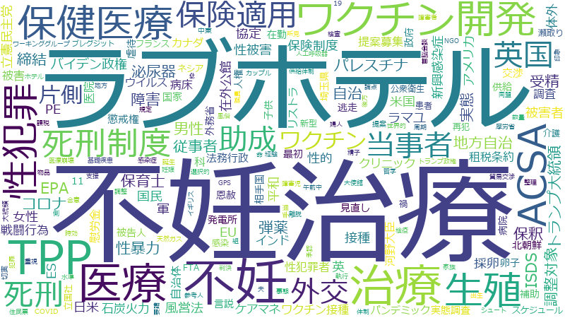

山川百合子

医療、コロナ、調査、実態、国民、政府、支援、不妊治療、治療、ウイルス、自治体、障害、当事者、ワクチン、被害、課題、TPP、アメリカ、外交、最初、見直し、助成、新型、事業、女性、体制、男性、締結、%、米国、英国、規定、不妊、側、拡大、従事者、経験、協定、提案、子供、要請、供給、地方、補助、EU、ワクチン開発、事態、交渉、保険適用、国家、地域、性犯罪、世界、可能性、感染症、接種、施設、日米、期待、水準、社会、職員、調整、EPA、トランプ大統領、ラブホテル、保健医療、保育士、導入、平和、感染、海外、生殖、相談、被害者、家族、病院、範囲、自治、情報、整理、機関、ワクチン接種、介護、分析、地方自治、外務省、懸念、検査、禍、ACSA、インド、参考人、地元、実態調査、想定、死刑、立憲民主党、スケジュール、一般
不妊治療、ラブホテル、不妊、治療、TPP、医療、ワクチン開発、保健医療、生殖、ACSA、性犯罪、死刑制度、保険適用、死刑、英国、助成、当事者、外交、ワクチン、片側、パレスチナ、EPA、実態、男性、泌尿器、コロナ、障害、ISDS、保育士、弾薬、トランプ大統領、地方自治、締結、性暴力、受精、調整対象、自治、保釈、従事者、バイデン政権、保険制度、米国、接種、英、採卵、風営法、女性、平和、日米、ラマユ、EU、新興感染症、協定、在外公館、ES、立憲民主党、PE、国民、被害者、軍、アメリカ、性被害、性的、体外、戦闘行為、石炭火力、提案募集、医院、科、ケアマネ、河野大臣、病床、ワクチン接種、クリニック、調査、性犯罪者、慰労金、被害、インド、租税条約、自治体、ウイルス、交渉、法務行政、懲戒権、カナダ、リストラ、パンデミック、逃走、恩赦、最初、実態調査、被告人、供給、卵子、言説、病院、北朝鮮、11、子供
不妊治療
| 言及回数 | 46回 |
| 言及発言者数（参考人を含む） | 106人 |
2020-02-25 account_balance
…たくさんの議員がコロナについては質問しておりますので、私の方からは、せっかく大臣との機会でございますので、不妊治療の現状と課題について、ぜひ大臣の御認識を更に深めていただいて適切な対応をしていただければという思いで質問を…
…かに子供の出生の数の中での割合が多くなっているかということをぜひ御認識をいただければと思います。私自身が不妊治療をしておりまして、そして、不妊治療をしているということをいわゆるカミングアウトしますと、周りに本当に驚くほ…
…くなっているかということをぜひ御認識をいただければと思います。私自身が不妊治療をしておりまして、そして、不妊治療をしているということをいわゆるカミングアウトしますと、周りに本当に驚くほどたくさんいらっしゃいます。私がカ…
…方は必ずいらっしゃいます。それが大きな集団ではなくて、一対一で話していてもそうでありますから、いかに今この不妊治療という問題が日本の社会で深刻な課題になっているかということがうかがわれるというふうに思います。この点につ…
…まして、何となくよさそうかなと思ってまず行ってみますと、まず最初に言われたのが、あなたは非常に遠いですよ、不妊治療って大変なんですよ、ここまで通い切れないと思いますよ、もう少し家から近い方がいいんじゃないんでしょうかと言…
…今やっていることがあるんです、もう少し実態把握もというお話なんですけれども、物すごい数の人が不妊治療をやっていて、そして多くの当事者たちが口をそろえて言うのは、本当にどうしたらいいのかよくわからないということなんですよね…
…、しかし、そうでありながら、やはり、日本の社会の中での男性不妊に対する認識、あわせて、医療機関においても、不妊治療というのが女性の治療を中心として、そこに男性も精子の検査をするというような形で加わってはくるけれども、基本…
…子損傷が起こるということ、これはもう知られていることのようであります。しかし、こういう現状がありながら、不妊治療というと、男性の方はプラスアルファで、検査はされるけれども、基本的にはやはり女性の体外受精というところに重…
2020-04-03 account_balance
…ていただきたいという思いから質問の機会をいただきました。また、あわせて、それに関連して、今年度に行われます不妊治療の支援事業についても少し御質問させていただきたいというふうに思います。本日、朝七時の時点で私がネットで確…
…ますが、一つはアビガンのことでございます。午前中も質問がございました。ですので、私は、アビガンの使用、特に不妊治療を行っている方あるいは行おうとしている方が、間違ってでも、この薬を使ってしまう、使っている期間に治療を行わ…
…間に治療を行われるようなことがないように、本当に、よほど気をつけなきゃいけないというふうに思っています。不妊治療というと、どうしても、クリニック、女性の治療が中心になりますけれども、専門の泌尿器科で不妊治療を行っている…
…ています。不妊治療というと、どうしても、クリニック、女性の治療が中心になりますけれども、専門の泌尿器科で不妊治療を行っている男性もいらっしゃいます。そうすると、両方ともに本当に気をつけなければいけないんですが、先生方、…
…ておりますので、ぜひよろしくお願いをいたします。それからもう一点、このコロナウイルス感染症の拡大に伴い、不妊治療を考えている方あるいはされている方に対してとても重大な発表があったので、これについてもお尋ねしておきたいと…
…ことから、妊娠が成立した後の感染への対応に苦慮することが予想されているなどとして、一定の時期を目安として、不妊治療の延期を選択肢として患者さんに提示することを推奨するという、会員の皆さんに対する呼びかけでありました。こ…
…う危機的な状況だから今はやらない方がいいですよということではあろうかと思うんですが、一方、御存じのとおり、不妊治療というのはある意味本当に時間との戦いであります。一日一日が戦いであるという、その現実がございます。もちろん…
…ろありますけれども、やはり治療効果としては一般的には年齢が若い方がいいというふうに言われていて、しかも特定不妊治療の助成対象が年齢で分かれているというところがございます。治療期間の初日における妻の年齢が四十三歳未満であ…
…凍結の話もちょっと触れていただいたんですけれども、ここにいらっしゃる皆さんはよく御承知のことと思いますが、不妊治療の経済的負担というものは物すごいものでありまして、凍結を延長する場合、もちろんクリニックにもよりますけれど…
…したので、それ以外の事業も動いていくことになりますので、このタイミングで、すごく大事だというふうに思うこの不妊治療に関係する政府の取組について、何点かお伺いをしたいというふうに思います。不妊治療というのは、国会でも、こ…
…事だというふうに思うこの不妊治療に関係する政府の取組について、何点かお伺いをしたいというふうに思います。不妊治療というのは、国会でも、この不妊治療に対する経済的負担の軽減ですとかを始めとして、それは保険適用であるのか助…
…関係する政府の取組について、何点かお伺いをしたいというふうに思います。不妊治療というのは、国会でも、この不妊治療に対する経済的負担の軽減ですとかを始めとして、それは保険適用であるのか助成金なのかということもそうですし、…
…六万四千人であったのに対して、二〇一七年の数字ではありますが、周期が四十五万周期ということは、どれほどこの不妊治療がやられているかということであります。この数字を踏まえても、やはり不妊治療の施策というのは非常に重要である…
…万周期ということは、どれほどこの不妊治療がやられているかということであります。この数字を踏まえても、やはり不妊治療の施策というのは非常に重要であるということであります。そこで、こういった与野党の議員からのいろいろな国会…
…し、どう施策の改善なり前進に反映していくのか、このことが物すごく大事だというふうに思います。日本の政府の不妊治療のこれまでの変遷というか経緯というのを私なりに見てみますと、その中心は、自由診療で行われている不妊治療が非…
…府の不妊治療のこれまでの変遷というか経緯というのを私なりに見てみますと、その中心は、自由診療で行われている不妊治療が非常に高額である、その経済的な負担を軽減するために助成制度を創設し、それを拡大してくるという歴史というか…
…で、ぜひこれはすぐやっていただきたいなということで最初に伺うと、男性不妊を専門的に治療する泌尿器科、これは不妊治療の指定医療機関に認定がされていない、そのことによって不妊治療の申請の対象になっていない。きのうヒアリングで…
…と、男性不妊を専門的に治療する泌尿器科、これは不妊治療の指定医療機関に認定がされていない、そのことによって不妊治療の申請の対象になっていない。きのうヒアリングでもその点をちょっと確認したんですが、そういう実情があるのかと…
…し、実際、泌尿器科の先生に本来は回すというかお願いしなきゃいけない、専門的なところに行き着かないまま女性が不妊治療を続けるというケースもよく報告されていますので、そういった点。また、クリニックで行われている治療の内容、そ…
…ぜひよろしくお願いをいたします。そして、やはり、不妊治療の課題に取り組んでいると本当につくづく思うのは、どれほど日本の社会の中で不妊に対する、あるいは妊孕性というんでしょうか、男性不妊も含めてですけれども、についての知…
…うに私は思っているんです。学校現場それから社会全体に対する啓蒙啓発、これらについて、少しずつやはり、この不妊治療を、いろいろな、二十五年に例えば報告書を出していますけれども、そこでもこの点は指摘されているんですよね。こ…
…うは、お時間をいただいてありがとうございます。ぜひ、コロナ感染症対策、スピード感と切迫感を持って、そしてまた、不妊治療についても今年度の調査研究をぜひ大事にして取り組んでいただきたいと思います。ありがとうございました。…
2020-11-11 account_balance
…指導を田村大臣始めとして皆様にも賜りますよう、よろしくお願いいたします。私は、きょうは三十分いただいて、不妊治療のことを中心に取り上げさせていただきたいと思います。私自身が不妊治療をしてきた当事者として、私、自分事と…
…。私は、きょうは三十分いただいて、不妊治療のことを中心に取り上げさせていただきたいと思います。私自身が不妊治療をしてきた当事者として、私、自分事としてもいろんなことが見えておりますし、また、いろんな方とお話をする機会…
…、本当に、体外受精によって子供が生まれるのがどんどんどんどんふえているという実態の中でありますし、私自身が不妊治療をして、残念ながら今まで授かってはいないんですけれども、自分がその当事者になって、このことをカミングアウト…
…させていただくと、保険適用に向けた課題整理のための国際比較を含む調査研究。二つ目として、医院・クリニックの不妊治療の治療内容、治療技術・水準、医療費等の実態。三つ目としては、特出しとして、男性不妊及び男性不妊治療をめぐる…
…ニックの不妊治療の治療内容、治療技術・水準、医療費等の実態。三つ目としては、特出しとして、男性不妊及び男性不妊治療をめぐる医院・クリニックの治療内容、治療技術・水準、医療費の実態。四つ目として、特定不妊治療費助成の拡充の…
…性不妊及び男性不妊治療をめぐる医院・クリニックの治療内容、治療技術・水準、医療費の実態。四つ目として、特定不妊治療費助成の拡充の効果。これまでの、拡充してきたけれども、その効果。それから、職場の理解と支援策の有無などの実…
…たけれども、その効果。それから、職場の理解と支援策の有無などの実態。そしてまた、自治体の取組。国民の不妊や不妊治療に関する意識調査。そして最後には、コロナがありますから、この感染症の影響ということで、これは申入れをさせて…
…れは実質的にはかなわずスタートしているというふうに思うんですけれども、今回の調査は本当に大丈夫なの、本当に不妊治療の今の日本の中で起こっていることがこの実態調査によって浮かび上がってくるのというすごく心配があるんです。…
…ろな方とお話をすると、えっ、そうなのというようなこともあるんです。例えばなんですけれども、そもそも日本の不妊治療というのは、日本で晩婚化が進んで、それで、いろいろな意味で卵子や精子の質が落ちてきて、なかなか妊娠しづらく…
…ると、そういう面は片側ではあるけれども、今の若い人たちは実はもう結構こういうことをよく御存じで、自分が早く不妊治療をしなくちゃいけないんじゃないかとか、医療機関に行っていたりとか、結構もうされている方が私が理解しているよ…
2020-11-20 account_balance
…憲の山川百合子でございます。よろしくお願いいたします。きょうは二問なんですが、まず最初に、生殖補助医療、不妊治療についてお伺いをしたいというふうに思います。参議院で、生殖補助医療で生まれた子の親子関係を明確にする民法…
…今、経緯について御説明いただいて、ありがとうございます。それと時を重なるようにしてというんでしょうか、不妊治療の助成の開始とか適用の拡大とか、それも片側であったと思うんですが、それについても確認をさせていただきたいと…
…だいたこととももちろん重なるんだと思いますが、やはり、きょうは確認ということがメーンなので、生殖補助医療と不妊治療のまず定義、それから、その上で、これをめぐる論点をきちっと整理いただきたいということをきのうもちょっと申し…
…ころからですが、生殖補助医療についての定義は、厚労省としては日本産婦人科医の定義を使っておられて、そして、不妊治療については日本産婦人科学会の定義を使われているということと理解いたしました。それから、論点がかなりコンパ…
…それから、論点がかなりコンパクトに整理をされたと思うんですが、さまざまな論点があろうかと思います。また、不妊治療の保険適用ということも言われていて、生殖補助医療でどこまでが範囲なのかということも含めて、かなり論点、議論…
2021-02-26 account_balance
…間がないので三番をちょっと飛ばさせていただいて、政務官に来ていただいていますので四番に移らせていただいて、不妊治療に関することで、予算委員会そして厚労でも本当に何度も質問しましたが、保険適用も実現することになりましたし、…
ラブホテル
| 言及回数 | 19回 |
| 言及発言者数（参考人を含む） | 12人 |
2020-05-27 account_balance
…ありがとうございます。続いて、コロナ関連の質問をさせていただきたいというふうに思います。ラブホテルのことであります。風営法の関係ですけれども、ラブホテルがこのコロナ禍にあっても融資や給付、税等の特例が受けられないとい…
…連の質問をさせていただきたいというふうに思います。ラブホテルのことであります。風営法の関係ですけれども、ラブホテルがこのコロナ禍にあっても融資や給付、税等の特例が受けられないという御相談を私受けまして、これは私も御相談…
…。こういうようなメール、御相談、切実な訴えをいただきました。親の代から約四十二年間、事業継承しているあるラブホテルの経営者の方であります。切実な訴えです。この方のお話によりますと、自分は、二〇一一年の改正風営法に従い…
…えです。この方のお話によりますと、自分は、二〇一一年の改正風営法に従い、風営法上の移行手続をして合法的にラブホテルを経営し、誠実に納税の義務も果たしてきたのに、今回のコロナ禍で政府が打ち出している融資、給付、税等の特例…
…っと時間もあれですが、全部あわせて伺いますけれども、例えばなんですが、事業承継税制や中小企業強化税制等からラブホテルは除外されるのかどうか。また、ラブホテルが信用保証協会による保証の特例の適用外となっているようですが、そ…
…すけれども、例えばなんですが、事業承継税制や中小企業強化税制等からラブホテルは除外されるのかどうか。また、ラブホテルが信用保証協会による保証の特例の適用外となっているようですが、それはなぜか。持続化給付金の対象からラブホ…
…ブホテルが信用保証協会による保証の特例の適用外となっているようですが、それはなぜか。持続化給付金の対象からラブホテルが外されている理由は何か。そして、雇用調整助成金では、性風俗関連特殊営業は、そもそも通常の場合は助成対象…
…風俗関連特殊営業は除いているんだという御答弁であるというふうに理解をいたします。じゃ、その風営法におけるラブホテルというのがどういうふうに位置づけられているかということを伺っていきたいんですけれども。私自身は、今回こ…
…づけられているかということを伺っていきたいんですけれども。私自身は、今回この相談を受けるまで、ちょっと、ラブホテルについて意識をしたこともないですし、利用したこともないので、よくわからないというか。実は、私自身も、余り…
…ルについて意識をしたこともないですし、利用したこともないので、よくわからないというか。実は、私自身も、余りラブホテルというのは、何というか、余りいいイメージを持っていない。何となく、余り近づかない方がいいのかなみたいな、…
…すけれども、それと本当に並ぶものなのかという疑問を私自身が持つに至ったわけであります。調べてみると、今のラブホテルは、一般のビジネスホテルの実態と、垣根というか、その違いが余りなくなってきている、そういう経営実態もある…
…うかどうかわかりませんけれども、そういうところもあるのではないかというふうに思うに至ったわけです。例えばラブホテルというのは、平成二十三年の法改正のときに、ラブホテルにするのか、旅館業法の一般のホテルにするのかというの…
…のではないかというふうに思うに至ったわけです。例えばラブホテルというのは、平成二十三年の法改正のときに、ラブホテルにするのか、旅館業法の一般のホテルにするのかというのは、フロントを設けて、フロントマンというんですかを設…
…ということが一つの基準になったみたいですけれども、つまり、自動支払い機の精算ができるかどうかという、それがラブホテルの特徴だったらしいんですが、今や、私自身も利用したことのある赤坂のその辺のホテルは、フロントマンを置かず…
…度も人に会わないでも寝泊まりできちゃう、そういう現状がある。それから、アダルトビデオというのは、かつてはラブホテルでしか提供されていなかったサービスなんだそうですね。ところが、今は、さっきお昼時間に電話で確認しましたけ…
…かということをきょうは問いたいわけであります。そこで、時間も限られているんですが、あと二つ。まず一つは、ラブホテルの現時点での風営法上の位置づけと、ここの位置づけになっているこれまでの経緯をまず参考人に伺っておきたいと…
…いろと問題があるんだ、強制わいせつとか強制性交とか、いろいろあるんだということはお答えいただいたんですが、ラブホテルという営業そのものが、経営者がそれをあっせんなどしているということであれば、それはつまりラブホテルという…
…ですが、ラブホテルという営業そのものが、経営者がそれをあっせんなどしているということであれば、それはつまりラブホテルという業態がいけないということになりますが、そうではなくて、そこで、場所としてそれが行われるということを…
…いうふうに書かれているんですが、今やＬＧＢＴのカップルなどもいますし、この法文一つとってもちょっと合わないなというふうに思います。もちろん、ラブホテルが建設されるような、国民の理解が得がたい実例ももちろんあるでしょう。…
不妊
| 言及回数 | 26回 |
| 言及発言者数（参考人を含む） | 61人 |
2020-02-25 account_balance
…、たくさんの議員がコロナについては質問しておりますので、私の方からは、せっかく大臣との機会でございますので、不妊治療の現状と課題について、ぜひ大臣の御認識を更に深めていただいて適切な対応をしていただければという思いで質問…
…ただいて適切な対応をしていただければという思いで質問をさせていただきます。御承知のことと思いますけれども、不妊に悩むカップルは、日本では今、全体の三組に一組にも上ると言われております。不妊の検査や治療を受けたことのある…
…承知のことと思いますけれども、不妊に悩むカップルは、日本では今、全体の三組に一組にも上ると言われております。不妊の検査や治療を受けたことのあるカップルは五・五組に一組であります。二〇一七年の数字でありますけれども、生殖…
…いかに子供の出生の数の中での割合が多くなっているかということをぜひ御認識をいただければと思います。私自身が不妊治療をしておりまして、そして、不妊治療をしているということをいわゆるカミングアウトしますと、周りに本当に驚く…
…多くなっているかということをぜひ御認識をいただければと思います。私自身が不妊治療をしておりまして、そして、不妊治療をしているということをいわゆるカミングアウトしますと、周りに本当に驚くほどたくさんいらっしゃいます。私が…
…二方は必ずいらっしゃいます。それが大きな集団ではなくて、一対一で話していてもそうでありますから、いかに今この不妊治療という問題が日本の社会で深刻な課題になっているかということがうかがわれるというふうに思います。この点に…
…しまして、何となくよさそうかなと思ってまず行ってみますと、まず最初に言われたのが、あなたは非常に遠いですよ、不妊治療って大変なんですよ、ここまで通い切れないと思いますよ、もう少し家から近い方がいいんじゃないんでしょうかと…
…今やっていることがあるんです、もう少し実態把握もというお話なんですけれども、物すごい数の人が不妊治療をやっていて、そして多くの当事者たちが口をそろえて言うのは、本当にどうしたらいいのかよくわからないということなんですよね…
…も自分の経験からいろいろなことを知るようになっているわけなんですけれども、成功率が低い要因の一つとして、男性不妊に対しての認識あるいは対応が的確ではない部分があるのではないかという懸念を持っております。ＷＨＯによると、…
…に対しての認識あるいは対応が的確ではない部分があるのではないかという懸念を持っております。ＷＨＯによると、不妊の原因の半分は男性にあるということはもう一般的にも知られていることというふうに思いますけれども、また、政府と…
…分は男性にあるということはもう一般的にも知られていることというふうに思いますけれども、また、政府としても男性不妊に対する助成の拡大ということもされているわけではありますが、しかし、そうでありながら、やはり、日本の社会の中…
…助成の拡大ということもされているわけではありますが、しかし、そうでありながら、やはり、日本の社会の中での男性不妊に対する認識、あわせて、医療機関においても、不妊治療というのが女性の治療を中心として、そこに男性も精子の検査…
…が、しかし、そうでありながら、やはり、日本の社会の中での男性不妊に対する認識、あわせて、医療機関においても、不妊治療というのが女性の治療を中心として、そこに男性も精子の検査をするというような形で加わってはくるけれども、基…
…らお話を聞いたりもしたんですけれども、その中に、精索静脈瘤、一般的に男性の十人に一人はいると。それで、一人目不妊、不妊外来に来る男性の方の三割はこの精索静脈瘤だ、二人目不妊の場合は七割がそうであると。しかし、実際にその治…
…を聞いたりもしたんですけれども、その中に、精索静脈瘤、一般的に男性の十人に一人はいると。それで、一人目不妊、不妊外来に来る男性の方の三割はこの精索静脈瘤だ、二人目不妊の場合は七割がそうであると。しかし、実際にその治療を受…
…一般的に男性の十人に一人はいると。それで、一人目不妊、不妊外来に来る男性の方の三割はこの精索静脈瘤だ、二人目不妊の場合は七割がそうであると。しかし、実際にその治療を受けているのは、統計はないんだけれども、数字をとっている…
…伝子損傷が起こるということ、これはもう知られていることのようであります。しかし、こういう現状がありながら、不妊治療というと、男性の方はプラスアルファで、検査はされるけれども、基本的にはやはり女性の体外受精というところに…
…ルファで、検査はされるけれども、基本的にはやはり女性の体外受精というところに重きが置かれていて、そして、男性不妊のところが見過ごされたまま女性の体外受精が繰り返し行われている。当然ですけれども、精子のＤＮＡ損傷があったら…
…思うんですが、このことは、時間も少ししかないので、また継続してやっていきたいと思います。ぜひ、この点、男性不妊、知られてきつつはありますけれども、制度の中でもどうやって扱っていくか、助成の対象もかなり限られているようで…
2020-04-03 account_balance
…っていただきたいという思いから質問の機会をいただきました。また、あわせて、それに関連して、今年度に行われます不妊治療の支援事業についても少し御質問させていただきたいというふうに思います。本日、朝七時の時点で私がネットで…
…いますが、一つはアビガンのことでございます。午前中も質問がございました。ですので、私は、アビガンの使用、特に不妊治療を行っている方あるいは行おうとしている方が、間違ってでも、この薬を使ってしまう、使っている期間に治療を行…
…期間に治療を行われるようなことがないように、本当に、よほど気をつけなきゃいけないというふうに思っています。不妊治療というと、どうしても、クリニック、女性の治療が中心になりますけれども、専門の泌尿器科で不妊治療を行ってい…
…っています。不妊治療というと、どうしても、クリニック、女性の治療が中心になりますけれども、専門の泌尿器科で不妊治療を行っている男性もいらっしゃいます。そうすると、両方ともに本当に気をつけなければいけないんですが、先生方…
…しておりますので、ぜひよろしくお願いをいたします。それからもう一点、このコロナウイルス感染症の拡大に伴い、不妊治療を考えている方あるいはされている方に対してとても重大な発表があったので、これについてもお尋ねしておきたい…
…ることから、妊娠が成立した後の感染への対応に苦慮することが予想されているなどとして、一定の時期を目安として、不妊治療の延期を選択肢として患者さんに提示することを推奨するという、会員の皆さんに対する呼びかけでありました。…
…いう危機的な状況だから今はやらない方がいいですよということではあろうかと思うんですが、一方、御存じのとおり、不妊治療というのはある意味本当に時間との戦いであります。一日一日が戦いであるという、その現実がございます。もちろ…
…いろありますけれども、やはり治療効果としては一般的には年齢が若い方がいいというふうに言われていて、しかも特定不妊治療の助成対象が年齢で分かれているというところがございます。治療期間の初日における妻の年齢が四十三歳未満で…
…凍結の話もちょっと触れていただいたんですけれども、ここにいらっしゃる皆さんはよく御承知のことと思いますが、不妊治療の経済的負担というものは物すごいものでありまして、凍結を延長する場合、もちろんクリニックにもよりますけれ…
…ましたので、それ以外の事業も動いていくことになりますので、このタイミングで、すごく大事だというふうに思うこの不妊治療に関係する政府の取組について、何点かお伺いをしたいというふうに思います。不妊治療というのは、国会でも、…
…大事だというふうに思うこの不妊治療に関係する政府の取組について、何点かお伺いをしたいというふうに思います。不妊治療というのは、国会でも、この不妊治療に対する経済的負担の軽減ですとかを始めとして、それは保険適用であるのか…
…に関係する政府の取組について、何点かお伺いをしたいというふうに思います。不妊治療というのは、国会でも、この不妊治療に対する経済的負担の軽減ですとかを始めとして、それは保険適用であるのか助成金なのかということもそうですし…
…ふうに、多くの人がこれに取り組んでいます。改めて、ここで一度、一応、数字だけを少し確認のため挙げておくと、不妊の検査や治療を受けたことのあるカップルは、今、約一八・二％、五・五組に一組と言われていますし、生殖補助医療で…
…十六万四千人であったのに対して、二〇一七年の数字ではありますが、周期が四十五万周期ということは、どれほどこの不妊治療がやられているかということであります。この数字を踏まえても、やはり不妊治療の施策というのは非常に重要であ…
…五万周期ということは、どれほどこの不妊治療がやられているかということであります。この数字を踏まえても、やはり不妊治療の施策というのは非常に重要であるということであります。そこで、こういった与野党の議員からのいろいろな国…
…析し、どう施策の改善なり前進に反映していくのか、このことが物すごく大事だというふうに思います。日本の政府の不妊治療のこれまでの変遷というか経緯というのを私なりに見てみますと、その中心は、自由診療で行われている不妊治療が…
…政府の不妊治療のこれまでの変遷というか経緯というのを私なりに見てみますと、その中心は、自由診療で行われている不妊治療が非常に高額である、その経済的な負担を軽減するために助成制度を創設し、それを拡大してくるという歴史という…
…す。もう時間がだんだん迫ってきているので、ぜひこれはすぐやっていただきたいなということで最初に伺うと、男性不妊を専門的に治療する泌尿器科、これは不妊治療の指定医療機関に認定がされていない、そのことによって不妊治療の申請…
…ので、ぜひこれはすぐやっていただきたいなということで最初に伺うと、男性不妊を専門的に治療する泌尿器科、これは不妊治療の指定医療機関に認定がされていない、そのことによって不妊治療の申請の対象になっていない。きのうヒアリング…
…うと、男性不妊を専門的に治療する泌尿器科、これは不妊治療の指定医療機関に認定がされていない、そのことによって不妊治療の申請の対象になっていない。きのうヒアリングでもその点をちょっと確認したんですが、そういう実情があるのか…
…ぜひよろしくお願いします。男性不妊、これは、最近では、不妊症の原因の半分は男性だということがＷＨＯが出してから少しずつ認知されるようにはなってきたと思いますが、特に日本ではまだまだですし、制度そのものが、もちろん男性不…
…ら少しずつ認知されるようにはなってきたと思いますが、特に日本ではまだまだですし、制度そのものが、もちろん男性不妊の治療に対しても政府は助成金を出していただくようになってはいるんですけれども、やはり社会的認知が非常に低い。…
…いるんですけれども、やはり社会的認知が非常に低い。ですから、やはり、一つ一つ、できることは何でもやって、男性不妊というものが社会的に認知される素地をぜひつくっていくためにも、ぜひよろしくお願いをしたいというふうに思います…
…ありがとうございます。男性不妊の方は、男性不妊への助成の創設に生かしているということで、それはすごくありがたく思います。では、それを挙げていただいたんですが、それがこれまで反映させたことになろうかと思うんですけれども、…
…いなというふうに思います。そこで伺いたいんですが、こちらからの要望をちょっと述べさせていただきますと、男性不妊、助成の創設は本当にありがたいです。更にその実態調査を、泌尿器科の専門の先生と連携しているところは非常に少な…
…すし、実際、泌尿器科の先生に本来は回すというかお願いしなきゃいけない、専門的なところに行き着かないまま女性が不妊治療を続けるというケースもよく報告されていますので、そういった点。また、クリニックで行われている治療の内容、…
…ぜひよろしくお願いをいたします。そして、やはり、不妊治療の課題に取り組んでいると本当につくづく思うのは、どれほど日本の社会の中で不妊に対する、あるいは妊孕性というんでしょうか、男性不妊も含めてですけれども、についての知…
…たします。そして、やはり、不妊治療の課題に取り組んでいると本当につくづく思うのは、どれほど日本の社会の中で不妊に対する、あるいは妊孕性というんでしょうか、男性不妊も含めてですけれども、についての知識、男性も女性も、自分…
…でいると本当につくづく思うのは、どれほど日本の社会の中で不妊に対する、あるいは妊孕性というんでしょうか、男性不妊も含めてですけれども、についての知識、男性も女性も、自分の体というものがどうなっているのか、子供を持つという…
…ふうに私は思っているんです。学校現場それから社会全体に対する啓蒙啓発、これらについて、少しずつやはり、この不妊治療を、いろいろな、二十五年に例えば報告書を出していますけれども、そこでもこの点は指摘されているんですよね。…
…うは、お時間をいただいてありがとうございます。ぜひ、コロナ感染症対策、スピード感と切迫感を持って、そしてまた、不妊治療についても今年度の調査研究をぜひ大事にして取り組んでいただきたいと思います。ありがとうございました。…
2020-11-11 account_balance
…御指導を田村大臣始めとして皆様にも賜りますよう、よろしくお願いいたします。私は、きょうは三十分いただいて、不妊治療のことを中心に取り上げさせていただきたいと思います。私自身が不妊治療をしてきた当事者として、私、自分事…
…す。私は、きょうは三十分いただいて、不妊治療のことを中心に取り上げさせていただきたいと思います。私自身が不妊治療をしてきた当事者として、私、自分事としてもいろんなことが見えておりますし、また、いろんな方とお話をする機…
…で、本当に、体外受精によって子供が生まれるのがどんどんどんどんふえているという実態の中でありますし、私自身が不妊治療をして、残念ながら今まで授かってはいないんですけれども、自分がその当事者になって、このことをカミングアウ…
…えさせていただくと、保険適用に向けた課題整理のための国際比較を含む調査研究。二つ目として、医院・クリニックの不妊治療の治療内容、治療技術・水準、医療費等の実態。三つ目としては、特出しとして、男性不妊及び男性不妊治療をめぐ…
…て、医院・クリニックの不妊治療の治療内容、治療技術・水準、医療費等の実態。三つ目としては、特出しとして、男性不妊及び男性不妊治療をめぐる医院・クリニックの治療内容、治療技術・水準、医療費の実態。四つ目として、特定不妊治療…
…リニックの不妊治療の治療内容、治療技術・水準、医療費等の実態。三つ目としては、特出しとして、男性不妊及び男性不妊治療をめぐる医院・クリニックの治療内容、治療技術・水準、医療費の実態。四つ目として、特定不妊治療費助成の拡充…
…男性不妊及び男性不妊治療をめぐる医院・クリニックの治療内容、治療技術・水準、医療費の実態。四つ目として、特定不妊治療費助成の拡充の効果。これまでの、拡充してきたけれども、その効果。それから、職場の理解と支援策の有無などの…
…充してきたけれども、その効果。それから、職場の理解と支援策の有無などの実態。そしてまた、自治体の取組。国民の不妊や不妊治療に関する意識調査。そして最後には、コロナがありますから、この感染症の影響ということで、これは申入れ…
…きたけれども、その効果。それから、職場の理解と支援策の有無などの実態。そしてまた、自治体の取組。国民の不妊や不妊治療に関する意識調査。そして最後には、コロナがありますから、この感染症の影響ということで、これは申入れをさせ…
…それは実質的にはかなわずスタートしているというふうに思うんですけれども、今回の調査は本当に大丈夫なの、本当に不妊治療の今の日本の中で起こっていることがこの実態調査によって浮かび上がってくるのというすごく心配があるんです。…
…いろな方とお話をすると、えっ、そうなのというようなこともあるんです。例えばなんですけれども、そもそも日本の不妊治療というのは、日本で晩婚化が進んで、それで、いろいろな意味で卵子や精子の質が落ちてきて、なかなか妊娠しづら…
…すると、そういう面は片側ではあるけれども、今の若い人たちは実はもう結構こういうことをよく御存じで、自分が早く不妊治療をしなくちゃいけないんじゃないかとか、医療機関に行っていたりとか、結構もうされている方が私が理解している…
…者に向けてやった、気心が知れた五千人ぐらいにやっているということも出ていまして、例えば、病気とか障害が起因の不妊に対して、主治医から不妊について説明があったかということに対して、主治医から教えてくれなかったのが半数を超え…
…知れた五千人ぐらいにやっているということも出ていまして、例えば、病気とか障害が起因の不妊に対して、主治医から不妊について説明があったかということに対して、主治医から教えてくれなかったのが半数を超えているとか、これはすごく…
2021-02-26 account_balance
…時間がないので三番をちょっと飛ばさせていただいて、政務官に来ていただいていますので四番に移らせていただいて、不妊治療に関することで、予算委員会そして厚労でも本当に何度も質問しましたが、保険適用も実現することになりましたし…
…。その成果として、来年度の事業そして予算をちょっと整理していただけるといいなと思いますが、さきに政務官に、不妊の、体のことについて教育現場で教えてほしいということを言って、林大臣に言ったときは一歩前進したんですが、去年…
治療
| 言及回数 | 46回 |
| 言及発言者数（参考人を含む） | 450人 |
2020-02-25 account_balance
…くさんの議員がコロナについては質問しておりますので、私の方からは、せっかく大臣との機会でございますので、不妊治療の現状と課題について、ぜひ大臣の御認識を更に深めていただいて適切な対応をしていただければという思いで質問をさ…
…思いますけれども、不妊に悩むカップルは、日本では今、全体の三組に一組にも上ると言われております。不妊の検査や治療を受けたことのあるカップルは五・五組に一組であります。二〇一七年の数字でありますけれども、生殖補助医療で誕…
…に子供の出生の数の中での割合が多くなっているかということをぜひ御認識をいただければと思います。私自身が不妊治療をしておりまして、そして、不妊治療をしているということをいわゆるカミングアウトしますと、周りに本当に驚くほど…
…なっているかということをぜひ御認識をいただければと思います。私自身が不妊治療をしておりまして、そして、不妊治療をしているということをいわゆるカミングアウトしますと、周りに本当に驚くほどたくさんいらっしゃいます。私がカミ…
…は必ずいらっしゃいます。それが大きな集団ではなくて、一対一で話していてもそうでありますから、いかに今この不妊治療という問題が日本の社会で深刻な課題になっているかということがうかがわれるというふうに思います。この点につい…
…ぜひ適切な支援に更につなげていっていただきたいなという思いで、この後を続けさせていただきます。私は、自分が治療してきたということもありまして、幾つも医院も回りましたし、クリニック、医院の状況というのはさまざまなんだなと…
…して、何となくよさそうかなと思ってまず行ってみますと、まず最初に言われたのが、あなたは非常に遠いですよ、不妊治療って大変なんですよ、ここまで通い切れないと思いますよ、もう少し家から近い方がいいんじゃないんでしょうかと言わ…
…ってみました。そこに行ってみますと、非常に大きなところで、正直、規模に圧倒されましたし、非常に流れ作業的な治療でありまして、主治医の先生がつくわけでもなく、いろいろな不安がありますけれども、そこの御相談を丁寧にするとい…
…っていただけない。たくさん待っていらっしゃいますから、余り時間をとるのもなという感じで、とにかく流れ作業的に治療を行っていくというような感じでありました。何となくそれでいいのかなという不安があって、周りのそういう治療を…
…に治療を行っていくというような感じでありました。何となくそれでいいのかなという不安があって、周りのそういう治療をしているという話を聞くと、どこでやったとか成功したとかという話になっていって、ある違うところのクリニックに…
…いう経験で、それだったらもっと早くその検査をしてほしかったし、甲状腺の値は薬を飲みさえすれば改善しますので、治療としては大変なことでは全くなかったんですけれども、じゃ、私のこの何年間は何だったのだという思いにさいなまれた…
…ですね。これは私の経験でありますけれども、こういう経験をしている人たちはたくさんいらっしゃいます。それで、治療の現場がどういう医療を行っているのか、どういう基準を持って治療を行っているのかということが、いわゆる患者であ…
…る人たちはたくさんいらっしゃいます。それで、治療の現場がどういう医療を行っているのか、どういう基準を持って治療を行っているのかということが、いわゆる患者である私たちには全くわからないんですね。ネット情報、口コミ情報とい…
…今やっていることがあるんです、もう少し実態把握もというお話なんですけれども、物すごい数の人が不妊治療をやっていて、そして多くの当事者たちが口をそろえて言うのは、本当にどうしたらいいのかよくわからないということなんですよね…
…ありがとうございます。治療水準の向上を図っていきたいというお答えをいただいたんですけれども、お手元にもお渡しさせていただいたと思いますが、少し資料を見ながらお話をしたいと思うんですが、これは、二〇一一年のデータを二〇一…
…低い。施設数もたくさんある。世界一だというふうに聞いておりますけれども、施設の数も世界一。そして、いわゆる治療の回数ですね、行っている治療の回数も世界一。しかし、成功率はこれほど低いという数字が出ておりまして、この実態…
…。世界一だというふうに聞いておりますけれども、施設の数も世界一。そして、いわゆる治療の回数ですね、行っている治療の回数も世界一。しかし、成功率はこれほど低いという数字が出ておりまして、この実態についてどのような御認識をお…
…。年齢も入れて見なきゃいけないんじゃないかとおっしゃいましたけれども、この実態について、世界一施設数が多くて治療数も多いんだけれども、実態はどうなのか。そのことによって子供が欲しいと思う人たちが授かることができているのか…
…しかし、そうでありながら、やはり、日本の社会の中での男性不妊に対する認識、あわせて、医療機関においても、不妊治療というのが女性の治療を中心として、そこに男性も精子の検査をするというような形で加わってはくるけれども、基本的…
…がら、やはり、日本の社会の中での男性不妊に対する認識、あわせて、医療機関においても、不妊治療というのが女性の治療を中心として、そこに男性も精子の検査をするというような形で加わってはくるけれども、基本的に女性の体外受精とい…
…妊、不妊外来に来る男性の方の三割はこの精索静脈瘤だ、二人目不妊の場合は七割がそうであると。しかし、実際にその治療を受けているのは、統計はないんだけれども、数字をとっているわけではないので、感覚的には二割程度かなというふう…
…損傷が起こるということ、これはもう知られていることのようであります。しかし、こういう現状がありながら、不妊治療というと、男性の方はプラスアルファで、検査はされるけれども、基本的にはやはり女性の体外受精というところに重き…
…どからも含めて五千人から集めるというような、かなり大規模な調査をしていますけれども、そこで出されているのが、治療費がだんだん年々上がっているという数字がこの資料にも示されていると思うんですけれども、顕微授精の平均治療費を…
…が、治療費がだんだん年々上がっているという数字がこの資料にも示されていると思うんですけれども、顕微授精の平均治療費をお出ししていますけれども、二〇一〇年、一周期当たり五十万円以上かかっている、三二％だったのが、二〇一八年…
…りましたと言うしかなくて、言い値でかかるわけです。そうすると、助成を拡大はしていただいているけれども、実際、治療費が上がっている。この現状をどうごらんになりますか。これは大臣に、この数字を見ていただいて、どういうふうな印…
…で、やはり、自由診療であるがゆえに、非常に、今現在、医療水準の標準化というところにも課題があると思いますし、治療費の適正化というのにも課題があると思うんですね。そこで、当事者の方が大臣にも要望されていると思いますし、当…
2020-04-03 account_balance
…いただきたいという思いから質問の機会をいただきました。また、あわせて、それに関連して、今年度に行われます不妊治療の支援事業についても少し御質問させていただきたいというふうに思います。本日、朝七時の時点で私がネットで確認…
…すが、一つはアビガンのことでございます。午前中も質問がございました。ですので、私は、アビガンの使用、特に不妊治療を行っている方あるいは行おうとしている方が、間違ってでも、この薬を使ってしまう、使っている期間に治療を行われ…
…特に不妊治療を行っている方あるいは行おうとしている方が、間違ってでも、この薬を使ってしまう、使っている期間に治療を行われるようなことがないように、本当に、よほど気をつけなきゃいけないというふうに思っています。不妊治療と…
…に治療を行われるようなことがないように、本当に、よほど気をつけなきゃいけないというふうに思っています。不妊治療というと、どうしても、クリニック、女性の治療が中心になりますけれども、専門の泌尿器科で不妊治療を行っている男…
…に、よほど気をつけなきゃいけないというふうに思っています。不妊治療というと、どうしても、クリニック、女性の治療が中心になりますけれども、専門の泌尿器科で不妊治療を行っている男性もいらっしゃいます。そうすると、両方ともに…
…います。不妊治療というと、どうしても、クリニック、女性の治療が中心になりますけれども、専門の泌尿器科で不妊治療を行っている男性もいらっしゃいます。そうすると、両方ともに本当に気をつけなければいけないんですが、先生方、看…
…おりますので、ぜひよろしくお願いをいたします。それからもう一点、このコロナウイルス感染症の拡大に伴い、不妊治療を考えている方あるいはされている方に対してとても重大な発表があったので、これについてもお尋ねしておきたいとい…
…この中で学会は、妊婦においてコロナウイルス感染の重症化の可能性が指摘されていること、また、感染時に使用される治療薬として妊婦に禁忌の薬剤、これはアビガンのことだというふうに思いますが、による治療が試行されていることから、…
…、また、感染時に使用される治療薬として妊婦に禁忌の薬剤、これはアビガンのことだというふうに思いますが、による治療が試行されていることから、妊娠が成立した後の感染への対応に苦慮することが予想されているなどとして、一定の時期…
…とから、妊娠が成立した後の感染への対応に苦慮することが予想されているなどとして、一定の時期を目安として、不妊治療の延期を選択肢として患者さんに提示することを推奨するという、会員の皆さんに対する呼びかけでありました。この…
…危機的な状況だから今はやらない方がいいですよということではあろうかと思うんですが、一方、御存じのとおり、不妊治療というのはある意味本当に時間との戦いであります。一日一日が戦いであるという、その現実がございます。もちろん精…
…という、その現実がございます。もちろん精子、卵子のそれぞれの状況とか体調とかいろいろありますけれども、やはり治療効果としては一般的には年齢が若い方がいいというふうに言われていて、しかも特定不妊治療の助成対象が年齢で分かれ…
…ありますけれども、やはり治療効果としては一般的には年齢が若い方がいいというふうに言われていて、しかも特定不妊治療の助成対象が年齢で分かれているというところがございます。治療期間の初日における妻の年齢が四十三歳未満である…
…がいいというふうに言われていて、しかも特定不妊治療の助成対象が年齢で分かれているというところがございます。治療期間の初日における妻の年齢が四十三歳未満であるということが対象である、しかも、通算が六回か三回かというのは、…
…六回か三回かというのは、初めて助成を受けたのが四十歳未満か四十歳以上かでこれが分かれてしまうわけであります。治療の延期を勧められても、助成が受けられるか受けられないかの瀬戸際である場合、また、一カ月や二カ月で四十や四十三…
…四十や四十三を超える云々という方ばかりではなくて、これがいつまで続くのかわからない中で、助成を受けないとこの治療を受けられない方々というのはたくさんいらっしゃるわけであります。ですから、いつ治療するのかということはすご…
…で、助成を受けないとこの治療を受けられない方々というのはたくさんいらっしゃるわけであります。ですから、いつ治療するのかということはすごく大事でありますけれども、もう期限が切れちゃうから急いで治療しなきゃいけない、助成金…
…ります。ですから、いつ治療するのかということはすごく大事でありますけれども、もう期限が切れちゃうから急いで治療しなきゃいけない、助成金をもらわないと治療ができないから、無理をして、心配だけれどもやらなきゃいけない、ある…
…ことはすごく大事でありますけれども、もう期限が切れちゃうから急いで治療しなきゃいけない、助成金をもらわないと治療ができないから、無理をして、心配だけれどもやらなきゃいけない、あるいは、それは心配だからもう諦めるといった、…
…結の話もちょっと触れていただいたんですけれども、ここにいらっしゃる皆さんはよく御承知のことと思いますが、不妊治療の経済的負担というものは物すごいものでありまして、凍結を延長する場合、もちろんクリニックにもよりますけれども…
…たので、それ以外の事業も動いていくことになりますので、このタイミングで、すごく大事だというふうに思うこの不妊治療に関係する政府の取組について、何点かお伺いをしたいというふうに思います。不妊治療というのは、国会でも、この…
…だというふうに思うこの不妊治療に関係する政府の取組について、何点かお伺いをしたいというふうに思います。不妊治療というのは、国会でも、この不妊治療に対する経済的負担の軽減ですとかを始めとして、それは保険適用であるのか助成…
…係する政府の取組について、何点かお伺いをしたいというふうに思います。不妊治療というのは、国会でも、この不妊治療に対する経済的負担の軽減ですとかを始めとして、それは保険適用であるのか助成金なのかということもそうですし、助…
…の人がこれに取り組んでいます。改めて、ここで一度、一応、数字だけを少し確認のため挙げておくと、不妊の検査や治療を受けたことのあるカップルは、今、約一八・二％、五・五組に一組と言われていますし、生殖補助医療で誕生した子供…
…、十七年前の二〇〇〇年が九十七人に一人であったことを考えると物すごい勢いでふえているということでありますし、治療を受けている延べ数も、二〇〇〇年は約七万周期、二〇一七年は約四十五万周期ということであります。単純な比較は…
…万四千人であったのに対して、二〇一七年の数字ではありますが、周期が四十五万周期ということは、どれほどこの不妊治療がやられているかということであります。この数字を踏まえても、やはり不妊治療の施策というのは非常に重要であると…
…周期ということは、どれほどこの不妊治療がやられているかということであります。この数字を踏まえても、やはり不妊治療の施策というのは非常に重要であるということであります。そこで、こういった与野党の議員からのいろいろな国会内…
…、どう施策の改善なり前進に反映していくのか、このことが物すごく大事だというふうに思います。日本の政府の不妊治療のこれまでの変遷というか経緯というのを私なりに見てみますと、その中心は、自由診療で行われている不妊治療が非常…
…の不妊治療のこれまでの変遷というか経緯というのを私なりに見てみますと、その中心は、自由診療で行われている不妊治療が非常に高額である、その経済的な負担を軽減するために助成制度を創設し、それを拡大してくるという歴史というか経…
…のことは、政府側、厚労省側として十分な検討を経て、他国の制度とか出生数とか成功率とか、経済的負担の重い軽いが治療するかどうかに影響するかとか、いろいろ分析も研究も行った上で、それで保険を適用しないということではなくて、保…
…がだんだん迫ってきているので、ぜひこれはすぐやっていただきたいなということで最初に伺うと、男性不妊を専門的に治療する泌尿器科、これは不妊治療の指定医療機関に認定がされていない、そのことによって不妊治療の申請の対象になって…
…、ぜひこれはすぐやっていただきたいなということで最初に伺うと、男性不妊を専門的に治療する泌尿器科、これは不妊治療の指定医療機関に認定がされていない、そのことによって不妊治療の申請の対象になっていない。きのうヒアリングでも…
…、男性不妊を専門的に治療する泌尿器科、これは不妊治療の指定医療機関に認定がされていない、そのことによって不妊治療の申請の対象になっていない。きのうヒアリングでもその点をちょっと確認したんですが、そういう実情があるのかとい…
…ずつ認知されるようにはなってきたと思いますが、特に日本ではまだまだですし、制度そのものが、もちろん男性不妊の治療に対しても政府は助成金を出していただくようになってはいるんですけれども、やはり社会的認知が非常に低い。ですか…
…、実際、泌尿器科の先生に本来は回すというかお願いしなきゃいけない、専門的なところに行き着かないまま女性が不妊治療を続けるというケースもよく報告されていますので、そういった点。また、クリニックで行われている治療の内容、それ…
…ま女性が不妊治療を続けるというケースもよく報告されていますので、そういった点。また、クリニックで行われている治療の内容、それから料金設定。この間、予算委員会の分科会でお話ししましたから、ここで個々にはお話ししませんが、…
…の分科会でお話ししましたから、ここで個々にはお話ししませんが、本当にさまざまで、患者の側はどこで自分に適切な治療が受けられるのか全くわからないんですね。治療を受けても、何でこんなことを今さら、何年も治療した後に当たり前の…
…お話ししませんが、本当にさまざまで、患者の側はどこで自分に適切な治療が受けられるのか全くわからないんですね。治療を受けても、何でこんなことを今さら、何年も治療した後に当たり前の情報をここから聞かされなきゃいけないんだみた…
…どこで自分に適切な治療が受けられるのか全くわからないんですね。治療を受けても、何でこんなことを今さら、何年も治療した後に当たり前の情報をここから聞かされなきゃいけないんだみたいなことになっていますので、料金設定、治療の内…
…年も治療した後に当たり前の情報をここから聞かされなきゃいけないんだみたいなことになっていますので、料金設定、治療の内容、それから医療連携とかですね、こういった点。また、あわせて、医療機関での実態調査もそうなんですが、自…
…ぜひよろしくお願いをいたします。そして、やはり、不妊治療の課題に取り組んでいると本当につくづく思うのは、どれほど日本の社会の中で不妊に対する、あるいは妊孕性というんでしょうか、男性不妊も含めてですけれども、についての知…
…に私は思っているんです。学校現場それから社会全体に対する啓蒙啓発、これらについて、少しずつやはり、この不妊治療を、いろいろな、二十五年に例えば報告書を出していますけれども、そこでもこの点は指摘されているんですよね。これ…
…うは、お時間をいただいてありがとうございます。ぜひ、コロナ感染症対策、スピード感と切迫感を持って、そしてまた、不妊治療についても今年度の調査研究をぜひ大事にして取り組んでいただきたいと思います。ありがとうございました。…
2020-11-11 account_balance
…導を田村大臣始めとして皆様にも賜りますよう、よろしくお願いいたします。私は、きょうは三十分いただいて、不妊治療のことを中心に取り上げさせていただきたいと思います。私自身が不妊治療をしてきた当事者として、私、自分事とし…
…私は、きょうは三十分いただいて、不妊治療のことを中心に取り上げさせていただきたいと思います。私自身が不妊治療をしてきた当事者として、私、自分事としてもいろんなことが見えておりますし、また、いろんな方とお話をする機会も…
…本当に、体外受精によって子供が生まれるのがどんどんどんどんふえているという実態の中でありますし、私自身が不妊治療をして、残念ながら今まで授かってはいないんですけれども、自分がその当事者になって、このことをカミングアウトと…
…せていただくと、保険適用に向けた課題整理のための国際比較を含む調査研究。二つ目として、医院・クリニックの不妊治療の治療内容、治療技術・水準、医療費等の実態。三つ目としては、特出しとして、男性不妊及び男性不妊治療をめぐる医…
…ただくと、保険適用に向けた課題整理のための国際比較を含む調査研究。二つ目として、医院・クリニックの不妊治療の治療内容、治療技術・水準、医療費等の実態。三つ目としては、特出しとして、男性不妊及び男性不妊治療をめぐる医院・ク…
…保険適用に向けた課題整理のための国際比較を含む調査研究。二つ目として、医院・クリニックの不妊治療の治療内容、治療技術・水準、医療費等の実態。三つ目としては、特出しとして、男性不妊及び男性不妊治療をめぐる医院・クリニックの…
…ックの不妊治療の治療内容、治療技術・水準、医療費等の実態。三つ目としては、特出しとして、男性不妊及び男性不妊治療をめぐる医院・クリニックの治療内容、治療技術・水準、医療費の実態。四つ目として、特定不妊治療費助成の拡充の効…
…技術・水準、医療費等の実態。三つ目としては、特出しとして、男性不妊及び男性不妊治療をめぐる医院・クリニックの治療内容、治療技術・水準、医療費の実態。四つ目として、特定不妊治療費助成の拡充の効果。これまでの、拡充してきたけ…
…、医療費等の実態。三つ目としては、特出しとして、男性不妊及び男性不妊治療をめぐる医院・クリニックの治療内容、治療技術・水準、医療費の実態。四つ目として、特定不妊治療費助成の拡充の効果。これまでの、拡充してきたけれども、そ…
…不妊及び男性不妊治療をめぐる医院・クリニックの治療内容、治療技術・水準、医療費の実態。四つ目として、特定不妊治療費助成の拡充の効果。これまでの、拡充してきたけれども、その効果。それから、職場の理解と支援策の有無などの実態…
…けれども、その効果。それから、職場の理解と支援策の有無などの実態。そしてまた、自治体の取組。国民の不妊や不妊治療に関する意識調査。そして最後には、コロナがありますから、この感染症の影響ということで、これは申入れをさせてい…
…は実質的にはかなわずスタートしているというふうに思うんですけれども、今回の調査は本当に大丈夫なの、本当に不妊治療の今の日本の中で起こっていることがこの実態調査によって浮かび上がってくるのというすごく心配があるんです。私…
…な方とお話をすると、えっ、そうなのというようなこともあるんです。例えばなんですけれども、そもそも日本の不妊治療というのは、日本で晩婚化が進んで、それで、いろいろな意味で卵子や精子の質が落ちてきて、なかなか妊娠しづらくな…
…と、そういう面は片側ではあるけれども、今の若い人たちは実はもう結構こういうことをよく御存じで、自分が早く不妊治療をしなくちゃいけないんじゃないかとか、医療機関に行っていたりとか、結構もうされている方が私が理解しているより…
…構もうされている方が私が理解しているよりも多い、その実態にちょっと驚かされることがあったんです。さらには、治療の内容も本当に病院によってさまざまで、御存じだと思いますけれどもさまざまで、実は、日本産婦人科学会が余りよし…
…によってさまざまで、御存じだと思いますけれどもさまざまで、実は、日本産婦人科学会が余りよしとしていないような治療内容の病院が、とても希望のように、そこに行くと、移植して着床の率がすごく高いというような。それは、いろいろな…
…ですが、日本産婦人科学会に入っている会員の病院だということをお伺いしているんですが、そうでないところの病院で治療を受けているような人たちが、非常にその病院に対する希望になっているというような、着床率が非常に高いということ…
…るのかというようなことがいろいろあろうかとは思うんですけれども、あわせて、やはり保険が適用されるまでは高額な治療費というのは変わらなくあるわけでありまして、その中で、当事者たちにとってみれば、保険適用という希望はあっても…
TPP
| 言及回数 | 32回 |
| 言及発言者数（参考人を含む） | 227人 |
2019-06-05 account_balance
…ありがとうございます。では、もう少し進めていきたいんですが、この貿易交渉について、ＴＰＰの水準が最大限であるという日本側の立場についてなんですが、トランプ大統領がそのように、同じように本当に考えているのかという点につい…
…する考えであるというふうに記者会見で答えたわけであります。これは、記者の質問としては、農産品の関税についてはＴＰＰの水準が最大限であるという日本の立場に変わりはないかという質問に対してのお答えです。これに総理がお答えに…
…質問に対してのお答えです。これに総理がお答えになっているところに、トランプ大統領が割り込むような形で、私はＴＰＰとは関係がありませんというお答えがありました。日本側はＴＰＰの水準が最大限であると説明をし、昨年の共同声…
…ろに、トランプ大統領が割り込むような形で、私はＴＰＰとは関係がありませんというお答えがありました。日本側はＴＰＰの水準が最大限であると説明をし、昨年の共同声明では、「日本としては農林水産品について、過去の経済連携協定で…
…譲許内容が最大限である」という日本の立場を尊重することが明記はされています。しかし、その共同声明にはどこにもＴＰＰという言葉はありません。それで、では、安倍総理とそしてトランプ大統領の間で、そのＴＰＰの水準が最大限であ…
…共同声明にはどこにもＴＰＰという言葉はありません。それで、では、安倍総理とそしてトランプ大統領の間で、そのＴＰＰの水準が最大限であるという点について、本当に共通のところに立っているのかというところが懸念をされるわけであ…
…けであります。むしろ、トランプ大統領が共同記者会見でおっしゃったことというのは、アメリカ側は貿易交渉においてＴＰＰの水準に縛られないという主張と捉えるのが自然ではないかというふうに思われるわけであります。そこで、確認と…
…張と捉えるのが自然ではないかというふうに思われるわけであります。そこで、確認というか質問したいわけですが、ＴＰＰの水準が最大限であるという日本の立場はしっかりと米国にも理解をされているのか、この点についてお伺いをしたい…
…んと理解はされているということだと思います。ありがとうございます。それで、もう少し伺いたいのは、アメリカのＴＰＰ12協定への復帰の見通しと、そして、11協定におけるいわゆるＴＰＰ枠の見直しを行う必要性について伺っておき…
…それで、もう少し伺いたいのは、アメリカのＴＰＰ12協定への復帰の見通しと、そして、11協定におけるいわゆるＴＰＰ枠の見直しを行う必要性について伺っておきたいんです。11協定では、農林水産分野に関する市場アクセスについ…
…いて、牛肉の輸入に関するセーフガードに関しては米国からの輸入量を考慮した基準である、また、バターや脱脂粉乳等ＴＰＰ枠についても米国からの輸入量を含めて設定された数量のままになっています。また、ＴＰＰ11協定第六条には、…
…た、バターや脱脂粉乳等ＴＰＰ枠についても米国からの輸入量を含めて設定された数量のままになっています。また、ＴＰＰ11協定第六条には、米国が復帰した場合あるいは復帰しないことが確定した場合などを念頭に、協定を見直す規定が…
…を見直す規定が盛り込まれています。それで、会談の前、五月八日の衆議院の農林水産委員会においては、アメリカがＴＰＰに戻る可能性があり、日米貿易交渉と並行して協議を進めている状況である、そういう御答弁もございます。ただ、ト…
…ているのではないかなというふうに思います。そこで伺いたいんですけれども、政府は、現段階においてもアメリカがＴＰＰに戻る可能性があるという認識をお持ちかということ、そして、アメリカがＴＰＰに戻る可能性がないと判断されるの…
…政府は、現段階においてもアメリカがＴＰＰに戻る可能性があるという認識をお持ちかということ、そして、アメリカがＴＰＰに戻る可能性がないと判断されるのはどういうケース、どういうふうになったらＴＰＰに戻る可能性がないというふう…
…ということ、そして、アメリカがＴＰＰに戻る可能性がないと判断されるのはどういうケース、どういうふうになったらＴＰＰに戻る可能性がないというふうになるのか、どういうケースを具体的に想定しているのかということ、そして、物品貿…
…のか、どういうケースを具体的に想定しているのかということ、そして、物品貿易協定が署名された場合は、アメリカがＴＰＰに戻る可能性がないという場合に相当するのか、さらに四点目として、物品協定が発効した場合において、ＴＰＰ11…
…メリカがＴＰＰに戻る可能性がないという場合に相当するのか、さらに四点目として、物品協定が発効した場合において、ＴＰＰ11協定が見直されないまま両者が併存するということもあるのか。この四点についてお伺いをしたいと思います。…
…いというようなお答えになるんじゃないかなと思います。もちろん、一番のポイントというか関心事というか懸念は、ＴＰＰ11で妥結した輸入枠の範囲を超えるようなことがないというところが一番大事なことでありまして、私も昨年、本会…
…昨年、本会議質問をする機会もいただいたんですけれども、アメリカにはまた特別枠を設けるということがないように、ＴＰＰの水準が最大限だということはおっしゃっていますが、全体としてというようなお言葉も入ったりして非常に曖昧で、…
…いるというふうに思います。河野大臣は、首脳会談の後に行われた参議院の外交防衛委員会の中で、日米共同声明ではＴＰＰの枠組みの中で合意をする、それを目指して交渉することになりますというふうにも御答弁をされているんですが、Ｔ…
…ＰＰの枠組みの中で合意をする、それを目指して交渉することになりますというふうにも御答弁をされているんですが、ＴＰＰ11でのＴＰＰ枠の範囲を逸脱した輸入枠の拡大はしないという御答弁がぜひあるといいなというふうに思うわけです…
…中で合意をする、それを目指して交渉することになりますというふうにも御答弁をされているんですが、ＴＰＰ11でのＴＰＰ枠の範囲を逸脱した輸入枠の拡大はしないという御答弁がぜひあるといいなというふうに思うわけですが、今後の交渉…
2020-11-18 account_balance
…の範囲内とすること、このことの実効性についてお伺いをしておきたいと思います。以前、茂木大臣に私から本会議でＴＰＰのことでお尋ねしたことがございます。あのときは、米国がＴＰＰから離脱し、その後に、米国が日本との新たなＦＴ…
…たいと思います。以前、茂木大臣に私から本会議でＴＰＰのことでお尋ねしたことがございます。あのときは、米国がＴＰＰから離脱し、その後に、米国が日本との新たなＦＴＡの交渉によって日本に新たな農産品の非課税輸入枠を迫った場合…
…おいては、日・ＥＵ・ＥＰＡにおいて決めた数量の範囲で英国との自由貿易枠を確保するというふうに伺っています。ＴＰＰ交渉においては、米国を含む関税割当て枠内数量を決定し、その後、米国が離脱してもその数量が維持され、英国を含…
…で伺っておきたいのは、ＥＵとの交渉の状況はその後どうなっているかということを一点。それから、一方、英国は、ＴＰＰ11協定への加入に関心を示したり、トラス大臣がＩＳＤＳ条項などを含めて将来更に協定を進化させる用意があると…
…日英ＥＰＡに貿易と女性の経済的エンパワーメントが位置づけられているということの経緯と意義。そして、あわせて、ＴＰＰ11協定での規定もほぼ同様な中身かというふうに思うんですが、このＴＰＰ11協定のもとでこれまでどのような取…
…うことの経緯と意義。そして、あわせて、ＴＰＰ11協定での規定もほぼ同様な中身かというふうに思うんですが、このＴＰＰ11協定のもとでこれまでどのような取組が行われてきたのか、その状況。そして、さらに、英国との協定ですので、…
…いかと懸念されてきて、これは本会議質問のときにもちょっと触れさせていただいたと思うんですが、結果的に、米国がＴＰＰから離脱し、今日に至っています。バイデン政権がこのような保健、社会保障分野重視の姿勢を近い将来貫くとすれ…
…障分野重視の姿勢を近い将来貫くとすれば、日本は米国に貢献することができる先進例を示すことにもなり、仮に米国がＴＰＰに加入したとしても、日本の皆保険制度がＩＳＤＳ条項のターゲットにされなくて済むかもしれません。以上、クラ…
2021-03-17 account_balance
…た後に、新たな保健医療体制をどのように再構築していくべきかを議論するのが常道であるように感じます。かつて、ＴＰＰ交渉で米国から、日本の国民皆保険制度が米国企業の保険商品が日本の保険市場に進出する上での障壁になっているの…
医療
| 言及回数 | 78回 |
| 言及発言者数（参考人を含む） | 927人 |
2019-12-03 account_balance
…件が福祉関係、特に子育て、介護等にかかわるものであったということでありますが、そのほかの提案の内容は、例えば医療や教育、防災にかかわるものなどはどのような案分になっているでしょうか。さらに、提案の趣旨が、権限移譲にかかわ…
…用計画審議会に整理統合する提案が出されました。これは調整対象外になりました。また、去年は、県が効果的に保健医療施策を展開するために、医療ビッグデータであるレセプト情報・特定健診等情報データベース、ＮＤＢを活用できるよう…
…提案が出されました。これは調整対象外になりました。また、去年は、県が効果的に保健医療施策を展開するために、医療ビッグデータであるレセプト情報・特定健診等情報データベース、ＮＤＢを活用できるように運用改善を求める提案をし…
2020-02-25 account_balance
…査や治療を受けたことのあるカップルは五・五組に一組であります。二〇一七年の数字でありますけれども、生殖補助医療で誕生した子供が五万六千六百十七人。このときの出生児の数は九十四万六千六十人ということでありますから、大体十…
…のときの出生児の数は九十四万六千六十人ということでありますから、大体十六・七人、約十七人に一人がこの生殖補助医療で誕生したという数字になります。これは全体のほぼ六％であります。少し数字を追ってみますと、二〇一五年には五…
…たのが、もう十七人に一人、約六％にまでなっているというこの数字を加藤大臣には改めて御認識いただいて、生殖補助医療がいかに子供の出生の数の中での割合が多くなっているかということをぜひ御認識をいただければと思います。私自身…
…験でありますけれども、こういう経験をしている人たちはたくさんいらっしゃいます。それで、治療の現場がどういう医療を行っているのか、どういう基準を持って治療を行っているのかということが、いわゆる患者である私たちには全くわか…
…いるわけではありますが、しかし、そうでありながら、やはり、日本の社会の中での男性不妊に対する認識、あわせて、医療機関においても、不妊治療というのが女性の治療を中心として、そこに男性も精子の検査をするというような形で加わっ…
…社会的な認識の問題ももちろんですが、やはり医療機関においても、先生方のお話を聞くと、なかなか婦人科の先生は泌尿器科の先生との連携がないとか、そもそも、窓口として助成の申請をできるのが婦人科の先生だけなんでしょうか、泌尿器…
…科の先生は直接助成の申請ができないという現状もあるやに伺っています。本当に、社会の認識だけじゃなくて、やはり医療の現場でも連携がまさに必要だと思うんですが、このことは、時間も少ししかないので、また継続してやっていきたいと…
…法人、当事者の方たちが二〇〇四年に立ち上げて、二〇〇五年にＮＰＯ法人化して、当事者間のコミュニケーションとか医療機関への働きかけとかをやっている、御存じだと思います、政府への提言などもされていますので。ここが調査をかなり…
…何と六〇％にもなっている。助成をしていただくのはすごくありがたいんですが、自由診療で、私も自分の経験から、医療機関の言い値なんですよね。幾らと言われたら、わかりましたと言うしかなくて、言い値でかかるわけです。そうすると…
…担は軽減していきたいというふうに思うわけなんですが、片側で、やはり、自由診療であるがゆえに、非常に、今現在、医療水準の標準化というところにも課題があると思いますし、治療費の適正化というのにも課題があると思うんですね。そ…
…上がっているのは、やはり保険適用に向けていろいろな課題を整理していく。このことによって課題が整理されていく、医療水準の標準化というのもなされていくというふうに思っているわけであります。きょうは時間が来てしまったので、こ…
…、この保険適用に向けて課題を整理していくということをぜひ政府の今後の検討の中に入れていただいて、本当に適正な医療とそして適正な価格で、これだけの人たちが大変な思いをしているわけでありますから、ぜひその方向に向かって検討を…
2020-04-03 account_balance
…て、最悪の事態が来ても本当に被害を最小限に抑えるということが何よりも重要であり、今求められているのは、やはり医療体制をどうきちんと確保しておくかということであるというふうに思っています。政府は自治体に対して、現状、コロ…
…く、まずは二枚配りますと。もちろん、洗えるとかそういうことがあるとしても、これでは、数分が命に直結するような医療の資器材というのも本当に必要な数を準備していくことができるんだろうかということは、本当に国民の不安につながっ…
…本ではまだオーバーシュートには至っていないけれども今後どうなるかはわからない、オーバーシュートに至らなくても医療崩壊が起こり得るというようなことを発信するのであれば、それに対して今これだけのことをやっているから大丈夫なん…
…っと使い続けなきゃいけないなんということがないように、ぜひお願いをいたします。それからもう一点、午前中にも医療従事者の安全確保についての御質問がございましたから、私は、それに加えて、医療従事者の家族の方々の感染防止につ…
…。それからもう一点、午前中にも医療従事者の安全確保についての御質問がございましたから、私は、それに加えて、医療従事者の家族の方々の感染防止についてどういう対応をしているかも伺っておきたいというふうに思います。外国の例…
…染防止についてどういう対応をしているかも伺っておきたいというふうに思います。外国の例ではありますけれども、医療従事者からその家族を、先生が別に感染していなくとも、症状がなくとも、もしかしたらそのリスクがやはりある、濃厚…
…症状がなくとも、もしかしたらそのリスクがやはりある、濃厚接触者になる、家族にはそのリスクが高いということで、医療現場、コロナウイルス感染症対策の、現場で働いている先生の御家族の方と先生方、医療従事者を分けるということで、…
…のリスクが高いということで、医療現場、コロナウイルス感染症対策の、現場で働いている先生の御家族の方と先生方、医療従事者を分けるということで、例えば大学の寮なんかを、今休校になっていますから、そこを借り上げて、先生方がその…
…すから、そこを借り上げて、先生方がその部屋を使えるようにするとかいろいろな方策をとっているわけでありますが、医療従事者については先ほど御質問がありましたから、御家族が感染しないようにということについての対策についてお伺い…
…性もいらっしゃいます。そうすると、両方ともに本当に気をつけなければいけないんですが、先生方、看護師さんとか、医療従事者の方、スタッフの方、それから患者さん、ともにこのことをしっかりと徹底していかなければいけないと思います…
…、不妊の検査や治療を受けたことのあるカップルは、今、約一八・二％、五・五組に一組と言われていますし、生殖補助医療で誕生した子供も二〇一七年には五万六千六百十七人、約十七人に一人であります。これは、十七年前の二〇〇〇年が九…
…はすぐやっていただきたいなということで最初に伺うと、男性不妊を専門的に治療する泌尿器科、これは不妊治療の指定医療機関に認定がされていない、そのことによって不妊治療の申請の対象になっていない。きのうヒアリングでもその点をち…
…もその点をちょっと確認したんですが、そういう実情があるのかということと、実情があるのであれば泌尿器科であっても指定医療機関にぜひ認定していただきたいと思うんですが、ここのところをちょっと確認させていただきたいと思います。…
…り前の情報をここから聞かされなきゃいけないんだみたいなことになっていますので、料金設定、治療の内容、それから医療連携とかですね、こういった点。また、あわせて、医療機関での実態調査もそうなんですが、自治体がかなり厚労省の…
…なことになっていますので、料金設定、治療の内容、それから医療連携とかですね、こういった点。また、あわせて、医療機関での実態調査もそうなんですが、自治体がかなり厚労省の制度に対して上乗せ補助とかあるいは啓蒙啓発とかいろい…
2020-11-11 account_balance
…課題整理のための国際比較を含む調査研究。二つ目として、医院・クリニックの不妊治療の治療内容、治療技術・水準、医療費等の実態。三つ目としては、特出しとして、男性不妊及び男性不妊治療をめぐる医院・クリニックの治療内容、治療技…
…。三つ目としては、特出しとして、男性不妊及び男性不妊治療をめぐる医院・クリニックの治療内容、治療技術・水準、医療費の実態。四つ目として、特定不妊治療費助成の拡充の効果。これまでの、拡充してきたけれども、その効果。それから…
…若い人たちは実はもう結構こういうことをよく御存じで、自分が早く不妊治療をしなくちゃいけないんじゃないかとか、医療機関に行っていたりとか、結構もうされている方が私が理解しているよりも多い、その実態にちょっと驚かされることが…
2020-11-18 account_balance
…ることから、国内外の治験を踏まえ、慎重に行うこと。四新型コロナウイルスワクチンに関する独立行政法人医薬品医療機器総合機構の審査報告書については承認後速やかに公表するとともに、ワクチン承認の可否が判断される薬事・食品衛…
…チンによる副反応を疑う事象について、広く相談窓口を設置し、国民に周知すること。また、海外における情報も含め、医療機関又は製造販売業者等から迅速に情報を把握し、情報公開を徹底するとともに、健康被害が拡大することのないよう、…
…情報共有及び情報発信に向けた緊密な連携が重要であることに鑑み、国及び地方自治体の担当者の間や、国と医師会等の医療関係団体の間で迅速に情報共有が図られるよう、あらかじめ発生時の対応や連絡窓口等を確認するとともに、情報交換窓…
2020-11-20 account_balance
…立憲の山川百合子でございます。よろしくお願いいたします。きょうは二問なんですが、まず最初に、生殖補助医療、不妊治療についてお伺いをしたいというふうに思います。参議院で、生殖補助医療で生まれた子の親子関係を明確にする民…
…んですが、まず最初に、生殖補助医療、不妊治療についてお伺いをしたいというふうに思います。参議院で、生殖補助医療で生まれた子の親子関係を明確にする民法の特例法案が参議院に議員立法で提出されて、それが本日可決をされたという…
…院に議員立法で提出されて、それが本日可決をされたというふうに思います。この法案は、民法の特例のほか、生殖補助医療の提供に関する基本理念や国の責務などを定める内容となっております。また、生殖補助医療及びその提供に関する規制…
…法の特例のほか、生殖補助医療の提供に関する基本理念や国の責務などを定める内容となっております。また、生殖補助医療及びその提供に関する規制のあり方ですとか、生殖補助医療で生まれた子供の出自を知る権利や、卵子などのあっせんに…
…の責務などを定める内容となっております。また、生殖補助医療及びその提供に関する規制のあり方ですとか、生殖補助医療で生まれた子供の出自を知る権利や、卵子などのあっせんに関する規制のあり方等のこういう大事な問題については二年…
…制審議会でも十三年から親子法制について検討し、十五年には中間試案を出し、また、同じ十五年には厚労省の生殖補助医療部会の方が報告書を出し、また、平成二十年には、厚労相と法務相から審議をするように言われて、日本学術会議の方が…
…滞をしているというような印象を持つわけであります。そこで、まず最初に、今日に至るまでの政府における生殖補助医療のあり方に関する検討の経緯について、確認の意味も含めて伺わせていただきたいと思います。それで、通告の際に、…
…れていただいたこととももちろん重なるんだと思いますが、やはり、きょうは確認ということがメーンなので、生殖補助医療と不妊治療のまず定義、それから、その上で、これをめぐる論点をきちっと整理いただきたいということをきのうもちょ…
…す。論点はかなりたくさんあると思うんですけれども。まず確認ですが、先ほどの定義のところからですが、生殖補助医療についての定義は、厚労省としては日本産婦人科医の定義を使っておられて、そして、不妊治療については日本産婦人科…
…思うんですが、さまざまな論点があろうかと思います。また、不妊治療の保険適用ということも言われていて、生殖補助医療でどこまでが範囲なのかということも含めて、かなり論点、議論が、これまでも非常に難しい問題であったからなかなか…
…こで、議員立法で法律が参議院は通っておりますけれども、検討課題はたくさんあります。このような動きの中で、政府における今後の生殖補助医療のあり方に関する議論はどうしていこうとされているのか、お伺いをいたしたいと思います。…
…ようなんですね。ですので、やはり、どこがということも大事ですが、本当に実態を把握していく。そして、生殖補助医療というのは、前回も申し上げましたけれども、もう実情の方がどんどんどんどん進んでいて、私がかつて五年ぐらい前に…
…ぞれ本当にたくさんあると思うんですね。ですので、ぜひ政府もしっかりと実態を把握するということ、この生殖補助医療にしっかりとコミットしていくということ、そのために、当事者からきちっと話を、いろいろな人から聞いていくという…
…はとても重要だというふうに思っています。検査体制もかなり進展があると聞いておりますし、私も、地元の小さな在宅医療機関がＰＣＲ検査ユニットを導入をしたということで、視察もいたしました。ぜひ、この全員検査、ある特定の職に関…
2020-12-02 account_balance
…かということについて伺っておきたいんですけれども、今重症者がすごくふえて本当に大変な状況になって、どうやって医療崩壊を起こさないかということが今一番大事なことだというふうに思います。いろいろな議論がある中で、一つは、重…
…が今一番大事なことだというふうに思います。いろいろな議論がある中で、一つは、重症者や中等症以上の方に適正な医療を提供するためには、やはり軽症の方とか無症状の方は病院ではなくてホテル、自宅ということで今までもやってきてい…
…きているというふうに思うんですけれども、この類型を引き下げるというんでしょうか、二類から五類へという議論は、医療崩壊を防ぐために、やはりきっちりと、重症者は病院、中等症以上は病院、そしてそうでない方はということを明確にす…
…ます。では、時間がどんどん迫ってきているので、ちょっと更問いは割愛して次に進めさせていただきたいんですが、医療崩壊、とにかく医療体制を守る、医療崩壊を招かないということで、大臣もメッセージも出されていますが、本当にこの…
…がどんどん迫ってきているので、ちょっと更問いは割愛して次に進めさせていただきたいんですが、医療崩壊、とにかく医療体制を守る、医療崩壊を招かないということで、大臣もメッセージも出されていますが、本当にこのことは大事だという…
…きているので、ちょっと更問いは割愛して次に進めさせていただきたいんですが、医療崩壊、とにかく医療体制を守る、医療崩壊を招かないということで、大臣もメッセージも出されていますが、本当にこのことは大事だというふうに思っており…
…していただきたいというふうに思うわけであります。そこで、二点伺っておきたいというふうに思います。やはり、医療崩壊を招かないためには、十分な医療体制が整うということと同時に、重症者はこちら、軽症者はこちらというような適…
…けであります。そこで、二点伺っておきたいというふうに思います。やはり、医療崩壊を招かないためには、十分な医療体制が整うということと同時に、重症者はこちら、軽症者はこちらというような適正なコーディネートがとても必要だと…
2021-02-26 account_balance
…で、分配してというんですか、なので新規はもう受けられないんですと断られたんですね。その同じときに、やはり訪問医療の方ももう新規は受けられませんと言われました。ああ、いよいよ私たちも介護難民かというふうに思って、それで、…
…る。そこまでのストレスを従事者の皆さんにかけているというこの現実があります。先ほどの優先接種のお話の中で、医療従事者の重症化を予防し、医療を守るということをおっしゃられましたが、やはり介護を守るという視点も同時に必要じ…
…者の皆さんにかけているというこの現実があります。先ほどの優先接種のお話の中で、医療従事者の重症化を予防し、医療を守るということをおっしゃられましたが、やはり介護を守るという視点も同時に必要じゃないかというふうに思うんで…
…く大事なんじゃないかというふうに思うんですね。いろいろな基準はもちろんあります。重症化等を防いで、それから医療崩壊を。それは分かります。でも、介護崩壊も防がなきゃいけないですし、要望はたくさん上がってきていると思います…
2021-03-17 account_balance
…。そうであるとすると、日本国内で今、高齢者そして一般の方にも順次郵送する接種券ですけれども、これは相手国の医療機関で接種するということでありますから、この接種券がなくてももちろん接種するんでしょうけれども、では、接種し…
…感じている一人です。そして、その高い公衆衛生の意識も環境も、日本が世界に誇る国民皆保険制度を基盤とする保健医療体制によって支えられているのだと思います。日本全国どこに居住していようとも、国民全てにある一定水準以上の医療…
…医療体制によって支えられているのだと思います。日本全国どこに居住していようとも、国民全てにある一定水準以上の医療サービスが提供されているため、新型コロナウイルス感染症のような新興感染症による被害拡大を未然に吸収していると…
…クにおける世界の公衆衛生を守る中核を担っているのが、抗ＣＯＶＩＤ―19ワクチンの開発と供給です。国家の保健医療体制の構築には相当な期間と投資が必要ですから、パンデミックが発生してから取り組んでは遅過ぎます。しかし、新興…
…イルス感染症による世界的なパンデミックにおける国家の公衆衛生の要は、繰り返しになりますが、ワクチン開発と保健医療体制であると言って過言ではないのに、なぜ日本でワクチン開発を進めなかったのか。ワクチン開発の進まない理由につ…
…人にお伺いしておきたいのは、やはり、繰り返しになるかもしれませんが、国際社会との連携強化によって海外への保健医療体制構築の支援を行ったとしても、ワクチンそのものが確保できなければ施策の効果は上がらない。我が国は、高い保健…
…体制構築の支援を行ったとしても、ワクチンそのものが確保できなければ施策の効果は上がらない。我が国は、高い保健医療体制を既に構築していますが、もう今ワクチンを待っている状態、自治体は。しかし、ワクチンが供給されないことで接…
…き渡らせようという政策決定ができなかったのかということを率直にお伺いをしたいと思います。またさらに、現在、医療法等改正案が明日から、本会議が立ちますが、審議入りしようとしていますが、なぜこの時期なのかなというふうに率直…
…しようとしていますが、なぜこの時期なのかなというふうに率直に思います。パンデミックが収束した後に、新たな保健医療体制をどのように再構築していくべきかを議論するのが常道であるように感じます。かつて、ＴＰＰ交渉で米国から、…
…直しに言及をされ物議を呼びましたけれども、米国からの圧力で、もしも、日本が世界に誇るべき国民皆保険制度や保健医療体制をリストラしていくとしたら、それは外交上の敗北になるのではないかとさえ懸念をしております。むしろ、今回…
…ャリズムを起点とする新保守主義や新自由主義と言われるリストラの大きなトレンドの中で後退し、ＮＨＳのリストラで医療の量と質が低下したことによる深刻なパンデミック被害を拡大させたという指摘まであるわけで、日本は、現在の弾力的…
…ことによる深刻なパンデミック被害を拡大させたという指摘まであるわけで、日本は、現在の弾力的な余地を残した保健医療体制だからこそ、このパンデミックにも比較的抑制的かつ柔軟に対応ができているのだというふうに思います。茂木大…
…皆保険制度を、効率性からだけではなくて、必要な弾力性やバッファーという視点からも再評価し、我が国の優れた保健医療制度をパッケージとして世界に発信し、同様の保健医療システムを関係国に輸出し構築する固い意思を持っていただけな…
…性やバッファーという視点からも再評価し、我が国の優れた保健医療制度をパッケージとして世界に発信し、同様の保健医療システムを関係国に輸出し構築する固い意思を持っていただけないかということであります。我が国が標榜する人間の…
…うこともあったんですが、いろいろお答えいただいたんですが、やはり、ワクチンが接種されるまでのいろいろな、保健医療体制を整えていくということは非常に、日本は今支援をしていただいていると思うんですね。供給においても、ＣＯＶＡ…
2021-03-18 account_balance
…立憲民主党の山川百合子です。立憲民主党・無所属を代表して、良質かつ適切な医療を効率的に提供する体制の確保を推進するための医療法等の一部を改正する法律案及びコロナ対応医療従事者等慰労金法案に対する質疑を行います。（拍手）…
…川百合子です。立憲民主党・無所属を代表して、良質かつ適切な医療を効率的に提供する体制の確保を推進するための医療法等の一部を改正する法律案及びコロナ対応医療従事者等慰労金法案に対する質疑を行います。（拍手）まずは、武田…
…、良質かつ適切な医療を効率的に提供する体制の確保を推進するための医療法等の一部を改正する法律案及びコロナ対応医療従事者等慰労金法案に対する質疑を行います。（拍手）まずは、武田総務大臣に伺います。本日の報道によれば、昨…
…大が懸念される中、田村大臣は宣言を解除してよいと思われますか。お伺いをいたします。本日提案されたコロナ対応医療従事者等慰労金法案について伺います。新型コロナウイルスとの戦いが長期化する中で、医療従事者が働く環境は過酷…
…日提案されたコロナ対応医療従事者等慰労金法案について伺います。新型コロナウイルスとの戦いが長期化する中で、医療従事者が働く環境は過酷さを増し、心身の疲労は限界に達しています。立憲民主党など野党は、第二波以降に新型コロナ…
…、心身の疲労は限界に達しています。立憲民主党など野党は、第二波以降に新型コロナウイルスの患者等に対応している医療従事者等にもう一度二十万円の慰労金を支給する法案を提出しています。慰労金の再支給の必要性についてどのように認…
…再支給の必要性についてどのように認識しているか、議員立法提出者に伺います。政府が第一波で支給した慰労金は、医療機関、介護、障害福祉サービス事業所等に勤務されている方に対象が限定されていましたが、野党の法案では、対象を拡…
…案に対して、慰労金の再支給を行う予定はないと回答しています。慰労金の必要性を感じていない厚生労働省は、現在の医療従事者の心身の疲労をどのように認識しているのか、お答えください。厚労大臣の答弁を求めます。続いて、良質かつ…
…の心身の疲労をどのように認識しているのか、お答えください。厚労大臣の答弁を求めます。続いて、良質かつ適切な医療を効率的に提供する体制の確保を推進するための医療法等の一部を改正する法律案について、田村厚生労働大臣に伺いま…
…ください。厚労大臣の答弁を求めます。続いて、良質かつ適切な医療を効率的に提供する体制の確保を推進するための医療法等の一部を改正する法律案について、田村厚生労働大臣に伺います。私は、新興感染症が発生した場合、国家の公衆…
…て、田村厚生労働大臣に伺います。私は、新興感染症が発生した場合、国家の公衆衛生において、ワクチン開発と保健医療体制が極めて重要であると思います。我が国は、ワクチン開発では大幅に後れを取り、外国製のワクチン輸入に頼らざ…
…がなかなか供給されないのが現状です。一方、我が国の公衆衛生は、国民皆保険制度を基盤とする世界に誇るべき保健医療体制によって支えられ、全国で、いつでも、誰でも、一定価格で医療サービスが受けられます。我が国と同様に国民皆…
…、国民皆保険制度を基盤とする世界に誇るべき保健医療体制によって支えられ、全国で、いつでも、誰でも、一定価格で医療サービスが受けられます。我が国と同様に国民皆保険制度を持つイギリスは、長年にわたるＮＨＳのリストラによって…
…て、ワープスピード作戦と称するワクチン開発と供給体制の構築に取り組み、複数のワクチン開発に成功しました。保健医療システムの不足を補完しながら、全国民へのワクチン接種という国家プロジェクトが進行しており、開発された米国製ワ…
…種という国家プロジェクトが進行しており、開発された米国製ワクチンが我が国を始め世界に供給されています。保健医療体制の整備は一朝一夕には進みませんから、我が国の国民皆保険制度を基盤とする保健医療体制は世界的に大きな優位性…
…に供給されています。保健医療体制の整備は一朝一夕には進みませんから、我が国の国民皆保険制度を基盤とする保健医療体制は世界的に大きな優位性を保障してくれていますが、英国や米国のアグレッシブな対応から私たちが学ぶべきものは…
…な対応から私たちが学ぶべきものは何か、政府の御見解を伺います。現行の我が国の国民皆保険制度を基盤とする保健医療体制は、効率性と弾力性のバランスの上に成立しています。そして、この弾力性の部分こそが、今回のコロナ禍を緩衝材…
…しょうか。ですから、今、このパンデミックの最中でこの体制を見直すよりも、現実に現場で苦労して働いておられる医療従事者の皆様や、それを補完して公衆衛生を間接的に担ってくださっている介護職などの皆様を慰労金で支援し、病床数…
…衆衛生を間接的に担ってくださっている介護職などの皆様を慰労金で支援し、病床数や医師、看護師の適正配置など保健医療体制のリストラの議論は、コロナ禍が収束してからじっくり行うべきだと考えます。菅総理の唐突な皆保険制度の見直…
…うなリストラを前提としているならば、この時期に容認することは断固としてできません。菅総理の発言の真意と今回の医療法等改正の目的について、リストラを前提としているのか、そうでないのか、お答えください。さて、今回の改正では…
…ているのか、そうでないのか、お答えください。さて、今回の改正では、新型コロナウイルス感染症が広がる中、地域医療構想の中に新興感染症対策が含まれていないことから、急遽、地域医療計画に六事業目として位置づけることとしていま…
…は、新型コロナウイルス感染症が広がる中、地域医療構想の中に新興感染症対策が含まれていないことから、急遽、地域医療計画に六事業目として位置づけることとしています。しかし、計画に位置づけるという都道府県任せの対応でよいので…
…験することで浮かび上がる課題を整理し、国の責任として、今後起こり得る新興感染症をどこまで想定し、それに応える医療体制をどう整備していくのか、その大本の議論が何よりもまず必要です。新興感染症への対応を真摯に検討してもなお必…
…コロナ収束後、改めて構想の見直しを行うのでしょうか。政府の御見解を伺います。厚生労働省は、昨年、公立・公的医療機関を名指しした上で、具体的対応方針の再検証を求めてきました。新型コロナウイルスの感染拡大に伴い、再検証の期…
…取組の進め方について改めて整理の上で示すとしていましたが、いまだに具体的な方針を示していません。政府の地域医療構想を推進していくと、今後、公立・公的医療機関全体の病床数は減少するのか、医療機関全体の病床に占める割合は低…
…していましたが、いまだに具体的な方針を示していません。政府の地域医療構想を推進していくと、今後、公立・公的医療機関全体の病床数は減少するのか、医療機関全体の病床に占める割合は低くなるのか、仮に減少するのであれば、今後新…
…を示していません。政府の地域医療構想を推進していくと、今後、公立・公的医療機関全体の病床数は減少するのか、医療機関全体の病床に占める割合は低くなるのか、仮に減少するのであれば、今後新興感染症が蔓延した場合に、ガバナンス…
…公立病院の補助や交付税算入をすべきと考えますが、厚労大臣の見解を伺います。本法案には、病床の削減等を行った医療機関に財政支援を実施する病床機能再編支援事業を地域医療介護総合確保基金に位置づけることが盛り込まれています。…
…臣の見解を伺います。本法案には、病床の削減等を行った医療機関に財政支援を実施する病床機能再編支援事業を地域医療介護総合確保基金に位置づけることが盛り込まれています。かつての減反政策のようなやり方です。そもそも、少しで…
…時の医師の働き方に関する法案を審議することが政府の姿勢として妥当と言えるのかどうか、見解を伺います。現在の医療現場の緊急事態にどう対応するのかは、極めて重要です。新型コロナウイルスの感染者を減らすことが、医療従事者の肉…
…。現在の医療現場の緊急事態にどう対応するのかは、極めて重要です。新型コロナウイルスの感染者を減らすことが、医療従事者の肉体的、精神的負担を減らす最も有効な方策であると考えます。私たち立憲民主党では、医療・介護従事者、…
…減らすことが、医療従事者の肉体的、精神的負担を減らす最も有効な方策であると考えます。私たち立憲民主党では、医療・介護従事者、その他のエッセンシャルワーカーなどの無料の定期検査や、感染者の周辺についても無料の検査、変異株…
…、感染を封じ込めることを提案しています。これらの提案に対する見解を伺います。新型コロナウイルスの対応により医療従事者が不足している中、ワクチン接種の対応が加わり、医療従事者の確保が困難な状況となることが懸念されています…
…する見解を伺います。新型コロナウイルスの対応により医療従事者が不足している中、ワクチン接種の対応が加わり、医療従事者の確保が困難な状況となることが懸念されています。立憲民主党は、ワクチン接種に協力する医療機関や医療従…
…応が加わり、医療従事者の確保が困難な状況となることが懸念されています。立憲民主党は、ワクチン接種に協力する医療機関や医療従事者に対して協力金等の支給や減収補填などの支援を講ずることを提案していますが、見解を伺います。…
…、医療従事者の確保が困難な状況となることが懸念されています。立憲民主党は、ワクチン接種に協力する医療機関や医療従事者に対して協力金等の支給や減収補填などの支援を講ずることを提案していますが、見解を伺います。新型コロナ…
…の対応に当たる病院で他の診療を受ける患者さんが急減したり、一般の病院でもコロナ禍による受診控えが起きるなど、医療機関は極めて厳しい経営を余儀なくされています。この状態を放置すれば、医療体制はより一層危機的な状況に陥り、普…
…コロナ禍による受診控えが起きるなど、医療機関は極めて厳しい経営を余儀なくされています。この状態を放置すれば、医療体制はより一層危機的な状況に陥り、普通の医療で助かる命も助からなくなってしまいます。また、極めて厳しい経営状…
…は極めて厳しい経営を余儀なくされています。この状態を放置すれば、医療体制はより一層危機的な状況に陥り、普通の医療で助かる命も助からなくなってしまいます。また、極めて厳しい経営状況において、医療従事者の退職が相次ぎ、医師の…
…層危機的な状況に陥り、普通の医療で助かる命も助からなくなってしまいます。また、極めて厳しい経営状況において、医療従事者の退職が相次ぎ、医師の働き方改革どころか、今の働きも維持できない状況になってしまいかねません。収入の…
…が相次ぎ、医師の働き方改革どころか、今の働きも維持できない状況になってしまいかねません。収入の減った全ての医療機関への経済的支援は、医師の働き方改革の前提と言っても過言でないと考えます。速やかに実施すべきと考えますが、…
ワクチン開発
| 言及回数 | 21回 |
| 言及発言者数（参考人を含む） | 90人 |
2021-03-17 account_balance
…から、パンデミックが発生してから取り組んでは遅過ぎます。しかし、新興感染症対策の最も手前にあるのが新たなワクチン開発であり、米国では、ワープスピード作戦などのワクチン開発と供給体制の構築のために約一兆円規模の財政支援を行…
…。しかし、新興感染症対策の最も手前にあるのが新たなワクチン開発であり、米国では、ワープスピード作戦などのワクチン開発と供給体制の構築のために約一兆円規模の財政支援を行ってきましたし、ＥＵでも、域内でのワクチン開発、製造、…
…戦などのワクチン開発と供給体制の構築のために約一兆円規模の財政支援を行ってきましたし、ＥＵでも、域内でのワクチン開発、製造、さらには供給を確保するために、加盟各国からやはり約一兆円規模の財源を確保してこれに当たってきまし…
…源を確保してこれに当たってきました。ブレグジットでＥＵから離脱した英国も、昨年春の段階で約三百八十億円、ワクチン開発支援を、オックスフォード大学とアストラゼネカ社の産学協同プロジェクトなどに投入するなどして、いずれもワク…
…開発支援を、オックスフォード大学とアストラゼネカ社の産学協同プロジェクトなどに投入するなどして、いずれもワクチン開発や製造に大きな成果を上げています。そもそも、東京オリンピック・パラリンピック開催を宣言した我が国では、…
…造に大きな成果を上げています。そもそも、東京オリンピック・パラリンピック開催を宣言した我が国では、なぜワクチン開発にもっと積極的な投資をしてこなかったのかが、こうやって他国を見ると不思議であります。日本国内の高い公衆衛…
…新型コロナウイルス感染症による世界的なパンデミックにおける国家の公衆衛生の要は、繰り返しになりますが、ワクチン開発と保健医療体制であると言って過言ではないのに、なぜ日本でワクチン開発を進めなかったのか。ワクチン開発の進…
…衆衛生の要は、繰り返しになりますが、ワクチン開発と保健医療体制であると言って過言ではないのに、なぜ日本でワクチン開発を進めなかったのか。ワクチン開発の進まない理由について、厚生労働省にお伺いをします。そして、米国などで…
…が、ワクチン開発と保健医療体制であると言って過言ではないのに、なぜ日本でワクチン開発を進めなかったのか。ワクチン開発の進まない理由について、厚生労働省にお伺いをします。そして、米国などでは国防総省がワクチン開発予算を計…
…たのか。ワクチン開発の進まない理由について、厚生労働省にお伺いをします。そして、米国などでは国防総省がワクチン開発予算を計上しているというふうに聞きますし、ＥＵでも域内加盟国が共同でワクチン開発、製造、供給体制の構築に…
…、米国などでは国防総省がワクチン開発予算を計上しているというふうに聞きますし、ＥＵでも域内加盟国が共同でワクチン開発、製造、供給体制の構築に巨費を投じています。我が国の外交は人間の安全保障を標榜しており、まさに世界的な…
…な新興感染症の感染爆発が発生したときにこそこの人間の安全保障の真価が問われるのであり、その要の施策であるワクチン開発の必要性を重要な外交カードとして、なぜ外務省は政府内で主張できなかったのか。片側で東アジアの平和と安定を…
…ということが現実的に起こっています。こういう現状を見ると、この点からも、やはり外務省としては、我が国のワクチン開発、製造が実現していたらどのような外交的な成果をつくり出すことができたかということを併せて御見解を伺ってお…
…国内でワクチンが供給できていないことについての御見解を外務省に伺ったわけではなくて、外務省として、自国のワクチン開発や製造が実現していれば、そのことによってどういう外交的な成果をつくり出すことができたのかということをお伺…
…ぜ政府は、東京オリンピック・パラリンピックを控えておきながら、欧米が昨年春までには大きな財政投資によってワクチン開発と供給のプロジェクトに着手していたのに、日本国政府はそのような決断をしなかったのでしょうか。我が国独自…
…供給のプロジェクトに着手していたのに、日本国政府はそのような決断をしなかったのでしょうか。我が国独自のワクチン開発と製造は、世界的パンデミックにおける我が国の重要な外交カードになり得たはずですし、せめて、オリンピック・…
2021-03-18 account_balance
…る法律案について、田村厚生労働大臣に伺います。私は、新興感染症が発生した場合、国家の公衆衛生において、ワクチン開発と保健医療体制が極めて重要であると思います。我が国は、ワクチン開発では大幅に後れを取り、外国製のワクチ…
…生した場合、国家の公衆衛生において、ワクチン開発と保健医療体制が極めて重要であると思います。我が国は、ワクチン開発では大幅に後れを取り、外国製のワクチン輸入に頼らざるを得ない状況で、接種準備が自治体レベルで整えられても…
…、長年にわたるＮＨＳのリストラによって医師、看護師不足が指摘されているものの、昨年春頃から産学協同によるワクチン開発を支援し、アストラゼネカ製ワクチンを完成させました。このことで、国内のコロナ禍収束に向けた道筋を見出し、…
…が国や英国のような国民皆保険制度を持たない米国でも、約一兆円もの巨費を投じて、ワープスピード作戦と称するワクチン開発と供給体制の構築に取り組み、複数のワクチン開発に成功しました。保健医療システムの不足を補完しながら、全国…
…でも、約一兆円もの巨費を投じて、ワープスピード作戦と称するワクチン開発と供給体制の構築に取り組み、複数のワクチン開発に成功しました。保健医療システムの不足を補完しながら、全国民へのワクチン接種という国家プロジェクトが進行…
保健医療
| 言及回数 | 19回 |
| 言及発言者数（参考人を含む） | 82人 |
2019-12-03 account_balance
…利用計画審議会に整理統合する提案が出されました。これは調整対象外になりました。また、去年は、県が効果的に保健医療施策を展開するために、医療ビッグデータであるレセプト情報・特定健診等情報データベース、ＮＤＢを活用できるよ…
2021-03-17 account_balance
…に感じている一人です。そして、その高い公衆衛生の意識も環境も、日本が世界に誇る国民皆保険制度を基盤とする保健医療体制によって支えられているのだと思います。日本全国どこに居住していようとも、国民全てにある一定水準以上の医…
…ックにおける世界の公衆衛生を守る中核を担っているのが、抗ＣＯＶＩＤ―19ワクチンの開発と供給です。国家の保健医療体制の構築には相当な期間と投資が必要ですから、パンデミックが発生してから取り組んでは遅過ぎます。しかし、新…
…ウイルス感染症による世界的なパンデミックにおける国家の公衆衛生の要は、繰り返しになりますが、ワクチン開発と保健医療体制であると言って過言ではないのに、なぜ日本でワクチン開発を進めなかったのか。ワクチン開発の進まない理由に…
…考人にお伺いしておきたいのは、やはり、繰り返しになるかもしれませんが、国際社会との連携強化によって海外への保健医療体制構築の支援を行ったとしても、ワクチンそのものが確保できなければ施策の効果は上がらない。我が国は、高い保…
…療体制構築の支援を行ったとしても、ワクチンそのものが確保できなければ施策の効果は上がらない。我が国は、高い保健医療体制を既に構築していますが、もう今ワクチンを待っている状態、自治体は。しかし、ワクチンが供給されないことで…
…りしようとしていますが、なぜこの時期なのかなというふうに率直に思います。パンデミックが収束した後に、新たな保健医療体制をどのように再構築していくべきかを議論するのが常道であるように感じます。かつて、ＴＰＰ交渉で米国から…
…見直しに言及をされ物議を呼びましたけれども、米国からの圧力で、もしも、日本が世界に誇るべき国民皆保険制度や保健医療体制をリストラしていくとしたら、それは外交上の敗北になるのではないかとさえ懸念をしております。むしろ、今…
…たことによる深刻なパンデミック被害を拡大させたという指摘まであるわけで、日本は、現在の弾力的な余地を残した保健医療体制だからこそ、このパンデミックにも比較的抑制的かつ柔軟に対応ができているのだというふうに思います。茂木…
…民皆保険制度を、効率性からだけではなくて、必要な弾力性やバッファーという視点からも再評価し、我が国の優れた保健医療制度をパッケージとして世界に発信し、同様の保健医療システムを関係国に輸出し構築する固い意思を持っていただけ…
…力性やバッファーという視点からも再評価し、我が国の優れた保健医療制度をパッケージとして世界に発信し、同様の保健医療システムを関係国に輸出し構築する固い意思を持っていただけないかということであります。我が国が標榜する人間…
…いうこともあったんですが、いろいろお答えいただいたんですが、やはり、ワクチンが接種されるまでのいろいろな、保健医療体制を整えていくということは非常に、日本は今支援をしていただいていると思うんですね。供給においても、ＣＯＶ…
2021-03-18 account_balance
…いて、田村厚生労働大臣に伺います。私は、新興感染症が発生した場合、国家の公衆衛生において、ワクチン開発と保健医療体制が極めて重要であると思います。我が国は、ワクチン開発では大幅に後れを取り、外国製のワクチン輸入に頼ら…
…体がなかなか供給されないのが現状です。一方、我が国の公衆衛生は、国民皆保険制度を基盤とする世界に誇るべき保健医療体制によって支えられ、全国で、いつでも、誰でも、一定価格で医療サービスが受けられます。我が国と同様に国民…
…じて、ワープスピード作戦と称するワクチン開発と供給体制の構築に取り組み、複数のワクチン開発に成功しました。保健医療システムの不足を補完しながら、全国民へのワクチン接種という国家プロジェクトが進行しており、開発された米国製…
…接種という国家プロジェクトが進行しており、開発された米国製ワクチンが我が国を始め世界に供給されています。保健医療体制の整備は一朝一夕には進みませんから、我が国の国民皆保険制度を基盤とする保健医療体制は世界的に大きな優位…
…界に供給されています。保健医療体制の整備は一朝一夕には進みませんから、我が国の国民皆保険制度を基盤とする保健医療体制は世界的に大きな優位性を保障してくれていますが、英国や米国のアグレッシブな対応から私たちが学ぶべきもの…
…ブな対応から私たちが学ぶべきものは何か、政府の御見解を伺います。現行の我が国の国民皆保険制度を基盤とする保健医療体制は、効率性と弾力性のバランスの上に成立しています。そして、この弾力性の部分こそが、今回のコロナ禍を緩衝…
…公衆衛生を間接的に担ってくださっている介護職などの皆様を慰労金で支援し、病床数や医師、看護師の適正配置など保健医療体制のリストラの議論は、コロナ禍が収束してからじっくり行うべきだと考えます。菅総理の唐突な皆保険制度の見…
生殖
| 言及回数 | 19回 |
| 言及発言者数（参考人を含む） | 85人 |
2020-02-25 account_balance
…不妊の検査や治療を受けたことのあるカップルは五・五組に一組であります。二〇一七年の数字でありますけれども、生殖補助医療で誕生した子供が五万六千六百十七人。このときの出生児の数は九十四万六千六十人ということでありますから…
…七人。このときの出生児の数は九十四万六千六十人ということでありますから、大体十六・七人、約十七人に一人がこの生殖補助医療で誕生したという数字になります。これは全体のほぼ六％であります。少し数字を追ってみますと、二〇一五…
…一％だったのが、もう十七人に一人、約六％にまでなっているというこの数字を加藤大臣には改めて御認識いただいて、生殖補助医療がいかに子供の出生の数の中での割合が多くなっているかということをぜひ御認識をいただければと思います。…
2020-04-03 account_balance
…ても重大な発表があったので、これについてもお尋ねしておきたいというふうに思います。おととい、四月一日に日本生殖医学会は、新コロナウイルス感染症に対する日本生殖医学会からの声明というのを出されました。この中で学会は、妊婦…
…しておきたいというふうに思います。おととい、四月一日に日本生殖医学会は、新コロナウイルス感染症に対する日本生殖医学会からの声明というのを出されました。この中で学会は、妊婦においてコロナウイルス感染の重症化の可能性が指摘…
…ておくと、不妊の検査や治療を受けたことのあるカップルは、今、約一八・二％、五・五組に一組と言われていますし、生殖補助医療で誕生した子供も二〇一七年には五万六千六百十七人、約十七人に一人であります。これは、十七年前の二〇〇…
2020-11-20 account_balance
…立憲の山川百合子でございます。よろしくお願いいたします。きょうは二問なんですが、まず最初に、生殖補助医療、不妊治療についてお伺いをしたいというふうに思います。参議院で、生殖補助医療で生まれた子の親子関係を明確にする民…
…は二問なんですが、まず最初に、生殖補助医療、不妊治療についてお伺いをしたいというふうに思います。参議院で、生殖補助医療で生まれた子の親子関係を明確にする民法の特例法案が参議院に議員立法で提出されて、それが本日可決をされ…
…案が参議院に議員立法で提出されて、それが本日可決をされたというふうに思います。この法案は、民法の特例のほか、生殖補助医療の提供に関する基本理念や国の責務などを定める内容となっております。また、生殖補助医療及びその提供に関…
…案は、民法の特例のほか、生殖補助医療の提供に関する基本理念や国の責務などを定める内容となっております。また、生殖補助医療及びその提供に関する規制のあり方ですとか、生殖補助医療で生まれた子供の出自を知る権利や、卵子などのあ…
…理念や国の責務などを定める内容となっております。また、生殖補助医療及びその提供に関する規制のあり方ですとか、生殖補助医療で生まれた子供の出自を知る権利や、卵子などのあっせんに関する規制のあり方等のこういう大事な問題につい…
…受けて法制審議会でも十三年から親子法制について検討し、十五年には中間試案を出し、また、同じ十五年には厚労省の生殖補助医療部会の方が報告書を出し、また、平成二十年には、厚労相と法務相から審議をするように言われて、日本学術会…
…となく停滞をしているというような印象を持つわけであります。そこで、まず最初に、今日に至るまでの政府における生殖補助医療のあり方に関する検討の経緯について、確認の意味も含めて伺わせていただきたいと思います。それで、通告…
…た中で触れていただいたこととももちろん重なるんだと思いますが、やはり、きょうは確認ということがメーンなので、生殖補助医療と不妊治療のまず定義、それから、その上で、これをめぐる論点をきちっと整理いただきたいということをきの…
…に思います。論点はかなりたくさんあると思うんですけれども。まず確認ですが、先ほどの定義のところからですが、生殖補助医療についての定義は、厚労省としては日本産婦人科医の定義を使っておられて、そして、不妊治療については日本…
…されたと思うんですが、さまざまな論点があろうかと思います。また、不妊治療の保険適用ということも言われていて、生殖補助医療でどこまでが範囲なのかということも含めて、かなり論点、議論が、これまでも非常に難しい問題であったから…
…こで、議員立法で法律が参議院は通っておりますけれども、検討課題はたくさんあります。このような動きの中で、政府における今後の生殖補助医療のあり方に関する議論はどうしていこうとされているのか、お伺いをいたしたいと思います。…
…くとあるようなんですね。ですので、やはり、どこがということも大事ですが、本当に実態を把握していく。そして、生殖補助医療というのは、前回も申し上げましたけれども、もう実情の方がどんどんどんどん進んでいて、私がかつて五年ぐ…
…題はそれぞれ本当にたくさんあると思うんですね。ですので、ぜひ政府もしっかりと実態を把握するということ、この生殖補助医療にしっかりとコミットしていくということ、そのために、当事者からきちっと話を、いろいろな人から聞いてい…
ACSA
| 言及回数 | 15回 |
| 言及発言者数（参考人を含む） | 36人 |
2019-04-10 account_balance
…おはようございます。立憲民主党・無所属フォーラムの山川百合子でございます。ＡＣＳＡの質問をさせていただきます。どうぞよろしくお願いをいたします。まず、ＡＣＳＡ締結の必要性について、既に先生方お二人も御質問ありましたが…
…の山川百合子でございます。ＡＣＳＡの質問をさせていただきます。どうぞよろしくお願いをいたします。まず、ＡＣＳＡ締結の必要性について、既に先生方お二人も御質問ありましたが、私の方からも大臣にお聞きをしたいというふうに思…
…。アメリカとイギリス、そしてオーストラリアに続いて、今回はカナダ、フランスと、また今後はインドとも政府はＡＣＳＡを締結しようとされています。この間の質疑でもそのような御答弁がございました。今回のカナダそしてフランスとの…
…は、もともとカナダやフランス側から求められたものというふうにも伺っています。そこで、まず河野大臣に、このＡＣＳＡ締結の必要性、そして、まずは求められたというふうに伺っているわけですが、我が国としてのニーズ、そして相手国…
…の船舶が日本の水や食料、石炭などの物資を調達するニーズがあったということがその背景にあるわけであります。ＡＣＳＡも、そのような遠方から日本周辺に展開してくる外国の軍隊に同様の必要物資を日本が提供することが期待されている…
…とが期待されているのではないかなというふうにも思うわけであります。ですから、今回も、カナダやフランス側からＡＣＳＡ締結の提案がきっかけとしてあったのではないかというふうに思います。それで、逆に日本側から見ると、日本の自…
…たのではないかというふうに思います。それで、逆に日本側から見ると、日本の自衛隊がカナダ軍やフランス軍からＡＣＳＡによって必要な物資や役務や弾薬等を提供してもらうニーズが具体的にどのような場面で想定されるのか。災害の現場…
…が確認された事実がこれまであったのか、あったとすればその対応について。さらに、両軍が今後も監視活動に従事する予定があるのか、ＡＣＳＡ締結相手国との情報共有などはどのように行われているのか。三点、あわせてお伺いいたします。…
…では、続いて、カナダ及びフランスとのＡＣＳＡの適用対象となる活動と事態についてお伺いをしていきたいというふうに思います。まず初めですが、ＡＣＳＡの締結交渉過程の中で、全てのＡＣＳＡ適用対象となる活動と事態について、日本…
…とのＡＣＳＡの適用対象となる活動と事態についてお伺いをしていきたいというふうに思います。まず初めですが、ＡＣＳＡの締結交渉過程の中で、全てのＡＣＳＡ適用対象となる活動と事態について、日本とカナダ、そして日本とフランス、…
…態についてお伺いをしていきたいというふうに思います。まず初めですが、ＡＣＳＡの締結交渉過程の中で、全てのＡＣＳＡ適用対象となる活動と事態について、日本とカナダ、そして日本とフランス、双方の具体的なニーズについて十分な想…
…で定めておかなければ現場の自衛官が行動できない法制度設計になっているというふうに私は理解をしております。ＡＣＳＡを締結しても、想定される活動、事態に対応するための国内法の整備が不可欠だと思いますので、締結交渉の際にどの…
…個別の説明の上ということだったんですが、では、武力攻撃事態等や存立危機事態、また重要影響事態もＡＣＳＡの適用対象に含まれているわけですが、締結交渉の際に、相手国政府との間でこれらの事態に対する具体的な支援のあり方は十分に…
…それぞれのＡＣＳＡでは、適用対象となる活動、事態については、ずっと繰り返し御説明のある共同訓練とかＰＫＯとかは明記されているんですが、今も少し伺いましたが、武力攻撃事態等や存立危機事態、重要影響事態、それから国際平和共同…
…では、あと二つありますので進めていきたいんですが、次に、弾薬の提供やＡＣＳＡの適用対象となっている安保法制にかかわる問題について伺っていきたいと思います。重要影響事態や国際平和共同対処事態における自衛隊による物品役務の…
性犯罪
| 言及回数 | 21回 |
| 言及発言者数（参考人を含む） | 121人 |
2019-10-23 account_balance
…ありがとうございます。まだもう一つ、刑法の性犯罪規定の見直し等について、あと、再犯防止についてあったんですが、時間ですので、きょうはこれで終わらせていただいて、今後、法務委員会で真摯に取り組んでいきたいと思いますので、…
2019-11-15 account_balance
…の立ち上げ、またマスコミへの東京拘置所の公開などが挙げられるということのようであります。松島大臣の際には、性犯罪の罰則に関する検討会を立ち上げられたということで、私、ほかの機会で、委員長とちょっとお話しする機会があった…
…検討会を立ち上げられたということで、私、ほかの機会で、委員長とちょっとお話しする機会があったんですが、すごく性犯罪に関して思いを持って取り組まれているんだなということも感じさせていただいております。そこで、森大臣にお伺…
…し順番を変えて、通告している三番の方からさせていただきたいというふうに思うんです。今の大臣のお話の中にも、性犯罪、性被害ですか、性犯罪被害者のことにもしっかりと取り組みたいということがあったと思うんですね。ですので、そ…
…ている三番の方からさせていただきたいというふうに思うんです。今の大臣のお話の中にも、性犯罪、性被害ですか、性犯罪被害者のことにもしっかりと取り組みたいということがあったと思うんですね。ですので、そちらから御質問していき…
…とがあったと思うんですね。ですので、そちらから御質問していきたいというふうに思うんですけれども、まず、刑法の性犯罪規定の見直しと性犯罪者の再犯防止について伺っておきたいというふうに思います。平成二十九年の法改正では、ち…
…すね。ですので、そちらから御質問していきたいというふうに思うんですけれども、まず、刑法の性犯罪規定の見直しと性犯罪者の再犯防止について伺っておきたいというふうに思います。平成二十九年の法改正では、ちょっと全部述べると長…
…では、続いて、再犯防止のことについて伺っておきたいんですけれども、性犯罪者処遇プログラムの効果に対する評価、どういうふうな評価をされているかということについてお伺いをしておきたいと思います。刑事施設及び保護観察所におい…
…ということについてお伺いをしておきたいと思います。刑事施設及び保護観察所においては、平成十八年に策定された性犯罪者処遇プログラムを中心として性犯罪者の処遇が行われています。二十四年十二月に、刑事施設における性犯罪者処遇…
…たいと思います。刑事施設及び保護観察所においては、平成十八年に策定された性犯罪者処遇プログラムを中心として性犯罪者の処遇が行われています。二十四年十二月に、刑事施設における性犯罪者処遇プログラム受講者の再犯等に関する分…
…定された性犯罪者処遇プログラムを中心として性犯罪者の処遇が行われています。二十四年十二月に、刑事施設における性犯罪者処遇プログラム受講者の再犯等に関する分析及び保護観察所における性犯罪者処遇プログラム受講者の再犯等に関す…
…す。二十四年十二月に、刑事施設における性犯罪者処遇プログラム受講者の再犯等に関する分析及び保護観察所における性犯罪者処遇プログラム受講者の再犯等に関する分析の結果を公表されていますけれども、このプログラムの概要とその効果…
…すけれども、その上で、その実態を把握することはもちろん大事です、それが最も基本なんですが、刑法に障害に乗じた性犯罪という類型を創設するということ、そういったことをやっている国もあるようですけれども、それについて、ちょっと…
…困るんですが、ただ、ヒアリングでも明らかになっているはずなんです、ワーキンググループの。刑法に障害に乗じた性犯罪を創設するということについて、もしよければ大臣、あるいは事務方でもいいですけれども、お伺いしたいと思います…
2019-11-27 account_balance
…今、概要及び結果の性犯罪のところをお答えいただいたんですけれども、これまでの暗数調査の結果と今回の暗数調査の結果を比較すると傾向に何か違い等が見られるか。つまり、性犯罪に関する法改正、刑法の改正が二十九年に行われた影響が…
…すけれども、これまでの暗数調査の結果と今回の暗数調査の結果を比較すると傾向に何か違い等が見られるか。つまり、性犯罪に関する法改正、刑法の改正が二十九年に行われた影響が調査結果から何か読み取れることがあるかという点について…
…同種の調査をこれからも行っていきたいということがあったかと思うんですけれども、ただ、この犯罪被害実態調査は、性犯罪に特化した暗数調査ではなくて、いろいろな犯罪全体の中で性犯罪についても聞いているということの調査であるとい…
…うんですけれども、ただ、この犯罪被害実態調査は、性犯罪に特化した暗数調査ではなくて、いろいろな犯罪全体の中で性犯罪についても聞いているということの調査であるというふうに思います。それで、きのう問取りしたときにもう少し丁寧…
…人は三十五人で、この調査全部を回答した方が三千五百人と理解していますので、一％ということでありますけれども、性犯罪の実態を、全体の中のどれくらいかということではなくて、その実態を見ていくには、ちょっと三十五人というのは母…
…うふうに思うんですね。確かに、加害者との関係性に関する項目とか、暴行、脅迫要件に関する項目を追加したとか、性犯罪、ストーカー、ＤＶ、児童虐待の各被害に関する質問では被害者の心情に配慮したということについては評価できると…
…の各被害に関する質問では被害者の心情に配慮したということについては評価できるというふうに思いますが、やはり、性犯罪の被害者の母数が三十五と少なく、被害の実態を明らかにする十分な調査とはなり得ていないというふうに思います。…
…被害の実態を明らかにする十分な調査とはなり得ていないというふうに思います。ですので、同種の調査をまた継続してやっていくことに加えて、やはり性犯罪に特化した暗数調査が必要だと思うんですが、これについてはいかがでしょうか。…
…というふうに思うわけであります。そこで、一つ確認として伺っておきたいのは、前回の答弁で、法務省においては、性犯罪の裁判例に基づいて、被害者が障害を有するかどうかという観点にも着目した分析を行っているということで御答弁い…
2020-04-10 account_balance
…川百合子でございます。きょう、五つのテーマの質問ということで、少し急ぎ足でお願いしたいと思います。まず、性犯罪の実態に即した対処を行うための施策のあり方の検討と法改正を含む所要の措置を講ずることについて、お伺いをした…
…正を含む所要の措置を講ずることについて、お伺いをしたいと思います。改めてですが、三年前、平成二十九年六月、性犯罪に関する刑法改正が百十年ぶりに行われました。そして、附則九条で、施行後三年をめどとして、性犯罪に係る事案の…
…二十九年六月、性犯罪に関する刑法改正が百十年ぶりに行われました。そして、附則九条で、施行後三年をめどとして、性犯罪に係る事案の実態に即した対処を行うための検討を加え、必要であれば所要の措置を講ずることが求められているため…
…たし、こちらも指摘をさせていただきました。そして、この報告書が三月末に出されたということで、これを踏まえて、性犯罪に関する刑事法検討会を立ち上げたというふうに認識をしております。大臣の発表によりますと、この検討会、十七…
死刑制度
| 言及回数 | 12回 |
| 言及発言者数（参考人を含む） | 16人 |
2019-10-23 account_balance
…すので、ぜひ本当に実効性のある対策を早急に講じていただきたいというふうに思います。続いて、三つ目として、死刑制度についてお伺いをしておきたいというふうに思います。命の問題でありますから、非常に重大な、また大切な問題だ…
…いえども人の命を奪うものではない、そういう考えを持っています。ですので、戦争はもちろんでありますけれども、死刑制度についても、私の思想、哲学として、私は、やはり日本における死刑制度というのは廃止をしていくべきだという考え…
…ので、戦争はもちろんでありますけれども、死刑制度についても、私の思想、哲学として、私は、やはり日本における死刑制度というのは廃止をしていくべきだという考えを持っております。ただ、この制度に対する思想、哲学というのは、廃…
…、それが社会正義なんだという考え方もあるわけであります。ですので、まず河井大臣の、人の命のとうとさ、重さというものについて、また、この死刑制度について、どのように考えているかを、大臣のお考えを伺っておきたいと思います。…
…ちょっと、後でもう一回触れるんですけれども、死刑制度を廃止した諸外国の国々で、死刑制度の廃止の前後で犯罪発生率の増加は見られないということもあるようであります。またこれにちょっと後で戻ってまいりますが、幾つか伺っておき…
…被害の回復ということはこれは見込めないというふうに思います。誤判の可能性が一％でもあるのであれば、やはり死刑制度には問題がある、むしろ、終身刑などの検討をより積極的に行うべきではないかという議論もあるわけでありますが、…
…態と執行の手続についてであります。これはよくわからないので、あえて伺っておきたいんですけれども、我が国の死刑制度の実態をお示しいただくために、過去五年間における死刑判決の確定数と死刑執行数はどのように変化しているか、拘…
…ありがとうございます。最後に、死刑制度についてのことで、世界的な潮流とのことで、来年開催が予定されている京都コングレスとあわせてお聞きをしておきたいというふうに思います。国連の総会においては、死刑の存続に深刻な懸念を…
…思います。来年、京都コングレスが開催されるわけでありますが、死刑存置国である我が国は、議長国として、この死刑制度の廃止を求める世界的潮流にどのように対峙をしていくおつもりなのかということ。日弁連のニュースの特集で書かれ…
…いうのを挙げていらっしゃるようであります。こういうことを踏まえて、来年の京都コングレス議長国として、この死刑制度の廃止を求める世界的潮流にどのように対峙をしていくおつもりなのか、御見解をお伺いをしておきたいと存じます。…
2020-04-10 account_balance
…で、犯罪人引渡し条約、日本はアメリカと韓国だけだというふうに思いますけれども、締結国の拡大。これには日本の死刑制度が相手国にとっての障害になっているというふうにも思います。この締結国拡大についてのメリット、デメリットを含…
保険適用
| 言及回数 | 21回 |
| 言及発言者数（参考人を含む） | 137人 |
2020-02-25 account_balance
…ね。そこで、当事者の方が大臣にも要望されていると思いますし、当事者から本当に声が上がっているのは、やはり保険適用に向けていろいろな課題を整理していく。このことによって課題が整理されていく、医療水準の標準化というのもなさ…
…の標準化というのもなされていくというふうに思っているわけであります。きょうは時間が来てしまったので、この保険適用に向けて課題を整理していくということをぜひ政府の今後の検討の中に入れていただいて、本当に適正な医療とそして…
2020-04-03 account_balance
…思います。不妊治療というのは、国会でも、この不妊治療に対する経済的負担の軽減ですとかを始めとして、それは保険適用であるのか助成金なのかということもそうですし、助成金の額のことですとか、いろいろと国会の中で取り上げられて…
…謝をしています。もちろん課題はいろいろありますけれども、そのことはすごく感謝しています。しかし、片側で、保険適用の議論というのは与野党を超えていろいろな先生方からも上がってくるし、それでも、そのことは、政府側、厚労省側…
…いろやっていますから、それもちゃんと把握していただいて、どういうことが効果的なのかといった分析。さらには、保険適用ということがずっと言われているわけですから、適用することの課題。それから、諸外国での取組、そこのメリット、…
2020-11-11 account_balance
…分事としてもいろんなことが見えておりますし、また、いろんな方とお話をする機会もありますので、今回の菅総理の保険適用を拡大していくということについては、大変、私は、本当にようやくここに来たかという思いで受けとめております。…
…るお子さんが体外受精で生まれたのよとか、そういう話をよく耳にするようになったわけであります。ただ、実は、保険適用というのはずっと議論はあって、過去にも厚生労働大臣が保険適用ということをおっしゃったけれども、しかし、結局…
…するようになったわけであります。ただ、実は、保険適用というのはずっと議論はあって、過去にも厚生労働大臣が保険適用ということをおっしゃったけれども、しかし、結局はその方向に進んでいかなかった。私も、地方議員のときから取り…
…、地方議員のときから取り組んできましたけれども、国会に来て、その問題を本当に一生懸命やりたいということで、保険適用を目指して、また、啓蒙啓発もそうだし、職場環境ということも取り組ませていただいたんですけれども、これまで保…
…用を目指して、また、啓蒙啓発もそうだし、職場環境ということも取り組ませていただいたんですけれども、これまで保険適用ということに至らなかったのは、それなりにやはりいろいろな課題があるから今まで至ってこなかった。多くの方が与…
…で、とにかく今回のことは本当に実現して前に進めていきたいという思いで、この質問をさせていただきます。この保険適用は二〇二二年を目標にというか、めどにということもおっしゃっておられますが、まずその前に実態調査をしようとい…
…内容、これは委員会の方でも少しお話ししたこともあるんですが、ちょっと箇条書きなのでお伝えさせていただくと、保険適用に向けた課題整理のための国際比較を含む調査研究。二つ目として、医院・クリニックの不妊治療の治療内容、治療技…
…れないので、やはり、そういうことも含めて、きちっと本当に実態をつまびらかにしていくということの次に、やはり保険適用とか助成の拡大というのが本当は成り立っていかないといけないんじゃないかなと思いますので、どうぞよろしくお願…
…くお願いいたします。大臣にも、ぜひよろしく御理解いただいて進めていただきたいというふうに思います。では、保険適用についてなんですけれども、今後のスケジュールをことしじゅうに工程表を示すということでありますが、この工程表…
…ことでありますが、この工程表はどんな感じで、今、示すと言っていますが、その工程表というのは、いついつまでに保険適用することをめどに、こういうところでこういうことを検討しますという具体的な内容まで示されるようなスケジュール…
…、本当に何かよくわからないまま動いている感じなんです。ですので、ぜひ、国民の関心がここにありますし、この保険適用というのは、当事者、それから、これから当事者になるであろう方々のための制度なわけでありますから、当事者が置…
…ようなことのないように、ぜひ、都度都度の情報公開というか共有というか、みんなで国民的議論がないと、そもそも保険適用がこれまでなされていなかった御説明の中に、国民的理解を受けられるかわからないというようなこともあったんです…
…適用されるまでは高額な治療費というのは変わらなくあるわけでありまして、その中で、当事者たちにとってみれば、保険適用という希望はあっても、今目の前なんですよね。だから、待てないというか、どんどん年齢は上がっていくわけですし…
…に至らないから助成の対象でもない。大変苦労している方たちもいるんです。ですので、助成の拡大というときに、保険適用の手前ということではあるのかもしれないけれども、今の人たちが救われるようなさまざまな視点から検討をいただき…
2020-11-20 account_balance
…、論点がかなりコンパクトに整理をされたと思うんですが、さまざまな論点があろうかと思います。また、不妊治療の保険適用ということも言われていて、生殖補助医療でどこまでが範囲なのかということも含めて、かなり論点、議論が、これま…
2021-02-26 account_balance
…ので四番に移らせていただいて、不妊治療に関することで、予算委員会そして厚労でも本当に何度も質問しましたが、保険適用も実現することになりましたし、大臣始め皆さんに本当によくしていただいて、ありがとうございます。その成果と…
死刑
| 言及回数 | 15回 |
| 言及発言者数（参考人を含む） | 46人 |
2019-10-23 account_balance
…ますので、ぜひ本当に実効性のある対策を早急に講じていただきたいというふうに思います。続いて、三つ目として、死刑制度についてお伺いをしておきたいというふうに思います。命の問題でありますから、非常に重大な、また大切な問題…
…といえども人の命を奪うものではない、そういう考えを持っています。ですので、戦争はもちろんでありますけれども、死刑制度についても、私の思想、哲学として、私は、やはり日本における死刑制度というのは廃止をしていくべきだという考…
…すので、戦争はもちろんでありますけれども、死刑制度についても、私の思想、哲学として、私は、やはり日本における死刑制度というのは廃止をしていくべきだという考えを持っております。ただ、この制度に対する思想、哲学というのは、…
…は国家であっても奪う権利はないという考えがある一方で、いろいろな考えがありますが、そういう意見がある一方で、死刑存置の立場からは、人の命を奪った者は自分の命をもって償うべきであるとか、あるいは、どうしても死刑を適用せざる…
…ある一方で、死刑存置の立場からは、人の命を奪った者は自分の命をもって償うべきであるとか、あるいは、どうしても死刑を適用せざるを得ない事案というのもあるんだ、それが社会正義なんだという考え方もあるわけであります。ですので…
…、それが社会正義なんだという考え方もあるわけであります。ですので、まず河井大臣の、人の命のとうとさ、重さというものについて、また、この死刑制度について、どのように考えているかを、大臣のお考えを伺っておきたいと思います。…
…本当にすごく大切な問題なんですが、国民の世論の多数が死刑もやむを得ないというふうに現時点では考えているというのは、私も調査などからその数字は知っているんですが、国民がそのように考える理由の一つとして、死刑に重大犯罪の実行…
…考えているというのは、私も調査などからその数字は知っているんですが、国民がそのように考える理由の一つとして、死刑に重大犯罪の実行をためらわせる抑止力、犯罪抑止力がある点が指摘をされているというふうに思うんですね。大臣も今…
…るというふうに思うんですね。大臣も今御答弁になられて、やむを得ないと。そこで伺っておきたいんですけれども、死刑の犯罪抑止力について大臣がどういう御見解を持っているか、そして、抑止力について大臣が考える根拠というものをお…
…ちょっと、後でもう一回触れるんですけれども、死刑制度を廃止した諸外国の国々で、死刑制度の廃止の前後で犯罪発生率の増加は見られないということもあるようであります。またこれにちょっと後で戻ってまいりますが、幾つか伺っておき…
…もありました。これは懲役刑であったために、刑事補償によって一定の金銭的回復は図られましたけれども、これがもし死刑判決で、それが実行されていたら、被害の回復ということはこれは見込めないというふうに思います。誤判の可能性が…
…、被害の回復ということはこれは見込めないというふうに思います。誤判の可能性が一％でもあるのであれば、やはり死刑制度には問題がある、むしろ、終身刑などの検討をより積極的に行うべきではないかという議論もあるわけでありますが…
…についてどうこうという、例は出しましたが、そのことについてどうこうということではなくて、大臣の御見解として、死刑が執行されてしまった場合には取り返しがつかないのではないかということについて、どうお考えかということをお聞き…
…実態と執行の手続についてであります。これはよくわからないので、あえて伺っておきたいんですけれども、我が国の死刑制度の実態をお示しいただくために、過去五年間における死刑判決の確定数と死刑執行数はどのように変化しているか、…
…いので、あえて伺っておきたいんですけれども、我が国の死刑制度の実態をお示しいただくために、過去五年間における死刑判決の確定数と死刑執行数はどのように変化しているか、拘置されている死刑確定者の総数はどのように推移しているか…
…ておきたいんですけれども、我が国の死刑制度の実態をお示しいただくために、過去五年間における死刑判決の確定数と死刑執行数はどのように変化しているか、拘置されている死刑確定者の総数はどのように推移しているかもお聞かせいただき…
…示しいただくために、過去五年間における死刑判決の確定数と死刑執行数はどのように変化しているか、拘置されている死刑確定者の総数はどのように推移しているかもお聞かせいただきたいというふうに思います。また、死刑囚が教誨師など…
…拘置されている死刑確定者の総数はどのように推移しているかもお聞かせいただきたいというふうに思います。また、死刑囚が教誨師などによる心のメンテナンスなどもなされていると思うんですけれども、この手続について実態と、そして、…
…ありがとうございます。最後に、死刑制度についてのことで、世界的な潮流とのことで、来年開催が予定されている京都コングレスとあわせてお聞きをしておきたいというふうに思います。国連の総会においては、死刑の存続に深刻な懸念を…
…催が予定されている京都コングレスとあわせてお聞きをしておきたいというふうに思います。国連の総会においては、死刑の存続に深刻な懸念を表明して、加盟国に死刑廃止を視野に入れた執行の一時停止などを求める死刑執行停止決議が賛成…
…お聞きをしておきたいというふうに思います。国連の総会においては、死刑の存続に深刻な懸念を表明して、加盟国に死刑廃止を視野に入れた執行の一時停止などを求める死刑執行停止決議が賛成多数で採択されるという状況が繰り返されてい…
…の総会においては、死刑の存続に深刻な懸念を表明して、加盟国に死刑廃止を視野に入れた執行の一時停止などを求める死刑執行停止決議が賛成多数で採択されるという状況が繰り返されているというふうに思うんですね。この背景には、この制…
…も国連決議の一つの要因となっているというふうに思います。来年、京都コングレスが開催されるわけでありますが、死刑存置国である我が国は、議長国として、この死刑制度の廃止を求める世界的潮流にどのように対峙をしていくおつもりな…
…に思います。来年、京都コングレスが開催されるわけでありますが、死刑存置国である我が国は、議長国として、この死刑制度の廃止を求める世界的潮流にどのように対峙をしていくおつもりなのかということ。日弁連のニュースの特集で書か…
…というのを挙げていらっしゃるようであります。こういうことを踏まえて、来年の京都コングレス議長国として、この死刑制度の廃止を求める世界的潮流にどのように対峙をしていくおつもりなのか、御見解をお伺いをしておきたいと存じます…
2019-11-15 account_balance
…一年ぐらいだったんでしょうか、その在任期間中に、選択的夫婦別氏制度及び再婚禁止期間の短縮の法制化の試み、また死刑の在り方についての勉強会の立ち上げ、またマスコミへの東京拘置所の公開などが挙げられるということのようでありま…
英国
| 言及回数 | 27回 |
| 言及発言者数（参考人を含む） | 259人 |
2020-11-18 account_balance
…Ａの意義について茂木大臣にお伺いをいたします。最初は、まず二点です。一つは、ブレグジットと本協定締結が、英国を欧州のゲートウエーとして事業展開してきた日本企業への影響について、そしてもう一つは、英国とＥＵのＦＴＡ交渉…
…トと本協定締結が、英国を欧州のゲートウエーとして事業展開してきた日本企業への影響について、そしてもう一つは、英国とＥＵのＦＴＡ交渉の見通しと、少し御質問ございましたが、日英ＥＰＡの締結の関係についてお伺いをしたいというふ…
…ざいましたが、日英ＥＰＡの締結の関係についてお伺いをしたいというふうに思います。これまで日本企業の多くは、英国をゲートウエーとして欧州への事業展開をしてきました。しかし、ブレグジットによって、英国とＥＵ間に有効なＦＴＡ…
…まで日本企業の多くは、英国をゲートウエーとして欧州への事業展開をしてきました。しかし、ブレグジットによって、英国とＥＵ間に有効なＦＴＡが締結されなければ、英国を拠点とした欧州全域への事業展開が困難になるリスクが想定をされ…
…欧州への事業展開をしてきました。しかし、ブレグジットによって、英国とＥＵ間に有効なＦＴＡが締結されなければ、英国を拠点とした欧州全域への事業展開が困難になるリスクが想定をされます。一方、そのような英国とＥＵ間のＦＴＡ交…
…締結されなければ、英国を拠点とした欧州全域への事業展開が困難になるリスクが想定をされます。一方、そのような英国とＥＵ間のＦＴＡ交渉が妥結する前に日英ＥＰＡが締結されることによって、英国に新たなビジネスチャンスを期待して…
…想定をされます。一方、そのような英国とＥＵ間のＦＴＡ交渉が妥結する前に日英ＥＰＡが締結されることによって、英国に新たなビジネスチャンスを期待して英国進出を検討する日本企業もあることと思われます。日本政府としては、先行し…
…とＥＵ間のＦＴＡ交渉が妥結する前に日英ＥＰＡが締結されることによって、英国に新たなビジネスチャンスを期待して英国進出を検討する日本企業もあることと思われます。日本政府としては、先行して締結しているＥＵとのＥＰＡを重視し、…
…しては、先行して締結しているＥＵとのＥＰＡを重視し、ＥＵ諸国との良好な関係を維持しながら、ＥＵ離脱を果たした英国とも新たにＥＰＡを締結し、英国との新たな可能性を構築していかなければいけないというふうに思います。既に英国…
…ＵとのＥＰＡを重視し、ＥＵ諸国との良好な関係を維持しながら、ＥＵ離脱を果たした英国とも新たにＥＰＡを締結し、英国との新たな可能性を構築していかなければいけないというふうに思います。既に英国に進出している日本企業へのブレ…
…英国とも新たにＥＰＡを締結し、英国との新たな可能性を構築していかなければいけないというふうに思います。既に英国に進出している日本企業へのブレグジットによる影響はどのようなものなのか、それに対する保護策、支援策はどのよう…
…うことをお伺いをいたしました。今回の日英ＥＰＡの締結においては、日・ＥＵ・ＥＰＡにおいて決めた数量の範囲で英国との自由貿易枠を確保するというふうに伺っています。ＴＰＰ交渉においては、米国を含む関税割当て枠内数量を決定…
…。ＴＰＰ交渉においては、米国を含む関税割当て枠内数量を決定し、その後、米国が離脱してもその数量が維持され、英国を含む日・ＥＵ・ＥＰＡにおいても、英国離脱後の数量枠の引下げを議論しないまま、英国がＥＵとのＦＴＡ妥結に至る…
…税割当て枠内数量を決定し、その後、米国が離脱してもその数量が維持され、英国を含む日・ＥＵ・ＥＰＡにおいても、英国離脱後の数量枠の引下げを議論しないまま、英国がＥＵとのＦＴＡ妥結に至る前に日本が先行して日英ＥＰＡを締結し、…
…してもその数量が維持され、英国を含む日・ＥＵ・ＥＰＡにおいても、英国離脱後の数量枠の引下げを議論しないまま、英国がＥＵとのＦＴＡ妥結に至る前に日本が先行して日英ＥＰＡを締結し、その数量枠をＥＵとの数量枠の範囲と決定すると…
…日本が先行して日英ＥＰＡを締結し、その数量枠をＥＵとの数量枠の範囲と決定するということであります。確かに、英国にとっては魅力的な初のＥＰＡになるわけですが、ＥＵにとっては今回の日英ＥＰＡがどのように映るのかも気になりま…
…で、ここで伺っておきたいのは、ＥＵとの交渉の状況はその後どうなっているかということを一点。それから、一方、英国は、ＴＰＰ11協定への加入に関心を示したり、トラス大臣がＩＳＤＳ条項などを含めて将来更に協定を進化させる用意…
…うに思います。二〇一九年十二月の世界経済フォーラムによると、我が国は百五十三カ国中百二十一位、これに対して、英国は二十一位。女性役員の割合では、我が国が八・四％であるのに対して、英国は三二・六％。英国は、我が国よりもずっ…
…五十三カ国中百二十一位、これに対して、英国は二十一位。女性役員の割合では、我が国が八・四％であるのに対して、英国は三二・六％。英国は、我が国よりもずっと女性の経済参加が進んだ社会と言えそうであります。また、政治分野で見…
…一位、これに対して、英国は二十一位。女性役員の割合では、我が国が八・四％であるのに対して、英国は三二・六％。英国は、我が国よりもずっと女性の経済参加が進んだ社会と言えそうであります。また、政治分野で見てみても、アメリカ…
…た、政治分野で見てみても、アメリカでは今回、大統領選を経て初の女性副大統領が誕生することが報じられています。英国では、既に一九八〇年代にマーガレット・サッチャー政権が誕生しています。日本の男女雇用機会均等法よりも十年も早…
…思うんですが、このＴＰＰ11協定のもとでこれまでどのような取組が行われてきたのか、その状況。そして、さらに、英国との協定ですので、我が国が英国からどのような点を学べると考えていらっしゃるのか。全体のビジョンはぜひ大臣から…
…定のもとでこれまでどのような取組が行われてきたのか、その状況。そして、さらに、英国との協定ですので、我が国が英国からどのような点を学べると考えていらっしゃるのか。全体のビジョンはぜひ大臣から、もしあれば、もちろん具体策に…
2021-03-17 account_balance
…ために、加盟各国からやはり約一兆円規模の財源を確保してこれに当たってきました。ブレグジットでＥＵから離脱した英国も、昨年春の段階で約三百八十億円、ワクチン開発支援を、オックスフォード大学とアストラゼネカ社の産学協同プロジ…
…になるのではないかとさえ懸念をしております。むしろ、今回のパンデミックで世界を見渡すと、日本がかつて学んだ英国の福祉国家論が、一九八〇年代のサッチャリズムを起点とする新保守主義や新自由主義と言われるリストラの大きなトレ…
2021-03-18 account_balance
…に向けた道筋を見出し、さらに、世界にも同ワクチンを供給し、大きな国際貢献も動き出しています。一方、我が国や英国のような国民皆保険制度を持たない米国でも、約一兆円もの巨費を投じて、ワープスピード作戦と称するワクチン開発と…
…みませんから、我が国の国民皆保険制度を基盤とする保健医療体制は世界的に大きな優位性を保障してくれていますが、英国や米国のアグレッシブな対応から私たちが学ぶべきものは何か、政府の御見解を伺います。現行の我が国の国民皆保険…
助成
| 言及回数 | 31回 |
| 言及発言者数（参考人を含む） | 409人 |
2020-02-25 account_balance
…るということはもう一般的にも知られていることというふうに思いますけれども、また、政府としても男性不妊に対する助成の拡大ということもされているわけではありますが、しかし、そうでありながら、やはり、日本の社会の中での男性不妊…
…おいても、先生方のお話を聞くと、なかなか婦人科の先生は泌尿器科の先生との連携がないとか、そもそも、窓口として助成の申請をできるのが婦人科の先生だけなんでしょうか、泌尿器科の先生は直接助成の申請ができないという現状もあるや…
…携がないとか、そもそも、窓口として助成の申請をできるのが婦人科の先生だけなんでしょうか、泌尿器科の先生は直接助成の申請ができないという現状もあるやに伺っています。本当に、社会の認識だけじゃなくて、やはり医療の現場でも連携…
…と思います。ぜひ、この点、男性不妊、知られてきつつはありますけれども、制度の中でもどうやって扱っていくか、助成の対象もかなり限られているようでありますから、その辺の見直しもぜひお願いしたいというふうに思います。続きま…
…るようでありますから、その辺の見直しもぜひお願いしたいというふうに思います。続きまして、政府としてこれまで助成を拡充してきていただいていることは私もよく認識をしているんですけれども、ちょっと数字を、お配りをしている資料…
…〇一〇年、一周期当たり五十万円以上かかっている、三二％だったのが、二〇一八年には何と六〇％にもなっている。助成をしていただくのはすごくありがたいんですが、自由診療で、私も自分の経験から、医療機関の言い値なんですよね。幾…
…関の言い値なんですよね。幾らと言われたら、わかりましたと言うしかなくて、言い値でかかるわけです。そうすると、助成を拡大はしていただいているけれども、実際、治療費が上がっている。この現状をどうごらんになりますか。これは大臣…
2020-04-03 account_balance
…すけれども、やはり治療効果としては一般的には年齢が若い方がいいというふうに言われていて、しかも特定不妊治療の助成対象が年齢で分かれているというところがございます。治療期間の初日における妻の年齢が四十三歳未満であるという…
…初日における妻の年齢が四十三歳未満であるということが対象である、しかも、通算が六回か三回かというのは、初めて助成を受けたのが四十歳未満か四十歳以上かでこれが分かれてしまうわけであります。治療の延期を勧められても、助成が受…
…めて助成を受けたのが四十歳未満か四十歳以上かでこれが分かれてしまうわけであります。治療の延期を勧められても、助成が受けられるか受けられないかの瀬戸際である場合、また、一カ月や二カ月で四十や四十三を超える云々という方ばかり…
…た、一カ月や二カ月で四十や四十三を超える云々という方ばかりではなくて、これがいつまで続くのかわからない中で、助成を受けないとこの治療を受けられない方々というのはたくさんいらっしゃるわけであります。ですから、いつ治療する…
…つ治療するのかということはすごく大事でありますけれども、もう期限が切れちゃうから急いで治療しなきゃいけない、助成金をもらわないと治療ができないから、無理をして、心配だけれどもやらなきゃいけない、あるいは、それは心配だから…
…治療というのは、国会でも、この不妊治療に対する経済的負担の軽減ですとかを始めとして、それは保険適用であるのか助成金なのかということもそうですし、助成金の額のことですとか、いろいろと国会の中で取り上げられています。私たちも…
…療に対する経済的負担の軽減ですとかを始めとして、それは保険適用であるのか助成金なのかということもそうですし、助成金の額のことですとか、いろいろと国会の中で取り上げられています。私たちも立憲の中でワーキングチームをつくって…
…見てみますと、その中心は、自由診療で行われている不妊治療が非常に高額である、その経済的な負担を軽減するために助成制度を創設し、それを拡大してくるという歴史というか経緯であったというふうに思いますし、助成の拡大をしていただ…
…担を軽減するために助成制度を創設し、それを拡大してくるという歴史というか経緯であったというふうに思いますし、助成の拡大をしていただいているということは当事者にとっても本当にありがたいことでありますし、私も感謝をしています…
…響するかとか、いろいろ分析も研究も行った上で、それで保険を適用しないということではなくて、保険は適用しない、助成でということありきで、いろいろ研究をしても調査をしても、余りそのことが施策の検討に反映されていないというよう…
…ら、であればこの調査を十分に生かして、ただ数字を調べました、患者さんの負担はこれぐらいになっています、だから助成をもう少しふやした方がいいんじゃないかとか、そういう議論にとどめることなく、より包括的、体系的に調査をして、…
…はなってきたと思いますが、特に日本ではまだまだですし、制度そのものが、もちろん男性不妊の治療に対しても政府は助成金を出していただくようになってはいるんですけれども、やはり社会的認知が非常に低い。ですから、やはり、一つ一つ…
…ありがとうございます。男性不妊の方は、男性不妊への助成の創設に生かしているということで、それはすごくありがたく思います。では、それを挙げていただいたんですが、それがこれまで反映させたことになろうかと思うんですけれども、…
…いうふうに思います。そこで伺いたいんですが、こちらからの要望をちょっと述べさせていただきますと、男性不妊、助成の創設は本当にありがたいです。更にその実態調査を、泌尿器科の専門の先生と連携しているところは非常に少ないとい…
2020-05-27 account_balance
…っているようですが、それはなぜか。持続化給付金の対象からラブホテルが外されている理由は何か。そして、雇用調整助成金では、性風俗関連特殊営業は、そもそも通常の場合は助成対象外とされているようですが、今回の特例が適用となって…
…らラブホテルが外されている理由は何か。そして、雇用調整助成金では、性風俗関連特殊営業は、そもそも通常の場合は助成対象外とされているようですが、今回の特例が適用となっていますが、それはなぜか。これはあわせて、小学校休業等対…
…の場合は助成対象外とされているようですが、今回の特例が適用となっていますが、それはなぜか。これはあわせて、小学校休業等対策助成金についても同じです。以上について、それぞれの政府参考人から御答弁をお願いしたいと思います。…
2020-11-11 account_balance
…び男性不妊治療をめぐる医院・クリニックの治療内容、治療技術・水準、医療費の実態。四つ目として、特定不妊治療費助成の拡充の効果。これまでの、拡充してきたけれども、その効果。それから、職場の理解と支援策の有無などの実態。そし…
…、やはり、そういうことも含めて、きちっと本当に実態をつまびらかにしていくということの次に、やはり保険適用とか助成の拡大というのが本当は成り立っていかないといけないんじゃないかなと思いますので、どうぞよろしくお願いいたしま…
…本末転倒だというふうに思いますので、くれぐれもよろしくお願いをしたいというふうに思います。その上で、当面は助成の拡充、ここのところなんですけれども、助成の拡充といえば、年齢制限をどうするのかとか、所得制限をどうするのか…
…れもよろしくお願いをしたいというふうに思います。その上で、当面は助成の拡充、ここのところなんですけれども、助成の拡充といえば、年齢制限をどうするのかとか、所得制限をどうするのかとか、あるいは事実婚までどうするのかという…
…っても、今目の前なんですよね。だから、待てないというか、どんどん年齢は上がっていくわけですし。ですので、この助成の拡充ということについても、当面といいながらもすごく期待しているわけであります、どこが拡充されるかということ…
…拡充されるかということ。今言ったような点は当然検討されるんでしょうけれども、それとあわせて、今の体外受精の助成の対象というのは、採卵ができて初めて助成の対象となる。つまり、採卵ができない事情の方もいらっしゃるわけですよ…
…点は当然検討されるんでしょうけれども、それとあわせて、今の体外受精の助成の対象というのは、採卵ができて初めて助成の対象となる。つまり、採卵ができない事情の方もいらっしゃるわけですよね。そうすると、疾病として排卵誘発をする…
…のもあるけれども、特に、その状態が非常に重症化していると保険の適用にすらならない、しかし、採卵に至らないから助成の対象でもない。大変苦労している方たちもいるんです。ですので、助成の拡大というときに、保険適用の手前という…
…すらならない、しかし、採卵に至らないから助成の対象でもない。大変苦労している方たちもいるんです。ですので、助成の拡大というときに、保険適用の手前ということではあるのかもしれないけれども、今の人たちが救われるようなさまざ…
…から検討をいただきたい。さっき言ったような三つの点は当然検討していただいていると思うんですが、より広く、だからこそ当事者たちの話を聞いて助成の拡大についても検討していっていただきたいんですが、田村大臣、いかがでしょうか。…
…ちょっと時間も来てしまいましたが。体外受精は、採卵して受精させて、それで移植をしますよね。そこまで至れば助成の対象になっているけれども、助成を申請する要件に合えば申請はできるんだけれども、例えば、ちょっと具体的になっち…
…が。体外受精は、採卵して受精させて、それで移植をしますよね。そこまで至れば助成の対象になっているけれども、助成を申請する要件に合えば申請はできるんだけれども、例えば、ちょっと具体的になっちゃいますけれども、卵巣機能不全…
…ても採卵できない場合もあるわけですね。でも、排卵誘発をするに当たっての、そこにお金がかかったとしても、そこは助成の対象にならない。採卵ができていないから、つまり、受精させるというプロセスに至っていませんよね。ということの…
2020-11-20 account_balance
…緯について御説明いただいて、ありがとうございます。それと時を重なるようにしてというんでしょうか、不妊治療の助成の開始とか適用の拡大とか、それも片側であったと思うんですが、それについても確認をさせていただきたいと思います…
当事者
| 言及回数 | 37回 |
| 言及発言者数（参考人を含む） | 542人 |
2019-11-15 account_balance
…すごい数字だというふうに思うわけであります。ちょっと時間もないんですが、ほかの数字を挙げておくと、発達障害当事者のフリースペースというところが行った調査で、発達障害、そこにいらっしゃっている方に聞いた、三十二人に聞いた…
2020-02-25 account_balance
…あるんです、もう少し実態把握もというお話なんですけれども、物すごい数の人が不妊治療をやっていて、そして多くの当事者たちが口をそろえて言うのは、本当にどうしたらいいのかよくわからないということなんですよね。叫びでもあるこの…
…ですけれども、ちょっと数字を、お配りをしている資料にもあると思うんですが、これは、ＦｉｎｅというＮＰＯ法人、当事者の方たちが二〇〇四年に立ち上げて、二〇〇五年にＮＰＯ法人化して、当事者間のコミュニケーションとか医療機関へ…
…が、これは、ＦｉｎｅというＮＰＯ法人、当事者の方たちが二〇〇四年に立ち上げて、二〇〇五年にＮＰＯ法人化して、当事者間のコミュニケーションとか医療機関への働きかけとかをやっている、御存じだと思います、政府への提言などもされ…
…標準化というところにも課題があると思いますし、治療費の適正化というのにも課題があると思うんですね。そこで、当事者の方が大臣にも要望されていると思いますし、当事者から本当に声が上がっているのは、やはり保険適用に向けていろ…
…療費の適正化というのにも課題があると思うんですね。そこで、当事者の方が大臣にも要望されていると思いますし、当事者から本当に声が上がっているのは、やはり保険適用に向けていろいろな課題を整理していく。このことによって課題が…
2020-04-03 account_balance
…の皆さんに対する呼びかけでありました。このニュースがネット上で流れるとさまざまなコメントが寄せられまして、当事者の関心の高さがうかがえますし、また、これを受けてクリニックからも、可能であれば延期をお勧めしますとか、ある…
…くって大臣にも提言もさせていただいたんですけれども、与野党を超えて、この問題は本当に深刻な課題として、そして当事者として、涙を流す何十万人の人の思いを受けて、これを何とかよくしていきたいというふうに、多くの人がこれに取り…
…拡大してくるという歴史というか経緯であったというふうに思いますし、助成の拡大をしていただいているということは当事者にとっても本当にありがたいことでありますし、私も感謝をしています。もちろん課題はいろいろありますけれども、…
2020-04-10 account_balance
…を立ち上げたというふうに認識をしております。大臣の発表によりますと、この検討会、十七名であるけれども、被害当事者、被害者心理、被害者支援関係者、刑事法研究者、実務家から成るということで、私もその委員のメンバーを見せてい…
…支援関係者、刑事法研究者、実務家から成るということで、私もその委員のメンバーを見せていただきましたけれども、当事者、支援者団体が、求めていたほどの数ではないけれども、当事者であるとか被害者に寄り添う方々も入っているという…
…その委員のメンバーを見せていただきましたけれども、当事者、支援者団体が、求めていたほどの数ではないけれども、当事者であるとか被害者に寄り添う方々も入っているということで、実態に即した活発な議論、検討がなされるということを…
2020-11-11 account_balance
…は三十分いただいて、不妊治療のことを中心に取り上げさせていただきたいと思います。私自身が不妊治療をしてきた当事者として、私、自分事としてもいろんなことが見えておりますし、また、いろんな方とお話をする機会もありますので、…
…いう実態の中でありますし、私自身が不妊治療をして、残念ながら今まで授かってはいないんですけれども、自分がその当事者になって、このことをカミングアウトというんでしょうか、したことによって、いかに自分の周りに、本当に多くの人…
…実は、三原副大臣に、この調査が始まる前に、その調査、何を調査するんですかということが見えてこないので、ぜひ当事者の方々の見えているものがちゃんと実態調査の中で調査してその実態が浮かび上がってくるように、その調査項目を決…
…ているものがちゃんと実態調査の中で調査してその実態が浮かび上がってくるように、その調査項目を決めるに当たって当事者たちからの、複数団体からの意見をちゃんと踏まえていただきたい、そのために、項目を決めるところにぜひ加えてい…
…今の日本の中で起こっていることがこの実態調査によって浮かび上がってくるのというすごく心配があるんです。私も当事者ですから、自分の経験から見えているものというのがありますし、それぞれ、いろいろ経験から見えていることという…
…のというのがありますし、それぞれ、いろいろ経験から見えていることというのがたくさんあると思うんですね。実は、当事者である私も、そういういろいろな方とお話をすると、えっ、そうなのというようなこともあるんです。例えばなんで…
…うに、そこに行くと、移植して着床の率がすごく高いというような。それは、いろいろな課題はあるでしょうけれども、当事者にとってすごい希望になっているというような実態もあるとか。そうすると、今回の調査、先ほどの御答弁の中にち…
…じゃなくて、実態調査なので、一体今何が起こっているのかということを本当につまびらかにしていくために、やはり、当事者、先ほどアンケートでやるということはおっしゃられましたけれども、何かきのう聞いた話によると、あるところに登…
…ても、それにアクセスすることも、どういう調査なのかも知ることもできないと言われたんですよね。なので、やはり当事者団体の方のお話をしっかりと聞く場を持つ、きちっと持つ、要望書をもらうとかだけじゃなくて、そういう機会を設け…
…すが、資料としてきょうはちょっと提出する手続ができていなかったので、いろんな調査の、アンケート調査というか、当事者が当事者に向けてやった、気心が知れた五千人ぐらいにやっているということも出ていまして、例えば、病気とか障害…
…料としてきょうはちょっと提出する手続ができていなかったので、いろんな調査の、アンケート調査というか、当事者が当事者に向けてやった、気心が知れた五千人ぐらいにやっているということも出ていまして、例えば、病気とか障害が起因の…
…からないまま動いている感じなんです。ですので、ぜひ、国民の関心がここにありますし、この保険適用というのは、当事者、それから、これから当事者になるであろう方々のための制度なわけでありますから、当事者が置いてきぼりにされて…
…なんです。ですので、ぜひ、国民の関心がここにありますし、この保険適用というのは、当事者、それから、これから当事者になるであろう方々のための制度なわけでありますから、当事者が置いてきぼりにされている中で話合いが進んでいく…
…この保険適用というのは、当事者、それから、これから当事者になるであろう方々のための制度なわけでありますから、当事者が置いてきぼりにされている中で話合いが進んでいくようなことのないように、ぜひ、都度都度の情報公開というか共…
…りますけれども。ですので、やはり国民的な理解なり関心なり議論の中でこれが進んでいかないと、何か置いてきぼりに当事者がされるようなことがあっては本末転倒だというふうに思いますので、くれぐれもよろしくお願いをしたいというふう…
…ども、あわせて、やはり保険が適用されるまでは高額な治療費というのは変わらなくあるわけでありまして、その中で、当事者たちにとってみれば、保険適用という希望はあっても、今目の前なんですよね。だから、待てないというか、どんどん…
…から検討をいただきたい。さっき言ったような三つの点は当然検討していただいていると思うんですが、より広く、だからこそ当事者たちの話を聞いて助成の拡大についても検討していっていただきたいんですが、田村大臣、いかがでしょうか。…
…んよね。ということのようなんです、いろいろとお話を聞いてみると。なので、そういう細かいことかもしれませんが、当事者にとってみればすごく大事なことでありますから、そういうところにも目を配ってほしいというお願いであります。…
2020-11-20 account_balance
…ことはたくさんあると思っているんです。ですが、片側で、大分前に、法案が提出をされるようになった段で、実は、当事者の実情把握が全くできていない法案なんてあり得ないということで、国会の方は、これはあり得ないというふうに差し…
…どんどん進んでいて、私がかつて五年ぐらい前にやっていたときよりも、もう実態がどんどん変わっていっているので、当事者の見えているもの、当事者の抱えている課題はそれぞれ本当にたくさんあると思うんですね。ですので、ぜひ政府も…
…かつて五年ぐらい前にやっていたときよりも、もう実態がどんどん変わっていっているので、当事者の見えているもの、当事者の抱えている課題はそれぞれ本当にたくさんあると思うんですね。ですので、ぜひ政府もしっかりと実態を把握する…
…府もしっかりと実態を把握するということ、この生殖補助医療にしっかりとコミットしていくということ、そのために、当事者からきちっと話を、いろいろな人から聞いていくということにぜひコミットしていただきたいと思うんですが、田村大…
…ぜひ、本当に、当事者がどういうことに直面して悩んでいて、どういう希望を持っているのかということを含めて、専門家の方の意見を聞くのももちろん大事なんですけれども、私は、これは言っていいのかと思ったんですが、当事者からいろい…
…含めて、専門家の方の意見を聞くのももちろん大事なんですけれども、私は、これは言っていいのかと思ったんですが、当事者からいろいろ話を聞くと、専門家と言われている方が、実は今日の現状をわかっていない方がコメントして、そういう…
2021-03-18 account_balance
…せんと答弁なさっていますが、ＮＴＴがＮＴＴドコモの完全子会社化を企図する株式公開買い付け中に、所管大臣が買収当事者である所管企業のトップと被買収当事者である所管企業の社外取締役と会食することは、一切国民から疑念を抱かれる…
…ＮＴＴドコモの完全子会社化を企図する株式公開買い付け中に、所管大臣が買収当事者である所管企業のトップと被買収当事者である所管企業の社外取締役と会食することは、一切国民から疑念を抱かれることはないと断言できるのか、イエスか…
外交
| 言及回数 | 32回 |
| 言及発言者数（参考人を含む） | 447人 |
2019-03-08 account_balance
…会議で所信をお聞きしまして、印象として、御自分の言葉ですごく語られていて、大臣の思いが非常によく伝わってくる外交演説だなというふうに思いながら拝聴しておりました。それで、いろいろとあるんですけれども、きょうは最初ですの…
…ただきたいと思います。きょうはたくさん用意してきまして、どんどん移らせていただきたいんですが、次にサイバー外交について伺いたいと思います。これもいろいろとちょっと準備はしているんですが、時間もないので、端的に聞きたいこ…
…ょっと準備はしているんですが、時間もないので、端的に聞きたいことだけを聞かせていただきます。まず、サイバー外交というものについて、余り聞きなれない言葉であります。一般的に余り聞きなれない言葉でありますから、このサイバー…
…というものについて、余り聞きなれない言葉であります。一般的に余り聞きなれない言葉でありますから、このサイバー外交ということについて、ずっとサイバー対策に取り組んでこられていると思いますが、これについてわかりやすく御説明い…
…成措置の推進などを踏まえて、これについてもお聞かせいただきたいと思います。そして、もう一つですが、サイバー外交の中の三つの柱を立てていらっしゃいますが、その三番目に能力構築支援ということを掲げていらっしゃいますけれども…
…ＡとＮＧＯの連携、ちょっと時間もないので詳しくは次回にしたいと思うんですけれども、河野大臣の所信のところで、外交は、外務省だけ、政府だけで行うものではありませんということで、この言葉は私も本当に共感をいたしました。それ…
…ＮＧＯ出身ということで、河野大臣に本当にＮＧＯ関係者はみんな期待しているところでありまして、国民とともにある外交ということも、ＮＧＯ側からも提案させていただいております。その中で、一般管理費一五％、これが所信の中にも述…
2019-04-24 account_balance
…ます。きょうは、まず、インドネシア・インドラマユの石炭火力発電所の建設プロジェクト及びこれを含む日本の資源外交についてお伺いをしたいというふうに思います。具体的な事案としてのインドラマユ石炭火力を取り上げますが、質問…
…事案としてのインドラマユ石炭火力を取り上げますが、質問の中では、その具体的な内容の一つ一つもそうですが、資源外交というか、資源開発の支援のあり方の日本政府としての姿勢についても伺っていきたいと思いますので、よろしくお願い…
…でお伺いしました。アメリカとの同盟関係で、アメリカにも配慮するというのはもちろん当然あるわけで、ただ、日本外交において、その日米同盟を大事にするとともに、やはり日本らしさ、今既に大臣の御答弁で、それを遺憾なく発揮してい…
2019-04-26 account_balance
…領土問題がその手前にある、大変困難な問題であることは私ももちろん承知をしておりまして、櫻井議員からも、先ほど外交青書についての御質問もございました。そして、我が国としてどのように対応していくべきか、この北方領土の問題、非…
…国のエネルギー安全保障にも大きな貢献が期待されるロシア極東、シベリア地域開発についての御所見と、また、それらを含めた今後の日ロ外交の進め方について、お差し支えのない範囲で構いませんので、お考えをお伺いできればと存じます。…
2019-06-05 account_balance
…もちろん日米両国の国益にかなうということであるわけだと思いますけれども、このウイン・ウインの関係ということが、両首脳の選挙戦への配慮も外交戦略上含まれるというふうに考えられるのか、大臣のお考えをお伺いできればと思います。…
…で、関係者の方々も非常に不安に思われているというふうに思います。河野大臣は、首脳会談の後に行われた参議院の外交防衛委員会の中で、日米共同声明ではＴＰＰの枠組みの中で合意をする、それを目指して交渉することになりますという…
…にあろうかとは想像する部分、察する部分ももちろんあるんですけれども、このことが、我が国が国連決議を主軸とする外交上とるべき行動を抑制するようなことになってはいけないなというふうに思っているわけであります。日本は、河野大…
…領の代弁者としてもし意見を伝えるだけでは、イラン側からの反発も招くのではないかなというふうに思います。中東外交に非常に本当に熱心に取り組まれ、成果を上げておられる河野大臣であられますが、この安倍首相のイラン訪問において…
2020-11-18 account_balance
…体策については経産省の政府参考人から、そして、ブレグジットによる欧州の大きな事情変更に対する日本政府としての外交ビジョンや見通し等御認識については茂木大臣にお伺いをしたいと思います。なお、梶山経済産業大臣は、英・ＥＵの…
…リカで大統領選が行われてバイデン次期大統領が誕生するということになりましたので、それに合わせて、日米同盟及び外交政策の調整について伺っておきたいというふうに思います。米国で民主党のジョー・バイデン候補が大統領選挙に勝利…
…ふうに思います。米国で民主党のジョー・バイデン候補が大統領選挙に勝利をされました。アメリカの国内政治そして外交が大きくシフトしていく可能性を感じ、私は期待をしております。私は、みずからの政治活動の中で、国家のために国民…
…から協調といった個々人に視点を当てる民主党政権がアメリカに誕生することは、政治的なスタンスや方向性が内政でも外交でもともに大きくシフトしていく可能性を示唆しているわけであります。バイデン次期大統領が、菅総理との初の電話…
…副大統領を経験されています。多国間主義、同盟重視、国際社会における米国のリーダーシップの回復を三本の柱とする外交、安全保障政策を掲げておられます。トランプ大統領はパフォーマンスと二国間外交でディールに持ち込む手法であっ…
…ーシップの回復を三本の柱とする外交、安全保障政策を掲げておられます。トランプ大統領はパフォーマンスと二国間外交でディールに持ち込む手法であったのに対して、バイデン次期大統領は、私から見るとですが、ミッションオリエンテッ…
…法であったのに対して、バイデン次期大統領は、私から見るとですが、ミッションオリエンテッドで、実務型の手法で、外交手法が大きく異なることが予想されるというふうに思います。茂木大臣もそのような御認識でおられるのかを伺いたいと…
…、チベットやロヒンギャ問題など、決してこれらの問題に見て見ぬふりをすることはできないとして、米国を中心とする外交アジェンダに明記されるのではないかと考えます。日本国の主権の問題である尖閣諸島の問題にしても、香港情勢など…
…思いますが、バイデン政権になって変化するであろう政治的スタンスや方向性、手法を前に、日米同盟を基軸とする日本外交をどうかじ取りをしていかれるのか、茂木大臣のバイデン政権の外交スタンスの変化についての御認識と、どのような腹…
…や方向性、手法を前に、日米同盟を基軸とする日本外交をどうかじ取りをしていかれるのか、茂木大臣のバイデン政権の外交スタンスの変化についての御認識と、どのような腹づもりというんでしょうか、腹づもりで米国とともに世界のリーダー…
…ありがとうございます。もちろん日本は、日本の価値、それから外交スタンスというのは、相手国にかかわらず持っているわけでありますが、やはり基本的人権とかあるいは環境問題とか、日本が進めてきているこの理念を、アメリカの大統領…
2021-03-17 account_balance
…うに聞きますし、ＥＵでも域内加盟国が共同でワクチン開発、製造、供給体制の構築に巨費を投じています。我が国の外交は人間の安全保障を標榜しており、まさに世界的な新興感染症の感染爆発が発生したときにこそこの人間の安全保障の真…
…発生したときにこそこの人間の安全保障の真価が問われるのであり、その要の施策であるワクチン開発の必要性を重要な外交カードとして、なぜ外務省は政府内で主張できなかったのか。片側で東アジアの平和と安定を目指し、さらにはインド太…
…います。こういう現状を見ると、この点からも、やはり外務省としては、我が国のワクチン開発、製造が実現していたらどのような外交的な成果をつくり出すことができたかということを併せて御見解を伺っておきたいというふうに思います。…
…務省に伺ったわけではなくて、外務省として、自国のワクチン開発や製造が実現していれば、そのことによってどういう外交的な成果をつくり出すことができたのかということをお伺いしたかったんですが、併せて大臣にお伺いをしたいと思いま…
…な決断をしなかったのでしょうか。我が国独自のワクチン開発と製造は、世界的パンデミックにおける我が国の重要な外交カードになり得たはずですし、せめて、オリンピック・パラリンピックが開催され、海外から関係者が多数入国する手前…
…米国からの圧力で、もしも、日本が世界に誇るべき国民皆保険制度や保健医療体制をリストラしていくとしたら、それは外交上の敗北になるのではないかとさえ懸念をしております。むしろ、今回のパンデミックで世界を見渡すと、日本がかつ…
…、やはり国産のワクチン、日本が、国内でもそうですが、やはり国産のワクチンがあれば、それをもって世界の、日本の外交の理念とも言える日本の安全保障の象徴的なプロジェクトとしてワクチンの供給ができる。だからこそ、このことが日本…
…日本の安全保障の象徴的なプロジェクトとしてワクチンの供給ができる。だからこそ、このことが日本のすごく象徴的な外交カードになったんじゃないかなということをお聞きしたかったんですが、時間になりましたので、私の考え方をお伝えし…
ワクチン
| 言及回数 | 34回 |
| 言及発言者数（参考人を含む） | 493人 |
2020-11-18 account_balance
…案）政府は、本法の施行に当たり、次の事項について適切な措置を講ずるべきである。一新型コロナウイルスワクチンの接種の判断が適切になされるよう、ワクチンの安全性及び有効性、接種した場合のリスクとベネフィットその他の接…
…項について適切な措置を講ずるべきである。一新型コロナウイルスワクチンの接種の判断が適切になされるよう、ワクチンの安全性及び有効性、接種した場合のリスクとベネフィットその他の接種の判断に必要な情報を迅速かつ的確に公表す…
…もに、接種するかしないかは国民自らの意思に委ねられるものであることを周知すること。二新型コロナウイルスワクチンを接種していない者に対して、差別、いじめ、職場や学校等における不利益取扱い等は決して許されるものではないこ…
…はないことを広報等により周知徹底するなど必要な対応を行うこと。三新しい技術を活用した新型コロナウイルスワクチンの審査に当たっては、その使用実績が乏しく、安全性及び有効性等についての情報量に制約があることから、国内外の…
…効性等についての情報量に制約があることから、国内外の治験を踏まえ、慎重に行うこと。四新型コロナウイルスワクチンに関する独立行政法人医薬品医療機器総合機構の審査報告書については承認後速やかに公表するとともに、ワクチン承…
…スワクチンに関する独立行政法人医薬品医療機器総合機構の審査報告書については承認後速やかに公表するとともに、ワクチン承認の可否が判断される薬事・食品衛生審議会に係る議事録について、可能な限り早急に公表すること。五新型コ…
…判断される薬事・食品衛生審議会に係る議事録について、可能な限り早急に公表すること。五新型コロナウイルスワクチンによる副反応を疑う事象について、広く相談窓口を設置し、国民に周知すること。また、海外における情報も含め、医…
…情報公開を徹底するとともに、健康被害が拡大することのないよう、的確に対応すること。六新型コロナウイルスワクチンには、新しい技術を活用したワクチンが含まれることを踏まえ、接種に伴って健康被害が生じた場合の健康被害救済制…
…害が拡大することのないよう、的確に対応すること。六新型コロナウイルスワクチンには、新しい技術を活用したワクチンが含まれることを踏まえ、接種に伴って健康被害が生じた場合の健康被害救済制度について、広く周知を図るとともに…
…について、広く周知を図るとともに、迅速、円滑な運用に努めるなど的確に対応すること。七新型コロナウイルスワクチン確保のために製造販売業者等と損失補償契約を締結するに当たっては、それが最終的に国民の負担となることを踏まえ…
…損失として国民の理解が得られるものとなるように、製造販売業者等との交渉を行うこと。八新型コロナウイルスワクチン接種の対象者の選定及び優先順位の決定に当たっては、科学的根拠に基づいて行うとともに、その理由を国民に丁寧に…
…当たっては、科学的根拠に基づいて行うとともに、その理由を国民に丁寧に説明すること。九新型コロナウイルスワクチン接種については、大規模に実施されることとなるため、実施主体となる市町村長が円滑に接種事業を行えるように、ワ…
…ン接種については、大規模に実施されることとなるため、実施主体となる市町村長が円滑に接種事業を行えるように、ワクチンの流通を含む接種体制の整備や実施方法の策定などについて、国が積極的な支援を行うこと。十海外における感染…
2020-11-20 account_balance
…ＣＯＶＩＤ―19、新型コロナウイルス感染症がどういうものなのかということが解明されて、それに対して適正なワクチンで対応していくかということになっていくと思うので、きょうは伺ったわけであります。時間がないのでちょっと飛…
2020-12-02 account_balance
…たので、最後の質問ができないんですが、配ってあります資料をぜひごらんになっていただいて。これは、次の質問でワクチン接種についてとあるんですけれども、ワクチンを接種したいですか、はい、いいえで、いいえが八六％、はいが四％と…
…てあります資料をぜひごらんになっていただいて。これは、次の質問でワクチン接種についてとあるんですけれども、ワクチンを接種したいですか、はい、いいえで、いいえが八六％、はいが四％というようなデータもございますので、ぜひこれ…
2021-02-26 account_balance
…立憲民主党の山川百合子でございます。たくさん質問がありますので、早速よろしくお願いいたします。まずは、ワクチン接種についてお伺いしたいと思います。確認も含めてでございます。最初は、自治体の裁量の範囲はどの辺りまでか…
…ますが、二つあります。一つは、施設系の介護従事者が、優先順位は高齢者の次の三番目であるけれども、高齢者へのワクチン接種確保が認められ、いろいろな要件をクリアすれば一緒に受けることができるということが二月十六日の自治体向け…
…メージでよろしいんでしょうかと言ったら、そうだというふうにおっしゃったんですが、地元でお話を聞きますと、今ワクチンの供給のスケジュールが非常に見定めができない中で、いついつ以降が一般の人ですというお知らせはできないという…
…に御認識と、それから今後の対策を伺いたいんですが、そこで伺いたいのが、ほかの議員からも出ていますけれども、ワクチン接種の優先にやはり訪問の介護の方々も加えていただきたいということなんですね。昨日もありまして、悩んで悩ん…
…、慰労金は昨年やりましたが、今回は私たちは法案を出しましたけれども、入っていません、予算の中には。是非このワクチン接種で優先順位に入れていただくことで、ああ、自分たちもちゃんと見てもらえているんだということもありますし、…
2021-03-17 account_balance
…ことでお伺いをしたいというふうに思います。これは、今世界中で猛威を振るっている新型コロナ感染症対策としてのワクチン接種のことについて伺っておきたいというふうに思います。在外公館職員の方々のワクチン接種がどうなるかというこ…
…コロナ感染症対策としてのワクチン接種のことについて伺っておきたいというふうに思います。在外公館職員の方々のワクチン接種がどうなるかということでございます。報道によりますと、先進国などでは、在留邦人に対して、自国の国民と…
…どうなるかということでございます。報道によりますと、先進国などでは、在留邦人に対して、自国の国民と同様にワクチン接種を行うというようなことが発表されている国もありますけれども、今、そのワクチンの供給が、私たち日本国内で…
…対して、自国の国民と同様にワクチン接種を行うというようなことが発表されている国もありますけれども、今、そのワクチンの供給が、私たち日本国内でもそうですけれども、ましてや途上国などでは供給がなかなか追いつかないというか、ま…
…いつかないというか、まだなされていないというところもたくさんあろうかと思います。そこで伺っておきたいんですが、在外公館で勤務される職員の方々の当該国におけるワクチン接種、これがどうなっているか、お伺いしたいと思います。…
ありがとうございます。もう一点確認なんですが、日本にある諸外国の公館の職員の皆さんへのワクチン接種についても伺っておきたいと思います。
…す。しかしながら、今回のパンデミックにおける世界の公衆衛生を守る中核を担っているのが、抗ＣＯＶＩＤ―19ワクチンの開発と供給です。国家の保健医療体制の構築には相当な期間と投資が必要ですから、パンデミックが発生してから…
…すから、パンデミックが発生してから取り組んでは遅過ぎます。しかし、新興感染症対策の最も手前にあるのが新たなワクチン開発であり、米国では、ワープスピード作戦などのワクチン開発と供給体制の構築のために約一兆円規模の財政支援を…
…す。しかし、新興感染症対策の最も手前にあるのが新たなワクチン開発であり、米国では、ワープスピード作戦などのワクチン開発と供給体制の構築のために約一兆円規模の財政支援を行ってきましたし、ＥＵでも、域内でのワクチン開発、製造…
…作戦などのワクチン開発と供給体制の構築のために約一兆円規模の財政支援を行ってきましたし、ＥＵでも、域内でのワクチン開発、製造、さらには供給を確保するために、加盟各国からやはり約一兆円規模の財源を確保してこれに当たってきま…
…財源を確保してこれに当たってきました。ブレグジットでＥＵから離脱した英国も、昨年春の段階で約三百八十億円、ワクチン開発支援を、オックスフォード大学とアストラゼネカ社の産学協同プロジェクトなどに投入するなどして、いずれもワ…
…ン開発支援を、オックスフォード大学とアストラゼネカ社の産学協同プロジェクトなどに投入するなどして、いずれもワクチン開発や製造に大きな成果を上げています。そもそも、東京オリンピック・パラリンピック開催を宣言した我が国では…
…製造に大きな成果を上げています。そもそも、東京オリンピック・パラリンピック開催を宣言した我が国では、なぜワクチン開発にもっと積極的な投資をしてこなかったのかが、こうやって他国を見ると不思議であります。日本国内の高い公衆…
…異ウイルスが持ち込まれるリスクを更に増して、それを回避することは難しいわけですから、せめて開催前に全国民にワクチン接種を完了しておく意思決定がなぜできなかったのかが不思議であります。そこで、ちょっと前段が長かったですが…
…完了しておく意思決定がなぜできなかったのかが不思議であります。そこで、ちょっと前段が長かったですが、国産ワクチンの開発について伺いたいというふうに思います。新型コロナウイルス感染症による世界的なパンデミックにおける国…
…。新型コロナウイルス感染症による世界的なパンデミックにおける国家の公衆衛生の要は、繰り返しになりますが、ワクチン開発と保健医療体制であると言って過言ではないのに、なぜ日本でワクチン開発を進めなかったのか。ワクチン開発の…
…公衆衛生の要は、繰り返しになりますが、ワクチン開発と保健医療体制であると言って過言ではないのに、なぜ日本でワクチン開発を進めなかったのか。ワクチン開発の進まない理由について、厚生労働省にお伺いをします。そして、米国など…
…すが、ワクチン開発と保健医療体制であると言って過言ではないのに、なぜ日本でワクチン開発を進めなかったのか。ワクチン開発の進まない理由について、厚生労働省にお伺いをします。そして、米国などでは国防総省がワクチン開発予算を…
…ったのか。ワクチン開発の進まない理由について、厚生労働省にお伺いをします。そして、米国などでは国防総省がワクチン開発予算を計上しているというふうに聞きますし、ＥＵでも域内加盟国が共同でワクチン開発、製造、供給体制の構築…
…て、米国などでは国防総省がワクチン開発予算を計上しているというふうに聞きますし、ＥＵでも域内加盟国が共同でワクチン開発、製造、供給体制の構築に巨費を投じています。我が国の外交は人間の安全保障を標榜しており、まさに世界的…
…的な新興感染症の感染爆発が発生したときにこそこの人間の安全保障の真価が問われるのであり、その要の施策であるワクチン開発の必要性を重要な外交カードとして、なぜ外務省は政府内で主張できなかったのか。片側で東アジアの平和と安定…
…ド太平洋地域をブロック化するような構想を掲げながら、外務省が域内の各国に働きかけて、ＥＵが行ってきたようなワクチンの共同開発や生産体制、供給体制の構築にもっと主体的なリーダーシップを果たすべきではなかったか、そのように思…
…思うんですが、そうしたら、続けて参考人の方にお伺いをしておきたいのは、今少し触れられましたけれども、世界のワクチンの供給体制への支援についてなんですね。今も少しありましたが、もう少しいろいろなことをやられていると思いま…
…制への支援についてなんですね。今も少しありましたが、もう少しいろいろなことをやられていると思いますので、ワクチンは開発、供給とともに、それを普及、普及というか接種していくために、打てるところまで広げていくということが大…
…り返しになるかもしれませんが、国際社会との連携強化によって海外への保健医療体制構築の支援を行ったとしても、ワクチンそのものが確保できなければ施策の効果は上がらない。我が国は、高い保健医療体制を既に構築していますが、もう今…
…そのものが確保できなければ施策の効果は上がらない。我が国は、高い保健医療体制を既に構築していますが、もう今ワクチンを待っている状態、自治体は。しかし、ワクチンが供給されないことで接種ができないということが現実的に起こって…
…ない。我が国は、高い保健医療体制を既に構築していますが、もう今ワクチンを待っている状態、自治体は。しかし、ワクチンが供給されないことで接種ができないということが現実的に起こっています。こういう現状を見ると、この点からも…
…いということが現実的に起こっています。こういう現状を見ると、この点からも、やはり外務省としては、我が国のワクチン開発、製造が実現していたらどのような外交的な成果をつくり出すことができたかということを併せて御見解を伺って…
…今の御答弁の中で、私の質問は、国内でワクチンが供給できていないことについての御見解を外務省に伺ったわけではなくて、外務省として、自国のワクチン開発や製造が実現していれば、そのことによってどういう外交的な成果をつくり出すこ…
…、国内でワクチンが供給できていないことについての御見解を外務省に伺ったわけではなくて、外務省として、自国のワクチン開発や製造が実現していれば、そのことによってどういう外交的な成果をつくり出すことができたのかということをお…
…なぜ政府は、東京オリンピック・パラリンピックを控えておきながら、欧米が昨年春までには大きな財政投資によってワクチン開発と供給のプロジェクトに着手していたのに、日本国政府はそのような決断をしなかったのでしょうか。我が国独…
…と供給のプロジェクトに着手していたのに、日本国政府はそのような決断をしなかったのでしょうか。我が国独自のワクチン開発と製造は、世界的パンデミックにおける我が国の重要な外交カードになり得たはずですし、せめて、オリンピック…
…たはずですし、せめて、オリンピック・パラリンピックが開催され、海外から関係者が多数入国する手前で国民全員にワクチンを行き渡らせようという政策決定ができなかったのかということを率直にお伺いをしたいと思います。またさらに、…
…六つあって、六つのうち三つは所管外ということもあったんですが、いろいろお答えいただいたんですが、やはり、ワクチンが接種されるまでのいろいろな、保健医療体制を整えていくということは非常に、日本は今支援をしていただいている…
…においても、ＣＯＶＡＸもやっていますよ、資金も拠出していますよというのは分かるんですけれども、やはり国産のワクチン、日本が、国内でもそうですが、やはり国産のワクチンがあれば、それをもって世界の、日本の外交の理念とも言える…
…していますよというのは分かるんですけれども、やはり国産のワクチン、日本が、国内でもそうですが、やはり国産のワクチンがあれば、それをもって世界の、日本の外交の理念とも言える日本の安全保障の象徴的なプロジェクトとしてワクチン…
…ワクチンがあれば、それをもって世界の、日本の外交の理念とも言える日本の安全保障の象徴的なプロジェクトとしてワクチンの供給ができる。だからこそ、このことが日本のすごく象徴的な外交カードになったんじゃないかなということをお聞…
2021-03-18 account_balance
…する法律案について、田村厚生労働大臣に伺います。私は、新興感染症が発生した場合、国家の公衆衛生において、ワクチン開発と保健医療体制が極めて重要であると思います。我が国は、ワクチン開発では大幅に後れを取り、外国製のワク…
…発生した場合、国家の公衆衛生において、ワクチン開発と保健医療体制が極めて重要であると思います。我が国は、ワクチン開発では大幅に後れを取り、外国製のワクチン輸入に頼らざるを得ない状況で、接種準備が自治体レベルで整えられて…
…チン開発と保健医療体制が極めて重要であると思います。我が国は、ワクチン開発では大幅に後れを取り、外国製のワクチン輸入に頼らざるを得ない状況で、接種準備が自治体レベルで整えられても、ワクチン自体がなかなか供給されないのが…
…では大幅に後れを取り、外国製のワクチン輸入に頼らざるを得ない状況で、接種準備が自治体レベルで整えられても、ワクチン自体がなかなか供給されないのが現状です。一方、我が国の公衆衛生は、国民皆保険制度を基盤とする世界に誇るべ…
…は、長年にわたるＮＨＳのリストラによって医師、看護師不足が指摘されているものの、昨年春頃から産学協同によるワクチン開発を支援し、アストラゼネカ製ワクチンを完成させました。このことで、国内のコロナ禍収束に向けた道筋を見出し…
…て医師、看護師不足が指摘されているものの、昨年春頃から産学協同によるワクチン開発を支援し、アストラゼネカ製ワクチンを完成させました。このことで、国内のコロナ禍収束に向けた道筋を見出し、さらに、世界にも同ワクチンを供給し、…
…ラゼネカ製ワクチンを完成させました。このことで、国内のコロナ禍収束に向けた道筋を見出し、さらに、世界にも同ワクチンを供給し、大きな国際貢献も動き出しています。一方、我が国や英国のような国民皆保険制度を持たない米国でも、…
…我が国や英国のような国民皆保険制度を持たない米国でも、約一兆円もの巨費を投じて、ワープスピード作戦と称するワクチン開発と供給体制の構築に取り組み、複数のワクチン開発に成功しました。保健医療システムの不足を補完しながら、全…
…国でも、約一兆円もの巨費を投じて、ワープスピード作戦と称するワクチン開発と供給体制の構築に取り組み、複数のワクチン開発に成功しました。保健医療システムの不足を補完しながら、全国民へのワクチン接種という国家プロジェクトが進…
…給体制の構築に取り組み、複数のワクチン開発に成功しました。保健医療システムの不足を補完しながら、全国民へのワクチン接種という国家プロジェクトが進行しており、開発された米国製ワクチンが我が国を始め世界に供給されています。…
…システムの不足を補完しながら、全国民へのワクチン接種という国家プロジェクトが進行しており、開発された米国製ワクチンが我が国を始め世界に供給されています。保健医療体制の整備は一朝一夕には進みませんから、我が国の国民皆保険…
…ています。これらの提案に対する見解を伺います。新型コロナウイルスの対応により医療従事者が不足している中、ワクチン接種の対応が加わり、医療従事者の確保が困難な状況となることが懸念されています。立憲民主党は、ワクチン接種…
…中、ワクチン接種の対応が加わり、医療従事者の確保が困難な状況となることが懸念されています。立憲民主党は、ワクチン接種に協力する医療機関や医療従事者に対して協力金等の支給や減収補填などの支援を講ずることを提案していますが…
片側
| 言及回数 | 12回 |
| 言及発言者数（参考人を含む） | 32人 |
2019-04-24 account_balance
…働した場合のＣＯ2排出量は一基で年間約五百七十五万トン、そしてこれが何十年も続くことになると思うんですね。片側で、要請に応じてということではありますが、もちろん、要請に応じるということは当然基本であることは承知はしてい…
2019-06-05 account_balance
…せる、そして、膠着状態にある核合意をめぐる問題に何らかの変化をもたらすことが期待されているわけでありますが、片側で、アメリカの同盟国であるということで、トランプ大統領の代弁者としてもし意見を伝えるだけでは、イラン側からの…
2019-10-23 account_balance
…流、世界の流れがあると思うんですね。その流れというのは、もう日本もその流れから無縁でいることはできなくて、片側で伝統的な家族形態というのが日本にはあるというのはありますが、流れをとめることができないのではないか、制度が…
…現状について御答弁いただきましたけれども、先ほどから繰り返し大臣の御所見と考え方をお伺いしているんですが、片側で、被害を受けた方がいらっしゃるということ、犯罪を犯したという事実があるということ、しかし、もしかしたら改心…
2020-02-25 account_balance
…と思っておりますし、さらなる拡充によって、せめて経済的負担は軽減していきたいというふうに思うわけなんですが、片側で、やはり、自由診療であるがゆえに、非常に、今現在、医療水準の標準化というところにも課題があると思いますし、…
2020-04-03 account_balance
…ていない、それから、自治体の方からもまだ数字が上がってきていないところもあるというようなお話でありましたが、片側で、三月の末にはＮＨＫが各県に入院を想定した人を列挙してもらって、全部で約二十三万人だという報道もありました…
…、本当にコロナで大変なときなので、きょうはコロナ対策を中心にということで取り組ませていただいているんですが、片側で、新年度が始まりました、令和二年度が四月一日から始まりましたので、それ以外の事業も動いていくことになります…
…し、私も感謝をしています。もちろん課題はいろいろありますけれども、そのことはすごく感謝しています。しかし、片側で、保険適用の議論というのは与野党を超えていろいろな先生方からも上がってくるし、それでも、そのことは、政府側…
2020-11-11 account_balance
…いうふうに取り組んできているんです。それはそれなんですが、しかし、今やっている方と話をすると、そういう面は片側ではあるけれども、今の若い人たちは実はもう結構こういうことをよく御存じで、自分が早く不妊治療をしなくちゃいけ…
2020-11-20 account_balance
…について御説明いただいて、ありがとうございます。それと時を重なるようにしてというんでしょうか、不妊治療の助成の開始とか適用の拡大とか、それも片側であったと思うんですが、それについても確認をさせていただきたいと思います。…
…も、いろいろな実情把握とかということは政府でなければできないことはたくさんあると思っているんです。ですが、片側で、大分前に、法案が提出をされるようになった段で、実は、当事者の実情把握が全くできていない法案なんてあり得な…
2021-03-17 account_balance
…、その要の施策であるワクチン開発の必要性を重要な外交カードとして、なぜ外務省は政府内で主張できなかったのか。片側で東アジアの平和と安定を目指し、さらにはインド太平洋地域をブロック化するような構想を掲げながら、外務省が域内…
パレスチナ
| 言及回数 | 10回 |
| 言及発言者数（参考人を含む） | 15人 |
2019-04-24 account_balance
…えていただきたいなというふうに思います。それでは、もう一つ、きょう二つ目の質問でありますが、イスラエル、パレスチナ問題について、四点用意はしたんですが、ちょっと時間もないので、少しまとめて質問をさせていただきます。中…
…せていただきます。中東和平ということで昨年の十二月にも少し質問させていただきましたけれども、そのときに、パレスチナの国家承認について河野大臣の御見解をお伺いしました。そのときの御答弁は、まず、国家承認のための要件がある…
…を御説明いただいた後、要件がそろっているからといって承認をする義務はないということをまず伝えた上で、日本がパレスチナを国家承認するかどうかはタイミングを見てというような御答弁をいただいたというふうに理解をしています。中…
…ではないかというふうに私は思っているわけであります。ジェリコのＪＡＩＰのプロジェクトですけれども、これはパレスチナの支援というふうに思っておりましたが、今後の展開で、昨年、ちょっと私は国会開会中で行かれませんでしたが、…
…の展開で、昨年、ちょっと私は国会開会中で行かれませんでしたが、夫が行ってきまして拝見させていただきまして、パレスチナの支援だというふうに思っておりましたけれども、ここは今後、主要幹線道路などもつくって、パレスチナだけでは…
…きまして、パレスチナの支援だというふうに思っておりましたけれども、ここは今後、主要幹線道路などもつくって、パレスチナだけではなくて、インフラを整備して、イスラエルとパレスチナ両国にわたる経済発展に資するビジョンで取り組ま…
…れども、ここは今後、主要幹線道路などもつくって、パレスチナだけではなくて、インフラを整備して、イスラエルとパレスチナ両国にわたる経済発展に資するビジョンで取り組まれているというふうに伺いました。それは、幹線道路が通って…
…は、幹線道路が通って、そして物が移動していくことによって、人の交流もより活発になる。そういうことを通して、パレスチナ及びイスラエル両国の人々をつなげていく、そういうことの支援にも資するというふうに伺ったわけでありますね。…
…割を日本がもう既にしているということであります。個人的なことにはなりますが、昨年の夫のジェリコ訪問では、パレスチナ側の人々の声を聞いて、そしてことしは、先日ですけれども、ジューイッシュ・エージェンシーの皆様との接点もで…
…えば一昨年のアメリカによるエルサレム首都承認から大使館の移転に対して、むしろ、例えばそのタイミングで日本がパレスチナの国家承認を決定することが、国際世論を逆の、均衡を保つというんでしょうか、そういうタイミングであったのか…
EPA
| 言及回数 | 19回 |
| 言及発言者数（参考人を含む） | 161人 |
2020-11-18 account_balance
…はようございます。立憲・社民・無所属の山川百合子でございます。どうぞよろしくお願いをいたします。まず、日英ＥＰＡについてお伺いしていきたいと思います。ちょっと、少し、前の先生方の質問とかぶる部分もありますが、私は私とし…
…先生方の質問とかぶる部分もありますが、私は私として質問をさせていただきたいというふうに思います。まず、日英ＥＰＡの意義について茂木大臣にお伺いをいたします。最初は、まず二点です。一つは、ブレグジットと本協定締結が、…
…日本企業への影響について、そしてもう一つは、英国とＥＵのＦＴＡ交渉の見通しと、少し御質問ございましたが、日英ＥＰＡの締結の関係についてお伺いをしたいというふうに思います。これまで日本企業の多くは、英国をゲートウエーとし…
…への事業展開が困難になるリスクが想定をされます。一方、そのような英国とＥＵ間のＦＴＡ交渉が妥結する前に日英ＥＰＡが締結されることによって、英国に新たなビジネスチャンスを期待して英国進出を検討する日本企業もあることと思わ…
…スを期待して英国進出を検討する日本企業もあることと思われます。日本政府としては、先行して締結しているＥＵとのＥＰＡを重視し、ＥＵ諸国との良好な関係を維持しながら、ＥＵ離脱を果たした英国とも新たにＥＰＡを締結し、英国との新…
…て締結しているＥＵとのＥＰＡを重視し、ＥＵ諸国との良好な関係を維持しながら、ＥＵ離脱を果たした英国とも新たにＥＰＡを締結し、英国との新たな可能性を構築していかなければいけないというふうに思います。既に英国に進出している…
…ついては茂木大臣にお伺いをしたいと思います。なお、梶山経済産業大臣は、英・ＥＵのＦＴＡが成立しなければ日英ＥＰＡを締結した意味がないというふうに御発言をされておられますが、その発言の真意と、閣内の一致した御認識がどのよ…
…ありがとうございます。続いて、三点目として、日英ＥＰＡが日・ＥＵ・ＥＰＡで定められた農産品輸入の数量枠の範囲内とすること、このことの実効性についてお伺いをしておきたいと思います。以前、茂木大臣に私から本会議でＴＰＰの…
…輸入枠を迫った場合、日本の農業者や酪農業者をどのように守れるかということをお伺いをいたしました。今回の日英ＥＰＡの締結においては、日・ＥＵ・ＥＰＡにおいて決めた数量の範囲で英国との自由貿易枠を確保するというふうに伺って…
…酪農業者をどのように守れるかということをお伺いをいたしました。今回の日英ＥＰＡの締結においては、日・ＥＵ・ＥＰＡにおいて決めた数量の範囲で英国との自由貿易枠を確保するというふうに伺っています。ＴＰＰ交渉においては、米…
…ては、米国を含む関税割当て枠内数量を決定し、その後、米国が離脱してもその数量が維持され、英国を含む日・ＥＵ・ＥＰＡにおいても、英国離脱後の数量枠の引下げを議論しないまま、英国がＥＵとのＦＴＡ妥結に至る前に日本が先行して日…
…においても、英国離脱後の数量枠の引下げを議論しないまま、英国がＥＵとのＦＴＡ妥結に至る前に日本が先行して日英ＥＰＡを締結し、その数量枠をＥＵとの数量枠の範囲と決定するということであります。確かに、英国にとっては魅力的な…
…締結し、その数量枠をＥＵとの数量枠の範囲と決定するということであります。確かに、英国にとっては魅力的な初のＥＰＡになるわけですが、ＥＵにとっては今回の日英ＥＰＡがどのように映るのかも気になりますので、この点について、大…
…囲と決定するということであります。確かに、英国にとっては魅力的な初のＥＰＡになるわけですが、ＥＵにとっては今回の日英ＥＰＡがどのように映るのかも気になりますので、この点について、大臣の御認識を伺っておきたいと思います。…
…うふうに思います。投資保護や紛争解決の手続に関する規定が本協定には盛り込まれていません。これは、日・ＥＵ・ＥＰＡについても同様でございます。我が国とＥＵとの間には、ＩＳＤＳを推進する我が国に対して、ＥＵはＩＣＳの導入を…
…ありがとうございます。そして、四点目として、今回の日英ＥＰＡ交渉で盛り込まれた貿易と女性の経済的エンパワーメントについてお伺いをしておきたいと思います。これはぜひ、細かいところは参考人の方でも結構なんですが、ビジョン…
…しています。日本の男女雇用機会均等法よりも十年も早く性差別禁止法や賃金平等法も成立をしています。今回の日英ＥＰＡに貿易と女性の経済的エンパワーメントが位置づけられているということの経緯と意義。そして、あわせて、ＴＰＰ1…
…にも、この機会をぜひ有効に使っていただきたいなと思いますので、どうぞ取組をよろしくお願いをいたします。日英ＥＰＡについてはこの質問でちょっと終わらせていただいて、残りの時間を、アメリカで大統領選が行われてバイデン次期大…
実態
| 言及回数 | 69回 |
| 言及発言者数（参考人を含む） | 1092人 |
2019-04-10 account_balance
…御説明ありましたが、それらのときには、物品や役務や弾薬の供給が実際に必要だった、あるいは行われるような事態、実態というのは、災害派遣なども含めて、過去の、今御説明いただいた中であったのかどうかについてお伺いをしたいと思い…
2019-04-24 account_balance
…書面から伝わってくる実情というのは私自身も体感としてわかりますので、ぜひ、文字だけを追うのではなくて、本当に実態をしっかりと踏まえていただきたいなというふうに思います。それでは、もう一つ、きょう二つ目の質問でありますが…
2019-10-23 account_balance
…おりますし、本当に大変な重責を担われているというふうに思っています。ちょっと伺っておきたいのは、この制度の実態と執行の手続についてであります。これはよくわからないので、あえて伺っておきたいんですけれども、我が国の死刑…
…の手続についてであります。これはよくわからないので、あえて伺っておきたいんですけれども、我が国の死刑制度の実態をお示しいただくために、過去五年間における死刑判決の確定数と死刑執行数はどのように変化しているか、拘置されて…
…す。また、死刑囚が教誨師などによる心のメンテナンスなどもなされていると思うんですけれども、この手続について実態と、そして、その実態について大臣がどのようにお考えになっているかをお聞かせいただきたいというふうに思います。…
…いろだとは思いますけれども。そういう中で、この手続について、執行を決定する、判断する大臣として、この執行手続ないし制度の実態について、何かつけ加えてお考えを述べていただくことがあれば伺っておきたいというふうに思います。…
…が対象ということでありますけれども、その対象となる刑また罪、及び各刑、各罪ごとの対象人数、今回の恩赦の内容の実態がどうであったかということ、それから、もう時間がないので、諸外国の恩赦というのはどういうものがあるかというこ…
2019-11-15 account_balance
…こともあるんでしょう、障害児者の性被害、性暴力について、何とかこれを取り上げてほしい、このことがいかに深刻な実態があるかということをお話を伺うことになったんですね。正直に申しますと、そのお話を伺って、私も、ここまでひどい…
…お話を伺うことになったんですね。正直に申しますと、そのお話を伺って、私も、ここまでひどいのか、ここまでこんな実態なのかということに正直驚いたというのがございます。ですので、この問題をぜひ森大臣にも、御存じなのかもしれま…
…ます。一つの事例として、これは報道されていましたので、取り上げさせていただきます。少し長くなりますが、その実態というか状況をお伝えするために御紹介いたします。知的障害のある二十の女性の、性的虐待を受けたということであ…
それはよかったと思うんですけれども、では、森大臣は、これは一例ですけれども、障害があるということで障害児あるいは障害者の方が性暴力の被害者となっているのがどういう実態、どういう数ということで認識をされているでしょうか。
…ありがとうございます。実態を把握していきたいということで、先ほど伺ったワーキンググループの方でヒアリングなどを行っているということは聞いているんですね。ですけれども、ちょっと、まだ、議事録の調整があるということで、議事…
…、議事録の調整があるということで、議事録はアップされていないですし、そこで話されたことも、本当に議事録として実態を文字に起こしていいのかということも含めて調整をされているようでありますので、それほどやはり大変なことだとい…
…わなきゃとか、そういうこともある。本当に、これを顕在化していくのは大変なことだと思うんです。そこで、まずは実態調査が必要なんですけれども、その上で、その実態を把握することはもちろん大事です、それが最も基本なんですが、刑…
…を顕在化していくのは大変なことだと思うんです。そこで、まずは実態調査が必要なんですけれども、その上で、その実態を把握することはもちろん大事です、それが最も基本なんですが、刑法に障害に乗じた性犯罪という類型を創設するとい…
…いうことを見分けてターゲットにするというふうなことを、相談を受けている支援センターの方々が本当にいかにひどい実態があるかということをおっしゃっていますので、ワーキンググループでのヒアリングは事の始めとして、この問題をぜひ…
2019-11-27 account_balance
…思うんです。まず、森大臣からは、私が幾つか事例を出させていただいて、その話を聞いて、更に障害をお持ちの方の実態を重く受けとめたので、しっかりと実態を把握し、着実な検討を進めていきたいという御答弁をいただけたことは本当に…
…が幾つか事例を出させていただいて、その話を聞いて、更に障害をお持ちの方の実態を重く受けとめたので、しっかりと実態を把握し、着実な検討を進めていきたいという御答弁をいただけたことは本当に心強い限りであります。また、宮崎大臣…
…ーキンググループ、定期会合を開いていますけれども、九月末に行われた第九回の会合の際に提出された第五回犯罪被害実態調査、暗数調査についてまず伺っておきたいというふうに思います。まず、この概要及びこの調査の結果についてお伺…
…響については同種の調査をこれからも行っていきたいということがあったかと思うんですけれども、ただ、この犯罪被害実態調査は、性犯罪に特化した暗数調査ではなくて、いろいろな犯罪全体の中で性犯罪についても聞いているということの調…
…をやっていくということは、それはそれとしていいと思うんですけれども、やはり、性被害に特化した調査というものを実態把握のためにやっていくべきじゃないかなというふうに思っています。御答弁にもありましたけれども、過去五年に性…
…五人で、この調査全部を回答した方が三千五百人と理解していますので、一％ということでありますけれども、性犯罪の実態を、全体の中のどれくらいかということではなくて、その実態を見ていくには、ちょっと三十五人というのは母数として…
…ますので、一％ということでありますけれども、性犯罪の実態を、全体の中のどれくらいかということではなくて、その実態を見ていくには、ちょっと三十五人というのは母数としては少な過ぎるんじゃないかなというふうに思うんですね。確…
…たということについては評価できるというふうに思いますが、やはり、性犯罪の被害者の母数が三十五と少なく、被害の実態を明らかにする十分な調査とはなり得ていないというふうに思います。ですので、同種の調査をまた継続してやってい…
…を今検討しているということで、確かに、暗数というのは全体の中のどのぐらいかというのはありますけれども、被害の実態をどうやって明らかにしていくかということが今、この問題については非常に大事だというふうに思うわけであります。…
…が今、この問題については非常に大事だというふうに思うわけであります。そこで、ここでは、特に障害のある方々の実態がどうであるかという調査をしっかりと進めていっていただきたいということでこの問題を取り上げているわけでありま…
…ていただきたいということでこの問題を取り上げているわけでありまして、大臣からは、先ほども、最初に、しっかりと実態を把握するために着実な検討をしていきたいというふうに言っていただいているんですね。前回も答弁とそして私の方…
…二％がこれまでに性暴力の被害に遭ったというふうに回答していると。いろいろな数字を拾ってきても、本当に被害の実態は深刻だというふうに思うわけであります。また、厚労省が、障害者虐待防止法に基づいて、その対応状況等に関する…
…づいて、その対応状況等に関する調査をしていますが、それによって養護者や障害者福祉施設従業者等による性的虐待の実態が一定程度明らかになっていますが、それ以外からの性被害については調査の対象外となっているということもありまし…
…ていますが、それ以外からの性被害については調査の対象外となっているということもありまして、大臣がおっしゃった実態把握、これが本当に大事だというふうに思うわけであります。そこで、一つ確認として伺っておきたいのは、前回の答…
…まだ分析中ということで、ちょっと、どういう分析結果が出てくるのかは見ていきたいというふうに思うんですが、その実態調査を、判決文からももちろんなんですけれども、先ほど、暗数調査、数にあらわれてこないものを探すのが暗数調査で…
…害の相談センターなど、そして関係省庁が、もちろん法務省だけではなくて内閣府とか厚生労働省などが協力して、その実態が一体どうなっているのかということ。相談を受けているそのフロントの方々は、本当に、障害を持った方が性被害に遭…
…のは非常に多いという実感ですね、日々の相談の中で見えているわけなんですけれども、ぜひ、協力し合って、積極的に実態把握をしていくために突っ込んだ調査をしていただきたい。ちょっと、具体的にどうするかというのはまた次の話なん…
2019-12-03 account_balance
…背景がありますけれども、その一つとして、保育所の職員の給与がほかの、業種として適切な水準となっていないという実態があるというふうに思っています。この五年間で見てみますと、年収ベースでは四十八万円の改善は見られたものの、…
…善をして保育士の確保を推進することについても、続いて伺っていきたいというふうに思います。これは保育士の勤務実態に合った公定価格を定めることという観点から御質問させていただきたいんですが、私の地元である埼玉県草加市ですけ…
2020-02-25 account_balance
…今やっていることがあるんです、もう少し実態把握もというお話なんですけれども、物すごい数の人が不妊治療をやっていて、そして多くの当事者たちが口をそろえて言うのは、本当にどうしたらいいのかよくわからないということなんですよね…
…ふうに聞いておりますけれども、施設の数も世界一。そして、いわゆる治療の回数ですね、行っている治療の回数も世界一。しかし、成功率はこれほど低いという数字が出ておりまして、この実態についてどのような御認識をお持ちでしょうか。…
…そうじゃないかと今おっしゃいました。年齢も入れて見なきゃいけないんじゃないかとおっしゃいましたけれども、この実態について、世界一施設数が多くて治療数も多いんだけれども、実態はどうなのか。そのことによって子供が欲しいと思う…
…ないんじゃないかとおっしゃいましたけれども、この実態について、世界一施設数が多くて治療数も多いんだけれども、実態はどうなのか。そのことによって子供が欲しいと思う人たちが授かることができているのかという、この実態について厚…
…も多いんだけれども、実態はどうなのか。そのことによって子供が欲しいと思う人たちが授かることができているのかという、この実態について厚労省として独自の調査をすべきというふうに思うんですけれども、そのあたりはどうでしょうか。…
2020-04-10 account_balance
…でございます。きょう、五つのテーマの質問ということで、少し急ぎ足でお願いしたいと思います。まず、性犯罪の実態に即した対処を行うための施策のあり方の検討と法改正を含む所要の措置を講ずることについて、お伺いをしたいと思い…
…罪に関する刑法改正が百十年ぶりに行われました。そして、附則九条で、施行後三年をめどとして、性犯罪に係る事案の実態に即した対処を行うための検討を加え、必要であれば所要の措置を講ずることが求められているため、法務省ではワーキ…
…者団体が、求めていたほどの数ではないけれども、当事者であるとか被害者に寄り添う方々も入っているということで、実態に即した活発な議論、検討がなされるということを期待しております。そこで、このタイミングでもありますから、こ…
…、不同意性交、あるいは性交同意年齢、地位、関係性利用や公訴時効について、この報告書の中で、例えばなんですが、実態と法律とが乖離しているのではないかと思う、社会的抗拒不能とでもいうべき状況がある、性交同意年齢が十三歳という…
…が乖離しているのではないかと思う、社会的抗拒不能とでもいうべき状況がある、性交同意年齢が十三歳というのは被害実態からずれがあると感じており最低でも十六歳に引き上げるのが適当である、ドイツでは公訴時効は態様等によるが最長二…
…っておきたいのが、過去の法務委員会で私二度ほど取り上げさせていただいた、障害のある方々が性暴力の被害者になる実態があるので、これについて法体系を整備していくことを御提案させていただいたんですけれども、この報告書の中で、障…
…きだと思っています。そして、もう一つ加えるとすれば、被告人の海外逃亡事件が発生した場合の、国際司法の役割の実態についても。これは、日本にさえ戻らなければ逃亡犯が自由に世界じゅうを移動できるとなれば、保釈金をかけてでも、…
2020-05-20 account_balance
…済みません、もう終わりということなので、一つだけ確認させてください。住民票があるかないかじゃなくて、その実態があるか、住んでいるかどうかの実態があるかということは、住民票がなくても、つまり、住民票がその自治体の中になく…
…なので、一つだけ確認させてください。住民票があるかないかじゃなくて、その実態があるか、住んでいるかどうかの実態があるかということは、住民票がなくても、つまり、住民票がその自治体の中になくても、提出だけじゃなくて、実際に…
2020-05-27 account_balance
…れは明らかに職業差別じゃないかという切実な訴えなんですね。私、それを読んで、ああと思ったんです。自分自身が実態も知らない、使ったこともないし、入ったこともないし、見たこともないわけで、よく知りもしないのに、何かちょっと…
…いうイメージで私自身が捉えていたということに、今回の御相談で気づいたんです。私自身の中に、実は偏見とか差別、実態を知りもしないのに差別や偏見があるのかもしれないというふうに思って、調べてみたんです。それで、調べてみると…
…のかという疑問を私自身が持つに至ったわけであります。調べてみると、今のラブホテルは、一般のビジネスホテルの実態と、垣根というか、その違いが余りなくなってきている、そういう経営実態もあるのではないか、全てがそうかどうかわ…
…今のラブホテルは、一般のビジネスホテルの実態と、垣根というか、その違いが余りなくなってきている、そういう経営実態もあるのではないか、全てがそうかどうかわかりませんけれども、そういうところもあるのではないかというふうに思う…
…さらに、東日本大震災のときは、被災者の家族連れ、みんなが家族でそこで寝泊まりするようになったと。そういう実態があるという中で、果たしてこの風営法の、さっきから出ている、性風俗関連特殊営業、性的サービスをする、ここに分…
…、さっきから出ている、性風俗関連特殊営業、性的サービスをする、ここに分類されていることが果たして正しいのか、実態にかなっているのかということをきょうは問いたいわけであります。そこで、時間も限られているんですが、あと二つ…
…ういう現状とかこういった課題が提起されているということは多分御存じではないかと拝察いたします。社会の変化や実態に合わなくなった法律は速やかに改廃するというのが近代法治国家の唯一の立法府である国会の使命なのではないかと私…
はい。ですが、こういう社会の実態の変化に伴って、この法律の見直しというものの必要性について森大臣がどう思われるか、御見解をお伺いしたいと思います。
2020-11-11 account_balance
…五万六千を超えているということで、本当に、体外受精によって子供が生まれるのがどんどんどんどんふえているという実態の中でありますし、私自身が不妊治療をして、残念ながら今まで授かってはいないんですけれども、自分がその当事者に…
…きます。この保険適用は二〇二二年を目標にというか、めどにということもおっしゃっておられますが、まずその前に実態調査をしようということで、今年度取り組まれているわけであります。このことは、ことしの初めの予算委員会の分科会…
…取り組まれているわけであります。このことは、ことしの初めの予算委員会の分科会で私が取り上げたときに、来年度は実態調査をしますという話もありまして、それを受けて、私たちも立民の方でいろいろ申入れなども行わせていただいたんで…
…すという話もありまして、それを受けて、私たちも立民の方でいろいろ申入れなども行わせていただいたんですが、この実態調査の状況がよくわからない。今もう既に行われているというふうに理解しておりますけれども、この実態調査につい…
…すが、この実態調査の状況がよくわからない。今もう既に行われているというふうに理解しておりますけれども、この実態調査について少しまず伺いたいんですね。これはもうスタートしていると理解していますが、いつからいつまでこれを…
…調査対象は三つだということはわかりましたけれども、それぞれの調査対象に対して具体的に何を聞いているのか。その実態を把握するためにはこれは非常に大事な調査で、この実態調査にすごく思い入れを持って私たちは申入れもさせていただ…
…れぞれの調査対象に対して具体的に何を聞いているのか。その実態を把握するためにはこれは非常に大事な調査で、この実態調査にすごく思い入れを持って私たちは申入れもさせていただいたんですね。私たちの五月に申し入れた内容、これは…
…ための国際比較を含む調査研究。二つ目として、医院・クリニックの不妊治療の治療内容、治療技術・水準、医療費等の実態。三つ目としては、特出しとして、男性不妊及び男性不妊治療をめぐる医院・クリニックの治療内容、治療技術・水準、…
…としては、特出しとして、男性不妊及び男性不妊治療をめぐる医院・クリニックの治療内容、治療技術・水準、医療費の実態。四つ目として、特定不妊治療費助成の拡充の効果。これまでの、拡充してきたけれども、その効果。それから、職場の…
…治療費助成の拡充の効果。これまでの、拡充してきたけれども、その効果。それから、職場の理解と支援策の有無などの実態。そしてまた、自治体の取組。国民の不妊や不妊治療に関する意識調査。そして最後には、コロナがありますから、この…
…前に、その調査、何を調査するんですかということが見えてこないので、ぜひ当事者の方々の見えているものがちゃんと実態調査の中で調査してその実態が浮かび上がってくるように、その調査項目を決めるに当たって当事者たちからの、複数団…
…るんですかということが見えてこないので、ぜひ当事者の方々の見えているものがちゃんと実態調査の中で調査してその実態が浮かび上がってくるように、その調査項目を決めるに当たって当事者たちからの、複数団体からの意見をちゃんと踏ま…
…ふうに思うんですけれども、今回の調査は本当に大丈夫なの、本当に不妊治療の今の日本の中で起こっていることがこの実態調査によって浮かび上がってくるのというすごく心配があるんです。私も当事者ですから、自分の経験から見えている…
…いけないんじゃないかとか、医療機関に行っていたりとか、結構もうされている方が私が理解しているよりも多い、その実態にちょっと驚かされることがあったんです。さらには、治療の内容も本当に病院によってさまざまで、御存じだと思い…
…というような。それは、いろいろな課題はあるでしょうけれども、当事者にとってすごい希望になっているというような実態もあるとか。そうすると、今回の調査、先ほどの御答弁の中にちょっと入っていたか入っていなかったか、済みません…
…望になっているというような、着床率が非常に高いということで。そういったことも含めて、いい、悪いじゃなくて、実態調査なので、一体今何が起こっているのかということを本当につまびらかにしていくために、やはり、当事者、先ほどア…
…に対して、主治医から教えてくれなかったのが半数を超えているとか、これはすごく大変なことですけれども、こういう実態が、もしかしたら医院に聞いてもわからない、出てこない実態かもしれないんですよね。だから、本当に大変なことが…
…るとか、これはすごく大変なことですけれども、こういう実態が、もしかしたら医院に聞いてもわからない、出てこない実態かもしれないんですよね。だから、本当に大変なことが起こっているかもしれないので、やはり、そういうことも含め…
…よね。だから、本当に大変なことが起こっているかもしれないので、やはり、そういうことも含めて、きちっと本当に実態をつまびらかにしていくということの次に、やはり保険適用とか助成の拡大というのが本当は成り立っていかないといけ…
2020-11-20 account_balance
…も、それから、御答弁の中に、これまでも実情把握に努めてきたという御答弁もあったと思うんですが、前回の質問で、実態調査のことについても、過去に行ってきた提言も含めて随分と確認もさせていただいているんですけれども、こういう場…
…、省庁の担当の方とお話なんかをする中で、私の印象としては、もっと真剣に取り組んでいただきたいな、もっと真剣に実態把握に主体的に取り組んでいただきたいなという、そういう思いがすごく強いんですね。今回、法律が、今度は衆議院…
…ということもいろいろ調べていくとあるようなんですね。ですので、やはり、どこがということも大事ですが、本当に実態を把握していく。そして、生殖補助医療というのは、前回も申し上げましたけれども、もう実情の方がどんどんどんどん…
…ましたけれども、もう実情の方がどんどんどんどん進んでいて、私がかつて五年ぐらい前にやっていたときよりも、もう実態がどんどん変わっていっているので、当事者の見えているもの、当事者の抱えている課題はそれぞれ本当にたくさんある…
…いるもの、当事者の抱えている課題はそれぞれ本当にたくさんあると思うんですね。ですので、ぜひ政府もしっかりと実態を把握するということ、この生殖補助医療にしっかりとコミットしていくということ、そのために、当事者からきちっと…
…が決まっていくのはとても心配だということも随分寄せられているんです。そういう声も踏まえて、ぜひ、本当の今の実態を把握しながら、もちろん理念とそれから実情をどう結びつけていくのかというのが政治の役割だと思うので、そこのと…
…解決策に関する質問なんですが、少しちょっと時間が足りないんですけれども、お伺いしたいのは、ＣＯＶＩＤ―19の実態がどこまで解明されて、科学的な対応策としてどのようなことが現在研究若しくは検討されているのかということをきょ…
2020-12-02 account_balance
…います。これまでの取組、蓄積した臨床データや研究成果から、ＣＯＶＩＤ―19や原因ウイルスであるＳＡＲＳ―２の実態はかなり解明されてきているんじゃないか、先ほど尾身先生からもお話がございましたけれども。政府としては、新型コ…
…ているんじゃないか、先ほど尾身先生からもお話がございましたけれども。政府としては、新型コロナウイルス感染症の実態と感染メカニズムについて、科学的かつ総括的な説明と対策ガイドラインを国民に対してわかりやすくまとめる時期にも…
…ます。以上の問題意識から、限られた時間でありますが、以下質問させていただきたいと思います。具体的なデータや実態については参考人の皆さんから、そして、政府として国民に発出すべきメッセージについては大臣からお伺いをできれば…
2021-02-26 account_balance
…当に、ケアマネ、もちろんヘルパーさんもそうだし、有効求人倍率十五倍というこの数字が迫ってくる形で、これほどの実態なのかということを身をもって経験したわけであります。介護職の施設系もそうですけれども、全般に本当に人手不足…
男性
| 言及回数 | 29回 |
| 言及発言者数（参考人を含む） | 419人 |
2019-10-23 account_balance
…ないかなというふうに思います。むしろ、働く女性たちにとっては、結婚後も旧姓、旧の氏で働くことができること、男性と同様に認められること、このことが男女平等の観点からも求められていることではないかなと私は思います。もちろ…
…両性に認められている、どちらを名乗るかはカップルで決めるということは書かれていますけれども、実際はほとんどが男性の姓を選択するというか名乗っているということが社会通念であるということを踏まえれば、果たしてこれが、今の法の…
2019-11-15 account_balance
…なったそうであります。お母さんはその原因がわからないでいたけれども、あるとき発覚したのが、通っていた施設の男性所長によるＡさんに対する性暴力であったということのようです。二人きりでの調理実習中に後ろから抱きついて体をさ…
…携帯の電源を切らせるなどの入念な、念の入れようだったと。そのＡさんは、今でも悪夢を見て泣き叫ぶ、加害者に似た男性を見るとパニックを起こすなどのＰＴＳＤに苦しみ続けているということであります。このことは、その被害を知った…
2019-12-03 account_balance
…す。確かに、保育士という職種は、女性が九五％近くを占め、特殊な事情があるとはいえ、女性が多数を占める職種が男性が多数を占める職種と比べて所得水準が低い原因だとすれば、このことは、女性の人権や働き方改革におけるジェンダー…
2020-02-25 account_balance
…、私も自分の経験からいろいろなことを知るようになっているわけなんですけれども、成功率が低い要因の一つとして、男性不妊に対しての認識あるいは対応が的確ではない部分があるのではないかという懸念を持っております。ＷＨＯによる…
…いは対応が的確ではない部分があるのではないかという懸念を持っております。ＷＨＯによると、不妊の原因の半分は男性にあるということはもう一般的にも知られていることというふうに思いますけれども、また、政府としても男性不妊に対…
…の半分は男性にあるということはもう一般的にも知られていることというふうに思いますけれども、また、政府としても男性不妊に対する助成の拡大ということもされているわけではありますが、しかし、そうでありながら、やはり、日本の社会…
…する助成の拡大ということもされているわけではありますが、しかし、そうでありながら、やはり、日本の社会の中での男性不妊に対する認識、あわせて、医療機関においても、不妊治療というのが女性の治療を中心として、そこに男性も精子の…
…の中での男性不妊に対する認識、あわせて、医療機関においても、不妊治療というのが女性の治療を中心として、そこに男性も精子の検査をするというような形で加わってはくるけれども、基本的に女性の体外受精というところに非常に重点化さ…
…けであります。少し私もいろいろな先生からお話を聞いたりもしたんですけれども、その中に、精索静脈瘤、一般的に男性の十人に一人はいると。それで、一人目不妊、不妊外来に来る男性の方の三割はこの精索静脈瘤だ、二人目不妊の場合は…
…たんですけれども、その中に、精索静脈瘤、一般的に男性の十人に一人はいると。それで、一人目不妊、不妊外来に来る男性の方の三割はこの精索静脈瘤だ、二人目不妊の場合は七割がそうであると。しかし、実際にその治療を受けているのは、…
…いうこと、これはもう知られていることのようであります。しかし、こういう現状がありながら、不妊治療というと、男性の方はプラスアルファで、検査はされるけれども、基本的にはやはり女性の体外受精というところに重きが置かれていて…
…スアルファで、検査はされるけれども、基本的にはやはり女性の体外受精というところに重きが置かれていて、そして、男性不妊のところが見過ごされたまま女性の体外受精が繰り返し行われている。当然ですけれども、精子のＤＮＡ損傷があっ…
…だと思うんですが、このことは、時間も少ししかないので、また継続してやっていきたいと思います。ぜひ、この点、男性不妊、知られてきつつはありますけれども、制度の中でもどうやって扱っていくか、助成の対象もかなり限られているよ…
2020-04-03 account_balance
…療というと、どうしても、クリニック、女性の治療が中心になりますけれども、専門の泌尿器科で不妊治療を行っている男性もいらっしゃいます。そうすると、両方ともに本当に気をつけなければいけないんですが、先生方、看護師さんとか、医…
…います。もう時間がだんだん迫ってきているので、ぜひこれはすぐやっていただきたいなということで最初に伺うと、男性不妊を専門的に治療する泌尿器科、これは不妊治療の指定医療機関に認定がされていない、そのことによって不妊治療の…
…ぜひよろしくお願いします。男性不妊、これは、最近では、不妊症の原因の半分は男性だということがＷＨＯが出してから少しずつ認知されるようにはなってきたと思いますが、特に日本ではまだまだですし、制度そのものが、もちろん男性不…
…てから少しずつ認知されるようにはなってきたと思いますが、特に日本ではまだまだですし、制度そのものが、もちろん男性不妊の治療に対しても政府は助成金を出していただくようになってはいるんですけれども、やはり社会的認知が非常に低…
…てはいるんですけれども、やはり社会的認知が非常に低い。ですから、やはり、一つ一つ、できることは何でもやって、男性不妊というものが社会的に認知される素地をぜひつくっていくためにも、ぜひよろしくお願いをしたいというふうに思い…
…ありがとうございます。男性不妊の方は、男性不妊への助成の創設に生かしているということで、それはすごくありがたく思います。では、それを挙げていただいたんですが、それがこれまで反映させたことになろうかと思うんですけれども、…
…ほしいなというふうに思います。そこで伺いたいんですが、こちらからの要望をちょっと述べさせていただきますと、男性不妊、助成の創設は本当にありがたいです。更にその実態調査を、泌尿器科の専門の先生と連携しているところは非常に…
…組んでいると本当につくづく思うのは、どれほど日本の社会の中で不妊に対する、あるいは妊孕性というんでしょうか、男性不妊も含めてですけれども、についての知識、男性も女性も、自分の体というものがどうなっているのか、子供を持つと…
…本の社会の中で不妊に対する、あるいは妊孕性というんでしょうか、男性不妊も含めてですけれども、についての知識、男性も女性も、自分の体というものがどうなっているのか、子供を持つということに関する、自分の体がどうなっているのか…
2020-04-10 account_balance
…新型コロナウイルスに感染していることが判明したとする個人名が書かれた張り紙が民家の壁や掲示板に掲示されたと。男性三名の名前が記されていて、実在する方かどうかは不明だけれども、京都府の対策本部長という形で出されていたようで…
2020-11-11 account_balance
…として、医院・クリニックの不妊治療の治療内容、治療技術・水準、医療費等の実態。三つ目としては、特出しとして、男性不妊及び男性不妊治療をめぐる医院・クリニックの治療内容、治療技術・水準、医療費の実態。四つ目として、特定不妊…
…・クリニックの不妊治療の治療内容、治療技術・水準、医療費等の実態。三つ目としては、特出しとして、男性不妊及び男性不妊治療をめぐる医院・クリニックの治療内容、治療技術・水準、医療費の実態。四つ目として、特定不妊治療費助成の…
泌尿器
| 言及回数 | 7回 |
| 言及発言者数（参考人を含む） | 3人 |
2020-02-25 account_balance
…社会的な認識の問題ももちろんですが、やはり医療機関においても、先生方のお話を聞くと、なかなか婦人科の先生は泌尿器科の先生との連携がないとか、そもそも、窓口として助成の申請をできるのが婦人科の先生だけなんでしょうか、泌尿器…
…泌尿器科の先生との連携がないとか、そもそも、窓口として助成の申請をできるのが婦人科の先生だけなんでしょうか、泌尿器科の先生は直接助成の申請ができないという現状もあるやに伺っています。本当に、社会の認識だけじゃなくて、やは…
2020-04-03 account_balance
…うふうに思っています。不妊治療というと、どうしても、クリニック、女性の治療が中心になりますけれども、専門の泌尿器科で不妊治療を行っている男性もいらっしゃいます。そうすると、両方ともに本当に気をつけなければいけないんです…
…ん迫ってきているので、ぜひこれはすぐやっていただきたいなということで最初に伺うと、男性不妊を専門的に治療する泌尿器科、これは不妊治療の指定医療機関に認定がされていない、そのことによって不妊治療の申請の対象になっていない。…
…のうヒアリングでもその点をちょっと確認したんですが、そういう実情があるのかということと、実情があるのであれば泌尿器科であっても指定医療機関にぜひ認定していただきたいと思うんですが、ここのところをちょっと確認させていただき…
…らの要望をちょっと述べさせていただきますと、男性不妊、助成の創設は本当にありがたいです。更にその実態調査を、泌尿器科の専門の先生と連携しているところは非常に少ないということも言われていますし、実際、泌尿器科の先生に本来は…
…にその実態調査を、泌尿器科の専門の先生と連携しているところは非常に少ないということも言われていますし、実際、泌尿器科の先生に本来は回すというかお願いしなきゃいけない、専門的なところに行き着かないまま女性が不妊治療を続ける…
コロナ
| 言及回数 | 77回 |
| 言及発言者数（参考人を含む） | 1216人 |
2020-02-25 account_balance
…立国社の山川百合子でございます。大臣におかれましては、コロナの対応で大変な中、出てきていただいてありがとうございます。今、コロナで大変なときではありますが、たくさんの議員がコロナについては質問しておりますので、私の方…
…でございます。大臣におかれましては、コロナの対応で大変な中、出てきていただいてありがとうございます。今、コロナで大変なときではありますが、たくさんの議員がコロナについては質問しておりますので、私の方からは、せっかく大…
…で大変な中、出てきていただいてありがとうございます。今、コロナで大変なときではありますが、たくさんの議員がコロナについては質問しておりますので、私の方からは、せっかく大臣との機会でございますので、不妊治療の現状と課題に…
2020-04-03 account_balance
…立国社の山川百合子でございます。厚労委員会での質問は初めてとなりますが、コロナ対策、私も本当に危機感を持って、ぜひ政府にはスピード感を持って、そして切迫感を持って行っていただきたいという思いから質問の機会をいただきまし…
…少し御質問させていただきたいというふうに思います。本日、朝七時の時点で私がネットで確認をしたところ、日本のコロナウイルスの感染者は二千三百八十四人、お亡くなりになられた方は五十七人ということでございましたが、きょう、世…
…医療体制をどうきちんと確保しておくかということであるというふうに思っています。政府は自治体に対して、現状、コロナウイルスが蔓延したときの必要な病床数、準備できている数など、その数値を出すように促していますけれども、きの…
…とも、もしかしたらそのリスクがやはりある、濃厚接触者になる、家族にはそのリスクが高いということで、医療現場、コロナウイルス感染症対策の、現場で働いている先生の御家族の方と先生方、医療従事者を分けるということで、例えば大学…
…、ああした方がいいと自治体が考えることが実際に行われていくことになりますので、よろしくお願いをいたします。コロナウイルス感染症対策の関係であと二問伺いますが、一つはアビガンのことでございます。午前中も質問がございました…
…患者さんたちはとてもこのことも心配しておりますので、ぜひよろしくお願いをいたします。それからもう一点、このコロナウイルス感染症の拡大に伴い、不妊治療を考えている方あるいはされている方に対してとても重大な発表があったので…
…あったので、これについてもお尋ねしておきたいというふうに思います。おととい、四月一日に日本生殖医学会は、新コロナウイルス感染症に対する日本生殖医学会からの声明というのを出されました。この中で学会は、妊婦においてコロナウ…
…、新コロナウイルス感染症に対する日本生殖医学会からの声明というのを出されました。この中で学会は、妊婦においてコロナウイルス感染の重症化の可能性が指摘されていること、また、感染時に使用される治療薬として妊婦に禁忌の薬剤、こ…
…なるかもしれないというような、そういう思いを持って大事に大事にしているわけでありますから、経済的なこと、このコロナウイルス感染症のことで経済的に苦しいからそれを泣く泣く諦めるなんということが一件でも起こらないように、ぜひ…
…も起こらないように、ぜひ、柔軟な、そして御配慮ある対応をお願いしたいというふうに思います。それでは、本当にコロナで大変なときなので、きょうはコロナ対策を中心にということで取り組ませていただいているんですが、片側で、新年…
…そして御配慮ある対応をお願いしたいというふうに思います。それでは、本当にコロナで大変なときなので、きょうはコロナ対策を中心にということで取り組ませていただいているんですが、片側で、新年度が始まりました、令和二年度が四月…
…ありがとうございました。きょうは、お時間をいただいてありがとうございます。ぜひ、コロナ感染症対策、スピード感と切迫感を持って、そしてまた、不妊治療についても今年度の調査研究をぜひ大事にして取り組んでいただきたいと思いま…
2020-04-10 account_balance
…ら、いついつまでに検討会の結論というか見解を出してくださいというような、お尻を決めてやるのではなくて、やはりコロナで今状況が大変ですから、検討会も今開かれていないということもありますので、きちっと熟議を重ねていく、丁寧に…
…通告をさせていただいたというふうに思っております。ありがとうございます。では、続いてなんですけれども、新型コロナウイルス感染症対策、緊急事態宣言に関連してなんですが、ちょっと一、二、三の順番を変えて、三つ目の法務省のか…
…三の順番を変えて、三つ目の法務省のかかわるところで。おとといかな、きのうのニュースでしょうか、京都市で新型コロナウイルスに感染していることが判明したとする個人名が書かれた張り紙が民家の壁や掲示板に掲示されたと。男性三名…
…ありがとうございます。ぜひよろしくお願いをいたします。それから、コロナ対策関連で、二つ目として、警察への協力要請ということについてお伺いをしておきたいんですけれども、私の知人、関係者の中でイギリスからの帰国者の話をちょ…
…していくという、だけれども、ぜひ国民の安心、安全を守っていただきたいなというふうに思っております。それで、コロナ対策に関連して、クラスター対策も含めてあと残り幾つかあったんですけれども、ちょっと時間が足りないので、この…
2020-05-20 account_balance
…もそも地方に必要十分な財源がいまだに確保されていないことが問題であると。先ほども出ていましたけれども、新型コロナウイルス感染症対策地方創生臨時交付金、この臨時交付金を決定していただいたこと、そしてこの交付金を利用して実…
2020-05-27 account_balance
…ありがとうございます。続いて、コロナ関連の質問をさせていただきたいというふうに思います。ラブホテルのことであります。風営法の関係ですけれども、ラブホテルがこのコロナ禍にあっても融資や給付、税等の特例が受けられないとい…
…ていただきたいというふうに思います。ラブホテルのことであります。風営法の関係ですけれども、ラブホテルがこのコロナ禍にあっても融資や給付、税等の特例が受けられないという御相談を私受けまして、これは私も御相談を受けて初めて…
…風営法に従い、風営法上の移行手続をして合法的にラブホテルを経営し、誠実に納税の義務も果たしてきたのに、今回のコロナ禍で政府が打ち出している融資、給付、税等の特例を受けることができない、ホテルのスタッフに給料を払うことも、…
…けでもないし、ちゃんと納税義務も果たしているし、真っ当な営業を行っているにもかかわらず、こういう国家的危機、コロナ禍においても何の支援も受けられない、それは明らかに職業差別じゃないかという切実な訴えなんですね。私、それ…
2020-11-11 account_balance
…解と支援策の有無などの実態。そしてまた、自治体の取組。国民の不妊や不妊治療に関する意識調査。そして最後には、コロナがありますから、この感染症の影響ということで、これは申入れをさせていただいた項目なんですけれども、実際、調…
2020-11-18 account_balance
…対する附帯決議（案）政府は、本法の施行に当たり、次の事項について適切な措置を講ずるべきである。一新型コロナウイルスワクチンの接種の判断が適切になされるよう、ワクチンの安全性及び有効性、接種した場合のリスクとベネフ…
…確に公表するとともに、接種するかしないかは国民自らの意思に委ねられるものであることを周知すること。二新型コロナウイルスワクチンを接種していない者に対して、差別、いじめ、職場や学校等における不利益取扱い等は決して許され…
…て許されるものではないことを広報等により周知徹底するなど必要な対応を行うこと。三新しい技術を活用した新型コロナウイルスワクチンの審査に当たっては、その使用実績が乏しく、安全性及び有効性等についての情報量に制約があるこ…
…く、安全性及び有効性等についての情報量に制約があることから、国内外の治験を踏まえ、慎重に行うこと。四新型コロナウイルスワクチンに関する独立行政法人医薬品医療機器総合機構の審査報告書については承認後速やかに公表するとと…
…チン承認の可否が判断される薬事・食品衛生審議会に係る議事録について、可能な限り早急に公表すること。五新型コロナウイルスワクチンによる副反応を疑う事象について、広く相談窓口を設置し、国民に周知すること。また、海外におけ…
…に情報を把握し、情報公開を徹底するとともに、健康被害が拡大することのないよう、的確に対応すること。六新型コロナウイルスワクチンには、新しい技術を活用したワクチンが含まれることを踏まえ、接種に伴って健康被害が生じた場合…
…健康被害救済制度について、広く周知を図るとともに、迅速、円滑な運用に努めるなど的確に対応すること。七新型コロナウイルスワクチン確保のために製造販売業者等と損失補償契約を締結するに当たっては、それが最終的に国民の負担と…
…することが必要な損失として国民の理解が得られるものとなるように、製造販売業者等との交渉を行うこと。八新型コロナウイルスワクチン接種の対象者の選定及び優先順位の決定に当たっては、科学的根拠に基づいて行うとともに、その理…
…優先順位の決定に当たっては、科学的根拠に基づいて行うとともに、その理由を国民に丁寧に説明すること。九新型コロナウイルスワクチン接種については、大規模に実施されることとなるため、実施主体となる市町村長が円滑に接種事業を…
…外における感染拡大の状況等に鑑み、検査体制の拡充、検疫所の体制の強化等の水際対策を徹底すること。十一新型コロナウイルス感染症に関する国民への広報やリスクコミュニケーションについて、担当する組織の在り方も含め、検討する…
…関する国民への広報やリスクコミュニケーションについて、担当する組織の在り方も含め、検討すること。十二新型コロナウイルス感染症に関わる情報公表の在り方について、個人に関する情報の取扱いを含め、今後、専門家や関係者の意見…
2020-11-20 account_balance
…いというふうに思います。一つ目、ＣＯＶＩＤ―19の感染メカニズムについて。二つ目、原因となっているＳＡＲＳコロナウイルス２はこれまで何種類確認されていて、変異のスピードはどうなのか。そして、三つ目として、アジアが、欧米…
…もなくなってしまっているので。ありがとうございます。御丁寧にありがとうございました。ＣＯＶＩＤ―19、新型コロナウイルス感染症がどういうものなのかということが解明されて、それに対して適正なワクチンで対応していくかという…
2020-12-02 account_balance
…立憲民主党の山川百合子でございます。またどうぞよろしくお願いいたします。新型コロナ感染症の感染症法における運用についてまず伺いたいというふうに思います。ダイヤモンド・プリンセス号で集団感染が発生し、我が国でも新型コロ…
…運用についてまず伺いたいというふうに思います。ダイヤモンド・プリンセス号で集団感染が発生し、我が国でも新型コロナウイルス感染症対策に取り組んできた二〇二〇年も、今月で年の瀬を迎えています。これまでの取組、蓄積した臨床デ…
…態はかなり解明されてきているんじゃないか、先ほど尾身先生からもお話がございましたけれども。政府としては、新型コロナウイルス感染症の実態と感染メカニズムについて、科学的かつ総括的な説明と対策ガイドラインを国民に対してわかり…
…その倍の約五十のベッドをあけて二十五を用意している。ところが、人工呼吸器は一つしかない。これだと、もちろん、コロナの患者さんのために割り当てているのは一台で、全然ほかにないわけじゃないけれども、いざというときには、ほかの…
2021-02-26 account_balance
…、在宅系の介護従事者を優先枠に加えること、これはちょっと二番の中で併せてお聞きしたいと思いますので、続いて、コロナ禍における介護従事者確保のための処遇改善と環境整備についてお聞きしたいと思います。少し自分の経験をお話し…
…護従事者、特に私の経験は訪問介護の方ですが、いかに人手不足が切実かということを私も身をもって体験しました。コロナが昨年から一年になりますが、私の義母も、コロナに感染しないように余り外に出ないでねというふうに言っていたと…
…かに人手不足が切実かということを私も身をもって体験しました。コロナが昨年から一年になりますが、私の義母も、コロナに感染しないように余り外に出ないでねというふうに言っていたところ、一気に認知症が進んでしまったんですね。そ…
…で、よろしくお願いいたします。そして、続いて、これだけ人材不足、いろいろな原因がもちろんあるんですが、特にコロナ禍で辞めていかれる方もいらっしゃる。調査によれば、三分の一の事業者で人が辞めているという結果もあるとか、話…
…いかれる方もいらっしゃる。調査によれば、三分の一の事業者で人が辞めているという結果もあるとか、話を聞いても、コロナ禍だし、感染することも恐ろしいけれども、感染させてしまうことも恐ろしいから、やはり辞めるということを選択す…
…の姉は訪問看護をやっています。また、訪問介護をやられている方のいろいろなお話も聞いているんですけれども、このコロナ禍において、いかに皆さんが、コロナに自分がかからないことはもちろんだけれども、自分自身の安全のためという以…
…、訪問介護をやられている方のいろいろなお話も聞いているんですけれども、このコロナ禍において、いかに皆さんが、コロナに自分がかからないことはもちろんだけれども、自分自身の安全のためという以上に、自分が、そして自分の施設の職…
…かからないことはもちろんだけれども、自分自身の安全のためという以上に、自分が、そして自分の施設の職員がいかにコロナを持ち込まないかということに物すごく神経を使っているんですね。この一年、弟の家に私は入れません、同じ敷地…
…施設系と同じ扱いじゃなきゃおかしいじゃないかということだけにとどまらないで、やはり、これだけの人材難で、更にコロナで辞めていくという中で、せめて、せめてというか、リスペクトする、皆さんがすごく大事なんです、本当に根幹を担…
2021-03-17 account_balance
…で、少し大使館職員の関連のことでお伺いをしたいというふうに思います。これは、今世界中で猛威を振るっている新型コロナ感染症対策としてのワクチン接種のことについて伺っておきたいというふうに思います。在外公館職員の方々のワクチ…
…ばと思います。それでは、この法案に関しては関連するものも含めて以上とさせていただいて、続いて、我が国の新型コロナウイルス感染症対策支援について伺っていきたいというふうに思います。最初、政府参考人の皆さんにお答えいただい…
…だいた後、最後に大臣に、大臣の御見解等を伺えればというふうに思っております。よろしくお願いいたします。新型コロナウイルス感染症の世界的なパンデミックは、人類にとって今世紀最大の公衆衛生上の脅威となっています。日本は、…
…います。日本全国どこに居住していようとも、国民全てにある一定水準以上の医療サービスが提供されているため、新型コロナウイルス感染症のような新興感染症による被害拡大を未然に吸収していると言えるのではないかと思うわけです。し…
…ます。そこで、ちょっと前段が長かったですが、国産ワクチンの開発について伺いたいというふうに思います。新型コロナウイルス感染症による世界的なパンデミックにおける国家の公衆衛生の要は、繰り返しになりますが、ワクチン開発と…
2021-03-18 account_balance
…を代表して、良質かつ適切な医療を効率的に提供する体制の確保を推進するための医療法等の一部を改正する法律案及びコロナ対応医療従事者等慰労金法案に対する質疑を行います。（拍手）まずは、武田総務大臣に伺います。本日の報道に…
…株の感染拡大が懸念される中、田村大臣は宣言を解除してよいと思われますか。お伺いをいたします。本日提案されたコロナ対応医療従事者等慰労金法案について伺います。新型コロナウイルスとの戦いが長期化する中で、医療従事者が働く…
…と思われますか。お伺いをいたします。本日提案されたコロナ対応医療従事者等慰労金法案について伺います。新型コロナウイルスとの戦いが長期化する中で、医療従事者が働く環境は過酷さを増し、心身の疲労は限界に達しています。立憲…
…、医療従事者が働く環境は過酷さを増し、心身の疲労は限界に達しています。立憲民主党など野党は、第二波以降に新型コロナウイルスの患者等に対応している医療従事者等にもう一度二十万円の慰労金を支給する法案を提出しています。慰労金…
…昨年春頃から産学協同によるワクチン開発を支援し、アストラゼネカ製ワクチンを完成させました。このことで、国内のコロナ禍収束に向けた道筋を見出し、さらに、世界にも同ワクチンを供給し、大きな国際貢献も動き出しています。一方、…
…盤とする保健医療体制は、効率性と弾力性のバランスの上に成立しています。そして、この弾力性の部分こそが、今回のコロナ禍を緩衝材として受け止めるバッファー効果を生み出し、コロナ禍による被害を比較的緩やかに抑制しているのではな…
…しています。そして、この弾力性の部分こそが、今回のコロナ禍を緩衝材として受け止めるバッファー効果を生み出し、コロナ禍による被害を比較的緩やかに抑制しているのではないでしょうか。ですから、今、このパンデミックの最中でこの…
…っている介護職などの皆様を慰労金で支援し、病床数や医師、看護師の適正配置など保健医療体制のリストラの議論は、コロナ禍が収束してからじっくり行うべきだと考えます。菅総理の唐突な皆保険制度の見直し発言も、そのようなリストラ…
…正の目的について、リストラを前提としているのか、そうでないのか、お答えください。さて、今回の改正では、新型コロナウイルス感染症が広がる中、地域医療構想の中に新興感染症対策が含まれていないことから、急遽、地域医療計画に六…
…業目として位置づけることとしています。しかし、計画に位置づけるという都道府県任せの対応でよいのでしょうか。コロナ禍を経験することで浮かび上がる課題を整理し、国の責任として、今後起こり得る新興感染症をどこまで想定し、それ…
…何よりもまず必要です。新興感染症への対応を真摯に検討してもなお必要病床数の見込みに変更がないとは思えません。コロナ収束後、改めて構想の見直しを行うのでしょうか。政府の御見解を伺います。厚生労働省は、昨年、公立・公的医療…
…ます。厚生労働省は、昨年、公立・公的医療機関を名指しした上で、具体的対応方針の再検証を求めてきました。新型コロナウイルスの感染拡大に伴い、再検証の期限と取組の進め方について改めて整理の上で示すとしていましたが、いまだに…
…とが盛り込まれています。かつての減反政策のようなやり方です。そもそも、少しでも病床を確保しなければならないコロナ禍の今、病床の削減を促進しようとしていることは理解に苦しみます。現時点では感染が抑制されている地域でも、今…
…五億円の計上は、令和二年度予算の二倍以上となっており、財源は、社会保障充実のために引き上げた消費税です。このコロナ禍にあって、消費増税分を充ててまで、なぜ病床削減のための予算を増やしたのか、理由をお答えください。少なく…
…あって、消費増税分を充ててまで、なぜ病床削減のための予算を増やしたのか、理由をお答えください。少なくとも、コロナ禍においてはこの事業を中止すべきであると考えますが、御見解を伺います。続いて、医師の働き方改革についてで…
…師の働き方改革の必要性と重要性については十分認識しています。しかしながら、今は非常事態の中にあります。新型コロナウイルス感染症の真っただ中で、多くの医師の方々が昼夜を問わず懸命に感染症患者さんに対応されている中、平時の…
…妥当と言えるのかどうか、見解を伺います。現在の医療現場の緊急事態にどう対応するのかは、極めて重要です。新型コロナウイルスの感染者を減らすことが、医療従事者の肉体的、精神的負担を減らす最も有効な方策であると考えます。私…
…解析を推進すること等により、感染を封じ込めることを提案しています。これらの提案に対する見解を伺います。新型コロナウイルスの対応により医療従事者が不足している中、ワクチン接種の対応が加わり、医療従事者の確保が困難な状況と…
…や医療従事者に対して協力金等の支給や減収補填などの支援を講ずることを提案していますが、見解を伺います。新型コロナウイルスの患者の対応に当たる病院で他の診療を受ける患者さんが急減したり、一般の病院でもコロナ禍による受診控…
…伺います。新型コロナウイルスの患者の対応に当たる病院で他の診療を受ける患者さんが急減したり、一般の病院でもコロナ禍による受診控えが起きるなど、医療機関は極めて厳しい経営を余儀なくされています。この状態を放置すれば、医療…
障害
| 言及回数 | 39回 |
| 言及発言者数（参考人を含む） | 680人 |
2019-11-15 account_balance
…対再犯をさせないということは徹底していかなければいけないというふうに思っています。それで、きょうはこの後、障害児者への性暴力ということについて質疑をしていきたいんですね。というのは、私、率直に申しまして、法務委員にな…
…ね。というのは、私、率直に申しまして、法務委員になったということで、女性だからということもあるんでしょう、障害児者の性被害、性暴力について、何とかこれを取り上げてほしい、このことがいかに深刻な実態があるかということをお…
…り上げさせていただきます。少し長くなりますが、その実態というか状況をお伝えするために御紹介いたします。知的障害のある二十の女性の、性的虐待を受けたということであります。軽度の知的障害がある女性Ａさん。外出するときはお母…
…えするために御紹介いたします。知的障害のある二十の女性の、性的虐待を受けたということであります。軽度の知的障害がある女性Ａさん。外出するときはお母さんと手をつなぐような、幼いところがあるという方のようです。障害者の就労…
…度の知的障害がある女性Ａさん。外出するときはお母さんと手をつなぐような、幼いところがあるという方のようです。障害者の就労支援施設に通っていたと。そして、お母さんによると、明るくて朗らかで優しい子だった、しかし、あるときか…
それはよかったと思うんですけれども、では、森大臣は、これは一例ですけれども、障害があるということで障害児あるいは障害者の方が性暴力の被害者となっているのがどういう実態、どういう数ということで認識をされているでしょうか。
…は物すごい数字だというふうに思うわけであります。ちょっと時間もないんですが、ほかの数字を挙げておくと、発達障害当事者のフリースペースというところが行った調査で、発達障害、そこにいらっしゃっている方に聞いた、三十二人に聞…
…時間もないんですが、ほかの数字を挙げておくと、発達障害当事者のフリースペースというところが行った調査で、発達障害、そこにいらっしゃっている方に聞いた、三十二人に聞いたらしいんですが、そのうちやはり二十三人が何らかの性暴力…
…っしゃっている方に聞いた、三十二人に聞いたらしいんですが、そのうちやはり二十三人が何らかの性暴力、母数は発達障害のところに通ってきている方ですが、その三十二人に聞いたところ、二十三人が何らかの性暴力を経験していると。これ…
…二〇一二年ですか、調査を行ったようですけれども、そこでは、何かメタ調査という形で行っているようでありますが、障害のある児童だと、そうでない児童に比べて、三・七倍暴力に遭う、身体的な虐待を受ける割合は三・六倍だ、そして性的…
…倍暴力に遭う、身体的な虐待を受ける割合は三・六倍だ、そして性的虐待を受ける割合は二・九倍だ、さらに、特に精神障害及び知的障害のある児童が性的虐待を受ける割合は四・六倍だということのようなんですね。これは物すごい数字だと思…
…、身体的な虐待を受ける割合は三・六倍だ、そして性的虐待を受ける割合は二・九倍だ、さらに、特に精神障害及び知的障害のある児童が性的虐待を受ける割合は四・六倍だということのようなんですね。これは物すごい数字だと思うんですね。…
…ますし、大臣もそれにしっかりと取り組んでいくという決意を示していただいたんですけれども、その中でも、本当に、障害のある子供たち、あるいは大人もそうなんですけれども、いかに被害に遭いやすいとか傷つけられやすいか、バルネラブ…
…て調整をされているようでありますので、それほどやはり大変なことだということでありまして、統計的にも、どれだけ障害のある方が被害に遭っているのかということをぜひ明らかにするように、先ほど分析も行っているという話もありました…
…、何か大変なことが起こっているということはわかるとか。あるいは、被害に遭っているということをなかなか、知的に障害のある方の一つの特徴、特性として、言われたこと、あるいは教えられたことはしっかりと聞かなきゃとか、先生の言う…
…が必要なんですけれども、その上で、その実態を把握することはもちろん大事です、それが最も基本なんですが、刑法に障害に乗じた性犯罪という類型を創設するということ、そういったことをやっている国もあるようですけれども、それについ…
…いうことでも困るんですが、ただ、ヒアリングでも明らかになっているはずなんです、ワーキンググループの。刑法に障害に乗じた性犯罪を創設するということについて、もしよければ大臣、あるいは事務方でもいいですけれども、お伺いした…
ありがとうございます。今、百七十八条で、現行でも適用されるということが最初の御説明にあったと思うんですが、じゃ、それが適用された障害児者のケースというのはありますでしょうか。
…のことは、本当に私も、御相談を受けて私自身も調べるようになって、こんなにひどいことが、全く本当に卑劣ですね。障害を持っているからこのことが明るみに出ないだろうと。すごいんですよね。相手、加害者は、この障害、この人だったら…
…当に卑劣ですね。障害を持っているからこのことが明るみに出ないだろうと。すごいんですよね。相手、加害者は、この障害、この人だったら大丈夫だろうということ、言わないだろう、言えないだろう、自分がされていることを認識しないだろ…
2019-11-27 account_balance
…います。森大臣には二回目の質問となります。前回は、森大臣の大臣としての司法行政にかける思いと、それから特に障害児者への性暴力の問題を取り上げさせていただいて、大臣からは、率直な御答弁をいただいて、本当に弱い人、困ってい…
…思いが伝わってくるような御答弁をいただいたことを本当にうれしく思います。それを受けて、もう一度、きょう、その障害児者への性暴力の関係で、少し前回の確認も含めて、もう少し具体的に伺っておきたいというふうに思うんです。まず…
…きたいというふうに思うんです。まず、森大臣からは、私が幾つか事例を出させていただいて、その話を聞いて、更に障害をお持ちの方の実態を重く受けとめたので、しっかりと実態を把握し、着実な検討を進めていきたいという御答弁をいた…
…いくかということが今、この問題については非常に大事だというふうに思うわけであります。そこで、ここでは、特に障害のある方々の実態がどうであるかという調査をしっかりと進めていっていただきたいということでこの問題を取り上げて…
…。前回も答弁とそして私の方から申し上げましたけれども、内閣府の調査では、性暴力被害を受けた方のうち何らかの障害ありという方が五五％であり、また、前回出しましたけれども、イギリスの大学とＷＨＯの共同調査では、障害のある児…
…何らかの障害ありという方が五五％であり、また、前回出しましたけれども、イギリスの大学とＷＨＯの共同調査では、障害のある児童とそうでない児童の性的虐待を受ける割合が、障害のある場合だと二・九倍、精神障害や知的障害がある児童…
…したけれども、イギリスの大学とＷＨＯの共同調査では、障害のある児童とそうでない児童の性的虐待を受ける割合が、障害のある場合だと二・九倍、精神障害や知的障害がある児童の場合は四・六倍という数字を御紹介いたしました。毎日新…
…ＨＯの共同調査では、障害のある児童とそうでない児童の性的虐待を受ける割合が、障害のある場合だと二・九倍、精神障害や知的障害がある児童の場合は四・六倍という数字を御紹介いたしました。毎日新聞の調査もあわせて。これは、発達…
…調査では、障害のある児童とそうでない児童の性的虐待を受ける割合が、障害のある場合だと二・九倍、精神障害や知的障害がある児童の場合は四・六倍という数字を御紹介いたしました。毎日新聞の調査もあわせて。これは、発達障害の方を…
…や知的障害がある児童の場合は四・六倍という数字を御紹介いたしました。毎日新聞の調査もあわせて。これは、発達障害の方を対象にした、依存症や生きづらさに関して行った調査からは、発達障害の診断を受けたとする成人女性の四百三十…
…毎日新聞の調査もあわせて。これは、発達障害の方を対象にした、依存症や生きづらさに関して行った調査からは、発達障害の診断を受けたとする成人女性の四百三十五人のうち九十七人、率にすると二二・二％がこれまでに性暴力の被害に遭っ…
…。いろいろな数字を拾ってきても、本当に被害の実態は深刻だというふうに思うわけであります。また、厚労省が、障害者虐待防止法に基づいて、その対応状況等に関する調査をしていますが、それによって養護者や障害者福祉施設従業者等…
…また、厚労省が、障害者虐待防止法に基づいて、その対応状況等に関する調査をしていますが、それによって養護者や障害者福祉施設従業者等による性的虐待の実態が一定程度明らかになっていますが、それ以外からの性被害については調査の…
…そこで、一つ確認として伺っておきたいのは、前回の答弁で、法務省においては、性犯罪の裁判例に基づいて、被害者が障害を有するかどうかという観点にも着目した分析を行っているということで御答弁いただいているんですが、もう少し具体…
…てはまた検討していきたいというふうに思うんですが、ぜひやっていただきたいなというふうに思っているのは、全国の障害者団体や福祉施設、また障害者の支援施設、相談センター、又は性被害の相談センターなど、そして関係省庁が、もちろ…
…いうふうに思うんですが、ぜひやっていただきたいなというふうに思っているのは、全国の障害者団体や福祉施設、また障害者の支援施設、相談センター、又は性被害の相談センターなど、そして関係省庁が、もちろん法務省だけではなくて内閣…
…省などが協力して、その実態が一体どうなっているのかということ。相談を受けているそのフロントの方々は、本当に、障害を持った方が性被害に遭うというのは非常に多いという実感ですね、日々の相談の中で見えているわけなんですけれども…
…いますけれども、大臣御自身がそういう方々、相談センターの方も含めて、あるいは、この性被害ということに限らず、障害をお持ちの方を支援している方々等に会ってお話を伺っていただく、このことはすごく勇気づけられることだと思うんで…
…も、被害に遭ったということを被害者が自分の言葉で語っていくことは非常に難しいという現実があって、子供には今、障害がなくても子供が被害者の場合は協同面接、司法面接、あるいは被害事実確認面接というような言い方もするようですけ…
…な言い方もするようですけれども、これを行う取組が近年なされるようになってきています。子供と同様に、やはり、障害のある方がその被害を言葉にする、また状況をつまびらかにすることが難しいという現状を考えると、障害のある方が被…
…に、やはり、障害のある方がその被害を言葉にする、また状況をつまびらかにすることが難しいという現状を考えると、障害のある方が被害に遭った場合の協同面接、司法面接の体制整備というのも大変求められているし、急務、急いでそれに取…
…ったというふうに言ったりとか、記憶が曖昧になっていったりとか。判例を見ると、被害に遭ったという、被害を訴えた障害のある方が、週三回ぐらい被害に遭っていたという供述が、だんだん、週一回というか金曜日になったとか、証言が変わ…
…ますということであるようでありますが、やはり、本当に負担のかからないような形で、どういうやり方が本当に、その障害の特性に合った、事情聴取を含めて、なるのかということをぜひ取り組んでいただきたいというふうに思います。それ…
2020-04-10 account_balance
…います。そして、もう一点、ここで伺っておきたいのが、過去の法務委員会で私二度ほど取り上げさせていただいた、障害のある方々が性暴力の被害者になる実態があるので、これについて法体系を整備していくことを御提案させていただいた…
…態があるので、これについて法体系を整備していくことを御提案させていただいたんですけれども、この報告書の中で、障害者の方々の性被害に対してどのように報告されているかということ。それから、宮崎政務官は、先日被害者団体から一万…
…本はアメリカと韓国だけだというふうに思いますけれども、締結国の拡大。これには日本の死刑制度が相手国にとっての障害になっているというふうにも思います。この締結国拡大についてのメリット、デメリットを含めて、全体的な司法体系と…
2020-11-11 account_balance
…当事者が当事者に向けてやった、気心が知れた五千人ぐらいにやっているということも出ていまして、例えば、病気とか障害が起因の不妊に対して、主治医から不妊について説明があったかということに対して、主治医から教えてくれなかったの…
2021-03-17 account_balance
…ばというふうに思います。そしてもう一点、在外公館に関係することで、これは本省も含むんですが、外務省における障害者雇用について伺っておきたいというふうに思います。障害者の雇用の人数が正確でなかったということが一時期ちょ…
…することで、これは本省も含むんですが、外務省における障害者雇用について伺っておきたいというふうに思います。障害者の雇用の人数が正確でなかったということが一時期ちょっと問題になったこともありましたけれども、まず伺いたいの…
…いうことが一時期ちょっと問題になったこともありましたけれども、まず伺いたいのが、現在の外務省の、外務省職員の障害者雇用率について。これは五年間にわたって在外職員特例措置というのが取られていると思いますので、外務省全体の…
…間にわたって在外職員特例措置というのが取られていると思いますので、外務省全体の、特例措置が取られているときの障害者雇用率と、その特例措置を外したとき、すなわち在外公館に勤務する職員を含めたときにその雇用率が今現在幾つにな…
…んですが、現状として在外職員の間での雇用状況をお伺いしておきたくて、人数で構いませんので、今、在外職員の中で障害のある方が何人いらっしゃるかということと、あわせて、現地職員の皆さんの中で障害のある方がいらっしゃるのか、あ…
…ませんので、今、在外職員の中で障害のある方が何人いらっしゃるかということと、あわせて、現地職員の皆さんの中で障害のある方がいらっしゃるのか、あるいは、採用に当たって、障害の有無ということにまで、そこを考慮して採用している…
…るかということと、あわせて、現地職員の皆さんの中で障害のある方がいらっしゃるのか、あるいは、採用に当たって、障害の有無ということにまで、そこを考慮して採用しているのかどうか、その辺りの考え方についても併せて伺っておきたい…
…ということだったので、この特例がいずれ外れますので、そうしましたときに、まだ法定雇用率を下回っている状態ということになりますが、障害者雇用の促進に向けて外務省として取り組んでいることを伺っておきたいというふうに思います。…
ISDS
| 言及回数 | 8回 |
| 言及発言者数（参考人を含む） | 8人 |
2019-04-26 account_balance
…国が過去に締結したものにおいては、特定措置の履行要求を禁止する規定、また、投資設立段階の投資紛争についてもＩＳＤＳを利用できるような規定が設けられていますが、本協定には盛り込まれていません。その理由もあわせて、まずは伺い…
2020-11-18 account_balance
…協定には盛り込まれていません。これは、日・ＥＵ・ＥＰＡについても同様でございます。我が国とＥＵとの間には、ＩＳＤＳを推進する我が国に対して、ＥＵはＩＣＳの導入を主張するなど、考え方に違いがあったため、協定には盛り込まれず…
…っているかということを一点。それから、一方、英国は、ＴＰＰ11協定への加入に関心を示したり、トラス大臣がＩＳＤＳ条項などを含めて将来更に協定を進化させる用意があると発言されるなど、ＩＳＤＳ条項について前向きであるように…
…に関心を示したり、トラス大臣がＩＳＤＳ条項などを含めて将来更に協定を進化させる用意があると発言されるなど、ＩＳＤＳ条項について前向きであるように思います。ですが、本協定にＩＳＤＳ条項が盛り込まれなかった理由と今後の見通し…
…Ｓ条項などを含めて将来更に協定を進化させる用意があると発言されるなど、ＩＳＤＳ条項について前向きであるように思います。ですが、本協定にＩＳＤＳ条項が盛り込まれなかった理由と今後の見通しについて、お伺いをしたいと思います。…
…否定し、日本の皆保険制度が米国の生命保険商品の日本市場における販売の障壁になっているとの認識から、これらがＩＳＤＳ条項の適用対象とされるのではないかと懸念されてきて、これは本会議質問のときにもちょっと触れさせていただいた…
…米国に貢献することができる先進例を示すことにもなり、仮に米国がＴＰＰに加入したとしても、日本の皆保険制度がＩＳＤＳ条項のターゲットにされなくて済むかもしれません。以上、クライメートジャスティスと、ユニバーサルヘルスケア…
2021-03-17 account_balance
…で米国から、日本の国民皆保険制度が米国企業の保険商品が日本の保険市場に進出する上での障壁になっているので、ＩＳＤＳ条項で提訴するなどと迫られたことがありました。先日、菅総理は皆保険制度の見直しに言及をされ物議を呼びまし…
保育士
| 言及回数 | 19回 |
| 言及発言者数（参考人を含む） | 212人 |
2019-12-03 account_balance
…でございます。どうぞよろしくお願いをいたします。三つの項目で質問させていただきたいと思っています。まず、保育士確保のための施策ということで、地方創生においては、東京一極集中の是正と、それから少子化対策、重要な取組だと…
…保育所の確保という、待機児童の問題の、確保というのはずっと取り組んできていることでありますが、その中で、特に保育士の確保が今非常に重要であるという観点から、この質問をまずさせていただきたいと思います。私は、埼玉県議会議…
…も、保育を担う人たちの担い手の確保がいかに難しいかということも直面しています。中には、定員割れ、預かれるのに保育士さんがいないので預かれないという、定員割れのところもあるわけであります。保育士さんの確保が難しいというこ…
…には、定員割れ、預かれるのに保育士さんがいないので預かれないという、定員割れのところもあるわけであります。保育士さんの確保が難しいということは、いろいろな背景がありますけれども、その一つとして、保育所の職員の給与がほか…
…八万円の改善は見られたものの、他の業種との賃金格差はいまだに年間百四十万円にもなっていて、月額ベースでいうと保育士さんは十万円も低い賃金で働いているという数字が出ています。確かに、保育士という職種は、女性が九五％近くを…
…にもなっていて、月額ベースでいうと保育士さんは十万円も低い賃金で働いているという数字が出ています。確かに、保育士という職種は、女性が九五％近くを占め、特殊な事情があるとはいえ、女性が多数を占める職種が男性が多数を占める…
…うふうに思っています。女性は結婚すれば退職をする、だから給与表の給与水準が高額になる年齢層の就業率が低く、保育士全体の平均年齢も他業種に比べて低い水準なので必然的に平均給与も低くなる、このように説明することも可能かもし…
…などといった、国際水準、特にヨーロッパ諸国の水準と比べて遅々として進まない我が国のジェンダーへの取組が色濃く保育士を取り巻く環境にあらわれているということになるというふうに思います。女性中心の職種だから所得水準が低い、…
…答弁をお願いしたいと思います。では、具体的に少しお聞きしたいんですが、最初に、国家戦略特区における地域限定保育士制度についてでございます。これは二十八年から取り組まれていますが、この成果はそもそもどうであったのか、ま…
…度によって三回の募集選考、これは国の二回とプラス一回ということと思いますが、三回実施していますが、同じような保育士確保が難しいという埼玉県ではこれは行っていません。この国家戦略特区で取り組んで、そして、この成果と、それ…
…ありがとうございます。試験の機会をふやして、その結果、保育士に合格する人がふえたということはお聞きしたんですけれども、やはり、合格したから、じゃ、保育士として働くようになったかということと、それから、保育の質、保育士と…
…して、その結果、保育士に合格する人がふえたということはお聞きしたんですけれども、やはり、合格したから、じゃ、保育士として働くようになったかということと、それから、保育の質、保育士としての質がちゃんと確保されているのかとい…
…んですけれども、やはり、合格したから、じゃ、保育士として働くようになったかということと、それから、保育の質、保育士としての質がちゃんと確保されているのかというところはちゃんと見ていかなければいけないと思うんですね。もし…
…はいただいたんですが、ぜひこの点について、私が最初に申し上げた、政治哲学や政治信条を交えた御見解として、この保育士確保に関連して、少子化対策、大臣としてはどうやって取り組んでいく意気込みか、お伺いをしておきたいというふう…
…ありがとうございます。では、もう一点、保育士の確保のための処遇改善をして保育士の確保を推進することについても、続いて伺っていきたいというふうに思います。これは保育士の勤務実態に合った公定価格を定めることという観点から…
…ための処遇改善をして保育士の確保を推進することについても、続いて伺っていきたいというふうに思います。これは保育士の勤務実態に合った公定価格を定めることという観点から御質問させていただきたいんですが、私の地元である埼玉県…
…ります。隣が足立区であります。東京都や、また足立区との権限や財源の格差は常に地元の大きな関心事であります。保育士の処遇については、埼玉県内でもそうですが、特に、東京と隣接する私たちの市にとっては、公定価格に大きな差が出…
…ぜひ、東京でも、もちろん埼玉でも、保育士の確保の問題というのは非常に深刻な問題でありますけれども、やはり地域間格差というものを是正すべく、最大限の工夫と、地元からの声を聞き取っていただきたいというふうに思います。それで…
弾薬
| 言及回数 | 11回 |
| 言及発言者数（参考人を含む） | 42人 |
2019-04-10 account_balance
…す。それで、逆に日本側から見ると、日本の自衛隊がカナダ軍やフランス軍からＡＣＳＡによって必要な物資や役務や弾薬等を提供してもらうニーズが具体的にどのような場面で想定されるのか。災害の現場とか共同訓練というのは御説明が繰…
…れぞれの頻度と規模、御説明ありがとうございました。では、御説明ありましたが、それらのときには、物品や役務や弾薬の供給が実際に必要だった、あるいは行われるような事態、実態というのは、災害派遣なども含めて、過去の、今御説明…
…では、あと二つありますので進めていきたいんですが、次に、弾薬の提供やＡＣＳＡの適用対象となっている安保法制にかかわる問題について伺っていきたいと思います。重要影響事態や国際平和共同対処事態における自衛隊による物品役務の…
…される可能性があるので、そのような事態を回避するために、現に戦闘行為が行われている現場以外の場所で物品役務、弾薬の提供を実施するというふうに規定をされています。しかし、戦闘が一時的にやんでいれば、そこは現に戦闘行為が行…
…行われている場所という区別がやはり明確ではないままでは、結局のところ、後方支援によって自衛隊が提供した物品や弾薬は、後方支援の性質が前線を支えるものである以上は、現に戦闘行為が行われている場所で使用されることになるという…
…では、ちょっと時間がないので、弾薬について伺っておきたいというふうに思います。先ほど五党合意についての確認の質問もございましたが、弾薬は、緊急の必要性が極めて高い状況下において、提供相手国部隊の要員の生命身体を保護する…
…ので、弾薬について伺っておきたいというふうに思います。先ほど五党合意についての確認の質問もございましたが、弾薬は、緊急の必要性が極めて高い状況下において、提供相手国部隊の要員の生命身体を保護する場合のみ提供するという五…
…それでは、時間が来てしまいます、最後になりますが、第三条二項と弾薬の第三国部隊への移転について伺っておきたいというふうに思います。この第三条二項によって、書面による事前の同意を得られれば、弾薬も第三国の部隊に移転するこ…
…移転について伺っておきたいというふうに思います。この第三条二項によって、書面による事前の同意を得られれば、弾薬も第三国の部隊に移転することは可能なのか。五党合意の趣旨に鑑みれば、弾薬の第三国部隊への移転は考えられないと…
…二項によって、書面による事前の同意を得られれば、弾薬も第三国の部隊に移転することは可能なのか。五党合意の趣旨に鑑みれば、弾薬の第三国部隊への移転は考えられないというふうに思いますが、いかがでしょうか。お伺いをいたします。…
ぜひ、第三国への移転ということによって日本が認められていないところに弾薬が使われるようなことが決してないように、しっかりと、これは国民への説明責任も含めてお願いをしたいというふうに思います。以上で質問を終わります。
トランプ大統領
| 言及回数 | 19回 |
| 言及発言者数（参考人を含む） | 238人 |
2019-04-24 account_balance
…る決議案に対して、我が国は反対の立場を示すとかということも具体的にしておりますので、この問題に対して、アメリカとあるいはトランプ大統領とどんな議論をしているのか、もし伺えることがあればお伺いをしたいというふうに思います。…
2019-06-05 account_balance
…をしていきたいというふうに思います。よろしくお願いします。まずは、日米貿易交渉についてでございます。トランプ大統領のツイッターで、日米貿易交渉の合意について、七月の選挙、これがエレクションズとなって複数形でしたが、の…
…の署名を示唆するなどされていたというふうに思います。早期の交渉妥結を目指していたというふうに思いますが、トランプ大統領が選挙の日程に配慮するということはちょっと考えにくいのかなという気もしているんですね。このツイッターへ…
…たのではないかという見方もございます。そこで、念のために確認をさせていただきたいんですけれども、まず、トランプ大統領と安倍総理との間で合意の時期について話し合ったという事実はあるのかという点、そして二番目には、合意を七…
…意を七月の選挙の後とすることは日米両政府の間で共有されている認識かということ、そして三点目としましては、トランプ大統領のこの七月の選挙の後という発言が、現在進行中の茂木大臣とライトハイザー通商代表との間の交渉に期限が切ら…
…選挙とこのスケジュールとの関係についてちょっと御見解を伺いたいんです。貿易赤字の是正を公約に掲げているトランプ大統領が、選挙戦が本格化する前にアメリカにとって有利となる結果を求めてくることは当然想定をされることだという…
…いきたいんですが、この貿易交渉について、ＴＰＰの水準が最大限であるという日本側の立場についてなんですが、トランプ大統領がそのように、同じように本当に考えているのかという点についてでございます。安倍総理は、日米共同声明を…
…いう日本の立場に変わりはないかという質問に対してのお答えです。これに総理がお答えになっているところに、トランプ大統領が割り込むような形で、私はＴＰＰとは関係がありませんというお答えがありました。日本側はＴＰＰの水準が…
…ています。しかし、その共同声明にはどこにもＴＰＰという言葉はありません。それで、では、安倍総理とそしてトランプ大統領の間で、そのＴＰＰの水準が最大限であるという点について、本当に共通のところに立っているのかというところ…
…るという点について、本当に共通のところに立っているのかというところが懸念をされるわけであります。むしろ、トランプ大統領が共同記者会見でおっしゃったことというのは、アメリカ側は貿易交渉においてＴＰＰの水準に縛られないという…
…に戻る可能性があり、日米貿易交渉と並行して協議を進めている状況である、そういう御答弁もございます。ただ、トランプ大統領の訪日と会談があって、事態は変化しているのではないかなというふうに思います。そこで伺いたいんですけれ…
…の完全な履行の重要性を含め、日米の立場が完全に一致していることを改めて確認したとされています。しかし、トランプ大統領のこれまでの御発言の中で、短距離弾道ミサイルについては気にしないという御発言があったり、共同記者会見の…
…たいんですけれども、今おっしゃられたように、また、きのうのレクでもいろいろとお話を伺ったんですけれども、トランプ大統領のその発信の背景に、大統領と金正恩氏との駆け引きと言えるようなものが背景にあろうかとは想像する部分、察…
…問題についての日朝首脳会談に臨む姿勢として、条件をつけずにということについてなんですけれども、もちろん、トランプ大統領からもこの問題に対して、先ほど一番最初の先生の質問の中での御答弁で、協力の表明も得られて非常に心強いと…
…す。では、ぜひともよろしくお願いいたしたいと思います。それから、北朝鮮問題で一つ、共同記者会見の中で、トランプ大統領の発言の中であった言葉で、ちょっと気になることがございました。それについて伺っておきたいと思います。…
…ういう私の姿勢から、共同記者会見で言われた、我々のアプローチの本質は力による平和だというこの言葉、これはトランプ大統領の言葉でありますが、この力による平和という考え方は日米両政府で共有されているのか、共有されているとすれ…
…したので最後の質問でございますが、最後は、安倍総理のイラン訪問についてでございます。やはり首脳会談で、トランプ大統領は冒頭に、安倍総理のイラン訪問に期待を示されたというふうに報じられているわけであります。また、イラン側…
…何らかの変化をもたらすことが期待されているわけでありますが、片側で、アメリカの同盟国であるということで、トランプ大統領の代弁者としてもし意見を伝えるだけでは、イラン側からの反発も招くのではないかなというふうに思います。…
2020-11-18 account_balance
…重視、国際社会における米国のリーダーシップの回復を三本の柱とする外交、安全保障政策を掲げておられます。トランプ大統領はパフォーマンスと二国間外交でディールに持ち込む手法であったのに対して、バイデン次期大統領は、私から見…
地方自治
| 言及回数 | 16回 |
| 言及発言者数（参考人を含む） | 170人 |
2020-05-20 account_balance
…していきたいなというふうに思っているんですけれども、その前に、地方分権、いやいや、それよりももっと大もとの地方自治とは何か、また、その自治に不可欠な権限と財源が今どういう状況になっているかということについて、まずは伺って…
…と財源が今どういう状況になっているかということについて、まずは伺っていきたいというふうに思います。まず、地方自治が一九四七年五月三日に施行された日本国憲法に初めて規定されてから、ことしで七十二年の月日が経過したというふ…
…組ができない。できない理由が、国がこうだからというようなことがよくあったわけであります。そもそも、私は、地方自治体議員としての経験から、日本の地方自治というのは、欧米並みに、地方自治は民主主義の学校だと言える状況にして…
…だからというようなことがよくあったわけであります。そもそも、私は、地方自治体議員としての経験から、日本の地方自治というのは、欧米並みに、地方自治は民主主義の学校だと言える状況にしていくことが必要であると思っているんです…
…たわけであります。そもそも、私は、地方自治体議員としての経験から、日本の地方自治というのは、欧米並みに、地方自治は民主主義の学校だと言える状況にしていくことが必要であると思っているんですね。地方自治は民主主義の学校であ…
…うのは、欧米並みに、地方自治は民主主義の学校だと言える状況にしていくことが必要であると思っているんですね。地方自治は民主主義の学校であるというこの言葉なんですけれども、フランスの政治思想家であるアレクシ・ド・トクヴィルの…
…ら独立しました。そのアメリカの成り立ちが、まさに移民による開拓が広がっていく歴史的なプロセスの中で、ここで地方自治が行われ、今、連邦制に発展しているわけであります。つまり、欧米のデモクラシーは民衆からのボトムアップの自…
…明治維新後の廃藩置県以後、日本は急速に中央集権体制となっていったというふうに思います。そして、この日本に地方自治の概念が初めて規定されたのが、冒頭に申し上げました日本国憲法であり、この八章の章立ては地方自治でありました…
…、この日本に地方自治の概念が初めて規定されたのが、冒頭に申し上げました日本国憲法であり、この八章の章立ては地方自治でありました。この八章で規定された自治の制度を我が国の統治機構の中に組み入れたわけでありますが、そこに私は…
…中央集権的な体質が変わることなく今日まで続いているんじゃないかと私は思っているわけであります。そもそも、地方自治の精神が根づいて、地方のことは地方で決定するプロセスが確立していくことが、本来の、この委員会の名前でもある…
…す。そこで、政治家である大臣と政務官にお聞きしたいんですけれども、この憲法九十四条の規定と、そして、日本の地方自治の未来の可能性、地方自治が充実していく、自治が確立していくという地方自治の未来の可能性、これについてどうい…
…大臣と政務官にお聞きしたいんですけれども、この憲法九十四条の規定と、そして、日本の地方自治の未来の可能性、地方自治が充実していく、自治が確立していくという地方自治の未来の可能性、これについてどういう御見解、御所見をお持ち…
…法九十四条の規定と、そして、日本の地方自治の未来の可能性、地方自治が充実していく、自治が確立していくという地方自治の未来の可能性、これについてどういう御見解、御所見をお持ちか。それぞれ、政治家の先生方にお伺いをしたいとい…
…御答弁ありがとうございます。地方自治法は九十四条と同じことを言っているということでありますけれども、そもそもの九十四条の規定そのものが地方自治の可能性を制限しているというか、限定してしまっているというふうに、私はそうじ…
…地方自治法は九十四条と同じことを言っているということでありますけれども、そもそもの九十四条の規定そのものが地方自治の可能性を制限しているというか、限定してしまっているというふうに、私はそうじゃないかと。ここに行き当たった…
…に、私はそうじゃないかと。ここに行き当たったときに、だから自治体独自の条例というのを制定できない、むしろ、地方自治と書かれている憲法、この規定こそが制限している大もとなんじゃないかという思いに至っているんですけれども。…
…治に向けた税源の配分についてということで伺っていきたいと思います。十次の一括法に、今日に至るまで、日本の地方自治の拡大を企図してさまざまな改革が行われてきました。いわゆる三位一体の改革と呼ばれた国庫補助負担金の廃止、縮…
…と呼ばれた国庫補助負担金の廃止、縮減、また税財源の移譲、そして地方交付税の一体的な見直しという議論の中で、地方自治体としては税財源の移譲に、地方財源の確保に大きく期待したわけであります。かつては三割自治と呼ばれた日本の…
…体としては税財源の移譲に、地方財源の確保に大きく期待したわけであります。かつては三割自治と呼ばれた日本の地方自治、予算の多くが実際に執行される自治体の自主財源化を実現していくことでせめて五割、せめてですね、せめて五割自…
…付金を決定していただいたこと、そしてこの交付金を利用して実施できる施策のメニューを示していただいたことは、地方自治体が自治に改めて、いま一度目覚める好機となるのではないかというふうにも思っているわけであります。そもそも五…
…だったと思うんですが、今回の改正では住民票の提出は入っていないんですよね。これはどうしてかなということ。地方自治体での選挙にこの住居要件ということは非常にいろいろなところで問題になっていて、私の地元でも、ちょっと時間は…
締結
| 言及回数 | 29回 |
| 言及発言者数（参考人を含む） | 550人 |
2019-04-10 account_balance
…百合子でございます。ＡＣＳＡの質問をさせていただきます。どうぞよろしくお願いをいたします。まず、ＡＣＳＡ締結の必要性について、既に先生方お二人も御質問ありましたが、私の方からも大臣にお聞きをしたいというふうに思います…
…リカとイギリス、そしてオーストラリアに続いて、今回はカナダ、フランスと、また今後はインドとも政府はＡＣＳＡを締結しようとされています。この間の質疑でもそのような御答弁がございました。今回のカナダそしてフランスとの締結につ…
…Ａを締結しようとされています。この間の質疑でもそのような御答弁がございました。今回のカナダそしてフランスとの締結については、日本側からというよりは、もともとカナダやフランス側から求められたものというふうにも伺っています。…
…ともとカナダやフランス側から求められたものというふうにも伺っています。そこで、まず河野大臣に、このＡＣＳＡ締結の必要性、そして、まずは求められたというふうに伺っているわけですが、我が国としてのニーズ、そして相手国のニー…
…待されているのではないかなというふうにも思うわけであります。ですから、今回も、カナダやフランス側からＡＣＳＡ締結の提案がきっかけとしてあったのではないかというふうに思います。それで、逆に日本側から見ると、日本の自衛隊が…
…が確認された事実がこれまであったのか、あったとすればその対応について。さらに、両軍が今後も監視活動に従事する予定があるのか、ＡＣＳＡ締結相手国との情報共有などはどのように行われているのか。三点、あわせてお伺いいたします。…
…ＳＡの適用対象となる活動と事態についてお伺いをしていきたいというふうに思います。まず初めですが、ＡＣＳＡの締結交渉過程の中で、全てのＡＣＳＡ適用対象となる活動と事態について、日本とカナダ、そして日本とフランス、双方の具…
…おかなければ現場の自衛官が行動できない法制度設計になっているというふうに私は理解をしております。ＡＣＳＡを締結しても、想定される活動、事態に対応するための国内法の整備が不可欠だと思いますので、締結交渉の際にどのような確…
…いるというふうに私は理解をしております。ＡＣＳＡを締結しても、想定される活動、事態に対応するための国内法の整備が不可欠だと思いますので、締結交渉の際にどのような確認行為をされたのかを伺っておきたいというふうに思います。…
…んですが、では、武力攻撃事態等や存立危機事態、また重要影響事態もＡＣＳＡの適用対象に含まれているわけですが、締結交渉の際に、相手国政府との間でこれらの事態に対する具体的な支援のあり方は十分に議論したのかも伺っておきたいと…
2019-04-24 account_balance
…設計、入札補助、施工監理等を対象としたエンジニアリングサービス、ＥＳ借款貸付契約、十七億二千七百万円、これを締結して、貸付けが実行中である案件です。また、今後、相手国政府から正式な円借款要請があれば、本体工事に対する融…
2019-04-26 account_balance
…規定を設けた理由と事情。それから、本協定は自由化型と言われるものであると思いますが、これまで我が国が過去に締結したものにおいては、特定措置の履行要求を禁止する規定、また、投資設立段階の投資紛争についてもＩＳＤＳを利用で…
…では、続いて、投資協定の新規締結交渉と既存の協定の見直しについて、これはアルゼンチンに限ったことじゃないんですが、伺っていきたいんです。我が国がこれまで締結した二国間の協定の中には大分古いものがあります。エジプトが初め…
…定の見直しについて、これはアルゼンチンに限ったことじゃないんですが、伺っていきたいんです。我が国がこれまで締結した二国間の協定の中には大分古いものがあります。エジプトが初めてですが、これは七八年、それからスリランカは八…
…カ国・地域ということでやっていらっしゃるわけですが、この新規も大事ですが、古いものの見直しも必要であるというふうに思っています。この観点から、新規の締結と既存のものの見直しをどう進めていくのか、お伺いしたいと思います。…
…極東、シベリア地域の開発について少し伺っておきたいというふうに存じます。日ロ関係を深めていくには平和条約の締結が課題であり、また、北方領土問題がその手前にある、大変困難な問題であることは私ももちろん承知をしておりまして…
…ございます。それでは、租税条約の四本について、時間のある限り伺います。少し細かく伺います。まずは、今後の締結方針についてですけれども、今後の締結、また改正要望がいろいろと経済界から出ていると思いますが、それらの中で多…
…本について、時間のある限り伺います。少し細かく伺います。まずは、今後の締結方針についてですけれども、今後の締結、また改正要望がいろいろと経済界から出ていると思いますが、それらの中で多くを占めるのは、開発途上国との間のも…
2020-04-10 account_balance
…ことにもなりかねないということで、犯罪人引渡し条約、日本はアメリカと韓国だけだというふうに思いますけれども、締結国の拡大。これには日本の死刑制度が相手国にとっての障害になっているというふうにも思います。この締結国拡大につ…
…けれども、締結国の拡大。これには日本の死刑制度が相手国にとっての障害になっているというふうにも思います。この締結国拡大についてのメリット、デメリットを含めて、全体的な司法体系として考えていただきたいと思うんですが、スケジ…
2020-11-18 account_balance
…日英ＥＰＡの意義について茂木大臣にお伺いをいたします。最初は、まず二点です。一つは、ブレグジットと本協定締結が、英国を欧州のゲートウエーとして事業展開してきた日本企業への影響について、そしてもう一つは、英国とＥＵのＦ…
…への影響について、そしてもう一つは、英国とＥＵのＦＴＡ交渉の見通しと、少し御質問ございましたが、日英ＥＰＡの締結の関係についてお伺いをしたいというふうに思います。これまで日本企業の多くは、英国をゲートウエーとして欧州へ…
…ゲートウエーとして欧州への事業展開をしてきました。しかし、ブレグジットによって、英国とＥＵ間に有効なＦＴＡが締結されなければ、英国を拠点とした欧州全域への事業展開が困難になるリスクが想定をされます。一方、そのような英国…
…展開が困難になるリスクが想定をされます。一方、そのような英国とＥＵ間のＦＴＡ交渉が妥結する前に日英ＥＰＡが締結されることによって、英国に新たなビジネスチャンスを期待して英国進出を検討する日本企業もあることと思われます。…
…新たなビジネスチャンスを期待して英国進出を検討する日本企業もあることと思われます。日本政府としては、先行して締結しているＥＵとのＥＰＡを重視し、ＥＵ諸国との良好な関係を維持しながら、ＥＵ離脱を果たした英国とも新たにＥＰＡ…
…ているＥＵとのＥＰＡを重視し、ＥＵ諸国との良好な関係を維持しながら、ＥＵ離脱を果たした英国とも新たにＥＰＡを締結し、英国との新たな可能性を構築していかなければいけないというふうに思います。既に英国に進出している日本企業…
…茂木大臣にお伺いをしたいと思います。なお、梶山経済産業大臣は、英・ＥＵのＦＴＡが成立しなければ日英ＥＰＡを締結した意味がないというふうに御発言をされておられますが、その発言の真意と、閣内の一致した御認識がどのようなとこ…
…迫った場合、日本の農業者や酪農業者をどのように守れるかということをお伺いをいたしました。今回の日英ＥＰＡの締結においては、日・ＥＵ・ＥＰＡにおいて決めた数量の範囲で英国との自由貿易枠を確保するというふうに伺っています。…
…も、英国離脱後の数量枠の引下げを議論しないまま、英国がＥＵとのＦＴＡ妥結に至る前に日本が先行して日英ＥＰＡを締結し、その数量枠をＥＵとの数量枠の範囲と決定するということであります。確かに、英国にとっては魅力的な初のＥＰ…
…用に努めるなど的確に対応すること。七新型コロナウイルスワクチン確保のために製造販売業者等と損失補償契約を締結するに当たっては、それが最終的に国民の負担となることを踏まえ、真に国が補償することが必要な損失として国民の理…
性暴力
| 言及回数 | 14回 |
| 言及発言者数（参考人を含む） | 127人 |
2019-11-15 account_balance
…ないということは徹底していかなければいけないというふうに思っています。それで、きょうはこの後、障害児者への性暴力ということについて質疑をしていきたいんですね。というのは、私、率直に申しまして、法務委員になったというこ…
…私、率直に申しまして、法務委員になったということで、女性だからということもあるんでしょう、障害児者の性被害、性暴力について、何とかこれを取り上げてほしい、このことがいかに深刻な実態があるかということをお話を伺うことになっ…
…さんはその原因がわからないでいたけれども、あるとき発覚したのが、通っていた施設の男性所長によるＡさんに対する性暴力であったということのようです。二人きりでの調理実習中に後ろから抱きついて体をさわるとか、あるいは送迎の車の…
それはよかったと思うんですけれども、では、森大臣は、これは一例ですけれども、障害があるということで障害児あるいは障害者の方が性暴力の被害者となっているのがどういう実態、どういう数ということで認識をされているでしょうか。
…達障害、そこにいらっしゃっている方に聞いた、三十二人に聞いたらしいんですが、そのうちやはり二十三人が何らかの性暴力、母数は発達障害のところに通ってきている方ですが、その三十二人に聞いたところ、二十三人が何らかの性暴力を経…
…らかの性暴力、母数は発達障害のところに通ってきている方ですが、その三十二人に聞いたところ、二十三人が何らかの性暴力を経験していると。これは、その性暴力というのは、聞いた項目とすると、望まない人に性的な部分をさわられる、望…
…に通ってきている方ですが、その三十二人に聞いたところ、二十三人が何らかの性暴力を経験していると。これは、その性暴力というのは、聞いた項目とすると、望まない人に性的な部分をさわられる、望まない人にキスをされる、望まない人に…
…まない人にセックスをされる、望まない人に裸や性器を撮影されるといった、この四項目。これが、二十三人が何らかの性暴力を経験していたということ。それから、ちょっと調べてみたんですけれども、ＷＨＯがリバプール・ジョン・ムーア…
…こない、あるいは、被害を被害と、何か大変なことが自分の体に起こっているということはわかっても、それが、自分が性暴力の被害者だということを認識することも難しい方もいらっしゃる、しかし、何か大変なことが起こっているということ…
2019-11-27 account_balance
…大臣には二回目の質問となります。前回は、森大臣の大臣としての司法行政にかける思いと、それから特に障害児者への性暴力の問題を取り上げさせていただいて、大臣からは、率直な御答弁をいただいて、本当に弱い人、困っている人を助けた…
…てくるような御答弁をいただいたことを本当にうれしく思います。それを受けて、もう一度、きょう、その障害児者への性暴力の関係で、少し前回の確認も含めて、もう少し具体的に伺っておきたいというふうに思うんです。まず、森大臣から…
…ふうに言っていただいているんですね。前回も答弁とそして私の方から申し上げましたけれども、内閣府の調査では、性暴力被害を受けた方のうち何らかの障害ありという方が五五％であり、また、前回出しましたけれども、イギリスの大学と…
…査からは、発達障害の診断を受けたとする成人女性の四百三十五人のうち九十七人、率にすると二二・二％がこれまでに性暴力の被害に遭ったというふうに回答していると。いろいろな数字を拾ってきても、本当に被害の実態は深刻だというふ…
2020-04-10 account_balance
…、もう一点、ここで伺っておきたいのが、過去の法務委員会で私二度ほど取り上げさせていただいた、障害のある方々が性暴力の被害者になる実態があるので、これについて法体系を整備していくことを御提案させていただいたんですけれども、…
受精
| 言及回数 | 10回 |
| 言及発言者数（参考人を含む） | 42人 |
2020-02-25 account_balance
…性の治療を中心として、そこに男性も精子の検査をするというような形で加わってはくるけれども、基本的に女性の体外受精というところに非常に重点化されているということが成功率の低い要因の一つではないかということを懸念をしているわ…
…がありながら、不妊治療というと、男性の方はプラスアルファで、検査はされるけれども、基本的にはやはり女性の体外受精というところに重きが置かれていて、そして、男性不妊のところが見過ごされたまま女性の体外受精が繰り返し行われて…
…はやはり女性の体外受精というところに重きが置かれていて、そして、男性不妊のところが見過ごされたまま女性の体外受精が繰り返し行われている。当然ですけれども、精子のＤＮＡ損傷があったらなかなか妊娠はしませんから。こういった…
2020-11-11 account_balance
…いうことについては、大変、私は、本当にようやくここに来たかという思いで受けとめております。二〇一八年に体外受精が四十五万件を超えていますし、それで出生したお子さんが五万六千を超えているということで、本当に、体外受精によ…
…体外受精が四十五万件を超えていますし、それで出生したお子さんが五万六千を超えているということで、本当に、体外受精によって子供が生まれるのがどんどんどんどんふえているという実態の中でありますし、私自身が不妊治療をして、残念…
…私がカミングアウトしたことで、ああ、私もよとか、自分の息子もなのよとか、実はあの私が知っているお子さんが体外受精で生まれたのよとか、そういう話をよく耳にするようになったわけであります。ただ、実は、保険適用というのはずっ…
…どこが拡充されるかということ。今言ったような点は当然検討されるんでしょうけれども、それとあわせて、今の体外受精の助成の対象というのは、採卵ができて初めて助成の対象となる。つまり、採卵ができない事情の方もいらっしゃるわけ…
…ちょっと時間も来てしまいましたが。体外受精は、採卵して受精させて、それで移植をしますよね。そこまで至れば助成の対象になっているけれども、助成を申請する要件に合えば申請はできるんだけれども、例えば、ちょっと具体的になっち…
…するに当たっての、そこにお金がかかったとしても、そこは助成の対象にならない。採卵ができていないから、つまり、受精させるというプロセスに至っていませんよね。ということのようなんです、いろいろとお話を聞いてみると。なので、…
調整対象
| 言及回数 | 6回 |
| 言及発言者数（参考人を含む） | 3人 |
2019-12-03 account_balance
…大臣にお答えいただいたんですが、今回の質問は、検討の対象外、あるいは調整対象外となる案件が非常に多いのではないかという問題意識を持って御質問させていただいて、少し具体的な話をさせていただきます。私、埼玉県ですので、埼玉…
…きます。私、埼玉県ですので、埼玉県の例を挙げさせていただきますが、全体は三百一件、うち二百件が調整案件、調整対象外となる案件は百一件だったということであります。調整対象外となる案件、自治体側からは一生懸命出すわけであ…
…きますが、全体は三百一件、うち二百件が調整案件、調整対象外となる案件は百一件だったということであります。調整対象外となる案件、自治体側からは一生懸命出すわけでありますが、そもそも、門前払いという言い方を、感覚的に、門前…
…玉県の方から、平成二十八年度に、土地利用審査会を国土利用計画審議会に整理統合する提案が出されました。これは調整対象外になりました。また、去年は、県が効果的に保健医療施策を展開するために、医療ビッグデータであるレセプト情…
…セプト情報・特定健診等情報データベース、ＮＤＢを活用できるように運用改善を求める提案をしたけれども、これも調整対象外となったということであります。時間もないのでちょっとはしょりますけれども、また、今年度は、令和元年度に…
…れに関して、その届出のための法定提出書類に消防法適合通知書の添付を追加して義務づける提案をしました。これも調整対象外となったというふうに思います。それぞれ理由は明記されて返されているようですが、新たな施策の受皿となる地…
…を高めようという提案を受け入れられないというのは腑に落ちないということであります。どういうものがそもそも調整対象外となるのかということ、それから、どういうスケジュールで提案募集に対して検討が行われているのか、これについ…
自治
| 言及回数 | 18回 |
| 言及発言者数（参考人を含む） | 246人 |
2020-05-20 account_balance
…ていきたいなというふうに思っているんですけれども、その前に、地方分権、いやいや、それよりももっと大もとの地方自治とは何か、また、その自治に不可欠な権限と財源が今どういう状況になっているかということについて、まずは伺ってい…
…思っているんですけれども、その前に、地方分権、いやいや、それよりももっと大もとの地方自治とは何か、また、その自治に不可欠な権限と財源が今どういう状況になっているかということについて、まずは伺っていきたいというふうに思いま…
…財源が今どういう状況になっているかということについて、まずは伺っていきたいというふうに思います。まず、地方自治が一九四七年五月三日に施行された日本国憲法に初めて規定されてから、ことしで七十二年の月日が経過したというふう…
…ができない。できない理由が、国がこうだからというようなことがよくあったわけであります。そもそも、私は、地方自治体議員としての経験から、日本の地方自治というのは、欧米並みに、地方自治は民主主義の学校だと言える状況にしてい…
…からというようなことがよくあったわけであります。そもそも、私は、地方自治体議員としての経験から、日本の地方自治というのは、欧米並みに、地方自治は民主主義の学校だと言える状況にしていくことが必要であると思っているんですね…
…わけであります。そもそも、私は、地方自治体議員としての経験から、日本の地方自治というのは、欧米並みに、地方自治は民主主義の学校だと言える状況にしていくことが必要であると思っているんですね。地方自治は民主主義の学校である…
…のは、欧米並みに、地方自治は民主主義の学校だと言える状況にしていくことが必要であると思っているんですね。地方自治は民主主義の学校であるというこの言葉なんですけれども、フランスの政治思想家であるアレクシ・ド・トクヴィルの言…
…独立しました。そのアメリカの成り立ちが、まさに移民による開拓が広がっていく歴史的なプロセスの中で、ここで地方自治が行われ、今、連邦制に発展しているわけであります。つまり、欧米のデモクラシーは民衆からのボトムアップの自治…
…自治が行われ、今、連邦制に発展しているわけであります。つまり、欧米のデモクラシーは民衆からのボトムアップの自治の力によって今日まで発展してきたと言えるというふうに思います。この世界のデモクラシーの発展論と、日本の民主主…
…、また、府県の事務の大部分は知事に執行委任された国政事務であったというふうに記してあるんですけれども、まあ、自治と呼べるようなものではなかったというふうに思います。むしろ、江戸時代の幕藩体制においては、藩が領地領民を統治…
…うなものではなかったというふうに思います。むしろ、江戸時代の幕藩体制においては、藩が領地領民を統治し、まさに自治がなされていたというふうに言えると思います。それが、明治維新後の廃藩置県以後、日本は急速に中央集権体制となっ…
…治維新後の廃藩置県以後、日本は急速に中央集権体制となっていったというふうに思います。そして、この日本に地方自治の概念が初めて規定されたのが、冒頭に申し上げました日本国憲法であり、この八章の章立ては地方自治でありました。…
…この日本に地方自治の概念が初めて規定されたのが、冒頭に申し上げました日本国憲法であり、この八章の章立ては地方自治でありました。この八章で規定された自治の制度を我が国の統治機構の中に組み入れたわけでありますが、そこに私は自…
…れたのが、冒頭に申し上げました日本国憲法であり、この八章の章立ては地方自治でありました。この八章で規定された自治の制度を我が国の統治機構の中に組み入れたわけでありますが、そこに私は自治の精神というものが伴わなかったんじゃ…
…治でありました。この八章で規定された自治の制度を我が国の統治機構の中に組み入れたわけでありますが、そこに私は自治の精神というものが伴わなかったんじゃないかなと。つまり、自治の制度が先行してしまって精神がついていかなかった…
…機構の中に組み入れたわけでありますが、そこに私は自治の精神というものが伴わなかったんじゃないかなと。つまり、自治の制度が先行してしまって精神がついていかなかったというか、精神の上に制度が成り立ったのではなくて、制度が規定…
…央集権的な体質が変わることなく今日まで続いているんじゃないかと私は思っているわけであります。そもそも、地方自治の精神が根づいて、地方のことは地方で決定するプロセスが確立していくことが、本来の、この委員会の名前でもある地…
…。そこで、政治家である大臣と政務官にお聞きしたいんですけれども、この憲法九十四条の規定と、そして、日本の地方自治の未来の可能性、地方自治が充実していく、自治が確立していくという地方自治の未来の可能性、これについてどういう…
…臣と政務官にお聞きしたいんですけれども、この憲法九十四条の規定と、そして、日本の地方自治の未来の可能性、地方自治が充実していく、自治が確立していくという地方自治の未来の可能性、これについてどういう御見解、御所見をお持ちか…
…たいんですけれども、この憲法九十四条の規定と、そして、日本の地方自治の未来の可能性、地方自治が充実していく、自治が確立していくという地方自治の未来の可能性、これについてどういう御見解、御所見をお持ちか。それぞれ、政治家の…
…九十四条の規定と、そして、日本の地方自治の未来の可能性、地方自治が充実していく、自治が確立していくという地方自治の未来の可能性、これについてどういう御見解、御所見をお持ちか。それぞれ、政治家の先生方にお伺いをしたいという…
…御答弁ありがとうございます。地方自治法は九十四条と同じことを言っているということでありますけれども、そもそもの九十四条の規定そのものが地方自治の可能性を制限しているというか、限定してしまっているというふうに、私はそうじ…
…方自治法は九十四条と同じことを言っているということでありますけれども、そもそもの九十四条の規定そのものが地方自治の可能性を制限しているというか、限定してしまっているというふうに、私はそうじゃないかと。ここに行き当たったと…
…限しているというか、限定してしまっているというふうに、私はそうじゃないかと。ここに行き当たったときに、だから自治体独自の条例というのを制定できない、むしろ、地方自治と書かれている憲法、この規定こそが制限している大もとなん…
…、私はそうじゃないかと。ここに行き当たったときに、だから自治体独自の条例というのを制定できない、むしろ、地方自治と書かれている憲法、この規定こそが制限している大もとなんじゃないかという思いに至っているんですけれども。も…
…ゃないかという思いに至っているんですけれども。もう少し、政治家の、北村大臣また斎藤政務官も政治家の方でいらっしゃるので、御自身が自治というものについてどう思われているかをもう少し語っていただくことはできないでしょうか。…
…財源について、続いて伺ってまいりたいんですが、三割自治から五割自治に向けた税源の配分についてということで伺っていきたいと思います。十次の一括法に、今日に至るまで、日本の地方自治の拡大を企図してさまざまな改革が行われてき…
…に向けた税源の配分についてということで伺っていきたいと思います。十次の一括法に、今日に至るまで、日本の地方自治の拡大を企図してさまざまな改革が行われてきました。いわゆる三位一体の改革と呼ばれた国庫補助負担金の廃止、縮減…
…呼ばれた国庫補助負担金の廃止、縮減、また税財源の移譲、そして地方交付税の一体的な見直しという議論の中で、地方自治体としては税財源の移譲に、地方財源の確保に大きく期待したわけであります。かつては三割自治と呼ばれた日本の地…
…う議論の中で、地方自治体としては税財源の移譲に、地方財源の確保に大きく期待したわけであります。かつては三割自治と呼ばれた日本の地方自治、予算の多くが実際に執行される自治体の自主財源化を実現していくことでせめて五割、せめ…
…としては税財源の移譲に、地方財源の確保に大きく期待したわけであります。かつては三割自治と呼ばれた日本の地方自治、予算の多くが実際に執行される自治体の自主財源化を実現していくことでせめて五割、せめてですね、せめて五割自治…
…確保に大きく期待したわけであります。かつては三割自治と呼ばれた日本の地方自治、予算の多くが実際に執行される自治体の自主財源化を実現していくことでせめて五割、せめてですね、せめて五割自治と呼べる規模に国と地方の役割分担と…
…自治、予算の多くが実際に執行される自治体の自主財源化を実現していくことでせめて五割、せめてですね、せめて五割自治と呼べる規模に国と地方の役割分担と税源配分を目指そうという地方からの声が我が国の地方創生施策を後押ししていた…
…そうという地方からの声が我が国の地方創生施策を後押ししていたという時期があるというふうに思いますが、今は三割自治か四割自治と呼ばれる改革途上で、このような地方に弾力的な政策決定と財政運営を可能にすべく、国と地方の税源配分…
…地方からの声が我が国の地方創生施策を後押ししていたという時期があるというふうに思いますが、今は三割自治か四割自治と呼ばれる改革途上で、このような地方に弾力的な政策決定と財政運営を可能にすべく、国と地方の税源配分の議論が収…
…金を決定していただいたこと、そしてこの交付金を利用して実施できる施策のメニューを示していただいたことは、地方自治体が自治に改めて、いま一度目覚める好機となるのではないかというふうにも思っているわけであります。そもそも五割…
…していただいたこと、そしてこの交付金を利用して実施できる施策のメニューを示していただいたことは、地方自治体が自治に改めて、いま一度目覚める好機となるのではないかというふうにも思っているわけであります。そもそも五割自治とい…
…体が自治に改めて、いま一度目覚める好機となるのではないかというふうにも思っているわけであります。そもそも五割自治というのが達成されて十分な財源を地方が確保できていれば、今回のようなパンデミックにも地方独自で対応できたんじ…
…が確保できていれば、今回のようなパンデミックにも地方独自で対応できたんじゃないかという思いがあります。五割自治ということについて改めて考えるいい機会になるかなとも思っているんですが、ここで大臣にお伺いをしたいというふう…
…す。続いて、地方独立行政法人法の改正のところなんですが、産学官連携による研究型の産業活性化政策は、いずれの自治体にとってもとても魅力的な政策であり、このような政策が更に広がっていくといいなというふうに思っています。で…
…おきたいんですが、地方独立行政法人を介して支出される企業などへの財政支援が、地方独立行政法人を抜け道として、自治体若しくは首長が関係企業や団体に地方財源を還流させることをどのように防止する仕組みを想定されるのか、これをた…
…ったと思うんですが、今回の改正では住民票の提出は入っていないんですよね。これはどうしてかなということ。地方自治体での選挙にこの住居要件ということは非常にいろいろなところで問題になっていて、私の地元でも、ちょっと時間はな…
…くて、その実態があるか、住んでいるかどうかの実態があるかということは、住民票がなくても、つまり、住民票がその自治体の中になくても、提出だけじゃなくて、実際になくても、それは大丈夫なんですか。その点だけ確認させてください。…
保釈
| 言及回数 | 9回 |
| 言及発言者数（参考人を含む） | 29人 |
2020-04-10 account_balance
…ちょっとたくさんあるので、この件、ぜひよろしくお願いしたいと申し上げて、次の点。二つ目の質問として、被告人の保釈中の逃走の増加と日本の司法制度の課題と今後の取組についてお伺いをしたいと思います。カルロス・ゴーン被告人が…
…司法に向けられているのではないかというふうに思っています。本件に関してその後どのような対応が行われてきたのかお伺いし、あわせて、最近、増加傾向にある被告人の保釈中の逃走事件に関する課題と今後の取組、伺えればと思います。…
…ありがとうございます。その法制審議会への諮問のことなんですけれども、森大臣は、保釈中の被告人逃亡を未然に防止する方策として、ＧＰＳ、アンクレットでしょうかの装着に言及しておられます。このことは言及はされているんですが、…
…と時間もないので、次の質問とあわせてお聞きしますけれども、まず、全体的なバランスということの中で、一つ目は、保釈金の役割と金額の設定について、あわせて伺っておきたいと思います。この保釈金の設定が、ゴーン被告の財力に対して…
…バランスということの中で、一つ目は、保釈金の役割と金額の設定について、あわせて伺っておきたいと思います。この保釈金の設定が、ゴーン被告の財力に対して低過ぎたのではないかという印象を多くの国民が感じたわけですけれども、基本…
…設定が、ゴーン被告の財力に対して低過ぎたのではないかという印象を多くの国民が感じたわけですけれども、基本的に保釈金は、裁判が結審することによって回復される不利益が逃走に見合わない範囲で設定されなければなりませんが、この基…
…裁判が結審することによって回復される不利益が逃走に見合わない範囲で設定されなければなりませんが、この基本的な保釈金の役割と金額の設定について。また、ＧＰＳアンクレット等の装着について、メリットとデメリット。それから、保…
…釈金の役割と金額の設定について。また、ＧＰＳアンクレット等の装着について、メリットとデメリット。それから、保釈中の被告人の監視がこのＧＰＳによって強化されるわけですが、これにあわせて、被告人の人権に配慮して、海外等から…
…国際司法の役割の実態についても。これは、日本にさえ戻らなければ逃亡犯が自由に世界じゅうを移動できるとなれば、保釈金をかけてでも、逃走資金をかけてでも逃走のインセンティブは強調されることにもなりかねないということで、犯罪人…
従事者
| 言及回数 | 25回 |
| 言及発言者数（参考人を含む） | 485人 |
2020-04-03 account_balance
…使い続けなきゃいけないなんということがないように、ぜひお願いをいたします。それからもう一点、午前中にも医療従事者の安全確保についての御質問がございましたから、私は、それに加えて、医療従事者の家族の方々の感染防止について…
…それからもう一点、午前中にも医療従事者の安全確保についての御質問がございましたから、私は、それに加えて、医療従事者の家族の方々の感染防止についてどういう対応をしているかも伺っておきたいというふうに思います。外国の例では…
…止についてどういう対応をしているかも伺っておきたいというふうに思います。外国の例ではありますけれども、医療従事者からその家族を、先生が別に感染していなくとも、症状がなくとも、もしかしたらそのリスクがやはりある、濃厚接触…
…スクが高いということで、医療現場、コロナウイルス感染症対策の、現場で働いている先生の御家族の方と先生方、医療従事者を分けるということで、例えば大学の寮なんかを、今休校になっていますから、そこを借り上げて、先生方がその部屋…
…ら、そこを借り上げて、先生方がその部屋を使えるようにするとかいろいろな方策をとっているわけでありますが、医療従事者については先ほど御質問がありましたから、御家族が感染しないようにということについての対策についてお伺いした…
…いらっしゃいます。そうすると、両方ともに本当に気をつけなければいけないんですが、先生方、看護師さんとか、医療従事者の方、スタッフの方、それから患者さん、ともにこのことをしっかりと徹底していかなければいけないと思いますが、…
2020-11-20 account_balance
…府は、感染経路の遮断を重視して対策を講じてこられています。やはり、不特定多数の顧客との接触や接待を伴う事業の従事者にＰＣＲ検査を定期的に実施して、陰性判定をもって職場に復帰するように、例えば全員検査の制度をつくることは私…
2021-02-26 account_balance
…す。最初は、自治体の裁量の範囲はどの辺りまでかということでございますが、二つあります。一つは、施設系の介護従事者が、優先順位は高齢者の次の三番目であるけれども、高齢者へのワクチン接種確保が認められ、いろいろな要件をクリ…
…ウの、在宅系の介護従事者を優先枠に加えること、これはちょっと二番の中で併せてお聞きしたいと思いますので、続いて、コロナ禍における介護従事者確保のための処遇改善と環境整備についてお聞きしたいと思います。少し自分の経験をお…
…を優先枠に加えること、これはちょっと二番の中で併せてお聞きしたいと思いますので、続いて、コロナ禍における介護従事者確保のための処遇改善と環境整備についてお聞きしたいと思います。少し自分の経験をお話しさせてください。今…
…のための処遇改善と環境整備についてお聞きしたいと思います。少し自分の経験をお話しさせてください。今、介護従事者、特に私の経験は訪問介護の方ですが、いかに人手不足が切実かということを私も身をもって体験しました。コロナ…
…るし、ヘルパーさんなんかも、できるだけ接触しないように、仕事以外は家の中にこもっている。そこまでのストレスを従事者の皆さんにかけているというこの現実があります。先ほどの優先接種のお話の中で、医療従事者の重症化を予防し、…
…そこまでのストレスを従事者の皆さんにかけているというこの現実があります。先ほどの優先接種のお話の中で、医療従事者の重症化を予防し、医療を守るということをおっしゃられましたが、やはり介護を守るという視点も同時に必要じゃな…
2021-03-18 account_balance
…質かつ適切な医療を効率的に提供する体制の確保を推進するための医療法等の一部を改正する法律案及びコロナ対応医療従事者等慰労金法案に対する質疑を行います。（拍手）まずは、武田総務大臣に伺います。本日の報道によれば、昨年十…
…懸念される中、田村大臣は宣言を解除してよいと思われますか。お伺いをいたします。本日提案されたコロナ対応医療従事者等慰労金法案について伺います。新型コロナウイルスとの戦いが長期化する中で、医療従事者が働く環境は過酷さを…
…案されたコロナ対応医療従事者等慰労金法案について伺います。新型コロナウイルスとの戦いが長期化する中で、医療従事者が働く環境は過酷さを増し、心身の疲労は限界に達しています。立憲民主党など野党は、第二波以降に新型コロナウイ…
…身の疲労は限界に達しています。立憲民主党など野党は、第二波以降に新型コロナウイルスの患者等に対応している医療従事者等にもう一度二十万円の慰労金を支給する法案を提出しています。慰労金の再支給の必要性についてどのように認識し…
…対して、慰労金の再支給を行う予定はないと回答しています。慰労金の必要性を感じていない厚生労働省は、現在の医療従事者の心身の疲労をどのように認識しているのか、お答えください。厚労大臣の答弁を求めます。続いて、良質かつ適切…
…うか。ですから、今、このパンデミックの最中でこの体制を見直すよりも、現実に現場で苦労して働いておられる医療従事者の皆様や、それを補完して公衆衛生を間接的に担ってくださっている介護職などの皆様を慰労金で支援し、病床数や医…
…現在の医療現場の緊急事態にどう対応するのかは、極めて重要です。新型コロナウイルスの感染者を減らすことが、医療従事者の肉体的、精神的負担を減らす最も有効な方策であると考えます。私たち立憲民主党では、医療・介護従事者、その…
…が、医療従事者の肉体的、精神的負担を減らす最も有効な方策であると考えます。私たち立憲民主党では、医療・介護従事者、その他のエッセンシャルワーカーなどの無料の定期検査や、感染者の周辺についても無料の検査、変異株の出現の早…
…染を封じ込めることを提案しています。これらの提案に対する見解を伺います。新型コロナウイルスの対応により医療従事者が不足している中、ワクチン接種の対応が加わり、医療従事者の確保が困難な状況となることが懸念されています。…
…見解を伺います。新型コロナウイルスの対応により医療従事者が不足している中、ワクチン接種の対応が加わり、医療従事者の確保が困難な状況となることが懸念されています。立憲民主党は、ワクチン接種に協力する医療機関や医療従事者…
…療従事者の確保が困難な状況となることが懸念されています。立憲民主党は、ワクチン接種に協力する医療機関や医療従事者に対して協力金等の支給や減収補填などの支援を講ずることを提案していますが、見解を伺います。新型コロナウイ…
…機的な状況に陥り、普通の医療で助かる命も助からなくなってしまいます。また、極めて厳しい経営状況において、医療従事者の退職が相次ぎ、医師の働き方改革どころか、今の働きも維持できない状況になってしまいかねません。収入の減っ…
バイデン政権
| 言及回数 | 10回 |
| 言及発言者数（参考人を含む） | 53人 |
2020-11-18 account_balance
…米双方の基本的価値として共有されてきたというふうに思うんですが、自由や民主主義、基本的人権、法の支配が、バイデン政権によって更に個を重視したリベラルな思想を土台にすることで、北朝鮮による拉致問題や香港情勢、チベットやロヒ…
…などとあわせて、二国間ディールではなく、多国間主義、同盟重視、米国のリーダーシップの回復といった観点からバイデン政権は取り組むことになり、その意味で、対中政策の一部がトランプ政権以上に厳しいものになるのではないかというこ…
…ないかということも考えられます。安倍政権そして菅政権はトランプ政権と親和性が強かったように思いますが、バイデン政権になって変化するであろう政治的スタンスや方向性、手法を前に、日米同盟を基軸とする日本外交をどうかじ取りを…
…的スタンスや方向性、手法を前に、日米同盟を基軸とする日本外交をどうかじ取りをしていかれるのか、茂木大臣のバイデン政権の外交スタンスの変化についての御認識と、どのような腹づもりというんでしょうか、腹づもりで米国とともに世界…
…は、クライメートジャスティスの問題です。これからは、地球環境をいかに保全、保護をしていくかという観点がバイデン政権によってより強く打ち出されてきていますし、そうなってくることが予想されます。日本はこれまで、京都議定書…
…す。これに対して、トランプ政権は地球環境よりもデトロイトが重視されてきた印象があるわけです。このようなバイデン政権における変化を、ちょっと先ほどその項目は触れていただきましたが、このバイデン政権による変化をどう受けとめ…
…るわけです。このようなバイデン政権における変化を、ちょっと先ほどその項目は触れていただきましたが、このバイデン政権による変化をどう受けとめ、どのように日米が緊密に連携しながら地球環境問題にこれまでとの違いをつくっていく…
…目。それからもう一つは、ユニバーサルヘルスケアやグローバルヘルスなどの保健、社会保障分野重視の価値観がバイデン政権においては強くなるんだろうというふうに思います。トランプ政権は、オバマ・ケアを否定し、日本の皆保険制度…
…にもちょっと触れさせていただいたと思うんですが、結果的に、米国がＴＰＰから離脱し、今日に至っています。バイデン政権がこのような保健、社会保障分野重視の姿勢を近い将来貫くとすれば、日本は米国に貢献することができる先進例を…
…がＩＳＤＳ条項のターゲットにされなくて済むかもしれません。以上、クライメートジャスティスと、ユニバーサルヘルスケアやグローバルヘルス重視のバイデン政権との対応について、もう少し踏み込んで御答弁をいただければと思います。…
保険制度
| 言及回数 | 13回 |
| 言及発言者数（参考人を含む） | 129人 |
2020-11-18 account_balance
…イデン政権においては強くなるんだろうというふうに思います。トランプ政権は、オバマ・ケアを否定し、日本の皆保険制度が米国の生命保険商品の日本市場における販売の障壁になっているとの認識から、これらがＩＳＤＳ条項の適用対象と…
…ば、日本は米国に貢献することができる先進例を示すことにもなり、仮に米国がＴＰＰに加入したとしても、日本の皆保険制度がＩＳＤＳ条項のターゲットにされなくて済むかもしれません。以上、クライメートジャスティスと、ユニバーサル…
2021-03-17 account_balance
…もあり、私もそのように感じている一人です。そして、その高い公衆衛生の意識も環境も、日本が世界に誇る国民皆保険制度を基盤とする保健医療体制によって支えられているのだと思います。日本全国どこに居住していようとも、国民全てに…
…に再構築していくべきかを議論するのが常道であるように感じます。かつて、ＴＰＰ交渉で米国から、日本の国民皆保険制度が米国企業の保険商品が日本の保険市場に進出する上での障壁になっているので、ＩＳＤＳ条項で提訴するなどと迫ら…
…出する上での障壁になっているので、ＩＳＤＳ条項で提訴するなどと迫られたことがありました。先日、菅総理は皆保険制度の見直しに言及をされ物議を呼びましたけれども、米国からの圧力で、もしも、日本が世界に誇るべき国民皆保険制度…
…保険制度の見直しに言及をされ物議を呼びましたけれども、米国からの圧力で、もしも、日本が世界に誇るべき国民皆保険制度や保健医療体制をリストラしていくとしたら、それは外交上の敗北になるのではないかとさえ懸念をしております。…
…に対応ができているのだというふうに思います。茂木大臣にもう一つお伺いしておきたいのは、現行の日本の国民皆保険制度を、効率性からだけではなくて、必要な弾力性やバッファーという視点からも再評価し、我が国の優れた保健医療制度…
2021-03-18 account_balance
…体レベルで整えられても、ワクチン自体がなかなか供給されないのが現状です。一方、我が国の公衆衛生は、国民皆保険制度を基盤とする世界に誇るべき保健医療体制によって支えられ、全国で、いつでも、誰でも、一定価格で医療サービスが…
…制によって支えられ、全国で、いつでも、誰でも、一定価格で医療サービスが受けられます。我が国と同様に国民皆保険制度を持つイギリスは、長年にわたるＮＨＳのリストラによって医師、看護師不足が指摘されているものの、昨年春頃から…
…、さらに、世界にも同ワクチンを供給し、大きな国際貢献も動き出しています。一方、我が国や英国のような国民皆保険制度を持たない米国でも、約一兆円もの巨費を投じて、ワープスピード作戦と称するワクチン開発と供給体制の構築に取り…
…チンが我が国を始め世界に供給されています。保健医療体制の整備は一朝一夕には進みませんから、我が国の国民皆保険制度を基盤とする保健医療体制は世界的に大きな優位性を保障してくれていますが、英国や米国のアグレッシブな対応から…
…国や米国のアグレッシブな対応から私たちが学ぶべきものは何か、政府の御見解を伺います。現行の我が国の国民皆保険制度を基盤とする保健医療体制は、効率性と弾力性のバランスの上に成立しています。そして、この弾力性の部分こそが、…
…など保健医療体制のリストラの議論は、コロナ禍が収束してからじっくり行うべきだと考えます。菅総理の唐突な皆保険制度の見直し発言も、そのようなリストラを前提としているならば、この時期に容認することは断固としてできません。菅…
米国
| 言及回数 | 28回 |
| 言及発言者数（参考人を含む） | 614人 |
2019-04-24 account_balance
…題については、日米同盟がある中で、日本は必ずしもアメリカと同じ立場をとってこなかったというふうに思います。米国によるエルサレムのイスラエル首都認定の撤回を求める決議案に対して、我が国は反対の立場を示すとかということも具…
2019-04-26 account_balance
…なりますが、二〇〇九年に、国税庁が、アメリカのアマゾン・ドット・コムの販売会社に、日本での所得に係る法人税を米国に納めていたとして追徴課税処分を行ったけれども、当時のＰＥの定義によれば、アマゾンが日本に所有する倉庫はＰＥ…
…所有する倉庫が我が国の同社への課税対象とならないことと関係があるのか。もしこれが関係があるのであれば、政府は米国に対し、同議定書の早期発効への働きかけを行っているのか、この事情も含めて、御説明をいただきたいというふうに存…
2019-06-05 account_balance
…が自然ではないかというふうに思われるわけであります。そこで、確認というか質問したいわけですが、ＴＰＰの水準が最大限であるという日本の立場はしっかりと米国にも理解をされているのか、この点についてお伺いをしたいと思います。…
…市場アクセスについてはアメリカも署名した12と同じ内容とされていて、牛肉の輸入に関するセーフガードに関しては米国からの輸入量を考慮した基準である、また、バターや脱脂粉乳等ＴＰＰ枠についても米国からの輸入量を含めて設定され…
…関するセーフガードに関しては米国からの輸入量を考慮した基準である、また、バターや脱脂粉乳等ＴＰＰ枠についても米国からの輸入量を含めて設定された数量のままになっています。また、ＴＰＰ11協定第六条には、米国が復帰した場合…
…Ｐ枠についても米国からの輸入量を含めて設定された数量のままになっています。また、ＴＰＰ11協定第六条には、米国が復帰した場合あるいは復帰しないことが確定した場合などを念頭に、協定を見直す規定が盛り込まれています。それ…
2020-11-18 account_balance
…ておきたいと思います。以前、茂木大臣に私から本会議でＴＰＰのことでお尋ねしたことがございます。あのときは、米国がＴＰＰから離脱し、その後に、米国が日本との新たなＦＴＡの交渉によって日本に新たな農産品の非課税輸入枠を迫っ…
…大臣に私から本会議でＴＰＰのことでお尋ねしたことがございます。あのときは、米国がＴＰＰから離脱し、その後に、米国が日本との新たなＦＴＡの交渉によって日本に新たな農産品の非課税輸入枠を迫った場合、日本の農業者や酪農業者をど…
…ＰＡにおいて決めた数量の範囲で英国との自由貿易枠を確保するというふうに伺っています。ＴＰＰ交渉においては、米国を含む関税割当て枠内数量を決定し、その後、米国が離脱してもその数量が維持され、英国を含む日・ＥＵ・ＥＰＡにお…
…枠を確保するというふうに伺っています。ＴＰＰ交渉においては、米国を含む関税割当て枠内数量を決定し、その後、米国が離脱してもその数量が維持され、英国を含む日・ＥＵ・ＥＰＡにおいても、英国離脱後の数量枠の引下げを議論しない…
…とになりましたので、それに合わせて、日米同盟及び外交政策の調整について伺っておきたいというふうに思います。米国で民主党のジョー・バイデン候補が大統領選挙に勝利をされました。アメリカの国内政治そして外交が大きくシフトして…
…。もともとバイデン氏は、オバマ政権の八年間副大統領を経験されています。多国間主義、同盟重視、国際社会における米国のリーダーシップの回復を三本の柱とする外交、安全保障政策を掲げておられます。トランプ大統領はパフォーマンス…
…致問題や香港情勢、チベットやロヒンギャ問題など、決してこれらの問題に見て見ぬふりをすることはできないとして、米国を中心とする外交アジェンダに明記されるのではないかと考えます。日本国の主権の問題である尖閣諸島の問題にして…
…権の問題である尖閣諸島の問題にしても、香港情勢などとあわせて、二国間ディールではなく、多国間主義、同盟重視、米国のリーダーシップの回復といった観点からバイデン政権は取り組むことになり、その意味で、対中政策の一部がトランプ…
…か、茂木大臣のバイデン政権の外交スタンスの変化についての御認識と、どのような腹づもりというんでしょうか、腹づもりで米国とともに世界のリーダーシップを発揮していくというお考えなのか、ぜひこの機会にお伺いできればと思います。…
…権においては強くなるんだろうというふうに思います。トランプ政権は、オバマ・ケアを否定し、日本の皆保険制度が米国の生命保険商品の日本市場における販売の障壁になっているとの認識から、これらがＩＳＤＳ条項の適用対象とされるの…
…ではないかと懸念されてきて、これは本会議質問のときにもちょっと触れさせていただいたと思うんですが、結果的に、米国がＴＰＰから離脱し、今日に至っています。バイデン政権がこのような保健、社会保障分野重視の姿勢を近い将来貫く…
…し、今日に至っています。バイデン政権がこのような保健、社会保障分野重視の姿勢を近い将来貫くとすれば、日本は米国に貢献することができる先進例を示すことにもなり、仮に米国がＴＰＰに加入したとしても、日本の皆保険制度がＩＳＤ…
…社会保障分野重視の姿勢を近い将来貫くとすれば、日本は米国に貢献することができる先進例を示すことにもなり、仮に米国がＴＰＰに加入したとしても、日本の皆保険制度がＩＳＤＳ条項のターゲットにされなくて済むかもしれません。以上…
2021-03-17 account_balance
…クが発生してから取り組んでは遅過ぎます。しかし、新興感染症対策の最も手前にあるのが新たなワクチン開発であり、米国では、ワープスピード作戦などのワクチン開発と供給体制の構築のために約一兆円規模の財政支援を行ってきましたし、…
…でワクチン開発を進めなかったのか。ワクチン開発の進まない理由について、厚生労働省にお伺いをします。そして、米国などでは国防総省がワクチン開発予算を計上しているというふうに聞きますし、ＥＵでも域内加盟国が共同でワクチン開…
…な保健医療体制をどのように再構築していくべきかを議論するのが常道であるように感じます。かつて、ＴＰＰ交渉で米国から、日本の国民皆保険制度が米国企業の保険商品が日本の保険市場に進出する上での障壁になっているので、ＩＳＤＳ…
…していくべきかを議論するのが常道であるように感じます。かつて、ＴＰＰ交渉で米国から、日本の国民皆保険制度が米国企業の保険商品が日本の保険市場に進出する上での障壁になっているので、ＩＳＤＳ条項で提訴するなどと迫られたこと…
…するなどと迫られたことがありました。先日、菅総理は皆保険制度の見直しに言及をされ物議を呼びましたけれども、米国からの圧力で、もしも、日本が世界に誇るべき国民皆保険制度や保健医療体制をリストラしていくとしたら、それは外交…
2021-03-18 account_balance
…も同ワクチンを供給し、大きな国際貢献も動き出しています。一方、我が国や英国のような国民皆保険制度を持たない米国でも、約一兆円もの巨費を投じて、ワープスピード作戦と称するワクチン開発と供給体制の構築に取り組み、複数のワク…
…保健医療システムの不足を補完しながら、全国民へのワクチン接種という国家プロジェクトが進行しており、開発された米国製ワクチンが我が国を始め世界に供給されています。保健医療体制の整備は一朝一夕には進みませんから、我が国の国…
…んから、我が国の国民皆保険制度を基盤とする保健医療体制は世界的に大きな優位性を保障してくれていますが、英国や米国のアグレッシブな対応から私たちが学ぶべきものは何か、政府の御見解を伺います。現行の我が国の国民皆保険制度を…
接種
| 言及回数 | 20回 |
| 言及発言者数（参考人を含む） | 370人 |
2020-11-18 account_balance
…を代表して、その趣旨を御説明申し上げます。案文の朗読により趣旨の説明にかえさせていただきます。予防接種法及び検疫法の一部を改正する法律案に対する附帯決議（案）政府は、本法の施行に当たり、次の事項について適切…
…政府は、本法の施行に当たり、次の事項について適切な措置を講ずるべきである。一新型コロナウイルスワクチンの接種の判断が適切になされるよう、ワクチンの安全性及び有効性、接種した場合のリスクとベネフィットその他の接種の判断…
…るべきである。一新型コロナウイルスワクチンの接種の判断が適切になされるよう、ワクチンの安全性及び有効性、接種した場合のリスクとベネフィットその他の接種の判断に必要な情報を迅速かつ的確に公表するとともに、接種するかしな…
…チンの接種の判断が適切になされるよう、ワクチンの安全性及び有効性、接種した場合のリスクとベネフィットその他の接種の判断に必要な情報を迅速かつ的確に公表するとともに、接種するかしないかは国民自らの意思に委ねられるものである…
…び有効性、接種した場合のリスクとベネフィットその他の接種の判断に必要な情報を迅速かつ的確に公表するとともに、接種するかしないかは国民自らの意思に委ねられるものであることを周知すること。二新型コロナウイルスワクチンを接…
…種するかしないかは国民自らの意思に委ねられるものであることを周知すること。二新型コロナウイルスワクチンを接種していない者に対して、差別、いじめ、職場や学校等における不利益取扱い等は決して許されるものではないことを広報…
…確に対応すること。六新型コロナウイルスワクチンには、新しい技術を活用したワクチンが含まれることを踏まえ、接種に伴って健康被害が生じた場合の健康被害救済制度について、広く周知を図るとともに、迅速、円滑な運用に努めるなど…
…して国民の理解が得られるものとなるように、製造販売業者等との交渉を行うこと。八新型コロナウイルスワクチン接種の対象者の選定及び優先順位の決定に当たっては、科学的根拠に基づいて行うとともに、その理由を国民に丁寧に説明す…
…ては、科学的根拠に基づいて行うとともに、その理由を国民に丁寧に説明すること。九新型コロナウイルスワクチン接種については、大規模に実施されることとなるため、実施主体となる市町村長が円滑に接種事業を行えるように、ワクチン…
…新型コロナウイルスワクチン接種については、大規模に実施されることとなるため、実施主体となる市町村長が円滑に接種事業を行えるように、ワクチンの流通を含む接種体制の整備や実施方法の策定などについて、国が積極的な支援を行うこ…
…大規模に実施されることとなるため、実施主体となる市町村長が円滑に接種事業を行えるように、ワクチンの流通を含む接種体制の整備や実施方法の策定などについて、国が積極的な支援を行うこと。十海外における感染拡大の状況等に鑑み…
2020-12-02 account_balance
…、最後の質問ができないんですが、配ってあります資料をぜひごらんになっていただいて。これは、次の質問でワクチン接種についてとあるんですけれども、ワクチンを接種したいですか、はい、いいえで、いいえが八六％、はいが四％というよ…
…す資料をぜひごらんになっていただいて。これは、次の質問でワクチン接種についてとあるんですけれども、ワクチンを接種したいですか、はい、いいえで、いいえが八六％、はいが四％というようなデータもございますので、ぜひこれも参考に…
2021-02-26 account_balance
…主党の山川百合子でございます。たくさん質問がありますので、早速よろしくお願いいたします。まずは、ワクチン接種についてお伺いしたいと思います。確認も含めてでございます。最初は、自治体の裁量の範囲はどの辺りまでかという…
…、二つあります。一つは、施設系の介護従事者が、優先順位は高齢者の次の三番目であるけれども、高齢者へのワクチン接種確保が認められ、いろいろな要件をクリアすれば一緒に受けることができるということが二月十六日の自治体向けの手引…
…でよろしいんですよねという確認が一点目。それから、二つ目は、高齢者の後の基礎疾患がある方と一般の方に対する接種券の発送というのは一斉に行う、基礎疾患があるかどうかを判断するのは自治体ではありませんので一斉に発送すること…
…方に確認したところ、イメージとしては、基礎疾患がある優先の方はいつからいつまで、そして、一般の方はいつ以降の接種となりますのでというような形のイメージでよろしいんでしょうかと言ったら、そうだというふうにおっしゃったんです…
…もう一つは、基礎疾患のある方、優先順位がまだある方と一般の方が同じときに接種券が発行されちゃうものだから、一般の方が、基礎疾患がある方がまだやっているときに、予約を入れて来られてしまう、来ることも大いに想定されます。その…
…家の中にこもっている。そこまでのストレスを従事者の皆さんにかけているというこの現実があります。先ほどの優先接種のお話の中で、医療従事者の重症化を予防し、医療を守るということをおっしゃられましたが、やはり介護を守るという…
…識と、それから今後の対策を伺いたいんですが、そこで伺いたいのが、ほかの議員からも出ていますけれども、ワクチン接種の優先にやはり訪問の介護の方々も加えていただきたいということなんですね。昨日もありまして、悩んで悩んで今の…
…金は昨年やりましたが、今回は私たちは法案を出しましたけれども、入っていません、予算の中には。是非このワクチン接種で優先順位に入れていただくことで、ああ、自分たちもちゃんと見てもらえているんだということもありますし、もうち…
2021-03-17 account_balance
…お伺いをしたいというふうに思います。これは、今世界中で猛威を振るっている新型コロナ感染症対策としてのワクチン接種のことについて伺っておきたいというふうに思います。在外公館職員の方々のワクチン接種がどうなるかということでご…
…感染症対策としてのワクチン接種のことについて伺っておきたいというふうに思います。在外公館職員の方々のワクチン接種がどうなるかということでございます。報道によりますと、先進国などでは、在留邦人に対して、自国の国民と同様に…
…るかということでございます。報道によりますと、先進国などでは、在留邦人に対して、自国の国民と同様にワクチン接種を行うというようなことが発表されている国もありますけれども、今、そのワクチンの供給が、私たち日本国内でもそう…
…いつかないというか、まだなされていないというところもたくさんあろうかと思います。そこで伺っておきたいんですが、在外公館で勤務される職員の方々の当該国におけるワクチン接種、これがどうなっているか、お伺いしたいと思います。…
…けるというふうに理解をいたしました。そうであるとすると、日本国内で今、高齢者そして一般の方にも順次郵送する接種券ですけれども、これは相手国の医療機関で接種するということでありますから、この接種券がなくてももちろん接種す…
…あるとすると、日本国内で今、高齢者そして一般の方にも順次郵送する接種券ですけれども、これは相手国の医療機関で接種するということでありますから、この接種券がなくてももちろん接種するんでしょうけれども、では、接種したというこ…
…て一般の方にも順次郵送する接種券ですけれども、これは相手国の医療機関で接種するということでありますから、この接種券がなくてももちろん接種するんでしょうけれども、では、接種したということの記録というかそういったものは、在留…
…る接種券ですけれども、これは相手国の医療機関で接種するということでありますから、この接種券がなくてももちろん接種するんでしょうけれども、では、接種したということの記録というかそういったものは、在留邦人、大使館職員を含む在…
…の医療機関で接種するということでありますから、この接種券がなくてももちろん接種するんでしょうけれども、では、接種したということの記録というかそういったものは、在留邦人、大使館職員を含む在留邦人についてはどのようになるでし…
ありがとうございます。もう一点確認なんですが、日本にある諸外国の公館の職員の皆さんへのワクチン接種についても伺っておきたいと思います。
…ルスが持ち込まれるリスクを更に増して、それを回避することは難しいわけですから、せめて開催前に全国民にワクチン接種を完了しておく意思決定がなぜできなかったのかが不思議であります。そこで、ちょっと前段が長かったですが、国産…
…、もう少しいろいろなことをやられていると思いますので、ワクチンは開発、供給とともに、それを普及、普及というか接種していくために、打てるところまで広げていくということが大事でありますので、その一連の支援について伺いたいとい…
…療体制を既に構築していますが、もう今ワクチンを待っている状態、自治体は。しかし、ワクチンが供給されないことで接種ができないということが現実的に起こっています。こういう現状を見ると、この点からも、やはり外務省としては、我…
…って、六つのうち三つは所管外ということもあったんですが、いろいろお答えいただいたんですが、やはり、ワクチンが接種されるまでのいろいろな、保健医療体制を整えていくということは非常に、日本は今支援をしていただいていると思うん…
2021-03-18 account_balance
…あると思います。我が国は、ワクチン開発では大幅に後れを取り、外国製のワクチン輸入に頼らざるを得ない状況で、接種準備が自治体レベルで整えられても、ワクチン自体がなかなか供給されないのが現状です。一方、我が国の公衆衛生は…
…の構築に取り組み、複数のワクチン開発に成功しました。保健医療システムの不足を補完しながら、全国民へのワクチン接種という国家プロジェクトが進行しており、開発された米国製ワクチンが我が国を始め世界に供給されています。保健医…
…す。これらの提案に対する見解を伺います。新型コロナウイルスの対応により医療従事者が不足している中、ワクチン接種の対応が加わり、医療従事者の確保が困難な状況となることが懸念されています。立憲民主党は、ワクチン接種に協力…
…クチン接種の対応が加わり、医療従事者の確保が困難な状況となることが懸念されています。立憲民主党は、ワクチン接種に協力する医療機関や医療従事者に対して協力金等の支給や減収補填などの支援を講ずることを提案していますが、見解…
英
| 言及回数 | 14回 |
| 言及発言者数（参考人を含む） | 172人 |
2019-04-10 account_balance
…ちょっと今の御答弁ですと、では、日英、日豪はどうして一くくりにされたのかもあわせて伺っておきたいと思うんですが。踏襲したものだというお答えだったので、では、その踏襲したもとはどうして一くくりにしたかということをお伺いした…
2020-11-18 account_balance
…おはようございます。立憲・社民・無所属の山川百合子でございます。どうぞよろしくお願いをいたします。まず、日英ＥＰＡについてお伺いしていきたいと思います。ちょっと、少し、前の先生方の質問とかぶる部分もありますが、私は私と…
…前の先生方の質問とかぶる部分もありますが、私は私として質問をさせていただきたいというふうに思います。まず、日英ＥＰＡの意義について茂木大臣にお伺いをいたします。最初は、まず二点です。一つは、ブレグジットと本協定締結…
…ＰＡの意義について茂木大臣にお伺いをいたします。最初は、まず二点です。一つは、ブレグジットと本協定締結が、英国を欧州のゲートウエーとして事業展開してきた日本企業への影響について、そしてもう一つは、英国とＥＵのＦＴＡ交…
…ットと本協定締結が、英国を欧州のゲートウエーとして事業展開してきた日本企業への影響について、そしてもう一つは、英国とＥＵのＦＴＡ交渉の見通しと、少し御質問ございましたが、日英ＥＰＡの締結の関係についてお伺いをしたいという…
…きた日本企業への影響について、そしてもう一つは、英国とＥＵのＦＴＡ交渉の見通しと、少し御質問ございましたが、日英ＥＰＡの締結の関係についてお伺いをしたいというふうに思います。これまで日本企業の多くは、英国をゲートウエー…
…ございましたが、日英ＥＰＡの締結の関係についてお伺いをしたいというふうに思います。これまで日本企業の多くは、英国をゲートウエーとして欧州への事業展開をしてきました。しかし、ブレグジットによって、英国とＥＵ間に有効なＦＴ…
…れまで日本企業の多くは、英国をゲートウエーとして欧州への事業展開をしてきました。しかし、ブレグジットによって、英国とＥＵ間に有効なＦＴＡが締結されなければ、英国を拠点とした欧州全域への事業展開が困難になるリスクが想定をさ…
…て欧州への事業展開をしてきました。しかし、ブレグジットによって、英国とＥＵ間に有効なＦＴＡが締結されなければ、英国を拠点とした欧州全域への事業展開が困難になるリスクが想定をされます。一方、そのような英国とＥＵ間のＦＴＡ…
…が締結されなければ、英国を拠点とした欧州全域への事業展開が困難になるリスクが想定をされます。一方、そのような英国とＥＵ間のＦＴＡ交渉が妥結する前に日英ＥＰＡが締結されることによって、英国に新たなビジネスチャンスを期待し…
…全域への事業展開が困難になるリスクが想定をされます。一方、そのような英国とＥＵ間のＦＴＡ交渉が妥結する前に日英ＥＰＡが締結されることによって、英国に新たなビジネスチャンスを期待して英国進出を検討する日本企業もあることと…
…が想定をされます。一方、そのような英国とＥＵ間のＦＴＡ交渉が妥結する前に日英ＥＰＡが締結されることによって、英国に新たなビジネスチャンスを期待して英国進出を検討する日本企業もあることと思われます。日本政府としては、先行…
…国とＥＵ間のＦＴＡ交渉が妥結する前に日英ＥＰＡが締結されることによって、英国に新たなビジネスチャンスを期待して英国進出を検討する日本企業もあることと思われます。日本政府としては、先行して締結しているＥＵとのＥＰＡを重視し…
…としては、先行して締結しているＥＵとのＥＰＡを重視し、ＥＵ諸国との良好な関係を維持しながら、ＥＵ離脱を果たした英国とも新たにＥＰＡを締結し、英国との新たな可能性を構築していかなければいけないというふうに思います。既に英…
…ＥＵとのＥＰＡを重視し、ＥＵ諸国との良好な関係を維持しながら、ＥＵ離脱を果たした英国とも新たにＥＰＡを締結し、英国との新たな可能性を構築していかなければいけないというふうに思います。既に英国に進出している日本企業へのブ…
…た英国とも新たにＥＰＡを締結し、英国との新たな可能性を構築していかなければいけないというふうに思います。既に英国に進出している日本企業へのブレグジットによる影響はどのようなものなのか、それに対する保護策、支援策はどのよ…
…としての外交ビジョンや見通し等御認識については茂木大臣にお伺いをしたいと思います。なお、梶山経済産業大臣は、英・ＥＵのＦＴＡが成立しなければ日英ＥＰＡを締結した意味がないというふうに御発言をされておられますが、その発言…
…識については茂木大臣にお伺いをしたいと思います。なお、梶山経済産業大臣は、英・ＥＵのＦＴＡが成立しなければ日英ＥＰＡを締結した意味がないというふうに御発言をされておられますが、その発言の真意と、閣内の一致した御認識がど…
…ありがとうございます。続いて、三点目として、日英ＥＰＡが日・ＥＵ・ＥＰＡで定められた農産品輸入の数量枠の範囲内とすること、このことの実効性についてお伺いをしておきたいと思います。以前、茂木大臣に私から本会議でＴＰＰの…
…課税輸入枠を迫った場合、日本の農業者や酪農業者をどのように守れるかということをお伺いをいたしました。今回の日英ＥＰＡの締結においては、日・ＥＵ・ＥＰＡにおいて決めた数量の範囲で英国との自由貿易枠を確保するというふうに伺…
…いうことをお伺いをいたしました。今回の日英ＥＰＡの締結においては、日・ＥＵ・ＥＰＡにおいて決めた数量の範囲で英国との自由貿易枠を確保するというふうに伺っています。ＴＰＰ交渉においては、米国を含む関税割当て枠内数量を決…
…す。ＴＰＰ交渉においては、米国を含む関税割当て枠内数量を決定し、その後、米国が離脱してもその数量が維持され、英国を含む日・ＥＵ・ＥＰＡにおいても、英国離脱後の数量枠の引下げを議論しないまま、英国がＥＵとのＦＴＡ妥結に至…
…関税割当て枠内数量を決定し、その後、米国が離脱してもその数量が維持され、英国を含む日・ＥＵ・ＥＰＡにおいても、英国離脱後の数量枠の引下げを議論しないまま、英国がＥＵとのＦＴＡ妥結に至る前に日本が先行して日英ＥＰＡを締結し…
…脱してもその数量が維持され、英国を含む日・ＥＵ・ＥＰＡにおいても、英国離脱後の数量枠の引下げを議論しないまま、英国がＥＵとのＦＴＡ妥結に至る前に日本が先行して日英ＥＰＡを締結し、その数量枠をＥＵとの数量枠の範囲と決定する…
…ＰＡにおいても、英国離脱後の数量枠の引下げを議論しないまま、英国がＥＵとのＦＴＡ妥結に至る前に日本が先行して日英ＥＰＡを締結し、その数量枠をＥＵとの数量枠の範囲と決定するということであります。確かに、英国にとっては魅力…
…に日本が先行して日英ＥＰＡを締結し、その数量枠をＥＵとの数量枠の範囲と決定するということであります。確かに、英国にとっては魅力的な初のＥＰＡになるわけですが、ＥＵにとっては今回の日英ＥＰＡがどのように映るのかも気になり…
…囲と決定するということであります。確かに、英国にとっては魅力的な初のＥＰＡになるわけですが、ＥＵにとっては今回の日英ＥＰＡがどのように映るのかも気になりますので、この点について、大臣の御認識を伺っておきたいと思います。…
…ので、ここで伺っておきたいのは、ＥＵとの交渉の状況はその後どうなっているかということを一点。それから、一方、英国は、ＴＰＰ11協定への加入に関心を示したり、トラス大臣がＩＳＤＳ条項などを含めて将来更に協定を進化させる用…
…ありがとうございます。そして、四点目として、今回の日英ＥＰＡ交渉で盛り込まれた貿易と女性の経済的エンパワーメントについてお伺いをしておきたいと思います。これはぜひ、細かいところは参考人の方でも結構なんですが、ビジョン…
…ふうに思います。二〇一九年十二月の世界経済フォーラムによると、我が国は百五十三カ国中百二十一位、これに対して、英国は二十一位。女性役員の割合では、我が国が八・四％であるのに対して、英国は三二・六％。英国は、我が国よりもず…
…百五十三カ国中百二十一位、これに対して、英国は二十一位。女性役員の割合では、我が国が八・四％であるのに対して、英国は三二・六％。英国は、我が国よりもずっと女性の経済参加が進んだ社会と言えそうであります。また、政治分野で…
…十一位、これに対して、英国は二十一位。女性役員の割合では、我が国が八・四％であるのに対して、英国は三二・六％。英国は、我が国よりもずっと女性の経済参加が進んだ社会と言えそうであります。また、政治分野で見てみても、アメリ…
…また、政治分野で見てみても、アメリカでは今回、大統領選を経て初の女性副大統領が誕生することが報じられています。英国では、既に一九八〇年代にマーガレット・サッチャー政権が誕生しています。日本の男女雇用機会均等法よりも十年も…
…誕生しています。日本の男女雇用機会均等法よりも十年も早く性差別禁止法や賃金平等法も成立をしています。今回の日英ＥＰＡに貿易と女性の経済的エンパワーメントが位置づけられているということの経緯と意義。そして、あわせて、ＴＰ…
…に思うんですが、このＴＰＰ11協定のもとでこれまでどのような取組が行われてきたのか、その状況。そして、さらに、英国との協定ですので、我が国が英国からどのような点を学べると考えていらっしゃるのか。全体のビジョンはぜひ大臣か…
…協定のもとでこれまでどのような取組が行われてきたのか、その状況。そして、さらに、英国との協定ですので、我が国が英国からどのような点を学べると考えていらっしゃるのか。全体のビジョンはぜひ大臣から、もしあれば、もちろん具体策…
…ためにも、この機会をぜひ有効に使っていただきたいなと思いますので、どうぞ取組をよろしくお願いをいたします。日英ＥＰＡについてはこの質問でちょっと終わらせていただいて、残りの時間を、アメリカで大統領選が行われてバイデン次…
採卵
| 言及回数 | 8回 |
| 言及発言者数（参考人を含む） | 26人 |
2020-02-25 account_balance
…ないんですよと言われました。私はそれを初めてその病院で聞いて、今までそういう検査をしてこなかったなと。今まで採卵もして移植もしましたけれども着床しなかったという経験で、それだったらもっと早くその検査をしてほしかったし、甲…
…〇一八年に整理されて、この出典のとおりのところから引いてきた数字なんですけれども、これを見ていただきますと、採卵周期数は日本が断トツに多いわけであります。あと施設数ですね、真ん中の方にある施設数、日本がやはり断トツに多い…
2020-11-11 account_balance
…。今言ったような点は当然検討されるんでしょうけれども、それとあわせて、今の体外受精の助成の対象というのは、採卵ができて初めて助成の対象となる。つまり、採卵ができない事情の方もいらっしゃるわけですよね。そうすると、疾病と…
…うけれども、それとあわせて、今の体外受精の助成の対象というのは、採卵ができて初めて助成の対象となる。つまり、採卵ができない事情の方もいらっしゃるわけですよね。そうすると、疾病として排卵誘発をする、そこには疾病として一定の…
…が適用されているものもあるけれども、特に、その状態が非常に重症化していると保険の適用にすらならない、しかし、採卵に至らないから助成の対象でもない。大変苦労している方たちもいるんです。ですので、助成の拡大というときに、保…
…ちょっと時間も来てしまいましたが。体外受精は、採卵して受精させて、それで移植をしますよね。そこまで至れば助成の対象になっているけれども、助成を申請する要件に合えば申請はできるんだけれども、例えば、ちょっと具体的になっち…
…申請はできるんだけれども、例えば、ちょっと具体的になっちゃいますけれども、卵巣機能不全の方が排卵誘発をしても採卵できない場合もあるわけですね。でも、排卵誘発をするに当たっての、そこにお金がかかったとしても、そこは助成の対…
…あるわけですね。でも、排卵誘発をするに当たっての、そこにお金がかかったとしても、そこは助成の対象にならない。採卵ができていないから、つまり、受精させるというプロセスに至っていませんよね。ということのようなんです、いろいろ…
風営法
| 言及回数 | 8回 |
| 言及発言者数（参考人を含む） | 27人 |
2020-05-27 account_balance
…ざいます。続いて、コロナ関連の質問をさせていただきたいというふうに思います。ラブホテルのことであります。風営法の関係ですけれども、ラブホテルがこのコロナ禍にあっても融資や給付、税等の特例が受けられないという御相談を私…
…るあるラブホテルの経営者の方であります。切実な訴えです。この方のお話によりますと、自分は、二〇一一年の改正風営法に従い、風営法上の移行手続をして合法的にラブホテルを経営し、誠実に納税の義務も果たしてきたのに、今回のコロ…
…ルの経営者の方であります。切実な訴えです。この方のお話によりますと、自分は、二〇一一年の改正風営法に従い、風営法上の移行手続をして合法的にラブホテルを経営し、誠実に納税の義務も果たしてきたのに、今回のコロナ禍で政府が打…
…ことを確認したように思いますが、ちょっと答弁いただきたかったんですが。いずれにせよ、今の御答弁からすると、風営法上の性風俗関連特殊営業は除いているんだという御答弁であるというふうに理解をいたします。じゃ、その風営法に…
…と、風営法上の性風俗関連特殊営業は除いているんだという御答弁であるというふうに理解をいたします。じゃ、その風営法におけるラブホテルというのがどういうふうに位置づけられているかということを伺っていきたいんですけれども。…
…災者の家族連れ、みんなが家族でそこで寝泊まりするようになったと。そういう実態があるという中で、果たしてこの風営法の、さっきから出ている、性風俗関連特殊営業、性的サービスをする、ここに分類されていることが果たして正しいの…
…とをきょうは問いたいわけであります。そこで、時間も限られているんですが、あと二つ。まず一つは、ラブホテルの現時点での風営法上の位置づけと、ここの位置づけになっているこれまでの経緯をまず参考人に伺っておきたいと思います。…
…うのが近代法治国家の唯一の立法府である国会の使命なのではないかと私は思ってお聞きするんですけれども、例えば、風営法の二条六項四号には、専ら異性を同伴する客の宿泊の用に供する政令で定める施設というふうに書かれているんですが…
女性
| 言及回数 | 30回 |
| 言及発言者数（参考人を含む） | 684人 |
2019-10-23 account_balance
…るというふうに私は見ていて、国民がその変化を感じ取っているのではないかなというふうに思います。むしろ、働く女性たちにとっては、結婚後も旧姓、旧の氏で働くことができること、男性と同様に認められること、このことが男女平等の…
2019-11-15 account_balance
…国会から法務委員として立たせていただいておりますが、森まさこ大臣にはきょうが初めての質問となりますので、同じ女性として、ぜひ大臣の率直なところをいろいろな質問に対して伺えればなというふうに思っております。よろしくお願いし…
…はお察しをいたします。お察しはするんですけれども、しかし、やはり、先ほど最初に申し上げましたように、大臣は女性でありますし、また、弁護士として御活躍をされてきたわけでありますし、何よりも、私、大臣のことは直接存じ上げて…
…んだ、そういう、森大臣だからこそというところが余り伝わってこなかったように思うわけであります。それで、同じ女性ということもありまして、女性の大臣が大臣の期間中にどういったことをやられたかなというのをちょっと調べてみても…
…こそというところが余り伝わってこなかったように思うわけであります。それで、同じ女性ということもありまして、女性の大臣が大臣の期間中にどういったことをやられたかなというのをちょっと調べてみてもらったんですね。千葉大臣の…
…うことについて質疑をしていきたいんですね。というのは、私、率直に申しまして、法務委員になったということで、女性だからということもあるんでしょう、障害児者の性被害、性暴力について、何とかこれを取り上げてほしい、このことが…
…だきます。少し長くなりますが、その実態というか状況をお伝えするために御紹介いたします。知的障害のある二十の女性の、性的虐待を受けたということであります。軽度の知的障害がある女性Ａさん。外出するときはお母さんと手をつなぐ…
…に御紹介いたします。知的障害のある二十の女性の、性的虐待を受けたということであります。軽度の知的障害がある女性Ａさん。外出するときはお母さんと手をつなぐような、幼いところがあるという方のようです。障害者の就労支援施設に…
2019-11-27 account_balance
…れは、発達障害の方を対象にした、依存症や生きづらさに関して行った調査からは、発達障害の診断を受けたとする成人女性の四百三十五人のうち九十七人、率にすると二二・二％がこれまでに性暴力の被害に遭ったというふうに回答していると…
2019-12-03 account_balance
…ベースでいうと保育士さんは十万円も低い賃金で働いているという数字が出ています。確かに、保育士という職種は、女性が九五％近くを占め、特殊な事情があるとはいえ、女性が多数を占める職種が男性が多数を占める職種と比べて所得水準…
…いるという数字が出ています。確かに、保育士という職種は、女性が九五％近くを占め、特殊な事情があるとはいえ、女性が多数を占める職種が男性が多数を占める職種と比べて所得水準が低い原因だとすれば、このことは、女性の人権や働き…
…るとはいえ、女性が多数を占める職種が男性が多数を占める職種と比べて所得水準が低い原因だとすれば、このことは、女性の人権や働き方改革におけるジェンダーの問題として、内閣府はもっと真摯にこの問題に立ち向かっていただく必要があ…
…ンダーの問題として、内閣府はもっと真摯にこの問題に立ち向かっていただく必要があるというふうに思っています。女性は結婚すれば退職をする、だから給与表の給与水準が高額になる年齢層の就業率が低く、保育士全体の平均年齢も他業種…
…必然的に平均給与も低くなる、このように説明することも可能かもしれません。しかし、それではそもそも、なぜ結婚で女性が離職するのか、なぜ女性だけが出産を理由に離職するのか、なぜ女性だけが育休休暇を必要とするのかなどといった、…
…る、このように説明することも可能かもしれません。しかし、それではそもそも、なぜ結婚で女性が離職するのか、なぜ女性だけが出産を理由に離職するのか、なぜ女性だけが育休休暇を必要とするのかなどといった、国際水準、特にヨーロッパ…
…ません。しかし、それではそもそも、なぜ結婚で女性が離職するのか、なぜ女性だけが出産を理由に離職するのか、なぜ女性だけが育休休暇を必要とするのかなどといった、国際水準、特にヨーロッパ諸国の水準と比べて遅々として進まない我が…
…が国のジェンダーへの取組が色濃く保育士を取り巻く環境にあらわれているということになるというふうに思います。女性中心の職種だから所得水準が低い、このような短絡的な言説は、国際社会において大いに、批判的言説分析、クリティカ…
2020-02-25 account_balance
…ありながら、やはり、日本の社会の中での男性不妊に対する認識、あわせて、医療機関においても、不妊治療というのが女性の治療を中心として、そこに男性も精子の検査をするというような形で加わってはくるけれども、基本的に女性の体外受…
…いうのが女性の治療を中心として、そこに男性も精子の検査をするというような形で加わってはくるけれども、基本的に女性の体外受精というところに非常に重点化されているということが成功率の低い要因の一つではないかということを懸念を…
…ういう現状がありながら、不妊治療というと、男性の方はプラスアルファで、検査はされるけれども、基本的にはやはり女性の体外受精というところに重きが置かれていて、そして、男性不妊のところが見過ごされたまま女性の体外受精が繰り返…
…、基本的にはやはり女性の体外受精というところに重きが置かれていて、そして、男性不妊のところが見過ごされたまま女性の体外受精が繰り返し行われている。当然ですけれども、精子のＤＮＡ損傷があったらなかなか妊娠はしませんから。…
2020-04-03 account_balance
…、本当に、よほど気をつけなきゃいけないというふうに思っています。不妊治療というと、どうしても、クリニック、女性の治療が中心になりますけれども、専門の泌尿器科で不妊治療を行っている男性もいらっしゃいます。そうすると、両方…
…ていますし、実際、泌尿器科の先生に本来は回すというかお願いしなきゃいけない、専門的なところに行き着かないまま女性が不妊治療を続けるというケースもよく報告されていますので、そういった点。また、クリニックで行われている治療の…
…会の中で不妊に対する、あるいは妊孕性というんでしょうか、男性不妊も含めてですけれども、についての知識、男性も女性も、自分の体というものがどうなっているのか、子供を持つということに関する、自分の体がどうなっているのかという…
2020-11-18 account_balance
…ありがとうございます。そして、四点目として、今回の日英ＥＰＡ交渉で盛り込まれた貿易と女性の経済的エンパワーメントについてお伺いをしておきたいと思います。これはぜひ、細かいところは参考人の方でも結構なんですが、ビジョン…
…参考人の方でも結構なんですが、ビジョンについては大臣から御答弁いただければというふうに思います。社会全体で女性が活躍できる環境を議論するときに、ジェンダーギャップ指数がたびたび取り上げられるというふうに思います。二〇一…
…〇一九年十二月の世界経済フォーラムによると、我が国は百五十三カ国中百二十一位、これに対して、英国は二十一位。女性役員の割合では、我が国が八・四％であるのに対して、英国は三二・六％。英国は、我が国よりもずっと女性の経済参加…
…二十一位。女性役員の割合では、我が国が八・四％であるのに対して、英国は三二・六％。英国は、我が国よりもずっと女性の経済参加が進んだ社会と言えそうであります。また、政治分野で見てみても、アメリカでは今回、大統領選を経て初…
…経済参加が進んだ社会と言えそうであります。また、政治分野で見てみても、アメリカでは今回、大統領選を経て初の女性副大統領が誕生することが報じられています。英国では、既に一九八〇年代にマーガレット・サッチャー政権が誕生して…
…本の男女雇用機会均等法よりも十年も早く性差別禁止法や賃金平等法も成立をしています。今回の日英ＥＰＡに貿易と女性の経済的エンパワーメントが位置づけられているということの経緯と意義。そして、あわせて、ＴＰＰ11協定での規定…
…ピクチャーとして見えてこないところがありまして。ただ、これがせっかく入っているわけでありますし、やはり日本の女性の活躍ということを進めていくためにも、この機会をぜひ有効に使っていただきたいなと思いますので、どうぞ取組をよ…
平和
| 言及回数 | 19回 |
| 言及発言者数（参考人を含む） | 369人 |
2019-03-08 account_balance
…たり、貧困があったり、環境的に非常に大変な状況があるということがやはり暴力の温床になるというふうに思います。平和学で言うところの、構造的暴力があるところにやはり紛争とか争いが起こるということがあろうかと思います。ですの…
…れども、あわせて、特に中東などではそういう人々の支援をしていくということが実は暴力的過激主義を生み出さない、平和学で言うところの積極的平和をつくり出していくことではないかなと思うんですね。それで、インドネシアの国内でや…
…などではそういう人々の支援をしていくということが実は暴力的過激主義を生み出さない、平和学で言うところの積極的平和をつくり出していくことではないかなと思うんですね。それで、インドネシアの国内でやってくださっている事業につ…
2019-04-10 account_balance
…とかは明記されているんですが、今も少し伺いましたが、武力攻撃事態等や存立危機事態、重要影響事態、それから国際平和共同対処事態などは大きくくくられて、「それぞれの国の法令により物品又は役務の提供が認められるその他の活動」と…
…やＡＣＳＡの適用対象となっている安保法制にかかわる問題について伺っていきたいと思います。重要影響事態や国際平和共同対処事態における自衛隊による物品役務の提供は、我が国の憲法が禁止する武力の行使と一体化していると法的に評…
2019-04-26 account_balance
…で、ロシア極東、シベリア地域の開発について少し伺っておきたいというふうに存じます。日ロ関係を深めていくには平和条約の締結が課題であり、また、北方領土問題がその手前にある、大変困難な問題であることは私ももちろん承知をして…
2019-06-05 account_balance
…ざいました。それについて伺っておきたいと思います。このような御発言がありました。安倍首相と私は、朝鮮半島の平和と安全を追求するため、緊密な協議を継続していく、我々のアプローチの本質は力による平和だというところがありまし…
…倍首相と私は、朝鮮半島の平和と安全を追求するため、緊密な協議を継続していく、我々のアプローチの本質は力による平和だというところがありました。これを読んで、この力による平和、これはどういうことかなと改めて確認したいというふ…
…議を継続していく、我々のアプローチの本質は力による平和だというところがありました。これを読んで、この力による平和、これはどういうことかなと改めて確認したいというふうに思いました。私は、この外務委員会で質問させていただい…
…うふうに思いました。私は、この外務委員会で質問させていただいた一番最初のときだったと思います、河野大臣に、平和をつくり出すということの私の姿勢についてお話をさせていただきました。武力によらない平和をつくるというキャッチ…
…思います、河野大臣に、平和をつくり出すということの私の姿勢についてお話をさせていただきました。武力によらない平和をつくるというキャッチフレーズでやっているんですけれども、安倍政権の集団的自衛権の行使を前提とする積極的平和…
…平和をつくるというキャッチフレーズでやっているんですけれども、安倍政権の集団的自衛権の行使を前提とする積極的平和主義、プロアクティブ・コントリビューション・ツー・ピースではなく、私の積極的平和、これは平和学で言うところの…
…衛権の行使を前提とする積極的平和主義、プロアクティブ・コントリビューション・ツー・ピースではなく、私の積極的平和、これは平和学で言うところのポジティブピース、平和創造のあり方を推進していきたいというふうに私は思っているん…
…前提とする積極的平和主義、プロアクティブ・コントリビューション・ツー・ピースではなく、私の積極的平和、これは平和学で言うところのポジティブピース、平和創造のあり方を推進していきたいというふうに私は思っているんです。そう…
…ブ・コントリビューション・ツー・ピースではなく、私の積極的平和、これは平和学で言うところのポジティブピース、平和創造のあり方を推進していきたいというふうに私は思っているんです。そういう私の姿勢から、共同記者会見で言われ…
…ふうに私は思っているんです。そういう私の姿勢から、共同記者会見で言われた、我々のアプローチの本質は力による平和だというこの言葉、これはトランプ大統領の言葉でありますが、この力による平和という考え方は日米両政府で共有され…
…、我々のアプローチの本質は力による平和だというこの言葉、これはトランプ大統領の言葉でありますが、この力による平和という考え方は日米両政府で共有されているのか、共有されているとすれば、具体的にこの力というのはどういうことを…
2019-10-23 account_balance
…な儀式に参列できたことはすごく光栄に思っておりますし、また、天皇陛下が、日本国民の発展、安寧、それから世界の平和、これを切に願っているというふうにおっしゃられて、私も本当にそういう日本社会、そして国際社会に向けて精いっぱ…
2021-03-17 account_balance
…あるワクチン開発の必要性を重要な外交カードとして、なぜ外務省は政府内で主張できなかったのか。片側で東アジアの平和と安定を目指し、さらにはインド太平洋地域をブロック化するような構想を掲げながら、外務省が域内の各国に働きかけ…
日米
| 言及回数 | 20回 |
| 言及発言者数（参考人を含む） | 407人 |
2019-04-24 account_balance
…かどうかはタイミングを見てというような御答弁をいただいたというふうに理解をしています。中東問題については、日米同盟がある中で、日本は必ずしもアメリカと同じ立場をとってこなかったというふうに思います。米国によるエルサレ…
…アメリカとの同盟関係で、アメリカにも配慮するというのはもちろん当然あるわけで、ただ、日本外交において、その日米同盟を大事にするとともに、やはり日本らしさ、今既に大臣の御答弁で、それを遺憾なく発揮しているということは御答…
2019-04-26 account_balance
…ている倉庫はＰＥとみなされるのか、みなされないのか。また、それを確認した上で、二〇一三年に国会で承認された日米租税条約改正議定書がいまだ発効していないということがありますが、同議定書が発効に至っていないことは、現在にお…
2019-06-05 account_balance
…覚えるとともに、心から哀悼の意を表させていただきたいと思います。それでは、きょうの質問は三つでございます。日米首脳会談とその後の記者会見での言葉など、それを引用しつつ、大きく三項目、質問をしていきたいというふうに思いま…
…ど、それを引用しつつ、大きく三項目、質問をしていきたいというふうに思います。よろしくお願いします。まずは、日米貿易交渉についてでございます。トランプ大統領のツイッターで、日米貿易交渉の合意について、七月の選挙、これが…
…思います。よろしくお願いします。まずは、日米貿易交渉についてでございます。トランプ大統領のツイッターで、日米貿易交渉の合意について、七月の選挙、これがエレクションズとなって複数形でしたが、の後というふうに発言をされて…
…合意の時期について話し合ったという事実はあるのかという点、そして二番目には、合意を七月の選挙の後とすることは日米両政府の間で共有されている認識かということ、そして三点目としましては、トランプ大統領のこの七月の選挙の後とい…
…ュールとアメリカの大統領選挙のスケジュールとの関係についてどのようにお考えになっているかということと、また、日米ウイン・ウインの関係、これはもちろん日米両国の国益にかなうということであるわけだと思いますけれども、このウイ…
…ルとの関係についてどのようにお考えになっているかということと、また、日米ウイン・ウインの関係、これはもちろん日米両国の国益にかなうということであるわけだと思いますけれども、このウイン・ウインの関係ということが、両首脳の選…
…すが、トランプ大統領がそのように、同じように本当に考えているのかという点についてでございます。安倍総理は、日米共同声明を大前提に日米双方にとってウイン・ウインとなる合意とする考えであるというふうに記者会見で答えたわけで…
…そのように、同じように本当に考えているのかという点についてでございます。安倍総理は、日米共同声明を大前提に日米双方にとってウイン・ウインとなる合意とする考えであるというふうに記者会見で答えたわけであります。これは、記者…
…います。それで、会談の前、五月八日の衆議院の農林水産委員会においては、アメリカがＴＰＰに戻る可能性があり、日米貿易交渉と並行して協議を進めている状況である、そういう御答弁もございます。ただ、トランプ大統領の訪日と会談が…
…に不安に思われているというふうに思います。河野大臣は、首脳会談の後に行われた参議院の外交防衛委員会の中で、日米共同声明ではＴＰＰの枠組みの中で合意をする、それを目指して交渉することになりますというふうにも御答弁をされて…
…ておりましたが、私の方でも質問させていただいて、確認したいというふうに思います。まず、この飛翔体についての日米の認識にそごがあるのではないかという点についてであります。今回の首脳会談では、両首脳は、北朝鮮問題について…
…勢を踏まえ、十分な時間をかけて方針の綿密なすり合わせを行った上で、国連安保理決議の完全な履行の重要性を含め、日米の立場が完全に一致していることを改めて確認したとされています。しかし、トランプ大統領のこれまでの御発言の中…
…のことが短距離弾道ミサイルであるという点、そして二つ目としては安保理決議違反であるという点、この二点において日米の立場は本当に完全に一致しているのか、そして、我が国政府として完全に一致しているというふうにいうのであれば、…
…の本質は力による平和だというこの言葉、これはトランプ大統領の言葉でありますが、この力による平和という考え方は日米両政府で共有されているのか、共有されているとすれば、具体的にこの力というのはどういうことを言っているのかとい…
2020-11-18 account_balance
…時間を、アメリカで大統領選が行われてバイデン次期大統領が誕生するということになりましたので、それに合わせて、日米同盟及び外交政策の調整について伺っておきたいというふうに思います。米国で民主党のジョー・バイデン候補が大統…
…フトしていく可能性を示唆しているわけであります。バイデン次期大統領が、菅総理との初の電話会談で、尖閣諸島が日米安全保障条約第五条の適用範囲だと明言されたことは鮮烈でありましたし、驚きました。もともとバイデン氏は、オバマ…
…ことが予想されるというふうに思います。茂木大臣もそのような御認識でおられるのかを伺いたいと思います。また、日米双方の基本的価値として共有されてきたというふうに思うんですが、自由や民主主義、基本的人権、法の支配が、バイデ…
…と親和性が強かったように思いますが、バイデン政権になって変化するであろう政治的スタンスや方向性、手法を前に、日米同盟を基軸とする日本外交をどうかじ取りをしていかれるのか、茂木大臣のバイデン政権の外交スタンスの変化について…
…変化を、ちょっと先ほどその項目は触れていただきましたが、このバイデン政権による変化をどう受けとめ、どのように日米が緊密に連携しながら地球環境問題にこれまでとの違いをつくっていくことができるかが一点目。それからもう一つは…
ラマユ
| 言及回数 | 6回 |
| 言及発言者数（参考人を含む） | 8人 |
2019-04-24 account_balance
…立憲民主党・無所属フォーラムの山川百合子でございます。きょうは、まず、インドネシア・インドラマユの石炭火力発電所の建設プロジェクト及びこれを含む日本の資源外交についてお伺いをしたいというふうに思います。具体的な事案と…
…ジェクト及びこれを含む日本の資源外交についてお伺いをしたいというふうに思います。具体的な事案としてのインドラマユ石炭火力を取り上げますが、質問の中では、その具体的な内容の一つ一つもそうですが、資源外交というか、資源開発…
…、よろしくお願いをいたします。まず、このプロジェクトの背景なんですけれども、インドネシアの西ジャワ州インドラマユ県での石炭火力発電事業・拡張計画、これは、一千メガワット、第一次の一基で二千億円が予定されているということ…
…係る公的支援についての政府の方針について、今度は日本側からちょっと伺ってみたいと思います。これはこのインドラマユだけに限ったことではないんですけれども、石炭火力発電所は、高効率、最新鋭の超超臨界圧の設備であっても、天然…
…れた政府の見解としてはわかるんです、その答弁はほかのところでもございますのでわかるんですけれども、このインドラマユ石炭火力拡張計画では、発電所一基で年間約三十三万トンのＣＯ2排出量が削減可能であり、このＥＳ借款については…
…では、もう一つ、インドラマユの件を取り上げて、この件について質問させていただいていますので、地元住民への説明、補償や社会的合意、人権の観点から、現状を少しお伝えしながら伺っておきたいと思います。まだ要請が来ていないから…
EU
| 言及回数 | 21回 |
| 言及発言者数（参考人を含む） | 445人 |
2020-11-18 account_balance
…協定締結が、英国を欧州のゲートウエーとして事業展開してきた日本企業への影響について、そしてもう一つは、英国とＥＵのＦＴＡ交渉の見通しと、少し御質問ございましたが、日英ＥＰＡの締結の関係についてお伺いをしたいというふうに思…
…本企業の多くは、英国をゲートウエーとして欧州への事業展開をしてきました。しかし、ブレグジットによって、英国とＥＵ間に有効なＦＴＡが締結されなければ、英国を拠点とした欧州全域への事業展開が困難になるリスクが想定をされます。…
…れなければ、英国を拠点とした欧州全域への事業展開が困難になるリスクが想定をされます。一方、そのような英国とＥＵ間のＦＴＡ交渉が妥結する前に日英ＥＰＡが締結されることによって、英国に新たなビジネスチャンスを期待して英国進…
…スチャンスを期待して英国進出を検討する日本企業もあることと思われます。日本政府としては、先行して締結しているＥＵとのＥＰＡを重視し、ＥＵ諸国との良好な関係を維持しながら、ＥＵ離脱を果たした英国とも新たにＥＰＡを締結し、英…
…進出を検討する日本企業もあることと思われます。日本政府としては、先行して締結しているＥＵとのＥＰＡを重視し、ＥＵ諸国との良好な関係を維持しながら、ＥＵ離脱を果たした英国とも新たにＥＰＡを締結し、英国との新たな可能性を構築…
…れます。日本政府としては、先行して締結しているＥＵとのＥＰＡを重視し、ＥＵ諸国との良好な関係を維持しながら、ＥＵ離脱を果たした英国とも新たにＥＰＡを締結し、英国との新たな可能性を構築していかなければいけないというふうに思…
…の外交ビジョンや見通し等御認識については茂木大臣にお伺いをしたいと思います。なお、梶山経済産業大臣は、英・ＥＵのＦＴＡが成立しなければ日英ＥＰＡを締結した意味がないというふうに御発言をされておられますが、その発言の真意…
…ありがとうございます。続いて、三点目として、日英ＥＰＡが日・ＥＵ・ＥＰＡで定められた農産品輸入の数量枠の範囲内とすること、このことの実効性についてお伺いをしておきたいと思います。以前、茂木大臣に私から本会議でＴＰＰの…
…業者や酪農業者をどのように守れるかということをお伺いをいたしました。今回の日英ＥＰＡの締結においては、日・ＥＵ・ＥＰＡにおいて決めた数量の範囲で英国との自由貿易枠を確保するというふうに伺っています。ＴＰＰ交渉において…
…においては、米国を含む関税割当て枠内数量を決定し、その後、米国が離脱してもその数量が維持され、英国を含む日・ＥＵ・ＥＰＡにおいても、英国離脱後の数量枠の引下げを議論しないまま、英国がＥＵとのＦＴＡ妥結に至る前に日本が先行…
…その数量が維持され、英国を含む日・ＥＵ・ＥＰＡにおいても、英国離脱後の数量枠の引下げを議論しないまま、英国がＥＵとのＦＴＡ妥結に至る前に日本が先行して日英ＥＰＡを締結し、その数量枠をＥＵとの数量枠の範囲と決定するというこ…
…枠の引下げを議論しないまま、英国がＥＵとのＦＴＡ妥結に至る前に日本が先行して日英ＥＰＡを締結し、その数量枠をＥＵとの数量枠の範囲と決定するということであります。確かに、英国にとっては魅力的な初のＥＰＡになるわけですが、…
…との数量枠の範囲と決定するということであります。確かに、英国にとっては魅力的な初のＥＰＡになるわけですが、ＥＵにとっては今回の日英ＥＰＡがどのように映るのかも気になりますので、この点について、大臣の御認識を伺っておきた…
…いというふうに思います。投資保護や紛争解決の手続に関する規定が本協定には盛り込まれていません。これは、日・ＥＵ・ＥＰＡについても同様でございます。我が国とＥＵとの間には、ＩＳＤＳを推進する我が国に対して、ＥＵはＩＣＳの…
…続に関する規定が本協定には盛り込まれていません。これは、日・ＥＵ・ＥＰＡについても同様でございます。我が国とＥＵとの間には、ＩＳＤＳを推進する我が国に対して、ＥＵはＩＣＳの導入を主張するなど、考え方に違いがあったため、協…
…れは、日・ＥＵ・ＥＰＡについても同様でございます。我が国とＥＵとの間には、ＩＳＤＳを推進する我が国に対して、ＥＵはＩＣＳの導入を主張するなど、考え方に違いがあったため、協定には盛り込まれず、その後、協議が続けられていると…
…ったため、協定には盛り込まれず、その後、協議が続けられていると思います。ですので、ここで伺っておきたいのは、ＥＵとの交渉の状況はその後どうなっているかということを一点。それから、一方、英国は、ＴＰＰ11協定への加入に関…
2021-03-17 account_balance
…では、ワープスピード作戦などのワクチン開発と供給体制の構築のために約一兆円規模の財政支援を行ってきましたし、ＥＵでも、域内でのワクチン開発、製造、さらには供給を確保するために、加盟各国からやはり約一兆円規模の財源を確保し…
…は供給を確保するために、加盟各国からやはり約一兆円規模の財源を確保してこれに当たってきました。ブレグジットでＥＵから離脱した英国も、昨年春の段階で約三百八十億円、ワクチン開発支援を、オックスフォード大学とアストラゼネカ社…
…働省にお伺いをします。そして、米国などでは国防総省がワクチン開発予算を計上しているというふうに聞きますし、ＥＵでも域内加盟国が共同でワクチン開発、製造、供給体制の構築に巨費を投じています。我が国の外交は人間の安全保障…
…定を目指し、さらにはインド太平洋地域をブロック化するような構想を掲げながら、外務省が域内の各国に働きかけて、ＥＵが行ってきたようなワクチンの共同開発や生産体制、供給体制の構築にもっと主体的なリーダーシップを果たすべきでは…
新興感染症
| 言及回数 | 8回 |
| 言及発言者数（参考人を含む） | 33人 |
2021-03-17 account_balance
…いようとも、国民全てにある一定水準以上の医療サービスが提供されているため、新型コロナウイルス感染症のような新興感染症による被害拡大を未然に吸収していると言えるのではないかと思うわけです。しかしながら、今回のパンデミック…
…療体制の構築には相当な期間と投資が必要ですから、パンデミックが発生してから取り組んでは遅過ぎます。しかし、新興感染症対策の最も手前にあるのが新たなワクチン開発であり、米国では、ワープスピード作戦などのワクチン開発と供給体…
…発、製造、供給体制の構築に巨費を投じています。我が国の外交は人間の安全保障を標榜しており、まさに世界的な新興感染症の感染爆発が発生したときにこそこの人間の安全保障の真価が問われるのであり、その要の施策であるワクチン開発…
2021-03-18 account_balance
…する体制の確保を推進するための医療法等の一部を改正する法律案について、田村厚生労働大臣に伺います。私は、新興感染症が発生した場合、国家の公衆衛生において、ワクチン開発と保健医療体制が極めて重要であると思います。我が国…
…でないのか、お答えください。さて、今回の改正では、新型コロナウイルス感染症が広がる中、地域医療構想の中に新興感染症対策が含まれていないことから、急遽、地域医療計画に六事業目として位置づけることとしています。しかし、計…
…の対応でよいのでしょうか。コロナ禍を経験することで浮かび上がる課題を整理し、国の責任として、今後起こり得る新興感染症をどこまで想定し、それに応える医療体制をどう整備していくのか、その大本の議論が何よりもまず必要です。新興…
…感染症をどこまで想定し、それに応える医療体制をどう整備していくのか、その大本の議論が何よりもまず必要です。新興感染症への対応を真摯に検討してもなお必要病床数の見込みに変更がないとは思えません。コロナ収束後、改めて構想の見…
…機関全体の病床数は減少するのか、医療機関全体の病床に占める割合は低くなるのか、仮に減少するのであれば、今後新興感染症が蔓延した場合に、ガバナンスが利かなくなり、病床を確保することが困難にならないのか、伺います。また、む…
協定
| 言及回数 | 24回 |
| 言及発言者数（参考人を含む） | 547人 |
2019-04-26 account_balance
…立憲民主党・無所属フォーラムの山川百合子です。本日もよろしくお願いいたします。まず、投資協定の方からお願いいたします。本協定は、三十一条に見直し規定が設けられています。まず、その見直し規定を設けた理由と事情。それか…
…属フォーラムの山川百合子です。本日もよろしくお願いいたします。まず、投資協定の方からお願いいたします。本協定は、三十一条に見直し規定が設けられています。まず、その見直し規定を設けた理由と事情。それから、本協定は自由…
…。本協定は、三十一条に見直し規定が設けられています。まず、その見直し規定を設けた理由と事情。それから、本協定は自由化型と言われるものであると思いますが、これまで我が国が過去に締結したものにおいては、特定措置の履行要求…
…たものにおいては、特定措置の履行要求を禁止する規定、また、投資設立段階の投資紛争についてもＩＳＤＳを利用できるような規定が設けられていますが、本協定には盛り込まれていません。その理由もあわせて、まずは伺いたいと思います。…
…では、続いて、投資協定の新規締結交渉と既存の協定の見直しについて、これはアルゼンチンに限ったことじゃないんですが、伺っていきたいんです。我が国がこれまで締結した二国間の協定の中には大分古いものがあります。エジプトが初め…
…て、これはアルゼンチンに限ったことじゃないんですが、伺っていきたいんです。我が国がこれまで締結した二国間の協定の中には大分古いものがあります。エジプトが初めてですが、これは七八年、それからスリランカは八二年、トルコは九…
2019-06-05 account_balance
…はＴＰＰの水準が最大限であると説明をし、昨年の共同声明では、「日本としては農林水産品について、過去の経済連携協定で約束した市場アクセスの譲許内容が最大限である」という日本の立場を尊重することが明記はされています。しかし、…
…されているということだと思います。ありがとうございます。それで、もう少し伺いたいのは、アメリカのＴＰＰ12協定への復帰の見通しと、そして、11協定におけるいわゆるＴＰＰ枠の見直しを行う必要性について伺っておきたいんです…
…りがとうございます。それで、もう少し伺いたいのは、アメリカのＴＰＰ12協定への復帰の見通しと、そして、11協定におけるいわゆるＴＰＰ枠の見直しを行う必要性について伺っておきたいんです。11協定では、農林水産分野に関す…
…の見通しと、そして、11協定におけるいわゆるＴＰＰ枠の見直しを行う必要性について伺っておきたいんです。11協定では、農林水産分野に関する市場アクセスについてはアメリカも署名した12と同じ内容とされていて、牛肉の輸入に関…
…や脱脂粉乳等ＴＰＰ枠についても米国からの輸入量を含めて設定された数量のままになっています。また、ＴＰＰ11協定第六条には、米国が復帰した場合あるいは復帰しないことが確定した場合などを念頭に、協定を見直す規定が盛り込まれ…
…ます。また、ＴＰＰ11協定第六条には、米国が復帰した場合あるいは復帰しないことが確定した場合などを念頭に、協定を見直す規定が盛り込まれています。それで、会談の前、五月八日の衆議院の農林水産委員会においては、アメリカが…
…に戻る可能性がないというふうになるのか、どういうケースを具体的に想定しているのかということ、そして、物品貿易協定が署名された場合は、アメリカがＴＰＰに戻る可能性がないという場合に相当するのか、さらに四点目として、物品協定…
…協定が署名された場合は、アメリカがＴＰＰに戻る可能性がないという場合に相当するのか、さらに四点目として、物品協定が発効した場合において、ＴＰＰ11協定が見直されないまま両者が併存するということもあるのか。この四点について…
…メリカがＴＰＰに戻る可能性がないという場合に相当するのか、さらに四点目として、物品協定が発効した場合において、ＴＰＰ11協定が見直されないまま両者が併存するということもあるのか。この四点についてお伺いをしたいと思います。…
…では、どういうときに協定の見直しを行うか、どのタイミングで見直しをするのかしないのかということを決めることもまだ、どうするかも、こういうときにこういうという想定もされていないというようなお答えになるんじゃないかなと思いま…
2020-11-18 account_balance
…ず、日英ＥＰＡの意義について茂木大臣にお伺いをいたします。最初は、まず二点です。一つは、ブレグジットと本協定締結が、英国を欧州のゲートウエーとして事業展開してきた日本企業への影響について、そしてもう一つは、英国とＥＵ…
…資保護や紛争解決のことについて伺っておきたいというふうに思います。投資保護や紛争解決の手続に関する規定が本協定には盛り込まれていません。これは、日・ＥＵ・ＥＰＡについても同様でございます。我が国とＥＵとの間には、ＩＳＤ…
…Ｕとの間には、ＩＳＤＳを推進する我が国に対して、ＥＵはＩＣＳの導入を主張するなど、考え方に違いがあったため、協定には盛り込まれず、その後、協議が続けられていると思います。ですので、ここで伺っておきたいのは、ＥＵとの交渉の…
…きたいのは、ＥＵとの交渉の状況はその後どうなっているかということを一点。それから、一方、英国は、ＴＰＰ11協定への加入に関心を示したり、トラス大臣がＩＳＤＳ条項などを含めて将来更に協定を進化させる用意があると発言される…
…それから、一方、英国は、ＴＰＰ11協定への加入に関心を示したり、トラス大臣がＩＳＤＳ条項などを含めて将来更に協定を進化させる用意があると発言されるなど、ＩＳＤＳ条項について前向きであるように思います。ですが、本協定にＩＳ…
…Ｓ条項などを含めて将来更に協定を進化させる用意があると発言されるなど、ＩＳＤＳ条項について前向きであるように思います。ですが、本協定にＩＳＤＳ条項が盛り込まれなかった理由と今後の見通しについて、お伺いをしたいと思います。…
…に貿易と女性の経済的エンパワーメントが位置づけられているということの経緯と意義。そして、あわせて、ＴＰＰ11協定での規定もほぼ同様な中身かというふうに思うんですが、このＴＰＰ11協定のもとでこれまでどのような取組が行われ…
…緯と意義。そして、あわせて、ＴＰＰ11協定での規定もほぼ同様な中身かというふうに思うんですが、このＴＰＰ11協定のもとでこれまでどのような取組が行われてきたのか、その状況。そして、さらに、英国との協定ですので、我が国が英…
…すが、このＴＰＰ11協定のもとでこれまでどのような取組が行われてきたのか、その状況。そして、さらに、英国との協定ですので、我が国が英国からどのような点を学べると考えていらっしゃるのか。全体のビジョンはぜひ大臣から、もしあ…
…出されてきていますし、そうなってくることが予想されます。日本はこれまで、京都議定書に始まり、ＣＯＰ３やパリ協定など、地球環境問題に積極的に取り組んできたと考えています。これに対して、トランプ政権は地球環境よりもデトロイ…
在外公館
| 言及回数 | 12回 |
| 言及発言者数（参考人を含む） | 138人 |
2019-03-08 account_balance
…ョン・センター、これは今現在は主要国の大使館、公館に設置されているというふうに伺っていますが、これを全ての在外公館に置いていただければなというふうに思って、これを提案させていただきます。時間もないんですが、具体例をちょ…
…ーナショナル・ソサエティーは続いているということなんですね。ジャパン・インフォメーション・センターが果たせる役割というのは非常に大きいと思いますが、これを全ての在外公館に設置をすることを含めて、お伺いしたいと思います。…
2021-03-17 account_balance
…います。立憲民主党の山川百合子でございます。それでは、早速質問に入らせていただきたいと思います。まず、在外公館の名称及び位置並びに在外公館に勤務する外務公務員の給与に関する法律の一部を改正する法律案についてお伺いをい…
…子でございます。それでは、早速質問に入らせていただきたいと思います。まず、在外公館の名称及び位置並びに在外公館に勤務する外務公務員の給与に関する法律の一部を改正する法律案についてお伺いをいたします。私は、在外公館職…
…に在外公館に勤務する外務公務員の給与に関する法律の一部を改正する法律案についてお伺いをいたします。私は、在外公館職員の在勤基本手当の月額を他の職員との関係で調整する措置の導入について伺っておきたいというふうに思います。…
…員の在勤基本手当の月額を他の職員との関係で調整する措置の導入について伺っておきたいというふうに思います。在外公館に勤務する当該制度改正の対象となる一部の幹部職員の在勤基本手当に、扶養手当の減額分を反映させるための措置と…
…が導入されることになっています。そこで伺いたいんですけれども、本省における扶養手当の減額、不支給に伴い、在外公館に勤務する職員にもそれを反映させる措置としては、配偶者手当で措置するのが相当ではないかというふうに思うんで…
…体に及んではいけないかなというふうに思いまして、確認をさせていただきました。続きまして、大使館というか、在外公館の職員の給与のことということで、少し大使館職員の関連のことでお伺いをしたいというふうに思います。これは、今…
…威を振るっている新型コロナ感染症対策としてのワクチン接種のことについて伺っておきたいというふうに思います。在外公館職員の方々のワクチン接種がどうなるかということでございます。報道によりますと、先進国などでは、在留邦人に…
…いつかないというか、まだなされていないというところもたくさんあろうかと思います。そこで伺っておきたいんですが、在外公館で勤務される職員の方々の当該国におけるワクチン接種、これがどうなっているか、お伺いしたいと思います。…
…かのことで受けられないということがないように手続をしていただければというふうに思います。そしてもう一点、在外公館に関係することで、これは本省も含むんですが、外務省における障害者雇用について伺っておきたいというふうに思い…
…られていると思いますので、外務省全体の、特例措置が取られているときの障害者雇用率と、その特例措置を外したとき、すなわち在外公館に勤務する職員を含めたときにその雇用率が今現在幾つになるかということをお伺いしたいと思います。…
ES
| 言及回数 | 6回 |
| 言及発言者数（参考人を含む） | 9人 |
2019-04-24 account_balance
…ディーズを実施した後に、二〇一三年三月に基本設計、入札補助、施工監理等を対象としたエンジニアリングサービス、ＥＳ借款貸付契約、十七億二千七百万円、これを締結して、貸付けが実行中である案件です。また、今後、相手国政府から…
…であるとし、再審請求をしている、そういう案件でございます。それで、まず伺いたいんですけれども、この事業の、ＥＳではありますが、本計画の現状、支援の経緯、そして本計画に対するＪＩＣＡの今後の方針、これについてまずは伺って…
…シア政府からの要請だという御説明がありました。基本は、それで事業が、まずはフィージビリティースタディーズとＥＳと行われると思うんですけれども、ただ、では、今度は日本側から見たときに、海外の石炭火力発電所に係る公的支援に…
…も、このインドラマユ石炭火力拡張計画では、発電所一基で年間約三十三万トンのＣＯ2排出量が削減可能であり、このＥＳ借款については気候変動対策円借款供与条件を適用していらっしゃると思うんですが、この発電所が稼働した場合のＣＯ…
…まだＥＳの段階で、要請が来ていないので、要請が来てから検討するということでいらっしゃると思うんですね。そうしますと、もう少しまたそのときにも聞いていきたいというふうには思うんですけれども。では、あわせて、これは支援をす…
…で判断をするという御答弁だと思うんですけれども、そうしますと、その要請があった時点で、要請がある前から、既にＥＳの段階からそれが起こっているわけで、その要請があってからというところはどうなのかなというふうに思うわけですが…
立憲民主党
| 言及回数 | 15回 |
| 言及発言者数（参考人を含む） | 260人 |
2019-03-08 account_balance
…立憲民主党の山川百合子でございます。大臣の所信表明について御質問をさせていただきます。本会議で所信をお聞きしまして、印象として、御自分の言葉ですごく語られていて、大臣の思いが非常によく伝わってくる外交演説だなというふ…
2019-04-10 account_balance
…おはようございます。立憲民主党・無所属フォーラムの山川百合子でございます。ＡＣＳＡの質問をさせていただきます。どうぞよろしくお願いをいたします。まず、ＡＣＳＡ締結の必要性について、既に先生方お二人も御質問ありましたが…
2019-04-24 account_balance
…立憲民主党・無所属フォーラムの山川百合子でございます。きょうは、まず、インドネシア・インドラマユの石炭火力発電所の建設プロジェクト及びこれを含む日本の資源外交についてお伺いをしたいというふうに思います。具体的な事案と…
2019-04-26 account_balance
…立憲民主党・無所属フォーラムの山川百合子です。本日もよろしくお願いいたします。まず、投資協定の方からお願いいたします。本協定は、三十一条に見直し規定が設けられています。まず、その見直し規定を設けた理由と事情。それか…
2019-06-05 account_balance
…おはようございます。立憲民主党・無所属フォーラムの山川百合子でございます。きょうも質問の機会をありがとうございます。よろしくお願いいたします。冒頭、私からも、川崎の事件におきまして、栗林華子さん、そして小山智史さん、…
2019-10-23 account_balance
…立憲民主党の山川百合子でございます。法務委員会は初めてでございます。大臣の所信をお伺いいたしまして、私も、大臣のもとでいろいろとぜひ進めていただきたいなというふうに思ったことがいろいろございまして、例えば、虐待や差別の…
2019-11-15 account_balance
…おはようございます。立憲民主党の山川百合子でございます。法務委員としては二回目の質問でございまして、今国会から法務委員として立たせていただいておりますが、森まさこ大臣にはきょうが初めての質問となりますので、同じ女性とし…
2020-12-02 account_balance
…立憲民主党の山川百合子でございます。またどうぞよろしくお願いいたします。新型コロナ感染症の感染症法における運用についてまず伺いたいというふうに思います。ダイヤモンド・プリンセス号で集団感染が発生し、我が国でも新型コロ…
2021-02-26 account_balance
…立憲民主党の山川百合子でございます。たくさん質問がありますので、早速よろしくお願いいたします。まずは、ワクチン接種についてお伺いしたいと思います。確認も含めてでございます。最初は、自治体の裁量の範囲はどの辺りまでか…
2021-03-17 account_balance
…おはようございます。立憲民主党の山川百合子でございます。それでは、早速質問に入らせていただきたいと思います。まず、在外公館の名称及び位置並びに在外公館に勤務する外務公務員の給与に関する法律の一部を改正する法律案につい…
2021-03-18 account_balance
…立憲民主党の山川百合子です。立憲民主党・無所属を代表して、良質かつ適切な医療を効率的に提供する体制の確保を推進するための医療法等の一部を改正する法律案及びコロナ対応医療従事者等慰労金法案に対する質疑を行います。（拍手）…
…ロナウイルスとの戦いが長期化する中で、医療従事者が働く環境は過酷さを増し、心身の疲労は限界に達しています。立憲民主党など野党は、第二波以降に新型コロナウイルスの患者等に対応している医療従事者等にもう一度二十万円の慰労金を…
…ルスの感染者を減らすことが、医療従事者の肉体的、精神的負担を減らす最も有効な方策であると考えます。私たち立憲民主党では、医療・介護従事者、その他のエッセンシャルワーカーなどの無料の定期検査や、感染者の周辺についても無料…
…が不足している中、ワクチン接種の対応が加わり、医療従事者の確保が困難な状況となることが懸念されています。立憲民主党は、ワクチン接種に協力する医療機関や医療従事者に対して協力金等の支給や減収補填などの支援を講ずることを提…
PE
| 言及回数 | 6回 |
| 言及発言者数（参考人を含む） | 11人 |
2019-04-26 account_balance
…だきます。最初に、ＩＴ企業への課税の現状についてお伺いします。平成三十年度税制改正において、恒久的施設、ＰＥの定義を国際的なスタンダードに合わせるための見直しが行われました。それによって、物品の保管のみを行う場所であ…
…所であっても、それが企業にとって準備的、補完的な活動ではなく、本質的な活動であると認められる場合においては、ＰＥの認定をし、課税し得るように規定をされたというふうに理解しています。過去のことになりますが、二〇〇九年に、…
…ット・コムの販売会社に、日本での所得に係る法人税を米国に納めていたとして追徴課税処分を行ったけれども、当時のＰＥの定義によれば、アマゾンが日本に所有する倉庫はＰＥとは認定されなかった。これによって、大幅に課税額が減額され…
…米国に納めていたとして追徴課税処分を行ったけれども、当時のＰＥの定義によれば、アマゾンが日本に所有する倉庫はＰＥとは認定されなかった。これによって、大幅に課税額が減額されたということがございました。そこで、ＰＥの定義が…
…る倉庫はＰＥとは認定されなかった。これによって、大幅に課税額が減額されたということがございました。そこで、ＰＥの定義が見直された現在、アマゾンが所有している倉庫はＰＥとみなされるのか、みなされないのか。また、それを確…
…税額が減額されたということがございました。そこで、ＰＥの定義が見直された現在、アマゾンが所有している倉庫はＰＥとみなされるのか、みなされないのか。また、それを確認した上で、二〇一三年に国会で承認された日米租税条約改正…
国民
| 言及回数 | 66回 |
| 言及発言者数（参考人を含む） | 1375人 |
2019-03-08 account_balance
…。それで、私はＮＧＯ出身ということで、河野大臣に本当にＮＧＯ関係者はみんな期待しているところでありまして、国民とともにある外交ということも、ＮＧＯ側からも提案させていただいております。その中で、一般管理費一五％、これ…
2019-04-10 account_balance
…というのはあると思うんですが、我が国としてのニーズについて、河野大臣から、具体的な事例を挙げて、先ほどもいろいろな御答弁がありましたが、より国民にイメージとしてそのニーズがわかるような形で御説明をいただければと思います。…
ぜひ、第三国への移転ということによって日本が認められていないところに弾薬が使われるようなことが決してないように、しっかりと、これは国民への説明責任も含めてお願いをしたいというふうに思います。以上で質問を終わります。
2019-04-24 account_balance
…それぞれの大臣の御発言ですと、政府内での立場にそごがあるようにも見受けられるんですけれども、河野大臣から、この点について、政府としての統一された見解について、国民にもわかりやすい御説明をいただければというふうに思います。…
2019-06-05 account_balance
…の御発言の中で、短距離弾道ミサイルについては気にしないという御発言があったり、共同記者会見の場では、アメリカ国民はもしかしたら北朝鮮が国連決議に違反しているかもしれないと思っている人もいるかもしれません、しかし、私はそう…
2019-10-23 account_balance
…に委ねられているというふうに思いますが、国会での議論は必ずしも活発であるとは言えないように感じております。国民の中で意見が分かれているということが政府の見解でこれまであったというふうに思うんですが、昨年公表された世論調…
…ってきている現状があるのではないかな。現実の方がはるかに速いスピードで変化しているというふうに私は見ていて、国民がその変化を感じ取っているのではないかなというふうに思います。むしろ、働く女性たちにとっては、結婚後も旧姓…
…そうしますと、今の御答弁は、今、国民の世論が多数として、やむを得ないと考える国民が多数であるので、大臣もそこはやむを得ないと考えているというふうな御答弁と今受け取りましたが、大臣のおっしゃったことはそれでよろしいでしょう…
…本当にすごく大切な問題なんですが、国民の世論の多数が死刑もやむを得ないというふうに現時点では考えているというのは、私も調査などからその数字は知っているんですが、国民がそのように考える理由の一つとして、死刑に重大犯罪の実行…
…死刑もやむを得ないというふうに現時点では考えているというのは、私も調査などからその数字は知っているんですが、国民がそのように考える理由の一つとして、死刑に重大犯罪の実行をためらわせる抑止力、犯罪抑止力がある点が指摘をされ…
…させていただきまして、この歴史的な儀式に参列できたことはすごく光栄に思っておりますし、また、天皇陛下が、日本国民の発展、安寧、それから世界の平和、これを切に願っているというふうにおっしゃられて、私も本当にそういう日本社会…
2019-11-15 account_balance
…に、児童虐待防止対策が真っ先に掲げられて、続いて人権問題への対応が続くなど、森大臣のもとでも日本の法務行政が国民の安全と幸せの追求に進展してくれることを期待をしております。ただ、率直なところを申し上げますと、大臣の御挨…
…思いを実現させていくために積み重ねてきて今があるということが語られて、そういう大臣のもとでありますから、日本国民の、本当に光の当たらないいろいろなことがあると思うんですね、そこに光を当てて、人権保護、そして人々の尊厳が守…
2020-04-03 account_balance
…して、そちらでの様子、それから帰ってきたときの様子など、話を聞いております。町の様子、そして政府の対応、また国民への呼びかけ、情報発信など、その話を聞くと、日本とは大きく様子が異なって、話を聞けば聞くほど、日本での危機管…
…ことはお願いするんだけれども、やはり、国として明確に現状を把握して、そしてそれにどう対応していくかというのが国民に対しても見えないと、国民の不安は増すばかりではないかなというふうに思っています。もちろん、午前中の質疑でも…
…も、やはり、国として明確に現状を把握して、そしてそれにどう対応していくかというのが国民に対しても見えないと、国民の不安は増すばかりではないかなというふうに思っています。もちろん、午前中の質疑でもいろいろありましたけれども…
…に直結するような医療の資器材というのも本当に必要な数を準備していくことができるんだろうかということは、本当に国民の不安につながっているというふうに思います。先ほど、最初に申しました、海外の危機感、切迫感と日本では大分温…
…な人工呼吸器をどんどんどんどん量産している、それだけ切迫しているんだということが伝わってくるわけであります。国民に対して、こういう危機が来てもこれだけの準備を今しているから、大丈夫だから、だから国民の皆さんはぜひ三密にも…
…てくるわけであります。国民に対して、こういう危機が来てもこれだけの準備を今しているから、大丈夫だから、だから国民の皆さんはぜひ三密にも協力してくださいというような、国民にしっかりとメッセージを伝えていくことが非常に重要で…
…これだけの準備を今しているから、大丈夫だから、だから国民の皆さんはぜひ三密にも協力してくださいというような、国民にしっかりとメッセージを伝えていくことが非常に重要であるというふうに思います。あわせて、政府は、担当者の皆…
…本当に、国民に対するメッセージ、いろいろなことが、今、テレビ、ラジオ、またネット上でいろいろと国民の不安の声が上がっています。ぜひそれにしっかりと応えていかれるよう、そして、日本ではまだオーバーシュートには至っていないけ…
2020-04-10 account_balance
…ロス・ゴーン被告人が想定外の計画的な国外逃走を実行してから三カ月余り。逃げ得が許されるのかというやり場のない国民の静かな怒りと感情が、我が国の検察や司法に向けられているのではないかというふうに思っています。本件に関して…
…伺っておきたいと思います。この保釈金の設定が、ゴーン被告の財力に対して低過ぎたのではないかという印象を多くの国民が感じたわけですけれども、基本的に保釈金は、裁判が結審することによって回復される不利益が逃走に見合わない範囲…
…、それは実際そういうものはないということであります。感染が拡大して、経済活動が非常に制約を受け落ち込んで、国民はみんなその苦しみの中にいる中で、やはり人心が乱れ、人の心がざわつき、社会が不安定になっていくというふうに心…
…す。日本では法的にはロックダウンはあり得ないと政府は繰り返していらっしゃいますけれども、拘束力がなくても日本国民は自制的であり、また、警察による通常警戒や、詐欺事犯など防犯対策の強化、都道府県知事との連携などで国民の安全…
…拘束力がなくても日本国民は自制的であり、また、警察による通常警戒や、詐欺事犯など防犯対策の強化、都道府県知事との連携などで国民の安全と安心を守ることが十分できると思いますが、警察の対応をお伺いしたいというふうに思います。…
…とうございます。緊急事態宣言でも、今まで、これまで行っている一般的な対応をしていくという、だけれども、ぜひ国民の安心、安全を守っていただきたいなというふうに思っております。それで、コロナ対策に関連して、クラスター対策…
2020-05-27 account_balance
…いうふうに書かれているんですが、今やＬＧＢＴのカップルなどもいますし、この法文一つとってもちょっと合わないなというふうに思います。もちろん、ラブホテルが建設されるような、国民の理解が得がたい実例ももちろんあるでしょう。…
2020-11-11 account_balance
…の、拡充してきたけれども、その効果。それから、職場の理解と支援策の有無などの実態。そしてまた、自治体の取組。国民の不妊や不妊治療に関する意識調査。そして最後には、コロナがありますから、この感染症の影響ということで、これは…
…にも何カ月もかかったんですね。すごく、本当に何かよくわからないまま動いている感じなんです。ですので、ぜひ、国民の関心がここにありますし、この保険適用というのは、当事者、それから、これから当事者になるであろう方々のための…
…れている中で話合いが進んでいくようなことのないように、ぜひ、都度都度の情報公開というか共有というか、みんなで国民的議論がないと、そもそも保険適用がこれまでなされていなかった御説明の中に、国民的理解を受けられるかわからない…
…というか共有というか、みんなで国民的議論がないと、そもそも保険適用がこれまでなされていなかった御説明の中に、国民的理解を受けられるかわからないというようなこともあったんですよね、御答弁の中に、過去の議事録にもありますけれ…
…からないというようなこともあったんですよね、御答弁の中に、過去の議事録にもありますけれども。ですので、やはり国民的な理解なり関心なり議論の中でこれが進んでいかないと、何か置いてきぼりに当事者がされるようなことがあっては本…
2020-11-18 account_balance
…外交が大きくシフトしていく可能性を感じ、私は期待をしております。私は、みずからの政治活動の中で、国家のために国民があるのではなく、国民のために国家があるのだという立場を貫いてまいりました。右派とか保守などと呼ばれる言説…
…いく可能性を感じ、私は期待をしております。私は、みずからの政治活動の中で、国家のために国民があるのではなく、国民のために国家があるのだという立場を貫いてまいりました。右派とか保守などと呼ばれる言説が国家とかコミュニティ…
…る言説が国家とかコミュニティーといった社会構造を重視する傾向が強いのに対し、左派とかリベラルと呼ばれる言説は国民とか個人の自由を重視する傾向が強いと政治学では区別されているようであります。その意味においては、再びアメリ…
…合のリスクとベネフィットその他の接種の判断に必要な情報を迅速かつ的確に公表するとともに、接種するかしないかは国民自らの意思に委ねられるものであることを周知すること。二新型コロナウイルスワクチンを接種していない者に対し…
…り早急に公表すること。五新型コロナウイルスワクチンによる副反応を疑う事象について、広く相談窓口を設置し、国民に周知すること。また、海外における情報も含め、医療機関又は製造販売業者等から迅速に情報を把握し、情報公開を徹…
…七新型コロナウイルスワクチン確保のために製造販売業者等と損失補償契約を締結するに当たっては、それが最終的に国民の負担となることを踏まえ、真に国が補償することが必要な損失として国民の理解が得られるものとなるように、製造販…
…約を締結するに当たっては、それが最終的に国民の負担となることを踏まえ、真に国が補償することが必要な損失として国民の理解が得られるものとなるように、製造販売業者等との交渉を行うこと。八新型コロナウイルスワクチン接種の対…
…イルスワクチン接種の対象者の選定及び優先順位の決定に当たっては、科学的根拠に基づいて行うとともに、その理由を国民に丁寧に説明すること。九新型コロナウイルスワクチン接種については、大規模に実施されることとなるため、実施…
…鑑み、検査体制の拡充、検疫所の体制の強化等の水際対策を徹底すること。十一新型コロナウイルス感染症に関する国民への広報やリスクコミュニケーションについて、担当する組織の在り方も含め、検討すること。十二新型コロナウイ…
2020-12-02 account_balance
…としては、新型コロナウイルス感染症の実態と感染メカニズムについて、科学的かつ総括的な説明と対策ガイドラインを国民に対してわかりやすくまとめる時期にもだんだん来ているのではないかというふうにも思い、また期待もしています。…
…、以下質問させていただきたいと思います。具体的なデータや実態については参考人の皆さんから、そして、政府として国民に発出すべきメッセージについては大臣からお伺いをできればというふうに思います。まず一点目は、類型の見直しに…
…いう類型の見直しを今やれば、無症状者や軽症の方は自由に社会経済活動ができるんだみたいな大変危険なメッセージを国民に与えかねないというちょっと心配もしております。ですので、この見直しの議論というのは今どのような状況にある…
2021-02-26 account_balance
…必要もあるんじゃないかな、それによって、処遇改善だけでなくて、リスペクトされる職業として、魅力あるものとして国民が位置づけていく必要があるんじゃないかなと思います。そこで、最後に、大臣に御認識と、それから今後の対策を伺…
2021-03-17 account_balance
…ワクチン接種がどうなるかということでございます。報道によりますと、先進国などでは、在留邦人に対して、自国の国民と同様にワクチン接種を行うというようなことが発表されている国もありますけれども、今、そのワクチンの供給が、私…
…すけれども、そうすると、当該国、その公館が設置されている国のルールに基本的に従うわけでありまして、その国の自国民が受ける体制と同じように大使館の職員も、あと在留邦人も受けるというふうに理解をいたしました。そうであるとす…
…価する声もあり、私もそのように感じている一人です。そして、その高い公衆衛生の意識も環境も、日本が世界に誇る国民皆保険制度を基盤とする保健医療体制によって支えられているのだと思います。日本全国どこに居住していようとも、国…
…民皆保険制度を基盤とする保健医療体制によって支えられているのだと思います。日本全国どこに居住していようとも、国民全てにある一定水準以上の医療サービスが提供されているため、新型コロナウイルス感染症のような新興感染症による被…
…国内に変異ウイルスが持ち込まれるリスクを更に増して、それを回避することは難しいわけですから、せめて開催前に全国民にワクチン接種を完了しておく意思決定がなぜできなかったのかが不思議であります。そこで、ちょっと前段が長かっ…
…ードになり得たはずですし、せめて、オリンピック・パラリンピックが開催され、海外から関係者が多数入国する手前で国民全員にワクチンを行き渡らせようという政策決定ができなかったのかということを率直にお伺いをしたいと思います。…
…どのように再構築していくべきかを議論するのが常道であるように感じます。かつて、ＴＰＰ交渉で米国から、日本の国民皆保険制度が米国企業の保険商品が日本の保険市場に進出する上での障壁になっているので、ＩＳＤＳ条項で提訴するな…
…総理は皆保険制度の見直しに言及をされ物議を呼びましたけれども、米国からの圧力で、もしも、日本が世界に誇るべき国民皆保険制度や保健医療体制をリストラしていくとしたら、それは外交上の敗北になるのではないかとさえ懸念をしており…
…かつ柔軟に対応ができているのだというふうに思います。茂木大臣にもう一つお伺いしておきたいのは、現行の日本の国民皆保険制度を、効率性からだけではなくて、必要な弾力性やバッファーという視点からも再評価し、我が国の優れた保健…
2021-03-18 account_balance
…ったのか、また、払われていなかったとすればどなたが負担したのか、それぞれ御答弁ください。大臣は、再三再四、国民の皆さんから疑念を抱かれるような会食に応じたことはありませんと答弁なさっていますが、ＮＴＴがＮＴＴドコモの完…
…に、所管大臣が買収当事者である所管企業のトップと被買収当事者である所管企業の社外取締役と会食することは、一切国民から疑念を抱かれることはないと断言できるのか、イエスかノーかでお答えください。政府は、一都三県に発出してい…
…備が自治体レベルで整えられても、ワクチン自体がなかなか供給されないのが現状です。一方、我が国の公衆衛生は、国民皆保険制度を基盤とする世界に誇るべき保健医療体制によって支えられ、全国で、いつでも、誰でも、一定価格で医療サ…
…健医療体制によって支えられ、全国で、いつでも、誰でも、一定価格で医療サービスが受けられます。我が国と同様に国民皆保険制度を持つイギリスは、長年にわたるＮＨＳのリストラによって医師、看護師不足が指摘されているものの、昨年…
…を見出し、さらに、世界にも同ワクチンを供給し、大きな国際貢献も動き出しています。一方、我が国や英国のような国民皆保険制度を持たない米国でも、約一兆円もの巨費を投じて、ワープスピード作戦と称するワクチン開発と供給体制の構…
…ン開発と供給体制の構築に取り組み、複数のワクチン開発に成功しました。保健医療システムの不足を補完しながら、全国民へのワクチン接種という国家プロジェクトが進行しており、開発された米国製ワクチンが我が国を始め世界に供給されて…
…国製ワクチンが我が国を始め世界に供給されています。保健医療体制の整備は一朝一夕には進みませんから、我が国の国民皆保険制度を基盤とする保健医療体制は世界的に大きな優位性を保障してくれていますが、英国や米国のアグレッシブな…
…すが、英国や米国のアグレッシブな対応から私たちが学ぶべきものは何か、政府の御見解を伺います。現行の我が国の国民皆保険制度を基盤とする保健医療体制は、効率性と弾力性のバランスの上に成立しています。そして、この弾力性の部分…
…染が拡大し、病床が逼迫する可能性は大いにあります。こうした状況下で病床の削減などを推進していくことについて、国民のコンセンサスが得られていると考えているのか、伺います。しかも、本事業予算百九十五億円の計上は、令和二年度…
被害者
| 言及回数 | 19回 |
| 言及発言者数（参考人を含む） | 427人 |
2019-11-15 account_balance
…三番の方からさせていただきたいというふうに思うんです。今の大臣のお話の中にも、性犯罪、性被害ですか、性犯罪被害者のことにもしっかりと取り組みたいということがあったと思うんですね。ですので、そちらから御質問していきたいと…
…、ちょっと全部述べると長くなっちゃうので、五つの規定の整備が行われたというふうに思いますけれども、その中で、被害者団体等から強く要望されていた、強姦罪における暴行、脅迫要件の見直しや、子供が被害を受けた場合の公訴時効の見…
…ろとちゃんと調査して検討していかなければいけないと思うんですが、犯罪を犯した人の人権、もちろんです。しかし、被害者の人権というのがあるわけでありますから、やはり本当にこのことは、もう絶対再犯をさせないということは徹底して…
それはよかったと思うんですけれども、では、森大臣は、これは一例ですけれども、障害があるということで障害児あるいは障害者の方が性暴力の被害者となっているのがどういう実態、どういう数ということで認識をされているでしょうか。
…あるいは、被害を被害と、何か大変なことが自分の体に起こっているということはわかっても、それが、自分が性暴力の被害者だということを認識することも難しい方もいらっしゃる、しかし、何か大変なことが起こっているということはわかる…
2019-11-27 account_balance
…目とか、暴行、脅迫要件に関する項目を追加したとか、性犯罪、ストーカー、ＤＶ、児童虐待の各被害に関する質問では被害者の心情に配慮したということについては評価できるというふうに思いますが、やはり、性犯罪の被害者の母数が三十五…
…に関する質問では被害者の心情に配慮したということについては評価できるというふうに思いますが、やはり、性犯罪の被害者の母数が三十五と少なく、被害の実態を明らかにする十分な調査とはなり得ていないというふうに思います。ですの…
…ます。そこで、一つ確認として伺っておきたいのは、前回の答弁で、法務省においては、性犯罪の裁判例に基づいて、被害者が障害を有するかどうかという観点にも着目した分析を行っているということで御答弁いただいているんですが、もう…
…、あるいは声を上げられない方、支援者の方々にとってすごく勇気づけられるということでありまして、ぜひ、大臣が、被害者団体、被害者を支援する団体の方とか御家族の方とか、ワーキングチームでいろいろヒアリングもしていると思います…
…を上げられない方、支援者の方々にとってすごく勇気づけられるということでありまして、ぜひ、大臣が、被害者団体、被害者を支援する団体の方とか御家族の方とか、ワーキングチームでいろいろヒアリングもしていると思いますけれども、大…
…ですが、きょうは時間もないので、支援体制の強化、これは前回もお話ししましたけれども、被害に遭ったということを被害者が自分の言葉で語っていくことは非常に難しいという現実があって、子供には今、障害がなくても子供が被害者の場合…
…うことを被害者が自分の言葉で語っていくことは非常に難しいという現実があって、子供には今、障害がなくても子供が被害者の場合は協同面接、司法面接、あるいは被害事実確認面接というような言い方もするようですけれども、これを行う取…
2020-04-10 account_balance
…げたというふうに認識をしております。大臣の発表によりますと、この検討会、十七名であるけれども、被害当事者、被害者心理、被害者支援関係者、刑事法研究者、実務家から成るということで、私もその委員のメンバーを見せていただきま…
…うに認識をしております。大臣の発表によりますと、この検討会、十七名であるけれども、被害当事者、被害者心理、被害者支援関係者、刑事法研究者、実務家から成るということで、私もその委員のメンバーを見せていただきましたけれども…
…ーを見せていただきましたけれども、当事者、支援者団体が、求めていたほどの数ではないけれども、当事者であるとか被害者に寄り添う方々も入っているということで、実態に即した活発な議論、検討がなされるということを期待しております…
…れがあると感じており最低でも十六歳に引き上げるのが適当である、ドイツでは公訴時効は態様等によるが最長二十年、被害者が満三十歳になるまで時効の進行は停止、イギリスでは正式裁判については公訴時効がない、そういうようなことも報…
…点、ここで伺っておきたいのが、過去の法務委員会で私二度ほど取り上げさせていただいた、障害のある方々が性暴力の被害者になる実態があるので、これについて法体系を整備していくことを御提案させていただいたんですけれども、この報告…
…報告書の中で、障害者の方々の性被害に対してどのように報告されているかということ。それから、宮崎政務官は、先日被害者団体から一万一千五百十四筆の署名を受け取られておられますし、非常にこの問題に心を寄せてくださっている方だと…
2020-05-27 account_balance
…このあおり運転というのは、午前中からの話を聞けば、質疑を聞けば聞くほど、やはり自分が被害者になると同時に加害者にもなるという可能性を必ず気をつけておかなきゃいけないなと。それは、意図がなくても、この法律で裁かれないとして…
軍
| 言及回数 | 13回 |
| 言及発言者数（参考人を含む） | 201人 |
2019-04-10 account_balance
…があったということがその背景にあるわけであります。ＡＣＳＡも、そのような遠方から日本周辺に展開してくる外国の軍隊に同様の必要物資を日本が提供することが期待されているのではないかなというふうにも思うわけであります。ですか…
…案がきっかけとしてあったのではないかというふうに思います。それで、逆に日本側から見ると、日本の自衛隊がカナダ軍やフランス軍からＡＣＳＡによって必要な物資や役務や弾薬等を提供してもらうニーズが具体的にどのような場面で想定…
…としてあったのではないかというふうに思います。それで、逆に日本側から見ると、日本の自衛隊がカナダ軍やフランス軍からＡＣＳＡによって必要な物資や役務や弾薬等を提供してもらうニーズが具体的にどのような場面で想定されるのか。…
…がちょっとイメージとしてよく湧かないんですね。それで、少し細かく伺っていきたいんですけれども、まずは、カナダ軍、フランス軍が我が国周辺に展開している状況について、頻度と規模、またその目的についてお伺いをしたいと思います…
…ちょっとイメージとしてよく湧かないんですね。それで、少し細かく伺っていきたいんですけれども、まずは、カナダ軍、フランス軍が我が国周辺に展開している状況について、頻度と規模、またその目的についてお伺いをしたいと思います。…
…みのことについて、確認を含めて伺っておきたいんですが、北朝鮮によるいわゆる瀬取りの監視のためにカナダもフランス軍も我が国周辺に展開しているわけですが、これらの監視行動は、どのような国際的な枠組みあるいは国際法を根拠として…
…では、より具体的に、瀬取り監視に従事したカナダ軍、フランス軍について伺いたいんです。先ほどカナダ軍について少し御質問ございましたが、具体的に、カナダ軍そしてフランス軍が瀬取り監視に従事した時期及びその勢力はどの程度の頻…
…カナダ軍、フランス軍について伺いたいんです。先ほどカナダ軍について少し御質問ございましたが、具体的に、カナダ軍そしてフランス軍が瀬取り監視に従事した時期及びその勢力はどの程度の頻度であり、規模であったのか。また、あわせ…
…ス軍について伺いたいんです。先ほどカナダ軍について少し御質問ございましたが、具体的に、カナダ軍そしてフランス軍が瀬取り監視に従事した時期及びその勢力はどの程度の頻度であり、規模であったのか。また、あわせて全部伺っていき…
…監視に従事した時期及びその勢力はどの程度の頻度であり、規模であったのか。また、あわせて全部伺っていきますが、両軍の監視行動により、瀬取りの疑いのある船舶が確認された事実がこれまであったのか、あったとすればその対応について…
…により、瀬取りの疑いのある船舶が確認された事実がこれまであったのか、あったとすればその対応について。さらに、両軍が今後も監視活動に従事する予定があるのか、ＡＣＳＡ締結相手国との情報共有などはどのように行われているのか。三…
…れることになるというふうに思います。ですので、いろいろとどんなに言葉を尽くしても、自衛隊の相手国である他国の軍隊の武力行使と自衛隊の支援は一体化していることにほかならないというふうに思われるんですが、この点についてのい…
2020-04-10 account_balance
…私の知人、関係者の中でイギリスからの帰国者の話をちょっと伺うと、現地での外出自粛要請に住民は整然と従っていて、軍や警察が強制権力を行使するような事態は生じていないけれども、地元警察による市中警らは通常よりも頻度を増してい…
アメリカ
| 言及回数 | 32回 |
| 言及発言者数（参考人を含む） | 837人 |
2019-04-10 account_balance
…性について、既に先生方お二人も御質問ありましたが、私の方からも大臣にお聞きをしたいというふうに思います。アメリカとイギリス、そしてオーストラリアに続いて、今回はカナダ、フランスと、また今後はインドとも政府はＡＣＳＡを締…
2019-04-24 account_balance
…な御答弁をいただいたというふうに理解をしています。中東問題については、日米同盟がある中で、日本は必ずしもアメリカと同じ立場をとってこなかったというふうに思います。米国によるエルサレムのイスラエル首都認定の撤回を求める…
…求める決議案に対して、我が国は反対の立場を示すとかということも具体的にしておりますので、この問題に対して、アメリカとあるいはトランプ大統領とどんな議論をしているのか、もし伺えることがあればお伺いをしたいというふうに思いま…
…ありがとうございます。日本としてできることをやっていきたいということでお伺いしました。アメリカとの同盟関係で、アメリカにも配慮するというのはもちろん当然あるわけで、ただ、日本外交において、その日米同盟を大事にするととも…
…とうございます。日本としてできることをやっていきたいということでお伺いしました。アメリカとの同盟関係で、アメリカにも配慮するというのはもちろん当然あるわけで、ただ、日本外交において、その日米同盟を大事にするとともに、や…
…、今既に大臣の御答弁で、それを遺憾なく発揮しているということは御答弁いただいているんですが、例えば一昨年のアメリカによるエルサレム首都承認から大使館の移転に対して、むしろ、例えばそのタイミングで日本がパレスチナの国家承認…
2019-04-26 account_balance
…課税し得るように規定をされたというふうに理解しています。過去のことになりますが、二〇〇九年に、国税庁が、アメリカのアマゾン・ドット・コムの販売会社に、日本での所得に係る法人税を米国に納めていたとして追徴課税処分を行った…
…少し取組についてお聞きになられていましたが、大臣に伺っていきたいというふうに思います。ＧＡＦＡと呼ばれるアメリカのＩＴ大手企業などが、低税率の国、地域に利益を移して節税を行っていることで、収益に見合う税金が納められてい…
2019-06-05 account_balance
…ということで合意をしたということがわかりました。あわせてなんですが、今度は、また選挙のことで恐縮ですが、アメリカの大統領選挙とこのスケジュールとの関係についてちょっと御見解を伺いたいんです。貿易赤字の是正を公約に掲げ…
…ちょっと御見解を伺いたいんです。貿易赤字の是正を公約に掲げているトランプ大統領が、選挙戦が本格化する前にアメリカにとって有利となる結果を求めてくることは当然想定をされることだというふうに思います。この貿易交渉のスケジ…
…有利となる結果を求めてくることは当然想定をされることだというふうに思います。この貿易交渉のスケジュールとアメリカの大統領選挙のスケジュールとの関係についてどのようにお考えになっているかということと、また、日米ウイン・ウ…
…いうところが懸念をされるわけであります。むしろ、トランプ大統領が共同記者会見でおっしゃったことというのは、アメリカ側は貿易交渉においてＴＰＰの水準に縛られないという主張と捉えるのが自然ではないかというふうに思われるわけで…
…ありがとうございます。そうしますと、アメリカ側にはちゃんと伝えているので、ちゃんと理解はされているということだと思います。ありがとうございます。それで、もう少し伺いたいのは、アメリカのＴＰＰ12協定への復帰の見通しと…
…で、ちゃんと理解はされているということだと思います。ありがとうございます。それで、もう少し伺いたいのは、アメリカのＴＰＰ12協定への復帰の見通しと、そして、11協定におけるいわゆるＴＰＰ枠の見直しを行う必要性について伺…
…見直しを行う必要性について伺っておきたいんです。11協定では、農林水産分野に関する市場アクセスについてはアメリカも署名した12と同じ内容とされていて、牛肉の輸入に関するセーフガードに関しては米国からの輸入量を考慮した基…
…に、協定を見直す規定が盛り込まれています。それで、会談の前、五月八日の衆議院の農林水産委員会においては、アメリカがＴＰＰに戻る可能性があり、日米貿易交渉と並行して協議を進めている状況である、そういう御答弁もございます。…
…は変化しているのではないかなというふうに思います。そこで伺いたいんですけれども、政府は、現段階においてもアメリカがＴＰＰに戻る可能性があるという認識をお持ちかということ、そして、アメリカがＴＰＰに戻る可能性がないと判断…
…れども、政府は、現段階においてもアメリカがＴＰＰに戻る可能性があるという認識をお持ちかということ、そして、アメリカがＴＰＰに戻る可能性がないと判断されるのはどういうケース、どういうふうになったらＴＰＰに戻る可能性がないと…
…うになるのか、どういうケースを具体的に想定しているのかということ、そして、物品貿易協定が署名された場合は、アメリカがＴＰＰに戻る可能性がないという場合に相当するのか、さらに四点目として、物品協定が発効した場合において、Ｔ…
…がないというところが一番大事なことでありまして、私も昨年、本会議質問をする機会もいただいたんですけれども、アメリカにはまた特別枠を設けるということがないように、ＴＰＰの水準が最大限だということはおっしゃっていますが、全体…
…れまでの御発言の中で、短距離弾道ミサイルについては気にしないという御発言があったり、共同記者会見の場では、アメリカ国民はもしかしたら北朝鮮が国連決議に違反しているかもしれないと思っている人もいるかもしれません、しかし、私…
…て、膠着状態にある核合意をめぐる問題に何らかの変化をもたらすことが期待されているわけでありますが、片側で、アメリカの同盟国であるということで、トランプ大統領の代弁者としてもし意見を伝えるだけでは、イラン側からの反発も招く…
2019-11-15 account_balance
…とも含めていろいろ拝見をさせていただくと、例えば、弁護士になられて、人権弁護士育成のための留学制度ですか、アメリカへの留学制度、第一回生でしょうか、として参加されたり、また、御自身の経験から、消費者被害を受ける方々のため…
2020-04-03 account_balance
…ＢＢＣとかＣＮＮとかを見ていますと、その様子がどんどんどんどん伝わってくるんですね。きのう見ていましたら、アメリカの方で、簡易的な人工呼吸器、見た感じもすごく簡易的な感じで、医学的なことはわかりませんが、見た目もすごく簡…
2020-04-10 account_balance
…資金をかけてでも逃走のインセンティブは強調されることにもなりかねないということで、犯罪人引渡し条約、日本はアメリカと韓国だけだというふうに思いますけれども、締結国の拡大。これには日本の死刑制度が相手国にとっての障害になっ…
2020-05-20 account_balance
…地や生産手段を持たない大多数の民衆が政治を動かすデモクラシー、民主主義が始まりました。その歴史的な転換期にアメリカ合衆国がイギリスから独立しました。そのアメリカの成り立ちが、まさに移民による開拓が広がっていく歴史的なプロ…
…すデモクラシー、民主主義が始まりました。その歴史的な転換期にアメリカ合衆国がイギリスから独立しました。そのアメリカの成り立ちが、まさに移民による開拓が広がっていく歴史的なプロセスの中で、ここで地方自治が行われ、今、連邦制…
2020-11-18 account_balance
…。英国は、我が国よりもずっと女性の経済参加が進んだ社会と言えそうであります。また、政治分野で見てみても、アメリカでは今回、大統領選を経て初の女性副大統領が誕生することが報じられています。英国では、既に一九八〇年代にマー…
…をよろしくお願いをいたします。日英ＥＰＡについてはこの質問でちょっと終わらせていただいて、残りの時間を、アメリカで大統領選が行われてバイデン次期大統領が誕生するということになりましたので、それに合わせて、日米同盟及び外…
…て伺っておきたいというふうに思います。米国で民主党のジョー・バイデン候補が大統領選挙に勝利をされました。アメリカの国内政治そして外交が大きくシフトしていく可能性を感じ、私は期待をしております。私は、みずからの政治活動の…
…国民とか個人の自由を重視する傾向が強いと政治学では区別されているようであります。その意味においては、再びアメリカを偉大にというスローガンを掲げたトランプ政権から、個人の自由、分断から協調といった個々人に視点を当てる民主…
…というスローガンを掲げたトランプ政権から、個人の自由、分断から協調といった個々人に視点を当てる民主党政権がアメリカに誕生することは、政治的なスタンスや方向性が内政でも外交でもともに大きくシフトしていく可能性を示唆している…
…らず持っているわけでありますが、やはり基本的人権とかあるいは環境問題とか、日本が進めてきているこの理念を、アメリカの大統領がかわったことによって、一緒に進めていく可能性がすごく広がったんじゃないかなというふうに期待してお…
性被害
| 言及回数 | 9回 |
| 言及発言者数（参考人を含む） | 70人 |
2019-11-15 account_balance
…変えて、通告している三番の方からさせていただきたいというふうに思うんです。今の大臣のお話の中にも、性犯罪、性被害ですか、性犯罪被害者のことにもしっかりと取り組みたいということがあったと思うんですね。ですので、そちらから…
…うのは、私、率直に申しまして、法務委員になったということで、女性だからということもあるんでしょう、障害児者の性被害、性暴力について、何とかこれを取り上げてほしい、このことがいかに深刻な実態があるかということをお話を伺うこ…
2019-11-27 account_balance
法改正をまたいでいる五年間ということですが、では、その性被害に関する調査について、前回調査から加えられた変更点とその趣旨ということについてお伺いをしたいと思います。
…御答弁を聞いていても、同種の調査をやっていくということは、それはそれとしていいと思うんですけれども、やはり、性被害に特化した調査というものを実態把握のためにやっていくべきじゃないかなというふうに思っています。御答弁にも…
…れによって養護者や障害者福祉施設従業者等による性的虐待の実態が一定程度明らかになっていますが、それ以外からの性被害については調査の対象外となっているということもありまして、大臣がおっしゃった実態把握、これが本当に大事だと…
…ただきたいなというふうに思っているのは、全国の障害者団体や福祉施設、また障害者の支援施設、相談センター、又は性被害の相談センターなど、そして関係省庁が、もちろん法務省だけではなくて内閣府とか厚生労働省などが協力して、その…
…、その実態が一体どうなっているのかということ。相談を受けているそのフロントの方々は、本当に、障害を持った方が性被害に遭うというのは非常に多いという実感ですね、日々の相談の中で見えているわけなんですけれども、ぜひ、協力し合…
…ろヒアリングもしていると思いますけれども、大臣御自身がそういう方々、相談センターの方も含めて、あるいは、この性被害ということに限らず、障害をお持ちの方を支援している方々等に会ってお話を伺っていただく、このことはすごく勇気…
2020-04-10 account_balance
…これについて法体系を整備していくことを御提案させていただいたんですけれども、この報告書の中で、障害者の方々の性被害に対してどのように報告されているかということ。それから、宮崎政務官は、先日被害者団体から一万一千五百十四筆…
性的
| 言及回数 | 11回 |
| 言及発言者数（参考人を含む） | 132人 |
2019-11-15 account_balance
…。少し長くなりますが、その実態というか状況をお伝えするために御紹介いたします。知的障害のある二十の女性の、性的虐待を受けたということであります。軽度の知的障害がある女性Ａさん。外出するときはお母さんと手をつなぐような、…
…すなどのＰＴＳＤに苦しみ続けているということであります。このことは、その被害を知った自治体が調査を行って、性的虐待があったことを認定し、そして本人も不適切な行為を認めたということであるけれども、しかし、その所長が勤める…
…ろ、二十三人が何らかの性暴力を経験していると。これは、その性暴力というのは、聞いた項目とすると、望まない人に性的な部分をさわられる、望まない人にキスをされる、望まない人にセックスをされる、望まない人に裸や性器を撮影される…
…障害のある児童だと、そうでない児童に比べて、三・七倍暴力に遭う、身体的な虐待を受ける割合は三・六倍だ、そして性的虐待を受ける割合は二・九倍だ、さらに、特に精神障害及び知的障害のある児童が性的虐待を受ける割合は四・六倍だと…
…受ける割合は三・六倍だ、そして性的虐待を受ける割合は二・九倍だ、さらに、特に精神障害及び知的障害のある児童が性的虐待を受ける割合は四・六倍だということのようなんですね。これは物すごい数字だと思うんですね。今、子供の虐待…
…六倍だということのようなんですね。これは物すごい数字だと思うんですね。今、子供の虐待、そして、子供、児童の性的虐待というのがすごく問題になっていますし、大臣もそれにしっかりと取り組んでいくという決意を示していただいたん…
2019-11-27 account_balance
…態把握のためにやっていくべきじゃないかなというふうに思っています。御答弁にもありましたけれども、過去五年に性的な被害に遭ったことがあると回答した人は三十五人で、この調査全部を回答した方が三千五百人と理解していますので、…
…であり、また、前回出しましたけれども、イギリスの大学とＷＨＯの共同調査では、障害のある児童とそうでない児童の性的虐待を受ける割合が、障害のある場合だと二・九倍、精神障害や知的障害がある児童の場合は四・六倍という数字を御紹…
…防止法に基づいて、その対応状況等に関する調査をしていますが、それによって養護者や障害者福祉施設従業者等による性的虐待の実態が一定程度明らかになっていますが、それ以外からの性被害については調査の対象外となっているということ…
2020-05-27 account_balance
…うになったと。そういう実態があるという中で、果たしてこの風営法の、さっきから出ている、性風俗関連特殊営業、性的サービスをする、ここに分類されていることが果たして正しいのか、実態にかなっているのかということをきょうは問い…
…関連特殊営業に今もって定めておき続けるのは、あるいは、もちろん、この中に定めるとしてもなお、ほかのものとは、性的サービスを直接その経営者があっせんするということとは切り離した形の法体系にすべきではないのかというのが、今回…
体外
| 言及回数 | 8回 |
| 言及発言者数（参考人を含む） | 46人 |
2020-02-25 account_balance
…が女性の治療を中心として、そこに男性も精子の検査をするというような形で加わってはくるけれども、基本的に女性の体外受精というところに非常に重点化されているということが成功率の低い要因の一つではないかということを懸念をしてい…
…現状がありながら、不妊治療というと、男性の方はプラスアルファで、検査はされるけれども、基本的にはやはり女性の体外受精というところに重きが置かれていて、そして、男性不妊のところが見過ごされたまま女性の体外受精が繰り返し行わ…
…的にはやはり女性の体外受精というところに重きが置かれていて、そして、男性不妊のところが見過ごされたまま女性の体外受精が繰り返し行われている。当然ですけれども、精子のＤＮＡ損傷があったらなかなか妊娠はしませんから。こうい…
2020-11-11 account_balance
…くということについては、大変、私は、本当にようやくここに来たかという思いで受けとめております。二〇一八年に体外受精が四十五万件を超えていますし、それで出生したお子さんが五万六千を超えているということで、本当に、体外受精…
…年に体外受精が四十五万件を超えていますし、それで出生したお子さんが五万六千を超えているということで、本当に、体外受精によって子供が生まれるのがどんどんどんどんふえているという実態の中でありますし、私自身が不妊治療をして、…
…ね。私がカミングアウトしたことで、ああ、私もよとか、自分の息子もなのよとか、実はあの私が知っているお子さんが体外受精で生まれたのよとか、そういう話をよく耳にするようになったわけであります。ただ、実は、保険適用というのは…
…す、どこが拡充されるかということ。今言ったような点は当然検討されるんでしょうけれども、それとあわせて、今の体外受精の助成の対象というのは、採卵ができて初めて助成の対象となる。つまり、採卵ができない事情の方もいらっしゃる…
…ちょっと時間も来てしまいましたが。体外受精は、採卵して受精させて、それで移植をしますよね。そこまで至れば助成の対象になっているけれども、助成を申請する要件に合えば申請はできるんだけれども、例えば、ちょっと具体的になっち…
戦闘行為
| 言及回数 | 6回 |
| 言及発言者数（参考人を含む） | 13人 |
2019-04-10 account_balance
…禁止する武力の行使と一体化していると法的に評価される可能性があるので、そのような事態を回避するために、現に戦闘行為が行われている現場以外の場所で物品役務、弾薬の提供を実施するというふうに規定をされています。しかし、戦闘…
…役務、弾薬の提供を実施するというふうに規定をされています。しかし、戦闘が一時的にやんでいれば、そこは現に戦闘行為が行われていない場所であると認定されて、自衛隊による兵たん、後方支援が可能となるものと解することができるの…
…闘状況そのものの問題だということになりますから、地理的には、自衛隊が後方で支援できない場所というのは、現に戦闘行為が行われていない場所以外には存在しないことになると思います。つまり、現に戦闘行為が行われてさえいなければ、…
…きない場所というのは、現に戦闘行為が行われていない場所以外には存在しないことになると思います。つまり、現に戦闘行為が行われてさえいなければ、どこでも後方支援ができることになるのではないでしょうか。実施区域というのを定め…
…ただ、御説明を伺っても、やはり個々の現場での状況があるというふうな御説明にもなりましたし、実施区域と現に戦闘行為が行われている場所という区別がやはり明確ではないままでは、結局のところ、後方支援によって自衛隊が提供した物…
…のところ、後方支援によって自衛隊が提供した物品や弾薬は、後方支援の性質が前線を支えるものである以上は、現に戦闘行為が行われている場所で使用されることになるというふうに思います。ですので、いろいろとどんなに言葉を尽くして…
石炭火力
| 言及回数 | 11回 |
| 言及発言者数（参考人を含む） | 135人 |
2019-04-24 account_balance
…立憲民主党・無所属フォーラムの山川百合子でございます。きょうは、まず、インドネシア・インドラマユの石炭火力発電所の建設プロジェクト及びこれを含む日本の資源外交についてお伺いをしたいというふうに思います。具体的な事案と…
…及びこれを含む日本の資源外交についてお伺いをしたいというふうに思います。具体的な事案としてのインドラマユ石炭火力を取り上げますが、質問の中では、その具体的な内容の一つ一つもそうですが、資源外交というか、資源開発の支援の…
…いをいたします。まず、このプロジェクトの背景なんですけれども、インドネシアの西ジャワ州インドラマユ県での石炭火力発電事業・拡張計画、これは、一千メガワット、第一次の一基で二千億円が予定されているということでありますが、…
…ありがとうございます。今の御説明では、インドネシアにおける電力の需給でまだまだ必要だ、石炭火力が安価だということで、インドネシア政府からの要請だという御説明がありました。基本は、それで事業が、まずはフィージビリティー…
…ビリティースタディーズとＥＳと行われると思うんですけれども、ただ、では、今度は日本側から見たときに、海外の石炭火力発電所に係る公的支援についての政府の方針について、今度は日本側からちょっと伺ってみたいと思います。これは…
…日本側からちょっと伺ってみたいと思います。これはこのインドラマユだけに限ったことではないんですけれども、石炭火力発電所は、高効率、最新鋭の超超臨界圧の設備であっても、天然ガス等に比べてもＣＯ2の排出量が格段に大きいとい…
…あります。そのため、実は、環境委員会の方で中川環境大臣が、これは去年の五月の委員会の質問に対する答弁で、石炭火力発電所に関する融資は引き揚げるのが世界の潮流であるというふうに述べられています。ちょっと引用させていただ…
…する融資は引き揚げるのが世界の潮流であるというふうに述べられています。ちょっと引用させていただきますが、石炭火力発電所につきましては、排出ガスの、ＣＯ2の量が天然ガスの発電所に比べて二倍はございます、これは高効率でもそ…
…倍はございます、これは高効率でもそのような排出をするということでございまして、経済効率性という観点からのみ石炭火力発電所の新増設を進めるということは許されないことだと考えておりますということと、あわせて、また、海外に対す…
…電所の新増設を進めるということは許されないことだと考えておりますということと、あわせて、また、海外に対する石炭火力の、高効率、超超臨界といえども、これは今、世界の流れに対する、融資はもう引き揚げる、あるいは、もう新規の融…
…の見解としてはわかるんです、その答弁はほかのところでもございますのでわかるんですけれども、このインドラマユ石炭火力拡張計画では、発電所一基で年間約三十三万トンのＣＯ2排出量が削減可能であり、このＥＳ借款については気候変動…
提案募集
| 言及回数 | 8回 |
| 言及発言者数（参考人を含む） | 51人 |
2019-12-03 account_balance
…声を聞き取っていただきたいというふうに思います。それでは、続きまして、二つ目の項目として、地方分権改革の提案募集方式のうち、検討対象外とする基準の妥当性について伺っておきたいというふうに思います。総合戦略の中で、政府…
…合戦略の中で、政府は、地方分権改革の推進は、地方創生において極めて重要なテーマであり、地方分権改革に関する提案募集方式について、提案の最大限の実現を図りたい、最大限の実現を図りたいとされています。二十六年四月に提案募集…
…提案募集方式について、提案の最大限の実現を図りたい、最大限の実現を図りたいとされています。二十六年四月に提案募集方式が導入決定されたわけでありますが、毎年一回、地方自治体を対象として提案募集が実施されている。政府は、毎…
…れています。二十六年四月に提案募集方式が導入決定されたわけでありますが、毎年一回、地方自治体を対象として提案募集が実施されている。政府は、毎年、地方からの提案に関する対応方針を閣議決定し、法制化が必要な場合は地方分権一…
…に関する対応方針を閣議決定し、法制化が必要な場合は地方分権一括法が制定をされている。令和元年の、ことしの提案募集では、自治体の方から三百一件の提案が行われた。これらの提案については、内閣府において関係府省との調整が行わ…
…ついては、内閣府において関係府省との調整が行われているほか、地方分権改革有識者会議や同有識者会議に置かれた提案募集検討専門部会においてその実現に向けた議論が進められている、年末に個別の事項ごとの政府の対応方針が閣議決定さ…
…れないというのは腑に落ちないということであります。どういうものがそもそも調整対象外となるのかということ、それから、どういうスケジュールで提案募集に対して検討が行われているのか、これについてまず伺っておきたいと思います。…
2020-05-20 account_balance
…続いて、公職選挙法のところなんですが、これは地方から提案募集で求められていたことは二つあって、一つは住民票の提出を義務づけるということと、宣誓書を提出させて、違反した場合は罰則を設けることだったと思うんですが、今回の改正…
医院
| 言及回数 | 7回 |
| 言及発言者数（参考人を含む） | 30人 |
2020-02-25 account_balance
…たいなという思いで、この後を続けさせていただきます。私は、自分が治療してきたということもありまして、幾つも医院も回りましたし、クリニック、医院の状況というのはさまざまなんだなということは私の経験としてよくわかっているつ…
…させていただきます。私は、自分が治療してきたということもありまして、幾つも医院も回りましたし、クリニック、医院の状況というのはさまざまなんだなということは私の経験としてよくわかっているつもりであります。私の話になりま…
…経験としてよくわかっているつもりであります。私の話になりますけれども、少しさせていただきますと、私は四つの医院に行きました。最初は、どうしていいのかわからないですから、ネットで検索をしまして、何となくよさそうかなと思っ…
…ょうか、そういうところで、何となくこれでいいのかなと手探りでやっていくわけなんですけれども、こういったクリニック、それから医院等の現状について大臣はどのように把握をされているか、お聞かせいただければというふうに思います。…
2020-11-11 account_balance
…箇条書きなのでお伝えさせていただくと、保険適用に向けた課題整理のための国際比較を含む調査研究。二つ目として、医院・クリニックの不妊治療の治療内容、治療技術・水準、医療費等の実態。三つ目としては、特出しとして、男性不妊及び…
…療の治療内容、治療技術・水準、医療費等の実態。三つ目としては、特出しとして、男性不妊及び男性不妊治療をめぐる医院・クリニックの治療内容、治療技術・水準、医療費の実態。四つ目として、特定不妊治療費助成の拡充の効果。これまで…
…教えてくれなかったのが半数を超えているとか、これはすごく大変なことですけれども、こういう実態が、もしかしたら医院に聞いてもわからない、出てこない実態かもしれないんですよね。だから、本当に大変なことが起こっているかもしれ…
科
| 言及回数 | 13回 |
| 言及発言者数（参考人を含む） | 220人 |
2020-02-25 account_balance
…社会的な認識の問題ももちろんですが、やはり医療機関においても、先生方のお話を聞くと、なかなか婦人科の先生は泌尿器科の先生との連携がないとか、そもそも、窓口として助成の申請をできるのが婦人科の先生だけなんでしょうか、泌尿器…
…会的な認識の問題ももちろんですが、やはり医療機関においても、先生方のお話を聞くと、なかなか婦人科の先生は泌尿器科の先生との連携がないとか、そもそも、窓口として助成の申請をできるのが婦人科の先生だけなんでしょうか、泌尿器科…
…聞くと、なかなか婦人科の先生は泌尿器科の先生との連携がないとか、そもそも、窓口として助成の申請をできるのが婦人科の先生だけなんでしょうか、泌尿器科の先生は直接助成の申請ができないという現状もあるやに伺っています。本当に、…
…器科の先生との連携がないとか、そもそも、窓口として助成の申請をできるのが婦人科の先生だけなんでしょうか、泌尿器科の先生は直接助成の申請ができないという現状もあるやに伺っています。本当に、社会の認識だけじゃなくて、やはり医…
2020-04-03 account_balance
…うに思っています。不妊治療というと、どうしても、クリニック、女性の治療が中心になりますけれども、専門の泌尿器科で不妊治療を行っている男性もいらっしゃいます。そうすると、両方ともに本当に気をつけなければいけないんですが、…
…ってきているので、ぜひこれはすぐやっていただきたいなということで最初に伺うと、男性不妊を専門的に治療する泌尿器科、これは不妊治療の指定医療機関に認定がされていない、そのことによって不妊治療の申請の対象になっていない。きの…
…ヒアリングでもその点をちょっと確認したんですが、そういう実情があるのかということと、実情があるのであれば泌尿器科であっても指定医療機関にぜひ認定していただきたいと思うんですが、ここのところをちょっと確認させていただきたい…
…要望をちょっと述べさせていただきますと、男性不妊、助成の創設は本当にありがたいです。更にその実態調査を、泌尿器科の専門の先生と連携しているところは非常に少ないということも言われていますし、実際、泌尿器科の先生に本来は回す…
…の実態調査を、泌尿器科の専門の先生と連携しているところは非常に少ないということも言われていますし、実際、泌尿器科の先生に本来は回すというかお願いしなきゃいけない、専門的なところに行き着かないまま女性が不妊治療を続けるとい…
…いますので、そういった点。また、クリニックで行われている治療の内容、それから料金設定。この間、予算委員会の分科会でお話ししましたから、ここで個々にはお話ししませんが、本当にさまざまで、患者の側はどこで自分に適切な治療が…
2020-11-11 account_balance
…に実態調査をしようということで、今年度取り組まれているわけであります。このことは、ことしの初めの予算委員会の分科会で私が取り上げたときに、来年度は実態調査をしますという話もありまして、それを受けて、私たちも立民の方でいろ…
…。さらには、治療の内容も本当に病院によってさまざまで、御存じだと思いますけれどもさまざまで、実は、日本産婦人科学会が余りよしとしていないような治療内容の病院が、とても希望のように、そこに行くと、移植して着床の率がすごく…
…の御答弁の中にちょっと入っていたか入っていなかったか、済みません、きのう聞いた話も含めてなんですが、日本産婦人科学会に入っている会員の病院だということをお伺いしているんですが、そうでないところの病院で治療を受けているよう…
2020-11-20 account_balance
…ども。まず確認ですが、先ほどの定義のところからですが、生殖補助医療についての定義は、厚労省としては日本産婦人科医の定義を使っておられて、そして、不妊治療については日本産婦人科学会の定義を使われているということと理解いた…
…医療についての定義は、厚労省としては日本産婦人科医の定義を使っておられて、そして、不妊治療については日本産婦人科学会の定義を使われているということと理解いたしました。それから、論点がかなりコンパクトに整理をされたと思う…
…すが、少しちょっと時間が足りないんですけれども、お伺いしたいのは、ＣＯＶＩＤ―19の実態がどこまで解明されて、科学的な対応策としてどのようなことが現在研究若しくは検討されているのかということをきょうはお伺いしておきたいと…
ケアマネ
| 言及回数 | 6回 |
| 言及発言者数（参考人を含む） | 15人 |
2021-02-26 account_balance
…、最初は三人でしたが、ここは比較的大きなところだから何とか吸収していただけるかなと思ったんですが、やはり、ケアマネが最近辞めたんです、辞めた分を、今度は、今いる人に更にかかってくるので、分配してというんですか、なので新規…
…を教えてくださったんです。逆に向こうから相談されたというか要望されたんですが、それはこういうことでした。ケアマネ不足が深刻なんです。それには二つ背景がある。一つは、ケアマネの資格を取る資格の基準が非常に難しくなった、そ…
…望されたんですが、それはこういうことでした。ケアマネ不足が深刻なんです。それには二つ背景がある。一つは、ケアマネの資格を取る資格の基準が非常に難しくなった、それでケアマネのハードルが高くなったので、ケアマネ不足が起きて…
…が深刻なんです。それには二つ背景がある。一つは、ケアマネの資格を取る資格の基準が非常に難しくなった、それでケアマネのハードルが高くなったので、ケアマネ不足が起きている。もう一つは、ケアマネの資格を持っているんだけれども、…
…る。一つは、ケアマネの資格を取る資格の基準が非常に難しくなった、それでケアマネのハードルが高くなったので、ケアマネ不足が起きている。もう一つは、ケアマネの資格を持っているんだけれども、しかし、ケアマネで働くということは責…
…基準が非常に難しくなった、それでケアマネのハードルが高くなったので、ケアマネ不足が起きている。もう一つは、ケアマネの資格を持っているんだけれども、しかし、ケアマネで働くということは責任も重いし、その責任といろいろな様々な…
…ルが高くなったので、ケアマネ不足が起きている。もう一つは、ケアマネの資格を持っているんだけれども、しかし、ケアマネで働くということは責任も重いし、その責任といろいろな様々なものが重いにもかかわらず、それに見合った報酬では…
…見合った報酬ではない、だから、むしろ、資格はあるけれどもヘルパーとして働く方を選ぶ人が多いんだということもケアマネ不足の要因の一つなんだということで、何とかしてほしいというような逆に御相談も受けたりしたんですね。本当に…
…足の要因の一つなんだということで、何とかしてほしいというような逆に御相談も受けたりしたんですね。本当に、ケアマネ、もちろんヘルパーさんもそうだし、有効求人倍率十五倍というこの数字が迫ってくる形で、これほどの実態なのかと…
…す、やっていますということよりも、実際に人材確保につながっていくのかということがすごく重要ですので、私は、ケアマネの資格取得要件も厳しくしたようですが、もう少しやはり緩和した方がいいんじゃないかなということも含めて思って…
河野大臣
| 言及回数 | 14回 |
| 言及発言者数（参考人を含む） | 263人 |
2019-03-08 account_balance
…になりますが、これはＯＤＡとＮＧＯの連携、ちょっと時間もないので詳しくは次回にしたいと思うんですけれども、河野大臣の所信のところで、外交は、外務省だけ、政府だけで行うものではありませんということで、この言葉は私も本当に共…
…ではありませんということで、この言葉は私も本当に共感をいたしました。それで、私はＮＧＯ出身ということで、河野大臣に本当にＮＧＯ関係者はみんな期待しているところでありまして、国民とともにある外交ということも、ＮＧＯ側から…
2019-04-10 account_balance
…側からというよりは、もともとカナダやフランス側から求められたものというふうにも伺っています。そこで、まず河野大臣に、このＡＣＳＡ締結の必要性、そして、まずは求められたというふうに伺っているわけですが、我が国としてのニー…
…ズそれぞれについて、相手国については求めてきたというのはあると思うんですが、我が国としてのニーズについて、河野大臣から、具体的な事例を挙げて、先ほどもいろいろな御答弁がありましたが、より国民にイメージとしてそのニーズがわ…
2019-04-24 account_balance
…れます。このそれぞれの大臣の御発言ですと、政府内での立場にそごがあるようにも見受けられるんですけれども、河野大臣から、この点について、政府としての統一された見解について、国民にもわかりやすい御説明をいただければというふ…
…年も、そしてことしもやってくるというような事態になっておりますので、伺っておきたいというふうに思います。河野大臣のお手元にはその要請書が届いていると思いますので、読んでいただいているんじゃないかなというふうにも思います…
…ということで昨年の十二月にも少し質問させていただきましたけれども、そのときに、パレスチナの国家承認について河野大臣の御見解をお伺いしました。そのときの御答弁は、まず、国家承認のための要件があるのかということで伺った上で、…
…が果たせる役割として、むしろ、日本が積極的な役割を果たすことによって国際的な機運を積極的に動かしていく、そういう役割が日本はできるんじゃないかと思うんですが、ぜひこの観点から河野大臣の御見解をお伺いいたしたいと思います。…
2019-04-26 account_balance
…うに思います。我が国のＩＴ課税に関する国際的な枠組みづくりについての方針と、それから、議長国としてルールづくりにどのように貢献していかれるおつもりなのか、河野大臣の決意表明という形でお伺いをできればというふうに存じます。…
2019-06-05 account_balance
…いうようなお言葉も入ったりして非常に曖昧で、関係者の方々も非常に不安に思われているというふうに思います。河野大臣は、首脳会談の後に行われた参議院の外交防衛委員会の中で、日米共同声明ではＴＰＰの枠組みの中で合意をする、そ…
…外交上とるべき行動を抑制するようなことになってはいけないなというふうに思っているわけであります。日本は、河野大臣が安保理議長として二〇一七年に非常に強いメッセージも発せられていますし、ぜひ、日本の立場、しっかりと貫いて…
…したいというふうに思いました。私は、この外務委員会で質問させていただいた一番最初のときだったと思います、河野大臣に、平和をつくり出すということの私の姿勢についてお話をさせていただきました。武力によらない平和をつくるとい…
…発も招くのではないかなというふうに思います。中東外交に非常に本当に熱心に取り組まれ、成果を上げておられる河野大臣であられますが、この安倍首相のイラン訪問において、米・イラン情勢の緊張緩和と核合意をめぐる問題の解決に向け…
ありがとうございます。ぜひ、日本だからこそ、そして河野大臣のもとだからこそ果たせる役割を発揮していただければなと思います。ありがとうございます。終わります。
病床
| 言及回数 | 14回 |
| 言及発言者数（参考人を含む） | 265人 |
2020-04-03 account_balance
…ということであるというふうに思っています。政府は自治体に対して、現状、コロナウイルスが蔓延したときの必要な病床数、準備できている数など、その数値を出すように促していますけれども、きのう、この質問に備えてちょっとヒアリン…
2020-12-02 account_balance
…というのがすごく重要になってくるわけです。一つだけ例を挙げると、私のちょっと視察をさせていただいた病院は、病床が今、約ですが、余り細かく言うとあれなので、二十五、そのためにその倍の約五十のベッドをあけて二十五を用意して…
2021-03-18 account_balance
…る医療従事者の皆様や、それを補完して公衆衛生を間接的に担ってくださっている介護職などの皆様を慰労金で支援し、病床数や医師、看護師の適正配置など保健医療体制のリストラの議論は、コロナ禍が収束してからじっくり行うべきだと考え…
…制をどう整備していくのか、その大本の議論が何よりもまず必要です。新興感染症への対応を真摯に検討してもなお必要病床数の見込みに変更がないとは思えません。コロナ収束後、改めて構想の見直しを行うのでしょうか。政府の御見解を伺い…
…、いまだに具体的な方針を示していません。政府の地域医療構想を推進していくと、今後、公立・公的医療機関全体の病床数は減少するのか、医療機関全体の病床に占める割合は低くなるのか、仮に減少するのであれば、今後新興感染症が蔓延…
…ん。政府の地域医療構想を推進していくと、今後、公立・公的医療機関全体の病床数は減少するのか、医療機関全体の病床に占める割合は低くなるのか、仮に減少するのであれば、今後新興感染症が蔓延した場合に、ガバナンスが利かなくなり…
…占める割合は低くなるのか、仮に減少するのであれば、今後新興感染症が蔓延した場合に、ガバナンスが利かなくなり、病床を確保することが困難にならないのか、伺います。また、むしろ、そのような事態に備えて、不採算部門を請け負う公…
…不採算部門を請け負う公立病院の補助や交付税算入をすべきと考えますが、厚労大臣の見解を伺います。本法案には、病床の削減等を行った医療機関に財政支援を実施する病床機能再編支援事業を地域医療介護総合確保基金に位置づけることが…
…すべきと考えますが、厚労大臣の見解を伺います。本法案には、病床の削減等を行った医療機関に財政支援を実施する病床機能再編支援事業を地域医療介護総合確保基金に位置づけることが盛り込まれています。かつての減反政策のようなやり…
…護総合確保基金に位置づけることが盛り込まれています。かつての減反政策のようなやり方です。そもそも、少しでも病床を確保しなければならないコロナ禍の今、病床の削減を促進しようとしていることは理解に苦しみます。現時点では感染…
…ています。かつての減反政策のようなやり方です。そもそも、少しでも病床を確保しなければならないコロナ禍の今、病床の削減を促進しようとしていることは理解に苦しみます。現時点では感染が抑制されている地域でも、今後感染が拡大し…
…削減を促進しようとしていることは理解に苦しみます。現時点では感染が抑制されている地域でも、今後感染が拡大し、病床が逼迫する可能性は大いにあります。こうした状況下で病床の削減などを推進していくことについて、国民のコンセンサ…
…点では感染が抑制されている地域でも、今後感染が拡大し、病床が逼迫する可能性は大いにあります。こうした状況下で病床の削減などを推進していくことについて、国民のコンセンサスが得られていると考えているのか、伺います。しかも、…
…ており、財源は、社会保障充実のために引き上げた消費税です。このコロナ禍にあって、消費増税分を充ててまで、なぜ病床削減のための予算を増やしたのか、理由をお答えください。少なくとも、コロナ禍においてはこの事業を中止すべきで…
ワクチン接種
| 言及回数 | 16回 |
| 言及発言者数（参考人を含む） | 346人 |
2020-11-18 account_balance
…失として国民の理解が得られるものとなるように、製造販売業者等との交渉を行うこと。八新型コロナウイルスワクチン接種の対象者の選定及び優先順位の決定に当たっては、科学的根拠に基づいて行うとともに、その理由を国民に丁寧に説…
…たっては、科学的根拠に基づいて行うとともに、その理由を国民に丁寧に説明すること。九新型コロナウイルスワクチン接種については、大規模に実施されることとなるため、実施主体となる市町村長が円滑に接種事業を行えるように、ワク…
2020-12-02 account_balance
…ので、最後の質問ができないんですが、配ってあります資料をぜひごらんになっていただいて。これは、次の質問でワクチン接種についてとあるんですけれども、ワクチンを接種したいですか、はい、いいえで、いいえが八六％、はいが四％とい…
2021-02-26 account_balance
…憲民主党の山川百合子でございます。たくさん質問がありますので、早速よろしくお願いいたします。まずは、ワクチン接種についてお伺いしたいと思います。確認も含めてでございます。最初は、自治体の裁量の範囲はどの辺りまでかと…
…すが、二つあります。一つは、施設系の介護従事者が、優先順位は高齢者の次の三番目であるけれども、高齢者へのワクチン接種確保が認められ、いろいろな要件をクリアすれば一緒に受けることができるということが二月十六日の自治体向けの…
…御認識と、それから今後の対策を伺いたいんですが、そこで伺いたいのが、ほかの議員からも出ていますけれども、ワクチン接種の優先にやはり訪問の介護の方々も加えていただきたいということなんですね。昨日もありまして、悩んで悩んで…
…慰労金は昨年やりましたが、今回は私たちは法案を出しましたけれども、入っていません、予算の中には。是非このワクチン接種で優先順位に入れていただくことで、ああ、自分たちもちゃんと見てもらえているんだということもありますし、も…
2021-03-17 account_balance
…とでお伺いをしたいというふうに思います。これは、今世界中で猛威を振るっている新型コロナ感染症対策としてのワクチン接種のことについて伺っておきたいというふうに思います。在外公館職員の方々のワクチン接種がどうなるかということ…
…ロナ感染症対策としてのワクチン接種のことについて伺っておきたいというふうに思います。在外公館職員の方々のワクチン接種がどうなるかということでございます。報道によりますと、先進国などでは、在留邦人に対して、自国の国民と同…
…うなるかということでございます。報道によりますと、先進国などでは、在留邦人に対して、自国の国民と同様にワクチン接種を行うというようなことが発表されている国もありますけれども、今、そのワクチンの供給が、私たち日本国内でも…
…いつかないというか、まだなされていないというところもたくさんあろうかと思います。そこで伺っておきたいんですが、在外公館で勤務される職員の方々の当該国におけるワクチン接種、これがどうなっているか、お伺いしたいと思います。…
ありがとうございます。もう一点確認なんですが、日本にある諸外国の公館の職員の皆さんへのワクチン接種についても伺っておきたいと思います。
…ウイルスが持ち込まれるリスクを更に増して、それを回避することは難しいわけですから、せめて開催前に全国民にワクチン接種を完了しておく意思決定がなぜできなかったのかが不思議であります。そこで、ちょっと前段が長かったですが、…
2021-03-18 account_balance
…体制の構築に取り組み、複数のワクチン開発に成功しました。保健医療システムの不足を補完しながら、全国民へのワクチン接種という国家プロジェクトが進行しており、開発された米国製ワクチンが我が国を始め世界に供給されています。保…
…います。これらの提案に対する見解を伺います。新型コロナウイルスの対応により医療従事者が不足している中、ワクチン接種の対応が加わり、医療従事者の確保が困難な状況となることが懸念されています。立憲民主党は、ワクチン接種に…
…、ワクチン接種の対応が加わり、医療従事者の確保が困難な状況となることが懸念されています。立憲民主党は、ワクチン接種に協力する医療機関や医療従事者に対して協力金等の支給や減収補填などの支援を講ずることを提案していますが、…
クリニック
| 言及回数 | 9回 |
| 言及発言者数（参考人を含む） | 87人 |
2020-02-25 account_balance
…の後を続けさせていただきます。私は、自分が治療してきたということもありまして、幾つも医院も回りましたし、クリニック、医院の状況というのはさまざまなんだなということは私の経験としてよくわかっているつもりであります。私の…
…ういう治療をしているという話を聞くと、どこでやったとか成功したとかという話になっていって、ある違うところのクリニックに移りました。そこでもやりまして、またそこでもどうなんだろうというふうに思いまして、総合病院に行った方が…
…でしょうか、そういうところで、何となくこれでいいのかなと手探りでやっていくわけなんですけれども、こういったクリニック、それから医院等の現状について大臣はどのように把握をされているか、お聞かせいただければというふうに思いま…
2020-04-03 account_balance
…ないように、本当に、よほど気をつけなきゃいけないというふうに思っています。不妊治療というと、どうしても、クリニック、女性の治療が中心になりますけれども、専門の泌尿器科で不妊治療を行っている男性もいらっしゃいます。そうす…
…ット上で流れるとさまざまなコメントが寄せられまして、当事者の関心の高さがうかがえますし、また、これを受けてクリニックからも、可能であれば延期をお勧めしますとか、あるいは、継続、一時延期は患者様御自身の判断でといったコメン…
…のことと思いますが、不妊治療の経済的負担というものは物すごいものでありまして、凍結を延長する場合、もちろんクリニックにもよりますけれども、私自身がお世話になっているところでは一年延長するのに一回七万五千円ということなんで…
…ところに行き着かないまま女性が不妊治療を続けるというケースもよく報告されていますので、そういった点。また、クリニックで行われている治療の内容、それから料金設定。この間、予算委員会の分科会でお話ししましたから、ここで個々…
2020-11-11 account_balance
…なのでお伝えさせていただくと、保険適用に向けた課題整理のための国際比較を含む調査研究。二つ目として、医院・クリニックの不妊治療の治療内容、治療技術・水準、医療費等の実態。三つ目としては、特出しとして、男性不妊及び男性不妊…
…内容、治療技術・水準、医療費等の実態。三つ目としては、特出しとして、男性不妊及び男性不妊治療をめぐる医院・クリニックの治療内容、治療技術・水準、医療費の実態。四つ目として、特定不妊治療費助成の拡充の効果。これまでの、拡充…
調査
| 言及回数 | 74回 |
| 言及発言者数（参考人を含む） | 1502人 |
2019-04-24 account_balance
…第一次の一基で二千億円が予定されているということでありますが、国際協力機構、ＪＩＣＡが二〇一〇年に実行可能性調査、つまりフィージビリティースタディーズを実施した後に、二〇一三年三月に基本設計、入札補助、施工監理等を対象と…
2019-10-23 account_balance
…民の中で意見が分かれているということが政府の見解でこれまであったというふうに思うんですが、昨年公表された世論調査、夫婦が婚姻前の名字を名乗ることを希望している場合には、それができるように法律を改めても構わないという回答が…
…名乗ることを希望している場合には、それができるように法律を改めても構わないという回答が四二・五％と、その前の調査と比較をしても七％ふえているという、過半数に届こうかというような、状況が変化してきているというふうに思います…
…本当に十分な調査審議が必要であると思いますが、児童虐待が繰り返されている、命を落とす子供たちが、もう二度と繰り返さないと誓ってもなお繰り返されているという現実がありますので、ぜひ本当に実効性のある対策を早急に講じていただ…
…く大切な問題なんですが、国民の世論の多数が死刑もやむを得ないというふうに現時点では考えているというのは、私も調査などからその数字は知っているんですが、国民がそのように考える理由の一つとして、死刑に重大犯罪の実行をためらわ…
2019-11-15 account_balance
…導入がいいかどうかというのは、いろいろとちゃんと調査して検討していかなければいけないと思うんですが、犯罪を犯した人の人権、もちろんです。しかし、被害者の人権というのがあるわけでありますから、やはり本当にこのことは、もう絶…
…パニックを起こすなどのＰＴＳＤに苦しみ続けているということであります。このことは、その被害を知った自治体が調査を行って、性的虐待があったことを認定し、そして本人も不適切な行為を認めたということであるけれども、しかし、そ…
…。ちょっと時間もないんですが、ほかの数字を挙げておくと、発達障害当事者のフリースペースというところが行った調査で、発達障害、そこにいらっしゃっている方に聞いた、三十二人に聞いたらしいんですが、そのうちやはり二十三人が何…
…れから、ちょっと調べてみたんですけれども、ＷＨＯがリバプール・ジョン・ムーア大学と共同で、二〇一二年ですか、調査を行ったようですけれども、そこでは、何かメタ調査という形で行っているようでありますが、障害のある児童だと、そ…
…がリバプール・ジョン・ムーア大学と共同で、二〇一二年ですか、調査を行ったようですけれども、そこでは、何かメタ調査という形で行っているようでありますが、障害のある児童だと、そうでない児童に比べて、三・七倍暴力に遭う、身体的…
…遭っているのかということをぜひ明らかにするように、先ほど分析も行っているという話もありましたけれども、新たな調査も含めて、そのやり方というのもいろいろあろうかと思うんですが、ぜひお願いしたいというふうに思います。その上…
…きゃとか、そういうこともある。本当に、これを顕在化していくのは大変なことだと思うんです。そこで、まずは実態調査が必要なんですけれども、その上で、その実態を把握することはもちろん大事です、それが最も基本なんですが、刑法に…
2019-11-27 account_balance
…、今やっているわけでありますけれども、そのワーキングチームでやっていることはもちろんですけれども、更に進めた調査なり対応なりをしていっていただきたいなというふうに思っているわけであります。少し細かくなりますが、いろいろ…
…ンググループ、定期会合を開いていますけれども、九月末に行われた第九回の会合の際に提出された第五回犯罪被害実態調査、暗数調査についてまず伺っておきたいというふうに思います。まず、この概要及びこの調査の結果についてお伺いし…
…プ、定期会合を開いていますけれども、九月末に行われた第九回の会合の際に提出された第五回犯罪被害実態調査、暗数調査についてまず伺っておきたいというふうに思います。まず、この概要及びこの調査の結果についてお伺いしたいと思い…
…期会合を開いていますけれども、九月末に行われた第九回の会合の際に提出された第五回犯罪被害実態調査、暗数調査についてまず伺っておきたいというふうに思います。まず、この概要及びこの調査の結果についてお伺いしたいと思います。…
…今、概要及び結果の性犯罪のところをお答えいただいたんですけれども、これまでの暗数調査の結果と今回の暗数調査の結果を比較すると傾向に何か違い等が見られるか。つまり、性犯罪に関する法改正、刑法の改正が二十九年に行われた影響が…
…数調査の結果と今回の暗数調査の結果を比較すると傾向に何か違い等が見られるか。つまり、性犯罪に関する法改正、刑法の改正が二十九年に行われた影響が調査結果から何か読み取れることがあるかという点についてお伺いしたいと思います。…
法改正をまたいでいる五年間ということですが、では、その性被害に関する調査について、前回調査から加えられた変更点とその趣旨ということについてお伺いをしたいと思います。
…ありがとうございます。これまでの御答弁の中で、この法改正の影響については同種の調査をこれからも行っていきたいということがあったかと思うんですけれども、ただ、この犯罪被害実態調査は、性犯罪に特化した暗数調査ではなくて、い…
…ついては同種の調査をこれからも行っていきたいということがあったかと思うんですけれども、ただ、この犯罪被害実態調査は、性犯罪に特化した暗数調査ではなくて、いろいろな犯罪全体の中で性犯罪についても聞いているということの調査で…
…も行っていきたいということがあったかと思うんですけれども、ただ、この犯罪被害実態調査は、性犯罪に特化した暗数調査ではなくて、いろいろな犯罪全体の中で性犯罪についても聞いているということの調査であるというふうに思います。そ…
…態調査は、性犯罪に特化した暗数調査ではなくて、いろいろな犯罪全体の中で性犯罪についても聞いているということの調査であるというふうに思います。それで、きのう問取りしたときにもう少し丁寧に私もお話ししておけばよかったなと思う…
…問取りしたときにもう少し丁寧に私もお話ししておけばよかったなと思うんですが、今の御答弁を聞いていても、同種の調査をやっていくということは、それはそれとしていいと思うんですけれども、やはり、性被害に特化した調査というものを…
…ても、同種の調査をやっていくということは、それはそれとしていいと思うんですけれども、やはり、性被害に特化した調査というものを実態把握のためにやっていくべきじゃないかなというふうに思っています。御答弁にもありましたけれど…
…います。御答弁にもありましたけれども、過去五年に性的な被害に遭ったことがあると回答した人は三十五人で、この調査全部を回答した方が三千五百人と理解していますので、一％ということでありますけれども、性犯罪の実態を、全体の中…
…価できるというふうに思いますが、やはり、性犯罪の被害者の母数が三十五と少なく、被害の実態を明らかにする十分な調査とはなり得ていないというふうに思います。ですので、同種の調査をまた継続してやっていくことに加えて、やはり性…
…三十五と少なく、被害の実態を明らかにする十分な調査とはなり得ていないというふうに思います。ですので、同種の調査をまた継続してやっていくことに加えて、やはり性犯罪に特化した暗数調査が必要だと思うんですが、これについてはい…
…被害の実態を明らかにする十分な調査とはなり得ていないというふうに思います。ですので、同種の調査をまた継続してやっていくことに加えて、やはり性犯罪に特化した暗数調査が必要だと思うんですが、これについてはいかがでしょうか。…
…いろいろな調査の方法を今検討しているということで、確かに、暗数というのは全体の中のどのぐらいかというのはありますけれども、被害の実態をどうやって明らかにしていくかということが今、この問題については非常に大事だというふうに…
…非常に大事だというふうに思うわけであります。そこで、ここでは、特に障害のある方々の実態がどうであるかという調査をしっかりと進めていっていただきたいということでこの問題を取り上げているわけでありまして、大臣からは、先ほど…
…たいというふうに言っていただいているんですね。前回も答弁とそして私の方から申し上げましたけれども、内閣府の調査では、性暴力被害を受けた方のうち何らかの障害ありという方が五五％であり、また、前回出しましたけれども、イギリ…
…た方のうち何らかの障害ありという方が五五％であり、また、前回出しましたけれども、イギリスの大学とＷＨＯの共同調査では、障害のある児童とそうでない児童の性的虐待を受ける割合が、障害のある場合だと二・九倍、精神障害や知的障害…
…る場合だと二・九倍、精神障害や知的障害がある児童の場合は四・六倍という数字を御紹介いたしました。毎日新聞の調査もあわせて。これは、発達障害の方を対象にした、依存症や生きづらさに関して行った調査からは、発達障害の診断を受…
…いたしました。毎日新聞の調査もあわせて。これは、発達障害の方を対象にした、依存症や生きづらさに関して行った調査からは、発達障害の診断を受けたとする成人女性の四百三十五人のうち九十七人、率にすると二二・二％がこれまでに性…
…は深刻だというふうに思うわけであります。また、厚労省が、障害者虐待防止法に基づいて、その対応状況等に関する調査をしていますが、それによって養護者や障害者福祉施設従業者等による性的虐待の実態が一定程度明らかになっています…
…や障害者福祉施設従業者等による性的虐待の実態が一定程度明らかになっていますが、それ以外からの性被害については調査の対象外となっているということもありまして、大臣がおっしゃった実態把握、これが本当に大事だというふうに思うわ…
…分析中ということで、ちょっと、どういう分析結果が出てくるのかは見ていきたいというふうに思うんですが、その実態調査を、判決文からももちろんなんですけれども、先ほど、暗数調査、数にあらわれてこないものを探すのが暗数調査である…
…かは見ていきたいというふうに思うんですが、その実態調査を、判決文からももちろんなんですけれども、先ほど、暗数調査、数にあらわれてこないものを探すのが暗数調査であるということはあったんですが、この問題は本当に、顕在化させる…
…の実態調査を、判決文からももちろんなんですけれども、先ほど、暗数調査、数にあらわれてこないものを探すのが暗数調査であるということはあったんですが、この問題は本当に、顕在化させるにはどうしたらいいのかということが、やはりこ…
…々の相談の中で見えているわけなんですけれども、ぜひ、協力し合って、積極的に実態把握をしていくために突っ込んだ調査をしていただきたい。ちょっと、具体的にどうするかというのはまた次の話なんですが、まずはやるということについ…
2020-02-25 account_balance
…も多いんだけれども、実態はどうなのか。そのことによって子供が欲しいと思う人たちが授かることができているのかという、この実態について厚労省として独自の調査をすべきというふうに思うんですけれども、そのあたりはどうでしょうか。…
…来年度、少し調査をするということなんですけれども、私も自分の経験からいろいろなことを知るようになっているわけなんですけれども、成功率が低い要因の一つとして、男性不妊に対しての認識あるいは対応が的確ではない部分があるのでは…
…ョンとか医療機関への働きかけとかをやっている、御存じだと思います、政府への提言などもされていますので。ここが調査をかなり綿密にやっているんですね。ネットなどからも含めて五千人から集めるというような、かなり大規模な調査を…
…が調査をかなり綿密にやっているんですね。ネットなどからも含めて五千人から集めるというような、かなり大規模な調査をしていますけれども、そこで出されているのが、治療費がだんだん年々上がっているという数字がこの資料にも示され…
2020-04-03 account_balance
…そのＮＨＫの調査では、足し上げていくと想定した数は約二十三万人と出ていますが、それに対して準備ができると答えたのは、岡山と神奈川、二つの自治体だけということもあわせて出ていました。政府の担当の皆さんとお話をしていると、…
…す。そこで、こういった与野党の議員からのいろいろな国会内での働きかけもあって、厚労省としては、また今年度、調査をするというふうにおっしゃっています。ただ、その調査の中身ですね、どういった調査をしていくのか、そして、その…
…国会内での働きかけもあって、厚労省としては、また今年度、調査をするというふうにおっしゃっています。ただ、その調査の中身ですね、どういった調査をしていくのか、そして、その調査の結果をどう分析し、どう施策の改善なり前進に反映…
…厚労省としては、また今年度、調査をするというふうにおっしゃっています。ただ、その調査の中身ですね、どういった調査をしていくのか、そして、その調査の結果をどう分析し、どう施策の改善なり前進に反映していくのか、このことが物す…
…をするというふうにおっしゃっています。ただ、その調査の中身ですね、どういった調査をしていくのか、そして、その調査の結果をどう分析し、どう施策の改善なり前進に反映していくのか、このことが物すごく大事だというふうに思います。…
…それで保険を適用しないということではなくて、保険は適用しない、助成でということありきで、いろいろ研究をしても調査をしても、余りそのことが施策の検討に反映されていないというような印象を持っています。そこで、ことし、せっか…
…しても、余りそのことが施策の検討に反映されていないというような印象を持っています。そこで、ことし、せっかく調査を行うのでありますから、であればこの調査を十分に生かして、ただ数字を調べました、患者さんの負担はこれぐらいに…
…れていないというような印象を持っています。そこで、ことし、せっかく調査を行うのでありますから、であればこの調査を十分に生かして、ただ数字を調べました、患者さんの負担はこれぐらいになっています、だから助成をもう少しふやし…
…、だから助成をもう少しふやした方がいいんじゃないかとか、そういう議論にとどめることなく、より包括的、体系的に調査をして、そのことを研究して、そしてそれを施策の前進にぜひつなげていっていただきたいという思いで、これをこの年…
…的に認知される素地をぜひつくっていくためにも、ぜひよろしくお願いをしたいというふうに思います。今年度のその調査をすごく有意義なものにしたいわけでありますけれども、先ほど述べましたように、これまでを見ると、こういう研究を…
…かせなかったのかとか、そこは全然見えてこないんですね。そこでちょっと伺っておきたいんですが、これまで行った調査とか研究内容と施策への反映について、概略でいいんですが、時間がなくなりますので、概略を伺っておきたいと思いま…
…ただいたんですが、それがこれまで反映させたことになろうかと思うんですけれども、であれば、これから今年度に行う調査は、ぜひ、より体系立てて、包括的な調査、そして研究であってほしいなというふうに思います。そこで伺いたいんで…
…せたことになろうかと思うんですけれども、であれば、これから今年度に行う調査は、ぜひ、より体系立てて、包括的な調査、そして研究であってほしいなというふうに思います。そこで伺いたいんですが、こちらからの要望をちょっと述べさ…
…こちらからの要望をちょっと述べさせていただきますと、男性不妊、助成の創設は本当にありがたいです。更にその実態調査を、泌尿器科の専門の先生と連携しているところは非常に少ないということも言われていますし、実際、泌尿器科の先生…
…ますので、料金設定、治療の内容、それから医療連携とかですね、こういった点。また、あわせて、医療機関での実態調査もそうなんですが、自治体がかなり厚労省の制度に対して上乗せ補助とかあるいは啓蒙啓発とかいろいろやっていますか…
…ことを、これに携わると、私自身の経験からしてもそうなんですが、本当に突きつけられるわけであります。内閣府の調査でも、先進国の中では日本人の妊孕性の認識、知識が極めて低いという調査結果も出ているわけですね。このことを何と…
…突きつけられるわけであります。内閣府の調査でも、先進国の中では日本人の妊孕性の認識、知識が極めて低いという調査結果も出ているわけですね。このことを何とかしない限り、根本的に社会の認識をしっかりと広げていかないとやはりだ…
…うは、お時間をいただいてありがとうございます。ぜひ、コロナ感染症対策、スピード感と切迫感を持って、そしてまた、不妊治療についても今年度の調査研究をぜひ大事にして取り組んでいただきたいと思います。ありがとうございました。…
2020-04-10 account_balance
…大変ありがたく思います。それで、私は、この検討会は十分な議論そして検討、必要とあらばさらなるヒアリングとか調査というものも十分行って、熟議を重ねて検討会としての見解を出していただきたいなというふうに思っています。ちょ…
2020-11-11 account_balance
…す。この保険適用は二〇二二年を目標にというか、めどにということもおっしゃっておられますが、まずその前に実態調査をしようということで、今年度取り組まれているわけであります。このことは、ことしの初めの予算委員会の分科会で私…
…組まれているわけであります。このことは、ことしの初めの予算委員会の分科会で私が取り上げたときに、来年度は実態調査をしますという話もありまして、それを受けて、私たちも立民の方でいろいろ申入れなども行わせていただいたんですが…
…いう話もありまして、それを受けて、私たちも立民の方でいろいろ申入れなども行わせていただいたんですが、この実態調査の状況がよくわからない。今もう既に行われているというふうに理解しておりますけれども、この実態調査について少…
…、この実態調査の状況がよくわからない。今もう既に行われているというふうに理解しておりますけれども、この実態調査について少しまず伺いたいんですね。これはもうスタートしていると理解していますが、いつからいつまでこれを行う…
…いんですね。これはもうスタートしていると理解していますが、いつからいつまでこれを行うのか、それから、どこが調査をしているのか、それから、調査の対象と方法、調査内容、それから、調査結果というのはいつ、どのように公表される…
…トしていると理解していますが、いつからいつまでこれを行うのか、それから、どこが調査をしているのか、それから、調査の対象と方法、調査内容、それから、調査結果というのはいつ、どのように公表されるのか、まずそこについてお伺いし…
…ていますが、いつからいつまでこれを行うのか、それから、どこが調査をしているのか、それから、調査の対象と方法、調査内容、それから、調査結果というのはいつ、どのように公表されるのか、まずそこについてお伺いしたいというふうに思…
…いつまでこれを行うのか、それから、どこが調査をしているのか、それから、調査の対象と方法、調査内容、それから、調査結果というのはいつ、どのように公表されるのか、まずそこについてお伺いしたいというふうに思います。〔委…
…もう少しその調査の内容について伺いたいというふうに思っているんですね。というのは、調査対象は三つだということはわかりましたけれども、それぞれの調査対象に対して具体的に何を聞いているのか。その実態を把握するためにはこれは…
…いというふうに思っているんですね。というのは、調査対象は三つだということはわかりましたけれども、それぞれの調査対象に対して具体的に何を聞いているのか。その実態を把握するためにはこれは非常に大事な調査で、この実態調査にす…
…けれども、それぞれの調査対象に対して具体的に何を聞いているのか。その実態を把握するためにはこれは非常に大事な調査で、この実態調査にすごく思い入れを持って私たちは申入れもさせていただいたんですね。私たちの五月に申し入れた…
…れの調査対象に対して具体的に何を聞いているのか。その実態を把握するためにはこれは非常に大事な調査で、この実態調査にすごく思い入れを持って私たちは申入れもさせていただいたんですね。私たちの五月に申し入れた内容、これは委員…
…もあるんですが、ちょっと箇条書きなのでお伝えさせていただくと、保険適用に向けた課題整理のための国際比較を含む調査研究。二つ目として、医院・クリニックの不妊治療の治療内容、治療技術・水準、医療費等の実態。三つ目としては、特…
…果。それから、職場の理解と支援策の有無などの実態。そしてまた、自治体の取組。国民の不妊や不妊治療に関する意識調査。そして最後には、コロナがありますから、この感染症の影響ということで、これは申入れをさせていただいた項目なん…
…には、コロナがありますから、この感染症の影響ということで、これは申入れをさせていただいた項目なんですけれども、実際、調査の中身はどういうものなのか、もう少し詳しく教えてください。〔橋本委員長代理退席、委員長着席〕…
…はそれよりは進んだかなということで、よかったかなというふうに思っていますけれども。実は、三原副大臣に、この調査が始まる前に、その調査、何を調査するんですかということが見えてこないので、ぜひ当事者の方々の見えているものが…
…ということで、よかったかなというふうに思っていますけれども。実は、三原副大臣に、この調査が始まる前に、その調査、何を調査するんですかということが見えてこないので、ぜひ当事者の方々の見えているものがちゃんと実態調査の中で…
…で、よかったかなというふうに思っていますけれども。実は、三原副大臣に、この調査が始まる前に、その調査、何を調査するんですかということが見えてこないので、ぜひ当事者の方々の見えているものがちゃんと実態調査の中で調査してそ…
…、その調査、何を調査するんですかということが見えてこないので、ぜひ当事者の方々の見えているものがちゃんと実態調査の中で調査してその実態が浮かび上がってくるように、その調査項目を決めるに当たって当事者たちからの、複数団体か…
…、何を調査するんですかということが見えてこないので、ぜひ当事者の方々の見えているものがちゃんと実態調査の中で調査してその実態が浮かび上がってくるように、その調査項目を決めるに当たって当事者たちからの、複数団体からの意見を…
…で、ぜひ当事者の方々の見えているものがちゃんと実態調査の中で調査してその実態が浮かび上がってくるように、その調査項目を決めるに当たって当事者たちからの、複数団体からの意見をちゃんと踏まえていただきたい、そのために、項目を…
…りがとうございました。ただ、それは実質的にはかなわずスタートしているというふうに思うんですけれども、今回の調査は本当に大丈夫なの、本当に不妊治療の今の日本の中で起こっていることがこの実態調査によって浮かび上がってくるの…
…に思うんですけれども、今回の調査は本当に大丈夫なの、本当に不妊治療の今の日本の中で起こっていることがこの実態調査によって浮かび上がってくるのというすごく心配があるんです。私も当事者ですから、自分の経験から見えているもの…
…はあるでしょうけれども、当事者にとってすごい希望になっているというような実態もあるとか。そうすると、今回の調査、先ほどの御答弁の中にちょっと入っていたか入っていなかったか、済みません、きのう聞いた話も含めてなんですが、…
…なっているというような、着床率が非常に高いということで。そういったことも含めて、いい、悪いじゃなくて、実態調査なので、一体今何が起こっているのかということを本当につまびらかにしていくために、やはり、当事者、先ほどアンケ…
…象となっている方しか答えることができない。例えば、私が答えたいと思っても、それにアクセスすることも、どういう調査なのかも知ることもできないと言われたんですよね。なので、やはり当事者団体の方のお話をしっかりと聞く場を持つ…
…がちょっと長くしゃべり過ぎたんですが、資料としてきょうはちょっと提出する手続ができていなかったので、いろんな調査の、アンケート調査というか、当事者が当事者に向けてやった、気心が知れた五千人ぐらいにやっているということも出…
…べり過ぎたんですが、資料としてきょうはちょっと提出する手続ができていなかったので、いろんな調査の、アンケート調査というか、当事者が当事者に向けてやった、気心が知れた五千人ぐらいにやっているということも出ていまして、例えば…
…ぜひ、本当に、先ほどの最初の御答弁、どういう調査内容ですかという御答弁をいただくまでに、あの程度の御答弁をいただくまでにも何カ月もかかったんですね。すごく、本当に何かよくわからないまま動いている感じなんです。ですので、…
2021-02-26 account_balance
…いて、これだけ人材不足、いろいろな原因がもちろんあるんですが、特にコロナ禍で辞めていかれる方もいらっしゃる。調査によれば、三分の一の事業者で人が辞めているという結果もあるとか、話を聞いても、コロナ禍だし、感染することも恐…
性犯罪者
| 言及回数 | 6回 |
| 言及発言者数（参考人を含む） | 19人 |
2019-11-15 account_balance
…ね。ですので、そちらから御質問していきたいというふうに思うんですけれども、まず、刑法の性犯罪規定の見直しと性犯罪者の再犯防止について伺っておきたいというふうに思います。平成二十九年の法改正では、ちょっと全部述べると長く…
…では、続いて、再犯防止のことについて伺っておきたいんですけれども、性犯罪者処遇プログラムの効果に対する評価、どういうふうな評価をされているかということについてお伺いをしておきたいと思います。刑事施設及び保護観察所におい…
…いうことについてお伺いをしておきたいと思います。刑事施設及び保護観察所においては、平成十八年に策定された性犯罪者処遇プログラムを中心として性犯罪者の処遇が行われています。二十四年十二月に、刑事施設における性犯罪者処遇プ…
…いと思います。刑事施設及び保護観察所においては、平成十八年に策定された性犯罪者処遇プログラムを中心として性犯罪者の処遇が行われています。二十四年十二月に、刑事施設における性犯罪者処遇プログラム受講者の再犯等に関する分析…
…された性犯罪者処遇プログラムを中心として性犯罪者の処遇が行われています。二十四年十二月に、刑事施設における性犯罪者処遇プログラム受講者の再犯等に関する分析及び保護観察所における性犯罪者処遇プログラム受講者の再犯等に関する…
…。二十四年十二月に、刑事施設における性犯罪者処遇プログラム受講者の再犯等に関する分析及び保護観察所における性犯罪者処遇プログラム受講者の再犯等に関する分析の結果を公表されていますけれども、このプログラムの概要とその効果に…
慰労金
| 言及回数 | 9回 |
| 言及発言者数（参考人を含む） | 93人 |
2021-02-26 account_balance
…分かります。でも、介護崩壊も防がなきゃいけないですし、要望はたくさん上がってきていると思います。なかなか、慰労金は昨年やりましたが、今回は私たちは法案を出しましたけれども、入っていません、予算の中には。是非このワクチン…
2021-03-18 account_balance
…切な医療を効率的に提供する体制の確保を推進するための医療法等の一部を改正する法律案及びコロナ対応医療従事者等慰労金法案に対する質疑を行います。（拍手）まずは、武田総務大臣に伺います。本日の報道によれば、昨年十一月十一…
…る中、田村大臣は宣言を解除してよいと思われますか。お伺いをいたします。本日提案されたコロナ対応医療従事者等慰労金法案について伺います。新型コロナウイルスとの戦いが長期化する中で、医療従事者が働く環境は過酷さを増し、心…
…。立憲民主党など野党は、第二波以降に新型コロナウイルスの患者等に対応している医療従事者等にもう一度二十万円の慰労金を支給する法案を提出しています。慰労金の再支給の必要性についてどのように認識しているか、議員立法提出者に伺…
…型コロナウイルスの患者等に対応している医療従事者等にもう一度二十万円の慰労金を支給する法案を提出しています。慰労金の再支給の必要性についてどのように認識しているか、議員立法提出者に伺います。政府が第一波で支給した慰労金…
…。慰労金の再支給の必要性についてどのように認識しているか、議員立法提出者に伺います。政府が第一波で支給した慰労金は、医療機関、介護、障害福祉サービス事業所等に勤務されている方に対象が限定されていましたが、野党の法案では…
…。対象を拡大している趣旨についても、議員立法提出者に伺います。一方で、厚生労働省は、私たちの提案に対して、慰労金の再支給を行う予定はないと回答しています。慰労金の必要性を感じていない厚生労働省は、現在の医療従事者の心身…
…者に伺います。一方で、厚生労働省は、私たちの提案に対して、慰労金の再支給を行う予定はないと回答しています。慰労金の必要性を感じていない厚生労働省は、現在の医療従事者の心身の疲労をどのように認識しているのか、お答えくださ…
…して働いておられる医療従事者の皆様や、それを補完して公衆衛生を間接的に担ってくださっている介護職などの皆様を慰労金で支援し、病床数や医師、看護師の適正配置など保健医療体制のリストラの議論は、コロナ禍が収束してからじっくり…
被害
| 言及回数 | 34回 |
| 言及発言者数（参考人を含む） | 960人 |
2019-04-24 account_balance
…その要請書が届いていると思いますので、読んでいただいているんじゃないかなというふうにも思いますけれども、健康被害とかあるいは農作物への被害、そして、その要請書の中では、不当逮捕などの人権侵害も行われていることが、その実情…
…いますので、読んでいただいているんじゃないかなというふうにも思いますけれども、健康被害とかあるいは農作物への被害、そして、その要請書の中では、不当逮捕などの人権侵害も行われていることが、その実情がよくうかがわれるような要…
2019-10-23 account_balance
…めに、刑事補償によって一定の金銭的回復は図られましたけれども、これがもし死刑判決で、それが実行されていたら、被害の回復ということはこれは見込めないというふうに思います。誤判の可能性が一％でもあるのであれば、やはり死刑制…
…ついて御答弁いただきましたけれども、先ほどから繰り返し大臣の御所見と考え方をお伺いしているんですが、片側で、被害を受けた方がいらっしゃるということ、犯罪を犯したという事実があるということ、しかし、もしかしたら改心といいま…
2019-11-15 account_balance
…留学制度ですか、アメリカへの留学制度、第一回生でしょうか、として参加されたり、また、御自身の経験から、消費者被害を受ける方々のために尽くしたい、戦いたいといった姿勢、また人権を守る、そういったことにすごくコミットされる、…
…えて、通告している三番の方からさせていただきたいというふうに思うんです。今の大臣のお話の中にも、性犯罪、性被害ですか、性犯罪被害者のことにもしっかりと取り組みたいということがあったと思うんですね。ですので、そちらから御…
…三番の方からさせていただきたいというふうに思うんです。今の大臣のお話の中にも、性犯罪、性被害ですか、性犯罪被害者のことにもしっかりと取り組みたいということがあったと思うんですね。ですので、そちらから御質問していきたいと…
…、ちょっと全部述べると長くなっちゃうので、五つの規定の整備が行われたというふうに思いますけれども、その中で、被害者団体等から強く要望されていた、強姦罪における暴行、脅迫要件の見直しや、子供が被害を受けた場合の公訴時効の見…
…いますけれども、その中で、被害者団体等から強く要望されていた、強姦罪における暴行、脅迫要件の見直しや、子供が被害を受けた場合の公訴時効の見直しなどが見送られています。引き続きこの改正が強く要望されていたことから、附則で、…
…ろとちゃんと調査して検討していかなければいけないと思うんですが、犯罪を犯した人の人権、もちろんです。しかし、被害者の人権というのがあるわけでありますから、やはり本当にこのことは、もう絶対再犯をさせないということは徹底して…
…のは、私、率直に申しまして、法務委員になったということで、女性だからということもあるんでしょう、障害児者の性被害、性暴力について、何とかこれを取り上げてほしい、このことがいかに深刻な実態があるかということをお話を伺うこと…
…者に似た男性を見るとパニックを起こすなどのＰＴＳＤに苦しみ続けているということであります。このことは、その被害を知った自治体が調査を行って、性的虐待があったことを認定し、そして本人も不適切な行為を認めたということである…
それはよかったと思うんですけれども、では、森大臣は、これは一例ですけれども、障害があるということで障害児あるいは障害者の方が性暴力の被害者となっているのがどういう実態、どういう数ということで認識をされているでしょうか。
…いただいたんですけれども、その中でも、本当に、障害のある子供たち、あるいは大人もそうなんですけれども、いかに被害に遭いやすいとか傷つけられやすいか、バルネラブルという言葉を英語では使っているようですけれども、ということが…
…いるようでありますので、それほどやはり大変なことだということでありまして、統計的にも、どれだけ障害のある方が被害に遭っているのかということをぜひ明らかにするように、先ほど分析も行っているという話もありましたけれども、新た…
…上で、済みません、時間が本当になくて、幾つか伺っておきたいんですけれども、先ほどありましたけれども、なかなか被害が表にあらわれてこない、あるいは、被害を被害と、何か大変なことが自分の体に起こっているということはわかっても…
…幾つか伺っておきたいんですけれども、先ほどありましたけれども、なかなか被害が表にあらわれてこない、あるいは、被害を被害と、何か大変なことが自分の体に起こっているということはわかっても、それが、自分が性暴力の被害者だという…
…伺っておきたいんですけれども、先ほどありましたけれども、なかなか被害が表にあらわれてこない、あるいは、被害を被害と、何か大変なことが自分の体に起こっているということはわかっても、それが、自分が性暴力の被害者だということを…
…あるいは、被害を被害と、何か大変なことが自分の体に起こっているということはわかっても、それが、自分が性暴力の被害者だということを認識することも難しい方もいらっしゃる、しかし、何か大変なことが起こっているということはわかる…
…認識することも難しい方もいらっしゃる、しかし、何か大変なことが起こっているということはわかるとか。あるいは、被害に遭っているということをなかなか、知的に障害のある方の一つの特徴、特性として、言われたこと、あるいは教えられ…
2019-11-27 account_balance
…のワーキンググループ、定期会合を開いていますけれども、九月末に行われた第九回の会合の際に提出された第五回犯罪被害実態調査、暗数調査についてまず伺っておきたいというふうに思います。まず、この概要及びこの調査の結果について…
法改正をまたいでいる五年間ということですが、では、その性被害に関する調査について、前回調査から加えられた変更点とその趣旨ということについてお伺いをしたいと思います。
…の影響については同種の調査をこれからも行っていきたいということがあったかと思うんですけれども、ただ、この犯罪被害実態調査は、性犯罪に特化した暗数調査ではなくて、いろいろな犯罪全体の中で性犯罪についても聞いているということ…
…答弁を聞いていても、同種の調査をやっていくということは、それはそれとしていいと思うんですけれども、やはり、性被害に特化した調査というものを実態把握のためにやっていくべきじゃないかなというふうに思っています。御答弁にもあ…
…のためにやっていくべきじゃないかなというふうに思っています。御答弁にもありましたけれども、過去五年に性的な被害に遭ったことがあると回答した人は三十五人で、この調査全部を回答した方が三千五百人と理解していますので、一％と…
…との関係性に関する項目とか、暴行、脅迫要件に関する項目を追加したとか、性犯罪、ストーカー、ＤＶ、児童虐待の各被害に関する質問では被害者の心情に配慮したということについては評価できるというふうに思いますが、やはり、性犯罪の…
…目とか、暴行、脅迫要件に関する項目を追加したとか、性犯罪、ストーカー、ＤＶ、児童虐待の各被害に関する質問では被害者の心情に配慮したということについては評価できるというふうに思いますが、やはり、性犯罪の被害者の母数が三十五…
…に関する質問では被害者の心情に配慮したということについては評価できるというふうに思いますが、やはり、性犯罪の被害者の母数が三十五と少なく、被害の実態を明らかにする十分な調査とはなり得ていないというふうに思います。ですの…
…配慮したということについては評価できるというふうに思いますが、やはり、性犯罪の被害者の母数が三十五と少なく、被害の実態を明らかにする十分な調査とはなり得ていないというふうに思います。ですので、同種の調査をまた継続してや…
…の方法を今検討しているということで、確かに、暗数というのは全体の中のどのぐらいかというのはありますけれども、被害の実態をどうやって明らかにしていくかということが今、この問題については非常に大事だというふうに思うわけであり…
…言っていただいているんですね。前回も答弁とそして私の方から申し上げましたけれども、内閣府の調査では、性暴力被害を受けた方のうち何らかの障害ありという方が五五％であり、また、前回出しましたけれども、イギリスの大学とＷＨＯ…
…、発達障害の診断を受けたとする成人女性の四百三十五人のうち九十七人、率にすると二二・二％がこれまでに性暴力の被害に遭ったというふうに回答していると。いろいろな数字を拾ってきても、本当に被害の実態は深刻だというふうに思う…
…二二・二％がこれまでに性暴力の被害に遭ったというふうに回答していると。いろいろな数字を拾ってきても、本当に被害の実態は深刻だというふうに思うわけであります。また、厚労省が、障害者虐待防止法に基づいて、その対応状況等に…
…によって養護者や障害者福祉施設従業者等による性的虐待の実態が一定程度明らかになっていますが、それ以外からの性被害については調査の対象外となっているということもありまして、大臣がおっしゃった実態把握、これが本当に大事だとい…
…ます。そこで、一つ確認として伺っておきたいのは、前回の答弁で、法務省においては、性犯罪の裁判例に基づいて、被害者が障害を有するかどうかという観点にも着目した分析を行っているということで御答弁いただいているんですが、もう…
…だきたいなというふうに思っているのは、全国の障害者団体や福祉施設、また障害者の支援施設、相談センター、又は性被害の相談センターなど、そして関係省庁が、もちろん法務省だけではなくて内閣府とか厚生労働省などが協力して、その実…
…その実態が一体どうなっているのかということ。相談を受けているそのフロントの方々は、本当に、障害を持った方が性被害に遭うというのは非常に多いという実感ですね、日々の相談の中で見えているわけなんですけれども、ぜひ、協力し合っ…
…臣がその決意、その気持ちをあらわす、大臣が一生懸命やってくださるんだという姿勢を見せてくださることは非常に、被害に遭われた方、あるいは声を上げられない方、支援者の方々にとってすごく勇気づけられるということでありまして、ぜ…
…、あるいは声を上げられない方、支援者の方々にとってすごく勇気づけられるということでありまして、ぜひ、大臣が、被害者団体、被害者を支援する団体の方とか御家族の方とか、ワーキングチームでいろいろヒアリングもしていると思います…
…を上げられない方、支援者の方々にとってすごく勇気づけられるということでありまして、ぜひ、大臣が、被害者団体、被害者を支援する団体の方とか御家族の方とか、ワーキングチームでいろいろヒアリングもしていると思いますけれども、大…
…ヒアリングもしていると思いますけれども、大臣御自身がそういう方々、相談センターの方も含めて、あるいは、この性被害ということに限らず、障害をお持ちの方を支援している方々等に会ってお話を伺っていただく、このことはすごく勇気づ…
…ばもっと幅広くと思ったんですが、きょうは時間もないので、支援体制の強化、これは前回もお話ししましたけれども、被害に遭ったということを被害者が自分の言葉で語っていくことは非常に難しいという現実があって、子供には今、障害がな…
…ですが、きょうは時間もないので、支援体制の強化、これは前回もお話ししましたけれども、被害に遭ったということを被害者が自分の言葉で語っていくことは非常に難しいという現実があって、子供には今、障害がなくても子供が被害者の場合…
…うことを被害者が自分の言葉で語っていくことは非常に難しいという現実があって、子供には今、障害がなくても子供が被害者の場合は協同面接、司法面接、あるいは被害事実確認面接というような言い方もするようですけれども、これを行う取…
…は非常に難しいという現実があって、子供には今、障害がなくても子供が被害者の場合は協同面接、司法面接、あるいは被害事実確認面接というような言い方もするようですけれども、これを行う取組が近年なされるようになってきています。…
…ですけれども、これを行う取組が近年なされるようになってきています。子供と同様に、やはり、障害のある方がその被害を言葉にする、また状況をつまびらかにすることが難しいという現状を考えると、障害のある方が被害に遭った場合の協…
…害のある方がその被害を言葉にする、また状況をつまびらかにすることが難しいという現状を考えると、障害のある方が被害に遭った場合の協同面接、司法面接の体制整備というのも大変求められているし、急務、急いでそれに取り組んでいきた…
…ともわかりました、ほとんど出てこなかったということもありまして。ですが、その中でいろいろ見ていくと、供述、被害に遭った方々のどういう状況だったかという証言が、何度も話を聞かれるとそのたびにどんどん変わっていってしまう。…
…、実際に起こっていないことも起こったというふうに言ったりとか、記憶が曖昧になっていったりとか。判例を見ると、被害に遭ったという、被害を訴えた障害のある方が、週三回ぐらい被害に遭っていたという供述が、だんだん、週一回という…
…いことも起こったというふうに言ったりとか、記憶が曖昧になっていったりとか。判例を見ると、被害に遭ったという、被害を訴えた障害のある方が、週三回ぐらい被害に遭っていたという供述が、だんだん、週一回というか金曜日になったとか…
…、記憶が曖昧になっていったりとか。判例を見ると、被害に遭ったという、被害を訴えた障害のある方が、週三回ぐらい被害に遭っていたという供述が、だんだん、週一回というか金曜日になったとか、証言が変わっていっちゃうということが判…
2020-04-03 account_balance
…いるところでございます。最悪の事態に備えて今できることを最大限やっていく、そして、最悪の事態が来ても本当に被害を最小限に抑えるということが何よりも重要であり、今求められているのは、やはり医療体制をどうきちんと確保してお…
2020-04-10 account_balance
…討会を立ち上げたというふうに認識をしております。大臣の発表によりますと、この検討会、十七名であるけれども、被害当事者、被害者心理、被害者支援関係者、刑事法研究者、実務家から成るということで、私もその委員のメンバーを見せ…
…げたというふうに認識をしております。大臣の発表によりますと、この検討会、十七名であるけれども、被害当事者、被害者心理、被害者支援関係者、刑事法研究者、実務家から成るということで、私もその委員のメンバーを見せていただきま…
…うに認識をしております。大臣の発表によりますと、この検討会、十七名であるけれども、被害当事者、被害者心理、被害者支援関係者、刑事法研究者、実務家から成るということで、私もその委員のメンバーを見せていただきましたけれども…
…ーを見せていただきましたけれども、当事者、支援者団体が、求めていたほどの数ではないけれども、当事者であるとか被害者に寄り添う方々も入っているということで、実態に即した活発な議論、検討がなされるということを期待しております…
…律とが乖離しているのではないかと思う、社会的抗拒不能とでもいうべき状況がある、性交同意年齢が十三歳というのは被害実態からずれがあると感じており最低でも十六歳に引き上げるのが適当である、ドイツでは公訴時効は態様等によるが最…
…れがあると感じており最低でも十六歳に引き上げるのが適当である、ドイツでは公訴時効は態様等によるが最長二十年、被害者が満三十歳になるまで時効の進行は停止、イギリスでは正式裁判については公訴時効がない、そういうようなことも報…
…点、ここで伺っておきたいのが、過去の法務委員会で私二度ほど取り上げさせていただいた、障害のある方々が性暴力の被害者になる実態があるので、これについて法体系を整備していくことを御提案させていただいたんですけれども、この報告…
…れについて法体系を整備していくことを御提案させていただいたんですけれども、この報告書の中で、障害者の方々の性被害に対してどのように報告されているかということ。それから、宮崎政務官は、先日被害者団体から一万一千五百十四筆の…
…報告書の中で、障害者の方々の性被害に対してどのように報告されているかということ。それから、宮崎政務官は、先日被害者団体から一万一千五百十四筆の署名を受け取られておられますし、非常にこの問題に心を寄せてくださっている方だと…
…ネット上を始めとして、事実であるかどうかもわからない、フェイクを含む個人を特定した誹謗中傷の書き込みなどが広がってくるおそれがありますが、被害防止、個人情報保護、プライバシー保護への対応と対策についてお伺いをいたします。…
2021-03-17 account_balance
…民全てにある一定水準以上の医療サービスが提供されているため、新型コロナウイルス感染症のような新興感染症による被害拡大を未然に吸収していると言えるのではないかと思うわけです。しかしながら、今回のパンデミックにおける世界の…
…るリストラの大きなトレンドの中で後退し、ＮＨＳのリストラで医療の量と質が低下したことによる深刻なパンデミック被害を拡大させたという指摘まであるわけで、日本は、現在の弾力的な余地を残した保健医療体制だからこそ、このパンデミ…
2021-03-18 account_balance
…して、この弾力性の部分こそが、今回のコロナ禍を緩衝材として受け止めるバッファー効果を生み出し、コロナ禍による被害を比較的緩やかに抑制しているのではないでしょうか。ですから、今、このパンデミックの最中でこの体制を見直すよ…
インド
| 言及回数 | 15回 |
| 言及発言者数（参考人を含む） | 339人 |
2019-03-08 account_balance
…義を生み出さない、平和学で言うところの積極的平和をつくり出していくことではないかなと思うんですね。それで、インドネシアの国内でやってくださっている事業についての御説明が最初にあったんですけれども、こういった事業も中東の…
2019-04-10 account_balance
…いうふうに思います。アメリカとイギリス、そしてオーストラリアに続いて、今回はカナダ、フランスと、また今後はインドとも政府はＡＣＳＡを締結しようとされています。この間の質疑でもそのような御答弁がございました。今回のカナダ…
2019-04-24 account_balance
…立憲民主党・無所属フォーラムの山川百合子でございます。きょうは、まず、インドネシア・インドラマユの石炭火力発電所の建設プロジェクト及びこれを含む日本の資源外交についてお伺いをしたいというふうに思います。具体的な事案と…
…設プロジェクト及びこれを含む日本の資源外交についてお伺いをしたいというふうに思います。具体的な事案としてのインドラマユ石炭火力を取り上げますが、質問の中では、その具体的な内容の一つ一つもそうですが、資源外交というか、資…
…も伺っていきたいと思いますので、よろしくお願いをいたします。まず、このプロジェクトの背景なんですけれども、インドネシアの西ジャワ州インドラマユ県での石炭火力発電事業・拡張計画、これは、一千メガワット、第一次の一基で二千…
…すので、よろしくお願いをいたします。まず、このプロジェクトの背景なんですけれども、インドネシアの西ジャワ州インドラマユ県での石炭火力発電事業・拡張計画、これは、一千メガワット、第一次の一基で二千億円が予定されているとい…
…ありがとうございます。今の御説明では、インドネシアにおける電力の需給でまだまだ必要だ、石炭火力が安価だということで、インドネシア政府からの要請だという御説明がありました。基本は、それで事業が、まずはフィージビリティー…
…ございます。今の御説明では、インドネシアにおける電力の需給でまだまだ必要だ、石炭火力が安価だということで、インドネシア政府からの要請だという御説明がありました。基本は、それで事業が、まずはフィージビリティースタディー…
…電所に係る公的支援についての政府の方針について、今度は日本側からちょっと伺ってみたいと思います。これはこのインドラマユだけに限ったことではないんですけれども、石炭火力発電所は、高効率、最新鋭の超超臨界圧の設備であっても…
…統一された政府の見解としてはわかるんです、その答弁はほかのところでもございますのでわかるんですけれども、このインドラマユ石炭火力拡張計画では、発電所一基で年間約三十三万トンのＣＯ2排出量が削減可能であり、このＥＳ借款につ…
…いとしても、もし支援するとしても支援しないとしても、決めていないということなんですが、大気汚染対策についてのインドネシアに対する支援というものは、どのような姿勢で臨んでいかれるのか、それについてお伺いをしておきたいという…
…では、もう一つ、インドラマユの件を取り上げて、この件について質問させていただいていますので、地元住民への説明、補償や社会的合意、人権の観点から、現状を少しお伝えしながら伺っておきたいと思います。まだ要請が来ていないから…
…捕などの人権侵害も行われていることが、その実情がよくうかがわれるような要請書になっています。住民側、そしてインドネシア、日本、またその他多くの国のＮＧＯ、いわゆる市民社会ですけれども、社会的合意が得られていないこの事業…
…私も、ＮＧＯのスタッフとしてインドネシアで事業もやっていましたし、この要請を受けて、直接、住民の方あるいは弁護士の方ともお話をしましたけれども、私自身がそこで生活をしていて、自分の実感というか、自分自身が経験したものとし…
租税条約
| 言及回数 | 7回 |
| 言及発言者数（参考人を含む） | 40人 |
2019-04-26 account_balance
…ありがとうございます。では、よろしくお願いいたします。続いて、租税条約の方ですが、通告の順番をちょっと変えて、まず四番の方から伺っていきたいというふうに思います。大臣にも御答弁をお願いしていることもありまして、先に四番…
…倉庫はＰＥとみなされるのか、みなされないのか。また、それを確認した上で、二〇一三年に国会で承認された日米租税条約改正議定書がいまだ発効していないということがありますが、同議定書が発効に至っていないことは、現在においても…
…いてなんですが、時間が気になるので、関連質問の方をちょっと先にさせていただければと思うんです。ロシアとの租税条約は全面的に昨年改正されたというふうに理解していますが、その関連で、ロシア極東、シベリア地域の開発について少…
…ありがとうございます。それでは、租税条約の四本について、時間のある限り伺います。少し細かく伺います。まずは、今後の締結方針についてですけれども、今後の締結、また改正要望がいろいろと経済界から出ていると思いますが、それ…
…ＣＤモデルも重要なんですが、やはり源泉地国である開発途上国の課税権により配慮した規定となっている国連モデル租税条約にも留意することが必要ではないかというふうに思いますが、この点から、改正の見通しについてお伺いをできればと…
…では、続いて、ＯＥＣＤ承認アプローチの導入についてなんですけれども、二〇一〇年に改定されたＯＥＣＤモデル租税条約でＡＯＡが導入されて、これで二重課税、二重非課税のリスクが小さくなる。今回の四条約のうち、エクアドルとの…
…ていないということでこの理由と、そして、既に発効済みの条約のうち、例えばロシア、ラトビア、オーストリアとの租税条約ではやはり導入されていない、ですので、ＡＯＡ未導入の条約への今後の導入に向けてどのような取組を行っているか…
自治体
| 言及回数 | 39回 |
| 言及発言者数（参考人を含む） | 1079人 |
2019-11-15 account_balance
…を見るとパニックを起こすなどのＰＴＳＤに苦しみ続けているということであります。このことは、その被害を知った自治体が調査を行って、性的虐待があったことを認定し、そして本人も不適切な行為を認めたということであるけれども、し…
2019-12-03 account_balance
…の実情というものを十分に反映した地域区分を設定していただきたい。個々の公定価格の地域区分の設定に関係する地方自治体の意見がうまく反映される仕組みを早急につくっていただきたいというふうに思います。これについて御答弁をお願い…
…の実現を図りたいとされています。二十六年四月に提案募集方式が導入決定されたわけでありますが、毎年一回、地方自治体を対象として提案募集が実施されている。政府は、毎年、地方からの提案に関する対応方針を閣議決定し、法制化が必…
…方針を閣議決定し、法制化が必要な場合は地方分権一括法が制定をされている。令和元年の、ことしの提案募集では、自治体の方から三百一件の提案が行われた。これらの提案については、内閣府において関係府省との調整が行われているほか…
…られている、年末に個別の事項ごとの政府の対応方針が閣議決定されるということですね。これについて少し、各地方自治体からの提案の中身についてまずはお聞きをしておきたいと思います。まず、事業の性質別の内容について。提案内…
…一件、うち二百件が調整案件、調整対象外となる案件は百一件だったということであります。調整対象外となる案件、自治体側からは一生懸命出すわけでありますが、そもそも、門前払いという言い方を、感覚的に、門前払いされているという…
2020-04-03 account_balance
…られているのは、やはり医療体制をどうきちんと確保しておくかということであるというふうに思っています。政府は自治体に対して、現状、コロナウイルスが蔓延したときの必要な病床数、準備できている数など、その数値を出すように促し…
…、きのう、この質問に備えてちょっとヒアリングを行ったところ、政府としてはまだ全体を把握していない、それから、自治体の方からもまだ数字が上がってきていないところもあるというようなお話でありましたが、片側で、三月の末にはＮＨ…
…げていくと想定した数は約二十三万人と出ていますが、それに対して準備ができると答えたのは、岡山と神奈川、二つの自治体だけということもあわせて出ていました。政府の担当の皆さんとお話をしていると、自治体にお願いしているので、…
…は、岡山と神奈川、二つの自治体だけということもあわせて出ていました。政府の担当の皆さんとお話をしていると、自治体にお願いしているので、自治体にお願いしているのでというふうにお答えになるわけでありますが、こういう危機のと…
…体だけということもあわせて出ていました。政府の担当の皆さんとお話をしていると、自治体にお願いしているので、自治体にお願いしているのでというふうにお答えになるわけでありますが、こういう危機のときは、実際にお願いすることは…
…えていくことが非常に重要であるというふうに思います。あわせて、政府は、担当者の皆さんとお話しすると、常に、自治体が、自治体が、自治体がとおっしゃるんですね。そのことは、この状況の中で、必要な部分は十分あると思うんですけ…
…とが非常に重要であるというふうに思います。あわせて、政府は、担当者の皆さんとお話しすると、常に、自治体が、自治体が、自治体がとおっしゃるんですね。そのことは、この状況の中で、必要な部分は十分あると思うんですけれども、政…
…重要であるというふうに思います。あわせて、政府は、担当者の皆さんとお話しすると、常に、自治体が、自治体が、自治体がとおっしゃるんですね。そのことは、この状況の中で、必要な部分は十分あると思うんですけれども、政府としても…
…この状況の中で、必要な部分は十分あると思うんですけれども、政府としてもっとリーダーシップをとるべきであるし、自治体に責任を負ってもらうのであれば、やはりそこに予算措置を、一括交付金などで予算措置を、お金はちゃんと確保する…
…挙げてスピード感を持って早急に行うという、その姿勢を示すことが、実際の、こうした方がいい、ああした方がいいと自治体が考えることが実際に行われていくことになりますので、よろしくお願いをいたします。コロナウイルス感染症対策…
…療の内容、それから医療連携とかですね、こういった点。また、あわせて、医療機関での実態調査もそうなんですが、自治体がかなり厚労省の制度に対して上乗せ補助とかあるいは啓蒙啓発とかいろいろやっていますから、それもちゃんと把握…
2020-05-20 account_balance
…ができない。できない理由が、国がこうだからというようなことがよくあったわけであります。そもそも、私は、地方自治体議員としての経験から、日本の地方自治というのは、欧米並みに、地方自治は民主主義の学校だと言える状況にしてい…
…限しているというか、限定してしまっているというふうに、私はそうじゃないかと。ここに行き当たったときに、だから自治体独自の条例というのを制定できない、むしろ、地方自治と書かれている憲法、この規定こそが制限している大もとなん…
…呼ばれた国庫補助負担金の廃止、縮減、また税財源の移譲、そして地方交付税の一体的な見直しという議論の中で、地方自治体としては税財源の移譲に、地方財源の確保に大きく期待したわけであります。かつては三割自治と呼ばれた日本の地…
…確保に大きく期待したわけであります。かつては三割自治と呼ばれた日本の地方自治、予算の多くが実際に執行される自治体の自主財源化を実現していくことでせめて五割、せめてですね、せめて五割自治と呼べる規模に国と地方の役割分担と…
…金を決定していただいたこと、そしてこの交付金を利用して実施できる施策のメニューを示していただいたことは、地方自治体が自治に改めて、いま一度目覚める好機となるのではないかというふうにも思っているわけであります。そもそも五割…
…す。続いて、地方独立行政法人法の改正のところなんですが、産学官連携による研究型の産業活性化政策は、いずれの自治体にとってもとても魅力的な政策であり、このような政策が更に広がっていくといいなというふうに思っています。で…
…おきたいんですが、地方独立行政法人を介して支出される企業などへの財政支援が、地方独立行政法人を抜け道として、自治体若しくは首長が関係企業や団体に地方財源を還流させることをどのように防止する仕組みを想定されるのか、これをた…
…ったと思うんですが、今回の改正では住民票の提出は入っていないんですよね。これはどうしてかなということ。地方自治体での選挙にこの住居要件ということは非常にいろいろなところで問題になっていて、私の地元でも、ちょっと時間はな…
…くて、その実態があるか、住んでいるかどうかの実態があるかということは、住民票がなくても、つまり、住民票がその自治体の中になくても、提出だけじゃなくて、実際になくても、それは大丈夫なんですか。その点だけ確認させてください。…
2020-11-11 account_balance
…効果。これまでの、拡充してきたけれども、その効果。それから、職場の理解と支援策の有無などの実態。そしてまた、自治体の取組。国民の不妊や不妊治療に関する意識調査。そして最後には、コロナがありますから、この感染症の影響という…
2021-02-26 account_balance
…お願いいたします。まずは、ワクチン接種についてお伺いしたいと思います。確認も含めてでございます。最初は、自治体の裁量の範囲はどの辺りまでかということでございますが、二つあります。一つは、施設系の介護従事者が、優先順位…
…へのワクチン接種確保が認められ、いろいろな要件をクリアすれば一緒に受けることができるということが二月十六日の自治体向けの手引の改訂にも出されています。これは、つまり自治体の裁量の範囲で決めていいということでよろしいんです…
…れば一緒に受けることができるということが二月十六日の自治体向けの手引の改訂にも出されています。これは、つまり自治体の裁量の範囲で決めていいということでよろしいんですよねという確認が一点目。それから、二つ目は、高齢者の後…
…後の基礎疾患がある方と一般の方に対する接種券の発送というのは一斉に行う、基礎疾患があるかどうかを判断するのは自治体ではありませんので一斉に発送することになるわけでございますけれども、そうすると、担当の方に確認したところ、…
…ってきてもその場で分かるわけで、予約をしてその来たときに分かるわけですから、じゃ、お断りをするのか、それとも自治体の裁量でよしとするのか、その辺の自治体の裁量の範囲。国として指針を出した方が自治体も混乱にならないんじゃ…
…してその来たときに分かるわけですから、じゃ、お断りをするのか、それとも自治体の裁量でよしとするのか、その辺の自治体の裁量の範囲。国として指針を出した方が自治体も混乱にならないんじゃないかという気もするんですが、もし自治…
…断りをするのか、それとも自治体の裁量でよしとするのか、その辺の自治体の裁量の範囲。国として指針を出した方が自治体も混乱にならないんじゃないかという気もするんですが、もし自治体の裁量の範囲に任せるのであれば、自治体も、単…
…自治体の裁量の範囲。国として指針を出した方が自治体も混乱にならないんじゃないかという気もするんですが、もし自治体の裁量の範囲に任せるのであれば、自治体も、単体の自治体だけじゃなくて、やはり周りがどうしているかということ…
…した方が自治体も混乱にならないんじゃないかという気もするんですが、もし自治体の裁量の範囲に任せるのであれば、自治体も、単体の自治体だけじゃなくて、やはり周りがどうしているかということも結局お互いうわさになりますし、やはり…
…混乱にならないんじゃないかという気もするんですが、もし自治体の裁量の範囲に任せるのであれば、自治体も、単体の自治体だけじゃなくて、やはり周りがどうしているかということも結局お互いうわさになりますし、やはり調整をかけていか…
…りませんねというときにお断りをするのか、それとも、それはそれで仕方ありませんねというふうにするのか。その辺、自治体の裁量の範囲なのか、それとも国としてある程度のちゃんと指針を出していただけるのか。自治体の対応としてはいろ…
…ふうにするのか。その辺、自治体の裁量の範囲なのか、それとも国としてある程度のちゃんと指針を出していただけるのか。自治体の対応としてはいろいろなことが想定されますので、国としてその辺はどう考えているかということであります。…
…ジュールが分からないといつやってくるのかも分からないし、いつから一般の人が始まるのかも分からないという中で、自治体は本当に混乱してしまうんですよね。ですから、どこの自治体からも上がっていると思いますし、議員もいろいろ指…
…つから一般の人が始まるのかも分からないという中で、自治体は本当に混乱してしまうんですよね。ですから、どこの自治体からも上がっていると思いますし、議員もいろいろ指摘していますけれども、やはり供給のスケジュールを早め早めに…
…すけれども、やはり供給のスケジュールを早め早めに、スケジュールが確定しなくても、大体こんな見通しですよとか、自治体はもう既に、国とそれから県が下りてきて、いついつまでに何々を出せと、全部もうきちっとやっているところにずれ…
…るだけ、情報の共有、早期の、確定していなくても、大体こんな見通しだとか変更があり得るとか、そういうことも含めて、自治体側の腹積もりというか心積もりができるように是非その辺は対応していただきたいんですが、いかがでしょうか。…
…ありがとうございます。是非本当に自治体の側にも立っていただいて、皆様もすごく大変なのは分かるんですが、よろしくお願いをしたいというふうに思います。もう一つ確認なんですが、予診票の情報管理なんですが、基礎疾患等のプライ…
2021-03-17 account_balance
…ば施策の効果は上がらない。我が国は、高い保健医療体制を既に構築していますが、もう今ワクチンを待っている状態、自治体は。しかし、ワクチンが供給されないことで接種ができないということが現実的に起こっています。こういう現状を…
2021-03-18 account_balance
…ます。我が国は、ワクチン開発では大幅に後れを取り、外国製のワクチン輸入に頼らざるを得ない状況で、接種準備が自治体レベルで整えられても、ワクチン自体がなかなか供給されないのが現状です。一方、我が国の公衆衛生は、国民皆保…
ウイルス
| 言及回数 | 40回 |
| 言及発言者数（参考人を含む） | 1110人 |
2020-04-03 account_balance
…問させていただきたいというふうに思います。本日、朝七時の時点で私がネットで確認をしたところ、日本のコロナウイルスの感染者は二千三百八十四人、お亡くなりになられた方は五十七人ということでございましたが、きょう、世界では百…
…をどうきちんと確保しておくかということであるというふうに思っています。政府は自治体に対して、現状、コロナウイルスが蔓延したときの必要な病床数、準備できている数など、その数値を出すように促していますけれども、きのう、この…
…しかしたらそのリスクがやはりある、濃厚接触者になる、家族にはそのリスクが高いということで、医療現場、コロナウイルス感染症対策の、現場で働いている先生の御家族の方と先生方、医療従事者を分けるということで、例えば大学の寮なん…
…た方がいいと自治体が考えることが実際に行われていくことになりますので、よろしくお願いをいたします。コロナウイルス感染症対策の関係であと二問伺いますが、一つはアビガンのことでございます。午前中も質問がございました。ですの…
…たちはとてもこのことも心配しておりますので、ぜひよろしくお願いをいたします。それからもう一点、このコロナウイルス感染症の拡大に伴い、不妊治療を考えている方あるいはされている方に対してとても重大な発表があったので、これに…
…で、これについてもお尋ねしておきたいというふうに思います。おととい、四月一日に日本生殖医学会は、新コロナウイルス感染症に対する日本生殖医学会からの声明というのを出されました。この中で学会は、妊婦においてコロナウイルス感…
…ナウイルス感染症に対する日本生殖医学会からの声明というのを出されました。この中で学会は、妊婦においてコロナウイルス感染の重症化の可能性が指摘されていること、また、感染時に使用される治療薬として妊婦に禁忌の薬剤、これはアビ…
…しれないというような、そういう思いを持って大事に大事にしているわけでありますから、経済的なこと、このコロナウイルス感染症のことで経済的に苦しいからそれを泣く泣く諦めるなんということが一件でも起こらないように、ぜひ、柔軟な…
2020-04-10 account_balance
…せていただいたというふうに思っております。ありがとうございます。では、続いてなんですけれども、新型コロナウイルス感染症対策、緊急事態宣言に関連してなんですが、ちょっと一、二、三の順番を変えて、三つ目の法務省のかかわると…
…を変えて、三つ目の法務省のかかわるところで。おとといかな、きのうのニュースでしょうか、京都市で新型コロナウイルスに感染していることが判明したとする個人名が書かれた張り紙が民家の壁や掲示板に掲示されたと。男性三名の名前が…
2020-05-20 account_balance
…方に必要十分な財源がいまだに確保されていないことが問題であると。先ほども出ていましたけれども、新型コロナウイルス感染症対策地方創生臨時交付金、この臨時交付金を決定していただいたこと、そしてこの交付金を利用して実施できる…
2020-11-18 account_balance
…帯決議（案）政府は、本法の施行に当たり、次の事項について適切な措置を講ずるべきである。一新型コロナウイルスワクチンの接種の判断が適切になされるよう、ワクチンの安全性及び有効性、接種した場合のリスクとベネフィットそ…
…するとともに、接種するかしないかは国民自らの意思に委ねられるものであることを周知すること。二新型コロナウイルスワクチンを接種していない者に対して、差別、いじめ、職場や学校等における不利益取扱い等は決して許されるもので…
…るものではないことを広報等により周知徹底するなど必要な対応を行うこと。三新しい技術を活用した新型コロナウイルスワクチンの審査に当たっては、その使用実績が乏しく、安全性及び有効性等についての情報量に制約があることから、…
…性及び有効性等についての情報量に制約があることから、国内外の治験を踏まえ、慎重に行うこと。四新型コロナウイルスワクチンに関する独立行政法人医薬品医療機器総合機構の審査報告書については承認後速やかに公表するとともに、ワ…
…の可否が判断される薬事・食品衛生審議会に係る議事録について、可能な限り早急に公表すること。五新型コロナウイルスワクチンによる副反応を疑う事象について、広く相談窓口を設置し、国民に周知すること。また、海外における情報も…
…把握し、情報公開を徹底するとともに、健康被害が拡大することのないよう、的確に対応すること。六新型コロナウイルスワクチンには、新しい技術を活用したワクチンが含まれることを踏まえ、接種に伴って健康被害が生じた場合の健康被…
…救済制度について、広く周知を図るとともに、迅速、円滑な運用に努めるなど的確に対応すること。七新型コロナウイルスワクチン確保のために製造販売業者等と損失補償契約を締結するに当たっては、それが最終的に国民の負担となること…
…が必要な損失として国民の理解が得られるものとなるように、製造販売業者等との交渉を行うこと。八新型コロナウイルスワクチン接種の対象者の選定及び優先順位の決定に当たっては、科学的根拠に基づいて行うとともに、その理由を国民…
…の決定に当たっては、科学的根拠に基づいて行うとともに、その理由を国民に丁寧に説明すること。九新型コロナウイルスワクチン接種については、大規模に実施されることとなるため、実施主体となる市町村長が円滑に接種事業を行えるよ…
…る感染拡大の状況等に鑑み、検査体制の拡充、検疫所の体制の強化等の水際対策を徹底すること。十一新型コロナウイルス感染症に関する国民への広報やリスクコミュニケーションについて、担当する組織の在り方も含め、検討すること。…
…民への広報やリスクコミュニケーションについて、担当する組織の在り方も含め、検討すること。十二新型コロナウイルス感染症に関わる情報公表の在り方について、個人に関する情報の取扱いを含め、今後、専門家や関係者の意見を聴いて…
2020-11-20 account_balance
…ふうに思います。一つ目、ＣＯＶＩＤ―19の感染メカニズムについて。二つ目、原因となっているＳＡＲＳコロナウイルス２はこれまで何種類確認されていて、変異のスピードはどうなのか。そして、三つ目として、アジアが、欧米と比べる…
…ってしまっているので。ありがとうございます。御丁寧にありがとうございました。ＣＯＶＩＤ―19、新型コロナウイルス感染症がどういうものなのかということが解明されて、それに対して適正なワクチンで対応していくかということにな…
2020-12-02 account_balance
…いてまず伺いたいというふうに思います。ダイヤモンド・プリンセス号で集団感染が発生し、我が国でも新型コロナウイルス感染症対策に取り組んできた二〇二〇年も、今月で年の瀬を迎えています。これまでの取組、蓄積した臨床データや研…
…年も、今月で年の瀬を迎えています。これまでの取組、蓄積した臨床データや研究成果から、ＣＯＶＩＤ―19や原因ウイルスであるＳＡＲＳ―２の実態はかなり解明されてきているんじゃないか、先ほど尾身先生からもお話がございましたけれ…
…り解明されてきているんじゃないか、先ほど尾身先生からもお話がございましたけれども。政府としては、新型コロナウイルス感染症の実態と感染メカニズムについて、科学的かつ総括的な説明と対策ガイドラインを国民に対してわかりやすくま…
2021-03-17 account_balance
…ます。それでは、この法案に関しては関連するものも含めて以上とさせていただいて、続いて、我が国の新型コロナウイルス感染症対策支援について伺っていきたいというふうに思います。最初、政府参考人の皆さんにお答えいただいた後、最…
…、最後に大臣に、大臣の御見解等を伺えればというふうに思っております。よろしくお願いいたします。新型コロナウイルス感染症の世界的なパンデミックは、人類にとって今世紀最大の公衆衛生上の脅威となっています。日本は、欧米と比…
…日本全国どこに居住していようとも、国民全てにある一定水準以上の医療サービスが提供されているため、新型コロナウイルス感染症のような新興感染症による被害拡大を未然に吸収していると言えるのではないかと思うわけです。しかしなが…
…すが、オリンピック・パラリンピックの開催のために、制限つきとなるでしょうが、いわゆる開国をすれば国内に変異ウイルスが持ち込まれるリスクを更に増して、それを回避することは難しいわけですから、せめて開催前に全国民にワクチン接…
…そこで、ちょっと前段が長かったですが、国産ワクチンの開発について伺いたいというふうに思います。新型コロナウイルス感染症による世界的なパンデミックにおける国家の公衆衛生の要は、繰り返しになりますが、ワクチン開発と保健医療…
2021-03-18 account_balance
…ますか。お伺いをいたします。本日提案されたコロナ対応医療従事者等慰労金法案について伺います。新型コロナウイルスとの戦いが長期化する中で、医療従事者が働く環境は過酷さを増し、心身の疲労は限界に達しています。立憲民主党な…
…事者が働く環境は過酷さを増し、心身の疲労は限界に達しています。立憲民主党など野党は、第二波以降に新型コロナウイルスの患者等に対応している医療従事者等にもう一度二十万円の慰労金を支給する法案を提出しています。慰労金の再支給…
…について、リストラを前提としているのか、そうでないのか、お答えください。さて、今回の改正では、新型コロナウイルス感染症が広がる中、地域医療構想の中に新興感染症対策が含まれていないことから、急遽、地域医療計画に六事業目と…
…厚生労働省は、昨年、公立・公的医療機関を名指しした上で、具体的対応方針の再検証を求めてきました。新型コロナウイルスの感染拡大に伴い、再検証の期限と取組の進め方について改めて整理の上で示すとしていましたが、いまだに具体的な…
…方改革の必要性と重要性については十分認識しています。しかしながら、今は非常事態の中にあります。新型コロナウイルス感染症の真っただ中で、多くの医師の方々が昼夜を問わず懸命に感染症患者さんに対応されている中、平時の医師の働…
…えるのかどうか、見解を伺います。現在の医療現場の緊急事態にどう対応するのかは、極めて重要です。新型コロナウイルスの感染者を減らすことが、医療従事者の肉体的、精神的負担を減らす最も有効な方策であると考えます。私たち立憲…
…進すること等により、感染を封じ込めることを提案しています。これらの提案に対する見解を伺います。新型コロナウイルスの対応により医療従事者が不足している中、ワクチン接種の対応が加わり、医療従事者の確保が困難な状況となること…
…事者に対して協力金等の支給や減収補填などの支援を講ずることを提案していますが、見解を伺います。新型コロナウイルスの患者の対応に当たる病院で他の診療を受ける患者さんが急減したり、一般の病院でもコロナ禍による受診控えが起き…
交渉
| 言及回数 | 21回 |
| 言及発言者数（参考人を含む） | 595人 |
2019-03-08 account_balance
…うございます。いろいろとちょっとルールも設けるというようなこともわかるんですが、ぜひ、小さなＮＧＯも育てるというところで財務省と交渉もしていっていただければと思います。また、改めます。きょうはありがとうございました。…
2019-04-10 account_balance
…の適用対象となる活動と事態についてお伺いをしていきたいというふうに思います。まず初めですが、ＡＣＳＡの締結交渉過程の中で、全てのＡＣＳＡ適用対象となる活動と事態について、日本とカナダ、そして日本とフランス、双方の具体的…
…いるというふうに私は理解をしております。ＡＣＳＡを締結しても、想定される活動、事態に対応するための国内法の整備が不可欠だと思いますので、締結交渉の際にどのような確認行為をされたのかを伺っておきたいというふうに思います。…
…すが、では、武力攻撃事態等や存立危機事態、また重要影響事態もＡＣＳＡの適用対象に含まれているわけですが、締結交渉の際に、相手国政府との間でこれらの事態に対する具体的な支援のあり方は十分に議論したのかも伺っておきたいと思い…
2019-04-26 account_balance
…では、続いて、投資協定の新規締結交渉と既存の協定の見直しについて、これはアルゼンチンに限ったことじゃないんですが、伺っていきたいんです。我が国がこれまで締結した二国間の協定の中には大分古いものがあります。エジプトが初め…
2019-06-05 account_balance
…を引用しつつ、大きく三項目、質問をしていきたいというふうに思います。よろしくお願いします。まずは、日米貿易交渉についてでございます。トランプ大統領のツイッターで、日米貿易交渉の合意について、七月の選挙、これがエレクシ…
…。よろしくお願いします。まずは、日米貿易交渉についてでございます。トランプ大統領のツイッターで、日米貿易交渉の合意について、七月の選挙、これがエレクションズとなって複数形でしたが、の後というふうに発言をされていらっし…
…。もともと四月二十六日の会談時には、五月の訪日時の署名を示唆するなどされていたというふうに思います。早期の交渉妥結を目指していたというふうに思いますが、トランプ大統領が選挙の日程に配慮するということはちょっと考えにくい…
…しては、トランプ大統領のこの七月の選挙の後という発言が、現在進行中の茂木大臣とライトハイザー通商代表との間の交渉に期限が切られたような形になったようにも見えるわけですけれども、この現在進行中の交渉に与える影響についてどの…
…在進行中の茂木大臣とライトハイザー通商代表との間の交渉に期限が切られたような形になったようにも見えるわけですけれども、この現在進行中の交渉に与える影響についてどのようにお考えになっているのか。以上三点、お願いいたします。…
…る前にアメリカにとって有利となる結果を求めてくることは当然想定をされることだというふうに思います。この貿易交渉のスケジュールとアメリカの大統領選挙のスケジュールとの関係についてどのようにお考えになっているかということと…
…ありがとうございます。では、もう少し進めていきたいんですが、この貿易交渉について、ＴＰＰの水準が最大限であるという日本側の立場についてなんですが、トランプ大統領がそのように、同じように本当に考えているのかという点につい…
…念をされるわけであります。むしろ、トランプ大統領が共同記者会見でおっしゃったことというのは、アメリカ側は貿易交渉においてＴＰＰの水準に縛られないという主張と捉えるのが自然ではないかというふうに思われるわけであります。そ…
…それで、会談の前、五月八日の衆議院の農林水産委員会においては、アメリカがＴＰＰに戻る可能性があり、日米貿易交渉と並行して協議を進めている状況である、そういう御答弁もございます。ただ、トランプ大統領の訪日と会談があって、…
…談の後に行われた参議院の外交防衛委員会の中で、日米共同声明ではＴＰＰの枠組みの中で合意をする、それを目指して交渉することになりますというふうにも御答弁をされているんですが、ＴＰＰ11でのＴＰＰ枠の範囲を逸脱した輸入枠の拡…
…いるんですが、ＴＰＰ11でのＴＰＰ枠の範囲を逸脱した輸入枠の拡大はしないという御答弁がぜひあるといいなというふうに思うわけですが、今後の交渉に臨むに当たっての我が国の姿勢というものについて大臣からお伺いしたいと思います。…
…ありがとうございます。米朝の交渉なり、米朝の関係においてそういう発信をされているというふうに理解をされているということでありました。そこで、更に伺っておきたいんですけれども、今おっしゃられたように、また、きのうのレク…
…んじゃないかなというふうに思います。北朝鮮側は開催に応じる気配はありませんし、仮に開催が実現したとしても、交渉が決裂した場合には、まだ完全な決裂に至っていない米朝の非核化交渉にも影響を与えかねないという見方もあるわけで…
…はありませんし、仮に開催が実現したとしても、交渉が決裂した場合には、まだ完全な決裂に至っていない米朝の非核化交渉にも影響を与えかねないという見方もあるわけですが、この条件をつけずに首脳会談に臨むことのリスクについてどのよ…
2020-11-18 account_balance
…英国を欧州のゲートウエーとして事業展開してきた日本企業への影響について、そしてもう一つは、英国とＥＵのＦＴＡ交渉の見通しと、少し御質問ございましたが、日英ＥＰＡの締結の関係についてお伺いをしたいというふうに思います。こ…
…国を拠点とした欧州全域への事業展開が困難になるリスクが想定をされます。一方、そのような英国とＥＵ間のＦＴＡ交渉が妥結する前に日英ＥＰＡが締結されることによって、英国に新たなビジネスチャンスを期待して英国進出を検討する日…
…ことでお尋ねしたことがございます。あのときは、米国がＴＰＰから離脱し、その後に、米国が日本との新たなＦＴＡの交渉によって日本に新たな農産品の非課税輸入枠を迫った場合、日本の農業者や酪農業者をどのように守れるかということを…
…は、日・ＥＵ・ＥＰＡにおいて決めた数量の範囲で英国との自由貿易枠を確保するというふうに伺っています。ＴＰＰ交渉においては、米国を含む関税割当て枠内数量を決定し、その後、米国が離脱してもその数量が維持され、英国を含む日・…
…、協定には盛り込まれず、その後、協議が続けられていると思います。ですので、ここで伺っておきたいのは、ＥＵとの交渉の状況はその後どうなっているかということを一点。それから、一方、英国は、ＴＰＰ11協定への加入に関心を示し…
…ありがとうございます。そして、四点目として、今回の日英ＥＰＡ交渉で盛り込まれた貿易と女性の経済的エンパワーメントについてお伺いをしておきたいと思います。これはぜひ、細かいところは参考人の方でも結構なんですが、ビジョン…
…ことを踏まえ、真に国が補償することが必要な損失として国民の理解が得られるものとなるように、製造販売業者等との交渉を行うこと。八新型コロナウイルスワクチン接種の対象者の選定及び優先順位の決定に当たっては、科学的根拠に基…
2021-03-17 account_balance
…、新たな保健医療体制をどのように再構築していくべきかを議論するのが常道であるように感じます。かつて、ＴＰＰ交渉で米国から、日本の国民皆保険制度が米国企業の保険商品が日本の保険市場に進出する上での障壁になっているので、Ｉ…
法務行政
| 言及回数 | 8回 |
| 言及発言者数（参考人を含む） | 71人 |
2019-10-23 account_balance
…も、国連犯罪防止刑事司法会議、通称京都コングレスでございますが、これを控えて、我が国の諸制度、諸法規、また法務行政全般にかかわる課題解決に向けて国際的な視野で取り組まれようとされている姿勢に、私も大変共感をしたということ…
2019-11-15 account_balance
…して伺えればなというふうに思っております。よろしくお願いします。それでは、まず初めに、森まさこ法務大臣の法務行政にかける思い、意気込みといったことをお伺いをしたいと思います。さきの大臣の御挨拶、私も拝聴させていただき…
…同じように、児童虐待防止対策が真っ先に掲げられて、続いて人権問題への対応が続くなど、森大臣のもとでも日本の法務行政が国民の安全と幸せの追求に進展してくれることを期待をしております。ただ、率直なところを申し上げますと、大…
…ころはあるように思うんですけれども、ちょっと見比べてはみたんですけれども、大体同じなのかなと。もちろん、法務行政のトップであるというお立場から、法務行政の継続性ということもありますし、突然大臣に就任されたからといって、…
…っと見比べてはみたんですけれども、大体同じなのかなと。もちろん、法務行政のトップであるというお立場から、法務行政の継続性ということもありますし、突然大臣に就任されたからといって、御自分の信念とか思いというものを綿密な省…
…ことも感じさせていただいております。そこで、森大臣にお伺いをしたいんですけれども、森まさこ大臣は、日本の法務行政のどのようなところに切り込みたい、あるいは改革したい、前進させたいと思っていらっしゃるのか、また、その前提…
…ころに切り込みたい、あるいは改革したい、前進させたいと思っていらっしゃるのか、また、その前提として、日本の法務行政に課題は当然あろうかと思いますが、どういう課題認識をされているのか、まずそこをお伺いしておきたいというふう…
…当たらないいろいろなことがあると思うんですね、そこに光を当てて、人権保護、そして人々の尊厳が守られるような法務行政をぜひ実現していただきたいというふうに思います。訓示のことも少し触れられたんですが、職員の皆さんに対して…
懲戒権
| 言及回数 | 8回 |
| 言及発言者数（参考人を含む） | 72人 |
2019-10-23 account_balance
…ので、ぜひ成果が一日も早く上がるように取り組んでいただきたいというふうに思っています。その上でなんですが、懲戒権に関する規定の削除についての大臣の御見解を伺っておきたいというふうに思います。この民法第八百二十二条の懲…
…戒権に関する規定の削除についての大臣の御見解を伺っておきたいというふうに思います。この民法第八百二十二条の懲戒権については、現在、法制審議会で検討されているというふうに理解しています。平成二十三年の改正の際にも、児童…
…三年の改正の際にも、児童虐待の正当化の口実に利用されているという指摘がなされて、規定の見直しがされ、親権者の懲戒権は子の利益のために行使されるべきもので、子の監護及び教育に必要な範囲を超える行為は懲戒権の行使に当たらない…
…直しがされ、親権者の懲戒権は子の利益のために行使されるべきもので、子の監護及び教育に必要な範囲を超える行為は懲戒権の行使に当たらないということを明確にしたわけでありますが、しかし、虐待によって子の命が奪われるという残酷な…
…われるという残酷な事件を防ぐことができないでいるわけであります。抜本的な防止策を講じることが必要です。私は懲戒権のこの規定を削除する方向で議論が進められることを望んでいるわけですね。というのは、懲戒権というものは、子供…
…とが必要です。私は懲戒権のこの規定を削除する方向で議論が進められることを望んでいるわけですね。というのは、懲戒権というものは、子供に対する親の権利を規定することにそもそも意味があるのか、また、親が子を叱り、しつけること…
…義務であり、教育権に属するものではないかというふうに思うからであります。暴力を正当化することになりかねない懲戒権を存置しておく必要はない、人権思想というのは大きく変わっている、そういうふうに思うわけですが、大臣のこの懲…
…戒権を存置しておく必要はない、人権思想というのは大きく変わっている、そういうふうに思うわけですが、大臣のこの懲戒権の削除に関する御見解、御所見、そして、抜本的な対策という実効性のある施策を一日も早く講じていただきたいんで…
カナダ
| 言及回数 | 13回 |
| 言及発言者数（参考人を含む） | 270人 |
2019-04-10 account_balance
…方からも大臣にお聞きをしたいというふうに思います。アメリカとイギリス、そしてオーストラリアに続いて、今回はカナダ、フランスと、また今後はインドとも政府はＡＣＳＡを締結しようとされています。この間の質疑でもそのような御答…
…はインドとも政府はＡＣＳＡを締結しようとされています。この間の質疑でもそのような御答弁がございました。今回のカナダそしてフランスとの締結については、日本側からというよりは、もともとカナダやフランス側から求められたものとい…
…のような御答弁がございました。今回のカナダそしてフランスとの締結については、日本側からというよりは、もともとカナダやフランス側から求められたものというふうにも伺っています。そこで、まず河野大臣に、このＡＣＳＡ締結の必要…
…要物資を日本が提供することが期待されているのではないかなというふうにも思うわけであります。ですから、今回も、カナダやフランス側からＡＣＳＡ締結の提案がきっかけとしてあったのではないかというふうに思います。それで、逆に日…
…の提案がきっかけとしてあったのではないかというふうに思います。それで、逆に日本側から見ると、日本の自衛隊がカナダ軍やフランス軍からＡＣＳＡによって必要な物資や役務や弾薬等を提供してもらうニーズが具体的にどのような場面で…
…うのがちょっとイメージとしてよく湧かないんですね。それで、少し細かく伺っていきたいんですけれども、まずは、カナダ軍、フランス軍が我が国周辺に展開している状況について、頻度と規模、またその目的についてお伺いをしたいと思い…
…まず、その枠組みのことについて、確認を含めて伺っておきたいんですが、北朝鮮によるいわゆる瀬取りの監視のためにカナダもフランス軍も我が国周辺に展開しているわけですが、これらの監視行動は、どのような国際的な枠組みあるいは国際…
…では、より具体的に、瀬取り監視に従事したカナダ軍、フランス軍について伺いたいんです。先ほどカナダ軍について少し御質問ございましたが、具体的に、カナダ軍そしてフランス軍が瀬取り監視に従事した時期及びその勢力はどの程度の頻…
…したカナダ軍、フランス軍について伺いたいんです。先ほどカナダ軍について少し御質問ございましたが、具体的に、カナダ軍そしてフランス軍が瀬取り監視に従事した時期及びその勢力はどの程度の頻度であり、規模であったのか。また、あ…
…では、続いて、カナダ及びフランスとのＡＣＳＡの適用対象となる活動と事態についてお伺いをしていきたいというふうに思います。まず初めですが、ＡＣＳＡの締結交渉過程の中で、全てのＡＣＳＡ適用対象となる活動と事態について、日本…
…ます。まず初めですが、ＡＣＳＡの締結交渉過程の中で、全てのＡＣＳＡ適用対象となる活動と事態について、日本とカナダ、そして日本とフランス、双方の具体的なニーズについて十分な想定と確認行為を行ったのかということを伺いたいと…
…提供相手国部隊の要員の生命身体を保護する場合のみ提供するという五党合意の趣旨について、これについては、まず、カナダとフランスは十分に理解しているのか。また、理解しているとすれば、文書による確認行為を行っておくべきだという…
リストラ
| 言及回数 | 7回 |
| 言及発言者数（参考人を含む） | 46人 |
2021-03-17 account_balance
…され物議を呼びましたけれども、米国からの圧力で、もしも、日本が世界に誇るべき国民皆保険制度や保健医療体制をリストラしていくとしたら、それは外交上の敗北になるのではないかとさえ懸念をしております。むしろ、今回のパンデミッ…
…がかつて学んだ英国の福祉国家論が、一九八〇年代のサッチャリズムを起点とする新保守主義や新自由主義と言われるリストラの大きなトレンドの中で後退し、ＮＨＳのリストラで医療の量と質が低下したことによる深刻なパンデミック被害を拡…
…のサッチャリズムを起点とする新保守主義や新自由主義と言われるリストラの大きなトレンドの中で後退し、ＮＨＳのリストラで医療の量と質が低下したことによる深刻なパンデミック被害を拡大させたという指摘まであるわけで、日本は、現在…
2021-03-18 account_balance
…一定価格で医療サービスが受けられます。我が国と同様に国民皆保険制度を持つイギリスは、長年にわたるＮＨＳのリストラによって医師、看護師不足が指摘されているものの、昨年春頃から産学協同によるワクチン開発を支援し、アストラゼ…
…的に担ってくださっている介護職などの皆様を慰労金で支援し、病床数や医師、看護師の適正配置など保健医療体制のリストラの議論は、コロナ禍が収束してからじっくり行うべきだと考えます。菅総理の唐突な皆保険制度の見直し発言も、そ…
…、コロナ禍が収束してからじっくり行うべきだと考えます。菅総理の唐突な皆保険制度の見直し発言も、そのようなリストラを前提としているならば、この時期に容認することは断固としてできません。菅総理の発言の真意と今回の医療法等改…
…らば、この時期に容認することは断固としてできません。菅総理の発言の真意と今回の医療法等改正の目的について、リストラを前提としているのか、そうでないのか、お答えください。さて、今回の改正では、新型コロナウイルス感染症が広…
パンデミック
| 言及回数 | 11回 |
| 言及発言者数（参考人を含む） | 194人 |
2020-05-20 account_balance
…いるわけであります。そもそも五割自治というのが達成されて十分な財源を地方が確保できていれば、今回のようなパンデミックにも地方独自で対応できたんじゃないかという思いがあります。五割自治ということについて改めて考えるいい機…
2021-03-17 account_balance
…解等を伺えればというふうに思っております。よろしくお願いいたします。新型コロナウイルス感染症の世界的なパンデミックは、人類にとって今世紀最大の公衆衛生上の脅威となっています。日本は、欧米と比べると、感染拡大の規模や重…
…な新興感染症による被害拡大を未然に吸収していると言えるのではないかと思うわけです。しかしながら、今回のパンデミックにおける世界の公衆衛生を守る中核を担っているのが、抗ＣＯＶＩＤ―19ワクチンの開発と供給です。国家の保…
…ＣＯＶＩＤ―19ワクチンの開発と供給です。国家の保健医療体制の構築には相当な期間と投資が必要ですから、パンデミックが発生してから取り組んでは遅過ぎます。しかし、新興感染症対策の最も手前にあるのが新たなワクチン開発であり…
…ですが、国産ワクチンの開発について伺いたいというふうに思います。新型コロナウイルス感染症による世界的なパンデミックにおける国家の公衆衛生の要は、繰り返しになりますが、ワクチン開発と保健医療体制であると言って過言ではない…
…いたのに、日本国政府はそのような決断をしなかったのでしょうか。我が国独自のワクチン開発と製造は、世界的パンデミックにおける我が国の重要な外交カードになり得たはずですし、せめて、オリンピック・パラリンピックが開催され、海…
…から、本会議が立ちますが、審議入りしようとしていますが、なぜこの時期なのかなというふうに率直に思います。パンデミックが収束した後に、新たな保健医療体制をどのように再構築していくべきかを議論するのが常道であるように感じます…
…リストラしていくとしたら、それは外交上の敗北になるのではないかとさえ懸念をしております。むしろ、今回のパンデミックで世界を見渡すと、日本がかつて学んだ英国の福祉国家論が、一九八〇年代のサッチャリズムを起点とする新保守主…
…と言われるリストラの大きなトレンドの中で後退し、ＮＨＳのリストラで医療の量と質が低下したことによる深刻なパンデミック被害を拡大させたという指摘まであるわけで、日本は、現在の弾力的な余地を残した保健医療体制だからこそ、この…
…被害を拡大させたという指摘まであるわけで、日本は、現在の弾力的な余地を残した保健医療体制だからこそ、このパンデミックにも比較的抑制的かつ柔軟に対応ができているのだというふうに思います。茂木大臣にもう一つお伺いしておきた…
2021-03-18 account_balance
…効果を生み出し、コロナ禍による被害を比較的緩やかに抑制しているのではないでしょうか。ですから、今、このパンデミックの最中でこの体制を見直すよりも、現実に現場で苦労して働いておられる医療従事者の皆様や、それを補完して公衆…
逃走
| 言及回数 | 6回 |
| 言及発言者数（参考人を含む） | 26人 |
2020-04-10 account_balance
…たくさんあるので、この件、ぜひよろしくお願いしたいと申し上げて、次の点。二つ目の質問として、被告人の保釈中の逃走の増加と日本の司法制度の課題と今後の取組についてお伺いをしたいと思います。カルロス・ゴーン被告人が想定外の…
…の司法制度の課題と今後の取組についてお伺いをしたいと思います。カルロス・ゴーン被告人が想定外の計画的な国外逃走を実行してから三カ月余り。逃げ得が許されるのかというやり場のない国民の静かな怒りと感情が、我が国の検察や司法…
…司法に向けられているのではないかというふうに思っています。本件に関してその後どのような対応が行われてきたのかお伺いし、あわせて、最近、増加傾向にある被告人の保釈中の逃走事件に関する課題と今後の取組、伺えればと思います。…
…いう印象を多くの国民が感じたわけですけれども、基本的に保釈金は、裁判が結審することによって回復される不利益が逃走に見合わない範囲で設定されなければなりませんが、この基本的な保釈金の役割と金額の設定について。また、ＧＰＳ…
…についても。これは、日本にさえ戻らなければ逃亡犯が自由に世界じゅうを移動できるとなれば、保釈金をかけてでも、逃走資金をかけてでも逃走のインセンティブは強調されることにもなりかねないということで、犯罪人引渡し条約、日本はア…
…日本にさえ戻らなければ逃亡犯が自由に世界じゅうを移動できるとなれば、保釈金をかけてでも、逃走資金をかけてでも逃走のインセンティブは強調されることにもなりかねないということで、犯罪人引渡し条約、日本はアメリカと韓国だけだと…
恩赦
| 言及回数 | 5回 |
| 言及発言者数（参考人を含む） | 12人 |
2019-10-23 account_balance
…では、あと二つあったんですが、ちょっと時間が限られているので、二つのうちの一つのみお聞きをしたいんですが、恩赦についてお伺いをしておきたいと思います。昨日、天皇陛下が即位を宣明された即位の礼に私も出させていただきまして…
…に向けて精いっぱい努力していきたいというふうに思っております。そして、きのうのきょうでもありますので、この恩赦、政令恩赦ですね、復権令について、その内容をお伺いをしておきたいというふうに思います。裁判により罰金に処せ…
…いっぱい努力していきたいというふうに思っております。そして、きのうのきょうでもありますので、この恩赦、政令恩赦ですね、復権令について、その内容をお伺いをしておきたいというふうに思います。裁判により罰金に処せられた者で…
…経過したものが対象ということでありますけれども、その対象となる刑また罪、及び各刑、各罪ごとの対象人数、今回の恩赦の内容の実態がどうであったかということ、それから、もう時間がないので、諸外国の恩赦というのはどういうものがあ…
…も、その対象となる刑また罪、及び各刑、各罪ごとの対象人数、今回の恩赦の内容の実態がどうであったかということ、それから、もう時間がないので、諸外国の恩赦というのはどういうものがあるかということをあわせて伺いたいと思います。…
最初
| 言及回数 | 32回 |
| 言及発言者数（参考人を含む） | 983人 |
2019-03-08 account_balance
…てくる外交演説だなというふうに思いながら拝聴しておりました。それで、いろいろとあるんですけれども、きょうは最初ですので、四つ、ざっくり、余り細かいところまでは聞けませんが、伺っていきたいというふうに思います。また、大臣…
…いくことではないかなと思うんですね。それで、インドネシアの国内でやってくださっている事業についての御説明が最初にあったんですけれども、こういった事業も中東の方でも広げていくというようなこともお願いしていきたいと思うんで…
2019-04-26 account_balance
…うふうに思います。大臣にも御答弁をお願いしていることもありまして、先に四番の方から始めさせていただきます。最初に、ＩＴ企業への課税の現状についてお伺いします。平成三十年度税制改正において、恒久的施設、ＰＥの定義を国際…
2019-06-05 account_balance
…条件をつけずにということについてなんですけれども、もちろん、トランプ大統領からもこの問題に対して、先ほど一番最初の先生の質問の中での御答弁で、協力の表明も得られて非常に心強いということは、私もそのように思いますけれども、…
…はどういうことかなと改めて確認したいというふうに思いました。私は、この外務委員会で質問させていただいた一番最初のときだったと思います、河野大臣に、平和をつくり出すということの私の姿勢についてお話をさせていただきました。…
2019-10-23 account_balance
…とを先に申し上げさせていただきたいと存じます。そして、その上で、幾つかの大きな課題について、私にとりまして最初でございますので、法務大臣となられた河井大臣の御見解、御所見等をるるお伺いをしていきたいと思いますので、どう…
…これが、今の法の趣旨が男女平等という点においてどうなのかという疑問を私は持っているわけであります。そこで、最初ですので、大臣の御見解、御所見を伺っておきたいんですが、家族の一体感がなくなるですとか、日本独自の家族形態の…
…とを申し上げて、次の質問に移りたいと思います。続いて、児童虐待についてなんですが、大臣の所信表明のところで最初に掲げられていた児童虐待とたたかう法務省プロジェクトチーム、これは最初に掲げられていたということで、あっ、大…
…てなんですが、大臣の所信表明のところで最初に掲げられていた児童虐待とたたかう法務省プロジェクトチーム、これは最初に掲げられていたということで、あっ、大臣は本気で取り組まれるんだなというのは、私もこれをお聞きしたときにそう…
2019-11-15 account_balance
…、私は慎重を期すんだろうということはお察しをいたします。お察しはするんですけれども、しかし、やはり、先ほど最初に申し上げましたように、大臣は女性でありますし、また、弁護士として御活躍をされてきたわけでありますし、何より…
…困っている人、そして弱い人を助けるために法はあるというふうに語られたというふうにも聞いています。ですので、最初の御挨拶の中では、大臣のその熱い思いとか信念とか、私はこのために法に携わってきているんだ、そういう、森大臣だ…
ありがとうございます。今、百七十八条で、現行でも適用されるということが最初の御説明にあったと思うんですが、じゃ、それが適用された障害児者のケースというのはありますでしょうか。
…おいてとは言わなかったんですが、特に例は、きのうの段階でも挙げていただくことはできなかったんですね。先ほど最初にお話ししたケース、Ａさんのケースですけれども、この方は二十であったために百七十六条の強制わいせつ、十三歳未…
2019-11-27 account_balance
…っかりと進めていっていただきたいということでこの問題を取り上げているわけでありまして、大臣からは、先ほども、最初に、しっかりと実態を把握するために着実な検討をしていきたいというふうに言っていただいているんですね。前回も…
2019-12-03 account_balance
…らも、大所高所からの御見識を含めた御答弁をお願いしたいと思います。では、具体的に少しお聞きしたいんですが、最初に、国家戦略特区における地域限定保育士制度についてでございます。これは二十八年から取り組まれていますが、こ…
…から取り組まれていますが、この成果はそもそもどうであったのか、また、その成果をどのように測定されているのか、最初に伺いたいと思います。現在では、神奈川県で、この制度によって三回の募集選考、これは国の二回とプラス一回とい…
…ればということでありますけれども。今ちょっと参考人からお答えはいただいたんですが、ぜひこの点について、私が最初に申し上げた、政治哲学や政治信条を交えた御見解として、この保育士確保に関連して、少子化対策、大臣としてはどう…
…分権意識の向上が課題なのではないかなというふうに受けとめています。ここの部分についてどう切り込まれていくかということを、次の質問にもかかわってはくるんですが、まず最初に大臣の御所見を伺っておきたいというふうに思います。…
2020-02-25 account_balance
…っているつもりであります。私の話になりますけれども、少しさせていただきますと、私は四つの医院に行きました。最初は、どうしていいのかわからないですから、ネットで検索をしまして、何となくよさそうかなと思ってまず行ってみます…
…していいのかわからないですから、ネットで検索をしまして、何となくよさそうかなと思ってまず行ってみますと、まず最初に言われたのが、あなたは非常に遠いですよ、不妊治療って大変なんですよ、ここまで通い切れないと思いますよ、もう…
…とであります。もう一枚めくっていただきますと、こちらになるわけでありますが、このグラフは、生産率のところ、最初の一枚目のところは五つの国を取り出しておりますけれども、こちらの二枚目の方、赤い方は生産率を各国ずらっと並べ…
2020-04-03 account_balance
…していくことができるんだろうかということは、本当に国民の不安につながっているというふうに思います。先ほど、最初に申しました、海外の危機感、切迫感と日本では大分温度差があるように感じると申しましたけれども、ＢＢＣとかＣＮ…
…いうことでございます。もう時間がだんだん迫ってきているので、ぜひこれはすぐやっていただきたいなということで最初に伺うと、男性不妊を専門的に治療する泌尿器科、これは不妊治療の指定医療機関に認定がされていない、そのことによ…
2020-05-20 account_balance
…間も限られていますので、この一括法の中の具体の五つについても、一つ一つ、短く聞いていきたいと思います。まず最初に、軌道法の改正でございますけれども、このこと自身は、改正そのものはもちろんいいですし、賛成ですけれども、こ…
2020-11-11 account_balance
…ぜひ、本当に、先ほどの最初の御答弁、どういう調査内容ですかという御答弁をいただくまでに、あの程度の御答弁をいただくまでにも何カ月もかかったんですね。すごく、本当に何かよくわからないまま動いている感じなんです。ですので、…
2020-11-18 account_balance
…問をさせていただきたいというふうに思います。まず、日英ＥＰＡの意義について茂木大臣にお伺いをいたします。最初は、まず二点です。一つは、ブレグジットと本協定締結が、英国を欧州のゲートウエーとして事業展開してきた日本企…
2020-11-20 account_balance
…立憲の山川百合子でございます。よろしくお願いいたします。きょうは二問なんですが、まず最初に、生殖補助医療、不妊治療についてお伺いをしたいというふうに思います。参議院で、生殖補助医療で生まれた子の親子関係を明確にする民…
…集中的にされたんだけれども、その後何となく停滞をしているというような印象を持つわけであります。そこで、まず最初に、今日に至るまでの政府における生殖補助医療のあり方に関する検討の経緯について、確認の意味も含めて伺わせてい…
2021-02-26 account_balance
…よろしくお願いいたします。まずは、ワクチン接種についてお伺いしたいと思います。確認も含めてでございます。最初は、自治体の裁量の範囲はどの辺りまでかということでございますが、二つあります。一つは、施設系の介護従事者が、…
…が進んでしまったんですね。それで、介護の方、ヘルパーさんに入ってもらおうということで探しました。そうしたら、最初のところの事業所は、市立病院の紹介もあったので、何とか対応してくれようとしたんですが、三人しかいない中で一人…
…になったということで、ちょっとやはり無理でしょうということで駄目になったんですね。二つ目の事業所、ここは、最初は三人でしたが、ここは比較的大きなところだから何とか吸収していただけるかなと思ったんですが、やはり、ケアマネ…
2021-03-17 account_balance
…せていただいて、続いて、我が国の新型コロナウイルス感染症対策支援について伺っていきたいというふうに思います。最初、政府参考人の皆さんにお答えいただいた後、最後に大臣に、大臣の御見解等を伺えればというふうに思っております。…
実態調査
| 言及回数 | 15回 |
| 言及発言者数（参考人を含む） | 395人 |
2019-11-15 account_balance
…なきゃとか、そういうこともある。本当に、これを顕在化していくのは大変なことだと思うんです。そこで、まずは実態調査が必要なんですけれども、その上で、その実態を把握することはもちろん大事です、それが最も基本なんですが、刑法…
2019-11-27 account_balance
…キンググループ、定期会合を開いていますけれども、九月末に行われた第九回の会合の際に提出された第五回犯罪被害実態調査、暗数調査についてまず伺っておきたいというふうに思います。まず、この概要及びこの調査の結果についてお伺い…
…については同種の調査をこれからも行っていきたいということがあったかと思うんですけれども、ただ、この犯罪被害実態調査は、性犯罪に特化した暗数調査ではなくて、いろいろな犯罪全体の中で性犯罪についても聞いているということの調査…
…だ分析中ということで、ちょっと、どういう分析結果が出てくるのかは見ていきたいというふうに思うんですが、その実態調査を、判決文からももちろんなんですけれども、先ほど、暗数調査、数にあらわれてこないものを探すのが暗数調査であ…
2020-04-03 account_balance
…、こちらからの要望をちょっと述べさせていただきますと、男性不妊、助成の創設は本当にありがたいです。更にその実態調査を、泌尿器科の専門の先生と連携しているところは非常に少ないということも言われていますし、実際、泌尿器科の先…
…いますので、料金設定、治療の内容、それから医療連携とかですね、こういった点。また、あわせて、医療機関での実態調査もそうなんですが、自治体がかなり厚労省の制度に対して上乗せ補助とかあるいは啓蒙啓発とかいろいろやっています…
2020-11-11 account_balance
…ます。この保険適用は二〇二二年を目標にというか、めどにということもおっしゃっておられますが、まずその前に実態調査をしようということで、今年度取り組まれているわけであります。このことは、ことしの初めの予算委員会の分科会で…
…り組まれているわけであります。このことは、ことしの初めの予算委員会の分科会で私が取り上げたときに、来年度は実態調査をしますという話もありまして、それを受けて、私たちも立民の方でいろいろ申入れなども行わせていただいたんです…
…という話もありまして、それを受けて、私たちも立民の方でいろいろ申入れなども行わせていただいたんですが、この実態調査の状況がよくわからない。今もう既に行われているというふうに理解しておりますけれども、この実態調査について…
…が、この実態調査の状況がよくわからない。今もう既に行われているというふうに理解しておりますけれども、この実態調査について少しまず伺いたいんですね。これはもうスタートしていると理解していますが、いつからいつまでこれを行…
…ぞれの調査対象に対して具体的に何を聞いているのか。その実態を把握するためにはこれは非常に大事な調査で、この実態調査にすごく思い入れを持って私たちは申入れもさせていただいたんですね。私たちの五月に申し入れた内容、これは委…
…に、その調査、何を調査するんですかということが見えてこないので、ぜひ当事者の方々の見えているものがちゃんと実態調査の中で調査してその実態が浮かび上がってくるように、その調査項目を決めるに当たって当事者たちからの、複数団体…
…うに思うんですけれども、今回の調査は本当に大丈夫なの、本当に不妊治療の今の日本の中で起こっていることがこの実態調査によって浮かび上がってくるのというすごく心配があるんです。私も当事者ですから、自分の経験から見えているも…
…になっているというような、着床率が非常に高いということで。そういったことも含めて、いい、悪いじゃなくて、実態調査なので、一体今何が起こっているのかということを本当につまびらかにしていくために、やはり、当事者、先ほどアン…
2020-11-20 account_balance
…、それから、御答弁の中に、これまでも実情把握に努めてきたという御答弁もあったと思うんですが、前回の質問で、実態調査のことについても、過去に行ってきた提言も含めて随分と確認もさせていただいているんですけれども、こういう場で…
被告人
| 言及回数 | 7回 |
| 言及発言者数（参考人を含む） | 60人 |
2020-04-10 account_balance
…きょうはちょっとたくさんあるので、この件、ぜひよろしくお願いしたいと申し上げて、次の点。二つ目の質問として、被告人の保釈中の逃走の増加と日本の司法制度の課題と今後の取組についてお伺いをしたいと思います。カルロス・ゴーン…
…人の保釈中の逃走の増加と日本の司法制度の課題と今後の取組についてお伺いをしたいと思います。カルロス・ゴーン被告人が想定外の計画的な国外逃走を実行してから三カ月余り。逃げ得が許されるのかというやり場のない国民の静かな怒り…
…司法に向けられているのではないかというふうに思っています。本件に関してその後どのような対応が行われてきたのかお伺いし、あわせて、最近、増加傾向にある被告人の保釈中の逃走事件に関する課題と今後の取組、伺えればと思います。…
…ありがとうございます。その法制審議会への諮問のことなんですけれども、森大臣は、保釈中の被告人逃亡を未然に防止する方策として、ＧＰＳ、アンクレットでしょうかの装着に言及しておられます。このことは言及はされているんですが、…
…割と金額の設定について。また、ＧＰＳアンクレット等の装着について、メリットとデメリット。それから、保釈中の被告人の監視がこのＧＰＳによって強化されるわけですが、これにあわせて、被告人の人権に配慮して、海外等から人質司法…
…リットとデメリット。それから、保釈中の被告人の監視がこのＧＰＳによって強化されるわけですが、これにあわせて、被告人の人権に配慮して、海外等から人質司法と解されてきたような勾留期間の短縮や、またこれまでも懸案であった取調べ…
…った取調べにおける弁護士の同席、これについても検討すべきだと思っています。そして、もう一つ加えるとすれば、被告人の海外逃亡事件が発生した場合の、国際司法の役割の実態についても。これは、日本にさえ戻らなければ逃亡犯が自由…
供給
| 言及回数 | 22回 |
| 言及発言者数（参考人を含む） | 712人 |
2019-04-10 account_balance
…の頻度と規模、御説明ありがとうございました。では、御説明ありましたが、それらのときには、物品や役務や弾薬の供給が実際に必要だった、あるいは行われるような事態、実態というのは、災害派遣なども含めて、過去の、今御説明いただ…
2019-04-24 account_balance
…の必要性というものについても御説明を丁寧にいただきたいというふうに思います。というのは、そもそも電力需要と供給がどうなんだということが一つ提起されていると思うんですね。ちょっとローカルな話になりますが、ジャワ・バリ系…
…が一つ提起されていると思うんですね。ちょっとローカルな話になりますが、ジャワ・バリ系統における電力の需要と供給に関するデータ、これはＰＬＮ電力供給総合計画の中で示されている数字なんですけれども、二〇一一年に示された数字…
…ちょっとローカルな話になりますが、ジャワ・バリ系統における電力の需要と供給に関するデータ、これはＰＬＮ電力供給総合計画の中で示されている数字なんですけれども、二〇一一年に示された数字と直近の二〇一九年に出されたデータで…
…ータでは、電力ピーク需要予測に約九千メガワットの開きがあるわけでありまして、またさらに、二〇二八年までの電力供給予備率はおおむね三〇から四五％を見込まれていて、非常に電力の需要と供給が、過剰ではないかという指摘もあるわけ…
…して、またさらに、二〇二八年までの電力供給予備率はおおむね三〇から四五％を見込まれていて、非常に電力の需要と供給が、過剰ではないかという指摘もあるわけですが、これも含めて、まずはこの事業についての御説明をいただきたいと思…
2019-04-26 account_balance
…極東、シベリア地域開発についてです。そこで産出される天然ガスや原油の埋蔵量を考えれば、我が国へのエネルギー供給源として大きな役割が期待されるのではないかというふうにも思うわけであります。現在のように、シーレーンを通っ…
…で原油をとりに行くことを考えれば、ロシアは地理的にはるかに優位性が高いのではないか、そして、複数のエネルギー供給源を確保することは、我が国のエネルギー安全保障の観点からも重要ではないかなというふうに思うわけであります。で…
2021-02-26 account_balance
…よろしいんでしょうかと言ったら、そうだというふうにおっしゃったんですが、地元でお話を聞きますと、今ワクチンの供給のスケジュールが非常に見定めができない中で、いついつ以降が一般の人ですというお知らせはできないということなん…
…そうであるならば、大事なのは、やはり供給のスケジュールが分からないといつやってくるのかも分からないし、いつから一般の人が始まるのかも分からないという中で、自治体は本当に混乱してしまうんですよね。ですから、どこの自治体か…
…すよね。ですから、どこの自治体からも上がっていると思いますし、議員もいろいろ指摘していますけれども、やはり供給のスケジュールを早め早めに、スケジュールが確定しなくても、大体こんな見通しですよとか、自治体はもう既に、国と…
2021-03-17 account_balance
…自国の国民と同様にワクチン接種を行うというようなことが発表されている国もありますけれども、今、そのワクチンの供給が、私たち日本国内でもそうですけれども、ましてや途上国などでは供給がなかなか追いつかないというか、まだなされ…
…る国もありますけれども、今、そのワクチンの供給が、私たち日本国内でもそうですけれども、ましてや途上国などでは供給がなかなか追いつかないというか、まだなされていないというところもたくさんあろうかと思います。そこで伺ってお…
…がら、今回のパンデミックにおける世界の公衆衛生を守る中核を担っているのが、抗ＣＯＶＩＤ―19ワクチンの開発と供給です。国家の保健医療体制の構築には相当な期間と投資が必要ですから、パンデミックが発生してから取り組んでは遅…
…新興感染症対策の最も手前にあるのが新たなワクチン開発であり、米国では、ワープスピード作戦などのワクチン開発と供給体制の構築のために約一兆円規模の財政支援を行ってきましたし、ＥＵでも、域内でのワクチン開発、製造、さらには供…
…給体制の構築のために約一兆円規模の財政支援を行ってきましたし、ＥＵでも、域内でのワクチン開発、製造、さらには供給を確保するために、加盟各国からやはり約一兆円規模の財源を確保してこれに当たってきました。ブレグジットでＥＵか…
…防総省がワクチン開発予算を計上しているというふうに聞きますし、ＥＵでも域内加盟国が共同でワクチン開発、製造、供給体制の構築に巨費を投じています。我が国の外交は人間の安全保障を標榜しており、まさに世界的な新興感染症の感染…
…ような構想を掲げながら、外務省が域内の各国に働きかけて、ＥＵが行ってきたようなワクチンの共同開発や生産体制、供給体制の構築にもっと主体的なリーダーシップを果たすべきではなかったか、そのように思うわけです。この取組につい…
…すが、そうしたら、続けて参考人の方にお伺いをしておきたいのは、今少し触れられましたけれども、世界のワクチンの供給体制への支援についてなんですね。今も少しありましたが、もう少しいろいろなことをやられていると思いますので、…
…いてなんですね。今も少しありましたが、もう少しいろいろなことをやられていると思いますので、ワクチンは開発、供給とともに、それを普及、普及というか接種していくために、打てるところまで広げていくということが大事でありますの…
…が国は、高い保健医療体制を既に構築していますが、もう今ワクチンを待っている状態、自治体は。しかし、ワクチンが供給されないことで接種ができないということが現実的に起こっています。こういう現状を見ると、この点からも、やはり…
…今の御答弁の中で、私の質問は、国内でワクチンが供給できていないことについての御見解を外務省に伺ったわけではなくて、外務省として、自国のワクチン開発や製造が実現していれば、そのことによってどういう外交的な成果をつくり出すこ…
…東京オリンピック・パラリンピックを控えておきながら、欧米が昨年春までには大きな財政投資によってワクチン開発と供給のプロジェクトに着手していたのに、日本国政府はそのような決断をしなかったのでしょうか。我が国独自のワクチン…
…でのいろいろな、保健医療体制を整えていくということは非常に、日本は今支援をしていただいていると思うんですね。供給においても、ＣＯＶＡＸもやっていますよ、資金も拠出していますよというのは分かるんですけれども、やはり国産のワ…
…があれば、それをもって世界の、日本の外交の理念とも言える日本の安全保障の象徴的なプロジェクトとしてワクチンの供給ができる。だからこそ、このことが日本のすごく象徴的な外交カードになったんじゃないかなということをお聞きしたか…
2021-03-18 account_balance
…、外国製のワクチン輸入に頼らざるを得ない状況で、接種準備が自治体レベルで整えられても、ワクチン自体がなかなか供給されないのが現状です。一方、我が国の公衆衛生は、国民皆保険制度を基盤とする世界に誇るべき保健医療体制によっ…
…製ワクチンを完成させました。このことで、国内のコロナ禍収束に向けた道筋を見出し、さらに、世界にも同ワクチンを供給し、大きな国際貢献も動き出しています。一方、我が国や英国のような国民皆保険制度を持たない米国でも、約一兆円…
…のような国民皆保険制度を持たない米国でも、約一兆円もの巨費を投じて、ワープスピード作戦と称するワクチン開発と供給体制の構築に取り組み、複数のワクチン開発に成功しました。保健医療システムの不足を補完しながら、全国民へのワク…
…ら、全国民へのワクチン接種という国家プロジェクトが進行しており、開発された米国製ワクチンが我が国を始め世界に供給されています。保健医療体制の整備は一朝一夕には進みませんから、我が国の国民皆保険制度を基盤とする保健医療体…
卵子
| 言及回数 | 6回 |
| 言及発言者数（参考人を含む） | 38人 |
2020-02-25 account_balance
…総合病院に行きました。そこでも検査をしたところ、私は甲状腺の値が悪いと言われまして、甲状腺の値が悪いと幾ら卵子がよくてもほとんど着床しないんですよと言われました。私はそれを初めてその病院で聞いて、今までそういう検査をし…
…ども、数字をとっているわけではないので、感覚的には二割程度かなというふうにおっしゃるわけですね。それから、卵子の老化というのは、ＮＨＫ、クローズアップ現代でしたでしょうか、随分前にやって知られるところとなりましたけれど…
2020-04-03 account_balance
…うのはある意味本当に時間との戦いであります。一日一日が戦いであるという、その現実がございます。もちろん精子、卵子のそれぞれの状況とか体調とかいろいろありますけれども、やはり治療効果としては一般的には年齢が若い方がいいとい…
…お金が払えないから廃棄されてしまうというような、一日過ぎたら廃棄されてしまっていたとか、そんなことが、いい卵子がとれた、胚盤胞にまでなったということは、本当に切実な、この胚盤胞が子供になるかもしれないというような、そう…
2020-11-11 account_balance
…。例えばなんですけれども、そもそも日本の不妊治療というのは、日本で晩婚化が進んで、それで、いろいろな意味で卵子や精子の質が落ちてきて、なかなか妊娠しづらくなる、晩婚化が一つの原因だというような認識は一般的にもうあると思…
2020-11-20 account_balance
…。また、生殖補助医療及びその提供に関する規制のあり方ですとか、生殖補助医療で生まれた子供の出自を知る権利や、卵子などのあっせんに関する規制のあり方等のこういう大事な問題については二年を目途に検討するという検討規定に位置づ…
言説
| 言及回数 | 5回 |
| 言及発言者数（参考人を含む） | 17人 |
2019-12-03 account_balance
…あらわれているということになるというふうに思います。女性中心の職種だから所得水準が低い、このような短絡的な言説は、国際社会において大いに、批判的言説分析、クリティカル・ディスコース・アナリシスと言われているものですが、…
…うに思います。女性中心の職種だから所得水準が低い、このような短絡的な言説は、国際社会において大いに、批判的言説分析、クリティカル・ディスコース・アナリシスと言われているものですが、その重要な対象にならなければならないと…
…るべきかという議論が不可欠であると思います。そこには、自由とは何か、平等とは何か、そして寛容とは何かといった言説を含む議論が求められています。ちょっと長くなりましたが、このようなコンテクストから、関係各府省、特に今回の…
2020-11-18 account_balance
…国民があるのではなく、国民のために国家があるのだという立場を貫いてまいりました。右派とか保守などと呼ばれる言説が国家とかコミュニティーといった社会構造を重視する傾向が強いのに対し、左派とかリベラルと呼ばれる言説は国民と…
…呼ばれる言説が国家とかコミュニティーといった社会構造を重視する傾向が強いのに対し、左派とかリベラルと呼ばれる言説は国民とか個人の自由を重視する傾向が強いと政治学では区別されているようであります。その意味においては、再び…
病院
| 言及回数 | 18回 |
| 言及発言者数（参考人を含む） | 578人 |
2020-02-25 account_balance
…うところのクリニックに移りました。そこでもやりまして、またそこでもどうなんだろうというふうに思いまして、総合病院に行った方がいいんじゃないかと思って、今度は総合病院に行きました。そこでも検査をしたところ、私は甲状腺の値…
…、またそこでもどうなんだろうというふうに思いまして、総合病院に行った方がいいんじゃないかと思って、今度は総合病院に行きました。そこでも検査をしたところ、私は甲状腺の値が悪いと言われまして、甲状腺の値が悪いと幾ら卵子がよ…
…れまして、甲状腺の値が悪いと幾ら卵子がよくてもほとんど着床しないんですよと言われました。私はそれを初めてその病院で聞いて、今までそういう検査をしてこなかったなと。今まで採卵もして移植もしましたけれども着床しなかったという…
2020-11-11 account_balance
…が私が理解しているよりも多い、その実態にちょっと驚かされることがあったんです。さらには、治療の内容も本当に病院によってさまざまで、御存じだと思いますけれどもさまざまで、実は、日本産婦人科学会が余りよしとしていないような…
…まざまで、御存じだと思いますけれどもさまざまで、実は、日本産婦人科学会が余りよしとしていないような治療内容の病院が、とても希望のように、そこに行くと、移植して着床の率がすごく高いというような。それは、いろいろな課題はある…
…ていたか入っていなかったか、済みません、きのう聞いた話も含めてなんですが、日本産婦人科学会に入っている会員の病院だということをお伺いしているんですが、そうでないところの病院で治療を受けているような人たちが、非常にその病院…
…てなんですが、日本産婦人科学会に入っている会員の病院だということをお伺いしているんですが、そうでないところの病院で治療を受けているような人たちが、非常にその病院に対する希望になっているというような、着床率が非常に高いとい…
…病院だということをお伺いしているんですが、そうでないところの病院で治療を受けているような人たちが、非常にその病院に対する希望になっているというような、着床率が非常に高いということで。そういったことも含めて、いい、悪いじ…
2020-12-02 account_balance
…議論がある中で、一つは、重症者や中等症以上の方に適正な医療を提供するためには、やはり軽症の方とか無症状の方は病院ではなくてホテル、自宅ということで今までもやってきているというふうに思うんですけれども、この類型を引き下げる…
…を引き下げるというんでしょうか、二類から五類へという議論は、医療崩壊を防ぐために、やはりきっちりと、重症者は病院、中等症以上は病院、そしてそうでない方はということを明確にするためにも必要だという考え方が背景にあるんじゃな…
…んでしょうか、二類から五類へという議論は、医療崩壊を防ぐために、やはりきっちりと、重症者は病院、中等症以上は病院、そしてそうでない方はということを明確にするためにも必要だという考え方が背景にあるんじゃないかというふうにも…
…メッセージも出されていますが、本当にこのことは大事だというふうに思っておりまして、現場を担ってくださっている病院、市町村、そしてそれをコーディネートしている県、都道府県の体制がしっかりとできるように、国が十分なバックアッ…
…も必要だというふうに思います。それで、二つほど伺っておきたいんですが、都道府県が入院勧告を行い、各地域の中核病院に割り振るための全国一律のガイドラインのようなものがあるのか、都道府県ごとかもしれませんけれども、一律に、あ…
…フの確保というのがすごく重要になってくるわけです。一つだけ例を挙げると、私のちょっと視察をさせていただいた病院は、病床が今、約ですが、余り細かく言うとあれなので、二十五、そのためにその倍の約五十のベッドをあけて二十五を…
…そのときに患者さんがいらっしゃった場合には、一台しかないというのは大変なことだと思うんですね。もちろんそれは病院が手配をしなきゃいけないということのようではありますが、やはりこういったことをちゃんとしっかりと手配ができる…
2021-02-26 account_balance
…れで、介護の方、ヘルパーさんに入ってもらおうということで探しました。そうしたら、最初のところの事業所は、市立病院の紹介もあったので、何とか対応してくれようとしたんですが、三人しかいない中で一人がお辞めになったということで…
2021-03-18 account_balance
…確保することが困難にならないのか、伺います。また、むしろ、そのような事態に備えて、不採算部門を請け負う公立病院の補助や交付税算入をすべきと考えますが、厚労大臣の見解を伺います。本法案には、病床の削減等を行った医療機関…
…や減収補填などの支援を講ずることを提案していますが、見解を伺います。新型コロナウイルスの患者の対応に当たる病院で他の診療を受ける患者さんが急減したり、一般の病院でもコロナ禍による受診控えが起きるなど、医療機関は極めて厳…
…、見解を伺います。新型コロナウイルスの患者の対応に当たる病院で他の診療を受ける患者さんが急減したり、一般の病院でもコロナ禍による受診控えが起きるなど、医療機関は極めて厳しい経営を余儀なくされています。この状態を放置すれ…
北朝鮮
| 言及回数 | 12回 |
| 言及発言者数（参考人を含む） | 296人 |
2019-04-10 account_balance
…ありがとうございます。では、北朝鮮による瀬取りについて伺っていきたいというふうに思うんです。まず、その枠組みのことについて、確認を含めて伺っておきたいんですが、北朝鮮によるいわゆる瀬取りの監視のためにカナダもフランス…
…伺っていきたいというふうに思うんです。まず、その枠組みのことについて、確認を含めて伺っておきたいんですが、北朝鮮によるいわゆる瀬取りの監視のためにカナダもフランス軍も我が国周辺に展開しているわけですが、これらの監視行動…
2019-06-05 account_balance
…ありがとうございます。それでは、二つ目の項目として、北朝鮮問題に移らせていただきたいというふうに思います。まず、五月に北朝鮮が発射した飛翔体についてでございます。これについてはこれまでも質問も出ておりましたが、私の方…
…います。それでは、二つ目の項目として、北朝鮮問題に移らせていただきたいというふうに思います。まず、五月に北朝鮮が発射した飛翔体についてでございます。これについてはこれまでも質問も出ておりましたが、私の方でも質問させて…
…翔体についての日米の認識にそごがあるのではないかという点についてであります。今回の首脳会談では、両首脳は、北朝鮮問題について、最新の北朝鮮情勢を踏まえ、十分な時間をかけて方針の綿密なすり合わせを行った上で、国連安保理決…
…そごがあるのではないかという点についてであります。今回の首脳会談では、両首脳は、北朝鮮問題について、最新の北朝鮮情勢を踏まえ、十分な時間をかけて方針の綿密なすり合わせを行った上で、国連安保理決議の完全な履行の重要性を含…
…距離弾道ミサイルについては気にしないという御発言があったり、共同記者会見の場では、アメリカ国民はもしかしたら北朝鮮が国連決議に違反しているかもしれないと思っている人もいるかもしれません、しかし、私はそうは思っていませんと…
…せん、しかし、私はそうは思っていませんというふうな御発言がありました。そこで伺いたいんですけれども、五月の北朝鮮によるミサイル発射について、このことが短距離弾道ミサイルであるという点、そして二つ目としては安保理決議違反…
…ぜひよろしくお願いいたします。それでは、北朝鮮問題についての日朝首脳会談に臨む姿勢として、条件をつけずにということについてなんですけれども、もちろん、トランプ大統領からもこの問題に対して、先ほど一番最初の先生の質問の中…
…けれども、しかし、条件をつけずに日朝首脳会談に臨むことにもリスクもあるんじゃないかなというふうに思います。北朝鮮側は開催に応じる気配はありませんし、仮に開催が実現したとしても、交渉が決裂した場合には、まだ完全な決裂に至…
…ありがとうございます。では、ぜひともよろしくお願いいたしたいと思います。それから、北朝鮮問題で一つ、共同記者会見の中で、トランプ大統領の発言の中であった言葉で、ちょっと気になることがございました。それについて伺っておき…
2020-11-18 account_balance
…由や民主主義、基本的人権、法の支配が、バイデン政権によって更に個を重視したリベラルな思想を土台にすることで、北朝鮮による拉致問題や香港情勢、チベットやロヒンギャ問題など、決してこれらの問題に見て見ぬふりをすることはできな…
11
| 言及回数 | 9回 |
| 言及発言者数（参考人を含む） | 156人 |
2019-06-05 account_balance
…。ありがとうございます。それで、もう少し伺いたいのは、アメリカのＴＰＰ12協定への復帰の見通しと、そして、11協定におけるいわゆるＴＰＰ枠の見直しを行う必要性について伺っておきたいんです。11協定では、農林水産分野に…
…復帰の見通しと、そして、11協定におけるいわゆるＴＰＰ枠の見直しを行う必要性について伺っておきたいんです。11協定では、農林水産分野に関する市場アクセスについてはアメリカも署名した12と同じ内容とされていて、牛肉の輸入…
…ターや脱脂粉乳等ＴＰＰ枠についても米国からの輸入量を含めて設定された数量のままになっています。また、ＴＰＰ11協定第六条には、米国が復帰した場合あるいは復帰しないことが確定した場合などを念頭に、協定を見直す規定が盛り込…
…メリカがＴＰＰに戻る可能性がないという場合に相当するのか、さらに四点目として、物品協定が発効した場合において、ＴＰＰ11協定が見直されないまま両者が併存するということもあるのか。この四点についてお伺いをしたいと思います。…
…うようなお答えになるんじゃないかなと思います。もちろん、一番のポイントというか関心事というか懸念は、ＴＰＰ11で妥結した輸入枠の範囲を超えるようなことがないというところが一番大事なことでありまして、私も昨年、本会議質問…
…枠組みの中で合意をする、それを目指して交渉することになりますというふうにも御答弁をされているんですが、ＴＰＰ11でのＴＰＰ枠の範囲を逸脱した輸入枠の拡大はしないという御答弁がぜひあるといいなというふうに思うわけですが、今…
2020-11-18 account_balance
…ておきたいのは、ＥＵとの交渉の状況はその後どうなっているかということを一点。それから、一方、英国は、ＴＰＰ11協定への加入に関心を示したり、トラス大臣がＩＳＤＳ条項などを含めて将来更に協定を進化させる用意があると発言さ…
…ＰＡに貿易と女性の経済的エンパワーメントが位置づけられているということの経緯と意義。そして、あわせて、ＴＰＰ11協定での規定もほぼ同様な中身かというふうに思うんですが、このＴＰＰ11協定のもとでこれまでどのような取組が行…
…の経緯と意義。そして、あわせて、ＴＰＰ11協定での規定もほぼ同様な中身かというふうに思うんですが、このＴＰＰ11協定のもとでこれまでどのような取組が行われてきたのか、その状況。そして、さらに、英国との協定ですので、我が国…
子供
| 言及回数 | 23回 |
| 言及発言者数（参考人を含む） | 791人 |
2019-10-23 account_balance
…見解、御所見を伺っておきたいんですが、家族の一体感がなくなるですとか、日本独自の家族形態の崩壊とか、あるいは子供への悪影響とか、これらは私は杞憂にすぎないのではないかと思っているんですが、大臣の御所見をお伺いしたいと思い…
…、大家族が核家族に、核家族が一人親家庭に、先ほど山尾先生の質問にもありましたが、パートナーとの婚姻はしないで子供を持つとか、あるいは同性婚が認められるとか、世界の潮流、世界の流れがあると思うんですね。その流れというのは…
…懲戒権のこの規定を削除する方向で議論が進められることを望んでいるわけですね。というのは、懲戒権というものは、子供に対する親の権利を規定することにそもそも意味があるのか、また、親が子を叱り、しつけることは親権そのものに含ま…
…本当に十分な調査審議が必要であると思いますが、児童虐待が繰り返されている、命を落とす子供たちが、もう二度と繰り返さないと誓ってもなお繰り返されているという現実がありますので、ぜひ本当に実効性のある対策を早急に講じていただ…
2019-11-15 account_balance
…うに思いますけれども、その中で、被害者団体等から強く要望されていた、強姦罪における暴行、脅迫要件の見直しや、子供が被害を受けた場合の公訴時効の見直しなどが見送られています。引き続きこの改正が強く要望されていたことから、附…
…児童が性的虐待を受ける割合は四・六倍だということのようなんですね。これは物すごい数字だと思うんですね。今、子供の虐待、そして、子供、児童の性的虐待というのがすごく問題になっていますし、大臣もそれにしっかりと取り組んでい…
…る割合は四・六倍だということのようなんですね。これは物すごい数字だと思うんですね。今、子供の虐待、そして、子供、児童の性的虐待というのがすごく問題になっていますし、大臣もそれにしっかりと取り組んでいくという決意を示して…
…臣もそれにしっかりと取り組んでいくという決意を示していただいたんですけれども、その中でも、本当に、障害のある子供たち、あるいは大人もそうなんですけれども、いかに被害に遭いやすいとか傷つけられやすいか、バルネラブルという言…
2019-11-27 account_balance
…ましたけれども、被害に遭ったということを被害者が自分の言葉で語っていくことは非常に難しいという現実があって、子供には今、障害がなくても子供が被害者の場合は協同面接、司法面接、あるいは被害事実確認面接というような言い方もす…
…たということを被害者が自分の言葉で語っていくことは非常に難しいという現実があって、子供には今、障害がなくても子供が被害者の場合は協同面接、司法面接、あるいは被害事実確認面接というような言い方もするようですけれども、これを…
…事実確認面接というような言い方もするようですけれども、これを行う取組が近年なされるようになってきています。子供と同様に、やはり、障害のある方がその被害を言葉にする、また状況をつまびらかにすることが難しいという現状を考え…
…方々のどういう状況だったかという証言が、何度も話を聞かれるとそのたびにどんどん変わっていってしまう。それは、子供もそういう傾向があるようですけれども、いろいろとそういう専門家の方々のお話を聞くと、相手が求めている答えに、…
…もそういう傾向があるようですけれども、いろいろとそういう専門家の方々のお話を聞くと、相手が求めている答えに、子供の場合は意識をせずに誘導されていく。つまり、実際に起こっていないことも起こったというふうに言ったりとか、記憶…
2020-02-25 account_balance
…たことのあるカップルは五・五組に一組であります。二〇一七年の数字でありますけれども、生殖補助医療で誕生した子供が五万六千六百十七人。このときの出生児の数は九十四万六千六十人ということでありますから、大体十六・七人、約十…
…十七人に一人、約六％にまでなっているというこの数字を加藤大臣には改めて御認識いただいて、生殖補助医療がいかに子供の出生の数の中での割合が多くなっているかということをぜひ御認識をいただければと思います。私自身が不妊治療を…
…す。それから、その隣の生産率、妊娠しても流産をしてしまうというのもありますから、生産率というのは、出生した、子供が生まれたということであろうかと思いますが、これを見ても非常に日本は低いということであります。もう一枚めく…
…けれども、この実態について、世界一施設数が多くて治療数も多いんだけれども、実態はどうなのか。そのことによって子供が欲しいと思う人たちが授かることができているのかという、この実態について厚労省として独自の調査をすべきという…
2020-04-03 account_balance
…しまっていたとか、そんなことが、いい卵子がとれた、胚盤胞にまでなったということは、本当に切実な、この胚盤胞が子供になるかもしれないというような、そういう思いを持って大事に大事にしているわけでありますから、経済的なこと、こ…
…治療を受けたことのあるカップルは、今、約一八・二％、五・五組に一組と言われていますし、生殖補助医療で誕生した子供も二〇一七年には五万六千六百十七人、約十七人に一人であります。これは、十七年前の二〇〇〇年が九十七人に一人で…
…、二〇一七年は約四十五万周期ということであります。単純な比較はできませんが、二〇一九年の出生児数、生まれた子供の数が八十六万四千人であったのに対して、二〇一七年の数字ではありますが、周期が四十五万周期ということは、どれ…
…ょうか、男性不妊も含めてですけれども、についての知識、男性も女性も、自分の体というものがどうなっているのか、子供を持つということに関する、自分の体がどうなっているのかということを余りにも知らないんだなということを、これに…
2020-05-20 account_balance
…保護から解放されて自立することが制度の目的であるというふうに思っております。その意味においては、保護世帯の子供の保護者が生活保護世帯以外の子供の保護者と同様に必要な教育費などの支出を行うことが本来あるべき姿ではないかと…
…制度の目的であるというふうに思っております。その意味においては、保護世帯の子供の保護者が生活保護世帯以外の子供の保護者と同様に必要な教育費などの支出を行うことが本来あるべき姿ではないかと。いわゆる給食費の天引きのような…
2020-11-11 account_balance
…十五万件を超えていますし、それで出生したお子さんが五万六千を超えているということで、本当に、体外受精によって子供が生まれるのがどんどんどんどんふえているという実態の中でありますし、私自身が不妊治療をして、残念ながら今まで…
2020-11-20 account_balance
…める内容となっております。また、生殖補助医療及びその提供に関する規制のあり方ですとか、生殖補助医療で生まれた子供の出自を知る権利や、卵子などのあっせんに関する規制のあり方等のこういう大事な問題については二年を目途に検討す…
政府
| 言及回数 | 57回 |
| 言及発言者数（参考人を含む） | 1493人 |
2019-03-08 account_balance
…っちゃうと思うんですが、今の大臣の御説明を伺っていて、あるいは、きのう担当の方ともお話をしたんですけれども、政府が進めようとされていることというのは、あるいは大臣が思われていることというのは、むしろ、ありのままの姿をちゃ…
…ょっと時間もないので詳しくは次回にしたいと思うんですけれども、河野大臣の所信のところで、外交は、外務省だけ、政府だけで行うものではありませんということで、この言葉は私も本当に共感をいたしました。それで、私はＮＧＯ出身と…
2019-04-10 account_balance
…思います。アメリカとイギリス、そしてオーストラリアに続いて、今回はカナダ、フランスと、また今後はインドとも政府はＡＣＳＡを締結しようとされています。この間の質疑でもそのような御答弁がございました。今回のカナダそしてフラ…
…では、武力攻撃事態等や存立危機事態、また重要影響事態もＡＣＳＡの適用対象に含まれているわけですが、締結交渉の際に、相手国政府との間でこれらの事態に対する具体的な支援のあり方は十分に議論したのかも伺っておきたいと思います。…
…ろとどんなに言葉を尽くしても、自衛隊の相手国である他国の軍隊の武力行使と自衛隊の支援は一体化していることにほかならないというふうに思われるんですが、この点についてのいま一度政府の見解を伺っておきたいというふうに思います。…
2019-04-24 account_balance
…ますが、質問の中では、その具体的な内容の一つ一つもそうですが、資源外交というか、資源開発の支援のあり方の日本政府としての姿勢についても伺っていきたいと思いますので、よろしくお願いをいたします。まず、このプロジェクトの背…
…ス、ＥＳ借款貸付契約、十七億二千七百万円、これを締結して、貸付けが実行中である案件です。また、今後、相手国政府から正式な円借款要請があれば、本体工事に対する融資検討を行う、こういうふうな事業であるというふうに理解をして…
…今の御説明では、インドネシアにおける電力の需給でまだまだ必要だ、石炭火力が安価だということで、インドネシア政府からの要請だという御説明がありました。基本は、それで事業が、まずはフィージビリティースタディーズとＥＳと行…
…ると思うんですけれども、ただ、では、今度は日本側から見たときに、海外の石炭火力発電所に係る公的支援についての政府の方針について、今度は日本側からちょっと伺ってみたいと思います。これはこのインドラマユだけに限ったことでは…
…ば高効率の火力発電所の建設に対する公的支援を行うと述べられておられます。このそれぞれの大臣の御発言ですと、政府内での立場にそごがあるようにも見受けられるんですけれども、河野大臣から、この点について、政府としての統一され…
…それぞれの大臣の御発言ですと、政府内での立場にそごがあるようにも見受けられるんですけれども、河野大臣から、この点について、政府としての統一された見解について、国民にもわかりやすい御説明をいただければというふうに思います。…
…そうしますと、立場としてはというか、統一された政府の見解としてはわかるんです、その答弁はほかのところでもございますのでわかるんですけれども、このインドラマユ石炭火力拡張計画では、発電所一基で年間約三十三万トンのＣＯ2排出…
2019-04-26 account_balance
…ゾンが所有する倉庫が我が国の同社への課税対象とならないことと関係があるのか。もしこれが関係があるのであれば、政府は米国に対し、同議定書の早期発効への働きかけを行っているのか、この事情も含めて、御説明をいただきたいというふ…
2019-06-05 account_balance
…時期について話し合ったという事実はあるのかという点、そして二番目には、合意を七月の選挙の後とすることは日米両政府の間で共有されている認識かということ、そして三点目としましては、トランプ大統領のこの七月の選挙の後という発言…
…の訪日と会談があって、事態は変化しているのではないかなというふうに思います。そこで伺いたいんですけれども、政府は、現段階においてもアメリカがＴＰＰに戻る可能性があるという認識をお持ちかということ、そして、アメリカがＴＰ…
…しては安保理決議違反であるという点、この二点において日米の立場は本当に完全に一致しているのか、そして、我が国政府として完全に一致しているというふうにいうのであれば、なぜ共同記者会見で大統領から我が国の評価と異なる内容が発…
…は力による平和だというこの言葉、これはトランプ大統領の言葉でありますが、この力による平和という考え方は日米両政府で共有されているのか、共有されているとすれば、具体的にこの力というのはどういうことを言っているのかということ…
2019-10-23 account_balance
…国会での議論は必ずしも活発であるとは言えないように感じております。国民の中で意見が分かれているということが政府の見解でこれまであったというふうに思うんですが、昨年公表された世論調査、夫婦が婚姻前の名字を名乗ることを希望…
…今までの政府の御答弁のとおりというふうには思うんですけれども、家族の形態が変化してきているという世界的な流れがあると思うんですね。もちろん、我が国の家族形態にすごく重大なことだということについては、おっしゃられることは…
2019-12-03 account_balance
…案募集方式のうち、検討対象外とする基準の妥当性について伺っておきたいというふうに思います。総合戦略の中で、政府は、地方分権改革の推進は、地方創生において極めて重要なテーマであり、地方分権改革に関する提案募集方式について…
…月に提案募集方式が導入決定されたわけでありますが、毎年一回、地方自治体を対象として提案募集が実施されている。政府は、毎年、地方からの提案に関する対応方針を閣議決定し、法制化が必要な場合は地方分権一括法が制定をされている。…
…有識者会議に置かれた提案募集検討専門部会においてその実現に向けた議論が進められている、年末に個別の事項ごとの政府の対応方針が閣議決定されるということですね。これについて少し、各地方自治体からの提案の中身についてまずはお…
2020-02-25 account_balance
…、不妊の原因の半分は男性にあるということはもう一般的にも知られていることというふうに思いますけれども、また、政府としても男性不妊に対する助成の拡大ということもされているわけではありますが、しかし、そうでありながら、やはり…
…もかなり限られているようでありますから、その辺の見直しもぜひお願いしたいというふうに思います。続きまして、政府としてこれまで助成を拡充してきていただいていることは私もよく認識をしているんですけれども、ちょっと数字を、お…
…ＮＰＯ法人化して、当事者間のコミュニケーションとか医療機関への働きかけとかをやっている、御存じだと思います、政府への提言などもされていますので。ここが調査をかなり綿密にやっているんですね。ネットなどからも含めて五千人か…
…いるわけであります。きょうは時間が来てしまったので、この保険適用に向けて課題を整理していくということをぜひ政府の今後の検討の中に入れていただいて、本当に適正な医療とそして適正な価格で、これだけの人たちが大変な思いをして…
2020-04-03 account_balance
…山川百合子でございます。厚労委員会での質問は初めてとなりますが、コロナ対策、私も本当に危機感を持って、ぜひ政府にはスピード感を持って、そして切迫感を持って行っていただきたいという思いから質問の機会をいただきました。また…
…く滞在しておりまして、そちらでの様子、それから帰ってきたときの様子など、話を聞いております。町の様子、そして政府の対応、また国民への呼びかけ、情報発信など、その話を聞くと、日本とは大きく様子が異なって、話を聞けば聞くほど…
…今求められているのは、やはり医療体制をどうきちんと確保しておくかということであるというふうに思っています。政府は自治体に対して、現状、コロナウイルスが蔓延したときの必要な病床数、準備できている数など、その数値を出すよう…
…数など、その数値を出すように促していますけれども、きのう、この質問に備えてちょっとヒアリングを行ったところ、政府としてはまだ全体を把握していない、それから、自治体の方からもまだ数字が上がってきていないところもあるというよ…
…が、それに対して準備ができると答えたのは、岡山と神奈川、二つの自治体だけということもあわせて出ていました。政府の担当の皆さんとお話をしていると、自治体にお願いしているので、自治体にお願いしているのでというふうにお答えに…
…けないというふうに思います。マスクの二枚配付というのが繰り返し取り上げられていますけれども、マスクの増産を政府が打ち出して、大丈夫ですよというようなメッセージを出してから随分たって、そしてようやく、まずは二枚配りますと…
…というような、国民にしっかりとメッセージを伝えていくことが非常に重要であるというふうに思います。あわせて、政府は、担当者の皆さんとお話しすると、常に、自治体が、自治体が、自治体がとおっしゃるんですね。そのことは、この状…
…治体が、自治体がとおっしゃるんですね。そのことは、この状況の中で、必要な部分は十分あると思うんですけれども、政府としてもっとリーダーシップをとるべきであるし、自治体に責任を負ってもらうのであれば、やはりそこに予算措置を、…
…、やはりそこに予算措置を、一括交付金などで予算措置を、お金はちゃんと確保するから、大丈夫だからやってくれというふうに、政府の方がきちっとリーダーシップをとらなければいけないと思いますが、この点についてはいかがでしょうか。…
…また地域で考えてくれということで、常にそうなってしまうんですが。ぜひ、そのために必要なことは政府を挙げてスピード感を持って早急に行うという、その姿勢を示すことが、実際の、こうした方がいい、ああした方がいいと自治体が考える…
…外の事業も動いていくことになりますので、このタイミングで、すごく大事だというふうに思うこの不妊治療に関係する政府の取組について、何点かお伺いをしたいというふうに思います。不妊治療というのは、国会でも、この不妊治療に対す…
…どう分析し、どう施策の改善なり前進に反映していくのか、このことが物すごく大事だというふうに思います。日本の政府の不妊治療のこれまでの変遷というか経緯というのを私なりに見てみますと、その中心は、自由診療で行われている不妊…
…、片側で、保険適用の議論というのは与野党を超えていろいろな先生方からも上がってくるし、それでも、そのことは、政府側、厚労省側として十分な検討を経て、他国の制度とか出生数とか成功率とか、経済的負担の重い軽いが治療するかどう…
…ようにはなってきたと思いますが、特に日本ではまだまだですし、制度そのものが、もちろん男性不妊の治療に対しても政府は助成金を出していただくようになってはいるんですけれども、やはり社会的認知が非常に低い。ですから、やはり、一…
2020-04-10 account_balance
…で、先ほどのＳＮＳ上での情報とか、いろいろなことが起こっています。日本では法的にはロックダウンはあり得ないと政府は繰り返していらっしゃいますけれども、拘束力がなくても日本国民は自制的であり、また、警察による通常警戒や、詐…
2020-05-20 account_balance
…足りないということに当然なるというふうに思います。これは大幅な増額というか、臨時交付金の大幅な増額が必要だというふうに思われますけれども、大臣としての政府に働きかけていくということの決意を含めてお伺いをしたいと思います。…
2020-05-27 account_balance
…い、風営法上の移行手続をして合法的にラブホテルを経営し、誠実に納税の義務も果たしてきたのに、今回のコロナ禍で政府が打ち出している融資、給付、税等の特例を受けることができない、ホテルのスタッフに給料を払うことも、既に引退し…
…の場合は助成対象外とされているようですが、今回の特例が適用となっていますが、それはなぜか。これはあわせて、小学校休業等対策助成金についても同じです。以上について、それぞれの政府参考人から御答弁をお願いしたいと思います。…
2020-11-18 account_balance
…ることによって、英国に新たなビジネスチャンスを期待して英国進出を検討する日本企業もあることと思われます。日本政府としては、先行して締結しているＥＵとのＥＰＡを重視し、ＥＵ諸国との良好な関係を維持しながら、ＥＵ離脱を果たし…
…どのようなものなのか、それに対する保護策、支援策はどのように構築しているのかといった具体策については経産省の政府参考人から、そして、ブレグジットによる欧州の大きな事情変更に対する日本政府としての外交ビジョンや見通し等御認…
…かといった具体策については経産省の政府参考人から、そして、ブレグジットによる欧州の大きな事情変更に対する日本政府としての外交ビジョンや見通し等御認識については茂木大臣にお伺いをしたいと思います。なお、梶山経済産業大臣は…
…の説明にかえさせていただきます。予防接種法及び検疫法の一部を改正する法律案に対する附帯決議（案）政府は、本法の施行に当たり、次の事項について適切な措置を講ずるべきである。一新型コロナウイルスワクチンの接種…
2020-11-20 account_balance
…も、その後何となく停滞をしているというような印象を持つわけであります。そこで、まず最初に、今日に至るまでの政府における生殖補助医療のあり方に関する検討の経緯について、確認の意味も含めて伺わせていただきたいと思います。…
…ここで、議員立法で法律が参議院は通っておりますけれども、検討課題はたくさんあります。このような動きの中で、政府における今後の生殖補助医療のあり方に関する議論はどうしていこうとされているのか、お伺いをいたしたいと思います…
…はすごく大事なんですが、やはり、国会でやることももちろんなんですけれども、いろいろな実情把握とかということは政府でなければできないことはたくさんあると思っているんです。ですが、片側で、大分前に、法案が提出をされるように…
…、当事者の見えているもの、当事者の抱えている課題はそれぞれ本当にたくさんあると思うんですね。ですので、ぜひ政府もしっかりと実態を把握するということ、この生殖補助医療にしっかりとコミットしていくということ、そのために、当…
…と言われていると理解しています。ここ数日の感染拡大は再び夜の町でも発生していると言われていますが、これまで政府は、感染経路の遮断を重視して対策を講じてこられています。やはり、不特定多数の顧客との接触や接待を伴う事業の従…
2020-12-02 account_balance
…るＳＡＲＳ―２の実態はかなり解明されてきているんじゃないか、先ほど尾身先生からもお話がございましたけれども。政府としては、新型コロナウイルス感染症の実態と感染メカニズムについて、科学的かつ総括的な説明と対策ガイドラインを…
…ありますが、以下質問させていただきたいと思います。具体的なデータや実態については参考人の皆さんから、そして、政府として国民に発出すべきメッセージについては大臣からお伺いをできればというふうに思います。まず一点目は、類型…
2021-03-17 account_balance
…ただいて、続いて、我が国の新型コロナウイルス感染症対策支援について伺っていきたいというふうに思います。最初、政府参考人の皆さんにお答えいただいた後、最後に大臣に、大臣の御見解等を伺えればというふうに思っております。よろし…
…全保障の真価が問われるのであり、その要の施策であるワクチン開発の必要性を重要な外交カードとして、なぜ外務省は政府内で主張できなかったのか。片側で東アジアの平和と安定を目指し、さらにはインド太平洋地域をブロック化するような…
…臣にお伺いをしたいと思いますので、続いて、最後になりますが、大臣にお伺いをしたいというふうに思います。なぜ政府は、東京オリンピック・パラリンピックを控えておきながら、欧米が昨年春までには大きな財政投資によってワクチン開…
…ながら、欧米が昨年春までには大きな財政投資によってワクチン開発と供給のプロジェクトに着手していたのに、日本国政府はそのような決断をしなかったのでしょうか。我が国独自のワクチン開発と製造は、世界的パンデミックにおける我が…
2021-03-18 account_balance
…役と会食することは、一切国民から疑念を抱かれることはないと断言できるのか、イエスかノーかでお答えください。政府は、一都三県に発出している緊急事態宣言について、解除の是非を、本日夕方、正式に決定されると伺っています。一月…
…る法案を提出しています。慰労金の再支給の必要性についてどのように認識しているか、議員立法提出者に伺います。政府が第一波で支給した慰労金は、医療機関、介護、障害福祉サービス事業所等に勤務されている方に対象が限定されていま…
…世界的に大きな優位性を保障してくれていますが、英国や米国のアグレッシブな対応から私たちが学ぶべきものは何か、政府の御見解を伺います。現行の我が国の国民皆保険制度を基盤とする保健医療体制は、効率性と弾力性のバランスの上に…
…してもなお必要病床数の見込みに変更がないとは思えません。コロナ収束後、改めて構想の見直しを行うのでしょうか。政府の御見解を伺います。厚生労働省は、昨年、公立・公的医療機関を名指しした上で、具体的対応方針の再検証を求めて…
…証の期限と取組の進め方について改めて整理の上で示すとしていましたが、いまだに具体的な方針を示していません。政府の地域医療構想を推進していくと、今後、公立・公的医療機関全体の病床数は減少するのか、医療機関全体の病床に占め…
…師の方々が昼夜を問わず懸命に感染症患者さんに対応されている中、平時の医師の働き方に関する法案を審議することが政府の姿勢として妥当と言えるのかどうか、見解を伺います。現在の医療現場の緊急事態にどう対応するのかは、極めて重…
支援
| 言及回数 | 48回 |
| 言及発言者数（参考人を含む） | 1540人 |
2019-03-08 account_balance
…ています。早速ですが、その穏健化の促進というビジョンにつきまして、それから、予算の中では中庸・穏健主義への支援というふうに出ておりますが、その取組の具体例と評価、それから期待され得る成果についてお伺いをしたいと思います…
…トはもちろん、本当に指導者になる人たちですから大事なんですけれども、あわせて、特に中東などではそういう人々の支援をしていくということが実は暴力的過激主義を生み出さない、平和学で言うところの積極的平和をつくり出していくこと…
…います。そして、もう一つですが、サイバー外交の中の三つの柱を立てていらっしゃいますが、その三番目に能力構築支援ということを掲げていらっしゃいますけれども、これは具体的にどのような事業かということと、ことしはＴＩＣＡＤな…
…は具体的にどのような事業かということと、ことしはＴＩＣＡＤなどもありますので、アフリカに対してのこの分野での支援を、より私は日本として積極的にやっていただきたいと思っているんですが、それについてもあわせて伺えればと思いま…
…ありがとうございます。ぜひアフリカの方の支援も日本としてやっていただければと思います。いろいろな国の思惑が交錯する、サイバー空間をどう取り扱うというのはそれぞれ思惑があると思いますが、日本としてもぜひリーダーシップをと…
2019-04-10 account_balance
…では、武力攻撃事態等や存立危機事態、また重要影響事態もＡＣＳＡの適用対象に含まれているわけですが、締結交渉の際に、相手国政府との間でこれらの事態に対する具体的な支援のあり方は十分に議論したのかも伺っておきたいと思います。…
…闘が一時的にやんでいれば、そこは現に戦闘行為が行われていない場所であると認定されて、自衛隊による兵たん、後方支援が可能となるものと解することができるのでしょうか。非戦闘地域は、必ずしも戦闘地域との近い又は遠いといった距…
…遠いといった距離の問題ではなく、戦闘状況そのものの問題だということになりますから、地理的には、自衛隊が後方で支援できない場所というのは、現に戦闘行為が行われていない場所以外には存在しないことになると思います。つまり、現に…
…いない場所以外には存在しないことになると思います。つまり、現に戦闘行為が行われてさえいなければ、どこでも後方支援ができることになるのではないでしょうか。実施区域というのを定めていると思いますが、この実施区域というのはど…
…ましたし、実施区域と現に戦闘行為が行われている場所という区別がやはり明確ではないままでは、結局のところ、後方支援によって自衛隊が提供した物品や弾薬は、後方支援の性質が前線を支えるものである以上は、現に戦闘行為が行われてい…
…場所という区別がやはり明確ではないままでは、結局のところ、後方支援によって自衛隊が提供した物品や弾薬は、後方支援の性質が前線を支えるものである以上は、現に戦闘行為が行われている場所で使用されることになるというふうに思いま…
…思います。ですので、いろいろとどんなに言葉を尽くしても、自衛隊の相手国である他国の軍隊の武力行使と自衛隊の支援は一体化していることにほかならないというふうに思われるんですが、この点についてのいま一度政府の見解を伺ってお…
2019-04-24 account_balance
…石炭火力を取り上げますが、質問の中では、その具体的な内容の一つ一つもそうですが、資源外交というか、資源開発の支援のあり方の日本政府としての姿勢についても伺っていきたいと思いますので、よろしくお願いをいたします。まず、こ…
…代表らが来日をして、また先日は、来日をしたときに、外務省、ＪＩＣＡを訪問し、事業の現状を訴え、本事業に対する支援停止を求める要請書を提出しています。この要請書に対して賛同する多くの市民社会の動きがありまして、去年の段階…
…ういう案件でございます。それで、まず伺いたいんですけれども、この事業の、ＥＳではありますが、本計画の現状、支援の経緯、そして本計画に対するＪＩＣＡの今後の方針、これについてまずは伺っておきたいというふうに思います。御…
…とＥＳと行われると思うんですけれども、ただ、では、今度は日本側から見たときに、海外の石炭火力発電所に係る公的支援についての政府の方針について、今度は日本側からちょっと伺ってみたいと思います。これはこのインドラマユだけに…
…をエネルギー源として選択せざるを得ない開発途上国に対しては、要請があれば高効率の火力発電所の建設に対する公的支援を行うと述べられておられます。このそれぞれの大臣の御発言ですと、政府内での立場にそごがあるようにも見受けら…
…うしますと、もう少しまたそのときにも聞いていきたいというふうには思うんですけれども。では、あわせて、これは支援をするかどうかはまだ決めていないとしても、もし支援するとしても支援しないとしても、決めていないということなん…
…というふうには思うんですけれども。では、あわせて、これは支援をするかどうかはまだ決めていないとしても、もし支援するとしても支援しないとしても、決めていないということなんですが、大気汚染対策についてのインドネシアに対する…
…うんですけれども。では、あわせて、これは支援をするかどうかはまだ決めていないとしても、もし支援するとしても支援しないとしても、決めていないということなんですが、大気汚染対策についてのインドネシアに対する支援というものは…
…支援するとしても支援しないとしても、決めていないということなんですが、大気汚染対策についてのインドネシアに対する支援というものは、どのような姿勢で臨んでいかれるのか、それについてお伺いをしておきたいというふうに思います。…
…というふうに私は思っているわけであります。ジェリコのＪＡＩＰのプロジェクトですけれども、これはパレスチナの支援というふうに思っておりましたが、今後の展開で、昨年、ちょっと私は国会開会中で行かれませんでしたが、夫が行って…
…昨年、ちょっと私は国会開会中で行かれませんでしたが、夫が行ってきまして拝見させていただきまして、パレスチナの支援だというふうに思っておりましたけれども、ここは今後、主要幹線道路などもつくって、パレスチナだけではなくて、イ…
…交流もより活発になる。そういうことを通して、パレスチナ及びイスラエル両国の人々をつなげていく、そういうことの支援にも資するというふうに伺ったわけでありますね。そういう役割を日本がもう既にしているということであります。個…
2019-11-27 account_balance
…に思うんですが、ぜひやっていただきたいなというふうに思っているのは、全国の障害者団体や福祉施設、また障害者の支援施設、相談センター、又は性被害の相談センターなど、そして関係省庁が、もちろん法務省だけではなくて内閣府とか厚…
…懸命やってくださるんだという姿勢を見せてくださることは非常に、被害に遭われた方、あるいは声を上げられない方、支援者の方々にとってすごく勇気づけられるということでありまして、ぜひ、大臣が、被害者団体、被害者を支援する団体の…
…れない方、支援者の方々にとってすごく勇気づけられるということでありまして、ぜひ、大臣が、被害者団体、被害者を支援する団体の方とか御家族の方とか、ワーキングチームでいろいろヒアリングもしていると思いますけれども、大臣御自身…
…臣御自身がそういう方々、相談センターの方も含めて、あるいは、この性被害ということに限らず、障害をお持ちの方を支援している方々等に会ってお話を伺っていただく、このことはすごく勇気づけられることだと思うんですね。ぜひ、大臣に…
…いただけたことは、すごく、本当にありがたく、また勇気づけられることでございます。時間もないんですけれども、支援体制の強化、これは内閣府に来てもらえればもっと幅広くと思ったんですが、きょうは時間もないので、支援体制の強化…
…けれども、支援体制の強化、これは内閣府に来てもらえればもっと幅広くと思ったんですが、きょうは時間もないので、支援体制の強化、これは前回もお話ししましたけれども、被害に遭ったということを被害者が自分の言葉で語っていくことは…
2020-02-25 account_balance
…御認識をいただいているということで、本当にぜひ適切な支援に更につなげていっていただきたいなという思いで、この後を続けさせていただきます。私は、自分が治療してきたということもありまして、幾つも医院も回りましたし、クリニッ…
…ありがとうございます。支援の拡充をしていただいていることには本当にありがたいと思っておりますし、さらなる拡充によって、せめて経済的負担は軽減していきたいというふうに思うわけなんですが、片側で、やはり、自由診療であるがゆ…
2020-04-03 account_balance
…きたいという思いから質問の機会をいただきました。また、あわせて、それに関連して、今年度に行われます不妊治療の支援事業についても少し御質問させていただきたいというふうに思います。本日、朝七時の時点で私がネットで確認をした…
2020-04-10 account_balance
…識をしております。大臣の発表によりますと、この検討会、十七名であるけれども、被害当事者、被害者心理、被害者支援関係者、刑事法研究者、実務家から成るということで、私もその委員のメンバーを見せていただきましたけれども、当事…
…者、刑事法研究者、実務家から成るということで、私もその委員のメンバーを見せていただきましたけれども、当事者、支援者団体が、求めていたほどの数ではないけれども、当事者であるとか被害者に寄り添う方々も入っているということで、…
…ぜひよろしくお願いいたします。また、報告書の中には、ワンストップ支援センターの強化の必要性についても記述をされております。支援センターは各県にあるんですけれども、まだまだその存在が知られていなかったり、相談員と専門家の…
…いいたします。また、報告書の中には、ワンストップ支援センターの強化の必要性についても記述をされております。支援センターは各県にあるんですけれども、まだまだその存在が知られていなかったり、相談員と専門家の連携の必要性が指…
…の必要性が指摘されたり、また専門家の配置とかあるいは予算の確保など、いろいろ声が上がっています。このワンストップ支援センターの機能強化、そして周知など、内閣府としてどう取り組んでいくのかもお伺いをしておきたいと思います。…
2020-05-20 account_balance
…の機能を鑑みると、日本の都市交通の未来に大きな期待を与えると私は思っています。このＬＲＴ運行事業者に対する支援を行うことなどを通じてその推進を図る必要があると思いますが、この点についてのまず御見解を伺っておきたいと思い…
…す。ですが、ここでちょっと確認だけしておきたいんですが、地方独立行政法人を介して支出される企業などへの財政支援が、地方独立行政法人を抜け道として、自治体若しくは首長が関係企業や団体に地方財源を還流させることをどのように…
2020-05-27 account_balance
…すよね。じゃ、済みません、こちらのミスがあったんだと思いますが。雇調金は、通常は対象外だけれども、今回は生活支援ということで対象にしているというようなことを確認したように思いますが、ちょっと答弁いただきたかったんですが。…
…納税義務も果たしているし、真っ当な営業を行っているにもかかわらず、こういう国家的危機、コロナ禍においても何の支援も受けられない、それは明らかに職業差別じゃないかという切実な訴えなんですね。私、それを読んで、ああと思った…
2020-11-18 account_balance
…ます。既に英国に進出している日本企業へのブレグジットによる影響はどのようなものなのか、それに対する保護策、支援策はどのように構築しているのかといった具体策については経産省の政府参考人から、そして、ブレグジットによる欧州…
…が円滑に接種事業を行えるように、ワクチンの流通を含む接種体制の整備や実施方法の策定などについて、国が積極的な支援を行うこと。十海外における感染拡大の状況等に鑑み、検査体制の拡充、検疫所の体制の強化等の水際対策を徹底す…
2021-03-17 account_balance
…、この法案に関しては関連するものも含めて以上とさせていただいて、続いて、我が国の新型コロナウイルス感染症対策支援について伺っていきたいというふうに思います。最初、政府参考人の皆さんにお答えいただいた後、最後に大臣に、大臣…
…ワクチン開発であり、米国では、ワープスピード作戦などのワクチン開発と供給体制の構築のために約一兆円規模の財政支援を行ってきましたし、ＥＵでも、域内でのワクチン開発、製造、さらには供給を確保するために、加盟各国からやはり約…
…してこれに当たってきました。ブレグジットでＥＵから離脱した英国も、昨年春の段階で約三百八十億円、ワクチン開発支援を、オックスフォード大学とアストラゼネカ社の産学協同プロジェクトなどに投入するなどして、いずれもワクチン開発…
…たら、続けて参考人の方にお伺いをしておきたいのは、今少し触れられましたけれども、世界のワクチンの供給体制への支援についてなんですね。今も少しありましたが、もう少しいろいろなことをやられていると思いますので、ワクチンは開…
…を普及、普及というか接種していくために、打てるところまで広げていくということが大事でありますので、その一連の支援について伺いたいというふうに思います。もう一つ、併せて参考人に、大臣に後で伺いますが、参考人にお伺いしてお…
…おきたいのは、やはり、繰り返しになるかもしれませんが、国際社会との連携強化によって海外への保健医療体制構築の支援を行ったとしても、ワクチンそのものが確保できなければ施策の効果は上がらない。我が国は、高い保健医療体制を既に…
…んですが、やはり、ワクチンが接種されるまでのいろいろな、保健医療体制を整えていくということは非常に、日本は今支援をしていただいていると思うんですね。供給においても、ＣＯＶＡＸもやっていますよ、資金も拠出していますよという…
2021-03-18 account_balance
…たるＮＨＳのリストラによって医師、看護師不足が指摘されているものの、昨年春頃から産学協同によるワクチン開発を支援し、アストラゼネカ製ワクチンを完成させました。このことで、国内のコロナ禍収束に向けた道筋を見出し、さらに、世…
…ておられる医療従事者の皆様や、それを補完して公衆衛生を間接的に担ってくださっている介護職などの皆様を慰労金で支援し、病床数や医師、看護師の適正配置など保健医療体制のリストラの議論は、コロナ禍が収束してからじっくり行うべき…
…や交付税算入をすべきと考えますが、厚労大臣の見解を伺います。本法案には、病床の削減等を行った医療機関に財政支援を実施する病床機能再編支援事業を地域医療介護総合確保基金に位置づけることが盛り込まれています。かつての減反政…
…ますが、厚労大臣の見解を伺います。本法案には、病床の削減等を行った医療機関に財政支援を実施する病床機能再編支援事業を地域医療介護総合確保基金に位置づけることが盛り込まれています。かつての減反政策のようなやり方です。そ…
…れています。立憲民主党は、ワクチン接種に協力する医療機関や医療従事者に対して協力金等の支給や減収補填などの支援を講ずることを提案していますが、見解を伺います。新型コロナウイルスの患者の対応に当たる病院で他の診療を受け…
…き方改革どころか、今の働きも維持できない状況になってしまいかねません。収入の減った全ての医療機関への経済的支援は、医師の働き方改革の前提と言っても過言でないと考えます。速やかに実施すべきと考えますが、見解を伺います。…
課題
| 言及回数 | 33回 |
| 言及発言者数（参考人を含む） | 1527人 |
2019-04-26 account_balance
…シベリア地域の開発について少し伺っておきたいというふうに存じます。日ロ関係を深めていくには平和条約の締結が課題であり、また、北方領土問題がその手前にある、大変困難な問題であることは私ももちろん承知をしておりまして、櫻井…
…ての御質問もございました。そして、我が国としてどのように対応していくべきか、この北方領土の問題、非常に重要な課題でございます。ただ一方で、現実的に日ロ経済連携についても気になるところでございまして、少しちょっときょう伺…
…であります。そこで伺っておきたいのは、日系企業が参画している原油や天然ガスの開発プロジェクトの実績と今後の課題について、これは参考人の方に。そして、大臣には、我が国のエネルギー安全保障にも大きな貢献が期待されるロシア…
2019-10-23 account_balance
…司法会議、通称京都コングレスでございますが、これを控えて、我が国の諸制度、諸法規、また法務行政全般にかかわる課題解決に向けて国際的な視野で取り組まれようとされている姿勢に、私も大変共感をしたということを先に申し上げさせて…
…、私も大変共感をしたということを先に申し上げさせていただきたいと存じます。そして、その上で、幾つかの大きな課題について、私にとりまして最初でございますので、法務大臣となられた河井大臣の御見解、御所見等をるるお伺いをして…
2019-11-15 account_balance
…り込みたい、あるいは改革したい、前進させたいと思っていらっしゃるのか、また、その前提として、日本の法務行政に課題は当然あろうかと思いますが、どういう課題認識をされているのか、まずそこをお伺いしておきたいというふうに思いま…
…みたい、あるいは改革したい、前進させたいと思っていらっしゃるのか、また、その前提として、日本の法務行政に課題は当然あろうかと思いますが、どういう課題認識をされているのか、まずそこをお伺いしておきたいというふうに思います。…
2019-11-27 account_balance
…うことはあったんですが、この問題は本当に、顕在化させるにはどうしたらいいのかということが、やはりこの問題の、課題の大もとであるというふうに思うんですね。ですので、ぜひ実施していただきたいなと。その具体的な方法なり内容に…
2019-12-03 account_balance
…程度ということになると思うんですが、これは、割合としては非常に低いなという印象を持ちまして、分権意識の向上が課題なのではないかなというふうに受けとめています。ここの部分についてどう切り込まれていくかということを、次の質…
2020-02-25 account_balance
…がコロナについては質問しておりますので、私の方からは、せっかく大臣との機会でございますので、不妊治療の現状と課題について、ぜひ大臣の御認識を更に深めていただいて適切な対応をしていただければという思いで質問をさせていただき…
…な集団ではなくて、一対一で話していてもそうでありますから、いかに今この不妊治療という問題が日本の社会で深刻な課題になっているかということがうかがわれるというふうに思います。この点について、加藤大臣の御認識をまずお伺いで…
…思うわけなんですが、片側で、やはり、自由診療であるがゆえに、非常に、今現在、医療水準の標準化というところにも課題があると思いますし、治療費の適正化というのにも課題があると思うんですね。そこで、当事者の方が大臣にも要望さ…
…がゆえに、非常に、今現在、医療水準の標準化というところにも課題があると思いますし、治療費の適正化というのにも課題があると思うんですね。そこで、当事者の方が大臣にも要望されていると思いますし、当事者から本当に声が上がって…
…が大臣にも要望されていると思いますし、当事者から本当に声が上がっているのは、やはり保険適用に向けていろいろな課題を整理していく。このことによって課題が整理されていく、医療水準の標準化というのもなされていくというふうに思っ…
…、当事者から本当に声が上がっているのは、やはり保険適用に向けていろいろな課題を整理していく。このことによって課題が整理されていく、医療水準の標準化というのもなされていくというふうに思っているわけであります。きょうは時間…
…のもなされていくというふうに思っているわけであります。きょうは時間が来てしまったので、この保険適用に向けて課題を整理していくということをぜひ政府の今後の検討の中に入れていただいて、本当に適正な医療とそして適正な価格で、…
2020-04-03 account_balance
…ーキングチームをつくって大臣にも提言もさせていただいたんですけれども、与野党を超えて、この問題は本当に深刻な課題として、そして当事者として、涙を流す何十万人の人の思いを受けて、これを何とかよくしていきたいというふうに、多…
…ていただいているということは当事者にとっても本当にありがたいことでありますし、私も感謝をしています。もちろん課題はいろいろありますけれども、そのことはすごく感謝しています。しかし、片側で、保険適用の議論というのは与野党…
…ことが効果的なのかといった分析。さらには、保険適用ということがずっと言われているわけですから、適用することの課題。それから、諸外国での取組、そこのメリット、デメリットなり、国家財政の負担とか。そういったさまざまな、包括的…
…ぜひよろしくお願いをいたします。そして、やはり、不妊治療の課題に取り組んでいると本当につくづく思うのは、どれほど日本の社会の中で不妊に対する、あるいは妊孕性というんでしょうか、男性不妊も含めてですけれども、についての知…
2020-04-10 account_balance
…ちょっと報告書の内容に、細かくじゃない少しだけ触れさせていただくと、三年前の法改正のときから持ち越されている課題である、いろいろなところでも指摘されている、例えば暴行、脅迫要件、不同意性交、あるいは性交同意年齢、地位、関…
…ひよろしくお願いしたいと申し上げて、次の点。二つ目の質問として、被告人の保釈中の逃走の増加と日本の司法制度の課題と今後の取組についてお伺いをしたいと思います。カルロス・ゴーン被告人が想定外の計画的な国外逃走を実行してか…
…司法に向けられているのではないかというふうに思っています。本件に関してその後どのような対応が行われてきたのかお伺いし、あわせて、最近、増加傾向にある被告人の保釈中の逃走事件に関する課題と今後の取組、伺えればと思います。…
2020-05-27 account_balance
…参考人招致では、私も、三人の参考人の方から伺ったお話、大変参考になりまして、この法の改正案の意義と、またその課題というようなものも、ああ、なるほど、そういうことなんだなということ、大変参考になりました。また、いろいろ先生…
…んですが、私も、こういうときはどうなるんだということと、この法改正によって期待される効果と、積み残されている課題というものを改めて伺っておきたいというふうに思います。いろいろと個別のケースをちゃんと判断していかなきゃい…
…て運転しなきゃいけないなということを思っています。それで、この法の改正によって期待される効果、そして積み残されている課題というものについて、私からももう一度伺いたいというふうに思います。大臣にお伺いをしたいと思います。…
あわせて、積み残されている課題についてもお伺いをできればと思います。
…回初めてこのことに直面していろいろ調べたんですけれども、森大臣は、こういった問題、こういう現状とかこういった課題が提起されているということは多分御存じではないかと拝察いたします。社会の変化や実態に合わなくなった法律は速…
2020-11-11 account_balance
…り組ませていただいたんですけれども、これまで保険適用ということに至らなかったのは、それなりにやはりいろいろな課題があるから今まで至ってこなかった。多くの方が与野党を問わず声を上げているのに、これまでそこに至らなかったとい…
…員会の方でも少しお話ししたこともあるんですが、ちょっと箇条書きなのでお伝えさせていただくと、保険適用に向けた課題整理のための国際比較を含む調査研究。二つ目として、医院・クリニックの不妊治療の治療内容、治療技術・水準、医療…
…内容の病院が、とても希望のように、そこに行くと、移植して着床の率がすごく高いというような。それは、いろいろな課題はあるでしょうけれども、当事者にとってすごい希望になっているというような実態もあるとか。そうすると、今回の…
2020-11-20 account_balance
…と整理しておくということは大事だと思うんですが、ここで、議員立法で法律が参議院は通っておりますけれども、検討課題はたくさんあります。このような動きの中で、政府における今後の生殖補助医療のあり方に関する議論はどうしていこ…
…取り組んでいただきたいなという、そういう思いがすごく強いんですね。今回、法律が、今度は衆議院ですけれども、課題がたくさんあるので、それを二年をめどに検討していくということはすごく大事なんですが、やはり、国会でやることも…
…にやっていたときよりも、もう実態がどんどん変わっていっているので、当事者の見えているもの、当事者の抱えている課題はそれぞれ本当にたくさんあると思うんですね。ですので、ぜひ政府もしっかりと実態を把握するということ、この生…
2021-03-18 account_balance
…。しかし、計画に位置づけるという都道府県任せの対応でよいのでしょうか。コロナ禍を経験することで浮かび上がる課題を整理し、国の責任として、今後起こり得る新興感染症をどこまで想定し、それに応える医療体制をどう整備していくの…
見直し
| 言及回数 | 32回 |
| 言及発言者数（参考人を含む） | 1098人 |
2019-04-26 account_balance
…百合子です。本日もよろしくお願いいたします。まず、投資協定の方からお願いいたします。本協定は、三十一条に見直し規定が設けられています。まず、その見直し規定を設けた理由と事情。それから、本協定は自由化型と言われるもの…
…す。まず、投資協定の方からお願いいたします。本協定は、三十一条に見直し規定が設けられています。まず、その見直し規定を設けた理由と事情。それから、本協定は自由化型と言われるものであると思いますが、これまで我が国が過去…
…では、続いて、投資協定の新規締結交渉と既存の協定の見直しについて、これはアルゼンチンに限ったことじゃないんですが、伺っていきたいんです。我が国がこれまで締結した二国間の協定の中には大分古いものがあります。エジプトが初め…
…これは七八年、それからスリランカは八二年、トルコは九三年というかなり古い時期のものでありまして、経済界からも見直しの要望が示されているというふうに理解しています。そして、新規のものは、先ほどもありましたが、二〇二〇年ま…
…たが、二〇二〇年までに百カ国・地域ということでやっていらっしゃるわけですが、この新規も大事ですが、古いものの見直しも必要であるというふうに思っています。この観点から、新規の締結と既存のものの見直しをどう進めていくのか、…
…カ国・地域ということでやっていらっしゃるわけですが、この新規も大事ですが、古いものの見直しも必要であるというふうに思っています。この観点から、新規の締結と既存のものの見直しをどう進めていくのか、お伺いしたいと思います。…
…てお伺いします。平成三十年度税制改正において、恒久的施設、ＰＥの定義を国際的なスタンダードに合わせるための見直しが行われました。それによって、物品の保管のみを行う場所であっても、それが企業にとって準備的、補完的な活動で…
2019-06-05 account_balance
…もう少し伺いたいのは、アメリカのＴＰＰ12協定への復帰の見通しと、そして、11協定におけるいわゆるＴＰＰ枠の見直しを行う必要性について伺っておきたいんです。11協定では、農林水産分野に関する市場アクセスについてはアメリ…
…では、どういうときに協定の見直しを行うか、どのタイミングで見直しをするのかしないのかということを決めることもまだ、どうするかも、こういうときにこういうという想定もされていないというようなお答えになるんじゃないかなと思いま…
2019-10-23 account_balance
…しています。平成二十三年の改正の際にも、児童虐待の正当化の口実に利用されているという指摘がなされて、規定の見直しがされ、親権者の懲戒権は子の利益のために行使されるべきもので、子の監護及び教育に必要な範囲を超える行為は懲…
…ありがとうございます。まだもう一つ、刑法の性犯罪規定の見直し等について、あと、再犯防止についてあったんですが、時間ですので、きょうはこれで終わらせていただいて、今後、法務委員会で真摯に取り組んでいきたいと思いますので、…
2019-11-15 account_balance
…思うんですね。ですので、そちらから御質問していきたいというふうに思うんですけれども、まず、刑法の性犯罪規定の見直しと性犯罪者の再犯防止について伺っておきたいというふうに思います。平成二十九年の法改正では、ちょっと全部述…
…たというふうに思いますけれども、その中で、被害者団体等から強く要望されていた、強姦罪における暴行、脅迫要件の見直しや、子供が被害を受けた場合の公訴時効の見直しなどが見送られています。引き続きこの改正が強く要望されていたこ…
…害者団体等から強く要望されていた、強姦罪における暴行、脅迫要件の見直しや、子供が被害を受けた場合の公訴時効の見直しなどが見送られています。引き続きこの改正が強く要望されていたことから、附則で、改正法の施行後三年をめどとす…
…見送られています。引き続きこの改正が強く要望されていたことから、附則で、改正法の施行後三年をめどとする検討、見直しの条項も加えられています。先ほども出ていたと思うんですが、それを受けてワーキンググループを設置されて、今…
2019-12-03 account_balance
…という意欲をそぐことになると思うんですね。ですから、対象外となるその基準をもう少し見直すとか、もっと建設的に見直していただいて、もっと、地方がやる気を出してやっているので、それをしっかりと受けとめていただけるように少し見…
…外となるその基準をもう少し見直すとか、もっと建設的に見直していただいて、もっと、地方がやる気を出してやっているので、それをしっかりと受けとめていただけるように少し見直しをお願いしたいと思います。以上で質問を終わります。…
2020-02-25 account_balance
…ますけれども、制度の中でもどうやって扱っていくか、助成の対象もかなり限られているようでありますから、その辺の見直しもぜひお願いしたいというふうに思います。続きまして、政府としてこれまで助成を拡充してきていただいているこ…
2020-05-20 account_balance
…た。いわゆる三位一体の改革と呼ばれた国庫補助負担金の廃止、縮減、また税財源の移譲、そして地方交付税の一体的な見直しという議論の中で、地方自治体としては税財源の移譲に、地方財源の確保に大きく期待したわけであります。かつて…
2020-05-27 account_balance
はい。ですが、こういう社会の実態の変化に伴って、この法律の見直しというものの必要性について森大臣がどう思われるか、御見解をお伺いしたいと思います。
2020-12-02 account_balance
…して国民に発出すべきメッセージについては大臣からお伺いをできればというふうに思います。まず一点目は、類型の見直しについてでございます。感染症法の今は二類相当ということで分類されているというふうに思うんですが、八月の二…
…は二類相当ということで分類されているというふうに思うんですが、八月の二十五、二十六あたりの報道で、この類型の見直しについて、あるいは運用の見直しについてのちょっと記事がございました。「「指定感染症」負担に厳格措置見直し…
…ているというふうに思うんですが、八月の二十五、二十六あたりの報道で、この類型の見直しについて、あるいは運用の見直しについてのちょっと記事がございました。「「指定感染症」負担に厳格措置見直し議論」という見出しで、厚労省の…
…の見直しについて、あるいは運用の見直しについてのちょっと記事がございました。「「指定感染症」負担に厳格措置見直し議論」という見出しで、厚労省の助言機関が二類相当とする区分の妥当性や措置の必要性を検討することにしたという…
…の妥当性や措置の必要性を検討することにしたというふうにございました。その同じ記事の中で、厚労省の中には区分の見直しに慎重な意見も根強いというのがございました。その何日か後に安倍前総理が辞任の御表明をされた際にも、記者会見…
…意見も根強いというのがございました。その何日か後に安倍前総理が辞任の御表明をされた際にも、記者会見の中でその見直しについて言及をされていらっしゃいます。果たして、この見直しについて、必要なのかどうか、そしてどう検討して…
…が辞任の御表明をされた際にも、記者会見の中でその見直しについて言及をされていらっしゃいます。果たして、この見直しについて、必要なのかどうか、そしてどう検討しているのかということについて伺っておきたいんですけれども、今重…
…にするためにも必要だという考え方が背景にあるんじゃないかというふうにも思うんですね。ただ、もしそういう類型の見直しを今やれば、無症状者や軽症の方は自由に社会経済活動ができるんだみたいな大変危険なメッセージを国民に与えかね…
…できるんだみたいな大変危険なメッセージを国民に与えかねないというちょっと心配もしております。ですので、この見直しの議論というのは今どのような状況にあるのか、お聞かせいただければと思います。〔委員長退席、橋本委員…
2021-03-17 account_balance
…での障壁になっているので、ＩＳＤＳ条項で提訴するなどと迫られたことがありました。先日、菅総理は皆保険制度の見直しに言及をされ物議を呼びましたけれども、米国からの圧力で、もしも、日本が世界に誇るべき国民皆保険制度や保健医…
2021-03-18 account_balance
…医療体制のリストラの議論は、コロナ禍が収束してからじっくり行うべきだと考えます。菅総理の唐突な皆保険制度の見直し発言も、そのようなリストラを前提としているならば、この時期に容認することは断固としてできません。菅総理の発…
…感染症への対応を真摯に検討してもなお必要病床数の見込みに変更がないとは思えません。コロナ収束後、改めて構想の見直しを行うのでしょうか。政府の御見解を伺います。厚生労働省は、昨年、公立・公的医療機関を名指しした上で、具体…
新型
| 言及回数 | 31回 |
| 言及発言者数（参考人を含む） | 1116人 |
2020-04-10 account_balance
…じで通告をさせていただいたというふうに思っております。ありがとうございます。では、続いてなんですけれども、新型コロナウイルス感染症対策、緊急事態宣言に関連してなんですが、ちょっと一、二、三の順番を変えて、三つ目の法務省…
…二、三の順番を変えて、三つ目の法務省のかかわるところで。おとといかな、きのうのニュースでしょうか、京都市で新型コロナウイルスに感染していることが判明したとする個人名が書かれた張り紙が民家の壁や掲示板に掲示されたと。男性…
2020-05-20 account_balance
…、そもそも地方に必要十分な財源がいまだに確保されていないことが問題であると。先ほども出ていましたけれども、新型コロナウイルス感染症対策地方創生臨時交付金、この臨時交付金を決定していただいたこと、そしてこの交付金を利用し…
2020-11-18 account_balance
…案に対する附帯決議（案）政府は、本法の施行に当たり、次の事項について適切な措置を講ずるべきである。一新型コロナウイルスワクチンの接種の判断が適切になされるよう、ワクチンの安全性及び有効性、接種した場合のリスクとベ…
…つ的確に公表するとともに、接種するかしないかは国民自らの意思に委ねられるものであることを周知すること。二新型コロナウイルスワクチンを接種していない者に対して、差別、いじめ、職場や学校等における不利益取扱い等は決して許…
…決して許されるものではないことを広報等により周知徹底するなど必要な対応を行うこと。三新しい技術を活用した新型コロナウイルスワクチンの審査に当たっては、その使用実績が乏しく、安全性及び有効性等についての情報量に制約があ…
…乏しく、安全性及び有効性等についての情報量に制約があることから、国内外の治験を踏まえ、慎重に行うこと。四新型コロナウイルスワクチンに関する独立行政法人医薬品医療機器総合機構の審査報告書については承認後速やかに公表する…
…ワクチン承認の可否が判断される薬事・食品衛生審議会に係る議事録について、可能な限り早急に公表すること。五新型コロナウイルスワクチンによる副反応を疑う事象について、広く相談窓口を設置し、国民に周知すること。また、海外に…
…迅速に情報を把握し、情報公開を徹底するとともに、健康被害が拡大することのないよう、的確に対応すること。六新型コロナウイルスワクチンには、新しい技術を活用したワクチンが含まれることを踏まえ、接種に伴って健康被害が生じた…
…合の健康被害救済制度について、広く周知を図るとともに、迅速、円滑な運用に努めるなど的確に対応すること。七新型コロナウイルスワクチン確保のために製造販売業者等と損失補償契約を締結するに当たっては、それが最終的に国民の負…
…補償することが必要な損失として国民の理解が得られるものとなるように、製造販売業者等との交渉を行うこと。八新型コロナウイルスワクチン接種の対象者の選定及び優先順位の決定に当たっては、科学的根拠に基づいて行うとともに、そ…
…及び優先順位の決定に当たっては、科学的根拠に基づいて行うとともに、その理由を国民に丁寧に説明すること。九新型コロナウイルスワクチン接種については、大規模に実施されることとなるため、実施主体となる市町村長が円滑に接種事…
…海外における感染拡大の状況等に鑑み、検査体制の拡充、検疫所の体制の強化等の水際対策を徹底すること。十一新型コロナウイルス感染症に関する国民への広報やリスクコミュニケーションについて、担当する組織の在り方も含め、検討…
…症に関する国民への広報やリスクコミュニケーションについて、担当する組織の在り方も含め、検討すること。十二新型コロナウイルス感染症に関わる情報公表の在り方について、個人に関する情報の取扱いを含め、今後、専門家や関係者の…
2020-11-20 account_balance
…時間もなくなってしまっているので。ありがとうございます。御丁寧にありがとうございました。ＣＯＶＩＤ―19、新型コロナウイルス感染症がどういうものなのかということが解明されて、それに対して適正なワクチンで対応していくかと…
2020-12-02 account_balance
…立憲民主党の山川百合子でございます。またどうぞよろしくお願いいたします。新型コロナ感染症の感染症法における運用についてまず伺いたいというふうに思います。ダイヤモンド・プリンセス号で集団感染が発生し、我が国でも新型コロ…
…ける運用についてまず伺いたいというふうに思います。ダイヤモンド・プリンセス号で集団感染が発生し、我が国でも新型コロナウイルス感染症対策に取り組んできた二〇二〇年も、今月で年の瀬を迎えています。これまでの取組、蓄積した臨…
…の実態はかなり解明されてきているんじゃないか、先ほど尾身先生からもお話がございましたけれども。政府としては、新型コロナウイルス感染症の実態と感染メカニズムについて、科学的かつ総括的な説明と対策ガイドラインを国民に対してわ…
2021-03-17 account_balance
…ことで、少し大使館職員の関連のことでお伺いをしたいというふうに思います。これは、今世界中で猛威を振るっている新型コロナ感染症対策としてのワクチン接種のことについて伺っておきたいというふうに思います。在外公館職員の方々のワ…
…ければと思います。それでは、この法案に関しては関連するものも含めて以上とさせていただいて、続いて、我が国の新型コロナウイルス感染症対策支援について伺っていきたいというふうに思います。最初、政府参考人の皆さんにお答えいた…
…いただいた後、最後に大臣に、大臣の御見解等を伺えればというふうに思っております。よろしくお願いいたします。新型コロナウイルス感染症の世界的なパンデミックは、人類にとって今世紀最大の公衆衛生上の脅威となっています。日本…
…と思います。日本全国どこに居住していようとも、国民全てにある一定水準以上の医療サービスが提供されているため、新型コロナウイルス感染症のような新興感染症による被害拡大を未然に吸収していると言えるのではないかと思うわけです。…
…あります。そこで、ちょっと前段が長かったですが、国産ワクチンの開発について伺いたいというふうに思います。新型コロナウイルス感染症による世界的なパンデミックにおける国家の公衆衛生の要は、繰り返しになりますが、ワクチン開…
2021-03-18 account_balance
…よいと思われますか。お伺いをいたします。本日提案されたコロナ対応医療従事者等慰労金法案について伺います。新型コロナウイルスとの戦いが長期化する中で、医療従事者が働く環境は過酷さを増し、心身の疲労は限界に達しています。…
…中で、医療従事者が働く環境は過酷さを増し、心身の疲労は限界に達しています。立憲民主党など野党は、第二波以降に新型コロナウイルスの患者等に対応している医療従事者等にもう一度二十万円の慰労金を支給する法案を提出しています。慰…
…等改正の目的について、リストラを前提としているのか、そうでないのか、お答えください。さて、今回の改正では、新型コロナウイルス感染症が広がる中、地域医療構想の中に新興感染症対策が含まれていないことから、急遽、地域医療計画…
…伺います。厚生労働省は、昨年、公立・公的医療機関を名指しした上で、具体的対応方針の再検証を求めてきました。新型コロナウイルスの感染拡大に伴い、再検証の期限と取組の進め方について改めて整理の上で示すとしていましたが、いま…
…、医師の働き方改革の必要性と重要性については十分認識しています。しかしながら、今は非常事態の中にあります。新型コロナウイルス感染症の真っただ中で、多くの医師の方々が昼夜を問わず懸命に感染症患者さんに対応されている中、平…
…して妥当と言えるのかどうか、見解を伺います。現在の医療現場の緊急事態にどう対応するのかは、極めて重要です。新型コロナウイルスの感染者を減らすことが、医療従事者の肉体的、精神的負担を減らす最も有効な方策であると考えます。…
…ノム解析を推進すること等により、感染を封じ込めることを提案しています。これらの提案に対する見解を伺います。新型コロナウイルスの対応により医療従事者が不足している中、ワクチン接種の対応が加わり、医療従事者の確保が困難な状…
…機関や医療従事者に対して協力金等の支給や減収補填などの支援を講ずることを提案していますが、見解を伺います。新型コロナウイルスの患者の対応に当たる病院で他の診療を受ける患者さんが急減したり、一般の病院でもコロナ禍による受…
事業
| 言及回数 | 30回 |
| 言及発言者数（参考人を含む） | 1424人 |
2019-03-08 account_balance
…極的平和をつくり出していくことではないかなと思うんですね。それで、インドネシアの国内でやってくださっている事業についての御説明が最初にあったんですけれども、こういった事業も中東の方でも広げていくというようなこともお願い…
…うんですね。それで、インドネシアの国内でやってくださっている事業についての御説明が最初にあったんですけれども、こういった事業も中東の方でも広げていくというようなこともお願いしていきたいと思うんですが、いかがでしょうか。…
…っしゃいますが、その三番目に能力構築支援ということを掲げていらっしゃいますけれども、これは具体的にどのような事業かということと、ことしはＴＩＣＡＤなどもありますので、アフリカに対してのこの分野での支援を、より私は日本とし…
2019-04-24 account_balance
…ます。まず、このプロジェクトの背景なんですけれども、インドネシアの西ジャワ州インドラマユ県での石炭火力発電事業・拡張計画、これは、一千メガワット、第一次の一基で二千億円が予定されているということでありますが、国際協力機…
…件です。また、今後、相手国政府から正式な円借款要請があれば、本体工事に対する融資検討を行う、こういうふうな事業であるというふうに理解をしています。それで、この事業に対して、地元住民及び国際社会から、環境面や人権の観点…
…あれば、本体工事に対する融資検討を行う、こういうふうな事業であるというふうに理解をしています。それで、この事業に対して、地元住民及び国際社会から、環境面や人権の観点などから大きな反対運動が起こっています。去年、またつい…
…つい先日も住民、弁護士、ＮＧＯの代表らが来日をして、また先日は、来日をしたときに、外務省、ＪＩＣＡを訪問し、事業の現状を訴え、本事業に対する支援停止を求める要請書を提出しています。この要請書に対して賛同する多くの市民社…
…士、ＮＧＯの代表らが来日をして、また先日は、来日をしたときに、外務省、ＪＩＣＡを訪問し、事業の現状を訴え、本事業に対する支援停止を求める要請書を提出しています。この要請書に対して賛同する多くの市民社会の動きがありまして…
…います。少し長くなりますが、二〇一七年十二月には、地元の住民の反対運動が訴訟を起こしまして、地元裁判所が、事業の前提となっている環境許認可を取り消す判決を下しました。それに対して県が控訴、そして高裁では、住民の提訴期限…
…った適用であるとし、再審請求をしている、そういう案件でございます。それで、まず伺いたいんですけれども、この事業の、ＥＳではありますが、本計画の現状、支援の経緯、そして本計画に対するＪＩＣＡの今後の方針、これについてまず…
…するＪＩＣＡの今後の方針、これについてまずは伺っておきたいというふうに思います。御説明をいただく際に、この事業の必要性というものについても御説明を丁寧にいただきたいというふうに思います。というのは、そもそも電力需要と…
…たさらに、二〇二八年までの電力供給予備率はおおむね三〇から四五％を見込まれていて、非常に電力の需要と供給が、過剰ではないかという指摘もあるわけですが、これも含めて、まずはこの事業についての御説明をいただきたいと思います。…
…必要だ、石炭火力が安価だということで、インドネシア政府からの要請だという御説明がありました。基本は、それで事業が、まずはフィージビリティースタディーズとＥＳと行われると思うんですけれども、ただ、では、今度は日本側から見…
…インドネシア、日本、またその他多くの国のＮＧＯ、いわゆる市民社会ですけれども、社会的合意が得られていないこの事業について懸念をしているわけでありますが、これは、地域住民の社会的合意に関して、ＪＩＣＡが定める環境社会配慮ガ…
…私も、ＮＧＯのスタッフとしてインドネシアで事業もやっていましたし、この要請を受けて、直接、住民の方あるいは弁護士の方ともお話をしましたけれども、私自身がそこで生活をしていて、自分の実感というか、自分自身が経験したものとし…
2019-12-03 account_balance
…すね。これについて少し、各地方自治体からの提案の中身についてまずはお聞きをしておきたいと思います。まず、事業の性質別の内容について。提案内容のうち、三分の一に当たる九十九件が福祉関係、特に子育て、介護等にかかわるも…
2020-04-03 account_balance
…いという思いから質問の機会をいただきました。また、あわせて、それに関連して、今年度に行われます不妊治療の支援事業についても少し御質問させていただきたいというふうに思います。本日、朝七時の時点で私がネットで確認をしたとこ…
…ていただいているんですが、片側で、新年度が始まりました、令和二年度が四月一日から始まりましたので、それ以外の事業も動いていくことになりますので、このタイミングで、すごく大事だというふうに思うこの不妊治療に関係する政府の取…
2020-05-20 account_balance
…も、ここで伺っておきたいのは、日本では欧米に比べてＬＲＴの普及が進んでいないというふうに思います。ほかの鉄道事業等に比べるとＬＲＴというのはコストが安いということとか、そのニーズというか、その機能を鑑みると、日本の都市交…
…ズというか、その機能を鑑みると、日本の都市交通の未来に大きな期待を与えると私は思っています。このＬＲＴ運行事業者に対する支援を行うことなどを通じてその推進を図る必要があると思いますが、この点についてのまず御見解を伺って…
2020-05-27 account_balance
…っていきたいと思います。こういうようなメール、御相談、切実な訴えをいただきました。親の代から約四十二年間、事業継承しているあるラブホテルの経営者の方であります。切実な訴えです。この方のお話によりますと、自分は、二〇一…
…ります。そこで伺いたいんですが、ちょっと時間もあれですが、全部あわせて伺いますけれども、例えばなんですが、事業承継税制や中小企業強化税制等からラブホテルは除外されるのかどうか。また、ラブホテルが信用保証協会による保証の…
2020-11-18 account_balance
…いをいたします。最初は、まず二点です。一つは、ブレグジットと本協定締結が、英国を欧州のゲートウエーとして事業展開してきた日本企業への影響について、そしてもう一つは、英国とＥＵのＦＴＡ交渉の見通しと、少し御質問ございま…
…関係についてお伺いをしたいというふうに思います。これまで日本企業の多くは、英国をゲートウエーとして欧州への事業展開をしてきました。しかし、ブレグジットによって、英国とＥＵ間に有効なＦＴＡが締結されなければ、英国を拠点と…
…た。しかし、ブレグジットによって、英国とＥＵ間に有効なＦＴＡが締結されなければ、英国を拠点とした欧州全域への事業展開が困難になるリスクが想定をされます。一方、そのような英国とＥＵ間のＦＴＡ交渉が妥結する前に日英ＥＰＡが…
…型コロナウイルスワクチン接種については、大規模に実施されることとなるため、実施主体となる市町村長が円滑に接種事業を行えるように、ワクチンの流通を含む接種体制の整備や実施方法の策定などについて、国が積極的な支援を行うこと。…
2020-11-20 account_balance
…まで政府は、感染経路の遮断を重視して対策を講じてこられています。やはり、不特定多数の顧客との接触や接待を伴う事業の従事者にＰＣＲ検査を定期的に実施して、陰性判定をもって職場に復帰するように、例えば全員検査の制度をつくるこ…
2021-02-26 account_balance
…たんですね。それで、介護の方、ヘルパーさんに入ってもらおうということで探しました。そうしたら、最初のところの事業所は、市立病院の紹介もあったので、何とか対応してくれようとしたんですが、三人しかいない中で一人がお辞めになっ…
…中で一人がお辞めになったということで、ちょっとやはり無理でしょうということで駄目になったんですね。二つ目の事業所、ここは、最初は三人でしたが、ここは比較的大きなところだから何とか吸収していただけるかなと思ったんですが、…
…いろいろな原因がもちろんあるんですが、特にコロナ禍で辞めていかれる方もいらっしゃる。調査によれば、三分の一の事業者で人が辞めているという結果もあるとか、話を聞いても、コロナ禍だし、感染することも恐ろしいけれども、感染させ…
…とになりましたし、大臣始め皆さんに本当によくしていただいて、ありがとうございます。その成果として、来年度の事業そして予算をちょっと整理していただけるといいなと思いますが、さきに政務官に、不妊の、体のことについて教育現場…
2021-03-18 account_balance
…認識しているか、議員立法提出者に伺います。政府が第一波で支給した慰労金は、医療機関、介護、障害福祉サービス事業所等に勤務されている方に対象が限定されていましたが、野党の法案では、対象を拡大しています。対象を拡大している…
…ナウイルス感染症が広がる中、地域医療構想の中に新興感染症対策が含まれていないことから、急遽、地域医療計画に六事業目として位置づけることとしています。しかし、計画に位置づけるという都道府県任せの対応でよいのでしょうか。コ…
…が、厚労大臣の見解を伺います。本法案には、病床の削減等を行った医療機関に財政支援を実施する病床機能再編支援事業を地域医療介護総合確保基金に位置づけることが盛り込まれています。かつての減反政策のようなやり方です。そもそ…
…削減などを推進していくことについて、国民のコンセンサスが得られていると考えているのか、伺います。しかも、本事業予算百九十五億円の計上は、令和二年度予算の二倍以上となっており、財源は、社会保障充実のために引き上げた消費税…
…ててまで、なぜ病床削減のための予算を増やしたのか、理由をお答えください。少なくとも、コロナ禍においてはこの事業を中止すべきであると考えますが、御見解を伺います。続いて、医師の働き方改革についてですが、私たちは、長時間…
体制
| 言及回数 | 29回 |
| 言及発言者数（参考人を含む） | 1337人 |
2020-04-03 account_balance
…最悪の事態が来ても本当に被害を最小限に抑えるということが何よりも重要であり、今求められているのは、やはり医療体制をどうきちんと確保しておくかということであるというふうに思っています。政府は自治体に対して、現状、コロナウ…
2020-05-20 account_balance
…してあるんですけれども、まあ、自治と呼べるようなものではなかったというふうに思います。むしろ、江戸時代の幕藩体制においては、藩が領地領民を統治し、まさに自治がなされていたというふうに言えると思います。それが、明治維新後の…
…まさに自治がなされていたというふうに言えると思います。それが、明治維新後の廃藩置県以後、日本は急速に中央集権体制となっていったというふうに思います。そして、この日本に地方自治の概念が初めて規定されたのが、冒頭に申し上げ…
2020-11-18 account_balance
…模に実施されることとなるため、実施主体となる市町村長が円滑に接種事業を行えるように、ワクチンの流通を含む接種体制の整備や実施方法の策定などについて、国が積極的な支援を行うこと。十海外における感染拡大の状況等に鑑み、検…
…整備や実施方法の策定などについて、国が積極的な支援を行うこと。十海外における感染拡大の状況等に鑑み、検査体制の拡充、検疫所の体制の強化等の水際対策を徹底すること。十一新型コロナウイルス感染症に関する国民への広報や…
…などについて、国が積極的な支援を行うこと。十海外における感染拡大の状況等に鑑み、検査体制の拡充、検疫所の体制の強化等の水際対策を徹底すること。十一新型コロナウイルス感染症に関する国民への広報やリスクコミュニケーシ…
2020-12-02 account_balance
…んどん迫ってきているので、ちょっと更問いは割愛して次に進めさせていただきたいんですが、医療崩壊、とにかく医療体制を守る、医療崩壊を招かないということで、大臣もメッセージも出されていますが、本当にこのことは大事だというふう…
…に思っておりまして、現場を担ってくださっている病院、市町村、そしてそれをコーディネートしている県、都道府県の体制がしっかりとできるように、国が十分なバックアップをしていただきたいというふうに思うわけであります。そこで、…
…あります。そこで、二点伺っておきたいというふうに思います。やはり、医療崩壊を招かないためには、十分な医療体制が整うということと同時に、重症者はこちら、軽症者はこちらというような適正なコーディネートがとても必要だという…
…ですので、国の包括的な補助制度について、わかりやすい御説明、これらの包括補助金で人工呼吸器の購入は可能かどうか、そしてまた、人工呼吸器の増産体制というのは行っているのか、こういったことについてお伺いをしたいと思います。…
2021-03-17 account_balance
…そうすると、当該国、その公館が設置されている国のルールに基本的に従うわけでありまして、その国の自国民が受ける体制と同じように大使館の職員も、あと在留邦人も受けるというふうに理解をいたしました。そうであるとすると、日本国…
…ている一人です。そして、その高い公衆衛生の意識も環境も、日本が世界に誇る国民皆保険制度を基盤とする保健医療体制によって支えられているのだと思います。日本全国どこに居住していようとも、国民全てにある一定水準以上の医療サー…
…おける世界の公衆衛生を守る中核を担っているのが、抗ＣＯＶＩＤ―19ワクチンの開発と供給です。国家の保健医療体制の構築には相当な期間と投資が必要ですから、パンデミックが発生してから取り組んでは遅過ぎます。しかし、新興感染…
…感染症対策の最も手前にあるのが新たなワクチン開発であり、米国では、ワープスピード作戦などのワクチン開発と供給体制の構築のために約一兆円規模の財政支援を行ってきましたし、ＥＵでも、域内でのワクチン開発、製造、さらには供給を…
…ス感染症による世界的なパンデミックにおける国家の公衆衛生の要は、繰り返しになりますが、ワクチン開発と保健医療体制であると言って過言ではないのに、なぜ日本でワクチン開発を進めなかったのか。ワクチン開発の進まない理由について…
…省がワクチン開発予算を計上しているというふうに聞きますし、ＥＵでも域内加盟国が共同でワクチン開発、製造、供給体制の構築に巨費を投じています。我が国の外交は人間の安全保障を標榜しており、まさに世界的な新興感染症の感染爆発…
…化するような構想を掲げながら、外務省が域内の各国に働きかけて、ＥＵが行ってきたようなワクチンの共同開発や生産体制、供給体制の構築にもっと主体的なリーダーシップを果たすべきではなかったか、そのように思うわけです。この取組…
…な構想を掲げながら、外務省が域内の各国に働きかけて、ＥＵが行ってきたようなワクチンの共同開発や生産体制、供給体制の構築にもっと主体的なリーダーシップを果たすべきではなかったか、そのように思うわけです。この取組について、…
…、そうしたら、続けて参考人の方にお伺いをしておきたいのは、今少し触れられましたけれども、世界のワクチンの供給体制への支援についてなんですね。今も少しありましたが、もう少しいろいろなことをやられていると思いますので、ワク…
…お伺いしておきたいのは、やはり、繰り返しになるかもしれませんが、国際社会との連携強化によって海外への保健医療体制構築の支援を行ったとしても、ワクチンそのものが確保できなければ施策の効果は上がらない。我が国は、高い保健医療…
…構築の支援を行ったとしても、ワクチンそのものが確保できなければ施策の効果は上がらない。我が国は、高い保健医療体制を既に構築していますが、もう今ワクチンを待っている状態、自治体は。しかし、ワクチンが供給されないことで接種が…
…うとしていますが、なぜこの時期なのかなというふうに率直に思います。パンデミックが収束した後に、新たな保健医療体制をどのように再構築していくべきかを議論するのが常道であるように感じます。かつて、ＴＰＰ交渉で米国から、日本…
…に言及をされ物議を呼びましたけれども、米国からの圧力で、もしも、日本が世界に誇るべき国民皆保険制度や保健医療体制をリストラしていくとしたら、それは外交上の敗北になるのではないかとさえ懸念をしております。むしろ、今回のパ…
…による深刻なパンデミック被害を拡大させたという指摘まであるわけで、日本は、現在の弾力的な余地を残した保健医療体制だからこそ、このパンデミックにも比較的抑制的かつ柔軟に対応ができているのだというふうに思います。茂木大臣に…
…ともあったんですが、いろいろお答えいただいたんですが、やはり、ワクチンが接種されるまでのいろいろな、保健医療体制を整えていくということは非常に、日本は今支援をしていただいていると思うんですね。供給においても、ＣＯＶＡＸも…
2021-03-18 account_balance
…立憲民主党の山川百合子です。立憲民主党・無所属を代表して、良質かつ適切な医療を効率的に提供する体制の確保を推進するための医療法等の一部を改正する法律案及びコロナ対応医療従事者等慰労金法案に対する質疑を行います。（拍手）…
…に認識しているのか、お答えください。厚労大臣の答弁を求めます。続いて、良質かつ適切な医療を効率的に提供する体制の確保を推進するための医療法等の一部を改正する法律案について、田村厚生労働大臣に伺います。私は、新興感染症…
…田村厚生労働大臣に伺います。私は、新興感染症が発生した場合、国家の公衆衛生において、ワクチン開発と保健医療体制が極めて重要であると思います。我が国は、ワクチン開発では大幅に後れを取り、外国製のワクチン輸入に頼らざるを…
…かなか供給されないのが現状です。一方、我が国の公衆衛生は、国民皆保険制度を基盤とする世界に誇るべき保健医療体制によって支えられ、全国で、いつでも、誰でも、一定価格で医療サービスが受けられます。我が国と同様に国民皆保険…
…うな国民皆保険制度を持たない米国でも、約一兆円もの巨費を投じて、ワープスピード作戦と称するワクチン開発と供給体制の構築に取り組み、複数のワクチン開発に成功しました。保健医療システムの不足を補完しながら、全国民へのワクチン…
…いう国家プロジェクトが進行しており、開発された米国製ワクチンが我が国を始め世界に供給されています。保健医療体制の整備は一朝一夕には進みませんから、我が国の国民皆保険制度を基盤とする保健医療体制は世界的に大きな優位性を保…
…給されています。保健医療体制の整備は一朝一夕には進みませんから、我が国の国民皆保険制度を基盤とする保健医療体制は世界的に大きな優位性を保障してくれていますが、英国や米国のアグレッシブな対応から私たちが学ぶべきものは何か…
…応から私たちが学ぶべきものは何か、政府の御見解を伺います。現行の我が国の国民皆保険制度を基盤とする保健医療体制は、効率性と弾力性のバランスの上に成立しています。そして、この弾力性の部分こそが、今回のコロナ禍を緩衝材とし…
…ナ禍による被害を比較的緩やかに抑制しているのではないでしょうか。ですから、今、このパンデミックの最中でこの体制を見直すよりも、現実に現場で苦労して働いておられる医療従事者の皆様や、それを補完して公衆衛生を間接的に担って…
…生を間接的に担ってくださっている介護職などの皆様を慰労金で支援し、病床数や医師、看護師の適正配置など保健医療体制のリストラの議論は、コロナ禍が収束してからじっくり行うべきだと考えます。菅総理の唐突な皆保険制度の見直し発…
…ることで浮かび上がる課題を整理し、国の責任として、今後起こり得る新興感染症をどこまで想定し、それに応える医療体制をどう整備していくのか、その大本の議論が何よりもまず必要です。新興感染症への対応を真摯に検討してもなお必要病…
…ナ禍による受診控えが起きるなど、医療機関は極めて厳しい経営を余儀なくされています。この状態を放置すれば、医療体制はより一層危機的な状況に陥り、普通の医療で助かる命も助からなくなってしまいます。また、極めて厳しい経営状況に…
%
| 言及回数 | 28回 |
| 言及発言者数（参考人を含む） | 1417人 |
2019-03-08 account_balance
…して、国民とともにある外交ということも、ＮＧＯ側からも提案させていただいております。その中で、一般管理費一五％、これが所信の中にも述べられています。ぜひこれを具体的に実現をしていっていただきたいと思いますが、それについ…
2019-04-24 account_balance
…約九千メガワットの開きがあるわけでありまして、またさらに、二〇二八年までの電力供給予備率はおおむね三〇から四五％を見込まれていて、非常に電力の需要と供給が、過剰ではないかという指摘もあるわけですが、これも含めて、まずはこ…
2019-10-23 account_balance
…が婚姻前の名字を名乗ることを希望している場合には、それができるように法律を改めても構わないという回答が四二・五％と、その前の調査と比較をしても七％ふえているという、過半数に届こうかというような、状況が変化してきているとい…
…ている場合には、それができるように法律を改めても構わないという回答が四二・五％と、その前の調査と比較をしても七％ふえているという、過半数に届こうかというような、状況が変化してきているというふうに思います。少し長くなりま…
…判決で、それが実行されていたら、被害の回復ということはこれは見込めないというふうに思います。誤判の可能性が一％でもあるのであれば、やはり死刑制度には問題がある、むしろ、終身刑などの検討をより積極的に行うべきではないかと…
2019-11-15 account_balance
…五五％なんですね。これは物すごい数字だというふうに思うわけであります。ちょっと時間もないんですが、ほかの数字を挙げておくと、発達障害当事者のフリースペースというところが行った調査で、発達障害、そこにいらっしゃっている方…
2019-11-27 account_balance
…な被害に遭ったことがあると回答した人は三十五人で、この調査全部を回答した方が三千五百人と理解していますので、一％ということでありますけれども、性犯罪の実態を、全体の中のどれくらいかということではなくて、その実態を見ていく…
…て私の方から申し上げましたけれども、内閣府の調査では、性暴力被害を受けた方のうち何らかの障害ありという方が五五％であり、また、前回出しましたけれども、イギリスの大学とＷＨＯの共同調査では、障害のある児童とそうでない児童の…
…に関して行った調査からは、発達障害の診断を受けたとする成人女性の四百三十五人のうち九十七人、率にすると二二・二％がこれまでに性暴力の被害に遭ったというふうに回答していると。いろいろな数字を拾ってきても、本当に被害の実態…
2019-12-03 account_balance
…いうと保育士さんは十万円も低い賃金で働いているという数字が出ています。確かに、保育士という職種は、女性が九五％近くを占め、特殊な事情があるとはいえ、女性が多数を占める職種が男性が多数を占める職種と比べて所得水準が低い原…
…たちの市にとっては、公定価格に大きな差が出ていまして、具体的に申しますと、埼玉県の場合は、私のところ、草加は六％地域なんですね、地域区分が。東京の二十三区は二〇％。ですので、ちょっと川をまたいですぐ隣ですけれども、六％と…
…て、具体的に申しますと、埼玉県の場合は、私のところ、草加は六％地域なんですね、地域区分が。東京の二十三区は二〇％。ですので、ちょっと川をまたいですぐ隣ですけれども、六％と二〇％、大きな格差があって、これを、例えば九十人定…
…は六％地域なんですね、地域区分が。東京の二十三区は二〇％。ですので、ちょっと川をまたいですぐ隣ですけれども、六％と二〇％、大きな格差があって、これを、例えば九十人定員の保育所の場合に年間運営費収入としてどれぐらいの違いが…
…域なんですね、地域区分が。東京の二十三区は二〇％。ですので、ちょっと川をまたいですぐ隣ですけれども、六％と二〇％、大きな格差があって、これを、例えば九十人定員の保育所の場合に年間運営費収入としてどれぐらいの違いが出るかと…
…定員の保育所の場合に年間運営費収入としてどれぐらいの違いが出るかということなんですが、この差によって、埼玉の六％地域では九千五百五十六万円です、年間。東京二十三区では一億五百一万円になります。よって、この差は、この公定価…
2020-02-25 account_balance
…りますから、大体十六・七人、約十七人に一人がこの生殖補助医療で誕生したという数字になります。これは全体のほぼ六％であります。少し数字を追ってみますと、二〇一五年には五万一千人、これは出生児数に対して五・一％、二十人に一…
…は全体のほぼ六％であります。少し数字を追ってみますと、二〇一五年には五万一千人、これは出生児数に対して五・一％、二十人に一人であります。また、少し下がりまして二〇一〇年、このときは三十三人に一人ぐらい、約三％になります…
…対して五・一％、二十人に一人であります。また、少し下がりまして二〇一〇年、このときは三十三人に一人ぐらい、約三％になります。そして、これが二〇〇〇年までさかのぼりますと、大体九十七人に一人ということで、この十七年間の間に…
…これが二〇〇〇年までさかのぼりますと、大体九十七人に一人ということで、この十七年間の間に、九十七人に一人、約一％だったのが、もう十七人に一人、約六％にまでなっているというこの数字を加藤大臣には改めて御認識いただいて、生殖…
…、大体九十七人に一人ということで、この十七年間の間に、九十七人に一人、約一％だったのが、もう十七人に一人、約六％にまでなっているというこの数字を加藤大臣には改めて御認識いただいて、生殖補助医療がいかに子供の出生の数の中で…
…ますが、認識はされるようになりましたが、精子も三十五歳を過ぎると質が低下し、さらに四十歳以上になると一年間に三％ずつ遺伝子損傷が起こるということ、これはもう知られていることのようであります。しかし、こういう現状がありな…
…れども、顕微授精の平均治療費をお出ししていますけれども、二〇一〇年、一周期当たり五十万円以上かかっている、三二％だったのが、二〇一八年には何と六〇％にもなっている。助成をしていただくのはすごくありがたいんですが、自由診…
…していますけれども、二〇一〇年、一周期当たり五十万円以上かかっている、三二％だったのが、二〇一八年には何と六〇％にもなっている。助成をしていただくのはすごくありがたいんですが、自由診療で、私も自分の経験から、医療機関の…
2020-04-03 account_balance
…一度、一応、数字だけを少し確認のため挙げておくと、不妊の検査や治療を受けたことのあるカップルは、今、約一八・二％、五・五組に一組と言われていますし、生殖補助医療で誕生した子供も二〇一七年には五万六千六百十七人、約十七人に…
2020-11-18 account_balance
…ムによると、我が国は百五十三カ国中百二十一位、これに対して、英国は二十一位。女性役員の割合では、我が国が八・四％であるのに対して、英国は三二・六％。英国は、我が国よりもずっと女性の経済参加が進んだ社会と言えそうであります…
…百二十一位、これに対して、英国は二十一位。女性役員の割合では、我が国が八・四％であるのに対して、英国は三二・六％。英国は、我が国よりもずっと女性の経済参加が進んだ社会と言えそうであります。また、政治分野で見てみても、ア…
2020-12-02 account_balance
…、次の質問でワクチン接種についてとあるんですけれども、ワクチンを接種したいですか、はい、いいえで、いいえが八六％、はいが四％というようなデータもございますので、ぜひこれも参考になさっていただければというふうに思います。よ…
…ワクチン接種についてとあるんですけれども、ワクチンを接種したいですか、はい、いいえで、いいえが八六％、はいが四％というようなデータもございますので、ぜひこれも参考になさっていただければというふうに思います。よろしくお願い…
規定
| 言及回数 | 27回 |
| 言及発言者数（参考人を含む） | 1262人 |
2019-04-10 account_balance
…な事態を回避するために、現に戦闘行為が行われている現場以外の場所で物品役務、弾薬の提供を実施するというふうに規定をされています。しかし、戦闘が一時的にやんでいれば、そこは現に戦闘行為が行われていない場所であると認定され…
2019-04-24 account_balance
…提訴期限が過ぎているということを理由に地裁の判決を取り消した。これに対して住民側は、ジャカルタ高裁の判決は法規定の誤った適用であるとし、再審請求をしている、そういう案件でございます。それで、まず伺いたいんですけれども、…
2019-04-26 account_balance
…です。本日もよろしくお願いいたします。まず、投資協定の方からお願いいたします。本協定は、三十一条に見直し規定が設けられています。まず、その見直し規定を設けた理由と事情。それから、本協定は自由化型と言われるものである…
…まず、投資協定の方からお願いいたします。本協定は、三十一条に見直し規定が設けられています。まず、その見直し規定を設けた理由と事情。それから、本協定は自由化型と言われるものであると思いますが、これまで我が国が過去に締結…
…と言われるものであると思いますが、これまで我が国が過去に締結したものにおいては、特定措置の履行要求を禁止する規定、また、投資設立段階の投資紛争についてもＩＳＤＳを利用できるような規定が設けられていますが、本協定には盛り込…
…たものにおいては、特定措置の履行要求を禁止する規定、また、投資設立段階の投資紛争についてもＩＳＤＳを利用できるような規定が設けられていますが、本協定には盛り込まれていません。その理由もあわせて、まずは伺いたいと思います。…
…準備的、補完的な活動ではなく、本質的な活動であると認められる場合においては、ＰＥの認定をし、課税し得るように規定をされたというふうに理解しています。過去のことになりますが、二〇〇九年に、国税庁が、アメリカのアマゾン・ド…
…ます。よって、今後は、ＯＥＣＤモデルも重要なんですが、やはり源泉地国である開発途上国の課税権により配慮した規定となっている国連モデル租税条約にも留意することが必要ではないかというふうに思いますが、この点から、改正の見通…
2019-06-05 account_balance
…、ＴＰＰ11協定第六条には、米国が復帰した場合あるいは復帰しないことが確定した場合などを念頭に、協定を見直す規定が盛り込まれています。それで、会談の前、五月八日の衆議院の農林水産委員会においては、アメリカがＴＰＰに戻る…
2019-10-23 account_balance
…が一日も早く上がるように取り組んでいただきたいというふうに思っています。その上でなんですが、懲戒権に関する規定の削除についての大臣の御見解を伺っておきたいというふうに思います。この民法第八百二十二条の懲戒権については…
…に理解しています。平成二十三年の改正の際にも、児童虐待の正当化の口実に利用されているという指摘がなされて、規定の見直しがされ、親権者の懲戒権は子の利益のために行使されるべきもので、子の監護及び教育に必要な範囲を超える行…
…残酷な事件を防ぐことができないでいるわけであります。抜本的な防止策を講じることが必要です。私は懲戒権のこの規定を削除する方向で議論が進められることを望んでいるわけですね。というのは、懲戒権というものは、子供に対する親の…
…する方向で議論が進められることを望んでいるわけですね。というのは、懲戒権というものは、子供に対する親の権利を規定することにそもそも意味があるのか、また、親が子を叱り、しつけることは親権そのものに含まれる親の義務であり、教…
…ありがとうございます。まだもう一つ、刑法の性犯罪規定の見直し等について、あと、再犯防止についてあったんですが、時間ですので、きょうはこれで終わらせていただいて、今後、法務委員会で真摯に取り組んでいきたいと思いますので、…
2019-11-15 account_balance
…ったと思うんですね。ですので、そちらから御質問していきたいというふうに思うんですけれども、まず、刑法の性犯罪規定の見直しと性犯罪者の再犯防止について伺っておきたいというふうに思います。平成二十九年の法改正では、ちょっと…
…っておきたいというふうに思います。平成二十九年の法改正では、ちょっと全部述べると長くなっちゃうので、五つの規定の整備が行われたというふうに思いますけれども、その中で、被害者団体等から強く要望されていた、強姦罪における暴…
2020-05-20 account_balance
…まずは伺っていきたいというふうに思います。まず、地方自治が一九四七年五月三日に施行された日本国憲法に初めて規定されてから、ことしで七十二年の月日が経過したというふうに思います。私、地方議員を、県議会議員を四期経験させ…
…以後、日本は急速に中央集権体制となっていったというふうに思います。そして、この日本に地方自治の概念が初めて規定されたのが、冒頭に申し上げました日本国憲法であり、この八章の章立ては地方自治でありました。この八章で規定され…
…めて規定されたのが、冒頭に申し上げました日本国憲法であり、この八章の章立ては地方自治でありました。この八章で規定された自治の制度を我が国の統治機構の中に組み入れたわけでありますが、そこに私は自治の精神というものが伴わなか…
…自治の制度が先行してしまって精神がついていかなかったというか、精神の上に制度が成り立ったのではなくて、制度が規定されたというふうに思います。そのことによって、明治維新以後の中央集権的な体質が変わることなく今日まで続いてい…
…はそのネックは、憲法九十四条に書かれている、「法律の範囲内で条例を制定することができる。」という、この憲法の規定があるんじゃないか、ネックになっているんじゃないかというふうに思い至るようになったわけであります。それで冒頭…
…だいてありがとうございます。そこで、政治家である大臣と政務官にお聞きしたいんですけれども、この憲法九十四条の規定と、そして、日本の地方自治の未来の可能性、地方自治が充実していく、自治が確立していくという地方自治の未来の可…
…うございます。地方自治法は九十四条と同じことを言っているということでありますけれども、そもそもの九十四条の規定そのものが地方自治の可能性を制限しているというか、限定してしまっているというふうに、私はそうじゃないかと。こ…
…に行き当たったときに、だから自治体独自の条例というのを制定できない、むしろ、地方自治と書かれている憲法、この規定こそが制限している大もとなんじゃないかという思いに至っているんですけれども。もう少し、政治家の、北村大臣ま…
2020-11-18 account_balance
…すが、投資保護や紛争解決のことについて伺っておきたいというふうに思います。投資保護や紛争解決の手続に関する規定が本協定には盛り込まれていません。これは、日・ＥＵ・ＥＰＡについても同様でございます。我が国とＥＵとの間には…
…女性の経済的エンパワーメントが位置づけられているということの経緯と意義。そして、あわせて、ＴＰＰ11協定での規定もほぼ同様な中身かというふうに思うんですが、このＴＰＰ11協定のもとでこれまでどのような取組が行われてきたの…
2020-11-20 account_balance
…権利や、卵子などのあっせんに関する規制のあり方等のこういう大事な問題については二年を目途に検討するという検討規定に位置づけられている、そういう内容のものであります。この法案については、二十年余りにわたりいろいろな取組が…
側
| 言及回数 | 26回 |
| 言及発言者数（参考人を含む） | 1161人 |
2019-03-08 account_balance
…、河野大臣に本当にＮＧＯ関係者はみんな期待しているところでありまして、国民とともにある外交ということも、ＮＧＯ側からも提案させていただいております。その中で、一般管理費一五％、これが所信の中にも述べられています。ぜひこ…
2019-04-10 account_balance
…れています。この間の質疑でもそのような御答弁がございました。今回のカナダそしてフランスとの締結については、日本側からというよりは、もともとカナダやフランス側から求められたものというふうにも伺っています。そこで、まず河野…
…がございました。今回のカナダそしてフランスとの締結については、日本側からというよりは、もともとカナダやフランス側から求められたものというふうにも伺っています。そこで、まず河野大臣に、このＡＣＳＡ締結の必要性、そして、ま…
…提供することが期待されているのではないかなというふうにも思うわけであります。ですから、今回も、カナダやフランス側からＡＣＳＡ締結の提案がきっかけとしてあったのではないかというふうに思います。それで、逆に日本側から見ると…
…ダやフランス側からＡＣＳＡ締結の提案がきっかけとしてあったのではないかというふうに思います。それで、逆に日本側から見ると、日本の自衛隊がカナダ軍やフランス軍からＡＣＳＡによって必要な物資や役務や弾薬等を提供してもらうニ…
2019-04-24 account_balance
…県が控訴、そして高裁では、住民の提訴期限が過ぎているということを理由に地裁の判決を取り消した。これに対して住民側は、ジャカルタ高裁の判決は法規定の誤った適用であるとし、再審請求をしている、そういう案件でございます。それ…
…それで事業が、まずはフィージビリティースタディーズとＥＳと行われると思うんですけれども、ただ、では、今度は日本側から見たときに、海外の石炭火力発電所に係る公的支援についての政府の方針について、今度は日本側からちょっと伺っ…
…、では、今度は日本側から見たときに、海外の石炭火力発電所に係る公的支援についての政府の方針について、今度は日本側からちょっと伺ってみたいと思います。これはこのインドラマユだけに限ったことではないんですけれども、石炭火力…
…働した場合のＣＯ2排出量は一基で年間約五百七十五万トン、そしてこれが何十年も続くことになると思うんですね。片側で、要請に応じてということではありますが、もちろん、要請に応じるということは当然基本であることは承知はしてい…
…うことではありますが、もちろん、要請に応じるということは当然基本であることは承知はしているんですけれども、日本側からして、こういったＣＯ2排出であっても、これが気候変動対策になるんだという御説明をもうちょっとわかりやすく…
…では、不当逮捕などの人権侵害も行われていることが、その実情がよくうかがわれるような要請書になっています。住民側、そしてインドネシア、日本、またその他多くの国のＮＧＯ、いわゆる市民社会ですけれども、社会的合意が得られてい…
…本がもう既にしているということであります。個人的なことにはなりますが、昨年の夫のジェリコ訪問では、パレスチナ側の人々の声を聞いて、そしてことしは、先日ですけれども、ジューイッシュ・エージェンシーの皆様との接点もできまし…
2019-06-05 account_balance
…ございます。では、もう少し進めていきたいんですが、この貿易交渉について、ＴＰＰの水準が最大限であるという日本側の立場についてなんですが、トランプ大統領がそのように、同じように本当に考えているのかという点についてでござい…
…るところに、トランプ大統領が割り込むような形で、私はＴＰＰとは関係がありませんというお答えがありました。日本側はＴＰＰの水準が最大限であると説明をし、昨年の共同声明では、「日本としては農林水産品について、過去の経済連携…
…ところが懸念をされるわけであります。むしろ、トランプ大統領が共同記者会見でおっしゃったことというのは、アメリカ側は貿易交渉においてＴＰＰの水準に縛られないという主張と捉えるのが自然ではないかというふうに思われるわけであり…
…ありがとうございます。そうしますと、アメリカ側にはちゃんと伝えているので、ちゃんと理解はされているということだと思います。ありがとうございます。それで、もう少し伺いたいのは、アメリカのＴＰＰ12協定への復帰の見通しと…
…ども、しかし、条件をつけずに日朝首脳会談に臨むことにもリスクもあるんじゃないかなというふうに思います。北朝鮮側は開催に応じる気配はありませんし、仮に開催が実現したとしても、交渉が決裂した場合には、まだ完全な決裂に至って…
…ンプ大統領は冒頭に、安倍総理のイラン訪問に期待を示されたというふうに報じられているわけであります。また、イラン側も、外務省のムサビ報道官が、安倍総理が仲介の意欲を示していることについては、まだ仲介の段階ではないという御指…
…せる、そして、膠着状態にある核合意をめぐる問題に何らかの変化をもたらすことが期待されているわけでありますが、片側で、アメリカの同盟国であるということで、トランプ大統領の代弁者としてもし意見を伝えるだけでは、イラン側からの…
…すが、片側で、アメリカの同盟国であるということで、トランプ大統領の代弁者としてもし意見を伝えるだけでは、イラン側からの反発も招くのではないかなというふうに思います。中東外交に非常に本当に熱心に取り組まれ、成果を上げてお…
2019-11-15 account_balance
…いうと、警察の方が立件できない、二十であったからということで。もしこれに百七十八条が適用されるということが警察側がちゃんとわかっていれば、それは立件できたんじゃないかというふうに思うわけですが、結局、適用されますといって…
2019-12-03 account_balance
…、うち二百件が調整案件、調整対象外となる案件は百一件だったということであります。調整対象外となる案件、自治体側からは一生懸命出すわけでありますが、そもそも、門前払いという言い方を、感覚的に、門前払いされているというふう…
…門前払いになっているということは、事前の相談もあってなお、その三分の一が門前払いになっているということは、地方側からも上げていこうという意欲をそぐことになると思うんですね。ですから、対象外となるその基準をもう少し見直すと…
2020-04-03 account_balance
…ていない、それから、自治体の方からもまだ数字が上がってきていないところもあるというようなお話でありましたが、片側で、三月の末にはＮＨＫが各県に入院を想定した人を列挙してもらって、全部で約二十三万人だという報道もありました…
…、本当にコロナで大変なときなので、きょうはコロナ対策を中心にということで取り組ませていただいているんですが、片側で、新年度が始まりました、令和二年度が四月一日から始まりましたので、それ以外の事業も動いていくことになります…
…し、私も感謝をしています。もちろん課題はいろいろありますけれども、そのことはすごく感謝しています。しかし、片側で、保険適用の議論というのは与野党を超えていろいろな先生方からも上がってくるし、それでも、そのことは、政府側…
…片側で、保険適用の議論というのは与野党を超えていろいろな先生方からも上がってくるし、それでも、そのことは、政府側、厚労省側として十分な検討を経て、他国の制度とか出生数とか成功率とか、経済的負担の重い軽いが治療するかどうか…
…険適用の議論というのは与野党を超えていろいろな先生方からも上がってくるし、それでも、そのことは、政府側、厚労省側として十分な検討を経て、他国の制度とか出生数とか成功率とか、経済的負担の重い軽いが治療するかどうかに影響する…
…定。この間、予算委員会の分科会でお話ししましたから、ここで個々にはお話ししませんが、本当にさまざまで、患者の側はどこで自分に適切な治療が受けられるのか全くわからないんですね。治療を受けても、何でこんなことを今さら、何年…
2021-02-26 account_balance
…るだけ、情報の共有、早期の、確定していなくても、大体こんな見通しだとか変更があり得るとか、そういうことも含めて、自治体側の腹積もりというか心積もりができるように是非その辺は対応していただきたいんですが、いかがでしょうか。…
…ありがとうございます。是非本当に自治体の側にも立っていただいて、皆様もすごく大変なのは分かるんですが、よろしくお願いをしたいというふうに思います。もう一つ確認なんですが、予診票の情報管理なんですが、基礎疾患等のプライ…
拡大
| 言及回数 | 26回 |
| 言及発言者数（参考人を含む） | 1275人 |
2019-03-08 account_balance
…ておきたいんですけれども、留学生を、日本に来る留学生、そして日本から海外に出ていく留学生、これをもっとやはり拡大していきたいと思っているんです。特に高校生レベルであります。近年、日本は、若者が内向き志向ということでなか…
2019-06-05 account_balance
…渉することになりますというふうにも御答弁をされているんですが、ＴＰＰ11でのＴＰＰ枠の範囲を逸脱した輸入枠の拡大はしないという御答弁がぜひあるといいなというふうに思うわけですが、今後の交渉に臨むに当たっての我が国の姿勢と…
2019-10-23 account_balance
…ありがとうございます。旧姓使用を拡大できるように取り組んでいるんだという御答弁はわかります。ぜひそれは進めていただきたいという思いもありますけれども、やはり、私としては、選択的でありますから、別にこの選択的夫婦別氏制度…
2020-02-25 account_balance
…うことはもう一般的にも知られていることというふうに思いますけれども、また、政府としても男性不妊に対する助成の拡大ということもされているわけではありますが、しかし、そうでありながら、やはり、日本の社会の中での男性不妊に対す…
…い値なんですよね。幾らと言われたら、わかりましたと言うしかなくて、言い値でかかるわけです。そうすると、助成を拡大はしていただいているけれども、実際、治療費が上がっている。この現状をどうごらんになりますか。これは大臣に、こ…
2020-04-03 account_balance
…う印刷したので九十八万と出ていますけれども。これを見ると、今、オーバーシュートが起こって大変な国の感染者の拡大の線グラフの、オーバーシュートを起こしているその角度というのが、ぎゅっと、非常に急であることがわかります。そ…
…ていたら国内線の飛行機に乗りおくれて、それで仕方なく新幹線で帰った、公共交通機関で帰ったとか、感染の爆発的な拡大が懸念されるということで自己判断である国から帰ってきた方が、検疫をしてほしいと言ったけれども検疫はされなかっ…
…のことも心配しておりますので、ぜひよろしくお願いをいたします。それからもう一点、このコロナウイルス感染症の拡大に伴い、不妊治療を考えている方あるいはされている方に対してとても重大な発表があったので、これについてもお尋ね…
…、自由診療で行われている不妊治療が非常に高額である、その経済的な負担を軽減するために助成制度を創設し、それを拡大してくるという歴史というか経緯であったというふうに思いますし、助成の拡大をしていただいているということは当事…
…減するために助成制度を創設し、それを拡大してくるという歴史というか経緯であったというふうに思いますし、助成の拡大をしていただいているということは当事者にとっても本当にありがたいことでありますし、私も感謝をしています。もち…
2020-04-10 account_balance
…なりかねないということで、犯罪人引渡し条約、日本はアメリカと韓国だけだというふうに思いますけれども、締結国の拡大。これには日本の死刑制度が相手国にとっての障害になっているというふうにも思います。この締結国拡大についてのメ…
…も、締結国の拡大。これには日本の死刑制度が相手国にとっての障害になっているというふうにも思います。この締結国拡大についてのメリット、デメリットを含めて、全体的な司法体系として考えていただきたいと思うんですが、スケジュール…
…都府の対策本部長という形で出されていたようですが、それは実際そういうものはないということであります。感染が拡大して、経済活動が非常に制約を受け落ち込んで、国民はみんなその苦しみの中にいる中で、やはり人心が乱れ、人の心が…
2020-05-20 account_balance
…た税源の配分についてということで伺っていきたいと思います。十次の一括法に、今日に至るまで、日本の地方自治の拡大を企図してさまざまな改革が行われてきました。いわゆる三位一体の改革と呼ばれた国庫補助負担金の廃止、縮減、また…
2020-11-11 account_balance
…てもいろんなことが見えておりますし、また、いろんな方とお話をする機会もありますので、今回の菅総理の保険適用を拡大していくということについては、大変、私は、本当にようやくここに来たかという思いで受けとめております。二〇一…
…り、そういうことも含めて、きちっと本当に実態をつまびらかにしていくということの次に、やはり保険適用とか助成の拡大というのが本当は成り立っていかないといけないんじゃないかなと思いますので、どうぞよろしくお願いいたします。大…
…らない、しかし、採卵に至らないから助成の対象でもない。大変苦労している方たちもいるんです。ですので、助成の拡大というときに、保険適用の手前ということではあるのかもしれないけれども、今の人たちが救われるようなさまざまな視…
…から検討をいただきたい。さっき言ったような三つの点は当然検討していただいていると思うんですが、より広く、だからこそ当事者たちの話を聞いて助成の拡大についても検討していっていただきたいんですが、田村大臣、いかがでしょうか。…
2020-11-18 account_balance
…における情報も含め、医療機関又は製造販売業者等から迅速に情報を把握し、情報公開を徹底するとともに、健康被害が拡大することのないよう、的確に対応すること。六新型コロナウイルスワクチンには、新しい技術を活用したワクチンが…
…ンの流通を含む接種体制の整備や実施方法の策定などについて、国が積極的な支援を行うこと。十海外における感染拡大の状況等に鑑み、検査体制の拡充、検疫所の体制の強化等の水際対策を徹底すること。十一新型コロナウイルス感染…
2020-11-20 account_balance
…について御説明いただいて、ありがとうございます。それと時を重なるようにしてというんでしょうか、不妊治療の助成の開始とか適用の拡大とか、それも片側であったと思うんですが、それについても確認をさせていただきたいと思います。…
…れまで何種類確認されていて、変異のスピードはどうなのか。そして、三つ目として、アジアが、欧米と比べると、感染拡大や重症化する割合が比較的緩やかな印象を今持っているわけですが、地球全体を俯瞰した際に、地域的な偏在性や各地の…
…病原体、感染経路、そして宿主のいずれかが欠けても感染はしないと言われていると理解しています。ここ数日の感染拡大は再び夜の町でも発生していると言われていますが、これまで政府は、感染経路の遮断を重視して対策を講じてこられて…
2021-03-17 account_balance
…界的なパンデミックは、人類にとって今世紀最大の公衆衛生上の脅威となっています。日本は、欧米と比べると、感染拡大の規模や重症化率、さらには死亡率に至るまで、抑制的な推移をたどってきたと言えるのではないかと思います。これは…
…てにある一定水準以上の医療サービスが提供されているため、新型コロナウイルス感染症のような新興感染症による被害拡大を未然に吸収していると言えるのではないかと思うわけです。しかしながら、今回のパンデミックにおける世界の公衆…
…トラの大きなトレンドの中で後退し、ＮＨＳのリストラで医療の量と質が低下したことによる深刻なパンデミック被害を拡大させたという指摘まであるわけで、日本は、現在の弾力的な余地を残した保健医療体制だからこそ、このパンデミックに…
…ていただけないかということであります。我が国が標榜する人間の安全保障とは、まさに日本が得意とするこの分野で拡大させていくことが日本国の役割であり、世界から期待されるリーダーシップなのではないかと思いますので、是非、忌憚…
2021-03-18 account_balance
…日は四百人を超えるなどリバウンドも懸念され、また、感染力だけでなく致死率もより高いとの報告もある変異株の感染拡大が懸念される中、田村大臣は宣言を解除してよいと思われますか。お伺いをいたします。本日提案されたコロナ対応医…
…療機関、介護、障害福祉サービス事業所等に勤務されている方に対象が限定されていましたが、野党の法案では、対象を拡大しています。対象を拡大している趣旨についても、議員立法提出者に伺います。一方で、厚生労働省は、私たちの提案…
…サービス事業所等に勤務されている方に対象が限定されていましたが、野党の法案では、対象を拡大しています。対象を拡大している趣旨についても、議員立法提出者に伺います。一方で、厚生労働省は、私たちの提案に対して、慰労金の再支…
…、昨年、公立・公的医療機関を名指しした上で、具体的対応方針の再検証を求めてきました。新型コロナウイルスの感染拡大に伴い、再検証の期限と取組の進め方について改めて整理の上で示すとしていましたが、いまだに具体的な方針を示して…
…、病床の削減を促進しようとしていることは理解に苦しみます。現時点では感染が抑制されている地域でも、今後感染が拡大し、病床が逼迫する可能性は大いにあります。こうした状況下で病床の削減などを推進していくことについて、国民のコ…
経験
| 言及回数 | 25回 |
| 言及発言者数（参考人を含む） | 1035人 |
2019-04-24 account_balance
…方あるいは弁護士の方ともお話をしましたけれども、私自身がそこで生活をしていて、自分の実感というか、自分自身が経験したものとしてわかる、書面から伝わってくる実情というのは私自身も体感としてわかりますので、ぜひ、文字だけを追…
2019-11-15 account_balance
…護士育成のための留学制度ですか、アメリカへの留学制度、第一回生でしょうか、として参加されたり、また、御自身の経験から、消費者被害を受ける方々のために尽くしたい、戦いたいといった姿勢、また人権を守る、そういったことにすごく…
…暴力、母数は発達障害のところに通ってきている方ですが、その三十二人に聞いたところ、二十三人が何らかの性暴力を経験していると。これは、その性暴力というのは、聞いた項目とすると、望まない人に性的な部分をさわられる、望まない人…
…にセックスをされる、望まない人に裸や性器を撮影されるといった、この四項目。これが、二十三人が何らかの性暴力を経験していたということ。それから、ちょっと調べてみたんですけれども、ＷＨＯがリバプール・ジョン・ムーア大学と共…
2020-02-25 account_balance
…こともありまして、幾つも医院も回りましたし、クリニック、医院の状況というのはさまざまなんだなということは私の経験としてよくわかっているつもりであります。私の話になりますけれども、少しさせていただきますと、私は四つの医院…
…で聞いて、今までそういう検査をしてこなかったなと。今まで採卵もして移植もしましたけれども着床しなかったという経験で、それだったらもっと早くその検査をしてほしかったし、甲状腺の値は薬を飲みさえすれば改善しますので、治療とし…
…すけれども、じゃ、私のこの何年間は何だったのだという思いにさいなまれたわけであります。それは私自身も自分で経験してようやくわかったことでありますけれども、それ以来、私の周りのそういう人たちとの話になると、甲状腺の検査を…
…たかとか、そうなの、そんなの知らなかったといって、先生に聞いてみたとかということになるわけですね。これは私の経験でありますけれども、こういう経験をしている人たちはたくさんいらっしゃいます。それで、治療の現場がどういう医…
…なかったといって、先生に聞いてみたとかということになるわけですね。これは私の経験でありますけれども、こういう経験をしている人たちはたくさんいらっしゃいます。それで、治療の現場がどういう医療を行っているのか、どういう基準…
…来年度、少し調査をするということなんですけれども、私も自分の経験からいろいろなことを知るようになっているわけなんですけれども、成功率が低い要因の一つとして、男性不妊に対しての認識あるいは対応が的確ではない部分があるのでは…
…一八年には何と六〇％にもなっている。助成をしていただくのはすごくありがたいんですが、自由診療で、私も自分の経験から、医療機関の言い値なんですよね。幾らと言われたら、わかりましたと言うしかなくて、言い値でかかるわけです。…
2020-04-03 account_balance
…信できるように、スピード感を持って対応していただきたいと思います。あともう二点ほど、先ほどの私の身近な者の経験から、ちょっと気になっていることがあります。それは、海外から帰国した際の空港での検疫に関することであります。…
…関する、自分の体がどうなっているのかということを余りにも知らないんだなということを、これに携わると、私自身の経験からしてもそうなんですが、本当に突きつけられるわけであります。内閣府の調査でも、先進国の中では日本人の妊孕…
2020-05-20 account_balance
…めて規定されてから、ことしで七十二年の月日が経過したというふうに思います。私、地方議員を、県議会議員を四期経験させていただいて、その中で県にいろいろな施策を求めることはもちろんあったわけでございますけれども、そのたびに…
…い理由が、国がこうだからというようなことがよくあったわけであります。そもそも、私は、地方自治体議員としての経験から、日本の地方自治というのは、欧米並みに、地方自治は民主主義の学校だと言える状況にしていくことが必要である…
…、この委員会の名前でもある地方創生の意義であるというふうに思っています。じゃ、何で、私が県議の時代のときに経験したように、いやそれは国の制度が、いや法律がということで、結局、やりたいこと、すべきだと思うこともできないか…
2020-05-27 account_balance
…ースをちゃんと判断していかなきゃいけないということのやりとりであったというふうに思うんですが、じゃ、私自身が経験したことということで、この場合はどうなるんだということを一つ二つ伺っておきたいと思います。この法の改正案は…
…したけれども、じゃ、並行している道路で車が走っている場合には果たしてどうなるんだということであります。私の経験で、私は同乗していた方、運転はしていませんでしたけれども、何か突然、高速道路でしたけれども、隣、私は追越し車…
2020-11-11 account_balance
…いることがこの実態調査によって浮かび上がってくるのというすごく心配があるんです。私も当事者ですから、自分の経験から見えているものというのがありますし、それぞれ、いろいろ経験から見えていることというのがたくさんあると思う…
…心配があるんです。私も当事者ですから、自分の経験から見えているものというのがありますし、それぞれ、いろいろ経験から見えていることというのがたくさんあると思うんですね。実は、当事者である私も、そういういろいろな方とお話を…
2020-11-18 account_balance
…用範囲だと明言されたことは鮮烈でありましたし、驚きました。もともとバイデン氏は、オバマ政権の八年間副大統領を経験されています。多国間主義、同盟重視、国際社会における米国のリーダーシップの回復を三本の柱とする外交、安全保障…
2021-02-26 account_balance
…続いて、コロナ禍における介護従事者確保のための処遇改善と環境整備についてお聞きしたいと思います。少し自分の経験をお話しさせてください。今、介護従事者、特に私の経験は訪問介護の方ですが、いかに人手不足が切実かということ…
…と環境整備についてお聞きしたいと思います。少し自分の経験をお話しさせてください。今、介護従事者、特に私の経験は訪問介護の方ですが、いかに人手不足が切実かということを私も身をもって体験しました。コロナが昨年から一年に…
…さんもそうだし、有効求人倍率十五倍というこの数字が迫ってくる形で、これほどの実態なのかということを身をもって経験したわけであります。介護職の施設系もそうですけれども、全般に本当に人手不足だというこの切実な現実についての…
2021-03-18 account_balance
…位置づけることとしています。しかし、計画に位置づけるという都道府県任せの対応でよいのでしょうか。コロナ禍を経験することで浮かび上がる課題を整理し、国の責任として、今後起こり得る新興感染症をどこまで想定し、それに応える医…
提案
| 言及回数 | 24回 |
| 言及発言者数（参考人を含む） | 952人 |
2019-03-08 account_balance
…に五年がジャパン・ハウスなんかはたっていると思いますが、その評価と期待する成果。それから、あわせて、これは提案なんですが、ジャパン・インフォメーション・センター、これは今現在は主要国の大使館、公館に設置されているという…
…置されているというふうに伺っていますが、これを全ての在外公館に置いていただければなというふうに思って、これを提案させていただきます。時間もないんですが、具体例をちょっと挙げさせていただきますと、私の夫は一九八五年にイギ…
…に本当にＮＧＯ関係者はみんな期待しているところでありまして、国民とともにある外交ということも、ＮＧＯ側からも提案させていただいております。その中で、一般管理費一五％、これが所信の中にも述べられています。ぜひこれを具体的…
2019-04-10 account_balance
…ているのではないかなというふうにも思うわけであります。ですから、今回も、カナダやフランス側からＡＣＳＡ締結の提案がきっかけとしてあったのではないかというふうに思います。それで、逆に日本側から見ると、日本の自衛隊がカナダ…
2019-12-03 account_balance
…の声を聞き取っていただきたいというふうに思います。それでは、続きまして、二つ目の項目として、地方分権改革の提案募集方式のうち、検討対象外とする基準の妥当性について伺っておきたいというふうに思います。総合戦略の中で、政…
…総合戦略の中で、政府は、地方分権改革の推進は、地方創生において極めて重要なテーマであり、地方分権改革に関する提案募集方式について、提案の最大限の実現を図りたい、最大限の実現を図りたいとされています。二十六年四月に提案募…
…、地方分権改革の推進は、地方創生において極めて重要なテーマであり、地方分権改革に関する提案募集方式について、提案の最大限の実現を図りたい、最大限の実現を図りたいとされています。二十六年四月に提案募集方式が導入決定された…
…る提案募集方式について、提案の最大限の実現を図りたい、最大限の実現を図りたいとされています。二十六年四月に提案募集方式が導入決定されたわけでありますが、毎年一回、地方自治体を対象として提案募集が実施されている。政府は、…
…されています。二十六年四月に提案募集方式が導入決定されたわけでありますが、毎年一回、地方自治体を対象として提案募集が実施されている。政府は、毎年、地方からの提案に関する対応方針を閣議決定し、法制化が必要な場合は地方分権…
…定されたわけでありますが、毎年一回、地方自治体を対象として提案募集が実施されている。政府は、毎年、地方からの提案に関する対応方針を閣議決定し、法制化が必要な場合は地方分権一括法が制定をされている。令和元年の、ことしの提…
…案に関する対応方針を閣議決定し、法制化が必要な場合は地方分権一括法が制定をされている。令和元年の、ことしの提案募集では、自治体の方から三百一件の提案が行われた。これらの提案については、内閣府において関係府省との調整が行…
…が必要な場合は地方分権一括法が制定をされている。令和元年の、ことしの提案募集では、自治体の方から三百一件の提案が行われた。これらの提案については、内閣府において関係府省との調整が行われているほか、地方分権改革有識者会議…
…括法が制定をされている。令和元年の、ことしの提案募集では、自治体の方から三百一件の提案が行われた。これらの提案については、内閣府において関係府省との調整が行われているほか、地方分権改革有識者会議や同有識者会議に置かれた…
…については、内閣府において関係府省との調整が行われているほか、地方分権改革有識者会議や同有識者会議に置かれた提案募集検討専門部会においてその実現に向けた議論が進められている、年末に個別の事項ごとの政府の対応方針が閣議決定…
…年末に個別の事項ごとの政府の対応方針が閣議決定されるということですね。これについて少し、各地方自治体からの提案の中身についてまずはお聞きをしておきたいと思います。まず、事業の性質別の内容について。提案内容のうち、三…
…方自治体からの提案の中身についてまずはお聞きをしておきたいと思います。まず、事業の性質別の内容について。提案内容のうち、三分の一に当たる九十九件が福祉関係、特に子育て、介護等にかかわるものであったということであります…
…分の一に当たる九十九件が福祉関係、特に子育て、介護等にかかわるものであったということでありますが、そのほかの提案の内容は、例えば医療や教育、防災にかかわるものなどはどのような案分になっているでしょうか。さらに、提案の趣旨…
…ほかの提案の内容は、例えば医療や教育、防災にかかわるものなどはどのような案分になっているでしょうか。さらに、提案の趣旨が、権限移譲にかかわるもの、規制緩和等にかかわるものと分類されているようですが、その案分についてもまず…
…すね。例えばなんですが、埼玉県の方から、平成二十八年度に、土地利用審査会を国土利用計画審議会に整理統合する提案が出されました。これは調整対象外になりました。また、去年は、県が効果的に保健医療施策を展開するために、医療…
…に、医療ビッグデータであるレセプト情報・特定健診等情報データベース、ＮＤＢを活用できるように運用改善を求める提案をしたけれども、これも調整対象外となったということであります。時間もないのでちょっとはしょりますけれども、…
…るいわゆる民泊ですね、これに関して、その届出のための法定提出書類に消防法適合通知書の添付を追加して義務づける提案をしました。これも調整対象外となったというふうに思います。それぞれ理由は明記されて返されているようですが、…
…ですが、新たな施策の受皿となる地方公共団体、これは民泊のことも含めてですが、制度のより安全性を高めようという提案を受け入れられないというのは腑に落ちないということであります。どういうものがそもそも調整対象外となるのかと…
…れないというのは腑に落ちないということであります。どういうものがそもそも調整対象外となるのかということ、それから、どういうスケジュールで提案募集に対して検討が行われているのか、これについてまず伺っておきたいと思います。…
…もう時間もないので要望だけ伝えますけれども、地方からの提案の三分の一が調整すらされないで、いわゆる門前払いになっているということは、事前の相談もあってなお、その三分の一が門前払いになっているということは、地方側からも上げ…
2020-04-10 account_balance
…せていただいた、障害のある方々が性暴力の被害者になる実態があるので、これについて法体系を整備していくことを御提案させていただいたんですけれども、この報告書の中で、障害者の方々の性被害に対してどのように報告されているかとい…
2020-05-27 account_balance
…の皆さんからのお話の中でも、またカバーし切れないこともあるだろうから、そういう場合には、そういう事案があったらまた法改正を提案していきたいという橋爪参考人からのお話もあったかと思いますので、その点はどうお考えでしょうか。…
2021-03-18 account_balance
…もある変異株の感染拡大が懸念される中、田村大臣は宣言を解除してよいと思われますか。お伺いをいたします。本日提案されたコロナ対応医療従事者等慰労金法案について伺います。新型コロナウイルスとの戦いが長期化する中で、医療従…
…拡大しています。対象を拡大している趣旨についても、議員立法提出者に伺います。一方で、厚生労働省は、私たちの提案に対して、慰労金の再支給を行う予定はないと回答しています。慰労金の必要性を感じていない厚生労働省は、現在の医…
…科学的知見とエビデンスに基づく対策を推進するために全ゲノム解析を推進すること等により、感染を封じ込めることを提案しています。これらの提案に対する見解を伺います。新型コロナウイルスの対応により医療従事者が不足している中、…
…基づく対策を推進するために全ゲノム解析を推進すること等により、感染を封じ込めることを提案しています。これらの提案に対する見解を伺います。新型コロナウイルスの対応により医療従事者が不足している中、ワクチン接種の対応が加わ…
…民主党は、ワクチン接種に協力する医療機関や医療従事者に対して協力金等の支給や減収補填などの支援を講ずることを提案していますが、見解を伺います。新型コロナウイルスの患者の対応に当たる病院で他の診療を受ける患者さんが急減し…
要請
| 言及回数 | 23回 |
| 言及発言者数（参考人を含む） | 1073人 |
2019-04-24 account_balance
…、十七億二千七百万円、これを締結して、貸付けが実行中である案件です。また、今後、相手国政府から正式な円借款要請があれば、本体工事に対する融資検討を行う、こういうふうな事業であるというふうに理解をしています。それで、こ…
…て、また先日は、来日をしたときに、外務省、ＪＩＣＡを訪問し、事業の現状を訴え、本事業に対する支援停止を求める要請書を提出しています。この要請書に対して賛同する多くの市民社会の動きがありまして、去年の段階で既に二十六カ国…
…に、外務省、ＪＩＣＡを訪問し、事業の現状を訴え、本事業に対する支援停止を求める要請書を提出しています。この要請書に対して賛同する多くの市民社会の動きがありまして、去年の段階で既に二十六カ国、百八十八団体の署名もございま…
…明では、インドネシアにおける電力の需給でまだまだ必要だ、石炭火力が安価だということで、インドネシア政府からの要請だという御説明がありました。基本は、それで事業が、まずはフィージビリティースタディーズとＥＳと行われると思…
…従って、天然ガス等に比べてＣＯ2排出量の多い石炭をエネルギー源として選択せざるを得ない開発途上国に対しては、要請があれば高効率の火力発電所の建設に対する公的支援を行うと述べられておられます。このそれぞれの大臣の御発言で…
…合のＣＯ2排出量は一基で年間約五百七十五万トン、そしてこれが何十年も続くことになると思うんですね。片側で、要請に応じてということではありますが、もちろん、要請に応じるということは当然基本であることは承知はしているんです…
…そしてこれが何十年も続くことになると思うんですね。片側で、要請に応じてということではありますが、もちろん、要請に応じるということは当然基本であることは承知はしているんですけれども、日本側からして、こういったＣＯ2排出で…
…まだＥＳの段階で、要請が来ていないので、要請が来てから検討するということでいらっしゃると思うんですね。そうしますと、もう少しまたそのときにも聞いていきたいというふうには思うんですけれども。では、あわせて、これは支援をす…
…地元住民への説明、補償や社会的合意、人権の観点から、現状を少しお伝えしながら伺っておきたいと思います。まだ要請が来ていないから答えることはできないという御答弁になりそうな気もするんですけれども、やはり、人権侵害も含めて…
…ってくるというような事態になっておりますので、伺っておきたいというふうに思います。河野大臣のお手元にはその要請書が届いていると思いますので、読んでいただいているんじゃないかなというふうにも思いますけれども、健康被害とか…
…いただいているんじゃないかなというふうにも思いますけれども、健康被害とかあるいは農作物への被害、そして、その要請書の中では、不当逮捕などの人権侵害も行われていることが、その実情がよくうかがわれるような要請書になっています…
…害、そして、その要請書の中では、不当逮捕などの人権侵害も行われていることが、その実情がよくうかがわれるような要請書になっています。住民側、そしてインドネシア、日本、またその他多くの国のＮＧＯ、いわゆる市民社会ですけれど…
…遵守するよう伝えていく、要請があればその時点で判断をするという御答弁だと思うんですけれども、そうしますと、その要請があった時点で、要請がある前から、既にＥＳの段階からそれが起こっているわけで、その要請があってからというと…
…守するよう伝えていく、要請があればその時点で判断をするという御答弁だと思うんですけれども、そうしますと、その要請があった時点で、要請がある前から、既にＥＳの段階からそれが起こっているわけで、その要請があってからというとこ…
…、要請があればその時点で判断をするという御答弁だと思うんですけれども、そうしますと、その要請があった時点で、要請がある前から、既にＥＳの段階からそれが起こっているわけで、その要請があってからというところはどうなのかなとい…
…も、そうしますと、その要請があった時点で、要請がある前から、既にＥＳの段階からそれが起こっているわけで、その要請があってからというところはどうなのかなというふうに思うわけですが、では、要請があってからということを繰り返さ…
…らそれが起こっているわけで、その要請があってからというところはどうなのかなというふうに思うわけですが、では、要請があってからということを繰り返されるのであれば、要請があったときにストップするというか、要請があっても、それ…
…うところはどうなのかなというふうに思うわけですが、では、要請があってからということを繰り返されるのであれば、要請があったときにストップするというか、要請があっても、それを受けないこともあるということでよろしいでしょうか。…
…私も、ＮＧＯのスタッフとしてインドネシアで事業もやっていましたし、この要請を受けて、直接、住民の方あるいは弁護士の方ともお話をしましたけれども、私自身がそこで生活をしていて、自分の実感というか、自分自身が経験したものとし…
2019-06-05 account_balance
…ゴルフの後というふうに報じられていたこともありまして、選挙に影響を及ぼすことを懸念された安倍総理が合意延期を要請したのではないかという見方もございます。そこで、念のために確認をさせていただきたいんですけれども、まず、ト…
2020-04-10 account_balance
…りがとうございます。ぜひよろしくお願いをいたします。それから、コロナ対策関連で、二つ目として、警察への協力要請ということについてお伺いをしておきたいんですけれども、私の知人、関係者の中でイギリスからの帰国者の話をちょっ…
…しておきたいんですけれども、私の知人、関係者の中でイギリスからの帰国者の話をちょっと伺うと、現地での外出自粛要請に住民は整然と従っていて、軍や警察が強制権力を行使するような事態は生じていないけれども、地元警察による市中警…
…ていないけれども、地元警察による市中警らは通常よりも頻度を増しているということでもありました。それで、自粛要請に対して、我が国でも、このような今の状況の中で、先ほどのＳＮＳ上での情報とか、いろいろなことが起こっています…
地方
| 言及回数 | 22回 |
| 言及発言者数（参考人を含む） | 1097人 |
2019-12-03 account_balance
…おはようございます。立国社の山川百合子でございます。こちらの地方創生に関する特別委員会で初めての質疑でございます。どうぞよろしくお願いをいたします。三つの項目で質問させていただきたいと思っています。まず、保育士確保…
…いたします。三つの項目で質問させていただきたいと思っています。まず、保育士確保のための施策ということで、地方創生においては、東京一極集中の是正と、それから少子化対策、重要な取組だということが、今、福田先生からもありま…
…地域の実情というものを十分に反映した地域区分を設定していただきたい。個々の公定価格の地域区分の設定に関係する地方自治体の意見がうまく反映される仕組みを早急につくっていただきたいというふうに思います。これについて御答弁をお…
…夫と、地元からの声を聞き取っていただきたいというふうに思います。それでは、続きまして、二つ目の項目として、地方分権改革の提案募集方式のうち、検討対象外とする基準の妥当性について伺っておきたいというふうに思います。総合…
…式のうち、検討対象外とする基準の妥当性について伺っておきたいというふうに思います。総合戦略の中で、政府は、地方分権改革の推進は、地方創生において極めて重要なテーマであり、地方分権改革に関する提案募集方式について、提案の…
…する基準の妥当性について伺っておきたいというふうに思います。総合戦略の中で、政府は、地方分権改革の推進は、地方創生において極めて重要なテーマであり、地方分権改革に関する提案募集方式について、提案の最大限の実現を図りたい…
…うふうに思います。総合戦略の中で、政府は、地方分権改革の推進は、地方創生において極めて重要なテーマであり、地方分権改革に関する提案募集方式について、提案の最大限の実現を図りたい、最大限の実現を図りたいとされています。…
…大限の実現を図りたいとされています。二十六年四月に提案募集方式が導入決定されたわけでありますが、毎年一回、地方自治体を対象として提案募集が実施されている。政府は、毎年、地方からの提案に関する対応方針を閣議決定し、法制化…
…式が導入決定されたわけでありますが、毎年一回、地方自治体を対象として提案募集が実施されている。政府は、毎年、地方からの提案に関する対応方針を閣議決定し、法制化が必要な場合は地方分権一括法が制定をされている。令和元年の、…
…して提案募集が実施されている。政府は、毎年、地方からの提案に関する対応方針を閣議決定し、法制化が必要な場合は地方分権一括法が制定をされている。令和元年の、ことしの提案募集では、自治体の方から三百一件の提案が行われた。こ…
…の方から三百一件の提案が行われた。これらの提案については、内閣府において関係府省との調整が行われているほか、地方分権改革有識者会議や同有識者会議に置かれた提案募集検討専門部会においてその実現に向けた議論が進められている、…
…進められている、年末に個別の事項ごとの政府の対応方針が閣議決定されるということですね。これについて少し、各地方自治体からの提案の中身についてまずはお聞きをしておきたいと思います。まず、事業の性質別の内容について。提…
…対象外となったというふうに思います。それぞれ理由は明記されて返されているようですが、新たな施策の受皿となる地方公共団体、これは民泊のことも含めてですが、制度のより安全性を高めようという提案を受け入れられないというのは腑…
…もう時間もないので要望だけ伝えますけれども、地方からの提案の三分の一が調整すらされないで、いわゆる門前払いになっているということは、事前の相談もあってなお、その三分の一が門前払いになっているということは、地方側からも上げ…
…る門前払いになっているということは、事前の相談もあってなお、その三分の一が門前払いになっているということは、地方側からも上げていこうという意欲をそぐことになると思うんですね。ですから、対象外となるその基準をもう少し見直す…
…思うんですね。ですから、対象外となるその基準をもう少し見直すとか、もっと建設的に見直していただいて、もっと、地方がやる気を出してやっているので、それをしっかりと受けとめていただけるように少し見直しをお願いしたいと思います…
2020-05-20 account_balance
…、後半で五つばかり取り上げて、それぞれお伺いをしていきたいなというふうに思っているんですけれども、その前に、地方分権、いやいや、それよりももっと大もとの地方自治とは何か、また、その自治に不可欠な権限と財源が今どういう状況…
…をしていきたいなというふうに思っているんですけれども、その前に、地方分権、いやいや、それよりももっと大もとの地方自治とは何か、また、その自治に不可欠な権限と財源が今どういう状況になっているかということについて、まずは伺っ…
…限と財源が今どういう状況になっているかということについて、まずは伺っていきたいというふうに思います。まず、地方自治が一九四七年五月三日に施行された日本国憲法に初めて規定されてから、ことしで七十二年の月日が経過したという…
…日に施行された日本国憲法に初めて規定されてから、ことしで七十二年の月日が経過したというふうに思います。私、地方議員を、県議会議員を四期経験させていただいて、その中で県にいろいろな施策を求めることはもちろんあったわけでご…
…取組ができない。できない理由が、国がこうだからというようなことがよくあったわけであります。そもそも、私は、地方自治体議員としての経験から、日本の地方自治というのは、欧米並みに、地方自治は民主主義の学校だと言える状況にし…
…うだからというようなことがよくあったわけであります。そもそも、私は、地方自治体議員としての経験から、日本の地方自治というのは、欧米並みに、地方自治は民主主義の学校だと言える状況にしていくことが必要であると思っているんで…
…ったわけであります。そもそも、私は、地方自治体議員としての経験から、日本の地方自治というのは、欧米並みに、地方自治は民主主義の学校だと言える状況にしていくことが必要であると思っているんですね。地方自治は民主主義の学校で…
…いうのは、欧米並みに、地方自治は民主主義の学校だと言える状況にしていくことが必要であると思っているんですね。地方自治は民主主義の学校であるというこの言葉なんですけれども、フランスの政治思想家であるアレクシ・ド・トクヴィル…
…るというこの言葉なんですけれども、フランスの政治思想家であるアレクシ・ド・トクヴィルの言葉であります。国や地方を統治する王や諸侯から、ブルジョア革命によってブルジョアジーが、そして、プロレタリア革命によってブルジョアジ…
…から独立しました。そのアメリカの成り立ちが、まさに移民による開拓が広がっていく歴史的なプロセスの中で、ここで地方自治が行われ、今、連邦制に発展しているわけであります。つまり、欧米のデモクラシーは民衆からのボトムアップの…
…うのは歴史的に大きく異なる変遷をたどってきたというふうに言えると思います。明治維新から戦時期までの我が国の地方制度は、衆議院地方創生の調査局がまとめたように、府県知事は国の官吏であり、また、府県の事務の大部分は知事に執…
…く異なる変遷をたどってきたというふうに言えると思います。明治維新から戦時期までの我が国の地方制度は、衆議院地方創生の調査局がまとめたように、府県知事は国の官吏であり、また、府県の事務の大部分は知事に執行委任された国政事…
…、明治維新後の廃藩置県以後、日本は急速に中央集権体制となっていったというふうに思います。そして、この日本に地方自治の概念が初めて規定されたのが、冒頭に申し上げました日本国憲法であり、この八章の章立ては地方自治でありまし…
…て、この日本に地方自治の概念が初めて規定されたのが、冒頭に申し上げました日本国憲法であり、この八章の章立ては地方自治でありました。この八章で規定された自治の制度を我が国の統治機構の中に組み入れたわけでありますが、そこに私…
…の中央集権的な体質が変わることなく今日まで続いているんじゃないかと私は思っているわけであります。そもそも、地方自治の精神が根づいて、地方のことは地方で決定するプロセスが確立していくことが、本来の、この委員会の名前でもあ…
…ことなく今日まで続いているんじゃないかと私は思っているわけであります。そもそも、地方自治の精神が根づいて、地方のことは地方で決定するプロセスが確立していくことが、本来の、この委員会の名前でもある地方創生の意義であるとい…
…まで続いているんじゃないかと私は思っているわけであります。そもそも、地方自治の精神が根づいて、地方のことは地方で決定するプロセスが確立していくことが、本来の、この委員会の名前でもある地方創生の意義であるというふうに思っ…
…治の精神が根づいて、地方のことは地方で決定するプロセスが確立していくことが、本来の、この委員会の名前でもある地方創生の意義であるというふうに思っています。じゃ、何で、私が県議の時代のときに経験したように、いやそれは国の…
…ます。そこで、政治家である大臣と政務官にお聞きしたいんですけれども、この憲法九十四条の規定と、そして、日本の地方自治の未来の可能性、地方自治が充実していく、自治が確立していくという地方自治の未来の可能性、これについてどう…
…る大臣と政務官にお聞きしたいんですけれども、この憲法九十四条の規定と、そして、日本の地方自治の未来の可能性、地方自治が充実していく、自治が確立していくという地方自治の未来の可能性、これについてどういう御見解、御所見をお持…
…憲法九十四条の規定と、そして、日本の地方自治の未来の可能性、地方自治が充実していく、自治が確立していくという地方自治の未来の可能性、これについてどういう御見解、御所見をお持ちか。それぞれ、政治家の先生方にお伺いをしたいと…
…御答弁ありがとうございます。地方自治法は九十四条と同じことを言っているということでありますけれども、そもそもの九十四条の規定そのものが地方自治の可能性を制限しているというか、限定してしまっているというふうに、私はそうじ…
…地方自治法は九十四条と同じことを言っているということでありますけれども、そもそもの九十四条の規定そのものが地方自治の可能性を制限しているというか、限定してしまっているというふうに、私はそうじゃないかと。ここに行き当たっ…
…うに、私はそうじゃないかと。ここに行き当たったときに、だから自治体独自の条例というのを制定できない、むしろ、地方自治と書かれている憲法、この規定こそが制限している大もとなんじゃないかという思いに至っているんですけれども。…
…自治に向けた税源の配分についてということで伺っていきたいと思います。十次の一括法に、今日に至るまで、日本の地方自治の拡大を企図してさまざまな改革が行われてきました。いわゆる三位一体の改革と呼ばれた国庫補助負担金の廃止、…
…改革が行われてきました。いわゆる三位一体の改革と呼ばれた国庫補助負担金の廃止、縮減、また税財源の移譲、そして地方交付税の一体的な見直しという議論の中で、地方自治体としては税財源の移譲に、地方財源の確保に大きく期待したわけ…
…革と呼ばれた国庫補助負担金の廃止、縮減、また税財源の移譲、そして地方交付税の一体的な見直しという議論の中で、地方自治体としては税財源の移譲に、地方財源の確保に大きく期待したわけであります。かつては三割自治と呼ばれた日本…
…縮減、また税財源の移譲、そして地方交付税の一体的な見直しという議論の中で、地方自治体としては税財源の移譲に、地方財源の確保に大きく期待したわけであります。かつては三割自治と呼ばれた日本の地方自治、予算の多くが実際に執行…
…治体としては税財源の移譲に、地方財源の確保に大きく期待したわけであります。かつては三割自治と呼ばれた日本の地方自治、予算の多くが実際に執行される自治体の自主財源化を実現していくことでせめて五割、せめてですね、せめて五割…
…に執行される自治体の自主財源化を実現していくことでせめて五割、せめてですね、せめて五割自治と呼べる規模に国と地方の役割分担と税源配分を目指そうという地方からの声が我が国の地方創生施策を後押ししていたという時期があるという…
…いくことでせめて五割、せめてですね、せめて五割自治と呼べる規模に国と地方の役割分担と税源配分を目指そうという地方からの声が我が国の地方創生施策を後押ししていたという時期があるというふうに思いますが、今は三割自治か四割自治…
…せめてですね、せめて五割自治と呼べる規模に国と地方の役割分担と税源配分を目指そうという地方からの声が我が国の地方創生施策を後押ししていたという時期があるというふうに思いますが、今は三割自治か四割自治と呼ばれる改革途上で、…
…後押ししていたという時期があるというふうに思いますが、今は三割自治か四割自治と呼ばれる改革途上で、このような地方に弾力的な政策決定と財政運営を可能にすべく、国と地方の税源配分の議論が収束してしまったように思われてなりませ…
…、今は三割自治か四割自治と呼ばれる改革途上で、このような地方に弾力的な政策決定と財政運営を可能にすべく、国と地方の税源配分の議論が収束してしまったように思われてなりません。よく地方財源の偏在、格差をどのように是正するかと…
…な政策決定と財政運営を可能にすべく、国と地方の税源配分の議論が収束してしまったように思われてなりません。よく地方財源の偏在、格差をどのように是正するかという議論があって、それは大事なんですけれども、そもそも地方に必要十分…
…せん。よく地方財源の偏在、格差をどのように是正するかという議論があって、それは大事なんですけれども、そもそも地方に必要十分な財源がいまだに確保されていないことが問題であると。先ほども出ていましたけれども、新型コロナウイ…
…源がいまだに確保されていないことが問題であると。先ほども出ていましたけれども、新型コロナウイルス感染症対策地方創生臨時交付金、この臨時交付金を決定していただいたこと、そしてこの交付金を利用して実施できる施策のメニューを…
…交付金を決定していただいたこと、そしてこの交付金を利用して実施できる施策のメニューを示していただいたことは、地方自治体が自治に改めて、いま一度目覚める好機となるのではないかというふうにも思っているわけであります。そもそも…
…機となるのではないかというふうにも思っているわけであります。そもそも五割自治というのが達成されて十分な財源を地方が確保できていれば、今回のようなパンデミックにも地方独自で対応できたんじゃないかという思いがあります。五割…
…ります。そもそも五割自治というのが達成されて十分な財源を地方が確保できていれば、今回のようなパンデミックにも地方独自で対応できたんじゃないかという思いがあります。五割自治ということについて改めて考えるいい機会になるかな…
…伺いをしたいというふうに思いますけれども、参考人も必要であればぜひ一緒にお答えいただければと思いますが、国と地方の税源配分の問題をどのように御認識されているかということ。そして、これは臨時交付金ですが、示された施策リスト…
…をどのように御認識されているかということ。そして、これは臨時交付金ですが、示された施策リストから必要な施策を地方が選択して実行するといったことをやっていくと、どんどんどんどん積み上がっていって、一兆円では全然足りないとい…
…ありがとうございます。ぜひとも、臨時交付金の増額、地方がやるべきことをやれるように、獲得の方、よろしくお願いいたします。それで、ちょっと、もう少し深掘りしたかったんですけれども、時間も限られていますので、この一括法の…
…ありがとうございます。どんどん行きたいというふうに思います。続いて、地方独立行政法人法の改正のところなんですが、産学官連携による研究型の産業活性化政策は、いずれの自治体にとってもとても魅力的な政策であり、このような政…
…策が更に広がっていくといいなというふうに思っています。ですが、ここでちょっと確認だけしておきたいんですが、地方独立行政法人を介して支出される企業などへの財政支援が、地方独立行政法人を抜け道として、自治体若しくは首長が関…
…すが、ここでちょっと確認だけしておきたいんですが、地方独立行政法人を介して支出される企業などへの財政支援が、地方独立行政法人を抜け道として、自治体若しくは首長が関係企業や団体に地方財源を還流させることをどのように防止する…
…行政法人を介して支出される企業などへの財政支援が、地方独立行政法人を抜け道として、自治体若しくは首長が関係企業や団体に地方財源を還流させることをどのように防止する仕組みを想定されるのか、これをただしておきたいと思います。…
…ありがとうございます。続いて、教育扶助費を地方公共団体の長等に対して支払うことができるようにすることについてですけれども、もちろんこれについては賛成なんですが、生活保護法の精神、制度の趣旨に鑑みて、ちょっと伺っておきた…
…続いて、公職選挙法のところなんですが、これは地方から提案募集で求められていたことは二つあって、一つは住民票の提出を義務づけるということと、宣誓書を提出させて、違反した場合は罰則を設けることだったと思うんですが、今回の改正…
…とだったと思うんですが、今回の改正では住民票の提出は入っていないんですよね。これはどうしてかなということ。地方自治体での選挙にこの住居要件ということは非常にいろいろなところで問題になっていて、私の地元でも、ちょっと時間…
補助
| 言及回数 | 22回 |
| 言及発言者数（参考人を含む） | 755人 |
2019-04-24 account_balance
…〇一〇年に実行可能性調査、つまりフィージビリティースタディーズを実施した後に、二〇一三年三月に基本設計、入札補助、施工監理等を対象としたエンジニアリングサービス、ＥＳ借款貸付契約、十七億二千七百万円、これを締結して、貸付…
2020-02-25 account_balance
…の検査や治療を受けたことのあるカップルは五・五組に一組であります。二〇一七年の数字でありますけれども、生殖補助医療で誕生した子供が五万六千六百十七人。このときの出生児の数は九十四万六千六十人ということでありますから、大…
…。このときの出生児の数は九十四万六千六十人ということでありますから、大体十六・七人、約十七人に一人がこの生殖補助医療で誕生したという数字になります。これは全体のほぼ六％であります。少し数字を追ってみますと、二〇一五年に…
…だったのが、もう十七人に一人、約六％にまでなっているというこの数字を加藤大臣には改めて御認識いただいて、生殖補助医療がいかに子供の出生の数の中での割合が多くなっているかということをぜひ御認識をいただければと思います。私…
2020-04-03 account_balance
…くと、不妊の検査や治療を受けたことのあるカップルは、今、約一八・二％、五・五組に一組と言われていますし、生殖補助医療で誕生した子供も二〇一七年には五万六千六百十七人、約十七人に一人であります。これは、十七年前の二〇〇〇年…
…ういった点。また、あわせて、医療機関での実態調査もそうなんですが、自治体がかなり厚労省の制度に対して上乗せ補助とかあるいは啓蒙啓発とかいろいろやっていますから、それもちゃんと把握していただいて、どういうことが効果的なの…
2020-05-20 account_balance
…るまで、日本の地方自治の拡大を企図してさまざまな改革が行われてきました。いわゆる三位一体の改革と呼ばれた国庫補助負担金の廃止、縮減、また税財源の移譲、そして地方交付税の一体的な見直しという議論の中で、地方自治体としては税…
2020-11-20 account_balance
…立憲の山川百合子でございます。よろしくお願いいたします。きょうは二問なんですが、まず最初に、生殖補助医療、不妊治療についてお伺いをしたいというふうに思います。参議院で、生殖補助医療で生まれた子の親子関係を明確にする民…
…問なんですが、まず最初に、生殖補助医療、不妊治療についてお伺いをしたいというふうに思います。参議院で、生殖補助医療で生まれた子の親子関係を明確にする民法の特例法案が参議院に議員立法で提出されて、それが本日可決をされたと…
…参議院に議員立法で提出されて、それが本日可決をされたというふうに思います。この法案は、民法の特例のほか、生殖補助医療の提供に関する基本理念や国の責務などを定める内容となっております。また、生殖補助医療及びその提供に関する…
…、民法の特例のほか、生殖補助医療の提供に関する基本理念や国の責務などを定める内容となっております。また、生殖補助医療及びその提供に関する規制のあり方ですとか、生殖補助医療で生まれた子供の出自を知る権利や、卵子などのあっせ…
…や国の責務などを定める内容となっております。また、生殖補助医療及びその提供に関する規制のあり方ですとか、生殖補助医療で生まれた子供の出自を知る権利や、卵子などのあっせんに関する規制のあり方等のこういう大事な問題については…
…て法制審議会でも十三年から親子法制について検討し、十五年には中間試案を出し、また、同じ十五年には厚労省の生殖補助医療部会の方が報告書を出し、また、平成二十年には、厚労相と法務相から審議をするように言われて、日本学術会議の…
…く停滞をしているというような印象を持つわけであります。そこで、まず最初に、今日に至るまでの政府における生殖補助医療のあり方に関する検討の経緯について、確認の意味も含めて伺わせていただきたいと思います。それで、通告の際…
…で触れていただいたこととももちろん重なるんだと思いますが、やはり、きょうは確認ということがメーンなので、生殖補助医療と不妊治療のまず定義、それから、その上で、これをめぐる論点をきちっと整理いただきたいということをきのうも…
…います。論点はかなりたくさんあると思うんですけれども。まず確認ですが、先ほどの定義のところからですが、生殖補助医療についての定義は、厚労省としては日本産婦人科医の定義を使っておられて、そして、不妊治療については日本産婦…
…たと思うんですが、さまざまな論点があろうかと思います。また、不妊治療の保険適用ということも言われていて、生殖補助医療でどこまでが範囲なのかということも含めて、かなり論点、議論が、これまでも非常に難しい問題であったからなか…
…こで、議員立法で法律が参議院は通っておりますけれども、検討課題はたくさんあります。このような動きの中で、政府における今後の生殖補助医療のあり方に関する議論はどうしていこうとされているのか、お伺いをいたしたいと思います。…
…あるようなんですね。ですので、やはり、どこがということも大事ですが、本当に実態を把握していく。そして、生殖補助医療というのは、前回も申し上げましたけれども、もう実情の方がどんどんどんどん進んでいて、私がかつて五年ぐらい…
…それぞれ本当にたくさんあると思うんですね。ですので、ぜひ政府もしっかりと実態を把握するということ、この生殖補助医療にしっかりとコミットしていくということ、そのために、当事者からきちっと話を、いろいろな人から聞いていくと…
2020-12-02 account_balance
…とのようではありますが、やはりこういったことをちゃんとしっかりと手配ができるように、国として包括的な交付金、補助でこういったものがちゃんとカバーされているのか。ですので、国の包括的な補助制度について、わかりやすい御説明…
…ように、国として包括的な交付金、補助でこういったものがちゃんとカバーされているのか。ですので、国の包括的な補助制度について、わかりやすい御説明、これらの包括補助金で人工呼吸器の購入は可能かどうか、そしてまた、人工呼吸器…
…のがちゃんとカバーされているのか。ですので、国の包括的な補助制度について、わかりやすい御説明、これらの包括補助金で人工呼吸器の購入は可能かどうか、そしてまた、人工呼吸器の増産体制というのは行っているのか、こういったこと…
2021-03-18 account_balance
…ることが困難にならないのか、伺います。また、むしろ、そのような事態に備えて、不採算部門を請け負う公立病院の補助や交付税算入をすべきと考えますが、厚労大臣の見解を伺います。本法案には、病床の削減等を行った医療機関に財政…
事態
| 言及回数 | 21回 |
| 言及発言者数（参考人を含む） | 922人 |
2019-04-10 account_balance
…では、御説明ありましたが、それらのときには、物品や役務や弾薬の供給が実際に必要だった、あるいは行われるような事態、実態というのは、災害派遣なども含めて、過去の、今御説明いただいた中であったのかどうかについてお伺いをしたい…
…では、続いて、カナダ及びフランスとのＡＣＳＡの適用対象となる活動と事態についてお伺いをしていきたいというふうに思います。まず初めですが、ＡＣＳＡの締結交渉過程の中で、全てのＡＣＳＡ適用対象となる活動と事態について、日本…
…たいというふうに思います。まず初めですが、ＡＣＳＡの締結交渉過程の中で、全てのＡＣＳＡ適用対象となる活動と事態について、日本とカナダ、そして日本とフランス、双方の具体的なニーズについて十分な想定と確認行為を行ったのかと…
…動できない法制度設計になっているというふうに私は理解をしております。ＡＣＳＡを締結しても、想定される活動、事態に対応するための国内法の整備が不可欠だと思いますので、締結交渉の際にどのような確認行為をされたのかを伺ってお…
…個別の説明の上ということだったんですが、では、武力攻撃事態等や存立危機事態、また重要影響事態もＡＣＳＡの適用対象に含まれているわけですが、締結交渉の際に、相手国政府との間でこれらの事態に対する具体的な支援のあり方は十分に…
…では、武力攻撃事態等や存立危機事態、また重要影響事態もＡＣＳＡの適用対象に含まれているわけですが、締結交渉の際に、相手国政府との間でこれらの事態に対する具体的な支援のあり方は十分に議論したのかも伺っておきたいと思います。…
…それぞれのＡＣＳＡでは、適用対象となる活動、事態については、ずっと繰り返し御説明のある共同訓練とかＰＫＯとかは明記されているんですが、今も少し伺いましたが、武力攻撃事態等や存立危機事態、重要影響事態、それから国際平和共同…
…は、ずっと繰り返し御説明のある共同訓練とかＰＫＯとかは明記されているんですが、今も少し伺いましたが、武力攻撃事態等や存立危機事態、重要影響事態、それから国際平和共同対処事態などは大きくくくられて、「それぞれの国の法令によ…
…し御説明のある共同訓練とかＰＫＯとかは明記されているんですが、今も少し伺いましたが、武力攻撃事態等や存立危機事態、重要影響事態、それから国際平和共同対処事態などは大きくくくられて、「それぞれの国の法令により物品又は役務の…
…共同訓練とかＰＫＯとかは明記されているんですが、今も少し伺いましたが、武力攻撃事態等や存立危機事態、重要影響事態、それから国際平和共同対処事態などは大きくくくられて、「それぞれの国の法令により物品又は役務の提供が認められ…
…れているんですが、今も少し伺いましたが、武力攻撃事態等や存立危機事態、重要影響事態、それから国際平和共同対処事態などは大きくくくられて、「それぞれの国の法令により物品又は役務の提供が認められるその他の活動」として一くくり…
…弾薬の提供やＡＣＳＡの適用対象となっている安保法制にかかわる問題について伺っていきたいと思います。重要影響事態や国際平和共同対処事態における自衛隊による物品役務の提供は、我が国の憲法が禁止する武力の行使と一体化している…
…適用対象となっている安保法制にかかわる問題について伺っていきたいと思います。重要影響事態や国際平和共同対処事態における自衛隊による物品役務の提供は、我が国の憲法が禁止する武力の行使と一体化していると法的に評価される可能…
…役務の提供は、我が国の憲法が禁止する武力の行使と一体化していると法的に評価される可能性があるので、そのような事態を回避するために、現に戦闘行為が行われている現場以外の場所で物品役務、弾薬の提供を実施するというふうに規定を…
2019-04-24 account_balance
…ていることでありまして、このことで地元の人たちが日本にわざわざ、去年も、そしてことしもやってくるというような事態になっておりますので、伺っておきたいというふうに思います。河野大臣のお手元にはその要請書が届いていると思い…
2019-06-05 account_balance
…と並行して協議を進めている状況である、そういう御答弁もございます。ただ、トランプ大統領の訪日と会談があって、事態は変化しているのではないかなというふうに思います。そこで伺いたいんですけれども、政府は、現段階においてもア…
2020-04-03 account_balance
…報発信など、その話を聞くと、日本とは大きく様子が異なって、話を聞けば聞くほど、日本での危機管理、また、最悪の事態に備えるという切迫感がまだまだ足りないんじゃないかなという印象を私は持っております。お配りをしております資…
…じゃないかというような懸念を、このグラフを見ることでますますその懸念を強めているところでございます。最悪の事態に備えて今できることを最大限やっていく、そして、最悪の事態が来ても本当に被害を最小限に抑えるということが何よ…
…すその懸念を強めているところでございます。最悪の事態に備えて今できることを最大限やっていく、そして、最悪の事態が来ても本当に被害を最小限に抑えるということが何よりも重要であり、今求められているのは、やはり医療体制をどう…
2020-04-10 account_balance
…うに思っております。ありがとうございます。では、続いてなんですけれども、新型コロナウイルス感染症対策、緊急事態宣言に関連してなんですが、ちょっと一、二、三の順番を変えて、三つ目の法務省のかかわるところで。おとといかな…
…帰国者の話をちょっと伺うと、現地での外出自粛要請に住民は整然と従っていて、軍や警察が強制権力を行使するような事態は生じていないけれども、地元警察による市中警らは通常よりも頻度を増しているということでもありました。それで…
…ありがとうございます。緊急事態宣言でも、今まで、これまで行っている一般的な対応をしていくという、だけれども、ぜひ国民の安心、安全を守っていただきたいなというふうに思っております。それで、コロナ対策に関連して、クラスタ…
2021-03-18 account_balance
…念を抱かれることはないと断言できるのか、イエスかノーかでお答えください。政府は、一都三県に発出している緊急事態宣言について、解除の是非を、本日夕方、正式に決定されると伺っています。一月に宣言を発出して二度延長したにもか…
…合に、ガバナンスが利かなくなり、病床を確保することが困難にならないのか、伺います。また、むしろ、そのような事態に備えて、不採算部門を請け負う公立病院の補助や交付税算入をすべきと考えますが、厚労大臣の見解を伺います。本…
…んでまいりましたので、医師の働き方改革の必要性と重要性については十分認識しています。しかしながら、今は非常事態の中にあります。新型コロナウイルス感染症の真っただ中で、多くの医師の方々が昼夜を問わず懸命に感染症患者さんに…
…方に関する法案を審議することが政府の姿勢として妥当と言えるのかどうか、見解を伺います。現在の医療現場の緊急事態にどう対応するのかは、極めて重要です。新型コロナウイルスの感染者を減らすことが、医療従事者の肉体的、精神的負…
国家
| 言及回数 | 21回 |
| 言及発言者数（参考人を含む） | 729人 |
2019-04-24 account_balance
…きます。中東和平ということで昨年の十二月にも少し質問させていただきましたけれども、そのときに、パレスチナの国家承認について河野大臣の御見解をお伺いしました。そのときの御答弁は、まず、国家承認のための要件があるのかという…
…れども、そのときに、パレスチナの国家承認について河野大臣の御見解をお伺いしました。そのときの御答弁は、まず、国家承認のための要件があるのかということで伺った上で、要件を御説明いただいた後、要件がそろっているからといって承…
…ただいた後、要件がそろっているからといって承認をする義務はないということをまず伝えた上で、日本がパレスチナを国家承認するかどうかはタイミングを見てというような御答弁をいただいたというふうに理解をしています。中東問題につ…
…ークが広がっているんですけれども、日本という国が、やはり、大臣が前おっしゃったような、国際的な機運が熟したら国家承認をするという以上に、二国間の問題ではあるけれども、より日本という立場、日本という国が果たせる役割として、…
…のアメリカによるエルサレム首都承認から大使館の移転に対して、むしろ、例えばそのタイミングで日本がパレスチナの国家承認を決定することが、国際世論を逆の、均衡を保つというんでしょうか、そういうタイミングであったのかもしれない…
2019-10-23 account_balance
…わけでありますが、私自身は、私の思想また哲学として、人が人の命を奪ってはいけない、人が人を殺してはいけない、国家権力といえども人の命を奪うものではない、そういう考えを持っています。ですので、戦争はもちろんでありますけれど…
…という考えを持っております。ただ、この制度に対する思想、哲学というのは、廃止の立場からは、とうとい人の命は国家であっても奪う権利はないという考えがある一方で、いろいろな考えがありますが、そういう意見がある一方で、死刑存…
2019-12-03 account_balance
…所高所からの御見識を含めた御答弁をお願いしたいと思います。では、具体的に少しお聞きしたいんですが、最初に、国家戦略特区における地域限定保育士制度についてでございます。これは二十八年から取り組まれていますが、この成果は…
…と思いますが、三回実施していますが、同じような保育士確保が難しいという埼玉県ではこれは行っていません。この国家戦略特区で取り組んで、そして、この成果と、それをどう測定しているかということについて、まず伺いたいと思います…
…の質がちゃんと確保されているのかというところはちゃんと見ていかなければいけないと思うんですね。もしこれが、国家戦略特区でやったとしても、非常にプラス、成功事例というか、非常に効果的ということであるならば、埼玉も含めて、…
2020-04-03 account_balance
…とがずっと言われているわけですから、適用することの課題。それから、諸外国での取組、そこのメリット、デメリットなり、国家財政の負担とか。そういったさまざまな、包括的な研究を行っていただきたいと思いますが、いかがでしょうか。…
2020-05-27 account_balance
…がっているわけでもないし、ちゃんと納税義務も果たしているし、真っ当な営業を行っているにもかかわらず、こういう国家的危機、コロナ禍においても何の支援も受けられない、それは明らかに職業差別じゃないかという切実な訴えなんですね…
…御存じではないかと拝察いたします。社会の変化や実態に合わなくなった法律は速やかに改廃するというのが近代法治国家の唯一の立法府である国会の使命なのではないかと私は思ってお聞きするんですけれども、例えば、風営法の二条六項四…
2020-11-18 account_balance
…内政治そして外交が大きくシフトしていく可能性を感じ、私は期待をしております。私は、みずからの政治活動の中で、国家のために国民があるのではなく、国民のために国家があるのだという立場を貫いてまいりました。右派とか保守などと…
…感じ、私は期待をしております。私は、みずからの政治活動の中で、国家のために国民があるのではなく、国民のために国家があるのだという立場を貫いてまいりました。右派とか保守などと呼ばれる言説が国家とかコミュニティーといった社…
…あるのではなく、国民のために国家があるのだという立場を貫いてまいりました。右派とか保守などと呼ばれる言説が国家とかコミュニティーといった社会構造を重視する傾向が強いのに対し、左派とかリベラルと呼ばれる言説は国民とか個人…
2021-03-17 account_balance
…パンデミックにおける世界の公衆衛生を守る中核を担っているのが、抗ＣＯＶＩＤ―19ワクチンの開発と供給です。国家の保健医療体制の構築には相当な期間と投資が必要ですから、パンデミックが発生してから取り組んでは遅過ぎます。し…
…チンの開発について伺いたいというふうに思います。新型コロナウイルス感染症による世界的なパンデミックにおける国家の公衆衛生の要は、繰り返しになりますが、ワクチン開発と保健医療体制であると言って過言ではないのに、なぜ日本で…
…はないかとさえ懸念をしております。むしろ、今回のパンデミックで世界を見渡すと、日本がかつて学んだ英国の福祉国家論が、一九八〇年代のサッチャリズムを起点とする新保守主義や新自由主義と言われるリストラの大きなトレンドの中で…
2021-03-18 account_balance
…ための医療法等の一部を改正する法律案について、田村厚生労働大臣に伺います。私は、新興感染症が発生した場合、国家の公衆衛生において、ワクチン開発と保健医療体制が極めて重要であると思います。我が国は、ワクチン開発では大幅…
…り組み、複数のワクチン開発に成功しました。保健医療システムの不足を補完しながら、全国民へのワクチン接種という国家プロジェクトが進行しており、開発された米国製ワクチンが我が国を始め世界に供給されています。保健医療体制の整…
地域
| 言及回数 | 21回 |
| 言及発言者数（参考人を含む） | 1506人 |
2019-04-10 account_balance
…いというふうに思います。少しさかのぼるような形ですが、明治維新につながる日本の開国劇、これも、アジア太平洋地域に展開する欧米列強の船舶が日本の水や食料、石炭などの物資を調達するニーズがあったということがその背景にあるわ…
…所であると認定されて、自衛隊による兵たん、後方支援が可能となるものと解することができるのでしょうか。非戦闘地域は、必ずしも戦闘地域との近い又は遠いといった距離の問題ではなく、戦闘状況そのものの問題だということになります…
…、自衛隊による兵たん、後方支援が可能となるものと解することができるのでしょうか。非戦闘地域は、必ずしも戦闘地域との近い又は遠いといった距離の問題ではなく、戦闘状況そのものの問題だということになりますから、地理的には、自…
2019-04-26 account_balance
…されているというふうに理解しています。そして、新規のものは、先ほどもありましたが、二〇二〇年までに百カ国・地域ということでやっていらっしゃるわけですが、この新規も大事ですが、古いものの見直しも必要であるというふうに思っ…
…が、大臣に伺っていきたいというふうに思います。ＧＡＦＡと呼ばれるアメリカのＩＴ大手企業などが、低税率の国、地域に利益を移して節税を行っていることで、収益に見合う税金が納められていないということが問題となっています。Ｇ2…
…。ロシアとの租税条約は全面的に昨年改正されたというふうに理解していますが、その関連で、ロシア極東、シベリア地域の開発について少し伺っておきたいというふうに存じます。日ロ関係を深めていくには平和条約の締結が課題であり、…
…も気になるところでございまして、少しちょっときょう伺っておきたいというふうに存じます。ロシア極東、シベリア地域開発についてです。そこで産出される天然ガスや原油の埋蔵量を考えれば、我が国へのエネルギー供給源として大きな…
…ネルギー安全保障の観点からも重要ではないかなというふうに思うわけであります。ですので、ロシアの極東、シベリア地域開発は大変重要ではないかというふうに考えているわけであります。そこで伺っておきたいのは、日系企業が参画して…
…は参考人の方に。そして、大臣には、我が国のエネルギー安全保障にも大きな貢献が期待されるロシア極東、シベリア地域開発についての御所見と、また、それらを含めた今後の日ロ外交の進め方について、お差し支えのない範囲で構いません…
2019-12-03 account_balance
…から少子化対策、重要な取組だということが、今、福田先生からもありました。その中の少子化対策の部分で、やはり、地域で子育てをしていくためには、保育所の確保という、待機児童の問題の、確保というのはずっと取り組んできていること…
…含めた御答弁をお願いしたいと思います。では、具体的に少しお聞きしたいんですが、最初に、国家戦略特区における地域限定保育士制度についてでございます。これは二十八年から取り組まれていますが、この成果はそもそもどうであった…
…の市にとっては、公定価格に大きな差が出ていまして、具体的に申しますと、埼玉県の場合は、私のところ、草加は六％地域なんですね、地域区分が。東京の二十三区は二〇％。ですので、ちょっと川をまたいですぐ隣ですけれども、六％と二〇…
…公定価格に大きな差が出ていまして、具体的に申しますと、埼玉県の場合は、私のところ、草加は六％地域なんですね、地域区分が。東京の二十三区は二〇％。ですので、ちょっと川をまたいですぐ隣ですけれども、六％と二〇％、大きな格差が…
…の保育所の場合に年間運営費収入としてどれぐらいの違いが出るかということなんですが、この差によって、埼玉の六％地域では九千五百五十六万円です、年間。東京二十三区では一億五百一万円になります。よって、この差は、この公定価格の…
…この差は、この公定価格の数字が違うことによって、県境で九百四十五万円も差が出ているということでございます。地域の実情というものを十分に反映した地域区分を設定していただきたい。個々の公定価格の地域区分の設定に関係する地方…
…とによって、県境で九百四十五万円も差が出ているということでございます。地域の実情というものを十分に反映した地域区分を設定していただきたい。個々の公定価格の地域区分の設定に関係する地方自治体の意見がうまく反映される仕組み…
…いうことでございます。地域の実情というものを十分に反映した地域区分を設定していただきたい。個々の公定価格の地域区分の設定に関係する地方自治体の意見がうまく反映される仕組みを早急につくっていただきたいというふうに思います…
…ぜひ、東京でも、もちろん埼玉でも、保育士の確保の問題というのは非常に深刻な問題でありますけれども、やはり地域間格差というものを是正すべく、最大限の工夫と、地元からの声を聞き取っていただきたいというふうに思います。それで…
2020-04-03 account_balance
…数、現状というのを把握しなくていいということではないわけでありまして、その点はいずれ、何らかの調整をかけて、地域間の連携ということも含めて調整をかけて、数字はいずれ、いずれといっても早くしなければいけないですが、出される…
…また地域で考えてくれということで、常にそうなってしまうんですが。ぜひ、そのために必要なことは政府を挙げてスピード感を持って早急に行うという、その姿勢を示すことが、実際の、こうした方がいい、ああした方がいいと自治体が考える…
2020-11-20 account_balance
…米と比べると、感染拡大や重症化する割合が比較的緩やかな印象を今持っているわけですが、地球全体を俯瞰した際に、地域的な偏在性や各地の気候による特性を発見されているのか。そして、四番目として、ＢＣＧが有効なのではないかという…
2020-12-02 account_balance
…ートがとても必要だというふうに思います。それで、二つほど伺っておきたいんですが、都道府県が入院勧告を行い、各地域の中核病院に割り振るための全国一律のガイドラインのようなものがあるのか、都道府県ごとかもしれませんけれども、…
2021-03-17 account_balance
…ドとして、なぜ外務省は政府内で主張できなかったのか。片側で東アジアの平和と安定を目指し、さらにはインド太平洋地域をブロック化するような構想を掲げながら、外務省が域内の各国に働きかけて、ＥＵが行ってきたようなワクチンの共同…
2021-03-18 account_balance
…としているのか、そうでないのか、お答えください。さて、今回の改正では、新型コロナウイルス感染症が広がる中、地域医療構想の中に新興感染症対策が含まれていないことから、急遽、地域医療計画に六事業目として位置づけることとして…
…正では、新型コロナウイルス感染症が広がる中、地域医療構想の中に新興感染症対策が含まれていないことから、急遽、地域医療計画に六事業目として位置づけることとしています。しかし、計画に位置づけるという都道府県任せの対応でよい…
…限と取組の進め方について改めて整理の上で示すとしていましたが、いまだに具体的な方針を示していません。政府の地域医療構想を推進していくと、今後、公立・公的医療機関全体の病床数は減少するのか、医療機関全体の病床に占める割合…
…労大臣の見解を伺います。本法案には、病床の削減等を行った医療機関に財政支援を実施する病床機能再編支援事業を地域医療介護総合確保基金に位置づけることが盛り込まれています。かつての減反政策のようなやり方です。そもそも、少…
…ならないコロナ禍の今、病床の削減を促進しようとしていることは理解に苦しみます。現時点では感染が抑制されている地域でも、今後感染が拡大し、病床が逼迫する可能性は大いにあります。こうした状況下で病床の削減などを推進していくこ…
世界
| 言及回数 | 20回 |
| 言及発言者数（参考人を含む） | 1108人 |
2019-04-24 account_balance
…方で中川環境大臣が、これは去年の五月の委員会の質問に対する答弁で、石炭火力発電所に関する融資は引き揚げるのが世界の潮流であるというふうに述べられています。ちょっと引用させていただきますが、石炭火力発電所につきましては、…
…と考えておりますということと、あわせて、また、海外に対する石炭火力の、高効率、超超臨界といえども、これは今、世界の流れに対する、融資はもう引き揚げる、あるいは、もう新規の融資はしないという流れがどんどん起こっております、…
2019-10-23 account_balance
…承知をしておりますが、先ほども山尾先生の質問でもありましたが、家族の形態というものが今大きく変わりつつある、世界的にも、また日本の国内でも変わりつつあるのが現状ではないか。核家族もふえて、また一人親世帯もふえてきている。…
…今までの政府の御答弁のとおりというふうには思うんですけれども、家族の形態が変化してきているという世界的な流れがあると思うんですね。もちろん、我が国の家族形態にすごく重大なことだということについては、おっしゃられることは…
…我が国の家族形態にすごく重大なことだということについては、おっしゃられることは理解をいたしますが、それよりも世界の現実が大きく変化していて、先ほどもちょっと言いましたが、大家族が核家族に、核家族が一人親家庭に、先ほど山尾…
…山尾先生の質問にもありましたが、パートナーとの婚姻はしないで子供を持つとか、あるいは同性婚が認められるとか、世界の潮流、世界の流れがあると思うんですね。その流れというのは、もう日本もその流れから無縁でいることはできなく…
…問にもありましたが、パートナーとの婚姻はしないで子供を持つとか、あるいは同性婚が認められるとか、世界の潮流、世界の流れがあると思うんですね。その流れというのは、もう日本もその流れから無縁でいることはできなくて、片側で伝…
…ありがとうございます。最後に、死刑制度についてのことで、世界的な潮流とのことで、来年開催が予定されている京都コングレスとあわせてお聞きをしておきたいというふうに思います。国連の総会においては、死刑の存続に深刻な懸念を…
…都コングレスが開催されるわけでありますが、死刑存置国である我が国は、議長国として、この死刑制度の廃止を求める世界的潮流にどのように対峙をしていくおつもりなのかということ。日弁連のニュースの特集で書かれているようなんですが…
…いうのを挙げていらっしゃるようであります。こういうことを踏まえて、来年の京都コングレス議長国として、この死刑制度の廃止を求める世界的潮流にどのように対峙をしていくおつもりなのか、御見解をお伺いをしておきたいと存じます。…
…歴史的な儀式に参列できたことはすごく光栄に思っておりますし、また、天皇陛下が、日本国民の発展、安寧、それから世界の平和、これを切に願っているというふうにおっしゃられて、私も本当にそういう日本社会、そして国際社会に向けて精…
2020-04-03 account_balance
…ロナウイルスの感染者は二千三百八十四人、お亡くなりになられた方は五十七人ということでございましたが、きょう、世界では百万人を超えたと。きのうは、ちょっと記憶ですが、九十万人後半、九十八万人ぐらいだったと思いますが、きょう…
2020-05-20 account_balance
…デモクラシーは民衆からのボトムアップの自治の力によって今日まで発展してきたと言えるというふうに思います。この世界のデモクラシーの発展論と、日本の民主主義というのは歴史的に大きく異なる変遷をたどってきたというふうに言えると…
2020-11-18 account_balance
…環境を議論するときに、ジェンダーギャップ指数がたびたび取り上げられるというふうに思います。二〇一九年十二月の世界経済フォーラムによると、我が国は百五十三カ国中百二十一位、これに対して、英国は二十一位。女性役員の割合では、…
…か、茂木大臣のバイデン政権の外交スタンスの変化についての御認識と、どのような腹づもりというんでしょうか、腹づもりで米国とともに世界のリーダーシップを発揮していくというお考えなのか、ぜひこの機会にお伺いできればと思います。…
2021-03-17 account_balance
…館の職員の給与のことということで、少し大使館職員の関連のことでお伺いをしたいというふうに思います。これは、今世界中で猛威を振るっている新型コロナ感染症対策としてのワクチン接種のことについて伺っておきたいというふうに思いま…
…、大臣の御見解等を伺えればというふうに思っております。よろしくお願いいたします。新型コロナウイルス感染症の世界的なパンデミックは、人類にとって今世紀最大の公衆衛生上の脅威となっています。日本は、欧米と比べると、感染拡…
…らには死亡率に至るまで、抑制的な推移をたどってきたと言えるのではないかと思います。これは、我が国の公衆衛生が世界的に見ても高水準であり、優れているためだと評価する声もあり、私もそのように感じている一人です。そして、その…
…ためだと評価する声もあり、私もそのように感じている一人です。そして、その高い公衆衛生の意識も環境も、日本が世界に誇る国民皆保険制度を基盤とする保健医療体制によって支えられているのだと思います。日本全国どこに居住していよ…
…る被害拡大を未然に吸収していると言えるのではないかと思うわけです。しかしながら、今回のパンデミックにおける世界の公衆衛生を守る中核を担っているのが、抗ＣＯＶＩＤ―19ワクチンの開発と供給です。国家の保健医療体制の構築…
…段が長かったですが、国産ワクチンの開発について伺いたいというふうに思います。新型コロナウイルス感染症による世界的なパンデミックにおける国家の公衆衛生の要は、繰り返しになりますが、ワクチン開発と保健医療体制であると言って…
…ワクチン開発、製造、供給体制の構築に巨費を投じています。我が国の外交は人間の安全保障を標榜しており、まさに世界的な新興感染症の感染爆発が発生したときにこそこの人間の安全保障の真価が問われるのであり、その要の施策であるワ…
…たいとは思うんですが、そうしたら、続けて参考人の方にお伺いをしておきたいのは、今少し触れられましたけれども、世界のワクチンの供給体制への支援についてなんですね。今も少しありましたが、もう少しいろいろなことをやられている…
…に着手していたのに、日本国政府はそのような決断をしなかったのでしょうか。我が国独自のワクチン開発と製造は、世界的パンデミックにおける我が国の重要な外交カードになり得たはずですし、せめて、オリンピック・パラリンピックが開…
…た。先日、菅総理は皆保険制度の見直しに言及をされ物議を呼びましたけれども、米国からの圧力で、もしも、日本が世界に誇るべき国民皆保険制度や保健医療体制をリストラしていくとしたら、それは外交上の敗北になるのではないかとさえ…
…ていくとしたら、それは外交上の敗北になるのではないかとさえ懸念をしております。むしろ、今回のパンデミックで世界を見渡すと、日本がかつて学んだ英国の福祉国家論が、一九八〇年代のサッチャリズムを起点とする新保守主義や新自由…
…けではなくて、必要な弾力性やバッファーという視点からも再評価し、我が国の優れた保健医療制度をパッケージとして世界に発信し、同様の保健医療システムを関係国に輸出し構築する固い意思を持っていただけないかということであります。…
…我が国が標榜する人間の安全保障とは、まさに日本が得意とするこの分野で拡大させていくことが日本国の役割であり、世界から期待されるリーダーシップなのではないかと思いますので、是非、忌憚のない大臣の御所見を伺えればと思います。…
…んですけれども、やはり国産のワクチン、日本が、国内でもそうですが、やはり国産のワクチンがあれば、それをもって世界の、日本の外交の理念とも言える日本の安全保障の象徴的なプロジェクトとしてワクチンの供給ができる。だからこそ、…
2021-03-18 account_balance
…ても、ワクチン自体がなかなか供給されないのが現状です。一方、我が国の公衆衛生は、国民皆保険制度を基盤とする世界に誇るべき保健医療体制によって支えられ、全国で、いつでも、誰でも、一定価格で医療サービスが受けられます。我…
…援し、アストラゼネカ製ワクチンを完成させました。このことで、国内のコロナ禍収束に向けた道筋を見出し、さらに、世界にも同ワクチンを供給し、大きな国際貢献も動き出しています。一方、我が国や英国のような国民皆保険制度を持たな…
…しながら、全国民へのワクチン接種という国家プロジェクトが進行しており、開発された米国製ワクチンが我が国を始め世界に供給されています。保健医療体制の整備は一朝一夕には進みませんから、我が国の国民皆保険制度を基盤とする保健…
…ています。保健医療体制の整備は一朝一夕には進みませんから、我が国の国民皆保険制度を基盤とする保健医療体制は世界的に大きな優位性を保障してくれていますが、英国や米国のアグレッシブな対応から私たちが学ぶべきものは何か、政府…
可能性
| 言及回数 | 20回 |
| 言及発言者数（参考人を含む） | 1242人 |
2019-04-10 account_balance
…事態における自衛隊による物品役務の提供は、我が国の憲法が禁止する武力の行使と一体化していると法的に評価される可能性があるので、そのような事態を回避するために、現に戦闘行為が行われている現場以外の場所で物品役務、弾薬の提供…
2019-04-24 account_balance
…ット、第一次の一基で二千億円が予定されているということでありますが、国際協力機構、ＪＩＣＡが二〇一〇年に実行可能性調査、つまりフィージビリティースタディーズを実施した後に、二〇一三年三月に基本設計、入札補助、施工監理等を…
2019-06-05 account_balance
…が盛り込まれています。それで、会談の前、五月八日の衆議院の農林水産委員会においては、アメリカがＴＰＰに戻る可能性があり、日米貿易交渉と並行して協議を進めている状況である、そういう御答弁もございます。ただ、トランプ大統領…
…ないかなというふうに思います。そこで伺いたいんですけれども、政府は、現段階においてもアメリカがＴＰＰに戻る可能性があるという認識をお持ちかということ、そして、アメリカがＴＰＰに戻る可能性がないと判断されるのはどういうケ…
…階においてもアメリカがＴＰＰに戻る可能性があるという認識をお持ちかということ、そして、アメリカがＴＰＰに戻る可能性がないと判断されるのはどういうケース、どういうふうになったらＴＰＰに戻る可能性がないというふうになるのか、…
…そして、アメリカがＴＰＰに戻る可能性がないと判断されるのはどういうケース、どういうふうになったらＴＰＰに戻る可能性がないというふうになるのか、どういうケースを具体的に想定しているのかということ、そして、物品貿易協定が署名…
…うケースを具体的に想定しているのかということ、そして、物品貿易協定が署名された場合は、アメリカがＴＰＰに戻る可能性がないという場合に相当するのか、さらに四点目として、物品協定が発効した場合において、ＴＰＰ11協定が見直さ…
2019-10-23 account_balance
…もし死刑判決で、それが実行されていたら、被害の回復ということはこれは見込めないというふうに思います。誤判の可能性が一％でもあるのであれば、やはり死刑制度には問題がある、むしろ、終身刑などの検討をより積極的に行うべきでは…
…の判決についてということではなくて、誤判もあり得るときに、取り返しがつかないことになるかもしれないというその可能性ですね。それを踏まえて、個々の判決についてどうこうという、例は出しましたが、そのことについてどうこうとい…
2020-04-03 account_balance
…する日本生殖医学会からの声明というのを出されました。この中で学会は、妊婦においてコロナウイルス感染の重症化の可能性が指摘されていること、また、感染時に使用される治療薬として妊婦に禁忌の薬剤、これはアビガンのことだというふ…
2020-05-20 account_balance
…治家である大臣と政務官にお聞きしたいんですけれども、この憲法九十四条の規定と、そして、日本の地方自治の未来の可能性、地方自治が充実していく、自治が確立していくという地方自治の未来の可能性、これについてどういう御見解、御所…
…定と、そして、日本の地方自治の未来の可能性、地方自治が充実していく、自治が確立していくという地方自治の未来の可能性、これについてどういう御見解、御所見をお持ちか。それぞれ、政治家の先生方にお伺いをしたいというふうに思いま…
…法は九十四条と同じことを言っているということでありますけれども、そもそもの九十四条の規定そのものが地方自治の可能性を制限しているというか、限定してしまっているというふうに、私はそうじゃないかと。ここに行き当たったときに、…
2020-05-27 account_balance
…いうのは、午前中からの話を聞けば、質疑を聞けば聞くほど、やはり自分が被害者になると同時に加害者にもなるという可能性を必ず気をつけておかなきゃいけないなと。それは、意図がなくても、この法律で裁かれないとしても、やはりあおり…
…なと。それは、意図がなくても、この法律で裁かれないとしても、やはりあおり運転というのは、自分がどちらかになる可能性を本当によくよく意識して運転しなきゃいけないなということを思っています。それで、この法の改正によって期待…
2020-11-18 account_balance
…重視し、ＥＵ諸国との良好な関係を維持しながら、ＥＵ離脱を果たした英国とも新たにＥＰＡを締結し、英国との新たな可能性を構築していかなければいけないというふうに思います。既に英国に進出している日本企業へのブレグジットによる…
…主党のジョー・バイデン候補が大統領選挙に勝利をされました。アメリカの国内政治そして外交が大きくシフトしていく可能性を感じ、私は期待をしております。私は、みずからの政治活動の中で、国家のために国民があるのではなく、国民のた…
…る民主党政権がアメリカに誕生することは、政治的なスタンスや方向性が内政でも外交でもともに大きくシフトしていく可能性を示唆しているわけであります。バイデン次期大統領が、菅総理との初の電話会談で、尖閣諸島が日米安全保障条約…
…るいは環境問題とか、日本が進めてきているこの理念を、アメリカの大統領がかわったことによって、一緒に進めていく可能性がすごく広がったんじゃないかなというふうに期待しておりまして、その中で、ぜひ、国際社会の中で日本のプレゼン…
2021-03-18 account_balance
…うとしていることは理解に苦しみます。現時点では感染が抑制されている地域でも、今後感染が拡大し、病床が逼迫する可能性は大いにあります。こうした状況下で病床の削減などを推進していくことについて、国民のコンセンサスが得られてい…
感染症
| 言及回数 | 20回 |
| 言及発言者数（参考人を含む） | 1003人 |
2020-04-03 account_balance
…たらそのリスクがやはりある、濃厚接触者になる、家族にはそのリスクが高いということで、医療現場、コロナウイルス感染症対策の、現場で働いている先生の御家族の方と先生方、医療従事者を分けるということで、例えば大学の寮なんかを、…
…いいと自治体が考えることが実際に行われていくことになりますので、よろしくお願いをいたします。コロナウイルス感染症対策の関係であと二問伺いますが、一つはアビガンのことでございます。午前中も質問がございました。ですので、私…
…とてもこのことも心配しておりますので、ぜひよろしくお願いをいたします。それからもう一点、このコロナウイルス感染症の拡大に伴い、不妊治療を考えている方あるいはされている方に対してとても重大な発表があったので、これについて…
…れについてもお尋ねしておきたいというふうに思います。おととい、四月一日に日本生殖医学会は、新コロナウイルス感染症に対する日本生殖医学会からの声明というのを出されました。この中で学会は、妊婦においてコロナウイルス感染の重…
…いというような、そういう思いを持って大事に大事にしているわけでありますから、経済的なこと、このコロナウイルス感染症のことで経済的に苦しいからそれを泣く泣く諦めるなんということが一件でも起こらないように、ぜひ、柔軟な、そし…
…ありがとうございました。きょうは、お時間をいただいてありがとうございます。ぜひ、コロナ感染症対策、スピード感と切迫感を持って、そしてまた、不妊治療についても今年度の調査研究をぜひ大事にして取り組んでいただきたいと思いま…
2020-11-11 account_balance
…。そしてまた、自治体の取組。国民の不妊や不妊治療に関する意識調査。そして最後には、コロナがありますから、この感染症の影響ということで、これは申入れをさせていただいた項目なんですけれども、実際、調査の中身はどういうものなの…
2020-11-18 account_balance
…拡大の状況等に鑑み、検査体制の拡充、検疫所の体制の強化等の水際対策を徹底すること。十一新型コロナウイルス感染症に関する国民への広報やリスクコミュニケーションについて、担当する組織の在り方も含め、検討すること。十二…
…広報やリスクコミュニケーションについて、担当する組織の在り方も含め、検討すること。十二新型コロナウイルス感染症に関わる情報公表の在り方について、個人に関する情報の取扱いを含め、今後、専門家や関係者の意見を聴いて具体的…
2020-11-20 account_balance
…まっているので。ありがとうございます。御丁寧にありがとうございました。ＣＯＶＩＤ―19、新型コロナウイルス感染症がどういうものなのかということが解明されて、それに対して適正なワクチンで対応していくかということになってい…
…いくかということになっていくと思うので、きょうは伺ったわけであります。時間がないのでちょっと飛ばしますが、感染症予防の三原則には、病原体、感染経路、そして宿主のいずれかが欠けても感染はしないと言われていると理解していま…
2020-12-02 account_balance
…立憲民主党の山川百合子でございます。またどうぞよろしくお願いいたします。新型コロナ感染症の感染症法における運用についてまず伺いたいというふうに思います。ダイヤモンド・プリンセス号で集団感染が発生し、我が国でも新型コロ…
…ず伺いたいというふうに思います。ダイヤモンド・プリンセス号で集団感染が発生し、我が国でも新型コロナウイルス感染症対策に取り組んできた二〇二〇年も、今月で年の瀬を迎えています。これまでの取組、蓄積した臨床データや研究成果…
…されてきているんじゃないか、先ほど尾身先生からもお話がございましたけれども。政府としては、新型コロナウイルス感染症の実態と感染メカニズムについて、科学的かつ総括的な説明と対策ガイドラインを国民に対してわかりやすくまとめる…
…については大臣からお伺いをできればというふうに思います。まず一点目は、類型の見直しについてでございます。感染症法の今は二類相当ということで分類されているというふうに思うんですが、八月の二十五、二十六あたりの報道で、こ…
…あたりの報道で、この類型の見直しについて、あるいは運用の見直しについてのちょっと記事がございました。「「指定感染症」負担に厳格措置見直し議論」という見出しで、厚労省の助言機関が二類相当とする区分の妥当性や措置の必要性を…
2021-03-17 account_balance
…し大使館職員の関連のことでお伺いをしたいというふうに思います。これは、今世界中で猛威を振るっている新型コロナ感染症対策としてのワクチン接種のことについて伺っておきたいというふうに思います。在外公館職員の方々のワクチン接種…
…それでは、この法案に関しては関連するものも含めて以上とさせていただいて、続いて、我が国の新型コロナウイルス感染症対策支援について伺っていきたいというふうに思います。最初、政府参考人の皆さんにお答えいただいた後、最後に大…
…に大臣に、大臣の御見解等を伺えればというふうに思っております。よろしくお願いいたします。新型コロナウイルス感染症の世界的なパンデミックは、人類にとって今世紀最大の公衆衛生上の脅威となっています。日本は、欧米と比べると…
…国どこに居住していようとも、国民全てにある一定水準以上の医療サービスが提供されているため、新型コロナウイルス感染症のような新興感染症による被害拡大を未然に吸収していると言えるのではないかと思うわけです。しかしながら、今…
…ようとも、国民全てにある一定水準以上の医療サービスが提供されているため、新型コロナウイルス感染症のような新興感染症による被害拡大を未然に吸収していると言えるのではないかと思うわけです。しかしながら、今回のパンデミックに…
…体制の構築には相当な期間と投資が必要ですから、パンデミックが発生してから取り組んでは遅過ぎます。しかし、新興感染症対策の最も手前にあるのが新たなワクチン開発であり、米国では、ワープスピード作戦などのワクチン開発と供給体制…
…、ちょっと前段が長かったですが、国産ワクチンの開発について伺いたいというふうに思います。新型コロナウイルス感染症による世界的なパンデミックにおける国家の公衆衛生の要は、繰り返しになりますが、ワクチン開発と保健医療体制で…
…、製造、供給体制の構築に巨費を投じています。我が国の外交は人間の安全保障を標榜しており、まさに世界的な新興感染症の感染爆発が発生したときにこそこの人間の安全保障の真価が問われるのであり、その要の施策であるワクチン開発の…
2021-03-18 account_balance
…る体制の確保を推進するための医療法等の一部を改正する法律案について、田村厚生労働大臣に伺います。私は、新興感染症が発生した場合、国家の公衆衛生において、ワクチン開発と保健医療体制が極めて重要であると思います。我が国は…
…て、リストラを前提としているのか、そうでないのか、お答えください。さて、今回の改正では、新型コロナウイルス感染症が広がる中、地域医療構想の中に新興感染症対策が含まれていないことから、急遽、地域医療計画に六事業目として位…
…ないのか、お答えください。さて、今回の改正では、新型コロナウイルス感染症が広がる中、地域医療構想の中に新興感染症対策が含まれていないことから、急遽、地域医療計画に六事業目として位置づけることとしています。しかし、計画…
…対応でよいのでしょうか。コロナ禍を経験することで浮かび上がる課題を整理し、国の責任として、今後起こり得る新興感染症をどこまで想定し、それに応える医療体制をどう整備していくのか、その大本の議論が何よりもまず必要です。新興感…
…染症をどこまで想定し、それに応える医療体制をどう整備していくのか、その大本の議論が何よりもまず必要です。新興感染症への対応を真摯に検討してもなお必要病床数の見込みに変更がないとは思えません。コロナ収束後、改めて構想の見直…
…関全体の病床数は減少するのか、医療機関全体の病床に占める割合は低くなるのか、仮に減少するのであれば、今後新興感染症が蔓延した場合に、ガバナンスが利かなくなり、病床を確保することが困難にならないのか、伺います。また、むし…
…の必要性と重要性については十分認識しています。しかしながら、今は非常事態の中にあります。新型コロナウイルス感染症の真っただ中で、多くの医師の方々が昼夜を問わず懸命に感染症患者さんに対応されている中、平時の医師の働き方に…
…ら、今は非常事態の中にあります。新型コロナウイルス感染症の真っただ中で、多くの医師の方々が昼夜を問わず懸命に感染症患者さんに対応されている中、平時の医師の働き方に関する法案を審議することが政府の姿勢として妥当と言えるのか…
施設
| 言及回数 | 20回 |
| 言及発言者数（参考人を含む） | 1137人 |
2019-04-26 account_balance
…ていただきます。最初に、ＩＴ企業への課税の現状についてお伺いします。平成三十年度税制改正において、恒久的施設、ＰＥの定義を国際的なスタンダードに合わせるための見直しが行われました。それによって、物品の保管のみを行う場…
2019-11-15 account_balance
…の効果に対する評価、どういうふうな評価をされているかということについてお伺いをしておきたいと思います。刑事施設及び保護観察所においては、平成十八年に策定された性犯罪者処遇プログラムを中心として性犯罪者の処遇が行われてい…
…成十八年に策定された性犯罪者処遇プログラムを中心として性犯罪者の処遇が行われています。二十四年十二月に、刑事施設における性犯罪者処遇プログラム受講者の再犯等に関する分析及び保護観察所における性犯罪者処遇プログラム受講者の…
…る女性Ａさん。外出するときはお母さんと手をつなぐような、幼いところがあるという方のようです。障害者の就労支援施設に通っていたと。そして、お母さんによると、明るくて朗らかで優しい子だった、しかし、あるときから、口数も少なく…
…ようになったそうであります。お母さんはその原因がわからないでいたけれども、あるとき発覚したのが、通っていた施設の男性所長によるＡさんに対する性暴力であったということのようです。二人きりでの調理実習中に後ろから抱きついて…
…虐待があったことを認定し、そして本人も不適切な行為を認めたということであるけれども、しかし、その所長が勤める施設は閉鎖になったものの、罪を問われることはなかった、裁判にならなかったということですね。これは、私、報道で見…
2019-11-27 account_balance
…労省が、障害者虐待防止法に基づいて、その対応状況等に関する調査をしていますが、それによって養護者や障害者福祉施設従業者等による性的虐待の実態が一定程度明らかになっていますが、それ以外からの性被害については調査の対象外とな…
…いきたいというふうに思うんですが、ぜひやっていただきたいなというふうに思っているのは、全国の障害者団体や福祉施設、また障害者の支援施設、相談センター、又は性被害の相談センターなど、そして関係省庁が、もちろん法務省だけでは…
…うんですが、ぜひやっていただきたいなというふうに思っているのは、全国の障害者団体や福祉施設、また障害者の支援施設、相談センター、又は性被害の相談センターなど、そして関係省庁が、もちろん法務省だけではなくて内閣府とか厚生労…
2020-02-25 account_balance
…引いてきた数字なんですけれども、これを見ていただきますと、採卵周期数は日本が断トツに多いわけであります。あと施設数ですね、真ん中の方にある施設数、日本がやはり断トツに多いわけであります。それに対して、妊娠率、生産率という…
…、これを見ていただきますと、採卵周期数は日本が断トツに多いわけであります。あと施設数ですね、真ん中の方にある施設数、日本がやはり断トツに多いわけであります。それに対して、妊娠率、生産率というのが左側にございますけれども、…
…私も見たときは非常に衝撃的でありましたけれども、これほど、いわゆる成功率というんでしょうか、が非常に低い。施設数もたくさんある。世界一だというふうに聞いておりますけれども、施設の数も世界一。そして、いわゆる治療の回数で…
…成功率というんでしょうか、が非常に低い。施設数もたくさんある。世界一だというふうに聞いておりますけれども、施設の数も世界一。そして、いわゆる治療の回数ですね、行っている治療の回数も世界一。しかし、成功率はこれほど低いと…
…っしゃいました。年齢も入れて見なきゃいけないんじゃないかとおっしゃいましたけれども、この実態について、世界一施設数が多くて治療数も多いんだけれども、実態はどうなのか。そのことによって子供が欲しいと思う人たちが授かることが…
2020-05-27 account_balance
…聞きするんですけれども、例えば、風営法の二条六項四号には、専ら異性を同伴する客の宿泊の用に供する政令で定める施設というふうに書かれているんですが、今やＬＧＢＴのカップルなどもいますし、この法文一つとってもちょっと合わない…
2021-02-26 account_balance
…てでございます。最初は、自治体の裁量の範囲はどの辺りまでかということでございますが、二つあります。一つは、施設系の介護従事者が、優先順位は高齢者の次の三番目であるけれども、高齢者へのワクチン接種確保が認められ、いろいろ…
…というこの数字が迫ってくる形で、これほどの実態なのかということを身をもって経験したわけであります。介護職の施設系もそうですけれども、全般に本当に人手不足だというこの切実な現実についての御認識についてまずは伺っておきたい…
…で、いかにストレスフルな中で今やられているかということを少しお話しさせていただきたいんですが、私の弟は老健の施設の責任のようなことをやっております。私の姉は訪問看護をやっています。また、訪問介護をやられている方のいろいろ…
…が、コロナに自分がかからないことはもちろんだけれども、自分自身の安全のためという以上に、自分が、そして自分の施設の職員がいかにコロナを持ち込まないかということに物すごく神経を使っているんですね。この一年、弟の家に私は入…
…であれば、今から入れることもあり得ますよということも含んでいるというふうに思いながらもお伝えするわけですが、施設系と同じ扱いじゃなきゃおかしいじゃないかということだけにとどまらないで、やはり、これだけの人材難で、更にコロ…
期待
| 言及回数 | 20回 |
| 言及発言者数（参考人を含む） | 1213人 |
2019-03-08 account_balance
…います。早速ですが、その穏健化の促進というビジョンにつきまして、それから、予算の中では中庸・穏健主義への支援というふうに出ておりますが、その取組の具体例と評価、それから期待され得る成果についてお伺いをしたいと思います。…
…が予算には計上されていますけれども、もう既に五年がジャパン・ハウスなんかはたっていると思いますが、その評価と期待する成果。それから、あわせて、これは提案なんですが、ジャパン・インフォメーション・センター、これは今現在は…
…葉は私も本当に共感をいたしました。それで、私はＮＧＯ出身ということで、河野大臣に本当にＮＧＯ関係者はみんな期待しているところでありまして、国民とともにある外交ということも、ＮＧＯ側からも提案させていただいております。…
2019-04-10 account_balance
…ます。ＡＣＳＡも、そのような遠方から日本周辺に展開してくる外国の軍隊に同様の必要物資を日本が提供することが期待されているのではないかなというふうにも思うわけであります。ですから、今回も、カナダやフランス側からＡＣＳＡ締…
2019-04-26 account_balance
…ついてです。そこで産出される天然ガスや原油の埋蔵量を考えれば、我が国へのエネルギー供給源として大きな役割が期待されるのではないかというふうにも思うわけであります。現在のように、シーレーンを通って大型タンカーで中東まで…
…実績と今後の課題について、これは参考人の方に。そして、大臣には、我が国のエネルギー安全保障にも大きな貢献が期待されるロシア極東、シベリア地域開発についての御所見と、また、それらを含めた今後の日ロ外交の進め方について、お…
2019-06-05 account_balance
…安倍総理のイラン訪問についてでございます。やはり首脳会談で、トランプ大統領は冒頭に、安倍総理のイラン訪問に期待を示されたというふうに報じられているわけであります。また、イラン側も、外務省のムサビ報道官が、安倍総理が仲介…
…立場を生かすことでいい役割を果たせる、そして、膠着状態にある核合意をめぐる問題に何らかの変化をもたらすことが期待されているわけでありますが、片側で、アメリカの同盟国であるということで、トランプ大統領の代弁者としてもし意見…
2019-11-15 account_balance
…いて人権問題への対応が続くなど、森大臣のもとでも日本の法務行政が国民の安全と幸せの追求に進展してくれることを期待をしております。ただ、率直なところを申し上げますと、大臣の御挨拶の内容が、前大臣の内容と大体、ほぼ同じよう…
2020-04-10 account_balance
…者であるとか被害者に寄り添う方々も入っているということで、実態に即した活発な議論、検討がなされるということを期待しております。そこで、このタイミングでもありますから、この点、幾つか伺っていきたいと思います。まず、この…
2020-05-20 account_balance
…、そして地方交付税の一体的な見直しという議論の中で、地方自治体としては税財源の移譲に、地方財源の確保に大きく期待したわけであります。かつては三割自治と呼ばれた日本の地方自治、予算の多くが実際に執行される自治体の自主財源…
…Ｔというのはコストが安いということとか、そのニーズというか、その機能を鑑みると、日本の都市交通の未来に大きな期待を与えると私は思っています。このＬＲＴ運行事業者に対する支援を行うことなどを通じてその推進を図る必要がある…
2020-05-27 account_balance
…た、いろいろ先生方も質疑されているんですが、私も、こういうときはどうなるんだということと、この法改正によって期待される効果と、積み残されている課題というものを改めて伺っておきたいというふうに思います。いろいろと個別のケ…
…可能性を本当によくよく意識して運転しなきゃいけないなということを思っています。それで、この法の改正によって期待される効果、そして積み残されている課題というものについて、私からももう一度伺いたいというふうに思います。大臣…
2020-11-11 account_balance
…どんどん年齢は上がっていくわけですし。ですので、この助成の拡充ということについても、当面といいながらもすごく期待しているわけであります、どこが拡充されるかということ。今言ったような点は当然検討されるんでしょうけれども、…
2020-11-18 account_balance
…うな英国とＥＵ間のＦＴＡ交渉が妥結する前に日英ＥＰＡが締結されることによって、英国に新たなビジネスチャンスを期待して英国進出を検討する日本企業もあることと思われます。日本政府としては、先行して締結しているＥＵとのＥＰＡを…
…デン候補が大統領選挙に勝利をされました。アメリカの国内政治そして外交が大きくシフトしていく可能性を感じ、私は期待をしております。私は、みずからの政治活動の中で、国家のために国民があるのではなく、国民のために国家があるのだ…
…を、アメリカの大統領がかわったことによって、一緒に進めていく可能性がすごく広がったんじゃないかなというふうに期待しておりまして、その中で、ぜひ、国際社会の中で日本のプレゼンスを更に発揮していただきたいと思いますので、どう…
2020-12-02 account_balance
…策ガイドラインを国民に対してわかりやすくまとめる時期にもだんだん来ているのではないかというふうにも思い、また期待もしています。以上の問題意識から、限られた時間でありますが、以下質問させていただきたいと思います。具体的な…
2021-03-17 account_balance
…標榜する人間の安全保障とは、まさに日本が得意とするこの分野で拡大させていくことが日本国の役割であり、世界から期待されるリーダーシップなのではないかと思いますので、是非、忌憚のない大臣の御所見を伺えればと思います。よろしく…
水準
| 言及回数 | 20回 |
| 言及発言者数（参考人を含む） | 874人 |
2019-06-05 account_balance
…ありがとうございます。では、もう少し進めていきたいんですが、この貿易交渉について、ＴＰＰの水準が最大限であるという日本側の立場についてなんですが、トランプ大統領がそのように、同じように本当に考えているのかという点につい…
…であるというふうに記者会見で答えたわけであります。これは、記者の質問としては、農産品の関税についてはＴＰＰの水準が最大限であるという日本の立場に変わりはないかという質問に対してのお答えです。これに総理がお答えになってい…
…ランプ大統領が割り込むような形で、私はＴＰＰとは関係がありませんというお答えがありました。日本側はＴＰＰの水準が最大限であると説明をし、昨年の共同声明では、「日本としては農林水産品について、過去の経済連携協定で約束した…
…にはどこにもＴＰＰという言葉はありません。それで、では、安倍総理とそしてトランプ大統領の間で、そのＴＰＰの水準が最大限であるという点について、本当に共通のところに立っているのかというところが懸念をされるわけであります。…
…ます。むしろ、トランプ大統領が共同記者会見でおっしゃったことというのは、アメリカ側は貿易交渉においてＴＰＰの水準に縛られないという主張と捉えるのが自然ではないかというふうに思われるわけであります。そこで、確認というか質…
…るのが自然ではないかというふうに思われるわけであります。そこで、確認というか質問したいわけですが、ＴＰＰの水準が最大限であるという日本の立場はしっかりと米国にも理解をされているのか、この点についてお伺いをしたいと思いま…
…会議質問をする機会もいただいたんですけれども、アメリカにはまた特別枠を設けるということがないように、ＴＰＰの水準が最大限だということはおっしゃっていますが、全体としてというようなお言葉も入ったりして非常に曖昧で、関係者の…
2019-12-03 account_balance
…ということは、いろいろな背景がありますけれども、その一つとして、保育所の職員の給与がほかの、業種として適切な水準となっていないという実態があるというふうに思っています。この五年間で見てみますと、年収ベースでは四十八万円…
…女性が九五％近くを占め、特殊な事情があるとはいえ、女性が多数を占める職種が男性が多数を占める職種と比べて所得水準が低い原因だとすれば、このことは、女性の人権や働き方改革におけるジェンダーの問題として、内閣府はもっと真摯に…
…題に立ち向かっていただく必要があるというふうに思っています。女性は結婚すれば退職をする、だから給与表の給与水準が高額になる年齢層の就業率が低く、保育士全体の平均年齢も他業種に比べて低い水準なので必然的に平均給与も低くな…
…退職をする、だから給与表の給与水準が高額になる年齢層の就業率が低く、保育士全体の平均年齢も他業種に比べて低い水準なので必然的に平均給与も低くなる、このように説明することも可能かもしれません。しかし、それではそもそも、なぜ…
…職するのか、なぜ女性だけが出産を理由に離職するのか、なぜ女性だけが育休休暇を必要とするのかなどといった、国際水準、特にヨーロッパ諸国の水準と比べて遅々として進まない我が国のジェンダーへの取組が色濃く保育士を取り巻く環境に…
…出産を理由に離職するのか、なぜ女性だけが育休休暇を必要とするのかなどといった、国際水準、特にヨーロッパ諸国の水準と比べて遅々として進まない我が国のジェンダーへの取組が色濃く保育士を取り巻く環境にあらわれているということに…
…が色濃く保育士を取り巻く環境にあらわれているということになるというふうに思います。女性中心の職種だから所得水準が低い、このような短絡的な言説は、国際社会において大いに、批判的言説分析、クリティカル・ディスコース・アナリ…
2020-02-25 account_balance
…ありがとうございます。治療水準の向上を図っていきたいというお答えをいただいたんですけれども、お手元にもお渡しさせていただいたと思いますが、少し資料を見ながらお話をしたいと思うんですが、これは、二〇一一年のデータを二〇一…
…軽減していきたいというふうに思うわけなんですが、片側で、やはり、自由診療であるがゆえに、非常に、今現在、医療水準の標準化というところにも課題があると思いますし、治療費の適正化というのにも課題があると思うんですね。そこで…
…っているのは、やはり保険適用に向けていろいろな課題を整理していく。このことによって課題が整理されていく、医療水準の標準化というのもなされていくというふうに思っているわけであります。きょうは時間が来てしまったので、この保…
2020-11-11 account_balance
…向けた課題整理のための国際比較を含む調査研究。二つ目として、医院・クリニックの不妊治療の治療内容、治療技術・水準、医療費等の実態。三つ目としては、特出しとして、男性不妊及び男性不妊治療をめぐる医院・クリニックの治療内容、…
…の実態。三つ目としては、特出しとして、男性不妊及び男性不妊治療をめぐる医院・クリニックの治療内容、治療技術・水準、医療費の実態。四つ目として、特定不妊治療費助成の拡充の効果。これまでの、拡充してきたけれども、その効果。そ…
2021-03-17 account_balance
…るまで、抑制的な推移をたどってきたと言えるのではないかと思います。これは、我が国の公衆衛生が世界的に見ても高水準であり、優れているためだと評価する声もあり、私もそのように感じている一人です。そして、その高い公衆衛生の意…
…とする保健医療体制によって支えられているのだと思います。日本全国どこに居住していようとも、国民全てにある一定水準以上の医療サービスが提供されているため、新型コロナウイルス感染症のような新興感染症による被害拡大を未然に吸収…
社会
| 言及回数 | 20回 |
| 言及発言者数（参考人を含む） | 1330人 |
2019-04-24 account_balance
…討を行う、こういうふうな事業であるというふうに理解をしています。それで、この事業に対して、地元住民及び国際社会から、環境面や人権の観点などから大きな反対運動が起こっています。去年、またつい先日も住民、弁護士、ＮＧＯの代…
…業の現状を訴え、本事業に対する支援停止を求める要請書を提出しています。この要請書に対して賛同する多くの市民社会の動きがありまして、去年の段階で既に二十六カ国、百八十八団体の署名もございます。少し長くなりますが、二〇一…
…う一つ、インドラマユの件を取り上げて、この件について質問させていただいていますので、地元住民への説明、補償や社会的合意、人権の観点から、現状を少しお伝えしながら伺っておきたいと思います。まだ要請が来ていないから答えるこ…
…が来ていないから答えることはできないという御答弁になりそうな気もするんですけれども、やはり、人権侵害も含めて社会的合意が得られていないというのは既に起こっている、ずっと起こっていることでありまして、このことで地元の人たち…
…れるような要請書になっています。住民側、そしてインドネシア、日本、またその他多くの国のＮＧＯ、いわゆる市民社会ですけれども、社会的合意が得られていないこの事業について懸念をしているわけでありますが、これは、地域住民の社…
…なっています。住民側、そしてインドネシア、日本、またその他多くの国のＮＧＯ、いわゆる市民社会ですけれども、社会的合意が得られていないこの事業について懸念をしているわけでありますが、これは、地域住民の社会的合意に関して、…
…会ですけれども、社会的合意が得られていないこの事業について懸念をしているわけでありますが、これは、地域住民の社会的合意に関して、ＪＩＣＡが定める環境社会配慮ガイドラインをクリアしているのかどうか、その点を伺いたいというふ…
…、社会的合意が得られていないこの事業について懸念をしているわけでありますが、これは、地域住民の社会的合意に関して、ＪＩＣＡが定める環境社会配慮ガイドラインをクリアしているのかどうか、その点を伺いたいというふうに思います。…
2019-10-23 account_balance
…とでいろいろとぜひ進めていただきたいなというふうに思ったことがいろいろございまして、例えば、虐待や差別のない社会の実現に向けて取り組みますと、さまざまな人権問題を第一に挙げておられること、また、多文化共生社会の実現に取り…
…や差別のない社会の実現に向けて取り組みますと、さまざまな人権問題を第一に挙げておられること、また、多文化共生社会の実現に取り組みますと、在留外国人への対応のみならず、適正かつ迅速な難民の保護にまで言及をされていること、そ…
…決めるということは書かれていますけれども、実際はほとんどが男性の姓を選択するというか名乗っているということが社会通念であるということを踏まえれば、果たしてこれが、今の法の趣旨が男女平等という点においてどうなのかという疑問…
…分の命をもって償うべきであるとか、あるいは、どうしても死刑を適用せざるを得ない事案というのもあるんだ、それが社会正義なんだという考え方もあるわけであります。ですので、まず河井大臣の、人の命のとうとさ、重さというものにつ…
…国民の発展、安寧、それから世界の平和、これを切に願っているというふうにおっしゃられて、私も本当にそういう日本社会、そして国際社会に向けて精いっぱい努力していきたいというふうに思っております。そして、きのうのきょうでもあ…
…、それから世界の平和、これを切に願っているというふうにおっしゃられて、私も本当にそういう日本社会、そして国際社会に向けて精いっぱい努力していきたいというふうに思っております。そして、きのうのきょうでもありますので、この…
2019-11-15 account_balance
…とうございます。御自分の思いと大臣の思いを語っていただけたというふうに感じます。その中で、十二歳のときに、社会に正義はないのかという憤りを強く感じて、正義を実現したいという、その小さいころからの思いを実現させていくため…
2019-12-03 account_balance
…るということになるというふうに思います。女性中心の職種だから所得水準が低い、このような短絡的な言説は、国際社会において大いに、批判的言説分析、クリティカル・ディスコース・アナリシスと言われているものですが、その重要な対…
…ここには政治哲学、つまり、性別にかかわらず、個人が個人の人生を自由に生き、個人の幸福を最大限に実現するために社会はどうあるべきかという議論が不可欠であると思います。そこには、自由とは何か、平等とは何か、そして寛容とは何か…
2020-02-25 account_balance
…。それが大きな集団ではなくて、一対一で話していてもそうでありますから、いかに今この不妊治療という問題が日本の社会で深刻な課題になっているかということがうかがわれるというふうに思います。この点について、加藤大臣の御認識を…
…男性不妊に対する助成の拡大ということもされているわけではありますが、しかし、そうでありながら、やはり、日本の社会の中での男性不妊に対する認識、あわせて、医療機関においても、不妊治療というのが女性の治療を中心として、そこに…
…社会的な認識の問題ももちろんですが、やはり医療機関においても、先生方のお話を聞くと、なかなか婦人科の先生は泌尿器科の先生との連携がないとか、そもそも、窓口として助成の申請をできるのが婦人科の先生だけなんでしょうか、泌尿器…
…の先生だけなんでしょうか、泌尿器科の先生は直接助成の申請ができないという現状もあるやに伺っています。本当に、社会の認識だけじゃなくて、やはり医療の現場でも連携がまさに必要だと思うんですが、このことは、時間も少ししかないの…
2020-04-03 account_balance
…ものが、もちろん男性不妊の治療に対しても政府は助成金を出していただくようになってはいるんですけれども、やはり社会的認知が非常に低い。ですから、やはり、一つ一つ、できることは何でもやって、男性不妊というものが社会的に認知さ…
…も、やはり社会的認知が非常に低い。ですから、やはり、一つ一つ、できることは何でもやって、男性不妊というものが社会的に認知される素地をぜひつくっていくためにも、ぜひよろしくお願いをしたいというふうに思います。今年度のその…
…お願いをいたします。そして、やはり、不妊治療の課題に取り組んでいると本当につくづく思うのは、どれほど日本の社会の中で不妊に対する、あるいは妊孕性というんでしょうか、男性不妊も含めてですけれども、についての知識、男性も女…
…本人の妊孕性の認識、知識が極めて低いという調査結果も出ているわけですね。このことを何とかしない限り、根本的に社会の認識をしっかりと広げていかないとやはりだめだなというふうに私は思っているんです。学校現場それから社会全体…
…的に社会の認識をしっかりと広げていかないとやはりだめだなというふうに私は思っているんです。学校現場それから社会全体に対する啓蒙啓発、これらについて、少しずつやはり、この不妊治療を、いろいろな、二十五年に例えば報告書を出…
…れども、そこでもこの点は指摘されているんですよね。これらについてこれまで、どういう改善なり、取り組んで、そのことによって認識が広がってきたか、教育現場と社会全体に対しての、その辺のところをちょっとお伺いしたいと思います。…
2020-04-10 account_balance
…性利用や公訴時効について、この報告書の中で、例えばなんですが、実態と法律とが乖離しているのではないかと思う、社会的抗拒不能とでもいうべき状況がある、性交同意年齢が十三歳というのは被害実態からずれがあると感じており最低でも…
…活動が非常に制約を受け落ち込んで、国民はみんなその苦しみの中にいる中で、やはり人心が乱れ、人の心がざわつき、社会が不安定になっていくというふうに心配されます。そんな中で、ネット上を始めとして、事実であるかどうかもわからな…
2020-05-27 account_balance
…ました。しかし、今回、他県の方からではあったんですけれども、相談を受けてみて、その切実な訴え、別に自分は反社会的勢力でも暴力団等とつながっているわけでもないし、ちゃんと納税義務も果たしているし、真っ当な営業を行っている…
…った問題、こういう現状とかこういった課題が提起されているということは多分御存じではないかと拝察いたします。社会の変化や実態に合わなくなった法律は速やかに改廃するというのが近代法治国家の唯一の立法府である国会の使命なので…
はい。ですが、こういう社会の実態の変化に伴って、この法律の見直しというものの必要性について森大臣がどう思われるか、御見解をお伺いしたいと思います。
2020-11-18 account_balance
…いところは参考人の方でも結構なんですが、ビジョンについては大臣から御答弁いただければというふうに思います。社会全体で女性が活躍できる環境を議論するときに、ジェンダーギャップ指数がたびたび取り上げられるというふうに思いま…
…合では、我が国が八・四％であるのに対して、英国は三二・六％。英国は、我が国よりもずっと女性の経済参加が進んだ社会と言えそうであります。また、政治分野で見てみても、アメリカでは今回、大統領選を経て初の女性副大統領が誕生す…
…家があるのだという立場を貫いてまいりました。右派とか保守などと呼ばれる言説が国家とかコミュニティーといった社会構造を重視する傾向が強いのに対し、左派とかリベラルと呼ばれる言説は国民とか個人の自由を重視する傾向が強いと政…
…、驚きました。もともとバイデン氏は、オバマ政権の八年間副大統領を経験されています。多国間主義、同盟重視、国際社会における米国のリーダーシップの回復を三本の柱とする外交、安全保障政策を掲げておられます。トランプ大統領はパ…
…くっていくことができるかが一点目。それからもう一つは、ユニバーサルヘルスケアやグローバルヘルスなどの保健、社会保障分野重視の価値観がバイデン政権においては強くなるんだろうというふうに思います。トランプ政権は、オバマ・…
…だいたと思うんですが、結果的に、米国がＴＰＰから離脱し、今日に至っています。バイデン政権がこのような保健、社会保障分野重視の姿勢を近い将来貫くとすれば、日本は米国に貢献することができる先進例を示すことにもなり、仮に米国…
…て、一緒に進めていく可能性がすごく広がったんじゃないかなというふうに期待しておりまして、その中で、ぜひ、国際社会の中で日本のプレゼンスを更に発揮していただきたいと思いますので、どうぞよろしくお願いをいたします。ありがとう…
2020-12-02 account_balance
…んじゃないかというふうにも思うんですね。ただ、もしそういう類型の見直しを今やれば、無症状者や軽症の方は自由に社会経済活動ができるんだみたいな大変危険なメッセージを国民に与えかねないというちょっと心配もしております。です…
職員
| 言及回数 | 20回 |
| 言及発言者数（参考人を含む） | 1079人 |
2019-11-15 account_balance
…守られるような法務行政をぜひ実現していただきたいというふうに思います。訓示のことも少し触れられたんですが、職員の皆さんに対しても、正義を実現したいという意思を強く持って職務に取り組んでいただきたいという言葉がありまして…
2019-12-03 account_balance
…あります。保育士さんの確保が難しいということは、いろいろな背景がありますけれども、その一つとして、保育所の職員の給与がほかの、業種として適切な水準となっていないという実態があるというふうに思っています。この五年間で見…
2020-04-10 account_balance
…もう一つほかの委員会で質問の機会があるので、ちょっとそちらに回させていただいて、最後、自殺された元近畿財務局職員が不正を告発するために残したとされる手記を法務大臣としてどのように受けとめているかを伺いたいというふうに思い…
2021-02-26 account_balance
…ロナに自分がかからないことはもちろんだけれども、自分自身の安全のためという以上に、自分が、そして自分の施設の職員がいかにコロナを持ち込まないかということに物すごく神経を使っているんですね。この一年、弟の家に私は入れませ…
2021-03-17 account_balance
…公館に勤務する外務公務員の給与に関する法律の一部を改正する法律案についてお伺いをいたします。私は、在外公館職員の在勤基本手当の月額を他の職員との関係で調整する措置の導入について伺っておきたいというふうに思います。在外…
…に関する法律の一部を改正する法律案についてお伺いをいたします。私は、在外公館職員の在勤基本手当の月額を他の職員との関係で調整する措置の導入について伺っておきたいというふうに思います。在外公館に勤務する当該制度改正の対…
…措置の導入について伺っておきたいというふうに思います。在外公館に勤務する当該制度改正の対象となる一部の幹部職員の在勤基本手当に、扶養手当の減額分を反映させるための措置として、在勤基本手当の月額を調整する措置が導入される…
…になっています。そこで伺いたいんですけれども、本省における扶養手当の減額、不支給に伴い、在外公館に勤務する職員にもそれを反映させる措置としては、配偶者手当で措置するのが相当ではないかというふうに思うんですが、在勤基本手…
…ではいけないかなというふうに思いまして、確認をさせていただきました。続きまして、大使館というか、在外公館の職員の給与のことということで、少し大使館職員の関連のことでお伺いをしたいというふうに思います。これは、今世界中で…
…確認をさせていただきました。続きまして、大使館というか、在外公館の職員の給与のことということで、少し大使館職員の関連のことでお伺いをしたいというふうに思います。これは、今世界中で猛威を振るっている新型コロナ感染症対策と…
…るっている新型コロナ感染症対策としてのワクチン接種のことについて伺っておきたいというふうに思います。在外公館職員の方々のワクチン接種がどうなるかということでございます。報道によりますと、先進国などでは、在留邦人に対して…
…いつかないというか、まだなされていないというところもたくさんあろうかと思います。そこで伺っておきたいんですが、在外公館で勤務される職員の方々の当該国におけるワクチン接種、これがどうなっているか、お伺いしたいと思います。…
…公館が設置されている国のルールに基本的に従うわけでありまして、その国の自国民が受ける体制と同じように大使館の職員も、あと在留邦人も受けるというふうに理解をいたしました。そうであるとすると、日本国内で今、高齢者そして一般…
…関で接種するということでありますから、この接種券がなくてももちろん接種するんでしょうけれども、では、接種したということの記録というかそういったものは、在留邦人、大使館職員を含む在留邦人についてはどのようになるでしょうか。…
ありがとうございます。もう一点確認なんですが、日本にある諸外国の公館の職員の皆さんへのワクチン接種についても伺っておきたいと思います。
…ったということが一時期ちょっと問題になったこともありましたけれども、まず伺いたいのが、現在の外務省の、外務省職員の障害者雇用率について。これは五年間にわたって在外職員特例措置というのが取られていると思いますので、外務省…
…たけれども、まず伺いたいのが、現在の外務省の、外務省職員の障害者雇用率について。これは五年間にわたって在外職員特例措置というのが取られていると思いますので、外務省全体の、特例措置が取られているときの障害者雇用率と、その…
…られていると思いますので、外務省全体の、特例措置が取られているときの障害者雇用率と、その特例措置を外したとき、すなわち在外公館に勤務する職員を含めたときにその雇用率が今現在幾つになるかということをお伺いしたいと思います。…
…ありがとうございます。では、今度は、特例措置が取られているんですが、現状として在外職員の間での雇用状況をお伺いしておきたくて、人数で構いませんので、今、在外職員の中で障害のある方が何人いらっしゃるかということと、あわせ…
…られているんですが、現状として在外職員の間での雇用状況をお伺いしておきたくて、人数で構いませんので、今、在外職員の中で障害のある方が何人いらっしゃるかということと、あわせて、現地職員の皆さんの中で障害のある方がいらっしゃ…
…たくて、人数で構いませんので、今、在外職員の中で障害のある方が何人いらっしゃるかということと、あわせて、現地職員の皆さんの中で障害のある方がいらっしゃるのか、あるいは、採用に当たって、障害の有無ということにまで、そこを考…
調整
| 言及回数 | 20回 |
| 言及発言者数（参考人を含む） | 1058人 |
2019-11-15 account_balance
…続性ということもありますし、突然大臣に就任されたからといって、御自分の信念とか思いというものを綿密な省庁での調整なしに打ち出すことはなかなか難しいんだろうということもまた、私は慎重を期すんだろうということはお察しをいたし…
…ループの方でヒアリングなどを行っているということは聞いているんですね。ですけれども、ちょっと、まだ、議事録の調整があるということで、議事録はアップされていないですし、そこで話されたことも、本当に議事録として実態を文字に起…
…プされていないですし、そこで話されたことも、本当に議事録として実態を文字に起こしていいのかということも含めて調整をされているようでありますので、それほどやはり大変なことだということでありまして、統計的にも、どれだけ障害の…
2019-12-03 account_balance
…しの提案募集では、自治体の方から三百一件の提案が行われた。これらの提案については、内閣府において関係府省との調整が行われているほか、地方分権改革有識者会議や同有識者会議に置かれた提案募集検討専門部会においてその実現に向け…
…大臣にお答えいただいたんですが、今回の質問は、検討の対象外、あるいは調整対象外となる案件が非常に多いのではないかという問題意識を持って御質問させていただいて、少し具体的な話をさせていただきます。私、埼玉県ですので、埼玉…
…させていただきます。私、埼玉県ですので、埼玉県の例を挙げさせていただきますが、全体は三百一件、うち二百件が調整案件、調整対象外となる案件は百一件だったということであります。調整対象外となる案件、自治体側からは一生懸命…
…だきます。私、埼玉県ですので、埼玉県の例を挙げさせていただきますが、全体は三百一件、うち二百件が調整案件、調整対象外となる案件は百一件だったということであります。調整対象外となる案件、自治体側からは一生懸命出すわけで…
…だきますが、全体は三百一件、うち二百件が調整案件、調整対象外となる案件は百一件だったということであります。調整対象外となる案件、自治体側からは一生懸命出すわけでありますが、そもそも、門前払いという言い方を、感覚的に、門…
…埼玉県の方から、平成二十八年度に、土地利用審査会を国土利用計画審議会に整理統合する提案が出されました。これは調整対象外になりました。また、去年は、県が効果的に保健医療施策を展開するために、医療ビッグデータであるレセプト…
…レセプト情報・特定健診等情報データベース、ＮＤＢを活用できるように運用改善を求める提案をしたけれども、これも調整対象外となったということであります。時間もないのでちょっとはしょりますけれども、また、今年度は、令和元年度…
…これに関して、その届出のための法定提出書類に消防法適合通知書の添付を追加して義務づける提案をしました。これも調整対象外となったというふうに思います。それぞれ理由は明記されて返されているようですが、新たな施策の受皿となる…
…性を高めようという提案を受け入れられないというのは腑に落ちないということであります。どういうものがそもそも調整対象外となるのかということ、それから、どういうスケジュールで提案募集に対して検討が行われているのか、これにつ…
…もう時間もないので要望だけ伝えますけれども、地方からの提案の三分の一が調整すらされないで、いわゆる門前払いになっているということは、事前の相談もあってなお、その三分の一が門前払いになっているということは、地方側からも上げ…
2020-04-03 account_balance
…国全体での必要数、現状というのを把握しなくていいということではないわけでありまして、その点はいずれ、何らかの調整をかけて、地域間の連携ということも含めて調整をかけて、数字はいずれ、いずれといっても早くしなければいけないで…
…のを把握しなくていいということではないわけでありまして、その点はいずれ、何らかの調整をかけて、地域間の連携ということも含めて調整をかけて、数字はいずれ、いずれといっても早くしなければいけないですが、出されるんでしょうか。…
2020-04-10 account_balance
…知られていないという印象を私は持っています。ぜひ、まあ二つあってもいいのかもしれませんが、ちょっとその辺との調整もお願いした方がいいのかなと、今伺って思いました。では、きょうはちょっとたくさんあるので、この件、ぜひよろ…
2020-11-18 account_balance
…領選が行われてバイデン次期大統領が誕生するということになりましたので、それに合わせて、日米同盟及び外交政策の調整について伺っておきたいというふうに思います。米国で民主党のジョー・バイデン候補が大統領選挙に勝利をされまし…
…られるよう、あらかじめ発生時の対応や連絡窓口等を確認するとともに、情報交換窓口の一本化、公表内容や公表時刻の調整等に努めること。十四外国人や障害者、高齢者等の「情報弱者」に配慮した情報提供の方法について、地方自治体と…
2021-02-26 account_balance
…体も、単体の自治体だけじゃなくて、やはり周りがどうしているかということも結局お互いうわさになりますし、やはり調整をかけていかなきゃいけないということもありますので、この二点についてちょっと確認をさせていただきたいと思いま…
2021-03-17 account_balance
…一部を改正する法律案についてお伺いをいたします。私は、在外公館職員の在勤基本手当の月額を他の職員との関係で調整する措置の導入について伺っておきたいというふうに思います。在外公館に勤務する当該制度改正の対象となる一部の…
…対象となる一部の幹部職員の在勤基本手当に、扶養手当の減額分を反映させるための措置として、在勤基本手当の月額を調整する措置が導入されることになっています。そこで伺いたいんですけれども、本省における扶養手当の減額、不支給に…
…それを反映させる措置としては、配偶者手当で措置するのが相当ではないかというふうに思うんですが、在勤基本手当で調整するのはなぜかということを伺っておきたいと思います。というのは、基本手当で調整すると、基本手当にいろいろな…
…思うんですが、在勤基本手当で調整するのはなぜかということを伺っておきたいと思います。というのは、基本手当で調整すると、基本手当にいろいろな数式を当てはめていろいろな計算をしていくと思いますので、そうすると、在勤手当に当…
ありがとうございます。そうしますと、その調整によって、扶養手当で減額されたりする部分以上に、その調整の過程で、計算の中で、そこで過不足ということが生じることはないということでよろしいんでしょうか。
…基本手当で調整すると、全体に及んではいけないかなというふうに思いまして、確認をさせていただきました。続きまして、大使館というか、在外公館の職員の給与のことということで、少し大使館職員の関連のことでお伺いをしたいというふ…
導入
| 言及回数 | 19回 |
| 言及発言者数（参考人を含む） | 1245人 |
2019-04-26 account_balance
…ありがとうございます。では、続いて、ＯＥＣＤ承認アプローチの導入についてなんですけれども、二〇一〇年に改定されたＯＥＣＤモデル租税条約でＡＯＡが導入されて、これで二重課税、二重非課税のリスクが小さくなる。今回の四条約…
…ＯＥＣＤ承認アプローチの導入についてなんですけれども、二〇一〇年に改定されたＯＥＣＤモデル租税条約でＡＯＡが導入されて、これで二重課税、二重非課税のリスクが小さくなる。今回の四条約のうち、エクアドルとのものについてＡＯ…
…て、これで二重課税、二重非課税のリスクが小さくなる。今回の四条約のうち、エクアドルとのものについてＡＯＡが導入されていないということでこの理由と、そして、既に発効済みの条約のうち、例えばロシア、ラトビア、オーストリアと…
…とでこの理由と、そして、既に発効済みの条約のうち、例えばロシア、ラトビア、オーストリアとの租税条約ではやはり導入されていない、ですので、ＡＯＡ未導入の条約への今後の導入に向けてどのような取組を行っているかについてお伺いを…
…して、既に発効済みの条約のうち、例えばロシア、ラトビア、オーストリアとの租税条約ではやはり導入されていない、ですので、ＡＯＡ未導入の条約への今後の導入に向けてどのような取組を行っているかについてお伺いをしたいと思います。…
2019-10-23 account_balance
…るるお伺いをしていきたいと思いますので、どうぞよろしくお願いをいたします。まず初めに、選択的夫婦別氏制度の導入についてお聞きをしたいというふうに思います。この選択的夫婦別氏制度を導入する民法一部改正案については、我が…
…まず初めに、選択的夫婦別氏制度の導入についてお聞きをしたいというふうに思います。この選択的夫婦別氏制度を導入する民法一部改正案については、我が党も提出の会派となって提出をしております。この問題は、平成二十七年十二月…
…、我が党も提出の会派となって提出をしております。この問題は、平成二十七年十二月に最高裁の合憲判決が出され、導入の議論については国会に委ねられているというふうに思いますが、国会での議論は必ずしも活発であるとは言えないよう…
…あるのが現状ではないか。核家族もふえて、また一人親世帯もふえてきている。もはや、この選択的夫婦別氏の制度の導入が日本の伝統的な家族形態を壊す原因になるということは、こういう論理は現状を考えると成り立たなくなってきている…
…だきたいという思いもありますけれども、やはり、私としては、選択的でありますから、別にこの選択的夫婦別氏制度を導入しても、選択しないだろうというお答えの方も結構たくさんいるわけですよね。ですので、このことが、選択ができる…
2019-11-15 account_balance
…、どうやって再犯を防止していくかということについてなんですが、ＧＰＳによる監視措置、薬物療法などを諸外国では導入しているところもあるわけでありますので、法務省としては、ＧＰＳによる監視とかあるいは薬物療法、これについてど…
…りますので、法務省としては、ＧＰＳによる監視とかあるいは薬物療法、これについてどういう研究を行っているか、また、導入するかどうかについてはどういう論点があるというふうに整理されているのか、そこも伺っておきたいと思います。…
…導入がいいかどうかというのは、いろいろとちゃんと調査して検討していかなければいけないと思うんですが、犯罪を犯した人の人権、もちろんです。しかし、被害者の人権というのがあるわけでありますから、やはり本当にこのことは、もう絶…
2019-12-03 account_balance
…について、提案の最大限の実現を図りたい、最大限の実現を図りたいとされています。二十六年四月に提案募集方式が導入決定されたわけでありますが、毎年一回、地方自治体を対象として提案募集が実施されている。政府は、毎年、地方から…
2020-11-18 account_balance
…・ＥＰＡについても同様でございます。我が国とＥＵとの間には、ＩＳＤＳを推進する我が国に対して、ＥＵはＩＣＳの導入を主張するなど、考え方に違いがあったため、協定には盛り込まれず、その後、協議が続けられていると思います。です…
2020-11-20 account_balance
…ています。検査体制もかなり進展があると聞いておりますし、私も、地元の小さな在宅医療機関がＰＣＲ検査ユニットを導入をしたということで、視察もいたしました。ぜひ、この全員検査、ある特定の職に関しては全員検査をするということ…
2021-03-17 account_balance
…法律案についてお伺いをいたします。私は、在外公館職員の在勤基本手当の月額を他の職員との関係で調整する措置の導入について伺っておきたいというふうに思います。在外公館に勤務する当該制度改正の対象となる一部の幹部職員の在勤…
…の幹部職員の在勤基本手当に、扶養手当の減額分を反映させるための措置として、在勤基本手当の月額を調整する措置が導入されることになっています。そこで伺いたいんですけれども、本省における扶養手当の減額、不支給に伴い、在外公館…
感染
| 言及回数 | 19回 |
| 言及発言者数（参考人を含む） | 728人 |
2020-04-03 account_balance
…いただきたいというふうに思います。本日、朝七時の時点で私がネットで確認をしたところ、日本のコロナウイルスの感染者は二千三百八十四人、お亡くなりになられた方は五十七人ということでございましたが、きょう、世界では百万人を超…
…は、きのう印刷したので九十八万と出ていますけれども。これを見ると、今、オーバーシュートが起こって大変な国の感染者の拡大の線グラフの、オーバーシュートを起こしているその角度というのが、ぎゅっと、非常に急であることがわかり…
…いろいろ話をしていたら国内線の飛行機に乗りおくれて、それで仕方なく新幹線で帰った、公共交通機関で帰ったとか、感染の爆発的な拡大が懸念されるということで自己判断である国から帰ってきた方が、検疫をしてほしいと言ったけれども検…
…けれども、現場で働いている方々には本当に頭が下がるというふうに言っております。クルーズ船の方では、検疫官が感染をしたということがありました。それから大分たっていますけれども、現場で第一線で従事をされている方の安全確保、…
…前中にも医療従事者の安全確保についての御質問がございましたから、私は、それに加えて、医療従事者の家族の方々の感染防止についてどういう対応をしているかも伺っておきたいというふうに思います。外国の例ではありますけれども、医…
…かも伺っておきたいというふうに思います。外国の例ではありますけれども、医療従事者からその家族を、先生が別に感染していなくとも、症状がなくとも、もしかしたらそのリスクがやはりある、濃厚接触者になる、家族にはそのリスクが高…
…たらそのリスクがやはりある、濃厚接触者になる、家族にはそのリスクが高いということで、医療現場、コロナウイルス感染症対策の、現場で働いている先生の御家族の方と先生方、医療従事者を分けるということで、例えば大学の寮なんかを、…
…上げて、先生方がその部屋を使えるようにするとかいろいろな方策をとっているわけでありますが、医療従事者については先ほど御質問がありましたから、御家族が感染しないようにということについての対策についてお伺いしたいと思います。…
…いいと自治体が考えることが実際に行われていくことになりますので、よろしくお願いをいたします。コロナウイルス感染症対策の関係であと二問伺いますが、一つはアビガンのことでございます。午前中も質問がございました。ですので、私…
…とてもこのことも心配しておりますので、ぜひよろしくお願いをいたします。それからもう一点、このコロナウイルス感染症の拡大に伴い、不妊治療を考えている方あるいはされている方に対してとても重大な発表があったので、これについて…
…れについてもお尋ねしておきたいというふうに思います。おととい、四月一日に日本生殖医学会は、新コロナウイルス感染症に対する日本生殖医学会からの声明というのを出されました。この中で学会は、妊婦においてコロナウイルス感染の重…
…ルス感染症に対する日本生殖医学会からの声明というのを出されました。この中で学会は、妊婦においてコロナウイルス感染の重症化の可能性が指摘されていること、また、感染時に使用される治療薬として妊婦に禁忌の薬剤、これはアビガンの…
…のを出されました。この中で学会は、妊婦においてコロナウイルス感染の重症化の可能性が指摘されていること、また、感染時に使用される治療薬として妊婦に禁忌の薬剤、これはアビガンのことだというふうに思いますが、による治療が試行さ…
…の薬剤、これはアビガンのことだというふうに思いますが、による治療が試行されていることから、妊娠が成立した後の感染への対応に苦慮することが予想されているなどとして、一定の時期を目安として、不妊治療の延期を選択肢として患者さ…
…いというような、そういう思いを持って大事に大事にしているわけでありますから、経済的なこと、このコロナウイルス感染症のことで経済的に苦しいからそれを泣く泣く諦めるなんということが一件でも起こらないように、ぜひ、柔軟な、そし…
…ありがとうございました。きょうは、お時間をいただいてありがとうございます。ぜひ、コロナ感染症対策、スピード感と切迫感を持って、そしてまた、不妊治療についても今年度の調査研究をぜひ大事にして取り組んでいただきたいと思いま…
2020-04-10 account_balance
…ただいたというふうに思っております。ありがとうございます。では、続いてなんですけれども、新型コロナウイルス感染症対策、緊急事態宣言に関連してなんですが、ちょっと一、二、三の順番を変えて、三つ目の法務省のかかわるところで…
…、三つ目の法務省のかかわるところで。おとといかな、きのうのニュースでしょうか、京都市で新型コロナウイルスに感染していることが判明したとする個人名が書かれた張り紙が民家の壁や掲示板に掲示されたと。男性三名の名前が記されて…
…も、京都府の対策本部長という形で出されていたようですが、それは実際そういうものはないということであります。感染が拡大して、経済活動が非常に制約を受け落ち込んで、国民はみんなその苦しみの中にいる中で、やはり人心が乱れ、人…
2020-11-20 account_balance
…は検討されているのかということをきょうはお伺いしておきたいというふうに思います。一つ目、ＣＯＶＩＤ―19の感染メカニズムについて。二つ目、原因となっているＳＡＲＳコロナウイルス２はこれまで何種類確認されていて、変異のス…
…はこれまで何種類確認されていて、変異のスピードはどうなのか。そして、三つ目として、アジアが、欧米と比べると、感染拡大や重症化する割合が比較的緩やかな印象を今持っているわけですが、地球全体を俯瞰した際に、地域的な偏在性や各…
…まっているので。ありがとうございます。御丁寧にありがとうございました。ＣＯＶＩＤ―19、新型コロナウイルス感染症がどういうものなのかということが解明されて、それに対して適正なワクチンで対応していくかということになってい…
…いくかということになっていくと思うので、きょうは伺ったわけであります。時間がないのでちょっと飛ばしますが、感染症予防の三原則には、病原体、感染経路、そして宿主のいずれかが欠けても感染はしないと言われていると理解していま…
…うので、きょうは伺ったわけであります。時間がないのでちょっと飛ばしますが、感染症予防の三原則には、病原体、感染経路、そして宿主のいずれかが欠けても感染はしないと言われていると理解しています。ここ数日の感染拡大は再び夜…
…時間がないのでちょっと飛ばしますが、感染症予防の三原則には、病原体、感染経路、そして宿主のいずれかが欠けても感染はしないと言われていると理解しています。ここ数日の感染拡大は再び夜の町でも発生していると言われていますが、…
…は、病原体、感染経路、そして宿主のいずれかが欠けても感染はしないと言われていると理解しています。ここ数日の感染拡大は再び夜の町でも発生していると言われていますが、これまで政府は、感染経路の遮断を重視して対策を講じてこら…
…ていると理解しています。ここ数日の感染拡大は再び夜の町でも発生していると言われていますが、これまで政府は、感染経路の遮断を重視して対策を講じてこられています。やはり、不特定多数の顧客との接触や接待を伴う事業の従事者にＰ…
ぜひ、この感染予防の三原則を徹底するような形の対策をお願いしたいと思います。少し質問を残しておりますが、時間となりましたので、これで終わらせていただきます。ありがとうございました。
2020-12-02 account_balance
…立憲民主党の山川百合子でございます。またどうぞよろしくお願いいたします。新型コロナ感染症の感染症法における運用についてまず伺いたいというふうに思います。ダイヤモンド・プリンセス号で集団感染が発生し、我が国でも新型コロ…
…ロナ感染症の感染症法における運用についてまず伺いたいというふうに思います。ダイヤモンド・プリンセス号で集団感染が発生し、我が国でも新型コロナウイルス感染症対策に取り組んできた二〇二〇年も、今月で年の瀬を迎えています。こ…
…ず伺いたいというふうに思います。ダイヤモンド・プリンセス号で集団感染が発生し、我が国でも新型コロナウイルス感染症対策に取り組んできた二〇二〇年も、今月で年の瀬を迎えています。これまでの取組、蓄積した臨床データや研究成果…
…されてきているんじゃないか、先ほど尾身先生からもお話がございましたけれども。政府としては、新型コロナウイルス感染症の実態と感染メカニズムについて、科学的かつ総括的な説明と対策ガイドラインを国民に対してわかりやすくまとめる…
…んじゃないか、先ほど尾身先生からもお話がございましたけれども。政府としては、新型コロナウイルス感染症の実態と感染メカニズムについて、科学的かつ総括的な説明と対策ガイドラインを国民に対してわかりやすくまとめる時期にもだんだ…
…については大臣からお伺いをできればというふうに思います。まず一点目は、類型の見直しについてでございます。感染症法の今は二類相当ということで分類されているというふうに思うんですが、八月の二十五、二十六あたりの報道で、こ…
…あたりの報道で、この類型の見直しについて、あるいは運用の見直しについてのちょっと記事がございました。「「指定感染症」負担に厳格措置見直し議論」という見出しで、厚労省の助言機関が二類相当とする区分の妥当性や措置の必要性を…
2021-02-26 account_balance
…不足が切実かということを私も身をもって体験しました。コロナが昨年から一年になりますが、私の義母も、コロナに感染しないように余り外に出ないでねというふうに言っていたところ、一気に認知症が進んでしまったんですね。それで、介…
…らっしゃる。調査によれば、三分の一の事業者で人が辞めているという結果もあるとか、話を聞いても、コロナ禍だし、感染することも恐ろしいけれども、感染させてしまうことも恐ろしいから、やはり辞めるということを選択するという方のお…
…一の事業者で人が辞めているという結果もあるとか、話を聞いても、コロナ禍だし、感染することも恐ろしいけれども、感染させてしまうことも恐ろしいから、やはり辞めるということを選択するという方のお話も聞いています。それで、いか…
2021-03-17 account_balance
…し大使館職員の関連のことでお伺いをしたいというふうに思います。これは、今世界中で猛威を振るっている新型コロナ感染症対策としてのワクチン接種のことについて伺っておきたいというふうに思います。在外公館職員の方々のワクチン接種…
…それでは、この法案に関しては関連するものも含めて以上とさせていただいて、続いて、我が国の新型コロナウイルス感染症対策支援について伺っていきたいというふうに思います。最初、政府参考人の皆さんにお答えいただいた後、最後に大…
…に大臣に、大臣の御見解等を伺えればというふうに思っております。よろしくお願いいたします。新型コロナウイルス感染症の世界的なパンデミックは、人類にとって今世紀最大の公衆衛生上の脅威となっています。日本は、欧米と比べると…
…の世界的なパンデミックは、人類にとって今世紀最大の公衆衛生上の脅威となっています。日本は、欧米と比べると、感染拡大の規模や重症化率、さらには死亡率に至るまで、抑制的な推移をたどってきたと言えるのではないかと思います。こ…
…国どこに居住していようとも、国民全てにある一定水準以上の医療サービスが提供されているため、新型コロナウイルス感染症のような新興感染症による被害拡大を未然に吸収していると言えるのではないかと思うわけです。しかしながら、今…
…ようとも、国民全てにある一定水準以上の医療サービスが提供されているため、新型コロナウイルス感染症のような新興感染症による被害拡大を未然に吸収していると言えるのではないかと思うわけです。しかしながら、今回のパンデミックに…
…体制の構築には相当な期間と投資が必要ですから、パンデミックが発生してから取り組んでは遅過ぎます。しかし、新興感染症対策の最も手前にあるのが新たなワクチン開発であり、米国では、ワープスピード作戦などのワクチン開発と供給体制…
…、ちょっと前段が長かったですが、国産ワクチンの開発について伺いたいというふうに思います。新型コロナウイルス感染症による世界的なパンデミックにおける国家の公衆衛生の要は、繰り返しになりますが、ワクチン開発と保健医療体制で…
…、製造、供給体制の構築に巨費を投じています。我が国の外交は人間の安全保障を標榜しており、まさに世界的な新興感染症の感染爆発が発生したときにこそこの人間の安全保障の真価が問われるのであり、その要の施策であるワクチン開発の…
…供給体制の構築に巨費を投じています。我が国の外交は人間の安全保障を標榜しており、まさに世界的な新興感染症の感染爆発が発生したときにこそこの人間の安全保障の真価が問われるのであり、その要の施策であるワクチン開発の必要性を…
2021-03-18 account_balance
…月に宣言を発出して二度延長したにもかかわらず、東京都では昨日は四百人を超えるなどリバウンドも懸念され、また、感染力だけでなく致死率もより高いとの報告もある変異株の感染拡大が懸念される中、田村大臣は宣言を解除してよいと思わ…
…は昨日は四百人を超えるなどリバウンドも懸念され、また、感染力だけでなく致死率もより高いとの報告もある変異株の感染拡大が懸念される中、田村大臣は宣言を解除してよいと思われますか。お伺いをいたします。本日提案されたコロナ対…
…る体制の確保を推進するための医療法等の一部を改正する法律案について、田村厚生労働大臣に伺います。私は、新興感染症が発生した場合、国家の公衆衛生において、ワクチン開発と保健医療体制が極めて重要であると思います。我が国は…
…て、リストラを前提としているのか、そうでないのか、お答えください。さて、今回の改正では、新型コロナウイルス感染症が広がる中、地域医療構想の中に新興感染症対策が含まれていないことから、急遽、地域医療計画に六事業目として位…
…ないのか、お答えください。さて、今回の改正では、新型コロナウイルス感染症が広がる中、地域医療構想の中に新興感染症対策が含まれていないことから、急遽、地域医療計画に六事業目として位置づけることとしています。しかし、計画…
…対応でよいのでしょうか。コロナ禍を経験することで浮かび上がる課題を整理し、国の責任として、今後起こり得る新興感染症をどこまで想定し、それに応える医療体制をどう整備していくのか、その大本の議論が何よりもまず必要です。新興感…
…染症をどこまで想定し、それに応える医療体制をどう整備していくのか、その大本の議論が何よりもまず必要です。新興感染症への対応を真摯に検討してもなお必要病床数の見込みに変更がないとは思えません。コロナ収束後、改めて構想の見直…
…省は、昨年、公立・公的医療機関を名指しした上で、具体的対応方針の再検証を求めてきました。新型コロナウイルスの感染拡大に伴い、再検証の期限と取組の進め方について改めて整理の上で示すとしていましたが、いまだに具体的な方針を示…
…関全体の病床数は減少するのか、医療機関全体の病床に占める割合は低くなるのか、仮に減少するのであれば、今後新興感染症が蔓延した場合に、ガバナンスが利かなくなり、病床を確保することが困難にならないのか、伺います。また、むし…
…病床を確保しなければならないコロナ禍の今、病床の削減を促進しようとしていることは理解に苦しみます。現時点では感染が抑制されている地域でも、今後感染が拡大し、病床が逼迫する可能性は大いにあります。こうした状況下で病床の削減…
…禍の今、病床の削減を促進しようとしていることは理解に苦しみます。現時点では感染が抑制されている地域でも、今後感染が拡大し、病床が逼迫する可能性は大いにあります。こうした状況下で病床の削減などを推進していくことについて、国…
…の必要性と重要性については十分認識しています。しかしながら、今は非常事態の中にあります。新型コロナウイルス感染症の真っただ中で、多くの医師の方々が昼夜を問わず懸命に感染症患者さんに対応されている中、平時の医師の働き方に…
…ら、今は非常事態の中にあります。新型コロナウイルス感染症の真っただ中で、多くの医師の方々が昼夜を問わず懸命に感染症患者さんに対応されている中、平時の医師の働き方に関する法案を審議することが政府の姿勢として妥当と言えるのか…
…どうか、見解を伺います。現在の医療現場の緊急事態にどう対応するのかは、極めて重要です。新型コロナウイルスの感染者を減らすことが、医療従事者の肉体的、精神的負担を減らす最も有効な方策であると考えます。私たち立憲民主党で…
…と考えます。私たち立憲民主党では、医療・介護従事者、その他のエッセンシャルワーカーなどの無料の定期検査や、感染者の周辺についても無料の検査、変異株の出現の早期検知と感染経路把握を可能とし、科学的知見とエビデンスに基づく…
…他のエッセンシャルワーカーなどの無料の定期検査や、感染者の周辺についても無料の検査、変異株の出現の早期検知と感染経路把握を可能とし、科学的知見とエビデンスに基づく対策を推進するために全ゲノム解析を推進すること等により、感…
…染経路把握を可能とし、科学的知見とエビデンスに基づく対策を推進するために全ゲノム解析を推進すること等により、感染を封じ込めることを提案しています。これらの提案に対する見解を伺います。新型コロナウイルスの対応により医療従…
海外
| 言及回数 | 19回 |
| 言及発言者数（参考人を含む） | 1085人 |
2019-03-08 account_balance
…聞いたらそうだったと思うんですけれども、やはりテロというか暴力的過激主義に走るようなそういう状況というのは、海外との接点があるエリート層より、非常に生活が大変だったり、差別があったり、貧困があったり、環境的に非常に大変な…
…だきます。その上で、今お話にも出てきた中の範囲だというふうに思いますが、ジャパン・ハウスを通じた情報発信や海外シンクタンクとの連携、また海外メディアへの発信強化ということが予算には計上されていますけれども、もう既に五年…
…も出てきた中の範囲だというふうに思いますが、ジャパン・ハウスを通じた情報発信や海外シンクタンクとの連携、また海外メディアへの発信強化ということが予算には計上されていますけれども、もう既に五年がジャパン・ハウスなんかはたっ…
…んが、大臣のお考えというかビジョンを伺っておきたいんですけれども、留学生を、日本に来る留学生、そして日本から海外に出ていく留学生、これをもっとやはり拡大していきたいと思っているんです。特に高校生レベルであります。近年、…
…いきたいと思っているんです。特に高校生レベルであります。近年、日本は、若者が内向き志向ということでなかなか海外に出ていかない。二十年ぐらい前に比べて随分少なくなってしまっていると思うんですね。ですから、特に若い時期に交…
…ること、特に、日本に滞在をして、そして、その人たちが今度は帰って日本のよさを伝えてくれますし、また、日本人が海外に行くことによって、その周りにいるコミュニティーが日本というものを知るようになります。高校生の海外留学を広…
…、また、日本人が海外に行くことによって、その周りにいるコミュニティーが日本というものを知るようになります。高校生の海外留学を広げて、海外留学で日本に来る留学生を広げていくことについての所感もあわせて伺いたいと思います。…
2019-04-24 account_balance
…フィージビリティースタディーズとＥＳと行われると思うんですけれども、ただ、では、今度は日本側から見たときに、海外の石炭火力発電所に係る公的支援についての政府の方針について、今度は日本側からちょっと伺ってみたいと思います。…
…のみ石炭火力発電所の新増設を進めるということは許されないことだと考えておりますということと、あわせて、また、海外に対する石炭火力の、高効率、超超臨界といえども、これは今、世界の流れに対する、融資はもう引き揚げる、あるいは…
2020-04-03 account_balance
…死者は五万二千八百五十三人、そして回復された方が二十一万百八十六人というふうに数字が出ておりました。私は、海外からの帰国者からお話を伺う機会があります。というのは、ざっくばらんに申しますと、私の夫がイギリスに長く滞在し…
…るんだろうかということは、本当に国民の不安につながっているというふうに思います。先ほど、最初に申しました、海外の危機感、切迫感と日本では大分温度差があるように感じると申しましたけれども、ＢＢＣとかＣＮＮとかを見ています…
…思います。あともう二点ほど、先ほどの私の身近な者の経験から、ちょっと気になっていることがあります。それは、海外から帰国した際の空港での検疫に関することであります。この状況も随分どんどん変わっていっていまして、いろいろな…
2020-04-10 account_balance
…から、保釈中の被告人の監視がこのＧＰＳによって強化されるわけですが、これにあわせて、被告人の人権に配慮して、海外等から人質司法と解されてきたような勾留期間の短縮や、またこれまでも懸案であった取調べにおける弁護士の同席、こ…
…べにおける弁護士の同席、これについても検討すべきだと思っています。そして、もう一つ加えるとすれば、被告人の海外逃亡事件が発生した場合の、国際司法の役割の実態についても。これは、日本にさえ戻らなければ逃亡犯が自由に世界じ…
2020-11-18 account_balance
…新型コロナウイルスワクチンによる副反応を疑う事象について、広く相談窓口を設置し、国民に周知すること。また、海外における情報も含め、医療機関又は製造販売業者等から迅速に情報を把握し、情報公開を徹底するとともに、健康被害が…
…るように、ワクチンの流通を含む接種体制の整備や実施方法の策定などについて、国が積極的な支援を行うこと。十海外における感染拡大の状況等に鑑み、検査体制の拡充、検疫所の体制の強化等の水際対策を徹底すること。十一新型コ…
2021-03-17 account_balance
…ますが、参考人にお伺いしておきたいのは、やはり、繰り返しになるかもしれませんが、国際社会との連携強化によって海外への保健医療体制構築の支援を行ったとしても、ワクチンそのものが確保できなければ施策の効果は上がらない。我が国…
…ミックにおける我が国の重要な外交カードになり得たはずですし、せめて、オリンピック・パラリンピックが開催され、海外から関係者が多数入国する手前で国民全員にワクチンを行き渡らせようという政策決定ができなかったのかということを…
相談
| 言及回数 | 19回 |
| 言及発言者数（参考人を含む） | 1048人 |
2019-11-15 account_balance
…ますます闇の中というんですか、光が当たらないというふうに思うんですね。ですから、このことは、本当に私も、御相談を受けて私自身も調べるようになって、こんなにひどいことが、全く本当に卑劣ですね。障害を持っているからこのこと…
…えないだろう、自分がされていることを認識しないだろうということを見分けてターゲットにするというふうなことを、相談を受けている支援センターの方々が本当にいかにひどい実態があるかということをおっしゃっていますので、ワーキング…
2019-11-27 account_balance
…すが、ぜひやっていただきたいなというふうに思っているのは、全国の障害者団体や福祉施設、また障害者の支援施設、相談センター、又は性被害の相談センターなど、そして関係省庁が、もちろん法務省だけではなくて内閣府とか厚生労働省な…
…いなというふうに思っているのは、全国の障害者団体や福祉施設、また障害者の支援施設、相談センター、又は性被害の相談センターなど、そして関係省庁が、もちろん法務省だけではなくて内閣府とか厚生労働省などが協力して、その実態が一…
…もちろん法務省だけではなくて内閣府とか厚生労働省などが協力して、その実態が一体どうなっているのかということ。相談を受けているそのフロントの方々は、本当に、障害を持った方が性被害に遭うというのは非常に多いという実感ですね、…
…ているそのフロントの方々は、本当に、障害を持った方が性被害に遭うというのは非常に多いという実感ですね、日々の相談の中で見えているわけなんですけれども、ぜひ、協力し合って、積極的に実態把握をしていくために突っ込んだ調査をし…
…御家族の方とか、ワーキングチームでいろいろヒアリングもしていると思いますけれども、大臣御自身がそういう方々、相談センターの方も含めて、あるいは、この性被害ということに限らず、障害をお持ちの方を支援している方々等に会ってお…
2019-12-03 account_balance
…ますけれども、地方からの提案の三分の一が調整すらされないで、いわゆる門前払いになっているということは、事前の相談もあってなお、その三分の一が門前払いになっているということは、地方側からも上げていこうという意欲をそぐことに…
2020-02-25 account_balance
…常に流れ作業的な治療でありまして、主治医の先生がつくわけでもなく、いろいろな不安がありますけれども、そこの御相談を丁寧にするというような状況ではなくて、流れ作業的に検査が行われて、そして、たくさん先生がいらっしゃいますか…
2020-04-03 account_balance
…いと言ったけれども検疫はされなかったと。逆に、私の夫が、三月の終わりに帰ってきましたけれども、いろいろと御相談をして、状況を話して、家族の状況とか、母親のいろいろな健康上の状況も話したりしましたところ、検疫をしてくださ…
2020-04-10 account_balance
…いても記述をされております。支援センターは各県にあるんですけれども、まだまだその存在が知られていなかったり、相談員と専門家の連携の必要性が指摘されたり、また専門家の配置とかあるいは予算の確保など、いろいろ声が上がっていま…
…というお話がありましたので、ぜひお願いしたいんですが、あわせて、実はシャープ八一〇三という番号が警察庁の方の相談の番号としてあって、このことが全然知られていないという印象を私は持っています。ぜひ、まあ二つあってもいいのか…
2020-05-27 account_balance
…す。風営法の関係ですけれども、ラブホテルがこのコロナ禍にあっても融資や給付、税等の特例が受けられないという御相談を私受けまして、これは私も御相談を受けて初めて認識したことですので、伺っていきたいと思います。こういうよう…
…ブホテルがこのコロナ禍にあっても融資や給付、税等の特例が受けられないという御相談を私受けまして、これは私も御相談を受けて初めて認識したことですので、伺っていきたいと思います。こういうようなメール、御相談、切実な訴えをい…
…て、これは私も御相談を受けて初めて認識したことですので、伺っていきたいと思います。こういうようなメール、御相談、切実な訴えをいただきました。親の代から約四十二年間、事業継承しているあるラブホテルの経営者の方であります。…
…ルというのがどういうふうに位置づけられているかということを伺っていきたいんですけれども。私自身は、今回この相談を受けるまで、ちょっと、ラブホテルについて意識をしたこともないですし、利用したこともないので、よくわからない…
…みたいな、そういうイメージ、印象を持ってまいりました。しかし、今回、他県の方からではあったんですけれども、相談を受けてみて、その切実な訴え、別に自分は反社会的勢力でも暴力団等とつながっているわけでもないし、ちゃんと納税…
…りもしないのに、何かちょっといかがわしいというか、そういうイメージで私自身が捉えていたということに、今回の御相談で気づいたんです。私自身の中に、実は偏見とか差別、実態を知りもしないのに差別や偏見があるのかもしれないという…
…ふうに一般的に思われていると思いますが、今は一人でそこを利用するというケースもふえていると。それから、私に相談があった方のをちょっとネットで調べてみました、遠くでしたから。外観とか部屋の中も写真が出ていたんですけれども…
2021-02-26 account_balance
…は受けられませんと言われました。ああ、いよいよ私たちも介護難民かというふうに思って、それで、今度は三軒目に相談して、そこでは何とか受け入れてもらえまして、本当にありがたかったんですけれども。それで、二軒目のところは責…
…軒目のところは責任者の方とちょっと知り合いだということもあって、事情を教えてくださったんです。逆に向こうから相談されたというか要望されたんですが、それはこういうことでした。ケアマネ不足が深刻なんです。それには二つ背景が…
…を選ぶ人が多いんだということもケアマネ不足の要因の一つなんだということで、何とかしてほしいというような逆に御相談も受けたりしたんですね。本当に、ケアマネ、もちろんヘルパーさんもそうだし、有効求人倍率十五倍というこの数字…
家族
| 言及回数 | 18回 |
| 言及発言者数（参考人を含む） | 756人 |
2019-10-23 account_balance
…ているというふうに思います。少し長くなりますが、賛成、反対、いろいろ議論はありますけれども、日本の伝統的な家族の形態が損なわれるという危惧がしばしば指摘をされていることは私も承知をしておりますが、先ほども山尾先生の質問…
…という危惧がしばしば指摘をされていることは私も承知をしておりますが、先ほども山尾先生の質問でもありましたが、家族の形態というものが今大きく変わりつつある、世界的にも、また日本の国内でも変わりつつあるのが現状ではないか。核…
…の形態というものが今大きく変わりつつある、世界的にも、また日本の国内でも変わりつつあるのが現状ではないか。核家族もふえて、また一人親世帯もふえてきている。もはや、この選択的夫婦別氏の制度の導入が日本の伝統的な家族形態を…
…か。核家族もふえて、また一人親世帯もふえてきている。もはや、この選択的夫婦別氏の制度の導入が日本の伝統的な家族形態を壊す原因になるということは、こういう論理は現状を考えると成り立たなくなってきている現状があるのではない…
…う疑問を私は持っているわけであります。そこで、最初ですので、大臣の御見解、御所見を伺っておきたいんですが、家族の一体感がなくなるですとか、日本独自の家族形態の崩壊とか、あるいは子供への悪影響とか、これらは私は杞憂にすぎ…
…こで、最初ですので、大臣の御見解、御所見を伺っておきたいんですが、家族の一体感がなくなるですとか、日本独自の家族形態の崩壊とか、あるいは子供への悪影響とか、これらは私は杞憂にすぎないのではないかと思っているんですが、大臣…
…今までの政府の御答弁のとおりというふうには思うんですけれども、家族の形態が変化してきているという世界的な流れがあると思うんですね。もちろん、我が国の家族形態にすごく重大なことだということについては、おっしゃられることは…
…思うんですけれども、家族の形態が変化してきているという世界的な流れがあると思うんですね。もちろん、我が国の家族形態にすごく重大なことだということについては、おっしゃられることは理解をいたしますが、それよりも世界の現実が…
…ゃられることは理解をいたしますが、それよりも世界の現実が大きく変化していて、先ほどもちょっと言いましたが、大家族が核家族に、核家族が一人親家庭に、先ほど山尾先生の質問にもありましたが、パートナーとの婚姻はしないで子供を持…
…ことは理解をいたしますが、それよりも世界の現実が大きく変化していて、先ほどもちょっと言いましたが、大家族が核家族に、核家族が一人親家庭に、先ほど山尾先生の質問にもありましたが、パートナーとの婚姻はしないで子供を持つとか、…
…をいたしますが、それよりも世界の現実が大きく変化していて、先ほどもちょっと言いましたが、大家族が核家族に、核家族が一人親家庭に、先ほど山尾先生の質問にもありましたが、パートナーとの婚姻はしないで子供を持つとか、あるいは同…
…があると思うんですね。その流れというのは、もう日本もその流れから無縁でいることはできなくて、片側で伝統的な家族形態というのが日本にはあるというのはありますが、流れをとめることができないのではないか、制度が現実に逆に追い…
2019-11-27 account_balance
…にとってすごく勇気づけられるということでありまして、ぜひ、大臣が、被害者団体、被害者を支援する団体の方とか御家族の方とか、ワーキングチームでいろいろヒアリングもしていると思いますけれども、大臣御自身がそういう方々、相談セ…
2020-04-03 account_balance
…れなかったと。逆に、私の夫が、三月の終わりに帰ってきましたけれども、いろいろと御相談をして、状況を話して、家族の状況とか、母親のいろいろな健康上の状況も話したりしましたところ、検疫をしてくださったと。非常によくしてくだ…
…もう一点、午前中にも医療従事者の安全確保についての御質問がございましたから、私は、それに加えて、医療従事者の家族の方々の感染防止についてどういう対応をしているかも伺っておきたいというふうに思います。外国の例ではあります…
…いう対応をしているかも伺っておきたいというふうに思います。外国の例ではありますけれども、医療従事者からその家族を、先生が別に感染していなくとも、症状がなくとも、もしかしたらそのリスクがやはりある、濃厚接触者になる、家族…
…家族を、先生が別に感染していなくとも、症状がなくとも、もしかしたらそのリスクがやはりある、濃厚接触者になる、家族にはそのリスクが高いということで、医療現場、コロナウイルス感染症対策の、現場で働いている先生の御家族の方と先…
…になる、家族にはそのリスクが高いということで、医療現場、コロナウイルス感染症対策の、現場で働いている先生の御家族の方と先生方、医療従事者を分けるということで、例えば大学の寮なんかを、今休校になっていますから、そこを借り上…
…上げて、先生方がその部屋を使えるようにするとかいろいろな方策をとっているわけでありますが、医療従事者については先ほど御質問がありましたから、御家族が感染しないようにということについての対策についてお伺いしたいと思います。…
2020-05-27 account_balance
…うのじゃないな、全然その違いはわからないな、そういう現状なんだなと。さらに、東日本大震災のときは、被災者の家族連れ、みんなが家族でそこで寝泊まりするようになったと。そういう実態があるという中で、果たしてこの風営法の、…
…然その違いはわからないな、そういう現状なんだなと。さらに、東日本大震災のときは、被災者の家族連れ、みんなが家族でそこで寝泊まりするようになったと。そういう実態があるという中で、果たしてこの風営法の、さっきから出ている…
範囲
| 言及回数 | 18回 |
| 言及発言者数（参考人を含む） | 1026人 |
2019-03-08 account_balance
…んじゃないかなと思いましたので、それはちょっとお伝えをさせていただきます。その上で、今お話にも出てきた中の範囲だというふうに思いますが、ジャパン・ハウスを通じた情報発信や海外シンクタンクとの連携、また海外メディアへの発…
2019-04-26 account_balance
…国のエネルギー安全保障にも大きな貢献が期待されるロシア極東、シベリア地域開発についての御所見と、また、それらを含めた今後の日ロ外交の進め方について、お差し支えのない範囲で構いませんので、お考えをお伺いできればと存じます。…
2019-06-05 account_balance
…じゃないかなと思います。もちろん、一番のポイントというか関心事というか懸念は、ＴＰＰ11で妥結した輸入枠の範囲を超えるようなことがないというところが一番大事なことでありまして、私も昨年、本会議質問をする機会もいただいた…
…する、それを目指して交渉することになりますというふうにも御答弁をされているんですが、ＴＰＰ11でのＴＰＰ枠の範囲を逸脱した輸入枠の拡大はしないという御答弁がぜひあるといいなというふうに思うわけですが、今後の交渉に臨むに当…
2019-10-23 account_balance
…なされて、規定の見直しがされ、親権者の懲戒権は子の利益のために行使されるべきもので、子の監護及び教育に必要な範囲を超える行為は懲戒権の行使に当たらないということを明確にしたわけでありますが、しかし、虐待によって子の命が奪…
2020-04-10 account_balance
…国民が感じたわけですけれども、基本的に保釈金は、裁判が結審することによって回復される不利益が逃走に見合わない範囲で設定されなければなりませんが、この基本的な保釈金の役割と金額の設定について。また、ＧＰＳアンクレット等の…
2020-05-27 account_balance
…必要な範囲はカバーできているという御答弁なんですが、午前中の参考人の皆さんからのお話の中でも、またカバーし切れないこともあるだろうから、そういう場合には、そういう事案があったらまた法改正を提案していきたいという橋爪参考人…
2020-11-18 account_balance
…ありがとうございます。続いて、三点目として、日英ＥＰＡが日・ＥＵ・ＥＰＡで定められた農産品輸入の数量枠の範囲内とすること、このことの実効性についてお伺いをしておきたいと思います。以前、茂木大臣に私から本会議でＴＰＰの…
…かということをお伺いをいたしました。今回の日英ＥＰＡの締結においては、日・ＥＵ・ＥＰＡにおいて決めた数量の範囲で英国との自由貿易枠を確保するというふうに伺っています。ＴＰＰ交渉においては、米国を含む関税割当て枠内数量…
…しないまま、英国がＥＵとのＦＴＡ妥結に至る前に日本が先行して日英ＥＰＡを締結し、その数量枠をＥＵとの数量枠の範囲と決定するということであります。確かに、英国にとっては魅力的な初のＥＰＡになるわけですが、ＥＵにとっては今…
…いるわけであります。バイデン次期大統領が、菅総理との初の電話会談で、尖閣諸島が日米安全保障条約第五条の適用範囲だと明言されたことは鮮烈でありましたし、驚きました。もともとバイデン氏は、オバマ政権の八年間副大統領を経験さ…
2020-11-20 account_balance
…まざまな論点があろうかと思います。また、不妊治療の保険適用ということも言われていて、生殖補助医療でどこまでが範囲なのかということも含めて、かなり論点、議論が、これまでも非常に難しい問題であったからなかなか進まなかったとい…
…部研究機関の仮説があって、オーストラリアで治験を進めてきたと理解をしているんですが、何らかの治験結果は得られているのか。現在までにわかっている範囲で全部一緒に、済みません、わかっている範囲で教えていただければと思います。…
2021-02-26 account_balance
…す。まずは、ワクチン接種についてお伺いしたいと思います。確認も含めてでございます。最初は、自治体の裁量の範囲はどの辺りまでかということでございますが、二つあります。一つは、施設系の介護従事者が、優先順位は高齢者の次の…
…ることができるということが二月十六日の自治体向けの手引の改訂にも出されています。これは、つまり自治体の裁量の範囲で決めていいということでよろしいんですよねという確認が一点目。それから、二つ目は、高齢者の後の基礎疾患があ…
…きに分かるわけですから、じゃ、お断りをするのか、それとも自治体の裁量でよしとするのか、その辺の自治体の裁量の範囲。国として指針を出した方が自治体も混乱にならないんじゃないかという気もするんですが、もし自治体の裁量の範囲…
…範囲。国として指針を出した方が自治体も混乱にならないんじゃないかという気もするんですが、もし自治体の裁量の範囲に任せるのであれば、自治体も、単体の自治体だけじゃなくて、やはり周りがどうしているかということも結局お互いう…
…うときにお断りをするのか、それとも、それはそれで仕方ありませんねというふうにするのか。その辺、自治体の裁量の範囲なのか、それとも国としてある程度のちゃんと指針を出していただけるのか。自治体の対応としてはいろいろなことが想…
情報
| 言及回数 | 17回 |
| 言及発言者数（参考人を含む） | 1471人 |
2019-12-03 account_balance
…対象外になりました。また、去年は、県が効果的に保健医療施策を展開するために、医療ビッグデータであるレセプト情報・特定健診等情報データベース、ＮＤＢを活用できるように運用改善を求める提案をしたけれども、これも調整対象外と…
…た。また、去年は、県が効果的に保健医療施策を展開するために、医療ビッグデータであるレセプト情報・特定健診等情報データベース、ＮＤＢを活用できるように運用改善を求める提案をしたけれども、これも調整対象外となったということ…
2020-02-25 account_balance
…いう基準を持って治療を行っているのかということが、いわゆる患者である私たちには全くわからないんですね。ネット情報、口コミ情報というんでしょうか、そういうところで、何となくこれでいいのかなと手探りでやっていくわけなんですけ…
…って治療を行っているのかということが、いわゆる患者である私たちには全くわからないんですね。ネット情報、口コミ情報というんでしょうか、そういうところで、何となくこれでいいのかなと手探りでやっていくわけなんですけれども、こう…
2020-04-03 account_balance
…子、それから帰ってきたときの様子など、話を聞いております。町の様子、そして政府の対応、また国民への呼びかけ、情報発信など、その話を聞くと、日本とは大きく様子が異なって、話を聞けば聞くほど、日本での危機管理、また、最悪の事…
…が受けられるのか全くわからないんですね。治療を受けても、何でこんなことを今さら、何年も治療した後に当たり前の情報をここから聞かされなきゃいけないんだみたいなことになっていますので、料金設定、治療の内容、それから医療連携と…
2020-04-10 account_balance
…ネット上を始めとして、事実であるかどうかもわからない、フェイクを含む個人を特定した誹謗中傷の書き込みなどが広がってくるおそれがありますが、被害防止、個人情報保護、プライバシー保護への対応と対策についてお伺いをいたします。…
…うことでもありました。それで、自粛要請に対して、我が国でも、このような今の状況の中で、先ほどのＳＮＳ上での情報とか、いろいろなことが起こっています。日本では法的にはロックダウンはあり得ないと政府は繰り返していらっしゃい…
2020-11-18 account_balance
…適切になされるよう、ワクチンの安全性及び有効性、接種した場合のリスクとベネフィットその他の接種の判断に必要な情報を迅速かつ的確に公表するとともに、接種するかしないかは国民自らの意思に委ねられるものであることを周知すること…
…術を活用した新型コロナウイルスワクチンの審査に当たっては、その使用実績が乏しく、安全性及び有効性等についての情報量に制約があることから、国内外の治験を踏まえ、慎重に行うこと。四新型コロナウイルスワクチンに関する独立行…
…ウイルスワクチンによる副反応を疑う事象について、広く相談窓口を設置し、国民に周知すること。また、海外における情報も含め、医療機関又は製造販売業者等から迅速に情報を把握し、情報公開を徹底するとともに、健康被害が拡大すること…
…広く相談窓口を設置し、国民に周知すること。また、海外における情報も含め、医療機関又は製造販売業者等から迅速に情報を把握し、情報公開を徹底するとともに、健康被害が拡大することのないよう、的確に対応すること。六新型コロナ…
…設置し、国民に周知すること。また、海外における情報も含め、医療機関又は製造販売業者等から迅速に情報を把握し、情報公開を徹底するとともに、健康被害が拡大することのないよう、的確に対応すること。六新型コロナウイルスワクチ…
…ミュニケーションについて、担当する組織の在り方も含め、検討すること。十二新型コロナウイルス感染症に関わる情報公表の在り方について、個人に関する情報の取扱いを含め、今後、専門家や関係者の意見を聴いて具体的に検討するとと…
…の在り方も含め、検討すること。十二新型コロナウイルス感染症に関わる情報公表の在り方について、個人に関する情報の取扱いを含め、今後、専門家や関係者の意見を聴いて具体的に検討するとともに、関係者の理解を求めること。十三…
…とともに、関係者の理解を求めること。十三緊急性や注目度の高い事例が発生した時は特に国と当該地方自治体との情報共有及び情報発信に向けた緊密な連携が重要であることに鑑み、国及び地方自治体の担当者の間や、国と医師会等の医療…
…係者の理解を求めること。十三緊急性や注目度の高い事例が発生した時は特に国と当該地方自治体との情報共有及び情報発信に向けた緊密な連携が重要であることに鑑み、国及び地方自治体の担当者の間や、国と医師会等の医療関係団体の間…
…けた緊密な連携が重要であることに鑑み、国及び地方自治体の担当者の間や、国と医師会等の医療関係団体の間で迅速に情報共有が図られるよう、あらかじめ発生時の対応や連絡窓口等を確認するとともに、情報交換窓口の一本化、公表内容や公…
…会等の医療関係団体の間で迅速に情報共有が図られるよう、あらかじめ発生時の対応や連絡窓口等を確認するとともに、情報交換窓口の一本化、公表内容や公表時刻の調整等に努めること。十四外国人や障害者、高齢者等の「情報弱者」に配…
…とともに、情報交換窓口の一本化、公表内容や公表時刻の調整等に努めること。十四外国人や障害者、高齢者等の「情報弱者」に配慮した情報提供の方法について、地方自治体とも連携して検討すること。以上であります。何とぞ委員各位…
…口の一本化、公表内容や公表時刻の調整等に努めること。十四外国人や障害者、高齢者等の「情報弱者」に配慮した情報提供の方法について、地方自治体とも連携して検討すること。以上であります。何とぞ委員各位の御賛同をお願い申し…
2021-02-26 account_balance
…てもなかなかきちっとできないとなると、本当に苦労する。そういう声はあちこちから上がっていますから、できるだけ情報の共有、ようやく準備が整ったと思ったら、次の日の新聞を見たらまた変更だったみたいなことで、本当に脱力感で大変…
…見たらまた変更だったみたいなことで、本当に脱力感で大変だという声ばかりなんですよね。ですので、できるだけ、情報の共有、早期の、確定していなくても、大体こんな見通しだとか変更があり得るとか、そういうことも含めて、自治体側…
…ごく大変なのは分かるんですが、よろしくお願いをしたいというふうに思います。もう一つ確認なんですが、予診票の情報管理なんですが、基礎疾患等のプライバシーに関わる極めて重要な情報です。これの管理は大丈夫でしょうか。データ…
…思います。もう一つ確認なんですが、予診票の情報管理なんですが、基礎疾患等のプライバシーに関わる極めて重要な情報です。これの管理は大丈夫でしょうか。データ入力をしないというふうに思っておりますが、しっかりと、目的外使用…
整理
| 言及回数 | 17回 |
| 言及発言者数（参考人を含む） | 899人 |
2019-11-15 account_balance
…りますので、法務省としては、ＧＰＳによる監視とかあるいは薬物療法、これについてどういう研究を行っているか、また、導入するかどうかについてはどういう論点があるというふうに整理されているのか、そこも伺っておきたいと思います。…
2019-12-03 account_balance
…さんあるんですね。例えばなんですが、埼玉県の方から、平成二十八年度に、土地利用審査会を国土利用計画審議会に整理統合する提案が出されました。これは調整対象外になりました。また、去年は、県が効果的に保健医療施策を展開する…
2020-02-25 account_balance
…ただいたと思いますが、少し資料を見ながらお話をしたいと思うんですが、これは、二〇一一年のデータを二〇一八年に整理されて、この出典のとおりのところから引いてきた数字なんですけれども、これを見ていただきますと、採卵周期数は日…
…にも要望されていると思いますし、当事者から本当に声が上がっているのは、やはり保険適用に向けていろいろな課題を整理していく。このことによって課題が整理されていく、医療水準の標準化というのもなされていくというふうに思っている…
…者から本当に声が上がっているのは、やはり保険適用に向けていろいろな課題を整理していく。このことによって課題が整理されていく、医療水準の標準化というのもなされていくというふうに思っているわけであります。きょうは時間が来て…
…されていくというふうに思っているわけであります。きょうは時間が来てしまったので、この保険適用に向けて課題を整理していくということをぜひ政府の今後の検討の中に入れていただいて、本当に適正な医療とそして適正な価格で、これだ…
2020-11-11 account_balance
…の方でも少しお話ししたこともあるんですが、ちょっと箇条書きなのでお伝えさせていただくと、保険適用に向けた課題整理のための国際比較を含む調査研究。二つ目として、医院・クリニックの不妊治療の治療内容、治療技術・水準、医療費等…
…その後、具体的に何か部会なり委員会なり、どういう機関でそれを検討していくのか、その議論の中身を私たちは見たいわけですね、その経過を。どういう議論があってという。論点整理も含めてなんですけれども、それは可能なんでしょうか。…
2020-11-20 account_balance
…ありがとうございます。経緯としては整理をしていただいたんですけれども、では、そこの整理していただいた中で触れていただいたこととももちろん重なるんだと思いますが、やはり、きょうは確認ということがメーンなので、生殖補助医療…
…認ということがメーンなので、生殖補助医療と不妊治療のまず定義、それから、その上で、これをめぐる論点をきちっと整理いただきたいということをきのうもちょっと申し上げておいたので、経緯の中に重なる部分もあるでしょうが、きちっと…
…る論点をきちっと整理いただきたいということをきのうもちょっと申し上げておいたので、経緯の中に重なる部分もあるでしょうが、きちっとここで整理させてください。厚労省と法務省がこれまで検討してきた中の論点ということであります。…
…いては日本産婦人科学会の定義を使われているということと理解いたしました。それから、論点がかなりコンパクトに整理をされたと思うんですが、さまざまな論点があろうかと思います。また、不妊治療の保険適用ということも言われていて…
…点、議論が、これまでも非常に難しい問題であったからなかなか進まなかったということがありまして、論点をきちっと整理しておくということは大事だと思うんですが、ここで、議員立法で法律が参議院は通っておりますけれども、検討課題は…
2021-02-26 account_balance
…め皆さんに本当によくしていただいて、ありがとうございます。その成果として、来年度の事業そして予算をちょっと整理していただけるといいなと思いますが、さきに政務官に、不妊の、体のことについて教育現場で教えてほしいということ…
2021-03-18 account_balance
…かし、計画に位置づけるという都道府県任せの対応でよいのでしょうか。コロナ禍を経験することで浮かび上がる課題を整理し、国の責任として、今後起こり得る新興感染症をどこまで想定し、それに応える医療体制をどう整備していくのか、そ…
…応方針の再検証を求めてきました。新型コロナウイルスの感染拡大に伴い、再検証の期限と取組の進め方について改めて整理の上で示すとしていましたが、いまだに具体的な方針を示していません。政府の地域医療構想を推進していくと、今後…
機関
| 言及回数 | 17回 |
| 言及発言者数（参考人を含む） | 1217人 |
2020-02-25 account_balance
…わけではありますが、しかし、そうでありながら、やはり、日本の社会の中での男性不妊に対する認識、あわせて、医療機関においても、不妊治療というのが女性の治療を中心として、そこに男性も精子の検査をするというような形で加わっては…
…社会的な認識の問題ももちろんですが、やはり医療機関においても、先生方のお話を聞くと、なかなか婦人科の先生は泌尿器科の先生との連携がないとか、そもそも、窓口として助成の申請をできるのが婦人科の先生だけなんでしょうか、泌尿器…
…、当事者の方たちが二〇〇四年に立ち上げて、二〇〇五年にＮＰＯ法人化して、当事者間のコミュニケーションとか医療機関への働きかけとかをやっている、御存じだと思います、政府への提言などもされていますので。ここが調査をかなり綿密…
…六〇％にもなっている。助成をしていただくのはすごくありがたいんですが、自由診療で、私も自分の経験から、医療機関の言い値なんですよね。幾らと言われたら、わかりましたと言うしかなくて、言い値でかかるわけです。そうすると、助…
2020-04-03 account_balance
…とめられて、それでいろいろ話をしていたら国内線の飛行機に乗りおくれて、それで仕方なく新幹線で帰った、公共交通機関で帰ったとか、感染の爆発的な拡大が懸念されるということで自己判断である国から帰ってきた方が、検疫をしてほしい…
…ぐやっていただきたいなということで最初に伺うと、男性不妊を専門的に治療する泌尿器科、これは不妊治療の指定医療機関に認定がされていない、そのことによって不妊治療の申請の対象になっていない。きのうヒアリングでもその点をちょっ…
…もその点をちょっと確認したんですが、そういう実情があるのかということと、実情があるのであれば泌尿器科であっても指定医療機関にぜひ認定していただきたいと思うんですが、ここのところをちょっと確認させていただきたいと思います。…
…とになっていますので、料金設定、治療の内容、それから医療連携とかですね、こういった点。また、あわせて、医療機関での実態調査もそうなんですが、自治体がかなり厚労省の制度に対して上乗せ補助とかあるいは啓蒙啓発とかいろいろや…
2020-11-11 account_balance
…人たちは実はもう結構こういうことをよく御存じで、自分が早く不妊治療をしなくちゃいけないんじゃないかとか、医療機関に行っていたりとか、結構もうされている方が私が理解しているよりも多い、その実態にちょっと驚かされることがあっ…
…じゃ、それを本当に心待ちにしたいとは思うんですが、ただ、その後、具体的に何か部会なり委員会なり、どういう機関でそれを検討していくのか、その議論の中身を私たちは見たいわけですね、その経過を。どういう議論があってという。論点…
2020-11-20 account_balance
…性や各地の気候による特性を発見されているのか。そして、四番目として、ＢＣＧが有効なのではないかという一部研究機関の仮説があって、オーストラリアで治験を進めてきたと理解をしているんですが、何らかの治験結果は得られているのか…
…ても重要だというふうに思っています。検査体制もかなり進展があると聞いておりますし、私も、地元の小さな在宅医療機関がＰＣＲ検査ユニットを導入をしたということで、視察もいたしました。ぜひ、この全員検査、ある特定の職に関して…
2020-12-02 account_balance
…ついてのちょっと記事がございました。「「指定感染症」負担に厳格措置見直し議論」という見出しで、厚労省の助言機関が二類相当とする区分の妥当性や措置の必要性を検討することにしたというふうにございました。その同じ記事の中で、…
2021-03-17 account_balance
…そうであるとすると、日本国内で今、高齢者そして一般の方にも順次郵送する接種券ですけれども、これは相手国の医療機関で接種するということでありますから、この接種券がなくてももちろん接種するんでしょうけれども、では、接種したと…
2021-03-18 account_balance
…給の必要性についてどのように認識しているか、議員立法提出者に伺います。政府が第一波で支給した慰労金は、医療機関、介護、障害福祉サービス事業所等に勤務されている方に対象が限定されていましたが、野党の法案では、対象を拡大し…
…ナ収束後、改めて構想の見直しを行うのでしょうか。政府の御見解を伺います。厚生労働省は、昨年、公立・公的医療機関を名指しした上で、具体的対応方針の再検証を求めてきました。新型コロナウイルスの感染拡大に伴い、再検証の期限と…
…いましたが、いまだに具体的な方針を示していません。政府の地域医療構想を推進していくと、今後、公立・公的医療機関全体の病床数は減少するのか、医療機関全体の病床に占める割合は低くなるのか、仮に減少するのであれば、今後新興感…
…していません。政府の地域医療構想を推進していくと、今後、公立・公的医療機関全体の病床数は減少するのか、医療機関全体の病床に占める割合は低くなるのか、仮に減少するのであれば、今後新興感染症が蔓延した場合に、ガバナンスが利…
…病院の補助や交付税算入をすべきと考えますが、厚労大臣の見解を伺います。本法案には、病床の削減等を行った医療機関に財政支援を実施する病床機能再編支援事業を地域医療介護総合確保基金に位置づけることが盛り込まれています。かつ…
…加わり、医療従事者の確保が困難な状況となることが懸念されています。立憲民主党は、ワクチン接種に協力する医療機関や医療従事者に対して協力金等の支給や減収補填などの支援を講ずることを提案していますが、見解を伺います。新型…
…応に当たる病院で他の診療を受ける患者さんが急減したり、一般の病院でもコロナ禍による受診控えが起きるなど、医療機関は極めて厳しい経営を余儀なくされています。この状態を放置すれば、医療体制はより一層危機的な状況に陥り、普通の…
…次ぎ、医師の働き方改革どころか、今の働きも維持できない状況になってしまいかねません。収入の減った全ての医療機関への経済的支援は、医師の働き方改革の前提と言っても過言でないと考えます。速やかに実施すべきと考えますが、見解…
介護
| 言及回数 | 16回 |
| 言及発言者数（参考人を含む） | 558人 |
2019-12-03 account_balance
…ます。まず、事業の性質別の内容について。提案内容のうち、三分の一に当たる九十九件が福祉関係、特に子育て、介護等にかかわるものであったということでありますが、そのほかの提案の内容は、例えば医療や教育、防災にかかわるもの…
2021-02-26 account_balance
…います。最初は、自治体の裁量の範囲はどの辺りまでかということでございますが、二つあります。一つは、施設系の介護従事者が、優先順位は高齢者の次の三番目であるけれども、高齢者へのワクチン接種確保が認められ、いろいろな要件を…
…ウの、在宅系の介護従事者を優先枠に加えること、これはちょっと二番の中で併せてお聞きしたいと思いますので、続いて、コロナ禍における介護従事者確保のための処遇改善と環境整備についてお聞きしたいと思います。少し自分の経験をお…
…事者を優先枠に加えること、これはちょっと二番の中で併せてお聞きしたいと思いますので、続いて、コロナ禍における介護従事者確保のための処遇改善と環境整備についてお聞きしたいと思います。少し自分の経験をお話しさせてください。…
…確保のための処遇改善と環境整備についてお聞きしたいと思います。少し自分の経験をお話しさせてください。今、介護従事者、特に私の経験は訪問介護の方ですが、いかに人手不足が切実かということを私も身をもって体験しました。コ…
…についてお聞きしたいと思います。少し自分の経験をお話しさせてください。今、介護従事者、特に私の経験は訪問介護の方ですが、いかに人手不足が切実かということを私も身をもって体験しました。コロナが昨年から一年になりますが…
…染しないように余り外に出ないでねというふうに言っていたところ、一気に認知症が進んでしまったんですね。それで、介護の方、ヘルパーさんに入ってもらおうということで探しました。そうしたら、最初のところの事業所は、市立病院の紹介…
…ですね。その同じときに、やはり訪問医療の方ももう新規は受けられませんと言われました。ああ、いよいよ私たちも介護難民かというふうに思って、それで、今度は三軒目に相談して、そこでは何とか受け入れてもらえまして、本当にありが…
…率十五倍というこの数字が迫ってくる形で、これほどの実態なのかということを身をもって経験したわけであります。介護職の施設系もそうですけれども、全般に本当に人手不足だというこの切実な現実についての御認識についてまずは伺って…
…いんですが、私の弟は老健の施設の責任のようなことをやっております。私の姉は訪問看護をやっています。また、訪問介護をやられている方のいろいろなお話も聞いているんですけれども、このコロナ禍において、いかに皆さんが、コロナに自…
…先ほどの優先接種のお話の中で、医療従事者の重症化を予防し、医療を守るということをおっしゃられましたが、やはり介護を守るという視点も同時に必要じゃないかというふうに思うんですね。人材がこれだけ足りない、介護そのものの制度…
…したが、やはり介護を守るという視点も同時に必要じゃないかというふうに思うんですね。人材がこれだけ足りない、介護そのものの制度の破綻にもなりかねない人材不足であるわけですが、やはりそこで大事なのが、これだけのストレスを抱…
…いろいろと施策を打っていただいているとは思うんですが、介護報酬の改定も十分ではないんじゃないかなというふうには思いますし、やはり、この業種、この職種がいかに大事なものであるか、いかに私たちが人生を全うするにおいて欠かせな…
…を伺いたいんですが、そこで伺いたいのが、ほかの議員からも出ていますけれども、ワクチン接種の優先にやはり訪問の介護の方々も加えていただきたいということなんですね。昨日もありまして、悩んで悩んで今のところ入っていませんとい…
…んですね。いろいろな基準はもちろんあります。重症化等を防いで、それから医療崩壊を。それは分かります。でも、介護崩壊も防がなきゃいけないですし、要望はたくさん上がってきていると思います。なかなか、慰労金は昨年やりました…
2021-03-18 account_balance
…要性についてどのように認識しているか、議員立法提出者に伺います。政府が第一波で支給した慰労金は、医療機関、介護、障害福祉サービス事業所等に勤務されている方に対象が限定されていましたが、野党の法案では、対象を拡大していま…
…、現実に現場で苦労して働いておられる医療従事者の皆様や、それを補完して公衆衛生を間接的に担ってくださっている介護職などの皆様を慰労金で支援し、病床数や医師、看護師の適正配置など保健医療体制のリストラの議論は、コロナ禍が収…
…見解を伺います。本法案には、病床の削減等を行った医療機関に財政支援を実施する病床機能再編支援事業を地域医療介護総合確保基金に位置づけることが盛り込まれています。かつての減反政策のようなやり方です。そもそも、少しでも病…
…ことが、医療従事者の肉体的、精神的負担を減らす最も有効な方策であると考えます。私たち立憲民主党では、医療・介護従事者、その他のエッセンシャルワーカーなどの無料の定期検査や、感染者の周辺についても無料の検査、変異株の出現…
分析
| 言及回数 | 16回 |
| 言及発言者数（参考人を含む） | 929人 |
2019-11-15 account_balance
…犯罪者の処遇が行われています。二十四年十二月に、刑事施設における性犯罪者処遇プログラム受講者の再犯等に関する分析及び保護観察所における性犯罪者処遇プログラム受講者の再犯等に関する分析の結果を公表されていますけれども、この…
…者処遇プログラム受講者の再犯等に関する分析及び保護観察所における性犯罪者処遇プログラム受講者の再犯等に関する分析の結果を公表されていますけれども、このプログラムの概要とその効果についての分析結果を簡単に、簡潔に御説明いた…
…者の再犯等に関する分析及び保護観察所における性犯罪者処遇プログラム受講者の再犯等に関する分析の結果を公表されていますけれども、このプログラムの概要とその効果についての分析結果を簡単に、簡潔に御説明いただければと思います。…
…ありまして、統計的にも、どれだけ障害のある方が被害に遭っているのかということをぜひ明らかにするように、先ほど分析も行っているという話もありましたけれども、新たな調査も含めて、そのやり方というのもいろいろあろうかと思うんで…
2019-11-27 account_balance
…前回の答弁で、法務省においては、性犯罪の裁判例に基づいて、被害者が障害を有するかどうかという観点にも着目した分析を行っているということで御答弁いただいているんですが、もう少し具体的に、この分析、どういう分析を行っているの…
…に基づいて、被害者が障害を有するかどうかという観点にも着目した分析を行っているということで御答弁いただいているんですが、もう少し具体的に、この分析、どういう分析を行っているのか、これを伺っておきたいというふうに思います。…
どういう分析を行っているのかというふうにお聞きして、済みません、ちょっと私、理解がよくできなかったです。
…判決書からどういう分析を行っているかは、まだ分析中ということで、ちょっと、どういう分析結果が出てくるのかは見ていきたいというふうに思うんですが、その実態調査を、判決文からももちろんなんですけれども、先ほど、暗数調査、数に…
2019-12-03 account_balance
…思います。女性中心の職種だから所得水準が低い、このような短絡的な言説は、国際社会において大いに、批判的言説分析、クリティカル・ディスコース・アナリシスと言われているものですが、その重要な対象にならなければならないと思い…
2020-04-03 account_balance
…におっしゃっています。ただ、その調査の中身ですね、どういった調査をしていくのか、そして、その調査の結果をどう分析し、どう施策の改善なり前進に反映していくのか、このことが物すごく大事だというふうに思います。日本の政府の不…
…を経て、他国の制度とか出生数とか成功率とか、経済的負担の重い軽いが治療するかどうかに影響するかとか、いろいろ分析も研究も行った上で、それで保険を適用しないということではなくて、保険は適用しない、助成でということありきで、…
…は啓蒙啓発とかいろいろやっていますから、それもちゃんと把握していただいて、どういうことが効果的なのかといった分析。さらには、保険適用ということがずっと言われているわけですから、適用することの課題。それから、諸外国での取組…
2020-11-20 account_balance
…ぜひ力を注いでいただきたいというふうに思います。それでは、きょう二つ目として用意しましたＣＯＶＩＤ―19の分析と解決策に関する質問なんですが、少しちょっと時間が足りないんですけれども、お伺いしたいのは、ＣＯＶＩＤ―19…
外務省
| 言及回数 | 16回 |
| 言及発言者数（参考人を含む） | 520人 |
2019-03-08 account_balance
…また、大臣の演説は六つの柱をずっとおっしゃっています。それに追加してということでたくさんおっしゃられました。外務省の予算は四つの柱で大別して組まれていますので、ちょっとそれを織りまぜながらお聞きしたいというふうに思います…
…Ｏの連携、ちょっと時間もないので詳しくは次回にしたいと思うんですけれども、河野大臣の所信のところで、外交は、外務省だけ、政府だけで行うものではありませんということで、この言葉は私も本当に共感をいたしました。それで、私は…
2019-04-24 account_balance
…起こっています。去年、またつい先日も住民、弁護士、ＮＧＯの代表らが来日をして、また先日は、来日をしたときに、外務省、ＪＩＣＡを訪問し、事業の現状を訴え、本事業に対する支援停止を求める要請書を提出しています。この要請書に…
2019-06-05 account_balance
…領は冒頭に、安倍総理のイラン訪問に期待を示されたというふうに報じられているわけであります。また、イラン側も、外務省のムサビ報道官が、安倍総理が仲介の意欲を示していることについては、まだ仲介の段階ではないという御指摘もあり…
2021-03-17 account_balance
…していただければというふうに思います。そしてもう一点、在外公館に関係することで、これは本省も含むんですが、外務省における障害者雇用について伺っておきたいというふうに思います。障害者の雇用の人数が正確でなかったというこ…
…人数が正確でなかったということが一時期ちょっと問題になったこともありましたけれども、まず伺いたいのが、現在の外務省の、外務省職員の障害者雇用率について。これは五年間にわたって在外職員特例措置というのが取られていると思い…
…でなかったということが一時期ちょっと問題になったこともありましたけれども、まず伺いたいのが、現在の外務省の、外務省職員の障害者雇用率について。これは五年間にわたって在外職員特例措置というのが取られていると思いますので、…
…省職員の障害者雇用率について。これは五年間にわたって在外職員特例措置というのが取られていると思いますので、外務省全体の、特例措置が取られているときの障害者雇用率と、その特例措置を外したとき、すなわち在外公館に勤務する職…
…ということだったので、この特例がいずれ外れますので、そうしましたときに、まだ法定雇用率を下回っている状態ということになりますが、障害者雇用の促進に向けて外務省として取り組んでいることを伺っておきたいというふうに思います。…
…人間の安全保障の真価が問われるのであり、その要の施策であるワクチン開発の必要性を重要な外交カードとして、なぜ外務省は政府内で主張できなかったのか。片側で東アジアの平和と安定を目指し、さらにはインド太平洋地域をブロック化す…
…たのか。片側で東アジアの平和と安定を目指し、さらにはインド太平洋地域をブロック化するような構想を掲げながら、外務省が域内の各国に働きかけて、ＥＵが行ってきたようなワクチンの共同開発や生産体制、供給体制の構築にもっと主体的…
…各国に働きかけて、ＥＵが行ってきたようなワクチンの共同開発や生産体制、供給体制の構築にもっと主体的なリーダーシップを果たすべきではなかったか、そのように思うわけです。この取組について、外務省の見解を伺いたいと思います。…
…ありがとうございます。今、少し外務省の取組はお話しくださったんですが、後で今の質問は大臣にもお伺いしたいとは思うんですが、そうしたら、続けて参考人の方にお伺いをしておきたいのは、今少し触れられましたけれども、世界のワク…
…されないことで接種ができないということが現実的に起こっています。こういう現状を見ると、この点からも、やはり外務省としては、我が国のワクチン開発、製造が実現していたらどのような外交的な成果をつくり出すことができたかという…
…今の御答弁の中で、私の質問は、国内でワクチンが供給できていないことについての御見解を外務省に伺ったわけではなくて、外務省として、自国のワクチン開発や製造が実現していれば、そのことによってどういう外交的な成果をつくり出すこ…
…答弁の中で、私の質問は、国内でワクチンが供給できていないことについての御見解を外務省に伺ったわけではなくて、外務省として、自国のワクチン開発や製造が実現していれば、そのことによってどういう外交的な成果をつくり出すことがで…
懸念
| 言及回数 | 16回 |
| 言及発言者数（参考人を含む） | 1029人 |
2019-04-24 account_balance
…、日本、またその他多くの国のＮＧＯ、いわゆる市民社会ですけれども、社会的合意が得られていないこの事業について懸念をしているわけでありますが、これは、地域住民の社会的合意に関して、ＪＩＣＡが定める環境社会配慮ガイドラインを…
2019-06-05 account_balance
…ターへの書き込みが安倍総理とのゴルフの後というふうに報じられていたこともありまして、選挙に影響を及ぼすことを懸念された安倍総理が合意延期を要請したのではないかという見方もございます。そこで、念のために確認をさせていただ…
…統領の間で、そのＴＰＰの水準が最大限であるという点について、本当に共通のところに立っているのかというところが懸念をされるわけであります。むしろ、トランプ大統領が共同記者会見でおっしゃったことというのは、アメリカ側は貿易交…
…れていないというようなお答えになるんじゃないかなと思います。もちろん、一番のポイントというか関心事というか懸念は、ＴＰＰ11で妥結した輸入枠の範囲を超えるようなことがないというところが一番大事なことでありまして、私も昨…
2019-10-23 account_balance
…的な家族形態というのが日本にはあるというのはありますが、流れをとめることができないのではないか、制度が現実に逆に追いつかないのではないかということが懸念をされるわけですが、その点について、大臣の御見解はいかがでしょうか。…
…京都コングレスとあわせてお聞きをしておきたいというふうに思います。国連の総会においては、死刑の存続に深刻な懸念を表明して、加盟国に死刑廃止を視野に入れた執行の一時停止などを求める死刑執行停止決議が賛成多数で採択されると…
2020-02-25 account_balance
…、成功率が低い要因の一つとして、男性不妊に対しての認識あるいは対応が的確ではない部分があるのではないかという懸念を持っております。ＷＨＯによると、不妊の原因の半分は男性にあるということはもう一般的にも知られていることと…
…に女性の体外受精というところに非常に重点化されているということが成功率の低い要因の一つではないかということを懸念をしているわけであります。少し私もいろいろな先生からお話を聞いたりもしたんですけれども、その中に、精索静脈…
2020-04-03 account_balance
…と上がるところには至っていない。しかし、いつ、ぐっとオーバーシュートが来るか、もうすぐじゃないかというような懸念を、このグラフを見ることでますますその懸念を強めているところでございます。最悪の事態に備えて今できることを…
…つ、ぐっとオーバーシュートが来るか、もうすぐじゃないかというような懸念を、このグラフを見ることでますますその懸念を強めているところでございます。最悪の事態に備えて今できることを最大限やっていく、そして、最悪の事態が来て…
…ら国内線の飛行機に乗りおくれて、それで仕方なく新幹線で帰った、公共交通機関で帰ったとか、感染の爆発的な拡大が懸念されるということで自己判断である国から帰ってきた方が、検疫をしてほしいと言ったけれども検疫はされなかったと。…
2020-11-18 account_balance
…品の日本市場における販売の障壁になっているとの認識から、これらがＩＳＤＳ条項の適用対象とされるのではないかと懸念されてきて、これは本会議質問のときにもちょっと触れさせていただいたと思うんですが、結果的に、米国がＴＰＰから…
2021-03-17 account_balance
…に誇るべき国民皆保険制度や保健医療体制をリストラしていくとしたら、それは外交上の敗北になるのではないかとさえ懸念をしております。むしろ、今回のパンデミックで世界を見渡すと、日本がかつて学んだ英国の福祉国家論が、一九八〇…
2021-03-18 account_balance
…伺っています。一月に宣言を発出して二度延長したにもかかわらず、東京都では昨日は四百人を超えるなどリバウンドも懸念され、また、感染力だけでなく致死率もより高いとの報告もある変異株の感染拡大が懸念される中、田村大臣は宣言を解…
…百人を超えるなどリバウンドも懸念され、また、感染力だけでなく致死率もより高いとの報告もある変異株の感染拡大が懸念される中、田村大臣は宣言を解除してよいと思われますか。お伺いをいたします。本日提案されたコロナ対応医療従事…
…の対応により医療従事者が不足している中、ワクチン接種の対応が加わり、医療従事者の確保が困難な状況となることが懸念されています。立憲民主党は、ワクチン接種に協力する医療機関や医療従事者に対して協力金等の支給や減収補填など…
検査
| 言及回数 | 16回 |
| 言及発言者数（参考人を含む） | 773人 |
2020-02-25 account_balance
…ことと思いますけれども、不妊に悩むカップルは、日本では今、全体の三組に一組にも上ると言われております。不妊の検査や治療を受けたことのあるカップルは五・五組に一組であります。二〇一七年の数字でありますけれども、生殖補助医…
…でもなく、いろいろな不安がありますけれども、そこの御相談を丁寧にするというような状況ではなくて、流れ作業的に検査が行われて、そして、たくさん先生がいらっしゃいますから、そのときにあいている先生に面会して、いろいろ聞きたい…
…というふうに思いまして、総合病院に行った方がいいんじゃないかと思って、今度は総合病院に行きました。そこでも検査をしたところ、私は甲状腺の値が悪いと言われまして、甲状腺の値が悪いと幾ら卵子がよくてもほとんど着床しないんで…
…幾ら卵子がよくてもほとんど着床しないんですよと言われました。私はそれを初めてその病院で聞いて、今までそういう検査をしてこなかったなと。今まで採卵もして移植もしましたけれども着床しなかったという経験で、それだったらもっと早…
…こなかったなと。今まで採卵もして移植もしましたけれども着床しなかったという経験で、それだったらもっと早くその検査をしてほしかったし、甲状腺の値は薬を飲みさえすれば改善しますので、治療としては大変なことでは全くなかったんで…
…で経験してようやくわかったことでありますけれども、それ以来、私の周りのそういう人たちとの話になると、甲状腺の検査をしたかとか、そうなの、そんなの知らなかったといって、先生に聞いてみたとかということになるわけですね。これは…
…不妊に対する認識、あわせて、医療機関においても、不妊治療というのが女性の治療を中心として、そこに男性も精子の検査をするというような形で加わってはくるけれども、基本的に女性の体外受精というところに非常に重点化されているとい…
…いることのようであります。しかし、こういう現状がありながら、不妊治療というと、男性の方はプラスアルファで、検査はされるけれども、基本的にはやはり女性の体外受精というところに重きが置かれていて、そして、男性不妊のところが…
2020-04-03 account_balance
…、多くの人がこれに取り組んでいます。改めて、ここで一度、一応、数字だけを少し確認のため挙げておくと、不妊の検査や治療を受けたことのあるカップルは、今、約一八・二％、五・五組に一組と言われていますし、生殖補助医療で誕生し…
2020-11-20 account_balance
…の遮断を重視して対策を講じてこられています。やはり、不特定多数の顧客との接触や接待を伴う事業の従事者にＰＣＲ検査を定期的に実施して、陰性判定をもって職場に復帰するように、例えば全員検査の制度をつくることは私はとても重要だ…
…接触や接待を伴う事業の従事者にＰＣＲ検査を定期的に実施して、陰性判定をもって職場に復帰するように、例えば全員検査の制度をつくることは私はとても重要だというふうに思っています。検査体制もかなり進展があると聞いておりますし、…
…定をもって職場に復帰するように、例えば全員検査の制度をつくることは私はとても重要だというふうに思っています。検査体制もかなり進展があると聞いておりますし、私も、地元の小さな在宅医療機関がＰＣＲ検査ユニットを導入をしたとい…
…いうふうに思っています。検査体制もかなり進展があると聞いておりますし、私も、地元の小さな在宅医療機関がＰＣＲ検査ユニットを導入をしたということで、視察もいたしました。ぜひ、この全員検査、ある特定の職に関しては全員検査を…
…おりますし、私も、地元の小さな在宅医療機関がＰＣＲ検査ユニットを導入をしたということで、視察もいたしました。ぜひ、この全員検査、ある特定の職に関しては全員検査をするということについて、大臣のお考えを伺いたいと思います。…
2021-03-18 account_balance
…策であると考えます。私たち立憲民主党では、医療・介護従事者、その他のエッセンシャルワーカーなどの無料の定期検査や、感染者の周辺についても無料の検査、変異株の出現の早期検知と感染経路把握を可能とし、科学的知見とエビデンス…
…党では、医療・介護従事者、その他のエッセンシャルワーカーなどの無料の定期検査や、感染者の周辺についても無料の検査、変異株の出現の早期検知と感染経路把握を可能とし、科学的知見とエビデンスに基づく対策を推進するために全ゲノム…
禍
| 言及回数 | 16回 |
| 言及発言者数（参考人を含む） | 566人 |
2020-05-27 account_balance
…ただきたいというふうに思います。ラブホテルのことであります。風営法の関係ですけれども、ラブホテルがこのコロナ禍にあっても融資や給付、税等の特例が受けられないという御相談を私受けまして、これは私も御相談を受けて初めて認識…
…法に従い、風営法上の移行手続をして合法的にラブホテルを経営し、誠実に納税の義務も果たしてきたのに、今回のコロナ禍で政府が打ち出している融資、給付、税等の特例を受けることができない、ホテルのスタッフに給料を払うことも、既に…
…もないし、ちゃんと納税義務も果たしているし、真っ当な営業を行っているにもかかわらず、こういう国家的危機、コロナ禍においても何の支援も受けられない、それは明らかに職業差別じゃないかという切実な訴えなんですね。私、それを読…
2021-02-26 account_balance
…宅系の介護従事者を優先枠に加えること、これはちょっと二番の中で併せてお聞きしたいと思いますので、続いて、コロナ禍における介護従事者確保のための処遇改善と環境整備についてお聞きしたいと思います。少し自分の経験をお話しさせ…
…よろしくお願いいたします。そして、続いて、これだけ人材不足、いろいろな原因がもちろんあるんですが、特にコロナ禍で辞めていかれる方もいらっしゃる。調査によれば、三分の一の事業者で人が辞めているという結果もあるとか、話を聞…
…れる方もいらっしゃる。調査によれば、三分の一の事業者で人が辞めているという結果もあるとか、話を聞いても、コロナ禍だし、感染することも恐ろしいけれども、感染させてしまうことも恐ろしいから、やはり辞めるということを選択すると…
…は訪問看護をやっています。また、訪問介護をやられている方のいろいろなお話も聞いているんですけれども、このコロナ禍において、いかに皆さんが、コロナに自分がかからないことはもちろんだけれども、自分自身の安全のためという以上に…
2021-03-18 account_balance
…春頃から産学協同によるワクチン開発を支援し、アストラゼネカ製ワクチンを完成させました。このことで、国内のコロナ禍収束に向けた道筋を見出し、さらに、世界にも同ワクチンを供給し、大きな国際貢献も動き出しています。一方、我が…
…する保健医療体制は、効率性と弾力性のバランスの上に成立しています。そして、この弾力性の部分こそが、今回のコロナ禍を緩衝材として受け止めるバッファー効果を生み出し、コロナ禍による被害を比較的緩やかに抑制しているのではないで…
…います。そして、この弾力性の部分こそが、今回のコロナ禍を緩衝材として受け止めるバッファー効果を生み出し、コロナ禍による被害を比較的緩やかに抑制しているのではないでしょうか。ですから、今、このパンデミックの最中でこの体制…
…いる介護職などの皆様を慰労金で支援し、病床数や医師、看護師の適正配置など保健医療体制のリストラの議論は、コロナ禍が収束してからじっくり行うべきだと考えます。菅総理の唐突な皆保険制度の見直し発言も、そのようなリストラを前…
…として位置づけることとしています。しかし、計画に位置づけるという都道府県任せの対応でよいのでしょうか。コロナ禍を経験することで浮かび上がる課題を整理し、国の責任として、今後起こり得る新興感染症をどこまで想定し、それに応…
…盛り込まれています。かつての減反政策のようなやり方です。そもそも、少しでも病床を確保しなければならないコロナ禍の今、病床の削減を促進しようとしていることは理解に苦しみます。現時点では感染が抑制されている地域でも、今後感…
…円の計上は、令和二年度予算の二倍以上となっており、財源は、社会保障充実のために引き上げた消費税です。このコロナ禍にあって、消費増税分を充ててまで、なぜ病床削減のための予算を増やしたのか、理由をお答えください。少なくとも…
…て、消費増税分を充ててまで、なぜ病床削減のための予算を増やしたのか、理由をお答えください。少なくとも、コロナ禍においてはこの事業を中止すべきであると考えますが、御見解を伺います。続いて、医師の働き方改革についてですが…
…ます。新型コロナウイルスの患者の対応に当たる病院で他の診療を受ける患者さんが急減したり、一般の病院でもコロナ禍による受診控えが起きるなど、医療機関は極めて厳しい経営を余儀なくされています。この状態を放置すれば、医療体制…
参考人
| 言及回数 | 15回 |
| 言及発言者数（参考人を含む） | 645人 |
2019-04-26 account_balance
…伺っておきたいのは、日系企業が参画している原油や天然ガスの開発プロジェクトの実績と今後の課題について、これは参考人の方に。そして、大臣には、我が国のエネルギー安全保障にも大きな貢献が期待されるロシア極東、シベリア地域開…
2019-12-03 account_balance
…、関係各府省、特に今回のテーマについては内閣府と厚生労働省が連携して進めるべき分野でもありますので、それぞれ参考人から御答弁いただいて、大臣からも、大所高所からの御見識を含めた御答弁をお願いしたいと思います。では、具体…
…く。効果がちゃんと認められる、質も含めた効果が認められるのであればということでありますけれども。今ちょっと参考人からお答えはいただいたんですが、ぜひこの点について、私が最初に申し上げた、政治哲学や政治信条を交えた御見解…
2020-05-20 account_balance
…めて考えるいい機会になるかなとも思っているんですが、ここで大臣にお伺いをしたいというふうに思いますけれども、参考人も必要であればぜひ一緒にお答えいただければと思いますが、国と地方の税源配分の問題をどのように御認識されてい…
2020-05-27 account_balance
…の山川百合子でございます。早速ですが、あおり運転の厳罰化について伺っていきたいと思います。まず、午前中の参考人招致では、私も、三人の参考人の方から伺ったお話、大変参考になりまして、この法の改正案の意義と、またその課題…
…早速ですが、あおり運転の厳罰化について伺っていきたいと思います。まず、午前中の参考人招致では、私も、三人の参考人の方から伺ったお話、大変参考になりまして、この法の改正案の意義と、またその課題というようなものも、ああ、な…
…必要な範囲はカバーできているという御答弁なんですが、午前中の参考人の皆さんからのお話の中でも、またカバーし切れないこともあるだろうから、そういう場合には、そういう事案があったらまた法改正を提案していきたいという橋爪参考人…
…の皆さんからのお話の中でも、またカバーし切れないこともあるだろうから、そういう場合には、そういう事案があったらまた法改正を提案していきたいという橋爪参考人からのお話もあったかと思いますので、その点はどうお考えでしょうか。…
…の場合は助成対象外とされているようですが、今回の特例が適用となっていますが、それはなぜか。これはあわせて、小学校休業等対策助成金についても同じです。以上について、それぞれの政府参考人から御答弁をお願いしたいと思います。…
…とをきょうは問いたいわけであります。そこで、時間も限られているんですが、あと二つ。まず一つは、ラブホテルの現時点での風営法上の位置づけと、ここの位置づけになっているこれまでの経緯をまず参考人に伺っておきたいと思います。…
2020-11-18 account_balance
…ようなものなのか、それに対する保護策、支援策はどのように構築しているのかといった具体策については経産省の政府参考人から、そして、ブレグジットによる欧州の大きな事情変更に対する日本政府としての外交ビジョンや見通し等御認識に…
…英・ＥＵのＦＴＡが成立しなければ日英ＥＰＡを締結した意味がないというふうに御発言をされておられますが、その発言の真意と、閣内の一致した御認識がどのようなところにあるかも踏まえて、大臣と参考人から御答弁をお願いいたします。…
…まれた貿易と女性の経済的エンパワーメントについてお伺いをしておきたいと思います。これはぜひ、細かいところは参考人の方でも結構なんですが、ビジョンについては大臣から御答弁いただければというふうに思います。社会全体で女性…
2020-12-02 account_balance
…問題意識から、限られた時間でありますが、以下質問させていただきたいと思います。具体的なデータや実態については参考人の皆さんから、そして、政府として国民に発出すべきメッセージについては大臣からお伺いをできればというふうに思…
2021-03-17 account_balance
…いて、続いて、我が国の新型コロナウイルス感染症対策支援について伺っていきたいというふうに思います。最初、政府参考人の皆さんにお答えいただいた後、最後に大臣に、大臣の御見解等を伺えればというふうに思っております。よろしくお…
…務省の取組はお話しくださったんですが、後で今の質問は大臣にもお伺いしたいとは思うんですが、そうしたら、続けて参考人の方にお伺いをしておきたいのは、今少し触れられましたけれども、世界のワクチンの供給体制への支援についてなん…
…ていくということが大事でありますので、その一連の支援について伺いたいというふうに思います。もう一つ、併せて参考人に、大臣に後で伺いますが、参考人にお伺いしておきたいのは、やはり、繰り返しになるかもしれませんが、国際社会…
…ので、その一連の支援について伺いたいというふうに思います。もう一つ、併せて参考人に、大臣に後で伺いますが、参考人にお伺いしておきたいのは、やはり、繰り返しになるかもしれませんが、国際社会との連携強化によって海外への保健…
地元
| 言及回数 | 15回 |
| 言及発言者数（参考人を含む） | 885人 |
2019-04-24 account_balance
…事に対する融資検討を行う、こういうふうな事業であるというふうに理解をしています。それで、この事業に対して、地元住民及び国際社会から、環境面や人権の観点などから大きな反対運動が起こっています。去年、またつい先日も住民、弁…
…て、去年の段階で既に二十六カ国、百八十八団体の署名もございます。少し長くなりますが、二〇一七年十二月には、地元の住民の反対運動が訴訟を起こしまして、地元裁判所が、事業の前提となっている環境許認可を取り消す判決を下しまし…
…体の署名もございます。少し長くなりますが、二〇一七年十二月には、地元の住民の反対運動が訴訟を起こしまして、地元裁判所が、事業の前提となっている環境許認可を取り消す判決を下しました。それに対して県が控訴、そして高裁では、…
…では、もう一つ、インドラマユの件を取り上げて、この件について質問させていただいていますので、地元住民への説明、補償や社会的合意、人権の観点から、現状を少しお伝えしながら伺っておきたいと思います。まだ要請が来ていないから…
…も含めて社会的合意が得られていないというのは既に起こっている、ずっと起こっていることでありまして、このことで地元の人たちが日本にわざわざ、去年も、そしてことしもやってくるというような事態になっておりますので、伺っておきた…
2019-11-15 account_balance
…人権を守る、そういったことにすごくコミットされる、されてきた方なんだなということがよくわかります。さらに、地元のインタビューでしょうか、メディアだと思うんですが、大臣就任に当たってのインタビューで、困っている人、そして…
2019-12-03 account_balance
…だきたいと思います。私は、埼玉県議会議員を長く務めてまいりました。そして、東京と隣接する草加というところが地元でありますので、ここが、自分の地元がいかに大きな保育需要に直面しているか、そして、いかに多くの待機児童を持つ…
…議会議員を長く務めてまいりました。そして、東京と隣接する草加というところが地元でありますので、ここが、自分の地元がいかに大きな保育需要に直面しているか、そして、いかに多くの待機児童を持つ親たちが苦労しているかということは…
…す。これは保育士の勤務実態に合った公定価格を定めることという観点から御質問させていただきたいんですが、私の地元である埼玉県草加市ですけれども、東京と隣接をしております。隣が足立区であります。東京都や、また足立区との権限…
…ですけれども、東京と隣接をしております。隣が足立区であります。東京都や、また足立区との権限や財源の格差は常に地元の大きな関心事であります。保育士の処遇については、埼玉県内でもそうですが、特に、東京と隣接する私たちの市に…
…の問題というのは非常に深刻な問題でありますけれども、やはり地域間格差というものを是正すべく、最大限の工夫と、地元からの声を聞き取っていただきたいというふうに思います。それでは、続きまして、二つ目の項目として、地方分権改…
2020-04-10 account_balance
…現地での外出自粛要請に住民は整然と従っていて、軍や警察が強制権力を行使するような事態は生じていないけれども、地元警察による市中警らは通常よりも頻度を増しているということでもありました。それで、自粛要請に対して、我が国で…
2020-05-20 account_balance
…かなということ。地方自治体での選挙にこの住居要件ということは非常にいろいろなところで問題になっていて、私の地元でも、ちょっと時間はないので詳しく申し上げられませんが、いろいろとあったんですね。ですので、なぜ求められてい…
2020-11-20 account_balance
…をつくることは私はとても重要だというふうに思っています。検査体制もかなり進展があると聞いておりますし、私も、地元の小さな在宅医療機関がＰＣＲ検査ユニットを導入をしたということで、視察もいたしました。ぜひ、この全員検査、…
2021-02-26 account_balance
…りますのでというような形のイメージでよろしいんでしょうかと言ったら、そうだというふうにおっしゃったんですが、地元でお話を聞きますと、今ワクチンの供給のスケジュールが非常に見定めができない中で、いついつ以降が一般の人ですと…
想定
| 言及回数 | 15回 |
| 言及発言者数（参考人を含む） | 1100人 |
2019-04-10 account_balance
…ダ軍やフランス軍からＡＣＳＡによって必要な物資や役務や弾薬等を提供してもらうニーズが具体的にどのような場面で想定されるのか。災害の現場とか共同訓練というのは御説明が繰り返しあるんですけれども、ちょっとその現場の様子がよく…
…ではなっているんじゃないかなというふうにも想像するわけですけれども、その具体的な場面というのがどういうふうに想定されているのかというのがちょっとイメージとしてよく湧かないんですね。それで、少し細かく伺っていきたいんです…
…ＳＡ適用対象となる活動と事態について、日本とカナダ、そして日本とフランス、双方の具体的なニーズについて十分な想定と確認行為を行ったのかということを伺いたいと思います。日本の自衛隊に関する国内法は、いわゆるポジティブリス…
…現場の自衛官が行動できない法制度設計になっているというふうに私は理解をしております。ＡＣＳＡを締結しても、想定される活動、事態に対応するための国内法の整備が不可欠だと思いますので、締結交渉の際にどのような確認行為をされ…
2019-06-05 account_balance
…公約に掲げているトランプ大統領が、選挙戦が本格化する前にアメリカにとって有利となる結果を求めてくることは当然想定をされることだというふうに思います。この貿易交渉のスケジュールとアメリカの大統領選挙のスケジュールとの関係…
…どういうケース、どういうふうになったらＴＰＰに戻る可能性がないというふうになるのか、どういうケースを具体的に想定しているのかということ、そして、物品貿易協定が署名された場合は、アメリカがＴＰＰに戻る可能性がないという場合…
…イミングで見直しをするのかしないのかということを決めることもまだ、どうするかも、こういうときにこういうという想定もされていないというようなお答えになるんじゃないかなと思います。もちろん、一番のポイントというか関心事とい…
2020-04-03 account_balance
…数字が上がってきていないところもあるというようなお話でありましたが、片側で、三月の末にはＮＨＫが各県に入院を想定した人を列挙してもらって、全部で約二十三万人だという報道もありました。そこで、まず伺っておきたいんですけれ…
…そのＮＨＫの調査では、足し上げていくと想定した数は約二十三万人と出ていますが、それに対して準備ができると答えたのは、岡山と神奈川、二つの自治体だけということもあわせて出ていました。政府の担当の皆さんとお話をしていると、…
2020-04-10 account_balance
…中の逃走の増加と日本の司法制度の課題と今後の取組についてお伺いをしたいと思います。カルロス・ゴーン被告人が想定外の計画的な国外逃走を実行してから三カ月余り。逃げ得が許されるのかというやり場のない国民の静かな怒りと感情が…
2020-05-20 account_balance
…行政法人を介して支出される企業などへの財政支援が、地方独立行政法人を抜け道として、自治体若しくは首長が関係企業や団体に地方財源を還流させることをどのように防止する仕組みを想定されるのか、これをただしておきたいと思います。…
2020-11-18 account_balance
…って、英国とＥＵ間に有効なＦＴＡが締結されなければ、英国を拠点とした欧州全域への事業展開が困難になるリスクが想定をされます。一方、そのような英国とＥＵ間のＦＴＡ交渉が妥結する前に日英ＥＰＡが締結されることによって、英国…
2021-02-26 account_balance
…ものだから、一般の方が、基礎疾患がある方がまだやっているときに、予約を入れて来られてしまう、来ることも大いに想定されます。そのときにお断りするのか、問診のときに、あなたは基礎疾患がありませんね、対象者じゃありませんねとい…
…ふうにするのか。その辺、自治体の裁量の範囲なのか、それとも国としてある程度のちゃんと指針を出していただけるのか。自治体の対応としてはいろいろなことが想定されますので、国としてその辺はどう考えているかということであります。…
2021-03-18 account_balance
…ょうか。コロナ禍を経験することで浮かび上がる課題を整理し、国の責任として、今後起こり得る新興感染症をどこまで想定し、それに応える医療体制をどう整備していくのか、その大本の議論が何よりもまず必要です。新興感染症への対応を真…
スケジュール
| 言及回数 | 14回 |
| 言及発言者数（参考人を含む） | 453人 |
2019-06-05 account_balance
…ことがわかりました。あわせてなんですが、今度は、また選挙のことで恐縮ですが、アメリカの大統領選挙とこのスケジュールとの関係についてちょっと御見解を伺いたいんです。貿易赤字の是正を公約に掲げているトランプ大統領が、選挙…
…リカにとって有利となる結果を求めてくることは当然想定をされることだというふうに思います。この貿易交渉のスケジュールとアメリカの大統領選挙のスケジュールとの関係についてどのようにお考えになっているかということと、また、日…
…ることは当然想定をされることだというふうに思います。この貿易交渉のスケジュールとアメリカの大統領選挙のスケジュールとの関係についてどのようにお考えになっているかということと、また、日米ウイン・ウインの関係、これはもちろ…
2019-11-15 account_balance
…ですね。このワーキンググループでどういうことを今やっているかということ、それから、三年後の再検討、ぜひスケジュールを前倒ししてでもどんどんどんどんやっていっていただきたいなというふうに思うんですが、まず、どういうことを…
…年後の再検討、ぜひスケジュールを前倒ししてでもどんどんどんどんやっていっていただきたいなというふうに思うんですが、まず、どういうことをやっているかということとスケジュールの前倒しについてお聞きしたいというふうに思います。…
2019-12-03 account_balance
…れないというのは腑に落ちないということであります。どういうものがそもそも調整対象外となるのかということ、それから、どういうスケジュールで提案募集に対して検討が行われているのか、これについてまず伺っておきたいと思います。…
2020-04-10 account_balance
…ういうようなことも報告書の中に書かれております。この報告書はすごく大事だと思うんですけれども、検討会のスケジュール感ですね、法制審議会にいついつまでにかけるから、いついつまでに検討会の結論というか見解を出してくださいと…
…国にとっての障害になっているというふうにも思います。この締結国拡大についてのメリット、デメリットを含めて、全体的な司法体系として考えていただきたいと思うんですが、スケジュール感も含めてお伺いをしたいというふうに思います。…
2020-11-11 account_balance
…御理解いただいて進めていただきたいというふうに思います。では、保険適用についてなんですけれども、今後のスケジュールをことしじゅうに工程表を示すということでありますが、この工程表はどんな感じで、今、示すと言っていますが、…
…、今、示すと言っていますが、その工程表というのは、いついつまでに保険適用することをめどに、こういうところでこういうことを検討しますという具体的な内容まで示されるようなスケジュールというふうに理解してよろしいんでしょうか。…
2021-02-26 account_balance
…でしょうかと言ったら、そうだというふうにおっしゃったんですが、地元でお話を聞きますと、今ワクチンの供給のスケジュールが非常に見定めができない中で、いついつ以降が一般の人ですというお知らせはできないということなんですね。そ…
…そうであるならば、大事なのは、やはり供給のスケジュールが分からないといつやってくるのかも分からないし、いつから一般の人が始まるのかも分からないという中で、自治体は本当に混乱してしまうんですよね。ですから、どこの自治体か…
…ですから、どこの自治体からも上がっていると思いますし、議員もいろいろ指摘していますけれども、やはり供給のスケジュールを早め早めに、スケジュールが確定しなくても、大体こんな見通しですよとか、自治体はもう既に、国とそれから県…
…も上がっていると思いますし、議員もいろいろ指摘していますけれども、やはり供給のスケジュールを早め早めに、スケジュールが確定しなくても、大体こんな見通しですよとか、自治体はもう既に、国とそれから県が下りてきて、いついつまで…
一般
| 言及回数 | 14回 |
| 言及発言者数（参考人を含む） | 1096人 |
2019-03-08 account_balance
…たいことだけを聞かせていただきます。まず、サイバー外交というものについて、余り聞きなれない言葉であります。一般的に余り聞きなれない言葉でありますから、このサイバー外交ということについて、ずっとサイバー対策に取り組んでこ…
…ころでありまして、国民とともにある外交ということも、ＮＧＯ側からも提案させていただいております。その中で、一般管理費一五％、これが所信の中にも述べられています。ぜひこれを具体的に実現をしていっていただきたいと思いますが…
2020-05-27 account_balance
…それと本当に並ぶものなのかという疑問を私自身が持つに至ったわけであります。調べてみると、今のラブホテルは、一般のビジネスホテルの実態と、垣根というか、その違いが余りなくなってきている、そういう経営実態もあるのではないか…
…至ったわけです。例えばラブホテルというのは、平成二十三年の法改正のときに、ラブホテルにするのか、旅館業法の一般のホテルにするのかというのは、フロントを設けて、フロントマンというんですかを設けるとか、そういう、デスクを置…
…も、シティーホテルでもアダルトビデオはありますということでありました。それから、男女が利用するというふうに一般的に思われていると思いますが、今は一人でそこを利用するというケースもふえていると。それから、私に相談があっ…
2020-12-02 account_balance
…ナの患者さんのために割り当てているのは一台で、全然ほかにないわけじゃないけれども、いざというときには、ほかの一般の患者さんのためにあるものを使うということもあるでしょうが、もしそのときに患者さんがいらっしゃった場合には、…
2021-02-26 account_balance
…ていいということでよろしいんですよねという確認が一点目。それから、二つ目は、高齢者の後の基礎疾患がある方と一般の方に対する接種券の発送というのは一斉に行う、基礎疾患があるかどうかを判断するのは自治体ではありませんので一…
…、そうすると、担当の方に確認したところ、イメージとしては、基礎疾患がある優先の方はいつからいつまで、そして、一般の方はいつ以降の接種となりますのでというような形のイメージでよろしいんでしょうかと言ったら、そうだというふう…
…んですが、地元でお話を聞きますと、今ワクチンの供給のスケジュールが非常に見定めができない中で、いついつ以降が一般の人ですというお知らせはできないということなんですね。そうすると、一般の方の予約も、予約ですから予約は入れら…
…に見定めができない中で、いついつ以降が一般の人ですというお知らせはできないということなんですね。そうすると、一般の方の予約も、予約ですから予約は入れられてしまう。そうすると、一般の方が優先の方の時期にやってきてしまったと…
…できないということなんですね。そうすると、一般の方の予約も、予約ですから予約は入れられてしまう。そうすると、一般の方が優先の方の時期にやってきてしまったときに、なかなかお断りすることができない。ただ、そこで認めてしまうと…
…もう一つは、基礎疾患のある方、優先順位がまだある方と一般の方が同じときに接種券が発行されちゃうものだから、一般の方が、基礎疾患がある方がまだやっているときに、予約を入れて来られてしまう、来ることも大いに想定されます。その…
…うであるならば、大事なのは、やはり供給のスケジュールが分からないといつやってくるのかも分からないし、いつから一般の人が始まるのかも分からないという中で、自治体は本当に混乱してしまうんですよね。ですから、どこの自治体から…
2021-03-17 account_balance
…職員も、あと在留邦人も受けるというふうに理解をいたしました。そうであるとすると、日本国内で今、高齢者そして一般の方にも順次郵送する接種券ですけれども、これは相手国の医療機関で接種するということでありますから、この接種券…
2021-03-18 account_balance
…ますが、見解を伺います。新型コロナウイルスの患者の対応に当たる病院で他の診療を受ける患者さんが急減したり、一般の病院でもコロナ禍による受診控えが起きるなど、医療機関は極めて厳しい経営を余儀なくされています。この状態を放…